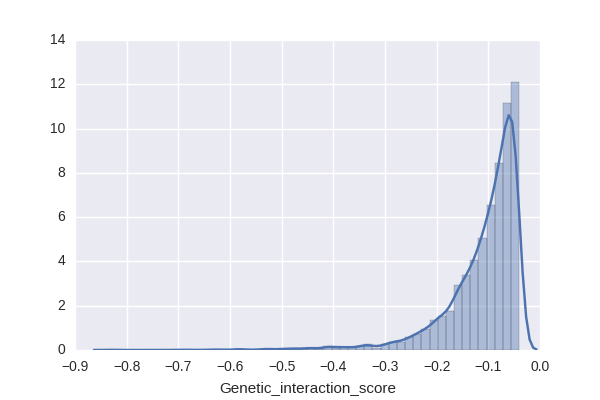
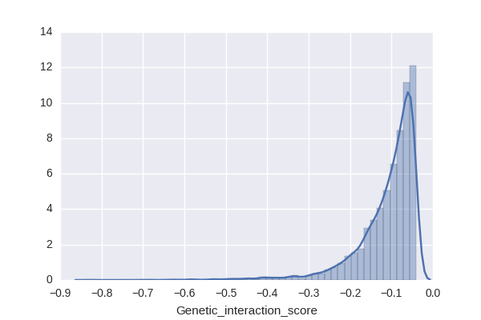
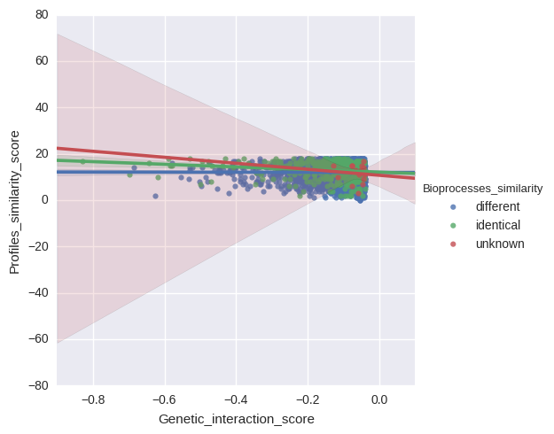
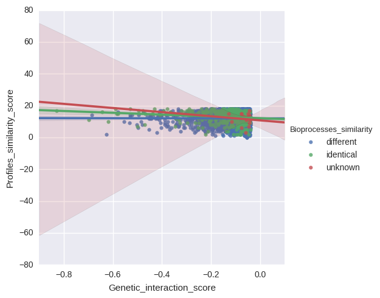

Definitions:
- DMF: Double Mutant Fitness
- SMF: Single Mutant Fitness
- DMF positive: DMF > SMF of query AND array
- DMF negative: DMF < SMF of query AND array
File created: 2016.9.19, 11:48:11
| Category | Actual value | |
|---|---|---|
| DMF positive | 0 | |
| DMF negative | 4005 | Average of 1000 permutations |
| mirror profiles | 3 | 3 |
| similar profiles | 1212 | 948 |
| dissimilar | 2790 | 3053 |
| total | 4005 |
 

 

Click to show/hide columns:
Query_ORF Query_gene_name Array_ORF Array_gene_name Process_query Process_array Bioprocesses_similarity Query_gene_profile Array_gene_profile Profiles_similarity_score Query_SMF Array_SMF DMF Genetic_interaction_scoreClick to count selected rows:
| Query_ORF | Query_gene_name | Array_ORF | Array_gene_name | Process_query | Process_array | Bioprocesses_similarity | Query_gene_profile | Array_gene_profile | Profiles_similarity_score | Query_SMF | Array_SMF | DMF | Genetic_interaction_score |
|---|---|---|---|---|---|---|---|---|---|---|---|---|---|
| YDL245C | HXT15 | YBR025C | OLA1 | drug/ion transport;metabolism/mitochondria | unknown | different | +--+++-++++++-++++ | ++++++++++++++++++ | 14.0 | 0.9919 | 0.8794 | 0.8182 | -0.0540 |
| YDL137W | ARF2 | YBR025C | OLA1 | Golgi/endosome/vacuole/sorting | unknown | different | ---+-+-++-+++--+++ | ++++++++++++++++++ | 10.0 | 0.9790 | 0.8794 | 0.8095 | -0.0514 |
| YAL021C | CCR4 | YBR231C | SWC5 | chromatin/transcription;RNA processing | chromatin/transcription | different | ---+-+-++--++--+++ | ---+-+-++--+---+++ | 17.0 | 0.4261 | 0.9087 | 0.2598 | -0.1274 |
| YAL002W | VPS8 | YBR231C | SWC5 | Golgi/endosome/vacuole/sorting | chromatin/transcription | different | ---+-+-++--+---+++ | ---+-+-++--+---+++ | 18.0 | 0.6982 | 0.9087 | 0.4859 | -0.1486 |
| YAR003W | SWD1 | YBR231C | SWC5 | chromatin/transcription | chromatin/transcription | identical | ---+-+-++--+-----+ | ---+-+-++--+---+++ | 16.0 | 0.8562 | 0.9087 | 0.5509 | -0.2272 |
| YBL039C | URA7 | YBR231C | SWC5 | metabolism/mitochondria | chromatin/transcription | different | ++++++++++++++++++ | ---+-+-++--+---+++ | 8.0 | 0.9573 | 0.9087 | 0.7810 | -0.0889 |
| YBL007C | SLA1 | YBR231C | SWC5 | cell polarity/morphogenesis | chromatin/transcription | different | -----+-++--+---++- | ---+-+-++--+---+++ | 16.0 | 0.7861 | 0.9087 | 0.6214 | -0.0929 |
| YBR094W | PBY1 | YBR231C | SWC5 | unknown | chromatin/transcription | different | -----+-++-+++--+++ | ---+-+-++--+---+++ | 15.0 | 0.9432 | 0.9087 | 0.8005 | -0.0566 |
| YCL029C | BIK1 | YBR231C | SWC5 | chromosome segregation/kinetochore/spindle/mic... | chromatin/transcription | different | ---+-+-++-+++--+++ | ---+-+-++--+---+++ | 16.0 | 0.9750 | 0.9087 | 0.8278 | -0.0582 |
| YCR077C | PAT1 | YBR231C | SWC5 | RNA processing | chromatin/transcription | different | ---+-+-++--+------ | ---+-+-++--+---+++ | 15.0 | 0.9307 | 0.9087 | 0.7684 | -0.0773 |
| YDL112W | TRM3 | YBR231C | SWC5 | ribosome/translation | chromatin/transcription | different | ---+-+-++-+++--+++ | ---+-+-++--+---+++ | 16.0 | 0.9701 | 0.9087 | 0.8377 | -0.0439 |
| YDL074C | BRE1 | YBR231C | SWC5 | chromatin/transcription | chromatin/transcription | identical | ---+-+-++-+++--+-+ | ---+-+-++--+---+++ | 15.0 | 0.6430 | 0.9087 | 0.2904 | -0.2939 |
| YBL103C | RTG3 | YBR283C | SSH1 | metabolism/mitochondria;signaling/stress respo... | ER<->Golgi traffic | different | ---+-+--+--+------ | ++-+-+-++-+++-++++ | 9.0 | 0.7281 | 0.9609 | 0.6534 | -0.0462 |
| YBR094W | PBY1 | YBR283C | SSH1 | unknown | ER<->Golgi traffic | different | -----+-++-+++--+++ | ++-+-+-++-+++-++++ | 14.0 | 0.9432 | 0.9609 | 0.8492 | -0.0572 |
| YCR077C | PAT1 | YBR283C | SSH1 | RNA processing | ER<->Golgi traffic | different | ---+-+-++--+------ | ++-+-+-++-+++-++++ | 10.0 | 0.9307 | 0.9609 | 0.8073 | -0.0870 |
| YCR094W | CDC50 | YBR283C | SSH1 | lipid/sterol/fatty acid biosynth | ER<->Golgi traffic | different | ---+-+-++-+++--+++ | ++-+-+-++-+++-++++ | 15.0 | 0.4427 | 0.9609 | 0.3812 | -0.0441 |
| YDL182W | LYS20 | YBR283C | SSH1 | amino acid biosynth&transport/nitrogen utiliza... | ER<->Golgi traffic | different | +--++----+---++--+ | ++-+-+-++-+++-++++ | 6.0 | 0.9375 | 0.9609 | 0.6254 | -0.2755 |
| YDL100C | GET3 | YBR283C | SSH1 | ER<->Golgi traffic | ER<->Golgi traffic | identical | -+-+-+-++-+++--+++ | ++-+-+-++-+++-++++ | 16.0 | 0.9747 | 0.9609 | 0.2936 | -0.6430 |
| YAL021C | CCR4 | YBR289W | SNF5 | chromatin/transcription;RNA processing | chromatin/transcription | different | ---+-+-++--++--+++ | ---+-+-++--+---+-- | 15.0 | 0.4261 | 0.2989 | 0.0609 | -0.0664 |
| YAL012W | CYS3 | YBR289W | SNF5 | metabolism/mitochondria;amino acid biosynth&tr... | chromatin/transcription | different | ++++++-+++-+-+++++ | ---+-+-++--+---+-- | 9.0 | 0.6138 | 0.2989 | 0.1197 | -0.0638 |
| YAR003W | SWD1 | YBR289W | SNF5 | chromatin/transcription | chromatin/transcription | identical | ---+-+-++--+-----+ | ---+-+-++--+---+-- | 16.0 | 0.8562 | 0.2989 | 0.1895 | -0.0664 |
| YBL103C | RTG3 | YBR289W | SNF5 | metabolism/mitochondria;signaling/stress respo... | chromatin/transcription | different | ---+-+--+--+------ | ---+-+-++--+---+-- | 16.0 | 0.7281 | 0.2989 | 0.1728 | -0.0448 |
| YBL007C | SLA1 | YBR289W | SNF5 | cell polarity/morphogenesis | chromatin/transcription | different | -----+-++--+---++- | ---+-+-++--+---+-- | 16.0 | 0.7861 | 0.2989 | 0.1879 | -0.0471 |
| YBR037C | SCO1 | YBR289W | SNF5 | metabolism/mitochondria | chromatin/transcription | different | -+++++-++--++--+++ | ---+-+-++--+---+-- | 12.0 | 0.5221 | 0.2989 | 0.1128 | -0.0432 |
| YBR105C | VID24 | YBR289W | SNF5 | metabolism/mitochondria | chromatin/transcription | different | ---+---+---+-----+ | ---+-+-++--+---+-- | 14.0 | 0.9737 | 0.2989 | 0.2177 | -0.0733 |
| YBR111W-A | SUS1 | YBR289W | SNF5 | nuclear-cytoplasic transport;chromatin/transcr... | chromatin/transcription | different | ---+---++--+---+-+ | ---+-+-++--+---+-- | 16.0 | 0.9154 | 0.2989 | 0.1553 | -0.1183 |
| YCR066W | RAD18 | YBR289W | SNF5 | DNA replication/repair/HR/cohesion | chromatin/transcription | different | -------+---+------ | ---+-+-++--+---+-- | 14.0 | 0.9520 | 0.2989 | 0.1665 | -0.1180 |
| YCR104W | PAU3 | YBR289W | SNF5 | metabolism/mitochondria | chromatin/transcription | different | ------------------ | ---+-+-++--+---+-- | 12.0 | 0.6118 | 0.2989 | 0.1394 | -0.0434 |
| YDL245C | HXT15 | YBR289W | SNF5 | drug/ion transport;metabolism/mitochondria | chromatin/transcription | different | +--+++-++++++-++++ | ---+-+-++--+---+-- | 10.0 | 0.9919 | 0.2989 | 0.2479 | -0.0485 |
| YDL082W | RPL13A | YBR289W | SNF5 | ribosome/translation | chromatin/transcription | different | ++-+-+-++-+++-++++ | ---+-+-++--+---+-- | 11.0 | 0.7892 | 0.2989 | 0.1752 | -0.0607 |
| YDL074C | BRE1 | YBR289W | SNF5 | chromatin/transcription | chromatin/transcription | identical | ---+-+-++-+++--+-+ | ---+-+-++--+---+-- | 15.0 | 0.6430 | 0.2989 | 0.1361 | -0.0561 |
| YDL006W | PTC1 | YBR289W | SNF5 | signaling/stress response | chromatin/transcription | different | --+++++++-++++-+++ | ---+-+-++--+---+-- | 10.0 | 0.5528 | 0.2989 | 0.1120 | -0.0532 |
| YAR003W | SWD1 | YCL029C | BIK1 | chromatin/transcription | chromosome segregation/kinetochore/spindle/mic... | different | ---+-+-++--+-----+ | ---+-+-++-+++--+++ | 14.0 | 0.8562 | 0.9750 | 0.7354 | -0.0995 |
| YBL087C | RPL23A | YCL029C | BIK1 | ribosome/translation | chromosome segregation/kinetochore/spindle/mic... | different | ++++++++++++++++-+ | ---+-+-++-+++--+++ | 9.0 | 0.8743 | 0.9750 | 0.7811 | -0.0713 |
| YBL039C | URA7 | YCL029C | BIK1 | metabolism/mitochondria | chromosome segregation/kinetochore/spindle/mic... | different | ++++++++++++++++++ | ---+-+-++-+++--+++ | 10.0 | 0.9573 | 0.9750 | 0.8778 | -0.0557 |
| YCR077C | PAT1 | YCL029C | BIK1 | RNA processing | chromosome segregation/kinetochore/spindle/mic... | different | ---+-+-++--+------ | ---+-+-++-+++--+++ | 13.0 | 0.9307 | 0.9750 | 0.8414 | -0.0660 |
| YDL074C | BRE1 | YCL029C | BIK1 | chromatin/transcription | chromosome segregation/kinetochore/spindle/mic... | different | ---+-+-++-+++--+-+ | ---+-+-++-+++--+++ | 17.0 | 0.6430 | 0.9750 | 0.5278 | -0.0992 |
| YBL078C | ATG8 | YCL010C | SGF29 | ER<->Golgi traffic | chromatin/transcription | different | ---+-+-++--++--+-+ | ---+---+---------- | 12.0 | 0.8836 | 0.8279 | 0.5825 | -0.1490 |
| YBR048W | RPS11B | YCL010C | SGF29 | ribosome/translation | chromatin/transcription | different | ++++++++++++++++++ | ---+---+---------- | 2.0 | 0.7089 | 0.8279 | 0.5392 | -0.0478 |
| YBR105C | VID24 | YCL010C | SGF29 | metabolism/mitochondria | chromatin/transcription | different | ---+---+---+-----+ | ---+---+---------- | 16.0 | 0.9737 | 0.8279 | 0.7148 | -0.0913 |
| YBR111W-A | SUS1 | YCL010C | SGF29 | nuclear-cytoplasic transport;chromatin/transcr... | chromatin/transcription | different | ---+---++--+---+-+ | ---+---+---------- | 14.0 | 0.9154 | 0.8279 | 0.6373 | -0.1205 |
| YBR210W | ERV15 | YCL010C | SGF29 | ER<->Golgi traffic | chromatin/transcription | different | ---+-+-++--+-----+ | ---+---+---------- | 14.0 | 0.9787 | 0.8279 | 0.7016 | -0.1087 |
| YCR094W | CDC50 | YCL010C | SGF29 | lipid/sterol/fatty acid biosynth | chromatin/transcription | different | ---+-+-++-+++--+++ | ---+---+---------- | 10.0 | 0.4427 | 0.8279 | 0.2890 | -0.0776 |
| YDL137W | ARF2 | YCL010C | SGF29 | Golgi/endosome/vacuole/sorting | chromatin/transcription | different | ---+-+-++-+++--+++ | ---+---+---------- | 10.0 | 0.9790 | 0.8279 | 0.7576 | -0.0528 |
| YDL136W | RPL35B | YCL010C | SGF29 | ribosome/translation | chromatin/transcription | different | ++++++++++++++++++ | ---+---+---------- | 2.0 | 0.8281 | 0.8279 | 0.6435 | -0.0421 |
| YDL077C | VAM6 | YCL010C | SGF29 | Golgi/endosome/vacuole/sorting | chromatin/transcription | different | ---+-+-++--++--+++ | ---+---+---------- | 11.0 | 0.7601 | 0.8279 | 0.5613 | -0.0680 |
| YDL061C | RPS29B | YCL010C | SGF29 | ribosome/translation | chromatin/transcription | different | ++-+-+-++--++-++-+ | ---+---+---------- | 9.0 | 0.6678 | 0.8279 | 0.4991 | -0.0538 |
| YAL012W | CYS3 | YCR008W | SAT4 | metabolism/mitochondria;amino acid biosynth&tr... | drug/ion transport;signaling/stress response | different | ++++++-+++-+-+++++ | +-+++++++-++++++++ | 13.0 | 0.6138 | 0.9179 | 0.4901 | -0.0733 |
| YCR091W | KIN82 | YCR008W | SAT4 | signaling/stress response;chromatin/transcription | drug/ion transport;signaling/stress response | different | +-+++++++-++++++++ | +-+++++++-++++++++ | 18.0 | 0.9832 | 0.9179 | 0.7762 | -0.1262 |
| YBL021C | HAP3 | YCR031C | RPS14A | metabolism/mitochondria;chromatin/transcription | ribosome/translation | different | ---+-+-++-+++--+-+ | ++++++++++++++++-+ | 10.0 | 0.7946 | 0.9487 | 0.6772 | -0.0766 |
| YBR034C | HMT1 | YCR031C | RPS14A | ribosome/translation;nuclear-cytoplasic transp... | ribosome/translation | different | --++-+-+++-++--+++ | ++++++++++++++++-+ | 10.0 | 0.9610 | 0.9487 | 0.8537 | -0.0580 |
| YCR094W | CDC50 | YCR031C | RPS14A | lipid/sterol/fatty acid biosynth | ribosome/translation | different | ---+-+-++-+++--+++ | ++++++++++++++++-+ | 9.0 | 0.4427 | 0.9487 | 0.3646 | -0.0553 |
| YDR005C | MAF1 | YCR031C | RPS14A | ribosome/translation | ribosome/translation | identical | ---+-+-++-+++---++ | ++++++++++++++++-+ | 8.0 | 0.8037 | 0.9487 | 0.7069 | -0.0555 |
| YAL020C | ATS1 | YCR053W | THR4 | ribosome/translation | amino acid biosynth&transport/nitrogen utiliza... | different | ---+-+-++--++--+++ | --+------+-+----+- | 9.0 | 0.9596 | 0.6947 | 0.5288 | -0.1379 |
| YBL103C | RTG3 | YCR053W | THR4 | metabolism/mitochondria;signaling/stress respo... | amino acid biosynth&transport/nitrogen utiliza... | different | ---+-+--+--+------ | --+------+-+----+- | 12.0 | 0.7281 | 0.6947 | 0.4395 | -0.0663 |
| YCR094W | CDC50 | YCR053W | THR4 | lipid/sterol/fatty acid biosynth | amino acid biosynth&transport/nitrogen utiliza... | different | ---+-+-++-+++--+++ | --+------+-+----+- | 8.0 | 0.4427 | 0.6947 | 0.2447 | -0.0628 |
| YDL182W | LYS20 | YCR053W | THR4 | amino acid biosynth&transport/nitrogen utiliza... | amino acid biosynth&transport/nitrogen utiliza... | identical | +--++----+---++--+ | --+------+-+----+- | 9.0 | 0.9375 | 0.6947 | 0.4986 | -0.1527 |
| YDR004W | RAD57 | YCR053W | THR4 | DNA replication/repair/HR/cohesion | amino acid biosynth&transport/nitrogen utiliza... | different | ++-+-+-++-+++-++++ | --+------+-+----+- | 5.0 | 0.9032 | 0.6947 | 0.4689 | -0.1586 |
| YAL021C | CCR4 | YDL226C | GCS1 | chromatin/transcription;RNA processing | ER<->Golgi traffic | different | ---+-+-++--++--+++ | ---+-+-++--++--+++ | 18.0 | 0.4261 | 0.9350 | 0.2002 | -0.1982 |
| YBL103C | RTG3 | YDL226C | GCS1 | metabolism/mitochondria;signaling/stress respo... | ER<->Golgi traffic | different | ---+-+--+--+------ | ---+-+-++--++--+++ | 13.0 | 0.7281 | 0.9350 | 0.5901 | -0.0907 |
| YBL021C | HAP3 | YDL226C | GCS1 | metabolism/mitochondria;chromatin/transcription | ER<->Golgi traffic | different | ---+-+-++-+++--+-+ | ---+-+-++--++--+++ | 16.0 | 0.7946 | 0.9350 | 0.6624 | -0.0806 |
| YBL007C | SLA1 | YDL226C | GCS1 | cell polarity/morphogenesis | ER<->Golgi traffic | different | -----+-++--+---++- | ---+-+-++--++--+++ | 15.0 | 0.7861 | 0.9350 | 0.5856 | -0.1495 |
| YBR010W | HHT1 | YDL226C | GCS1 | chromatin/transcription | ER<->Golgi traffic | different | ---+-+-++-+++--+-+ | ---+-+-++--++--+++ | 16.0 | 0.9655 | 0.9350 | 0.8251 | -0.0777 |
| YBR082C | UBC4 | YDL226C | GCS1 | protein degradation/proteosome | ER<->Golgi traffic | different | ---+-+-++-+++--+++ | ---+-+-++--++--+++ | 17.0 | 0.8477 | 0.9350 | 0.6774 | -0.1152 |
| YBR112C | CYC8 | YDL226C | GCS1 | chromatin/transcription | ER<->Golgi traffic | different | -----+-++--+---+-- | ---+-+-++--++--+++ | 14.0 | 0.9560 | 0.9350 | 0.8129 | -0.0811 |
| YCR053W | THR4 | YDL226C | GCS1 | amino acid biosynth&transport/nitrogen utiliza... | ER<->Golgi traffic | different | --+------+-+----+- | ---+-+-++--++--+++ | 9.0 | 0.6947 | 0.9350 | 0.5683 | -0.0813 |
| YCR094W | CDC50 | YDL226C | GCS1 | lipid/sterol/fatty acid biosynth | ER<->Golgi traffic | different | ---+-+-++-+++--+++ | ---+-+-++--++--+++ | 17.0 | 0.4427 | 0.9350 | 0.2018 | -0.2121 |
| YBL103C | RTG3 | YDL206W | YDL206W | metabolism/mitochondria;signaling/stress respo... | unknown | different | ---+-+--+--+------ | ---+-+--+--+---+-+ | 16.0 | 0.7281 | 0.9848 | 0.6430 | -0.0741 |
| YBR082C | UBC4 | YDL112W | TRM3 | protein degradation/proteosome | ribosome/translation | different | ---+-+-++-+++--+++ | ---+-+-++-+++--+++ | 18.0 | 0.8477 | 0.9701 | 0.7540 | -0.0684 |
| YCL008C | STP22 | YDL112W | TRM3 | Golgi/endosome/vacuole/sorting | ribosome/translation | different | ---+-+-++--+---++- | ---+-+-++-+++--+++ | 15.0 | 0.3979 | 0.9701 | 0.2941 | -0.0920 |
| YBL037W | APL3 | YDL002C | NHP10 | cell polarity/morphogenesis | chromatin/transcription | different | ---+-+-++-+++--+++ | ---+-+-++--++--+++ | 17.0 | 0.9848 | 0.6989 | 0.6168 | -0.0715 |
| YBL008W | HIR1 | YDL002C | NHP10 | chromatin/transcription | chromatin/transcription | identical | ---+-+-++-++---+++ | ---+-+-++--++--+++ | 16.0 | 0.9847 | 0.6989 | 0.6358 | -0.0524 |
| YBR010W | HHT1 | YDL002C | NHP10 | chromatin/transcription | chromatin/transcription | identical | ---+-+-++-+++--+-+ | ---+-+-++--++--+++ | 16.0 | 0.9655 | 0.6989 | 0.5928 | -0.0819 |
| YBR048W | RPS11B | YDL002C | NHP10 | ribosome/translation | chromatin/transcription | different | ++++++++++++++++++ | ---+-+-++--++--+++ | 9.0 | 0.7089 | 0.6989 | 0.3835 | -0.1119 |
| YBR105C | VID24 | YDL002C | NHP10 | metabolism/mitochondria | chromatin/transcription | different | ---+---+---+-----+ | ---+-+-++--++--+++ | 13.0 | 0.9737 | 0.6989 | 0.5327 | -0.1477 |
| YBR112C | CYC8 | YDL002C | NHP10 | chromatin/transcription | chromatin/transcription | identical | -----+-++--+---+-- | ---+-+-++--++--+++ | 14.0 | 0.9560 | 0.6989 | 0.5462 | -0.1219 |
| YBR181C | RPS6B | YDL002C | NHP10 | ribosome/translation | chromatin/transcription | different | ++-+-+-++-+++-++++ | ---+-+-++--++--+++ | 14.0 | 0.6674 | 0.6989 | 0.3293 | -0.1371 |
| YBR210W | ERV15 | YDL002C | NHP10 | ER<->Golgi traffic | chromatin/transcription | different | ---+-+-++--+-----+ | ---+-+-++--++--+++ | 15.0 | 0.9787 | 0.6989 | 0.5269 | -0.1571 |
| YBL021C | HAP3 | YDR004W | RAD57 | metabolism/mitochondria;chromatin/transcription | DNA replication/repair/HR/cohesion | different | ---+-+-++-+++--+-+ | ++-+-+-++-+++-++++ | 14.0 | 0.7946 | 0.9032 | 0.6200 | -0.0977 |
| YBR210W | ERV15 | YDR004W | RAD57 | ER<->Golgi traffic | DNA replication/repair/HR/cohesion | different | ---+-+-++--+-----+ | ++-+-+-++-+++-++++ | 11.0 | 0.9787 | 0.9032 | 0.7000 | -0.1840 |
| YCR066W | RAD18 | YDR004W | RAD57 | DNA replication/repair/HR/cohesion | DNA replication/repair/HR/cohesion | identical | -------+---+------ | ++-+-+-++-+++-++++ | 7.0 | 0.9520 | 0.9032 | 0.7706 | -0.0892 |
| YBL103C | RTG3 | YDR006C | SOK1 | metabolism/mitochondria;signaling/stress respo... | signaling/stress response | different | ---+-+--+--+------ | -----+--+--+----+- | 16.0 | 0.7281 | 0.9823 | 0.6732 | -0.0420 |
| YBL037W | APL3 | YDR006C | SOK1 | cell polarity/morphogenesis | signaling/stress response | different | ---+-+-++-+++--+++ | -----+--+--+----+- | 12.0 | 0.9848 | 0.9823 | 0.9264 | -0.0410 |
| YCR077C | PAT1 | YDR006C | SOK1 | RNA processing | signaling/stress response | different | ---+-+-++--+------ | -----+--+--+----+- | 15.0 | 0.9307 | 0.9823 | 0.7952 | -0.1190 |
| YAL012W | CYS3 | YDR080W | VPS41 | metabolism/mitochondria;amino acid biosynth&tr... | Golgi/endosome/vacuole/sorting | different | ++++++-+++-+-+++++ | ---+-+-++--+----++ | 10.0 | 0.6138 | 0.5950 | 0.2701 | -0.0951 |
| YAL002W | VPS8 | YDR080W | VPS41 | Golgi/endosome/vacuole/sorting | Golgi/endosome/vacuole/sorting | identical | ---+-+-++--+---+++ | ---+-+-++--+----++ | 17.0 | 0.6982 | 0.5950 | 0.1382 | -0.2772 |
| YBL103C | RTG3 | YDR080W | VPS41 | metabolism/mitochondria;signaling/stress respo... | Golgi/endosome/vacuole/sorting | different | ---+-+--+--+------ | ---+-+-++--+----++ | 15.0 | 0.7281 | 0.5950 | 0.3062 | -0.1270 |
| YBL087C | RPL23A | YDR080W | VPS41 | ribosome/translation | Golgi/endosome/vacuole/sorting | different | ++++++++++++++++-+ | ---+-+-++--+----++ | 6.0 | 0.8743 | 0.5950 | 0.4759 | -0.0443 |
| YBL039C | URA7 | YDR080W | VPS41 | metabolism/mitochondria | Golgi/endosome/vacuole/sorting | different | ++++++++++++++++++ | ---+-+-++--+----++ | 7.0 | 0.9573 | 0.5950 | 0.4462 | -0.1234 |
| YBL021C | HAP3 | YDR080W | VPS41 | metabolism/mitochondria;chromatin/transcription | Golgi/endosome/vacuole/sorting | different | ---+-+-++-+++--+-+ | ---+-+-++--+----++ | 14.0 | 0.7946 | 0.5950 | 0.1953 | -0.2775 |
| YBR105C | VID24 | YDR080W | VPS41 | metabolism/mitochondria | Golgi/endosome/vacuole/sorting | different | ---+---+---+-----+ | ---+-+-++--+----++ | 15.0 | 0.9737 | 0.5950 | 0.4132 | -0.1661 |
| YBR164C | ARL1 | YDR080W | VPS41 | Golgi/endosome/vacuole/sorting | Golgi/endosome/vacuole/sorting | identical | ---+-+-++-+++--+++ | ---+-+-++--+----++ | 15.0 | 0.9524 | 0.5950 | 0.3443 | -0.2223 |
| YCR091W | KIN82 | YDR080W | VPS41 | signaling/stress response;chromatin/transcription | Golgi/endosome/vacuole/sorting | different | +-+++++++-++++++++ | ---+-+-++--+----++ | 9.0 | 0.9832 | 0.5950 | 0.3479 | -0.2371 |
| YDL181W | INH1 | YDR080W | VPS41 | drug/ion transport | Golgi/endosome/vacuole/sorting | different | -----+--+--+------ | ---+-+-++--+----++ | 14.0 | 0.9720 | 0.5950 | 0.5296 | -0.0487 |
| YDL137W | ARF2 | YDR080W | VPS41 | Golgi/endosome/vacuole/sorting | Golgi/endosome/vacuole/sorting | identical | ---+-+-++-+++--+++ | ---+-+-++--+----++ | 15.0 | 0.9790 | 0.5950 | 0.4542 | -0.1282 |
| YBR105C | VID24 | YDR116C | MRPL1 | metabolism/mitochondria | metabolism/mitochondria;ribosome/translation | different | ---+---+---+-----+ | --+++++-++-+++-+-+ | 8.0 | 0.9737 | 0.8468 | 0.7157 | -0.1087 |
| YCR077C | PAT1 | YDR116C | MRPL1 | RNA processing | metabolism/mitochondria;ribosome/translation | different | ---+-+-++--+------ | --+++++-++-+++-+-+ | 9.0 | 0.9307 | 0.8468 | 0.6905 | -0.0976 |
| YDR005C | MAF1 | YDR116C | MRPL1 | ribosome/translation | metabolism/mitochondria;ribosome/translation | different | ---+-+-++-+++---++ | --+++++-++-+++-+-+ | 9.0 | 0.8037 | 0.8468 | 0.6243 | -0.0563 |
| YAL020C | ATS1 | YDR162C | NBP2 | ribosome/translation | protein folding/protein glycosylation/cell wal... | different | ---+-+-++--++--+++ | -----+-++--++--+-+ | 16.0 | 0.9596 | 0.7876 | 0.6173 | -0.1385 |
| YAL012W | CYS3 | YDR162C | NBP2 | metabolism/mitochondria;amino acid biosynth&tr... | protein folding/protein glycosylation/cell wal... | different | ++++++-+++-+-+++++ | -----+-++--++--+-+ | 8.0 | 0.6138 | 0.7876 | 0.3533 | -0.1301 |
| YAR003W | SWD1 | YDR162C | NBP2 | chromatin/transcription | protein folding/protein glycosylation/cell wal... | different | ---+-+-++--+-----+ | -----+-++--++--+-+ | 15.0 | 0.8562 | 0.7876 | 0.6048 | -0.0696 |
| YBR164C | ARL1 | YDR162C | NBP2 | Golgi/endosome/vacuole/sorting | protein folding/protein glycosylation/cell wal... | different | ---+-+-++-+++--+++ | -----+-++--++--+-+ | 15.0 | 0.9524 | 0.7876 | 0.4012 | -0.3489 |
| YCL029C | BIK1 | YDR162C | NBP2 | chromosome segregation/kinetochore/spindle/mic... | protein folding/protein glycosylation/cell wal... | different | ---+-+-++-+++--+++ | -----+-++--++--+-+ | 15.0 | 0.9750 | 0.7876 | 0.6592 | -0.1087 |
| YCL016C | DCC1 | YDR162C | NBP2 | DNA replication/repair/HR/cohesion | protein folding/protein glycosylation/cell wal... | different | ---+-+-++--+----++ | -----+-++--++--+-+ | 14.0 | 0.9483 | 0.7876 | 0.6189 | -0.1280 |
| YCR091W | KIN82 | YDR162C | NBP2 | signaling/stress response;chromatin/transcription | protein folding/protein glycosylation/cell wal... | different | +-+++++++-++++++++ | -----+-++--++--+-+ | 9.0 | 0.9832 | 0.7876 | 0.6679 | -0.1064 |
| YDL192W | ARF1 | YDR162C | NBP2 | Golgi/endosome/vacuole/sorting | protein folding/protein glycosylation/cell wal... | different | ---+-+-++-+++--+++ | -----+-++--++--+-+ | 15.0 | 0.7964 | 0.7876 | 0.5276 | -0.0997 |
| YDL117W | CYK3 | YDR162C | NBP2 | cell polarity/morphogenesis | protein folding/protein glycosylation/cell wal... | different | -----+-++-++------ | -----+-++--++--+-+ | 14.0 | 0.8683 | 0.7876 | 0.6028 | -0.0810 |
| YDL101C | DUN1 | YDR162C | NBP2 | DNA replication/repair/HR/cohesion | protein folding/protein glycosylation/cell wal... | different | +-+++++++-++++++++ | -----+-++--++--+-+ | 9.0 | 0.9350 | 0.7876 | 0.6900 | -0.0464 |
| YDL088C | ASM4 | YDR162C | NBP2 | nuclear-cytoplasic transport | protein folding/protein glycosylation/cell wal... | different | ---+-+-++-++-----+ | -----+-++--++--+-+ | 14.0 | 0.9923 | 0.7876 | 0.7406 | -0.0409 |
| YDL077C | VAM6 | YDR162C | NBP2 | Golgi/endosome/vacuole/sorting | protein folding/protein glycosylation/cell wal... | different | ---+-+-++--++--+++ | -----+-++--++--+-+ | 16.0 | 0.7601 | 0.7876 | 0.4650 | -0.1337 |
| YAL012W | CYS3 | YDR392W | SPT3 | metabolism/mitochondria;amino acid biosynth&tr... | chromatin/transcription | different | ++++++-+++-+-+++++ | --------+--+------ | 5.0 | 0.6138 | 0.7301 | 0.3414 | -0.1067 |
| YBL103C | RTG3 | YDR392W | SPT3 | metabolism/mitochondria;signaling/stress respo... | chromatin/transcription | different | ---+-+--+--+------ | --------+--+------ | 16.0 | 0.7281 | 0.7301 | 0.4003 | -0.1313 |
| YBL039C | URA7 | YDR392W | SPT3 | metabolism/mitochondria | chromatin/transcription | different | ++++++++++++++++++ | --------+--+------ | 2.0 | 0.9573 | 0.7301 | 0.6170 | -0.0819 |
| YBL021C | HAP3 | YDR392W | SPT3 | metabolism/mitochondria;chromatin/transcription | chromatin/transcription | different | ---+-+-++-+++--+-+ | --------+--+------ | 11.0 | 0.7946 | 0.7301 | 0.3690 | -0.2112 |
| YBR034C | HMT1 | YDR392W | SPT3 | ribosome/translation;nuclear-cytoplasic transp... | chromatin/transcription | different | --++-+-+++-++--+++ | --------+--+------ | 9.0 | 0.9610 | 0.7301 | 0.6478 | -0.0538 |
| YBR037C | SCO1 | YDR392W | SPT3 | metabolism/mitochondria | chromatin/transcription | different | -+++++-++--++--+++ | --------+--+------ | 8.0 | 0.5221 | 0.7301 | 0.2766 | -0.1045 |
| YBR180W | DTR1 | YDR392W | SPT3 | drug/ion transport;G1/S and G2/M cell cycle pr... | chromatin/transcription | different | --+-+----+---+---- | --------+--+------ | 12.0 | 0.9835 | 0.7301 | 0.6420 | -0.0761 |
| YBR289W | SNF5 | YDR392W | SPT3 | chromatin/transcription | chromatin/transcription | identical | ---+-+-++--+---+-- | --------+--+------ | 14.0 | 0.2989 | 0.7301 | 0.0587 | -0.1595 |
| YCR053W | THR4 | YDR392W | SPT3 | amino acid biosynth&transport/nitrogen utiliza... | chromatin/transcription | different | --+------+-+----+- | --------+--+------ | 14.0 | 0.6947 | 0.7301 | 0.4369 | -0.0704 |
| YCR077C | PAT1 | YDR392W | SPT3 | RNA processing | chromatin/transcription | different | ---+-+-++--+------ | --------+--+------ | 15.0 | 0.9307 | 0.7301 | 0.5380 | -0.1415 |
| YDL192W | ARF1 | YDR392W | SPT3 | Golgi/endosome/vacuole/sorting | chromatin/transcription | different | ---+-+-++-+++--+++ | --------+--+------ | 10.0 | 0.7964 | 0.7301 | 0.4884 | -0.0931 |
| YDL181W | INH1 | YDR392W | SPT3 | drug/ion transport | chromatin/transcription | different | -----+--+--+------ | --------+--+------ | 17.0 | 0.9720 | 0.7301 | 0.6017 | -0.1080 |
| YDL137W | ARF2 | YDR392W | SPT3 | Golgi/endosome/vacuole/sorting | chromatin/transcription | different | ---+-+-++-+++--+++ | --------+--+------ | 10.0 | 0.9790 | 0.7301 | 0.6645 | -0.0503 |
| YDL112W | TRM3 | YDR392W | SPT3 | ribosome/translation | chromatin/transcription | different | ---+-+-++-+++--+++ | --------+--+------ | 10.0 | 0.9701 | 0.7301 | 0.6642 | -0.0441 |
| YDL100C | GET3 | YDR392W | SPT3 | ER<->Golgi traffic | chromatin/transcription | different | -+-+-+-++-+++--+++ | --------+--+------ | 9.0 | 0.9747 | 0.7301 | 0.6656 | -0.0461 |
| YDR005C | MAF1 | YDR392W | SPT3 | ribosome/translation | chromatin/transcription | different | ---+-+-++-+++---++ | --------+--+------ | 11.0 | 0.8037 | 0.7301 | 0.5333 | -0.0535 |
| YBL087C | RPL23A | YDR393W | SHE9 | ribosome/translation | metabolism/mitochondria | different | ++++++++++++++++-+ | -----------------+ | 2.0 | 0.8743 | 0.7803 | 0.5771 | -0.1050 |
| YBR048W | RPS11B | YDR393W | SHE9 | ribosome/translation | metabolism/mitochondria | different | ++++++++++++++++++ | -----------------+ | 1.0 | 0.7089 | 0.7803 | 0.4904 | -0.0627 |
| YBR181C | RPS6B | YDR393W | SHE9 | ribosome/translation | metabolism/mitochondria | different | ++-+-+-++-+++-++++ | -----------------+ | 6.0 | 0.6674 | 0.7803 | 0.4432 | -0.0775 |
| YDL112W | TRM3 | YDR393W | SHE9 | ribosome/translation | metabolism/mitochondria | different | ---+-+-++-+++--+++ | -----------------+ | 9.0 | 0.9701 | 0.7803 | 0.5935 | -0.1635 |
| YDL082W | RPL13A | YDR393W | SHE9 | ribosome/translation | metabolism/mitochondria | different | ++-+-+-++-+++-++++ | -----------------+ | 6.0 | 0.7892 | 0.7803 | 0.5603 | -0.0555 |
| YDL061C | RPS29B | YDR393W | SHE9 | ribosome/translation | metabolism/mitochondria | different | ++-+-+-++--++-++-+ | -----------------+ | 8.0 | 0.6678 | 0.7803 | 0.4458 | -0.0753 |
| YDL006W | PTC1 | YDR393W | SHE9 | signaling/stress response | metabolism/mitochondria | different | --+++++++-++++-+++ | -----------------+ | 5.0 | 0.5528 | 0.7803 | 0.1560 | -0.2753 |
| YBL021C | HAP3 | YDR471W | RPL27B | metabolism/mitochondria;chromatin/transcription | ribosome/translation | different | ---+-+-++-+++--+-+ | ---+-+-++-+++--+-+ | 18.0 | 0.7946 | 0.9045 | 0.6275 | -0.0913 |
| YBR082C | UBC4 | YDR471W | RPL27B | protein degradation/proteosome | ribosome/translation | different | ---+-+-++-+++--+++ | ---+-+-++-+++--+-+ | 17.0 | 0.8477 | 0.9045 | 0.6864 | -0.0804 |
| YCR077C | PAT1 | YDR471W | RPL27B | RNA processing | ribosome/translation | different | ---+-+-++--+------ | ---+-+-++-+++--+-+ | 14.0 | 0.9307 | 0.9045 | 0.6915 | -0.1503 |
| YCR094W | CDC50 | YDR471W | RPL27B | lipid/sterol/fatty acid biosynth | ribosome/translation | different | ---+-+-++-+++--+++ | ---+-+-++-+++--+-+ | 17.0 | 0.4427 | 0.9045 | 0.3396 | -0.0608 |
| YDL192W | ARF1 | YDR471W | RPL27B | Golgi/endosome/vacuole/sorting | ribosome/translation | different | ---+-+-++-+++--+++ | ---+-+-++-+++--+-+ | 17.0 | 0.7964 | 0.9045 | 0.5992 | -0.1212 |
| YDL077C | VAM6 | YDR471W | RPL27B | Golgi/endosome/vacuole/sorting | ribosome/translation | different | ---+-+-++--++--+++ | ---+-+-++-+++--+-+ | 16.0 | 0.7601 | 0.9045 | 0.6343 | -0.0532 |
| YDL001W | RMD1 | YDR471W | RPL27B | G1/S and G2/M cell cycle progression/meiosis | ribosome/translation | different | ---+-++++--++---++ | ---+-+-++-+++--+-+ | 14.0 | 0.9905 | 0.9045 | 0.8329 | -0.0630 |
| YBL103C | RTG3 | YDR508C | GNP1 | metabolism/mitochondria;signaling/stress respo... | amino acid biosynth&transport/nitrogen utiliza... | different | ---+-+--+--+------ | --+-+----+---+---- | 10.0 | 0.7281 | 0.9847 | 0.6704 | -0.0466 |
| YBR082C | UBC4 | YDR508C | GNP1 | protein degradation/proteosome | amino acid biosynth&transport/nitrogen utiliza... | different | ---+-+-++-+++--+++ | --+-+----+---+---- | 4.0 | 0.8477 | 0.9847 | 0.7295 | -0.1053 |
| YCR053W | THR4 | YDR508C | GNP1 | amino acid biosynth&transport/nitrogen utiliza... | amino acid biosynth&transport/nitrogen utiliza... | identical | --+------+-+----+- | --+-+----+---+---- | 14.0 | 0.6947 | 0.9847 | 0.4460 | -0.2382 |
| YDL192W | ARF1 | YDR508C | GNP1 | Golgi/endosome/vacuole/sorting | amino acid biosynth&transport/nitrogen utiliza... | different | ---+-+-++-+++--+++ | --+-+----+---+---- | 4.0 | 0.7964 | 0.9847 | 0.6446 | -0.1397 |
| YDL137W | ARF2 | YDR508C | GNP1 | Golgi/endosome/vacuole/sorting | amino acid biosynth&transport/nitrogen utiliza... | different | ---+-+-++-+++--+++ | --+-+----+---+---- | 4.0 | 0.9790 | 0.9847 | 0.8975 | -0.0666 |
| YDL112W | TRM3 | YDR508C | GNP1 | ribosome/translation | amino acid biosynth&transport/nitrogen utiliza... | different | ---+-+-++-+++--+++ | --+-+----+---+---- | 4.0 | 0.9701 | 0.9847 | 0.8958 | -0.0595 |
| YDL077C | VAM6 | YDR508C | GNP1 | Golgi/endosome/vacuole/sorting | amino acid biosynth&transport/nitrogen utiliza... | different | ---+-+-++--++--+++ | --+-+----+---+---- | 5.0 | 0.7601 | 0.9847 | 0.6464 | -0.1021 |
| YAL020C | ATS1 | YER052C | HOM3 | ribosome/translation | amino acid biosynth&transport/nitrogen utiliza... | different | ---+-+-++--++--+++ | +++++-+--+---++--+ | 3.0 | 0.9596 | 0.9692 | 0.8486 | -0.0814 |
| YDL215C | GDH2 | YER052C | HOM3 | metabolism/mitochondria | amino acid biosynth&transport/nitrogen utiliza... | different | --+----+----+---+- | +++++-+--+---++--+ | 6.0 | 0.9977 | 0.9692 | 0.8501 | -0.1167 |
| YDL117W | CYK3 | YER052C | HOM3 | cell polarity/morphogenesis | amino acid biosynth&transport/nitrogen utiliza... | different | -----+-++-++------ | +++++-+--+---++--+ | 3.0 | 0.8683 | 0.9692 | 0.7922 | -0.0493 |
| YDL100C | GET3 | YER052C | HOM3 | ER<->Golgi traffic | amino acid biosynth&transport/nitrogen utiliza... | different | -+-+-+-++-+++--+++ | +++++-+--+---++--+ | 3.0 | 0.9747 | 0.9692 | 0.8266 | -0.1180 |
| YBR048W | RPS11B | YFL003C | MSH4 | ribosome/translation | G1/S and G2/M cell cycle progression/meiosis | different | ++++++++++++++++++ | --++++++++++++-+++ | 15.0 | 0.7089 | 0.9803 | 0.6422 | -0.0528 |
| YCL029C | BIK1 | YFL003C | MSH4 | chromosome segregation/kinetochore/spindle/mic... | G1/S and G2/M cell cycle progression/meiosis | different | ---+-+-++-+++--+++ | --++++++++++++-+++ | 13.0 | 0.9750 | 0.9803 | 0.7379 | -0.2179 |
| YCR028C-A | RIM1 | YFL003C | MSH4 | metabolism/mitochondria | G1/S and G2/M cell cycle progression/meiosis | different | --+++++-++-+++---- | --++++++++++++-+++ | 13.0 | 0.6160 | 0.9803 | 0.5553 | -0.0486 |
| YCR066W | RAD18 | YFL003C | MSH4 | DNA replication/repair/HR/cohesion | G1/S and G2/M cell cycle progression/meiosis | different | -------+---+------ | --++++++++++++-+++ | 5.0 | 0.9520 | 0.9803 | 0.7809 | -0.1523 |
| YBL008W | HIR1 | YGL251C | HFM1 | chromatin/transcription | G1/S and G2/M cell cycle progression/meiosis | different | ---+-+-++-++---+++ | ++++-+-++++++-++++ | 12.0 | 0.9847 | 0.9102 | 0.7506 | -0.1457 |
| YCR077C | PAT1 | YGL251C | HFM1 | RNA processing | G1/S and G2/M cell cycle progression/meiosis | different | ---+-+-++--+------ | ++++-+-++++++-++++ | 8.0 | 0.9307 | 0.9102 | 0.7952 | -0.0519 |
| YDL117W | CYK3 | YGL251C | HFM1 | cell polarity/morphogenesis | G1/S and G2/M cell cycle progression/meiosis | different | -----+-++-++------ | ++++-+-++++++-++++ | 8.0 | 0.8683 | 0.9102 | 0.7181 | -0.0722 |
| YBR289W | SNF5 | YGL210W | YPT32 | chromatin/transcription | cell polarity/morphogenesis | different | ---+-+-++--+---+-- | ---+-+-++-+++--+++ | 14.0 | 0.2989 | 0.9643 | 0.2240 | -0.0643 |
| YCL016C | DCC1 | YGL210W | YPT32 | DNA replication/repair/HR/cohesion | cell polarity/morphogenesis | different | ---+-+-++--+----++ | ---+-+-++-+++--+++ | 15.0 | 0.9483 | 0.9643 | 0.8216 | -0.0929 |
| YCR094W | CDC50 | YGL210W | YPT32 | lipid/sterol/fatty acid biosynth | cell polarity/morphogenesis | different | ---+-+-++-+++--+++ | ---+-+-++-+++--+++ | 18.0 | 0.4427 | 0.9643 | 0.3723 | -0.0546 |
| YDL215C | GDH2 | YGL210W | YPT32 | metabolism/mitochondria | cell polarity/morphogenesis | different | --+----+----+---+- | ---+-+-++-+++--+++ | 10.0 | 0.9977 | 0.9643 | 0.8422 | -0.1199 |
| YBR016W | YBR016W | YGL202W | ARO8 | unknown | amino acid biosynth&transport/nitrogen utiliza... | different | -------+---------- | +++-+--+++-+-++--+ | 8.0 | 0.9891 | 0.9417 | 0.8873 | -0.0441 |
| YBR094W | PBY1 | YGL202W | ARO8 | unknown | amino acid biosynth&transport/nitrogen utiliza... | different | -----+-++-+++--+++ | +++-+--+++-+-++--+ | 6.0 | 0.9432 | 0.9417 | 0.8238 | -0.0644 |
| YBR210W | ERV15 | YGL202W | ARO8 | ER<->Golgi traffic | amino acid biosynth&transport/nitrogen utiliza... | different | ---+-+-++--+-----+ | +++-+--+++-+-++--+ | 9.0 | 0.9787 | 0.9417 | 0.7987 | -0.1229 |
| YAL021C | CCR4 | YGL124C | MON1 | chromatin/transcription;RNA processing | Golgi/endosome/vacuole/sorting | different | ---+-+-++--++--+++ | ---+-+-++--++--+++ | 18.0 | 0.4261 | 0.8361 | 0.2568 | -0.0995 |
| YCL008C | STP22 | YGL124C | MON1 | Golgi/endosome/vacuole/sorting | Golgi/endosome/vacuole/sorting | identical | ---+-+-++--+---++- | ---+-+-++--++--+++ | 16.0 | 0.3979 | 0.8361 | 0.2665 | -0.0662 |
| YCR077C | PAT1 | YGL124C | MON1 | RNA processing | Golgi/endosome/vacuole/sorting | different | ---+-+-++--+------ | ---+-+-++--++--+++ | 14.0 | 0.9307 | 0.8361 | 0.6511 | -0.1271 |
| YCR094W | CDC50 | YGL124C | MON1 | lipid/sterol/fatty acid biosynth | Golgi/endosome/vacuole/sorting | different | ---+-+-++-+++--+++ | ---+-+-++--++--+++ | 17.0 | 0.4427 | 0.8361 | 0.2486 | -0.1216 |
| YAL012W | CYS3 | YGR133W | PEX4 | metabolism/mitochondria;amino acid biosynth&tr... | NaN | different | ++++++-+++-+-+++++ | ---+-+-++-+++--+++ | 9.0 | 0.6138 | 0.9086 | 0.4598 | -0.0979 |
| YBL047C | EDE1 | YGR133W | PEX4 | cell polarity/morphogenesis | NaN | different | ---+-++++-+++--+-+ | ---+-+-++-+++--+++ | 16.0 | 0.9425 | 0.9086 | 0.7771 | -0.0793 |
| YBL021C | HAP3 | YGR133W | PEX4 | metabolism/mitochondria;chromatin/transcription | NaN | different | ---+-+-++-+++--+-+ | ---+-+-++-+++--+++ | 17.0 | 0.7946 | 0.9086 | 0.6810 | -0.0410 |
| YBR094W | PBY1 | YGR133W | PEX4 | unknown | NaN | different | -----+-++-+++--+++ | ---+-+-++-+++--+++ | 17.0 | 0.9432 | 0.9086 | 0.8153 | -0.0418 |
| YCR091W | KIN82 | YGR133W | PEX4 | signaling/stress response;chromatin/transcription | NaN | different | +-+++++++-++++++++ | ---+-+-++-+++--+++ | 12.0 | 0.9832 | 0.9086 | 0.7688 | -0.1246 |
| YBL021C | HAP3 | YGR214W | RPS0A | metabolism/mitochondria;chromatin/transcription | ribosome/translation | different | ---+-+-++-+++--+-+ | ++++++++++++++++++ | 9.0 | 0.7946 | 0.8237 | 0.5313 | -0.1232 |
| YBR010W | HHT1 | YGR214W | RPS0A | chromatin/transcription | ribosome/translation | different | ---+-+-++-+++--+-+ | ++++++++++++++++++ | 9.0 | 0.9655 | 0.8237 | 0.7461 | -0.0493 |
| YBR034C | HMT1 | YGR214W | RPS0A | ribosome/translation;nuclear-cytoplasic transp... | ribosome/translation | different | --++-+-+++-++--+++ | ++++++++++++++++++ | 11.0 | 0.9610 | 0.8237 | 0.7360 | -0.0556 |
| YBR082C | UBC4 | YGR214W | RPS0A | protein degradation/proteosome | ribosome/translation | different | ---+-+-++-+++--+++ | ++++++++++++++++++ | 10.0 | 0.8477 | 0.8237 | 0.6351 | -0.0632 |
| YBR210W | ERV15 | YGR214W | RPS0A | ER<->Golgi traffic | ribosome/translation | different | ---+-+-++--+-----+ | ++++++++++++++++++ | 6.0 | 0.9787 | 0.8237 | 0.6818 | -0.1244 |
| YCR104W | PAU3 | YGR214W | RPS0A | metabolism/mitochondria | ribosome/translation | different | ------------------ | ++++++++++++++++++ | 0.0 | 0.6118 | 0.8237 | 0.4498 | -0.0542 |
| YBL103C | RTG3 | YHL036W | MUP3 | metabolism/mitochondria;signaling/stress respo... | drug/ion transport;amino acid biosynth&transpo... | different | ---+-+--+--+------ | ++++++-+++-+-++-++ | 8.0 | 0.7281 | 0.9919 | 0.6549 | -0.0673 |
| YCR091W | KIN82 | YHL036W | MUP3 | signaling/stress response;chromatin/transcription | drug/ion transport;amino acid biosynth&transpo... | different | +-+++++++-++++++++ | ++++++-+++-+-++-++ | 12.0 | 0.9832 | 0.9919 | 0.8914 | -0.0838 |
| YAL002W | VPS8 | YHR030C | SLT2 | Golgi/endosome/vacuole/sorting | protein folding/protein glycosylation/cell wal... | different | ---+-+-++--+---+++ | +-+++++++-++++++++ | 10.0 | 0.6982 | 0.9667 | 0.5598 | -0.1152 |
| YBL047C | EDE1 | YHR030C | SLT2 | cell polarity/morphogenesis | protein folding/protein glycosylation/cell wal... | different | ---+-++++-+++--+-+ | +-+++++++-++++++++ | 12.0 | 0.9425 | 0.9667 | 0.6551 | -0.2560 |
| YBL007C | SLA1 | YHR030C | SLT2 | cell polarity/morphogenesis | protein folding/protein glycosylation/cell wal... | different | -----+-++--+---++- | +-+++++++-++++++++ | 8.0 | 0.7861 | 0.9667 | 0.5948 | -0.1652 |
| YCR091W | KIN82 | YHR030C | SLT2 | signaling/stress response;chromatin/transcription | protein folding/protein glycosylation/cell wal... | different | +-+++++++-++++++++ | +-+++++++-++++++++ | 18.0 | 0.9832 | 0.9667 | 0.8946 | -0.0559 |
| YDL117W | CYK3 | YHR030C | SLT2 | cell polarity/morphogenesis | protein folding/protein glycosylation/cell wal... | different | -----+-++-++------ | +-+++++++-++++++++ | 7.0 | 0.8683 | 0.9667 | 0.6907 | -0.1487 |
| YDL100C | GET3 | YHR030C | SLT2 | ER<->Golgi traffic | protein folding/protein glycosylation/cell wal... | different | -+-+-+-++-+++--+++ | +-+++++++-++++++++ | 11.0 | 0.9747 | 0.9667 | 0.8606 | -0.0816 |
| YDR004W | RAD57 | YHR030C | SLT2 | DNA replication/repair/HR/cohesion | protein folding/protein glycosylation/cell wal... | different | ++-+-+-++-+++-++++ | +-+++++++-++++++++ | 13.0 | 0.9032 | 0.9667 | 0.8239 | -0.0492 |
| YAL002W | VPS8 | YHR200W | RPN10 | Golgi/endosome/vacuole/sorting | protein degradation/proteosome | different | ---+-+-++--+---+++ | ---+-+-++-+++--+++ | 16.0 | 0.6982 | 0.9326 | 0.5799 | -0.0713 |
| YBL087C | RPL23A | YHR200W | RPN10 | ribosome/translation | protein degradation/proteosome | different | ++++++++++++++++-+ | ---+-+-++-+++--+++ | 9.0 | 0.8743 | 0.9326 | 0.7246 | -0.0907 |
| YBL039C | URA7 | YHR200W | RPN10 | metabolism/mitochondria | protein degradation/proteosome | different | ++++++++++++++++++ | ---+-+-++-+++--+++ | 10.0 | 0.9573 | 0.9326 | 0.8034 | -0.0895 |
| YBL008W | HIR1 | YHR200W | RPN10 | chromatin/transcription | protein degradation/proteosome | different | ---+-+-++-++---+++ | ---+-+-++-+++--+++ | 17.0 | 0.9847 | 0.9326 | 0.6238 | -0.2946 |
| YBR009C | HHF1 | YHR200W | RPN10 | chromosome segregation/kinetochore/spindle/mic... | protein degradation/proteosome | different | ---+-+-++-+++--+-+ | ---+-+-++-+++--+++ | 17.0 | 0.9223 | 0.9326 | 0.6583 | -0.2019 |
| YBR010W | HHT1 | YHR200W | RPN10 | chromatin/transcription | protein degradation/proteosome | different | ---+-+-++-+++--+-+ | ---+-+-++-+++--+++ | 17.0 | 0.9655 | 0.9326 | 0.8212 | -0.0793 |
| YBR048W | RPS11B | YHR200W | RPN10 | ribosome/translation | protein degradation/proteosome | different | ++++++++++++++++++ | ---+-+-++-+++--+++ | 10.0 | 0.7089 | 0.9326 | 0.5967 | -0.0644 |
| YCL016C | DCC1 | YHR200W | RPN10 | DNA replication/repair/HR/cohesion | protein degradation/proteosome | different | ---+-+-++--+----++ | ---+-+-++-+++--+++ | 15.0 | 0.9483 | 0.9326 | 0.5017 | -0.3827 |
| YCR066W | RAD18 | YHR200W | RPN10 | DNA replication/repair/HR/cohesion | protein degradation/proteosome | different | -------+---+------ | ---+-+-++-+++--+++ | 10.0 | 0.9520 | 0.9326 | 0.8040 | -0.0838 |
| YDL245C | HXT15 | YHR200W | RPN10 | drug/ion transport;metabolism/mitochondria | protein degradation/proteosome | different | +--+++-++++++-++++ | ---+-+-++-+++--+++ | 14.0 | 0.9919 | 0.9326 | 0.8831 | -0.0420 |
| YDL136W | RPL35B | YHR200W | RPN10 | ribosome/translation | protein degradation/proteosome | different | ++++++++++++++++++ | ---+-+-++-+++--+++ | 10.0 | 0.8281 | 0.9326 | 0.7251 | -0.0472 |
| YDL117W | CYK3 | YHR200W | RPN10 | cell polarity/morphogenesis | protein degradation/proteosome | different | -----+-++-++------ | ---+-+-++-+++--+++ | 13.0 | 0.8683 | 0.9326 | 0.6744 | -0.1354 |
| YDL074C | BRE1 | YHR200W | RPN10 | chromatin/transcription | protein degradation/proteosome | different | ---+-+-++-+++--+-+ | ---+-+-++-+++--+++ | 17.0 | 0.6430 | 0.9326 | 0.3494 | -0.2503 |
| YDL061C | RPS29B | YHR200W | RPN10 | ribosome/translation | protein degradation/proteosome | different | ++-+-+-++--++-++-+ | ---+-+-++-+++--+++ | 13.0 | 0.6678 | 0.9326 | 0.5564 | -0.0665 |
| YCR066W | RAD18 | YHR206W | SKN7 | DNA replication/repair/HR/cohesion | G1/S and G2/M cell cycle progression/meiosis;s... | different | -------+---+------ | ---+-+-++--+---+-+ | 13.0 | 0.9520 | 0.9618 | 0.7041 | -0.2115 |
| YDL006W | PTC1 | YHR206W | SKN7 | signaling/stress response | G1/S and G2/M cell cycle progression/meiosis;s... | different | --+++++++-++++-+++ | ---+-+-++--+---+-+ | 11.0 | 0.5528 | 0.9618 | 0.2070 | -0.3246 |
| YDR004W | RAD57 | YHR206W | SKN7 | DNA replication/repair/HR/cohesion | G1/S and G2/M cell cycle progression/meiosis;s... | different | ++-+-+-++-+++-++++ | ---+-+-++--+---+-+ | 12.0 | 0.9032 | 0.9618 | 0.7289 | -0.1398 |
| YBR034C | HMT1 | YIL036W | CST6 | ribosome/translation;nuclear-cytoplasic transp... | chromatin/transcription | different | --++-+-+++-++--+++ | -----+--+--+-----+ | 11.0 | 0.9610 | 0.9767 | 0.8851 | -0.0535 |
| YBR181C | RPS6B | YIL036W | CST6 | ribosome/translation | chromatin/transcription | different | ++-+-+-++-+++-++++ | -----+--+--+-----+ | 9.0 | 0.6674 | 0.9767 | 0.6074 | -0.0444 |
| YCL008C | STP22 | YIL036W | CST6 | Golgi/endosome/vacuole/sorting | chromatin/transcription | different | ---+-+-++--+---++- | -----+--+--+-----+ | 13.0 | 0.3979 | 0.9767 | 0.3250 | -0.0636 |
| YCR077C | PAT1 | YIL036W | CST6 | RNA processing | chromatin/transcription | different | ---+-+-++--+------ | -----+--+--+-----+ | 15.0 | 0.9307 | 0.9767 | 0.8345 | -0.0745 |
| YBR016W | YBR016W | YIR033W | MGA2 | unknown | lipid/sterol/fatty acid biosynth | different | -------+---------- | ------------------ | 17.0 | 0.9891 | 0.8529 | 0.7816 | -0.0619 |
| YBR019C | GAL10 | YIR033W | MGA2 | metabolism/mitochondria | lipid/sterol/fatty acid biosynth | different | --++++-+++-+-+-+++ | ------------------ | 6.0 | 0.9938 | 0.8529 | 0.7965 | -0.0511 |
| YDL117W | CYK3 | YIR033W | MGA2 | cell polarity/morphogenesis | lipid/sterol/fatty acid biosynth | different | -----+-++-++------ | ------------------ | 13.0 | 0.8683 | 0.8529 | 0.6397 | -0.1008 |
| YDL100C | GET3 | YIR033W | MGA2 | ER<->Golgi traffic | lipid/sterol/fatty acid biosynth | different | -+-+-+-++-+++--+++ | ------------------ | 7.0 | 0.9747 | 0.8529 | 0.6455 | -0.1858 |
| YDL006W | PTC1 | YIR033W | MGA2 | signaling/stress response | lipid/sterol/fatty acid biosynth | different | --+++++++-++++-+++ | ------------------ | 4.0 | 0.5528 | 0.8529 | 0.4132 | -0.0582 |
| YBR094W | PBY1 | YJL197W | UBP12 | unknown | unknown | unknown | -----+-++-+++--+++ | ---+-+-++-+++--+++ | 17.0 | 0.9432 | 0.9940 | 0.8930 | -0.0446 |
| YCR077C | PAT1 | YJL197W | UBP12 | RNA processing | unknown | different | ---+-+-++--+------ | ---+-+-++-+++--+++ | 13.0 | 0.9307 | 0.9940 | 0.8772 | -0.0478 |
| YDL101C | DUN1 | YJL197W | UBP12 | DNA replication/repair/HR/cohesion | unknown | different | +-+++++++-++++++++ | ---+-+-++-+++--+++ | 12.0 | 0.9350 | 0.9940 | 0.8680 | -0.0614 |
| YAL021C | CCR4 | YJL136C | RPS21B | chromatin/transcription;RNA processing | ribosome/translation | different | ---+-+-++--++--+++ | ---+-+-++-+++----+ | 15.0 | 0.4261 | 0.8477 | 0.3146 | -0.0466 |
| YAL020C | ATS1 | YJL136C | RPS21B | ribosome/translation | ribosome/translation | identical | ---+-+-++--++--+++ | ---+-+-++-+++----+ | 15.0 | 0.9596 | 0.8477 | 0.7306 | -0.0829 |
| YBL039C | URA7 | YJL136C | RPS21B | metabolism/mitochondria | ribosome/translation | different | ++++++++++++++++++ | ---+-+-++-+++----+ | 8.0 | 0.9573 | 0.8477 | 0.7266 | -0.0850 |
| YBR010W | HHT1 | YJL136C | RPS21B | chromatin/transcription | ribosome/translation | different | ---+-+-++-+++--+-+ | ---+-+-++-+++----+ | 17.0 | 0.9655 | 0.8477 | 0.6710 | -0.1475 |
| YBR105C | VID24 | YJL136C | RPS21B | metabolism/mitochondria | ribosome/translation | different | ---+---+---+-----+ | ---+-+-++-+++----+ | 14.0 | 0.9737 | 0.8477 | 0.7471 | -0.0783 |
| YBR111W-A | SUS1 | YJL136C | RPS21B | nuclear-cytoplasic transport;chromatin/transcr... | ribosome/translation | different | ---+---++--+---+-+ | ---+-+-++-+++----+ | 14.0 | 0.9154 | 0.8477 | 0.5983 | -0.1777 |
| YCR077C | PAT1 | YJL136C | RPS21B | RNA processing | ribosome/translation | different | ---+-+-++--+------ | ---+-+-++-+++----+ | 15.0 | 0.9307 | 0.8477 | 0.6428 | -0.1461 |
| YCR094W | CDC50 | YJL136C | RPS21B | lipid/sterol/fatty acid biosynth | ribosome/translation | different | ---+-+-++-+++--+++ | ---+-+-++-+++----+ | 16.0 | 0.4427 | 0.8477 | 0.3264 | -0.0489 |
| YDL192W | ARF1 | YJL136C | RPS21B | Golgi/endosome/vacuole/sorting | ribosome/translation | different | ---+-+-++-+++--+++ | ---+-+-++-+++----+ | 16.0 | 0.7964 | 0.8477 | 0.5267 | -0.1485 |
| YDL088C | ASM4 | YJL136C | RPS21B | nuclear-cytoplasic transport | ribosome/translation | different | ---+-+-++-++-----+ | ---+-+-++-+++----+ | 17.0 | 0.9923 | 0.8477 | 0.7187 | -0.1225 |
| YBL103C | RTG3 | YJR048W | CYC1 | metabolism/mitochondria;signaling/stress respo... | metabolism/mitochondria | different | ---+-+--+--+------ | --++-+-++--++--+-- | 14.0 | 0.7281 | 0.9998 | 0.6635 | -0.0644 |
| YBL021C | HAP3 | YJR048W | CYC1 | metabolism/mitochondria;chromatin/transcription | metabolism/mitochondria | different | ---+-+-++-+++--+-+ | --++-+-++--++--+-- | 15.0 | 0.7946 | 0.9998 | 0.7324 | -0.0620 |
| YBR026C | ETR1 | YJR048W | CYC1 | metabolism/mitochondria | metabolism/mitochondria | identical | --++-+-++--+---+++ | --++-+-++--++--+-- | 15.0 | 0.7248 | 0.9998 | 0.6751 | -0.0496 |
| YBR105C | VID24 | YJR060W | CBF1 | metabolism/mitochondria | unknown | different | ---+---+---+-----+ | ---+-+--+--+------ | 14.0 | 0.9737 | 0.9710 | 0.8866 | -0.0588 |
| YCR077C | PAT1 | YJR060W | CBF1 | RNA processing | unknown | different | ---+-+-++--+------ | ---+-+--+--+------ | 17.0 | 0.9307 | 0.9710 | 0.8551 | -0.0485 |
| YDL192W | ARF1 | YJR060W | CBF1 | Golgi/endosome/vacuole/sorting | unknown | different | ---+-+-++-+++--+++ | ---+-+--+--+------ | 12.0 | 0.7964 | 0.9710 | 0.7306 | -0.0427 |
| YDL117W | CYK3 | YJR060W | CBF1 | cell polarity/morphogenesis | unknown | different | -----+-++-++------ | ---+-+--+--+------ | 15.0 | 0.8683 | 0.9710 | 0.7381 | -0.1049 |
| YDL088C | ASM4 | YJR060W | CBF1 | nuclear-cytoplasic transport | unknown | different | ---+-+-++-++-----+ | ---+-+--+--+------ | 15.0 | 0.9923 | 0.9710 | 0.8797 | -0.0838 |
| YDL006W | PTC1 | YJR060W | CBF1 | signaling/stress response | unknown | different | --+++++++-++++-+++ | ---+-+--+--+------ | 8.0 | 0.5528 | 0.9710 | 0.2815 | -0.2552 |
| YBL103C | RTG3 | YJR088C | EMC2 | metabolism/mitochondria;signaling/stress respo... | unknown | different | ---+-+--+--+------ | ---+-+-++--++--+++ | 13.0 | 0.7281 | 0.9920 | 0.6728 | -0.0494 |
| YBR105C | VID24 | YJR088C | EMC2 | metabolism/mitochondria | unknown | different | ---+---+---+-----+ | ---+-+-++--++--+++ | 13.0 | 0.9737 | 0.9920 | 0.8851 | -0.0807 |
| YCR053W | THR4 | YJR088C | EMC2 | amino acid biosynth&transport/nitrogen utiliza... | unknown | different | --+------+-+----+- | ---+-+-++--++--+++ | 9.0 | 0.6947 | 0.9920 | 0.5885 | -0.1007 |
| YAL002W | VPS8 | YJR139C | HOM6 | Golgi/endosome/vacuole/sorting | amino acid biosynth&transport/nitrogen utiliza... | different | ---+-+-++--+---+++ | +++++-+--+---++--+ | 4.0 | 0.6982 | 0.7323 | 0.2871 | -0.2241 |
| YBR010W | HHT1 | YJR139C | HOM6 | chromatin/transcription | amino acid biosynth&transport/nitrogen utiliza... | different | ---+-+-++-+++--+-+ | +++++-+--+---++--+ | 3.0 | 0.9655 | 0.7323 | 0.5944 | -0.1126 |
| YBR026C | ETR1 | YJR139C | HOM6 | metabolism/mitochondria | amino acid biosynth&transport/nitrogen utiliza... | different | --++-+-++--+---+++ | +++++-+--+---++--+ | 5.0 | 0.7248 | 0.7323 | 0.4466 | -0.0842 |
| YCL016C | DCC1 | YJR139C | HOM6 | DNA replication/repair/HR/cohesion | amino acid biosynth&transport/nitrogen utiliza... | different | ---+-+-++--+----++ | +++++-+--+---++--+ | 5.0 | 0.9483 | 0.7323 | 0.5011 | -0.1933 |
| YDR004W | RAD57 | YJR139C | HOM6 | DNA replication/repair/HR/cohesion | amino acid biosynth&transport/nitrogen utiliza... | different | ++-+-+-++-+++-++++ | +++++-+--+---++--+ | 5.0 | 0.9032 | 0.7323 | 0.2085 | -0.4529 |
| YAL012W | CYS3 | YKL197C | PEX1 | metabolism/mitochondria;amino acid biosynth&tr... | NaN | different | ++++++-+++-+-+++++ | ++-+-+-++-+++-++++ | 12.0 | 0.6138 | 0.8723 | 0.4918 | -0.0436 |
| YBL039C | URA7 | YKL197C | PEX1 | metabolism/mitochondria | NaN | different | ++++++++++++++++++ | ++-+-+-++-+++-++++ | 13.0 | 0.9573 | 0.8723 | 0.7810 | -0.0541 |
| YBR026C | ETR1 | YKL197C | PEX1 | metabolism/mitochondria | NaN | different | --++-+-++--+---+++ | ++-+-+-++-+++-++++ | 12.0 | 0.7248 | 0.8723 | 0.5345 | -0.0978 |
| YBR298C | MAL31 | YKL197C | PEX1 | metabolism/mitochondria | NaN | different | ------------------ | ++-+-+-++-+++-++++ | 5.0 | 0.9781 | 0.8723 | 0.7205 | -0.1328 |
| YDL192W | ARF1 | YKL197C | PEX1 | Golgi/endosome/vacuole/sorting | NaN | different | ---+-+-++-+++--+++ | ++-+-+-++-+++-++++ | 15.0 | 0.7964 | 0.8723 | 0.6243 | -0.0705 |
| YDR005C | MAF1 | YKL197C | PEX1 | ribosome/translation | NaN | different | ---+-+-++-+++---++ | ++-+-+-++-+++-++++ | 14.0 | 0.8037 | 0.8723 | 0.6409 | -0.0602 |
| YAL020C | ATS1 | YKL190W | CNB1 | ribosome/translation | signaling/stress response | different | ---+-+-++--++--+++ | ---+-+-++-+++--+++ | 17.0 | 0.9596 | 0.9839 | 0.8952 | -0.0490 |
| YBL078C | ATG8 | YKL190W | CNB1 | ER<->Golgi traffic | signaling/stress response | different | ---+-+-++--++--+-+ | ---+-+-++-+++--+++ | 16.0 | 0.8836 | 0.9839 | 0.7306 | -0.1387 |
| YBL047C | EDE1 | YKL190W | CNB1 | cell polarity/morphogenesis | signaling/stress response | different | ---+-++++-+++--+-+ | ---+-+-++-+++--+++ | 16.0 | 0.9425 | 0.9839 | 0.7877 | -0.1396 |
| YBR298C | MAL31 | YKL190W | CNB1 | metabolism/mitochondria | signaling/stress response | different | ------------------ | ---+-+-++-+++--+++ | 8.0 | 0.9781 | 0.9839 | 0.8955 | -0.0668 |
| YCR094W | CDC50 | YKL190W | CNB1 | lipid/sterol/fatty acid biosynth | signaling/stress response | different | ---+-+-++-+++--+++ | ---+-+-++-+++--+++ | 18.0 | 0.4427 | 0.9839 | 0.2676 | -0.1680 |
| YDL192W | ARF1 | YKL190W | CNB1 | Golgi/endosome/vacuole/sorting | signaling/stress response | different | ---+-+-++-+++--+++ | ---+-+-++-+++--+++ | 18.0 | 0.7964 | 0.9839 | 0.6960 | -0.0876 |
| YAL002W | VPS8 | YKL148C | SDH1 | Golgi/endosome/vacuole/sorting | metabolism/mitochondria | different | ---+-+-++--+---+++ | ++++++++++-+++++++ | 9.0 | 0.6982 | 0.9667 | 0.5496 | -0.1254 |
| YBR026C | ETR1 | YKL148C | SDH1 | metabolism/mitochondria | metabolism/mitochondria | identical | --++-+-++--+---+++ | ++++++++++-+++++++ | 10.0 | 0.7248 | 0.9667 | 0.6586 | -0.0421 |
| YBR164C | ARL1 | YKL148C | SDH1 | Golgi/endosome/vacuole/sorting | metabolism/mitochondria | different | ---+-+-++-+++--+++ | ++++++++++-+++++++ | 9.0 | 0.9524 | 0.9667 | 0.8504 | -0.0703 |
| YBR210W | ERV15 | YKL148C | SDH1 | ER<->Golgi traffic | metabolism/mitochondria | different | ---+-+-++--+-----+ | ++++++++++-+++++++ | 7.0 | 0.9787 | 0.9667 | 0.9043 | -0.0419 |
| YDL061C | RPS29B | YKL148C | SDH1 | ribosome/translation | metabolism/mitochondria | different | ++-+-+-++--++-++-+ | ++++++++++-+++++++ | 12.0 | 0.6678 | 0.9667 | 0.6042 | -0.0414 |
| YBR289W | SNF5 | YKL065C | YET1 | chromatin/transcription | unknown | different | ---+-+-++--+---+-- | -----+-++--+------ | 16.0 | 0.2989 | 0.9918 | 0.2450 | -0.0514 |
| YCR028C-A | RIM1 | YKL065C | YET1 | metabolism/mitochondria | unknown | different | --+++++-++-+++---- | -----+-++--+------ | 10.0 | 0.6160 | 0.9918 | 0.5473 | -0.0637 |
| YBR048W | RPS11B | YKL056C | TMA19 | ribosome/translation | ribosome/translation | identical | ++++++++++++++++++ | ---+-+-++-+++--+-- | 8.0 | 0.7089 | 0.8831 | 0.5561 | -0.0699 |
| YBR181C | RPS6B | YKL056C | TMA19 | ribosome/translation | ribosome/translation | identical | ++-+-+-++-+++-++++ | ---+-+-++-+++--+-- | 13.0 | 0.6674 | 0.8831 | 0.4923 | -0.0971 |
| YBL047C | EDE1 | YKL053C-A | MDM35 | cell polarity/morphogenesis | metabolism/mitochondria | different | ---+-++++-+++--+-+ | ---+-+-++--++----- | 14.0 | 0.9425 | 0.8785 | 0.6935 | -0.1345 |
| YBR111W-A | SUS1 | YKL053C-A | MDM35 | nuclear-cytoplasic transport;chromatin/transcr... | metabolism/mitochondria | different | ---+---++--+---+-+ | ---+-+-++--++----- | 14.0 | 0.9154 | 0.8785 | 0.6948 | -0.1094 |
| YBR164C | ARL1 | YKL053C-A | MDM35 | Golgi/endosome/vacuole/sorting | metabolism/mitochondria | different | ---+-+-++-+++--+++ | ---+-+-++--++----- | 14.0 | 0.9524 | 0.8785 | 0.7351 | -0.1017 |
| YCL016C | DCC1 | YKL053C-A | MDM35 | DNA replication/repair/HR/cohesion | metabolism/mitochondria | different | ---+-+-++--+----++ | ---+-+-++--++----- | 15.0 | 0.9483 | 0.8785 | 0.7250 | -0.1081 |
| YDL100C | GET3 | YKL053C-A | MDM35 | ER<->Golgi traffic | metabolism/mitochondria | different | -+-+-+-++-+++--+++ | ---+-+-++--++----- | 13.0 | 0.9747 | 0.8785 | 0.7264 | -0.1299 |
| YDL077C | VAM6 | YKL053C-A | MDM35 | Golgi/endosome/vacuole/sorting | metabolism/mitochondria | different | ---+-+-++--++--+++ | ---+-+-++--++----- | 15.0 | 0.7601 | 0.8785 | 0.5225 | -0.1453 |
| YDR004W | RAD57 | YKL053C-A | MDM35 | DNA replication/repair/HR/cohesion | metabolism/mitochondria | different | ++-+-+-++-+++-++++ | ---+-+-++--++----- | 11.0 | 0.9032 | 0.8785 | 0.6699 | -0.1236 |
| YAL021C | CCR4 | YKL041W | VPS24 | chromatin/transcription;RNA processing | Golgi/endosome/vacuole/sorting | different | ---+-+-++--++--+++ | ---+-+-++-+++--+++ | 17.0 | 0.4261 | 0.6432 | 0.1881 | -0.0860 |
| YAL012W | CYS3 | YKL041W | VPS24 | metabolism/mitochondria;amino acid biosynth&tr... | Golgi/endosome/vacuole/sorting | different | ++++++-+++-+-+++++ | ---+-+-++-+++--+++ | 9.0 | 0.6138 | 0.6432 | 0.3381 | -0.0566 |
| YBL087C | RPL23A | YKL041W | VPS24 | ribosome/translation | Golgi/endosome/vacuole/sorting | different | ++++++++++++++++-+ | ---+-+-++-+++--+++ | 9.0 | 0.8743 | 0.6432 | 0.4815 | -0.0808 |
| YBR037C | SCO1 | YKL041W | VPS24 | metabolism/mitochondria | Golgi/endosome/vacuole/sorting | different | -+++++-++--++--+++ | ---+-+-++-+++--+++ | 14.0 | 0.5221 | 0.6432 | 0.2539 | -0.0819 |
| YBR019C | GAL10 | YKL040C | NFU1 | metabolism/mitochondria | metabolism/mitochondria | identical | --++++-+++-+-+-+++ | --++++++++++++-+++ | 15.0 | 0.9938 | 0.9548 | 0.8257 | -0.1233 |
| YAL012W | CYS3 | YLR015W | BRE2 | metabolism/mitochondria;amino acid biosynth&tr... | chromatin/transcription | different | ++++++-+++-+-+++++ | ---+-+-++-+++--+-+ | 8.0 | 0.6138 | 0.8220 | 0.4025 | -0.1020 |
| YBL103C | RTG3 | YLR015W | BRE2 | metabolism/mitochondria;signaling/stress respo... | chromatin/transcription | different | ---+-+--+--+------ | ---+-+-++-+++--+-+ | 13.0 | 0.7281 | 0.8220 | 0.5242 | -0.0743 |
| YBL079W | NUP170 | YLR015W | BRE2 | nuclear-cytoplasic transport | chromatin/transcription | different | ---+-+-++-++---+++ | ---+-+-++-+++--+-+ | 16.0 | 0.5031 | 0.8220 | 0.3619 | -0.0516 |
| YBL021C | HAP3 | YLR015W | BRE2 | metabolism/mitochondria;chromatin/transcription | chromatin/transcription | different | ---+-+-++-+++--+-+ | ---+-+-++-+++--+-+ | 18.0 | 0.7946 | 0.8220 | 0.5461 | -0.1070 |
| YBR289W | SNF5 | YLR015W | BRE2 | chromatin/transcription | chromatin/transcription | identical | ---+-+-++--+---+-- | ---+-+-++-+++--+-+ | 15.0 | 0.2989 | 0.8220 | 0.1902 | -0.0554 |
| YCR066W | RAD18 | YLR015W | BRE2 | DNA replication/repair/HR/cohesion | chromatin/transcription | different | -------+---+------ | ---+-+-++-+++--+-+ | 11.0 | 0.9520 | 0.8220 | 0.7327 | -0.0498 |
| YAL002W | VPS8 | YLR089C | ALT1 | Golgi/endosome/vacuole/sorting | unknown | different | ---+-+-++--+---+++ | ---+-+-++-++---+++ | 17.0 | 0.6982 | 0.8218 | 0.5265 | -0.0473 |
| YBL047C | EDE1 | YLR089C | ALT1 | cell polarity/morphogenesis | unknown | different | ---+-++++-+++--+-+ | ---+-+-++-++---+++ | 15.0 | 0.9425 | 0.8218 | 0.6364 | -0.1382 |
| YBL021C | HAP3 | YLR089C | ALT1 | metabolism/mitochondria;chromatin/transcription | unknown | different | ---+-+-++-+++--+-+ | ---+-+-++-++---+++ | 16.0 | 0.7946 | 0.8218 | 0.5740 | -0.0791 |
| YBR034C | HMT1 | YLR089C | ALT1 | ribosome/translation;nuclear-cytoplasic transp... | unknown | different | --++-+-+++-++--+++ | ---+-+-++-++---+++ | 14.0 | 0.9610 | 0.8218 | 0.7197 | -0.0701 |
| YBR048W | RPS11B | YLR089C | ALT1 | ribosome/translation | unknown | different | ++++++++++++++++++ | ---+-+-++-++---+++ | 9.0 | 0.7089 | 0.8218 | 0.5252 | -0.0575 |
| YBR164C | ARL1 | YLR089C | ALT1 | Golgi/endosome/vacuole/sorting | unknown | different | ---+-+-++-+++--+++ | ---+-+-++-++---+++ | 17.0 | 0.9524 | 0.8218 | 0.6306 | -0.1521 |
| YCR053W | THR4 | YLR089C | ALT1 | amino acid biosynth&transport/nitrogen utiliza... | unknown | different | --+------+-+----+- | ---+-+-++-++---+++ | 9.0 | 0.6947 | 0.8218 | 0.1652 | -0.4058 |
| YDL100C | GET3 | YLR089C | ALT1 | ER<->Golgi traffic | unknown | different | -+-+-+-++-+++--+++ | ---+-+-++-++---+++ | 16.0 | 0.9747 | 0.8218 | 0.7327 | -0.0683 |
| YAL021C | CCR4 | YLR113W | HOG1 | chromatin/transcription;RNA processing | protein folding/protein glycosylation/cell wal... | different | ---+-+-++--++--+++ | +-+++++++-++++++++ | 11.0 | 0.4261 | 0.9960 | 0.3838 | -0.0406 |
| YBL047C | EDE1 | YLR113W | HOG1 | cell polarity/morphogenesis | protein folding/protein glycosylation/cell wal... | different | ---+-++++-+++--+-+ | +-+++++++-++++++++ | 12.0 | 0.9425 | 0.9960 | 0.8585 | -0.0802 |
| YBL021C | HAP3 | YLR113W | HOG1 | metabolism/mitochondria;chromatin/transcription | protein folding/protein glycosylation/cell wal... | different | ---+-+-++-+++--+-+ | +-+++++++-++++++++ | 11.0 | 0.7946 | 0.9960 | 0.6689 | -0.1225 |
| YBR037C | SCO1 | YLR113W | HOG1 | metabolism/mitochondria | protein folding/protein glycosylation/cell wal... | different | -+++++-++--++--+++ | +-+++++++-++++++++ | 12.0 | 0.5221 | 0.9960 | 0.4515 | -0.0685 |
| YBR289W | SNF5 | YLR113W | HOG1 | chromatin/transcription | protein folding/protein glycosylation/cell wal... | different | ---+-+-++--+---+-- | +-+++++++-++++++++ | 8.0 | 0.2989 | 0.9960 | 0.2334 | -0.0643 |
| YCR066W | RAD18 | YLR113W | HOG1 | DNA replication/repair/HR/cohesion | protein folding/protein glycosylation/cell wal... | different | -------+---+------ | +-+++++++-++++++++ | 4.0 | 0.9520 | 0.9960 | 0.8814 | -0.0667 |
| YCR094W | CDC50 | YLR113W | HOG1 | lipid/sterol/fatty acid biosynth | protein folding/protein glycosylation/cell wal... | different | ---+-+-++-+++--+++ | +-+++++++-++++++++ | 12.0 | 0.4427 | 0.9960 | 0.3767 | -0.0642 |
| YDL192W | ARF1 | YLR113W | HOG1 | Golgi/endosome/vacuole/sorting | protein folding/protein glycosylation/cell wal... | different | ---+-+-++-+++--+++ | +-+++++++-++++++++ | 12.0 | 0.7964 | 0.9960 | 0.6759 | -0.1173 |
| YDL181W | INH1 | YLR113W | HOG1 | drug/ion transport | protein folding/protein glycosylation/cell wal... | different | -----+--+--+------ | +-+++++++-++++++++ | 5.0 | 0.9720 | 0.9960 | 0.8919 | -0.0762 |
| YDL088C | ASM4 | YLR113W | HOG1 | nuclear-cytoplasic transport | protein folding/protein glycosylation/cell wal... | different | ---+-+-++-++-----+ | +-+++++++-++++++++ | 9.0 | 0.9923 | 0.9960 | 0.8948 | -0.0935 |
| YDL074C | BRE1 | YLR113W | HOG1 | chromatin/transcription | protein folding/protein glycosylation/cell wal... | different | ---+-+-++-+++--+-+ | +-+++++++-++++++++ | 11.0 | 0.6430 | 0.9960 | 0.4450 | -0.1955 |
| YDR004W | RAD57 | YLR113W | HOG1 | DNA replication/repair/HR/cohesion | protein folding/protein glycosylation/cell wal... | different | ++-+-+-++-+++-++++ | +-+++++++-++++++++ | 13.0 | 0.9032 | 0.9960 | 0.8519 | -0.0477 |
| YBR010W | HHT1 | YLR287C-A | RPS30A | chromatin/transcription | ribosome/translation | different | ---+-+-++-+++--+-+ | ++-+-+-++-+++-++-+ | 15.0 | 0.9655 | 0.8067 | 0.6451 | -0.1338 |
| YDL088C | ASM4 | YLR287C-A | RPS30A | nuclear-cytoplasic transport | ribosome/translation | different | ---+-+-++-++-----+ | ++-+-+-++-+++-++-+ | 13.0 | 0.9923 | 0.8067 | 0.6641 | -0.1364 |
| YDR005C | MAF1 | YLR287C-A | RPS30A | ribosome/translation | ribosome/translation | identical | ---+-+-++-+++---++ | ++-+-+-++-+++-++-+ | 13.0 | 0.8037 | 0.8067 | 0.5980 | -0.0503 |
| YBR082C | UBC4 | YLR367W | RPS22B | protein degradation/proteosome | ribosome/translation | different | ---+-+-++-+++--+++ | ++++++++++++++++++ | 10.0 | 0.8477 | 0.9258 | 0.7295 | -0.0553 |
| YAR003W | SWD1 | YLR420W | URA4 | chromatin/transcription | metabolism/mitochondria | different | ---+-+-++--+-----+ | --++-----+--+----+ | 11.0 | 0.8562 | 0.9952 | 0.8071 | -0.0450 |
| YBL078C | ATG8 | YLR420W | URA4 | ER<->Golgi traffic | metabolism/mitochondria | different | ---+-+-++--++--+-+ | --++-----+--+----+ | 11.0 | 0.8836 | 0.9952 | 0.8123 | -0.0670 |
| YBR026C | ETR1 | YLR420W | URA4 | metabolism/mitochondria | metabolism/mitochondria | identical | --++-+-++--+---+++ | --++-----+--+----+ | 10.0 | 0.7248 | 0.9952 | 0.6203 | -0.1010 |
| YBR082C | UBC4 | YLR420W | URA4 | protein degradation/proteosome | metabolism/mitochondria | different | ---+-+-++-+++--+++ | --++-----+--+----+ | 9.0 | 0.8477 | 0.9952 | 0.8026 | -0.0411 |
| YDL001W | RMD1 | YLR420W | URA4 | G1/S and G2/M cell cycle progression/meiosis | metabolism/mitochondria | different | ---+-++++--++---++ | --++-----+--+----+ | 10.0 | 0.9905 | 0.9952 | 0.9095 | -0.0762 |
| YBL087C | RPL23A | YML106W | URA5 | ribosome/translation | metabolism/mitochondria | different | ++++++++++++++++-+ | ++++++++++-++++-++ | 15.0 | 0.8743 | 0.9004 | 0.7401 | -0.0470 |
| YBL079W | NUP170 | YML106W | URA5 | nuclear-cytoplasic transport | metabolism/mitochondria | different | ---+-+-++-++---+++ | ++++++++++-++++-++ | 7.0 | 0.5031 | 0.9004 | 0.3899 | -0.0631 |
| YBR048W | RPS11B | YML106W | URA5 | ribosome/translation | metabolism/mitochondria | different | ++++++++++++++++++ | ++++++++++-++++-++ | 16.0 | 0.7089 | 0.9004 | 0.5941 | -0.0442 |
| YBL047C | EDE1 | YML072C | TCB3 | cell polarity/morphogenesis | unknown | different | ---+-++++-+++--+-+ | ---+-+--+--+----++ | 12.0 | 0.9425 | 0.9686 | 0.8633 | -0.0496 |
| YAR003W | SWD1 | YML041C | VPS71 | chromatin/transcription | chromatin/transcription | identical | ---+-+-++--+-----+ | ---+-+-++--++--++- | 14.0 | 0.8562 | 0.9405 | 0.5773 | -0.2280 |
| YCL008C | STP22 | YML041C | VPS71 | Golgi/endosome/vacuole/sorting | chromatin/transcription | different | ---+-+-++--+---++- | ---+-+-++--++--++- | 17.0 | 0.3979 | 0.9405 | 0.3176 | -0.0567 |
| YCR094W | CDC50 | YML041C | VPS71 | lipid/sterol/fatty acid biosynth | chromatin/transcription | different | ---+-+-++-+++--+++ | ---+-+-++--++--++- | 16.0 | 0.4427 | 0.9405 | 0.2284 | -0.1880 |
| YDL074C | BRE1 | YML041C | VPS71 | chromatin/transcription | chromatin/transcription | identical | ---+-+-++-+++--+-+ | ---+-+-++--++--++- | 15.0 | 0.6430 | 0.9405 | 0.3522 | -0.2525 |
| YBR164C | ARL1 | YML038C | YMD8 | Golgi/endosome/vacuole/sorting | drug/ion transport | different | ---+-+-++-+++--+++ | ---+-+-++--++---++ | 16.0 | 0.9524 | 0.9639 | 0.8196 | -0.0984 |
| YBR181C | RPS6B | YML038C | YMD8 | ribosome/translation | drug/ion transport | different | ++-+-+-++-+++-++++ | ---+-+-++--++---++ | 13.0 | 0.6674 | 0.9639 | 0.5864 | -0.0569 |
| YCR053W | THR4 | YML038C | YMD8 | amino acid biosynth&transport/nitrogen utiliza... | drug/ion transport | different | --+------+-+----+- | ---+-+-++--++---++ | 10.0 | 0.6947 | 0.9639 | 0.2930 | -0.3766 |
| YDL061C | RPS29B | YML038C | YMD8 | ribosome/translation | drug/ion transport | different | ++-+-+-++--++-++-+ | ---+-+-++--++---++ | 13.0 | 0.6678 | 0.9639 | 0.5447 | -0.0990 |
| YAL020C | ATS1 | YML026C | RPS18B | ribosome/translation | ribosome/translation | identical | ---+-+-++--++--+++ | ++++++++++++++++-+ | 8.0 | 0.9596 | 0.7864 | 0.7031 | -0.0515 |
| YBL039C | URA7 | YML026C | RPS18B | metabolism/mitochondria | ribosome/translation | different | ++++++++++++++++++ | ++++++++++++++++-+ | 17.0 | 0.9573 | 0.7864 | 0.6893 | -0.0636 |
| YCR094W | CDC50 | YML026C | RPS18B | lipid/sterol/fatty acid biosynth | ribosome/translation | different | ---+-+-++-+++--+++ | ++++++++++++++++-+ | 9.0 | 0.4427 | 0.7864 | 0.2675 | -0.0806 |
| YDR005C | MAF1 | YML026C | RPS18B | ribosome/translation | ribosome/translation | identical | ---+-+-++-+++---++ | ++++++++++++++++-+ | 8.0 | 0.8037 | 0.7864 | 0.5823 | -0.0496 |
| YAL021C | CCR4 | YML001W | YPT7 | chromatin/transcription;RNA processing | Golgi/endosome/vacuole/sorting | different | ---+-+-++--++--+++ | ---+-+-++--++--+++ | 18.0 | 0.4261 | 0.8085 | 0.2323 | -0.1122 |
| YBL087C | RPL23A | YML001W | YPT7 | ribosome/translation | Golgi/endosome/vacuole/sorting | different | ++++++++++++++++-+ | ---+-+-++--++--+++ | 8.0 | 0.8743 | 0.8085 | 0.5836 | -0.1232 |
| YBL037W | APL3 | YML001W | YPT7 | cell polarity/morphogenesis | Golgi/endosome/vacuole/sorting | different | ---+-+-++-+++--+++ | ---+-+-++--++--+++ | 17.0 | 0.9848 | 0.8085 | 0.7310 | -0.0652 |
| YBL021C | HAP3 | YML001W | YPT7 | metabolism/mitochondria;chromatin/transcription | Golgi/endosome/vacuole/sorting | different | ---+-+-++-+++--+-+ | ---+-+-++--++--+++ | 16.0 | 0.7946 | 0.8085 | 0.5995 | -0.0429 |
| YBL008W | HIR1 | YML001W | YPT7 | chromatin/transcription | Golgi/endosome/vacuole/sorting | different | ---+-+-++-++---+++ | ---+-+-++--++--+++ | 16.0 | 0.9847 | 0.8085 | 0.7288 | -0.0673 |
| YCL029C | BIK1 | YML001W | YPT7 | chromosome segregation/kinetochore/spindle/mic... | Golgi/endosome/vacuole/sorting | different | ---+-+-++-+++--+++ | ---+-+-++--++--+++ | 17.0 | 0.9750 | 0.8085 | 0.6254 | -0.1628 |
| YCR094W | CDC50 | YML001W | YPT7 | lipid/sterol/fatty acid biosynth | Golgi/endosome/vacuole/sorting | different | ---+-+-++-+++--+++ | ---+-+-++--++--+++ | 17.0 | 0.4427 | 0.8085 | 0.3112 | -0.0467 |
| YDL136W | RPL35B | YML001W | YPT7 | ribosome/translation | Golgi/endosome/vacuole/sorting | different | ++++++++++++++++++ | ---+-+-++--++--+++ | 9.0 | 0.8281 | 0.8085 | 0.6131 | -0.0564 |
| YBL037W | APL3 | YMR202W | ERG2 | cell polarity/morphogenesis | lipid/sterol/fatty acid biosynth | different | ---+-+-++-+++--+++ | -----+-+---+----+- | 12.0 | 0.9848 | 0.3871 | 0.1601 | -0.2211 |
| YBL007C | SLA1 | YMR202W | ERG2 | cell polarity/morphogenesis | lipid/sterol/fatty acid biosynth | different | -----+-++--+---++- | -----+-+---+----+- | 16.0 | 0.7861 | 0.3871 | 0.1089 | -0.1954 |
| YBR112C | CYC8 | YMR202W | ERG2 | chromatin/transcription | lipid/sterol/fatty acid biosynth | different | -----+-++--+---+-- | -----+-+---+----+- | 15.0 | 0.9560 | 0.3871 | 0.1875 | -0.1826 |
| YDL117W | CYK3 | YMR202W | ERG2 | cell polarity/morphogenesis | lipid/sterol/fatty acid biosynth | different | -----+-++-++------ | -----+-+---+----+- | 15.0 | 0.8683 | 0.3871 | 0.2449 | -0.0912 |
| YAL021C | CCR4 | YMR304W | UBP15 | chromatin/transcription;RNA processing | unknown | different | ---+-+-++--++--+++ | ---+-+-++-+++--+++ | 17.0 | 0.4261 | 0.9094 | 0.3188 | -0.0688 |
| YAR003W | SWD1 | YMR304W | UBP15 | chromatin/transcription | unknown | different | ---+-+-++--+-----+ | ---+-+-++-+++--+++ | 14.0 | 0.8562 | 0.9094 | 0.6947 | -0.0840 |
| YBL103C | RTG3 | YMR304W | UBP15 | metabolism/mitochondria;signaling/stress respo... | unknown | different | ---+-+--+--+------ | ---+-+-++-+++--+++ | 12.0 | 0.7281 | 0.9094 | 0.5010 | -0.1612 |
| YBR034C | HMT1 | YMR304W | UBP15 | ribosome/translation;nuclear-cytoplasic transp... | unknown | different | --++-+-+++-++--+++ | ---+-+-++-+++--+++ | 15.0 | 0.9610 | 0.9094 | 0.8237 | -0.0502 |
| YCR053W | THR4 | YMR304W | UBP15 | amino acid biosynth&transport/nitrogen utiliza... | unknown | different | --+------+-+----+- | ---+-+-++-+++--+++ | 8.0 | 0.6947 | 0.9094 | 0.1293 | -0.5025 |
| YDL182W | LYS20 | YMR304W | UBP15 | amino acid biosynth&transport/nitrogen utiliza... | unknown | different | +--++----+---++--+ | ---+-+-++-+++--+++ | 5.0 | 0.9375 | 0.9094 | 0.6420 | -0.2106 |
| YAL012W | CYS3 | YNL021W | HDA1 | metabolism/mitochondria;amino acid biosynth&tr... | chromatin/transcription | different | ++++++-+++-+-+++++ | ++++++-++-++++++++ | 15.0 | 0.6138 | 0.7709 | 0.3604 | -0.1128 |
| YBR112C | CYC8 | YNL021W | HDA1 | chromatin/transcription | chromatin/transcription | identical | -----+-++--+---+-- | ++++++-++-++++++++ | 7.0 | 0.9560 | 0.7709 | 0.6274 | -0.1096 |
| YBR181C | RPS6B | YNL021W | HDA1 | ribosome/translation | chromatin/transcription | different | ++-+-+-++-+++-++++ | ++++++-++-++++++++ | 15.0 | 0.6674 | 0.7709 | 0.4718 | -0.0427 |
| YDL192W | ARF1 | YNL021W | HDA1 | Golgi/endosome/vacuole/sorting | chromatin/transcription | different | ---+-+-++-+++--+++ | ++++++-++-++++++++ | 12.0 | 0.7964 | 0.7709 | 0.5013 | -0.1126 |
| YDL112W | TRM3 | YNL021W | HDA1 | ribosome/translation | chromatin/transcription | different | ---+-+-++-+++--+++ | ++++++-++-++++++++ | 12.0 | 0.9701 | 0.7709 | 0.6850 | -0.0629 |
| YDL001W | RMD1 | YNL021W | HDA1 | G1/S and G2/M cell cycle progression/meiosis | chromatin/transcription | different | ---+-++++--++---++ | ++++++-++-++++++++ | 9.0 | 0.9905 | 0.7709 | 0.7165 | -0.0470 |
| YCR053W | THR4 | YNR002C | ATO2 | amino acid biosynth&transport/nitrogen utiliza... | drug/ion transport;amino acid biosynth&transpo... | different | --+------+-+----+- | +--------+----+-++ | 13.0 | 0.6947 | 0.9778 | 0.6332 | -0.0461 |
| YAL012W | CYS3 | YNR020C | ATP23 | metabolism/mitochondria;amino acid biosynth&tr... | drug/ion transport;metabolism/mitochondria | different | ++++++-+++-+-+++++ | ---+---++--++--+++ | 9.0 | 0.6138 | 0.7599 | 0.4183 | -0.0481 |
| YBL047C | EDE1 | YNR020C | ATP23 | cell polarity/morphogenesis | drug/ion transport;metabolism/mitochondria | different | ---+-++++-+++--+-+ | ---+---++--++--+++ | 14.0 | 0.9425 | 0.7599 | 0.6046 | -0.1116 |
| YBL039C | URA7 | YNR020C | ATP23 | metabolism/mitochondria | drug/ion transport;metabolism/mitochondria | different | ++++++++++++++++++ | ---+---++--++--+++ | 8.0 | 0.9573 | 0.7599 | 0.6250 | -0.1025 |
| YBR026C | ETR1 | YNR020C | ATP23 | metabolism/mitochondria | drug/ion transport;metabolism/mitochondria | different | --++-+-++--+---+++ | ---+---++--++--+++ | 15.0 | 0.7248 | 0.7599 | 0.4940 | -0.0568 |
| YBR037C | SCO1 | YNR020C | ATP23 | metabolism/mitochondria | drug/ion transport;metabolism/mitochondria | different | -+++++-++--++--+++ | ---+---++--++--+++ | 14.0 | 0.5221 | 0.7599 | 0.2555 | -0.1413 |
| YDL182W | LYS20 | YNR020C | ATP23 | amino acid biosynth&transport/nitrogen utiliza... | drug/ion transport;metabolism/mitochondria | different | +--++----+---++--+ | ---+---++--++--+++ | 7.0 | 0.9375 | 0.7599 | 0.6195 | -0.0930 |
| YDL101C | DUN1 | YNR020C | ATP23 | DNA replication/repair/HR/cohesion | drug/ion transport;metabolism/mitochondria | different | +-+++++++-++++++++ | ---+---++--++--+++ | 10.0 | 0.9350 | 0.7599 | 0.5980 | -0.1125 |
| YCL008C | STP22 | YNR069C | BSC5 | Golgi/endosome/vacuole/sorting | unknown | different | ---+-+-++--+---++- | ------------------ | 11.0 | 0.3979 | 0.9875 | 0.3507 | -0.0423 |
| YDL074C | BRE1 | YNR069C | BSC5 | chromatin/transcription | unknown | different | ---+-+-++-+++--+-+ | ------------------ | 9.0 | 0.6430 | 0.9875 | 0.5919 | -0.0431 |
| YBL103C | RTG3 | YOL056W | GPM3 | metabolism/mitochondria;signaling/stress respo... | metabolism/mitochondria | different | ---+-+--+--+------ | +-+++-++++-+++++-+ | 6.0 | 0.7281 | 0.9994 | 0.6735 | -0.0542 |
| YDL082W | RPL13A | YOL056W | GPM3 | ribosome/translation | metabolism/mitochondria | different | ++-+-+-++-+++-++++ | +-+++-++++-+++++-+ | 9.0 | 0.7892 | 0.9994 | 0.7035 | -0.0852 |
| YAL012W | CYS3 | YOL049W | GSH2 | metabolism/mitochondria;amino acid biosynth&tr... | metabolism/mitochondria | different | ++++++-+++-+-+++++ | ---+-+-++-+++--+++ | 9.0 | 0.6138 | 0.9252 | 0.4944 | -0.0734 |
| YBR181C | RPS6B | YOL049W | GSH2 | ribosome/translation | metabolism/mitochondria | different | ++-+-+-++-+++-++++ | ---+-+-++-+++--+++ | 15.0 | 0.6674 | 0.9252 | 0.5702 | -0.0472 |
| YCR077C | PAT1 | YOL049W | GSH2 | RNA processing | metabolism/mitochondria | different | ---+-+-++--+------ | ---+-+-++-+++--+++ | 13.0 | 0.9307 | 0.9252 | 0.7562 | -0.1048 |
| YDL226C | GCS1 | YOL049W | GSH2 | ER<->Golgi traffic | metabolism/mitochondria | different | ---+-+-++--++--+++ | ---+-+-++-+++--+++ | 17.0 | 0.9350 | 0.9252 | 0.7859 | -0.0792 |
| YDL215C | GDH2 | YOL049W | GSH2 | metabolism/mitochondria | metabolism/mitochondria | identical | --+----+----+---+- | ---+-+-++-+++--+++ | 10.0 | 0.9977 | 0.9252 | 0.8076 | -0.1154 |
| YCL016C | DCC1 | YOR014W | RTS1 | DNA replication/repair/HR/cohesion | chromosome segregation/kinetochore/spindle/mic... | different | ---+-+-++--+----++ | ---+-+-++-++---+-+ | 15.0 | 0.9483 | 0.7801 | 0.3711 | -0.3687 |
| YCL008C | STP22 | YOR014W | RTS1 | Golgi/endosome/vacuole/sorting | chromosome segregation/kinetochore/spindle/mic... | different | ---+-+-++--+---++- | ---+-+-++-++---+-+ | 15.0 | 0.3979 | 0.7801 | 0.2564 | -0.0540 |
| YCR066W | RAD18 | YOR014W | RTS1 | DNA replication/repair/HR/cohesion | chromosome segregation/kinetochore/spindle/mic... | different | -------+---+------ | ---+-+-++-++---+-+ | 12.0 | 0.9520 | 0.7801 | 0.6973 | -0.0453 |
| YCR094W | CDC50 | YOR014W | RTS1 | lipid/sterol/fatty acid biosynth | chromosome segregation/kinetochore/spindle/mic... | different | ---+-+-++-+++--+++ | ---+-+-++-++---+-+ | 16.0 | 0.4427 | 0.7801 | 0.2290 | -0.1163 |
| YDL006W | PTC1 | YOR014W | RTS1 | signaling/stress response | chromosome segregation/kinetochore/spindle/mic... | different | --+++++++-++++-+++ | ---+-+-++-++---+-+ | 12.0 | 0.5528 | 0.7801 | 0.2796 | -0.1516 |
| YAL012W | CYS3 | YOR070C | GYP1 | metabolism/mitochondria;amino acid biosynth&tr... | Golgi/endosome/vacuole/sorting | different | ++++++-+++-+-+++++ | ---+-+-++--++--+++ | 10.0 | 0.6138 | 0.8767 | 0.4638 | -0.0742 |
| YBR048W | RPS11B | YOR070C | GYP1 | ribosome/translation | Golgi/endosome/vacuole/sorting | different | ++++++++++++++++++ | ---+-+-++--++--+++ | 9.0 | 0.7089 | 0.8767 | 0.5703 | -0.0512 |
| YBR164C | ARL1 | YOR070C | GYP1 | Golgi/endosome/vacuole/sorting | Golgi/endosome/vacuole/sorting | identical | ---+-+-++-+++--+++ | ---+-+-++--++--+++ | 17.0 | 0.9524 | 0.8767 | 0.3406 | -0.4944 |
| YCR053W | THR4 | YOR070C | GYP1 | amino acid biosynth&transport/nitrogen utiliza... | Golgi/endosome/vacuole/sorting | different | --+------+-+----+- | ---+-+-++--++--+++ | 9.0 | 0.6947 | 0.8767 | 0.3090 | -0.3001 |
| YDL100C | GET3 | YOR070C | GYP1 | ER<->Golgi traffic | Golgi/endosome/vacuole/sorting | different | -+-+-+-++-+++--+++ | ---+-+-++--++--+++ | 16.0 | 0.9747 | 0.8767 | 0.7278 | -0.1267 |
| YDL006W | PTC1 | YOR070C | GYP1 | signaling/stress response | Golgi/endosome/vacuole/sorting | different | --+++++++-++++-+++ | ---+-+-++--++--+++ | 13.0 | 0.5528 | 0.8767 | 0.3330 | -0.1516 |
| YDR005C | MAF1 | YOR070C | GYP1 | ribosome/translation | Golgi/endosome/vacuole/sorting | different | ---+-+-++-+++---++ | ---+-+-++--++--+++ | 16.0 | 0.8037 | 0.8767 | 0.6614 | -0.0431 |
| YBL007C | SLA1 | YOR085W | OST3 | cell polarity/morphogenesis | protein folding/protein glycosylation/cell wal... | different | -----+-++--+---++- | ---+-+-++--+---+-+ | 15.0 | 0.7861 | 0.9013 | 0.4574 | -0.2511 |
| YBR082C | UBC4 | YOR085W | OST3 | protein degradation/proteosome | protein folding/protein glycosylation/cell wal... | different | ---+-+-++-+++--+++ | ---+-+-++--+---+-+ | 15.0 | 0.8477 | 0.9013 | 0.7100 | -0.0540 |
| YCL008C | STP22 | YOR085W | OST3 | Golgi/endosome/vacuole/sorting | protein folding/protein glycosylation/cell wal... | different | ---+-+-++--+---++- | ---+-+-++--+---+-+ | 16.0 | 0.3979 | 0.9013 | 0.2854 | -0.0732 |
| YDL082W | RPL13A | YOR085W | OST3 | ribosome/translation | protein folding/protein glycosylation/cell wal... | different | ++-+-+-++-+++-++++ | ---+-+-++--+---+-+ | 12.0 | 0.7892 | 0.9013 | 0.6568 | -0.0545 |
| YDL006W | PTC1 | YOR085W | OST3 | signaling/stress response | protein folding/protein glycosylation/cell wal... | different | --+++++++-++++-+++ | ---+-+-++--+---+-+ | 11.0 | 0.5528 | 0.9013 | 0.3616 | -0.1366 |
| YAL002W | VPS8 | YOR109W | INP53 | Golgi/endosome/vacuole/sorting | Golgi/endosome/vacuole/sorting | identical | ---+-+-++--+---+++ | ---+-+-++-+++--+++ | 16.0 | 0.6982 | 0.9566 | 0.6173 | -0.0507 |
| YCR053W | THR4 | YOR109W | INP53 | amino acid biosynth&transport/nitrogen utiliza... | Golgi/endosome/vacuole/sorting | different | --+------+-+----+- | ---+-+-++-+++--+++ | 8.0 | 0.6947 | 0.9566 | 0.2855 | -0.3791 |
| YDL006W | PTC1 | YOR109W | INP53 | signaling/stress response | Golgi/endosome/vacuole/sorting | different | --+++++++-++++-+++ | ---+-+-++-+++--+++ | 14.0 | 0.5528 | 0.9566 | 0.4240 | -0.1048 |
| YBL047C | EDE1 | YOR123C | LEO1 | cell polarity/morphogenesis | chromatin/transcription | different | ---+-++++-+++--+-+ | ---+-+-++--+---+++ | 14.0 | 0.9425 | 0.9252 | 0.8145 | -0.0575 |
| YBL008W | HIR1 | YOR123C | LEO1 | chromatin/transcription | chromatin/transcription | identical | ---+-+-++-++---+++ | ---+-+-++--+---+++ | 17.0 | 0.9847 | 0.9252 | 0.4337 | -0.4774 |
| YBR009C | HHF1 | YOR123C | LEO1 | chromosome segregation/kinetochore/spindle/mic... | chromatin/transcription | different | ---+-+-++-+++--+-+ | ---+-+-++--+---+++ | 15.0 | 0.9223 | 0.9252 | 0.7883 | -0.0651 |
| YBR026C | ETR1 | YOR123C | LEO1 | metabolism/mitochondria | chromatin/transcription | different | --++-+-++--+---+++ | ---+-+-++--+---+++ | 17.0 | 0.7248 | 0.9252 | 0.6093 | -0.0613 |
| YBR105C | VID24 | YOR123C | LEO1 | metabolism/mitochondria | chromatin/transcription | different | ---+---+---+-----+ | ---+-+-++--+---+++ | 14.0 | 0.9737 | 0.9252 | 0.2150 | -0.6858 |
| YBR164C | ARL1 | YOR123C | LEO1 | Golgi/endosome/vacuole/sorting | chromatin/transcription | different | ---+-+-++-+++--+++ | ---+-+-++--+---+++ | 16.0 | 0.9524 | 0.9252 | 0.7886 | -0.0926 |
| YCR053W | THR4 | YOR123C | LEO1 | amino acid biosynth&transport/nitrogen utiliza... | chromatin/transcription | different | --+------+-+----+- | ---+-+-++--+---+++ | 10.0 | 0.6947 | 0.9252 | 0.4804 | -0.1623 |
| YDL006W | PTC1 | YOR171C | LCB4 | signaling/stress response | lipid/sterol/fatty acid biosynth | different | --+++++++-++++-+++ | --++++-+++++-+++++ | 14.0 | 0.5528 | 0.9845 | 0.4956 | -0.0485 |
| YCR077C | PAT1 | YOR175C | ALE1 | RNA processing | lipid/sterol/fatty acid biosynth | different | ---+-+-++--+------ | ---+-+-++--+---+-+ | 16.0 | 0.9307 | 0.9954 | 0.8805 | -0.0459 |
| YBR034C | HMT1 | YOR179C | SYC1 | ribosome/translation;nuclear-cytoplasic transp... | RNA processing | different | --++-+-+++-++--+++ | ++++-+-++-+++-++++ | 13.0 | 0.9610 | 0.9650 | 0.8703 | -0.0571 |
| YBR111W-A | SUS1 | YOR179C | SYC1 | nuclear-cytoplasic transport;chromatin/transcr... | RNA processing | different | ---+---++--+---+-+ | ++++-+-++-+++-++++ | 10.0 | 0.9154 | 0.9650 | 0.7651 | -0.1183 |
| YCL008C | STP22 | YOR179C | SYC1 | Golgi/endosome/vacuole/sorting | RNA processing | different | ---+-+-++--+---++- | ++++-+-++-+++-++++ | 11.0 | 0.3979 | 0.9650 | 0.3412 | -0.0428 |
| YDL215C | GDH2 | YOR179C | SYC1 | metabolism/mitochondria | RNA processing | different | --+----+----+---+- | ++++-+-++-+++-++++ | 8.0 | 0.9977 | 0.9650 | 0.8223 | -0.1404 |
| YBL103C | RTG3 | YOR283W | YOR283W | metabolism/mitochondria;signaling/stress respo... | unknown | different | ---+-+--+--+------ | +-+++-++++-+++++-+ | 6.0 | 0.7281 | 0.9855 | 0.6478 | -0.0697 |
| YCL008C | STP22 | YOR283W | YOR283W | Golgi/endosome/vacuole/sorting | unknown | different | ---+-+-++--+---++- | +-+++-++++-+++++-+ | 7.0 | 0.3979 | 0.9855 | 0.3344 | -0.0577 |
| YCR094W | CDC50 | YOR283W | YOR283W | lipid/sterol/fatty acid biosynth | unknown | different | ---+-+-++-+++--+++ | +-+++-++++-+++++-+ | 8.0 | 0.4427 | 0.9855 | 0.3906 | -0.0457 |
| YBL008W | HIR1 | YOR327C | SNC2 | chromatin/transcription | Golgi/endosome/vacuole/sorting | different | ---+-+-++-++---+++ | ---+-+-++--++--+++ | 16.0 | 0.9847 | 0.9932 | 0.9212 | -0.0568 |
| YCR094W | CDC50 | YOR327C | SNC2 | lipid/sterol/fatty acid biosynth | Golgi/endosome/vacuole/sorting | different | ---+-+-++-+++--+++ | ---+-+-++--++--+++ | 17.0 | 0.4427 | 0.9932 | 0.3717 | -0.0680 |
| YDL226C | GCS1 | YOR327C | SNC2 | ER<->Golgi traffic | Golgi/endosome/vacuole/sorting | different | ---+-+-++--++--+++ | ---+-+-++--++--+++ | 18.0 | 0.9350 | 0.9932 | 0.7310 | -0.1976 |
| YDL136W | RPL35B | YOR327C | SNC2 | ribosome/translation | Golgi/endosome/vacuole/sorting | different | ++++++++++++++++++ | ---+-+-++--++--+++ | 9.0 | 0.8281 | 0.9932 | 0.7579 | -0.0645 |
| YBR181C | RPS6B | YOR351C | MEK1 | ribosome/translation | G1/S and G2/M cell cycle progression/meiosis;D... | different | ++-+-+-++-+++-++++ | +-+++++++-++++++++ | 13.0 | 0.6674 | 0.9852 | 0.5741 | -0.0834 |
| YBR210W | ERV15 | YOR351C | MEK1 | ER<->Golgi traffic | G1/S and G2/M cell cycle progression/meiosis;D... | different | ---+-+-++--+-----+ | +-+++++++-++++++++ | 8.0 | 0.9787 | 0.9852 | 0.8636 | -0.1006 |
| YCR091W | KIN82 | YOR351C | MEK1 | signaling/stress response;chromatin/transcription | G1/S and G2/M cell cycle progression/meiosis;D... | different | +-+++++++-++++++++ | +-+++++++-++++++++ | 18.0 | 0.9832 | 0.9852 | 0.8936 | -0.0750 |
| YAL002W | VPS8 | YPL262W | FUM1 | Golgi/endosome/vacuole/sorting | metabolism/mitochondria | different | ---+-+-++--+---+++ | ++++++++++-+-+++-+ | 9.0 | 0.6982 | 0.8313 | 0.4582 | -0.1222 |
| YBR111W-A | SUS1 | YPL262W | FUM1 | nuclear-cytoplasic transport;chromatin/transcr... | metabolism/mitochondria | different | ---+---++--+---+-+ | ++++++++++-+-+++-+ | 9.0 | 0.9154 | 0.8313 | 0.6504 | -0.1106 |
| YBR181C | RPS6B | YPL262W | FUM1 | ribosome/translation | metabolism/mitochondria | different | ++-+-+-++-+++-++++ | ++++++++++-+-+++-+ | 10.0 | 0.6674 | 0.8313 | 0.4534 | -0.1014 |
| YCR104W | PAU3 | YPL262W | FUM1 | metabolism/mitochondria | metabolism/mitochondria | identical | ------------------ | ++++++++++-+-+++-+ | 3.0 | 0.6118 | 0.8313 | 0.4542 | -0.0544 |
| YDL117W | CYK3 | YPL262W | FUM1 | cell polarity/morphogenesis | metabolism/mitochondria | different | -----+-++-++------ | ++++++++++-+-+++-+ | 6.0 | 0.8683 | 0.8313 | 0.5748 | -0.1470 |
| YBR111W-A | SUS1 | YPL259C | APM1 | nuclear-cytoplasic transport;chromatin/transcr... | cell polarity/morphogenesis | different | ---+---++--+---+-+ | ---+-+-++-+++--+++ | 14.0 | 0.9154 | 0.9758 | 0.8255 | -0.0678 |
| YBR180W | DTR1 | YPL259C | APM1 | drug/ion transport;G1/S and G2/M cell cycle pr... | cell polarity/morphogenesis | different | --+-+----+---+---- | ---+-+-++-+++--+++ | 4.0 | 0.9835 | 0.9758 | 0.8638 | -0.0959 |
| YCL008C | STP22 | YPL259C | APM1 | Golgi/endosome/vacuole/sorting | cell polarity/morphogenesis | different | ---+-+-++--+---++- | ---+-+-++-+++--+++ | 15.0 | 0.3979 | 0.9758 | 0.3446 | -0.0437 |
| YCR053W | THR4 | YPL259C | APM1 | amino acid biosynth&transport/nitrogen utiliza... | cell polarity/morphogenesis | different | --+------+-+----+- | ---+-+-++-+++--+++ | 8.0 | 0.6947 | 0.9758 | 0.3997 | -0.2783 |
| YAL020C | ATS1 | YPL244C | HUT1 | ribosome/translation | unknown | different | ---+-+-++--++--+++ | ---+-+-++-+++--+++ | 17.0 | 0.9596 | 0.9963 | 0.7570 | -0.1991 |
| YBL087C | RPL23A | YPL244C | HUT1 | ribosome/translation | unknown | different | ++++++++++++++++-+ | ---+-+-++-+++--+++ | 9.0 | 0.8743 | 0.9963 | 0.7584 | -0.1126 |
| YDL077C | VAM6 | YPL244C | HUT1 | Golgi/endosome/vacuole/sorting | unknown | different | ---+-+-++--++--+++ | ---+-+-++-+++--+++ | 17.0 | 0.7601 | 0.9963 | 0.6758 | -0.0815 |
| YCR077C | PAT1 | YPL220W | RPL1A | RNA processing | ribosome/translation | different | ---+-+-++--+------ | ++-+-+-++-+++-++++ | 10.0 | 0.9307 | 0.9996 | 0.8805 | -0.0498 |
| YAL020C | ATS1 | YPL051W | ARL3 | ribosome/translation | Golgi/endosome/vacuole/sorting | different | ---+-+-++--++--+++ | ---+-+-++-+++--+++ | 17.0 | 0.9596 | 0.9922 | 0.8693 | -0.0829 |
| YDL192W | ARF1 | YPL051W | ARL3 | Golgi/endosome/vacuole/sorting | Golgi/endosome/vacuole/sorting | identical | ---+-+-++-+++--+++ | ---+-+-++-+++--+++ | 18.0 | 0.7964 | 0.9922 | 0.5915 | -0.1987 |
| YDL182W | LYS20 | YPL051W | ARL3 | amino acid biosynth&transport/nitrogen utiliza... | Golgi/endosome/vacuole/sorting | different | +--++----+---++--+ | ---+-+-++-+++--+++ | 5.0 | 0.9375 | 0.9922 | 0.8323 | -0.0980 |
| YDL100C | GET3 | YPL051W | ARL3 | ER<->Golgi traffic | Golgi/endosome/vacuole/sorting | different | -+-+-+-++-+++--+++ | ---+-+-++-+++--+++ | 17.0 | 0.9747 | 0.9922 | 0.7872 | -0.1799 |
| YDL006W | PTC1 | YPL051W | ARL3 | signaling/stress response | Golgi/endosome/vacuole/sorting | different | --+++++++-++++-+++ | ---+-+-++-+++--+++ | 14.0 | 0.5528 | 0.9922 | 0.3495 | -0.1989 |
| YAR003W | SWD1 | YPR051W | MAK3 | chromatin/transcription | unknown | different | ---+-+-++--+-----+ | ++-+++-+++++++++++ | 8.0 | 0.8562 | 0.9891 | 0.7248 | -0.1221 |
| YBR016W | YBR016W | YPR051W | MAK3 | unknown | unknown | unknown | -------+---------- | ++-+++-+++++++++++ | 3.0 | 0.9891 | 0.9891 | 0.9195 | -0.0588 |
| YDL245C | HXT15 | YPR051W | MAK3 | drug/ion transport;metabolism/mitochondria | unknown | different | +--+++-++++++-++++ | ++-+++-+++++++++++ | 16.0 | 0.9919 | 0.9891 | 0.9355 | -0.0456 |
| YDL101C | DUN1 | YPR051W | MAK3 | DNA replication/repair/HR/cohesion | unknown | different | +-+++++++-++++++++ | ++-+++-+++++++++++ | 14.0 | 0.9350 | 0.9891 | 0.7543 | -0.1705 |
| YDL077C | VAM6 | YPR051W | MAK3 | Golgi/endosome/vacuole/sorting | unknown | different | ---+-+-++--++--+++ | ++-+++-+++++++++++ | 11.0 | 0.7601 | 0.9891 | 0.6933 | -0.0585 |
| YDL074C | BRE1 | YPR051W | MAK3 | chromatin/transcription | unknown | different | ---+-+-++-+++--+-+ | ++-+++-+++++++++++ | 11.0 | 0.6430 | 0.9891 | 0.5287 | -0.1073 |
| YDL245C | HXT15 | YBL007C | SLA1 | drug/ion transport;metabolism/mitochondria | cell polarity/morphogenesis | different | +--+++-++++++-++++ | -----+-++--+---++- | 10.0 | 0.9919 | 0.7861 | 0.7331 | -0.0466 |
| YDL117W | CYK3 | YBL007C | SLA1 | cell polarity/morphogenesis | cell polarity/morphogenesis | identical | -----+-++-++------ | -----+-++--+---++- | 15.0 | 0.8683 | 0.7861 | 0.5966 | -0.0859 |
| YDL088C | ASM4 | YBL007C | SLA1 | nuclear-cytoplasic transport | cell polarity/morphogenesis | different | ---+-+-++-++-----+ | -----+-++--+---++- | 13.0 | 0.9923 | 0.7861 | 0.6977 | -0.0824 |
| YBR181C | RPS6B | YBR009C | HHF1 | ribosome/translation | chromosome segregation/kinetochore/spindle/mic... | different | ++-+-+-++-+++-++++ | ---+-+-++-+++--+-+ | 14.0 | 0.6674 | 0.9223 | 0.5380 | -0.0776 |
| YCL016C | DCC1 | YBR009C | HHF1 | DNA replication/repair/HR/cohesion | chromosome segregation/kinetochore/spindle/mic... | different | ---+-+-++--+----++ | ---+-+-++-+++--+-+ | 14.0 | 0.9483 | 0.9223 | 0.7215 | -0.1532 |
| YCR077C | PAT1 | YBR009C | HHF1 | RNA processing | chromosome segregation/kinetochore/spindle/mic... | different | ---+-+-++--+------ | ---+-+-++-+++--+-+ | 14.0 | 0.9307 | 0.9223 | 0.6787 | -0.1796 |
| YDL192W | ARF1 | YCL025C | AGP1 | Golgi/endosome/vacuole/sorting | amino acid biosynth&transport/nitrogen utiliza... | different | ---+-+-++-+++--+++ | --+-+----+---+---- | 4.0 | 0.7964 | 0.9498 | 0.7160 | -0.0405 |
| YDL077C | VAM6 | YCL025C | AGP1 | Golgi/endosome/vacuole/sorting | amino acid biosynth&transport/nitrogen utiliza... | different | ---+-+-++--++--+++ | --+-+----+---+---- | 5.0 | 0.7601 | 0.9498 | 0.6757 | -0.0463 |
| YDR005C | MAF1 | YCL025C | AGP1 | ribosome/translation | amino acid biosynth&transport/nitrogen utiliza... | different | ---+-+-++-+++---++ | --+-+----+---+---- | 5.0 | 0.8037 | 0.9498 | 0.6797 | -0.0837 |
| YAL021C | CCR4 | YCR009C | RVS161 | chromatin/transcription;RNA processing | cell polarity/morphogenesis | different | ---+-+-++--++--+++ | -----+-++--+------ | 13.0 | 0.4261 | 0.6955 | 0.2111 | -0.0853 |
| YAL020C | ATS1 | YCR009C | RVS161 | ribosome/translation | cell polarity/morphogenesis | different | ---+-+-++--++--+++ | -----+-++--+------ | 13.0 | 0.9596 | 0.6955 | 0.4913 | -0.1761 |
| YBL008W | HIR1 | YCR009C | RVS161 | chromatin/transcription | cell polarity/morphogenesis | different | ---+-+-++-++---+++ | -----+-++--+------ | 13.0 | 0.9847 | 0.6955 | 0.5826 | -0.1023 |
| YBL007C | SLA1 | YCR009C | RVS161 | cell polarity/morphogenesis | cell polarity/morphogenesis | identical | -----+-++--+---++- | -----+-++--+------ | 16.0 | 0.7861 | 0.6955 | 0.3611 | -0.1857 |
| YBR037C | SCO1 | YCR009C | RVS161 | metabolism/mitochondria | cell polarity/morphogenesis | different | -+++++-++--++--+++ | -----+-++--+------ | 10.0 | 0.5221 | 0.6955 | 0.3049 | -0.0582 |
| YBR210W | ERV15 | YCR009C | RVS161 | ER<->Golgi traffic | cell polarity/morphogenesis | different | ---+-+-++--+-----+ | -----+-++--+------ | 16.0 | 0.9787 | 0.6955 | 0.5308 | -0.1499 |
| YDL117W | CYK3 | YCR009C | RVS161 | cell polarity/morphogenesis | cell polarity/morphogenesis | identical | -----+-++-++------ | -----+-++--+------ | 17.0 | 0.8683 | 0.6955 | 0.5173 | -0.0866 |
| YDL100C | GET3 | YCR009C | RVS161 | ER<->Golgi traffic | cell polarity/morphogenesis | different | -+-+-+-++-+++--+++ | -----+-++--+------ | 11.0 | 0.9747 | 0.6955 | 0.5770 | -0.1009 |
| YDL082W | RPL13A | YCR009C | RVS161 | ribosome/translation | cell polarity/morphogenesis | different | ++-+-+-++-+++-++++ | -----+-++--+------ | 9.0 | 0.7892 | 0.6955 | 0.4210 | -0.1279 |
| YAL012W | CYS3 | YCR068W | ATG15 | metabolism/mitochondria;amino acid biosynth&tr... | NaN | different | ++++++-+++-+-+++++ | ---+------------+- | 5.0 | 0.6138 | 0.9672 | 0.4368 | -0.1568 |
| YAL002W | VPS8 | YCR068W | ATG15 | Golgi/endosome/vacuole/sorting | NaN | different | ---+-+-++--+---+++ | ---+------------+- | 12.0 | 0.6982 | 0.9672 | 0.5572 | -0.1181 |
| YBL007C | SLA1 | YCR068W | ATG15 | cell polarity/morphogenesis | NaN | different | -----+-++--+---++- | ---+------------+- | 12.0 | 0.7861 | 0.9672 | 0.6560 | -0.1044 |
| YBR034C | HMT1 | YCR068W | ATG15 | ribosome/translation;nuclear-cytoplasic transp... | NaN | different | --++-+-+++-++--+++ | ---+------------+- | 9.0 | 0.9610 | 0.9672 | 0.8521 | -0.0774 |
| YDL215C | GDH2 | YCR068W | ATG15 | metabolism/mitochondria | NaN | different | --+----+----+---+- | ---+------------+- | 14.0 | 0.9977 | 0.9672 | 0.9045 | -0.0604 |
| YDL182W | LYS20 | YCR068W | ATG15 | amino acid biosynth&transport/nitrogen utiliza... | NaN | different | +--++----+---++--+ | ---+------------+- | 11.0 | 0.9375 | 0.9672 | 0.7651 | -0.1417 |
| YDL082W | RPL13A | YCR068W | ATG15 | ribosome/translation | NaN | different | ++-+-+-++-+++-++++ | ---+------------+- | 7.0 | 0.7892 | 0.9672 | 0.7032 | -0.0601 |
| YAL020C | ATS1 | YDL006W | PTC1 | ribosome/translation | signaling/stress response | different | ---+-+-++--++--+++ | --+++++++-++++-+++ | 13.0 | 0.9596 | 0.5528 | 0.2941 | -0.2364 |
| YAL012W | CYS3 | YDL006W | PTC1 | metabolism/mitochondria;amino acid biosynth&tr... | signaling/stress response | different | ++++++-+++-+-+++++ | --+++++++-++++-+++ | 11.0 | 0.6138 | 0.5528 | 0.2745 | -0.0648 |
| YBR111W-A | SUS1 | YDL006W | PTC1 | nuclear-cytoplasic transport;chromatin/transcr... | signaling/stress response | different | ---+---++--+---+-+ | --+++++++-++++-+++ | 10.0 | 0.9154 | 0.5528 | 0.3578 | -0.1482 |
| YBR181C | RPS6B | YDL006W | PTC1 | ribosome/translation | signaling/stress response | different | ++-+-+-++-+++-++++ | --+++++++-++++-+++ | 11.0 | 0.6674 | 0.5528 | 0.3256 | -0.0433 |
| YBR267W | REI1 | YDL006W | PTC1 | ribosome/translation | signaling/stress response | different | ---+-+-++-+++--+++ | --+++++++-++++-+++ | 14.0 | 0.5261 | 0.5528 | 0.2493 | -0.0416 |
| YDL192W | ARF1 | YDL006W | PTC1 | Golgi/endosome/vacuole/sorting | signaling/stress response | different | ---+-+-++-+++--+++ | --+++++++-++++-+++ | 14.0 | 0.7964 | 0.5528 | 0.3040 | -0.1363 |
| YBR181C | RPS6B | YDR007W | TRP1 | ribosome/translation | amino acid biosynth&transport/nitrogen utiliza... | different | ++-+-+-++-+++-++++ | +++++-+------++--+ | 6.0 | 0.6674 | 0.9964 | 0.6218 | -0.0431 |
| YBR037C | SCO1 | YDR066C | RTR2 | metabolism/mitochondria | unknown | different | -+++++-++--++--+++ | ---+-+-++--+------ | 11.0 | 0.5221 | 0.9832 | 0.4455 | -0.0678 |
| YCR066W | RAD18 | YDR076W | RAD55 | DNA replication/repair/HR/cohesion | DNA replication/repair/HR/cohesion | identical | -------+---+------ | +++-----------+--- | 12.0 | 0.9520 | 0.9015 | 0.7565 | -0.1017 |
| YBR009C | HHF1 | YDR083W | RRP8 | chromosome segregation/kinetochore/spindle/mic... | ribosome/translation;RNA processing | different | ---+-+-++-+++--+-+ | ---+-+-++-+++--+++ | 17.0 | 0.9223 | 0.7222 | 0.5564 | -0.1097 |
| YBR267W | REI1 | YDR083W | RRP8 | ribosome/translation | ribosome/translation;RNA processing | different | ---+-+-++-+++--+++ | ---+-+-++-+++--+++ | 18.0 | 0.5261 | 0.7222 | 0.1792 | -0.2008 |
| YCL008C | STP22 | YDR083W | RRP8 | Golgi/endosome/vacuole/sorting | ribosome/translation;RNA processing | different | ---+-+-++--+---++- | ---+-+-++-+++--+++ | 15.0 | 0.3979 | 0.7222 | 0.2359 | -0.0515 |
| YCR091W | KIN82 | YDR083W | RRP8 | signaling/stress response;chromatin/transcription | ribosome/translation;RNA processing | different | +-+++++++-++++++++ | ---+-+-++-+++--+++ | 12.0 | 0.9832 | 0.7222 | 0.6313 | -0.0787 |
| YCR104W | PAU3 | YDR083W | RRP8 | metabolism/mitochondria | ribosome/translation;RNA processing | different | ------------------ | ---+-+-++-+++--+++ | 8.0 | 0.6118 | 0.7222 | 0.3843 | -0.0576 |
| YDL181W | INH1 | YDR083W | RRP8 | drug/ion transport | ribosome/translation;RNA processing | different | -----+--+--+------ | ---+-+-++-+++--+++ | 11.0 | 0.9720 | 0.7222 | 0.6544 | -0.0476 |
| YBL021C | HAP3 | YDR128W | MTC5 | metabolism/mitochondria;chromatin/transcription | amino acid biosynth&transport/nitrogen utiliza... | different | ---+-+-++-+++--+-+ | -------++--+------ | 12.0 | 0.7946 | 0.7790 | 0.4841 | -0.1349 |
| YBL007C | SLA1 | YDR128W | MTC5 | cell polarity/morphogenesis | amino acid biosynth&transport/nitrogen utiliza... | different | -----+-++--+---++- | -------++--+------ | 15.0 | 0.7861 | 0.7790 | 0.4998 | -0.1126 |
| YBR105C | VID24 | YDR128W | MTC5 | metabolism/mitochondria | amino acid biosynth&transport/nitrogen utiliza... | different | ---+---+---+-----+ | -------++--+------ | 15.0 | 0.9737 | 0.7790 | 0.6136 | -0.1449 |
| YBR111W-A | SUS1 | YDR128W | MTC5 | nuclear-cytoplasic transport;chromatin/transcr... | amino acid biosynth&transport/nitrogen utiliza... | different | ---+---++--+---+-+ | -------++--+------ | 15.0 | 0.9154 | 0.7790 | 0.6160 | -0.0972 |
| YCR053W | THR4 | YDR128W | MTC5 | amino acid biosynth&transport/nitrogen utiliza... | amino acid biosynth&transport/nitrogen utiliza... | identical | --+------+-+----+- | -------++--+------ | 13.0 | 0.6947 | 0.7790 | 0.4304 | -0.1108 |
| YCR077C | PAT1 | YDR128W | MTC5 | RNA processing | amino acid biosynth&transport/nitrogen utiliza... | different | ---+-+-++--+------ | -------++--+------ | 16.0 | 0.9307 | 0.7790 | 0.6456 | -0.0793 |
| YDL137W | ARF2 | YDR128W | MTC5 | Golgi/endosome/vacuole/sorting | amino acid biosynth&transport/nitrogen utiliza... | different | ---+-+-++-+++--+++ | -------++--+------ | 11.0 | 0.9790 | 0.7790 | 0.7068 | -0.0558 |
| YDL006W | PTC1 | YDR128W | MTC5 | signaling/stress response | amino acid biosynth&transport/nitrogen utiliza... | different | --+++++++-++++-+++ | -------++--+------ | 7.0 | 0.5528 | 0.7790 | 0.2992 | -0.1315 |
| YAL012W | CYS3 | YDR244W | PEX5 | metabolism/mitochondria;amino acid biosynth&tr... | NaN | different | ++++++-+++-+-+++++ | ---+-+-++--+---+++ | 11.0 | 0.6138 | 0.8230 | 0.3869 | -0.1182 |
| YBR016W | YBR016W | YDR244W | PEX5 | unknown | NaN | different | -------+---------- | ---+-+-++--+---+++ | 11.0 | 0.9891 | 0.8230 | 0.7573 | -0.0566 |
| YBR210W | ERV15 | YDR244W | PEX5 | ER<->Golgi traffic | NaN | different | ---+-+-++--+-----+ | ---+-+-++--+---+++ | 16.0 | 0.9787 | 0.8230 | 0.7394 | -0.0661 |
| YBR289W | SNF5 | YDR244W | PEX5 | chromatin/transcription | NaN | different | ---+-+-++--+---+-- | ---+-+-++--+---+++ | 16.0 | 0.2989 | 0.8230 | 0.1807 | -0.0653 |
| YBL047C | EDE1 | YDR245W | MNN10 | cell polarity/morphogenesis | protein folding/protein glycosylation/cell wal... | different | ---+-++++-+++--+-+ | ---+-------------+ | 10.0 | 0.9425 | 0.8079 | 0.5880 | -0.1734 |
| YBR082C | UBC4 | YDR245W | MNN10 | protein degradation/proteosome | protein folding/protein glycosylation/cell wal... | different | ---+-+-++-+++--+++ | ---+-------------+ | 10.0 | 0.8477 | 0.8079 | 0.5255 | -0.1594 |
| YBR164C | ARL1 | YDR245W | MNN10 | Golgi/endosome/vacuole/sorting | protein folding/protein glycosylation/cell wal... | different | ---+-+-++-+++--+++ | ---+-------------+ | 10.0 | 0.9524 | 0.8079 | 0.6425 | -0.1269 |
| YBR181C | RPS6B | YDR245W | MNN10 | ribosome/translation | protein folding/protein glycosylation/cell wal... | different | ++-+-+-++-+++-++++ | ---+-------------+ | 7.0 | 0.6674 | 0.8079 | 0.4528 | -0.0863 |
| YBR289W | SNF5 | YDR245W | MNN10 | chromatin/transcription | protein folding/protein glycosylation/cell wal... | different | ---+-+-++--+---+-- | ---+-------------+ | 12.0 | 0.2989 | 0.8079 | 0.1754 | -0.0661 |
| YCR077C | PAT1 | YDR245W | MNN10 | RNA processing | protein folding/protein glycosylation/cell wal... | different | ---+-+-++--+------ | ---+-------------+ | 13.0 | 0.9307 | 0.8079 | 0.5857 | -0.1661 |
| YDL215C | GDH2 | YDR245W | MNN10 | metabolism/mitochondria | protein folding/protein glycosylation/cell wal... | different | --+----+----+---+- | ---+-------------+ | 12.0 | 0.9977 | 0.8079 | 0.7375 | -0.0685 |
| YDL112W | TRM3 | YDR245W | MNN10 | ribosome/translation | protein folding/protein glycosylation/cell wal... | different | ---+-+-++-+++--+++ | ---+-------------+ | 10.0 | 0.9701 | 0.8079 | 0.5501 | -0.2336 |
| YDL077C | VAM6 | YDR245W | MNN10 | Golgi/endosome/vacuole/sorting | protein folding/protein glycosylation/cell wal... | different | ---+-+-++--++--+++ | ---+-------------+ | 11.0 | 0.7601 | 0.8079 | 0.4158 | -0.1983 |
| YBL007C | SLA1 | YDR496C | PUF6 | cell polarity/morphogenesis | ribosome/translation | different | -----+-++--+---++- | ---+-+-++-+++--+++ | 14.0 | 0.7861 | 0.8335 | 0.5783 | -0.0770 |
| YDL192W | ARF1 | YDR496C | PUF6 | Golgi/endosome/vacuole/sorting | ribosome/translation | different | ---+-+-++-+++--+++ | ---+-+-++-+++--+++ | 18.0 | 0.7964 | 0.8335 | 0.5972 | -0.0666 |
| YBL078C | ATG8 | YER048C | CAJ1 | ER<->Golgi traffic | unknown | different | ---+-+-++--++--+-+ | ---+---+----+---++ | 13.0 | 0.8836 | 0.9899 | 0.7393 | -0.1354 |
| YBR010W | HHT1 | YER048C | CAJ1 | chromatin/transcription | unknown | different | ---+-+-++-+++--+-+ | ---+---+----+---++ | 12.0 | 0.9655 | 0.9899 | 0.9065 | -0.0493 |
| YBR037C | SCO1 | YER048C | CAJ1 | metabolism/mitochondria | unknown | different | -+++++-++--++--+++ | ---+---+----+---++ | 11.0 | 0.5221 | 0.9899 | 0.4542 | -0.0626 |
| YBR111W-A | SUS1 | YER048C | CAJ1 | nuclear-cytoplasic transport;chromatin/transcr... | unknown | different | ---+---++--+---+-+ | ---+---+----+---++ | 13.0 | 0.9154 | 0.9899 | 0.7033 | -0.2028 |
| YDL182W | LYS20 | YER048C | CAJ1 | amino acid biosynth&transport/nitrogen utiliza... | unknown | different | +--++----+---++--+ | ---+---+----+---++ | 10.0 | 0.9375 | 0.9899 | 0.7124 | -0.2157 |
| YDL101C | DUN1 | YER048C | CAJ1 | DNA replication/repair/HR/cohesion | unknown | different | +-+++++++-++++++++ | ---+---+----+---++ | 7.0 | 0.9350 | 0.9899 | 0.7885 | -0.1371 |
| YBL087C | RPL23A | YER049W | TPA1 | ribosome/translation | unknown | different | ++++++++++++++++-+ | -----+--+--+-----+ | 5.0 | 0.8743 | 0.9997 | 0.8160 | -0.0580 |
| YBR210W | ERV15 | YER049W | TPA1 | ER<->Golgi traffic | unknown | different | ---+-+-++--+-----+ | -----+--+--+-----+ | 16.0 | 0.9787 | 0.9997 | 0.8974 | -0.0810 |
| YDL137W | ARF2 | YER049W | TPA1 | Golgi/endosome/vacuole/sorting | unknown | different | ---+-+-++-+++--+++ | -----+--+--+-----+ | 12.0 | 0.9790 | 0.9997 | 0.8498 | -0.1289 |
| YAL012W | CYS3 | YER095W | RAD51 | metabolism/mitochondria;amino acid biosynth&tr... | DNA replication/repair/HR/cohesion | different | ++++++-+++-+-+++++ | ++-+-+-++-+++-++++ | 12.0 | 0.6138 | 0.8350 | 0.4221 | -0.0903 |
| YBR180W | DTR1 | YER095W | RAD51 | drug/ion transport;G1/S and G2/M cell cycle pr... | DNA replication/repair/HR/cohesion | different | --+-+----+---+---- | ++-+-+-++-+++-++++ | 1.0 | 0.9835 | 0.8350 | 0.7783 | -0.0429 |
| YCR066W | RAD18 | YER095W | RAD51 | DNA replication/repair/HR/cohesion | DNA replication/repair/HR/cohesion | identical | -------+---+------ | ++-+-+-++-+++-++++ | 7.0 | 0.9520 | 0.8350 | 0.6584 | -0.1365 |
| YBR105C | VID24 | YER140W | YER140W | metabolism/mitochondria | unknown | different | ---+---+---+-----+ | ---+-+-++--++--+++ | 13.0 | 0.9737 | 0.9747 | 0.8758 | -0.0732 |
| YBR210W | ERV15 | YER140W | YER140W | ER<->Golgi traffic | unknown | different | ---+-+-++--+-----+ | ---+-+-++--++--+++ | 15.0 | 0.9787 | 0.9747 | 0.7762 | -0.1777 |
| YCL008C | STP22 | YER140W | YER140W | Golgi/endosome/vacuole/sorting | unknown | different | ---+-+-++--+---++- | ---+-+-++--++--+++ | 16.0 | 0.3979 | 0.9747 | 0.3095 | -0.0783 |
| YDR004W | RAD57 | YER140W | YER140W | DNA replication/repair/HR/cohesion | unknown | different | ++-+-+-++-+++-++++ | ---+-+-++--++--+++ | 14.0 | 0.9032 | 0.9747 | 0.8199 | -0.0604 |
| YBL078C | ATG8 | YFR031C-A | RPL2A | ER<->Golgi traffic | ribosome/translation | different | ---+-+-++--++--+-+ | ++++++++++++++++++ | 8.0 | 0.8836 | 0.9074 | 0.7418 | -0.0600 |
| YBL047C | EDE1 | YFR031C-A | RPL2A | cell polarity/morphogenesis | ribosome/translation | different | ---+-++++-+++--+-+ | ++++++++++++++++++ | 10.0 | 0.9425 | 0.9074 | 0.8016 | -0.0536 |
| YBL021C | HAP3 | YFR031C-A | RPL2A | metabolism/mitochondria;chromatin/transcription | ribosome/translation | different | ---+-+-++-+++--+-+ | ++++++++++++++++++ | 9.0 | 0.7946 | 0.9074 | 0.6252 | -0.0959 |
| YBR037C | SCO1 | YFR031C-A | RPL2A | metabolism/mitochondria | ribosome/translation | different | -+++++-++--++--+++ | ++++++++++++++++++ | 12.0 | 0.5221 | 0.9074 | 0.3850 | -0.0888 |
| YBR082C | UBC4 | YFR031C-A | RPL2A | protein degradation/proteosome | ribosome/translation | different | ---+-+-++-+++--+++ | ++++++++++++++++++ | 10.0 | 0.8477 | 0.9074 | 0.7042 | -0.0651 |
| YBR111W-A | SUS1 | YFR031C-A | RPL2A | nuclear-cytoplasic transport;chromatin/transcr... | ribosome/translation | different | ---+---++--+---+-+ | ++++++++++++++++++ | 6.0 | 0.9154 | 0.9074 | 0.7404 | -0.0903 |
| YBR112C | CYC8 | YFR031C-A | RPL2A | chromatin/transcription | ribosome/translation | different | -----+-++--+---+-- | ++++++++++++++++++ | 5.0 | 0.9560 | 0.9074 | 0.7990 | -0.0686 |
| YBL021C | HAP3 | YGL087C | MMS2 | metabolism/mitochondria;chromatin/transcription | DNA replication/repair/HR/cohesion | different | ---+-+-++-+++--+-+ | ---+-+-++--++--+++ | 16.0 | 0.7946 | 0.9975 | 0.5307 | -0.2620 |
| YBR082C | UBC4 | YGL087C | MMS2 | protein degradation/proteosome | DNA replication/repair/HR/cohesion | different | ---+-+-++-+++--+++ | ---+-+-++--++--+++ | 17.0 | 0.8477 | 0.9975 | 0.7809 | -0.0648 |
| YBR180W | DTR1 | YGL087C | MMS2 | drug/ion transport;G1/S and G2/M cell cycle pr... | DNA replication/repair/HR/cohesion | different | --+-+----+---+---- | ---+-+-++--++--+++ | 5.0 | 0.9835 | 0.9975 | 0.9091 | -0.0719 |
| YCR091W | KIN82 | YGL087C | MMS2 | signaling/stress response;chromatin/transcription | DNA replication/repair/HR/cohesion | different | +-+++++++-++++++++ | ---+-+-++--++--+++ | 11.0 | 0.9832 | 0.9975 | 0.6976 | -0.2832 |
| YDL074C | BRE1 | YGL087C | MMS2 | chromatin/transcription | DNA replication/repair/HR/cohesion | different | ---+-+-++-+++--+-+ | ---+-+-++--++--+++ | 16.0 | 0.6430 | 0.9975 | 0.5388 | -0.1027 |
| YDL001W | RMD1 | YGL087C | MMS2 | G1/S and G2/M cell cycle progression/meiosis | DNA replication/repair/HR/cohesion | different | ---+-++++--++---++ | ---+-+-++--++--+++ | 16.0 | 0.9905 | 0.9975 | 0.8531 | -0.1350 |
| YBL008W | HIR1 | YGL078C | DBP3 | chromatin/transcription | ribosome/translation | different | ---+-+-++-++---+++ | ++++++-+++++++++++ | 10.0 | 0.9847 | 0.6813 | 0.6063 | -0.0646 |
| YBR034C | HMT1 | YGL078C | DBP3 | ribosome/translation;nuclear-cytoplasic transp... | ribosome/translation | different | --++-+-+++-++--+++ | ++++++-+++++++++++ | 12.0 | 0.9610 | 0.6813 | 0.4497 | -0.2050 |
| YBR105C | VID24 | YGL078C | DBP3 | metabolism/mitochondria | ribosome/translation | different | ---+---+---+-----+ | ++++++-+++++++++++ | 5.0 | 0.9737 | 0.6813 | 0.5715 | -0.0919 |
| YBR267W | REI1 | YGL078C | DBP3 | ribosome/translation | ribosome/translation | identical | ---+-+-++-+++--+++ | ++++++-+++++++++++ | 11.0 | 0.5261 | 0.6813 | 0.2633 | -0.0952 |
| YBR298C | MAL31 | YGL078C | DBP3 | metabolism/mitochondria | ribosome/translation | different | ------------------ | ++++++-+++++++++++ | 1.0 | 0.9781 | 0.6813 | 0.6055 | -0.0609 |
| YCR104W | PAU3 | YGL078C | DBP3 | metabolism/mitochondria | ribosome/translation | different | ------------------ | ++++++-+++++++++++ | 1.0 | 0.6118 | 0.6813 | 0.3667 | -0.0501 |
| YDL001W | RMD1 | YGL078C | DBP3 | G1/S and G2/M cell cycle progression/meiosis | ribosome/translation | different | ---+-++++--++---++ | ++++++-+++++++++++ | 8.0 | 0.9905 | 0.6813 | 0.2875 | -0.3874 |
| YBR082C | UBC4 | YGL027C | CWH41 | protein degradation/proteosome | protein folding/protein glycosylation/cell wal... | different | ---+-+-++-+++--+++ | ---+-+-++--+---+++ | 16.0 | 0.8477 | 0.9543 | 0.7521 | -0.0569 |
| YDL112W | TRM3 | YGL027C | CWH41 | ribosome/translation | protein folding/protein glycosylation/cell wal... | different | ---+-+-++-+++--+++ | ---+-+-++--+---+++ | 16.0 | 0.9701 | 0.9543 | 0.8774 | -0.0484 |
| YDL006W | PTC1 | YGL027C | CWH41 | signaling/stress response | protein folding/protein glycosylation/cell wal... | different | --+++++++-++++-+++ | ---+-+-++--+---+++ | 12.0 | 0.5528 | 0.9543 | 0.3605 | -0.1670 |
| YAL020C | ATS1 | YGR054W | YGR054W | ribosome/translation | ribosome/translation | identical | ---+-+-++--++--+++ | ---+-+-++-+++--+++ | 17.0 | 0.9596 | 0.9794 | 0.8559 | -0.0839 |
| YDL077C | VAM6 | YGR054W | YGR054W | Golgi/endosome/vacuole/sorting | ribosome/translation | different | ---+-+-++--++--+++ | ---+-+-++-+++--+++ | 17.0 | 0.7601 | 0.9794 | 0.6319 | -0.1125 |
| YAL021C | CCR4 | YGR118W | RPS23A | chromatin/transcription;RNA processing | ribosome/translation | different | ---+-+-++--++--+++ | ++-+-+-++-+++-++-+ | 13.0 | 0.4261 | 0.8072 | 0.3020 | -0.0419 |
| YBL021C | HAP3 | YGR118W | RPS23A | metabolism/mitochondria;chromatin/transcription | ribosome/translation | different | ---+-+-++-+++--+-+ | ++-+-+-++-+++-++-+ | 15.0 | 0.7946 | 0.8072 | 0.4702 | -0.1712 |
| YBR010W | HHT1 | YGR118W | RPS23A | chromatin/transcription | ribosome/translation | different | ---+-+-++-+++--+-+ | ++-+-+-++-+++-++-+ | 15.0 | 0.9655 | 0.8072 | 0.7120 | -0.0673 |
| YBR111W-A | SUS1 | YGR118W | RPS23A | nuclear-cytoplasic transport;chromatin/transcr... | ribosome/translation | different | ---+---++--+---+-+ | ++-+-+-++-+++-++-+ | 12.0 | 0.9154 | 0.8072 | 0.6622 | -0.0767 |
| YBR180W | DTR1 | YGR118W | RPS23A | drug/ion transport;G1/S and G2/M cell cycle pr... | ribosome/translation | different | --+-+----+---+---- | ++-+-+-++-+++-++-+ | 2.0 | 0.9835 | 0.8072 | 0.7420 | -0.0519 |
| YBR210W | ERV15 | YGR118W | RPS23A | ER<->Golgi traffic | ribosome/translation | different | ---+-+-++--+-----+ | ++-+-+-++-+++-++-+ | 12.0 | 0.9787 | 0.8072 | 0.6374 | -0.1526 |
| YCR094W | CDC50 | YGR118W | RPS23A | lipid/sterol/fatty acid biosynth | ribosome/translation | different | ---+-+-++-+++--+++ | ++-+-+-++-+++-++-+ | 14.0 | 0.4427 | 0.8072 | 0.2532 | -0.1041 |
| YDR004W | RAD57 | YGR118W | RPS23A | DNA replication/repair/HR/cohesion | ribosome/translation | different | ++-+-+-++-+++-++++ | ++-+-+-++-+++-++-+ | 17.0 | 0.9032 | 0.8072 | 0.6786 | -0.0504 |
| YDR005C | MAF1 | YGR118W | RPS23A | ribosome/translation | ribosome/translation | identical | ---+-+-++-+++---++ | ++-+-+-++-+++-++-+ | 13.0 | 0.8037 | 0.8072 | 0.6016 | -0.0471 |
| YBL087C | RPL23A | YGR229C | SMI1 | ribosome/translation | protein folding/protein glycosylation/cell wal... | different | ++++++++++++++++-+ | --++-+-+++-+----++ | 8.0 | 0.8743 | 0.7777 | 0.6362 | -0.0437 |
| YBL047C | EDE1 | YGR229C | SMI1 | cell polarity/morphogenesis | protein folding/protein glycosylation/cell wal... | different | ---+-++++-+++--+-+ | --++-+-+++-+----++ | 11.0 | 0.9425 | 0.7777 | 0.6548 | -0.0782 |
| YBL007C | SLA1 | YGR229C | SMI1 | cell polarity/morphogenesis | protein folding/protein glycosylation/cell wal... | different | -----+-++--+---++- | --++-+-+++-+----++ | 13.0 | 0.7861 | 0.7777 | 0.4534 | -0.1580 |
| YBR210W | ERV15 | YGR229C | SMI1 | ER<->Golgi traffic | protein folding/protein glycosylation/cell wal... | different | ---+-+-++--+-----+ | --++-+-+++-+----++ | 15.0 | 0.9787 | 0.7777 | 0.6701 | -0.0910 |
| YCL016C | DCC1 | YGR229C | SMI1 | DNA replication/repair/HR/cohesion | protein folding/protein glycosylation/cell wal... | different | ---+-+-++--+----++ | --++-+-+++-+----++ | 16.0 | 0.9483 | 0.7777 | 0.6160 | -0.1215 |
| YDL192W | ARF1 | YGR229C | SMI1 | Golgi/endosome/vacuole/sorting | protein folding/protein glycosylation/cell wal... | different | ---+-+-++-+++--+++ | --++-+-+++-+----++ | 13.0 | 0.7964 | 0.7777 | 0.4326 | -0.1867 |
| YDL006W | PTC1 | YGR229C | SMI1 | signaling/stress response | protein folding/protein glycosylation/cell wal... | different | --+++++++-++++-+++ | --++-+-+++-+----++ | 11.0 | 0.5528 | 0.7777 | 0.3304 | -0.0995 |
| YAL020C | ATS1 | YHR004C | NEM1 | ribosome/translation | G1/S and G2/M cell cycle progression/meiosis;l... | different | ---+-+-++--++--+++ | ---+-+-++-+++--+++ | 17.0 | 0.9596 | 0.9408 | 0.8456 | -0.0572 |
| YBL079W | NUP170 | YHR004C | NEM1 | nuclear-cytoplasic transport | G1/S and G2/M cell cycle progression/meiosis;l... | different | ---+-+-++-++---+++ | ---+-+-++-+++--+++ | 17.0 | 0.5031 | 0.9408 | 0.3973 | -0.0760 |
| YBL008W | HIR1 | YHR004C | NEM1 | chromatin/transcription | G1/S and G2/M cell cycle progression/meiosis;l... | different | ---+-+-++-++---+++ | ---+-+-++-+++--+++ | 17.0 | 0.9847 | 0.9408 | 0.7902 | -0.1362 |
| YCR053W | THR4 | YHR004C | NEM1 | amino acid biosynth&transport/nitrogen utiliza... | G1/S and G2/M cell cycle progression/meiosis;l... | different | --+------+-+----+- | ---+-+-++-+++--+++ | 8.0 | 0.6947 | 0.9408 | 0.5571 | -0.0965 |
| YAL021C | CCR4 | YHR012W | VPS29 | chromatin/transcription;RNA processing | Golgi/endosome/vacuole/sorting | different | ---+-+-++--++--+++ | ---+-+-++-+++--+-+ | 16.0 | 0.4261 | 0.8018 | 0.2560 | -0.0856 |
| YBR105C | VID24 | YHR012W | VPS29 | metabolism/mitochondria | Golgi/endosome/vacuole/sorting | different | ---+---+---+-----+ | ---+-+-++-+++--+-+ | 13.0 | 0.9737 | 0.8018 | 0.7055 | -0.0751 |
| YDL077C | VAM6 | YHR012W | VPS29 | Golgi/endosome/vacuole/sorting | Golgi/endosome/vacuole/sorting | identical | ---+-+-++--++--+++ | ---+-+-++-+++--+-+ | 16.0 | 0.7601 | 0.8018 | 0.4251 | -0.1844 |
| YBL079W | NUP170 | YHR021C | RPS27B | nuclear-cytoplasic transport | ribosome/translation | different | ---+-+-++-++---+++ | ++-+-+-++-+++-++-+ | 13.0 | 0.5031 | 0.4711 | 0.1350 | -0.1020 |
| YBL007C | SLA1 | YHR021C | RPS27B | cell polarity/morphogenesis | ribosome/translation | different | -----+-++--+---++- | ++-+-+-++-+++-++-+ | 10.0 | 0.7861 | 0.4711 | 0.1944 | -0.1760 |
| YBR010W | HHT1 | YHR021C | RPS27B | chromatin/transcription | ribosome/translation | different | ---+-+-++-+++--+-+ | ++-+-+-++-+++-++-+ | 15.0 | 0.9655 | 0.4711 | 0.4084 | -0.0465 |
| YBR016W | YBR016W | YHR021C | RPS27B | unknown | ribosome/translation | different | -------+---------- | ++-+-+-++-+++-++-+ | 7.0 | 0.9891 | 0.4711 | 0.3624 | -0.1036 |
| YBR019C | GAL10 | YHR021C | RPS27B | metabolism/mitochondria | ribosome/translation | different | --++++-+++-+-+-+++ | ++-+-+-++-+++-++-+ | 8.0 | 0.9938 | 0.4711 | 0.3065 | -0.1617 |
| YBR026C | ETR1 | YHR021C | RPS27B | metabolism/mitochondria | ribosome/translation | different | --++-+-++--+---+++ | ++-+-+-++-+++-++-+ | 11.0 | 0.7248 | 0.4711 | 0.1947 | -0.1467 |
| YBR082C | UBC4 | YHR021C | RPS27B | protein degradation/proteosome | ribosome/translation | different | ---+-+-++-+++--+++ | ++-+-+-++-+++-++-+ | 14.0 | 0.8477 | 0.4711 | 0.2578 | -0.1416 |
| YBR111W-A | SUS1 | YHR021C | RPS27B | nuclear-cytoplasic transport;chromatin/transcr... | ribosome/translation | different | ---+---++--+---+-+ | ++-+-+-++-+++-++-+ | 12.0 | 0.9154 | 0.4711 | 0.2786 | -0.1527 |
| YCR028C-A | RIM1 | YHR021C | RPS27B | metabolism/mitochondria | ribosome/translation | different | --+++++-++-+++---- | ++-+-+-++-+++-++-+ | 6.0 | 0.6160 | 0.4711 | 0.2128 | -0.0774 |
| YDL192W | ARF1 | YHR021C | RPS27B | Golgi/endosome/vacuole/sorting | ribosome/translation | different | ---+-+-++-+++--+++ | ++-+-+-++-+++-++-+ | 14.0 | 0.7964 | 0.4711 | 0.2270 | -0.1482 |
| YDL001W | RMD1 | YHR021C | RPS27B | G1/S and G2/M cell cycle progression/meiosis | ribosome/translation | different | ---+-++++--++---++ | ++-+-+-++-+++-++-+ | 11.0 | 0.9905 | 0.4711 | 0.3495 | -0.1172 |
| YAL021C | CCR4 | YHR031C | RRM3 | chromatin/transcription;RNA processing | DNA replication/repair/HR/cohesion | different | ---+-+-++--++--+++ | ---+-+-++-++----++ | 15.0 | 0.4261 | 0.9902 | 0.3796 | -0.0424 |
| YBL079W | NUP170 | YHR031C | RRM3 | nuclear-cytoplasic transport | DNA replication/repair/HR/cohesion | different | ---+-+-++-++---+++ | ---+-+-++-++----++ | 17.0 | 0.5031 | 0.9902 | 0.4265 | -0.0717 |
| YBR298C | MAL31 | YHR031C | RRM3 | metabolism/mitochondria | DNA replication/repair/HR/cohesion | different | ------------------ | ---+-+-++-++----++ | 10.0 | 0.9781 | 0.9902 | 0.9279 | -0.0406 |
| YBL047C | EDE1 | YHR066W | SSF1 | cell polarity/morphogenesis | ribosome/translation | different | ---+-++++-+++--+-+ | ---+-+-++-+++--+++ | 16.0 | 0.9425 | 0.8174 | 0.6973 | -0.0731 |
| YBL021C | HAP3 | YHR066W | SSF1 | metabolism/mitochondria;chromatin/transcription | ribosome/translation | different | ---+-+-++-+++--+-+ | ---+-+-++-+++--+++ | 17.0 | 0.7946 | 0.8174 | 0.5750 | -0.0745 |
| YBL007C | SLA1 | YHR066W | SSF1 | cell polarity/morphogenesis | ribosome/translation | different | -----+-++--+---++- | ---+-+-++-+++--+++ | 14.0 | 0.7861 | 0.8174 | 0.5611 | -0.0815 |
| YDL181W | INH1 | YHR066W | SSF1 | drug/ion transport | ribosome/translation | different | -----+--+--+------ | ---+-+-++-+++--+++ | 11.0 | 0.9720 | 0.8174 | 0.7539 | -0.0407 |
| YDL100C | GET3 | YHR066W | SSF1 | ER<->Golgi traffic | ribosome/translation | different | -+-+-+-++-+++--+++ | ---+-+-++-+++--+++ | 17.0 | 0.9747 | 0.8174 | 0.7442 | -0.0525 |
| YBR037C | SCO1 | YHR108W | GGA2 | metabolism/mitochondria | Golgi/endosome/vacuole/sorting | different | -+++++-++--++--+++ | ---+-+-++--+---++- | 13.0 | 0.5221 | 0.9094 | 0.4258 | -0.0490 |
| YDL226C | GCS1 | YHR108W | GGA2 | ER<->Golgi traffic | Golgi/endosome/vacuole/sorting | different | ---+-+-++--++--+++ | ---+-+-++--+---++- | 16.0 | 0.9350 | 0.9094 | 0.7803 | -0.0700 |
| YDL006W | PTC1 | YIL153W | RRD1 | signaling/stress response | unknown | different | --+++++++-++++-+++ | ---+-+-++-+++--+++ | 14.0 | 0.5528 | 0.8925 | 0.2136 | -0.2797 |
| YCR077C | PAT1 | YIL052C | RPL34B | RNA processing | ribosome/translation | different | ---+-+-++--+------ | ++-+-+-++-+++-++-+ | 11.0 | 0.9307 | 0.8930 | 0.7738 | -0.0573 |
| YCR091W | KIN82 | YIL052C | RPL34B | signaling/stress response;chromatin/transcription | ribosome/translation | different | +-+++++++-++++++++ | ++-+-+-++-+++-++-+ | 12.0 | 0.9832 | 0.8930 | 0.8250 | -0.0530 |
| YAL012W | CYS3 | YJL101C | GSH1 | metabolism/mitochondria;amino acid biosynth&tr... | metabolism/mitochondria | different | ++++++-+++-+-+++++ | -----+-++-+++--++- | 7.0 | 0.6138 | 0.7879 | 0.3736 | -0.1099 |
| YAR003W | SWD1 | YJL101C | GSH1 | chromatin/transcription | metabolism/mitochondria | different | ---+-+-++--+-----+ | -----+-++-+++--++- | 12.0 | 0.8562 | 0.7879 | 0.5758 | -0.0988 |
| YBL078C | ATG8 | YJL101C | GSH1 | ER<->Golgi traffic | metabolism/mitochondria | different | ---+-+-++--++--+-+ | -----+-++-+++--++- | 14.0 | 0.8836 | 0.7879 | 0.5790 | -0.1172 |
| YBR037C | SCO1 | YJL101C | GSH1 | metabolism/mitochondria | metabolism/mitochondria | identical | -+++++-++--++--+++ | -----+-++-+++--++- | 12.0 | 0.5221 | 0.7879 | 0.3481 | -0.0633 |
| YBR082C | UBC4 | YJL101C | GSH1 | protein degradation/proteosome | metabolism/mitochondria | different | ---+-+-++-+++--+++ | -----+-++-+++--++- | 16.0 | 0.8477 | 0.7879 | 0.6090 | -0.0589 |
| YCL029C | BIK1 | YJL101C | GSH1 | chromosome segregation/kinetochore/spindle/mic... | metabolism/mitochondria | different | ---+-+-++-+++--+++ | -----+-++-+++--++- | 16.0 | 0.9750 | 0.7879 | 0.7145 | -0.0537 |
| YDL226C | GCS1 | YJL101C | GSH1 | ER<->Golgi traffic | metabolism/mitochondria | different | ---+-+-++--++--+++ | -----+-++-+++--++- | 15.0 | 0.9350 | 0.7879 | 0.6639 | -0.0728 |
| YDL112W | TRM3 | YJL101C | GSH1 | ribosome/translation | metabolism/mitochondria | different | ---+-+-++-+++--+++ | -----+-++-+++--++- | 16.0 | 0.9701 | 0.7879 | 0.6176 | -0.1467 |
| YDL100C | GET3 | YJL101C | GSH1 | ER<->Golgi traffic | metabolism/mitochondria | different | -+-+-+-++-+++--+++ | -----+-++-+++--++- | 15.0 | 0.9747 | 0.7879 | 0.6840 | -0.0839 |
| YDL006W | PTC1 | YJL101C | GSH1 | signaling/stress response | metabolism/mitochondria | different | --+++++++-++++-+++ | -----+-++-+++--++- | 12.0 | 0.5528 | 0.7879 | 0.3552 | -0.0803 |
| YBL047C | EDE1 | YJL095W | BCK1 | cell polarity/morphogenesis | protein folding/protein glycosylation/cell wal... | different | ---+-++++-+++--+-+ | +-+++++++-++++++++ | 12.0 | 0.9425 | 0.9848 | 0.6847 | -0.2435 |
| YBL007C | SLA1 | YJL095W | BCK1 | cell polarity/morphogenesis | protein folding/protein glycosylation/cell wal... | different | -----+-++--+---++- | +-+++++++-++++++++ | 8.0 | 0.7861 | 0.9848 | 0.5734 | -0.2008 |
| YBR010W | HHT1 | YJL095W | BCK1 | chromatin/transcription | protein folding/protein glycosylation/cell wal... | different | ---+-+-++-+++--+-+ | +-+++++++-++++++++ | 11.0 | 0.9655 | 0.9848 | 0.8920 | -0.0589 |
| YDL117W | CYK3 | YJL095W | BCK1 | cell polarity/morphogenesis | protein folding/protein glycosylation/cell wal... | different | -----+-++-++------ | +-+++++++-++++++++ | 7.0 | 0.8683 | 0.9848 | 0.6463 | -0.2088 |
| YDL001W | RMD1 | YJL095W | BCK1 | G1/S and G2/M cell cycle progression/meiosis | protein folding/protein glycosylation/cell wal... | different | ---+-++++--++---++ | +-+++++++-++++++++ | 11.0 | 0.9905 | 0.9848 | 0.8705 | -0.1050 |
| YBR105C | VID24 | YJL068C | YJL068C | metabolism/mitochondria | metabolism/mitochondria | identical | ---+---+---+-----+ | ++++-+-+++-+-+++-+ | 9.0 | 0.9737 | 0.9961 | 0.8354 | -0.1345 |
| YBR210W | ERV15 | YJL068C | YJL068C | ER<->Golgi traffic | metabolism/mitochondria | different | ---+-+-++--+-----+ | ++++-+-+++-+-+++-+ | 11.0 | 0.9787 | 0.9961 | 0.9265 | -0.0484 |
| YDL117W | CYK3 | YJL068C | YJL068C | cell polarity/morphogenesis | metabolism/mitochondria | different | -----+-++-++------ | ++++-+-+++-+-+++-+ | 8.0 | 0.8683 | 0.9961 | 0.7980 | -0.0669 |
| YDL074C | BRE1 | YJL068C | YJL068C | chromatin/transcription | metabolism/mitochondria | different | ---+-+-++-+++--+-+ | ++++-+-+++-+-+++-+ | 10.0 | 0.6430 | 0.9961 | 0.5606 | -0.0799 |
| YDR005C | MAF1 | YJL068C | YJL068C | ribosome/translation | metabolism/mitochondria | different | ---+-+-++-+++---++ | ++++-+-+++-+-+++-+ | 8.0 | 0.8037 | 0.9961 | 0.7424 | -0.0582 |
| YAL012W | CYS3 | YJL036W | SNX4 | metabolism/mitochondria;amino acid biosynth&tr... | Golgi/endosome/vacuole/sorting | different | ++++++-+++-+-+++++ | -----+-++--++--+-+ | 8.0 | 0.6138 | 0.8971 | 0.4895 | -0.0611 |
| YAR003W | SWD1 | YJL036W | SNX4 | chromatin/transcription | Golgi/endosome/vacuole/sorting | different | ---+-+-++--+-----+ | -----+-++--++--+-+ | 15.0 | 0.8562 | 0.8971 | 0.6624 | -0.1057 |
| YBL008W | HIR1 | YJL036W | SNX4 | chromatin/transcription | Golgi/endosome/vacuole/sorting | different | ---+-+-++-++---+++ | -----+-++--++--+-+ | 14.0 | 0.9847 | 0.8971 | 0.7711 | -0.1123 |
| YBR034C | HMT1 | YJL036W | SNX4 | ribosome/translation;nuclear-cytoplasic transp... | Golgi/endosome/vacuole/sorting | different | --++-+-+++-++--+++ | -----+-++--++--+-+ | 14.0 | 0.9610 | 0.8971 | 0.8179 | -0.0442 |
| YBR164C | ARL1 | YJL036W | SNX4 | Golgi/endosome/vacuole/sorting | Golgi/endosome/vacuole/sorting | identical | ---+-+-++-+++--+++ | -----+-++--++--+-+ | 15.0 | 0.9524 | 0.8971 | 0.5649 | -0.2895 |
| YBR180W | DTR1 | YJL036W | SNX4 | drug/ion transport;G1/S and G2/M cell cycle pr... | Golgi/endosome/vacuole/sorting | different | --+-+----+---+---- | -----+-++--++--+-+ | 7.0 | 0.9835 | 0.8971 | 0.8316 | -0.0507 |
| YBR181C | RPS6B | YJL036W | SNX4 | ribosome/translation | Golgi/endosome/vacuole/sorting | different | ++-+-+-++-+++-++++ | -----+-++--++--+-+ | 12.0 | 0.6674 | 0.8971 | 0.5450 | -0.0537 |
| YCR077C | PAT1 | YJL036W | SNX4 | RNA processing | Golgi/endosome/vacuole/sorting | different | ---+-+-++--+------ | -----+-++--++--+-+ | 14.0 | 0.9307 | 0.8971 | 0.7492 | -0.0857 |
| YDL074C | BRE1 | YJL036W | SNX4 | chromatin/transcription | Golgi/endosome/vacuole/sorting | different | ---+-+-++-+++--+-+ | -----+-++--++--+-+ | 16.0 | 0.6430 | 0.8971 | 0.4899 | -0.0869 |
| YDL006W | PTC1 | YJL036W | SNX4 | signaling/stress response | Golgi/endosome/vacuole/sorting | different | --+++++++-++++-+++ | -----+-++--++--+-+ | 11.0 | 0.5528 | 0.8971 | 0.3216 | -0.1743 |
| YDR004W | RAD57 | YJL036W | SNX4 | DNA replication/repair/HR/cohesion | Golgi/endosome/vacuole/sorting | different | ++-+-+-++-+++-++++ | -----+-++--++--+-+ | 12.0 | 0.9032 | 0.8971 | 0.6268 | -0.1834 |
| YAL002W | VPS8 | YJL004C | SYS1 | Golgi/endosome/vacuole/sorting | Golgi/endosome/vacuole/sorting | identical | ---+-+-++--+---+++ | ---+-+-++--+---+++ | 18.0 | 0.6982 | 0.9637 | 0.5305 | -0.1423 |
| YDL192W | ARF1 | YJL004C | SYS1 | Golgi/endosome/vacuole/sorting | Golgi/endosome/vacuole/sorting | identical | ---+-+-++-+++--+++ | ---+-+-++--+---+++ | 16.0 | 0.7964 | 0.9637 | 0.5964 | -0.1711 |
| YDL117W | CYK3 | YJL004C | SYS1 | cell polarity/morphogenesis | Golgi/endosome/vacuole/sorting | different | -----+-++-++------ | ---+-+-++--+---+++ | 13.0 | 0.8683 | 0.9637 | 0.7711 | -0.0656 |
| YDL088C | ASM4 | YJL004C | SYS1 | nuclear-cytoplasic transport | Golgi/endosome/vacuole/sorting | different | ---+-+-++-++-----+ | ---+-+-++--+---+++ | 15.0 | 0.9923 | 0.9637 | 0.8937 | -0.0626 |
| YDL006W | PTC1 | YJL004C | SYS1 | signaling/stress response | Golgi/endosome/vacuole/sorting | different | --+++++++-++++-+++ | ---+-+-++--+---+++ | 12.0 | 0.5528 | 0.9637 | 0.2594 | -0.2733 |
| YBR210W | ERV15 | YJR082C | EAF6 | ER<->Golgi traffic | chromatin/transcription | different | ---+-+-++--+-----+ | ---+-+-++--+----++ | 17.0 | 0.9787 | 0.9378 | 0.8541 | -0.0637 |
| YAL002W | VPS8 | YKL184W | SPE1 | Golgi/endosome/vacuole/sorting | metabolism/mitochondria | different | ---+-+-++--+---+++ | --++++-+++++++-+-+ | 11.0 | 0.6982 | 0.5602 | 0.1934 | -0.1977 |
| YBR016W | YBR016W | YKL184W | SPE1 | unknown | metabolism/mitochondria | different | -------+---------- | --++++-+++++++-+-+ | 6.0 | 0.9891 | 0.5602 | 0.4021 | -0.1520 |
| YBR026C | ETR1 | YKL184W | SPE1 | metabolism/mitochondria | metabolism/mitochondria | identical | --++-+-++--+---+++ | --++++-+++++++-+-+ | 12.0 | 0.7248 | 0.5602 | 0.3141 | -0.0919 |
| YBR210W | ERV15 | YKL184W | SPE1 | ER<->Golgi traffic | metabolism/mitochondria | different | ---+-+-++--+-----+ | --++++-+++++++-+-+ | 11.0 | 0.9787 | 0.5602 | 0.3581 | -0.1902 |
| YCR104W | PAU3 | YKL184W | SPE1 | metabolism/mitochondria | metabolism/mitochondria | identical | ------------------ | --++++-+++++++-+-+ | 5.0 | 0.6118 | 0.5602 | 0.2795 | -0.0633 |
| YDL245C | HXT15 | YKL184W | SPE1 | drug/ion transport;metabolism/mitochondria | metabolism/mitochondria | different | +--+++-++++++-++++ | --++++-+++++++-+-+ | 13.0 | 0.9919 | 0.5602 | 0.4576 | -0.0980 |
| YDL112W | TRM3 | YKL184W | SPE1 | ribosome/translation | metabolism/mitochondria | different | ---+-+-++-+++--+++ | --++++-+++++++-+-+ | 13.0 | 0.9701 | 0.5602 | 0.3670 | -0.1765 |
| YBL008W | HIR1 | YKL160W | ELF1 | chromatin/transcription | chromatin/transcription | identical | ---+-+-++-++---+++ | ---+-+-++-+++--+-+ | 16.0 | 0.9847 | 0.9571 | 0.7847 | -0.1577 |
| YBR034C | HMT1 | YKL160W | ELF1 | ribosome/translation;nuclear-cytoplasic transp... | chromatin/transcription | different | --++-+-+++-++--+++ | ---+-+-++-+++--+-+ | 14.0 | 0.9610 | 0.9571 | 0.8220 | -0.0977 |
| YCR077C | PAT1 | YKL160W | ELF1 | RNA processing | chromatin/transcription | different | ---+-+-++--+------ | ---+-+-++-+++--+-+ | 14.0 | 0.9307 | 0.9571 | 0.6517 | -0.2390 |
| YDL226C | GCS1 | YKL160W | ELF1 | ER<->Golgi traffic | chromatin/transcription | different | ---+-+-++--++--+++ | ---+-+-++-+++--+-+ | 16.0 | 0.9350 | 0.9571 | 0.8483 | -0.0466 |
| YDL101C | DUN1 | YKL160W | ELF1 | DNA replication/repair/HR/cohesion | chromatin/transcription | different | +-+++++++-++++++++ | ---+-+-++-+++--+-+ | 11.0 | 0.9350 | 0.9571 | 0.7085 | -0.1864 |
| YBL021C | HAP3 | YKL006W | RPL14A | metabolism/mitochondria;chromatin/transcription | ribosome/translation | different | ---+-+-++-+++--+-+ | ++-+-+-++-+++-++-+ | 15.0 | 0.7946 | 0.6028 | 0.3506 | -0.1284 |
| YBL007C | SLA1 | YKL006W | RPL14A | cell polarity/morphogenesis | ribosome/translation | different | -----+-++--+---++- | ++-+-+-++-+++-++-+ | 10.0 | 0.7861 | 0.6028 | 0.4122 | -0.0617 |
| YBR026C | ETR1 | YKL006W | RPL14A | metabolism/mitochondria | ribosome/translation | different | --++-+-++--+---+++ | ++-+-+-++-+++-++-+ | 11.0 | 0.7248 | 0.6028 | 0.3046 | -0.1323 |
| YBR111W-A | SUS1 | YKL006W | RPL14A | nuclear-cytoplasic transport;chromatin/transcr... | ribosome/translation | different | ---+---++--+---+-+ | ++-+-+-++-+++-++-+ | 12.0 | 0.9154 | 0.6028 | 0.3416 | -0.2102 |
| YCL008C | STP22 | YKL006W | RPL14A | Golgi/endosome/vacuole/sorting | ribosome/translation | different | ---+-+-++--+---++- | ++-+-+-++-+++-++-+ | 11.0 | 0.3979 | 0.6028 | 0.1358 | -0.1041 |
| YCR028C-A | RIM1 | YKL006W | RPL14A | metabolism/mitochondria | ribosome/translation | different | --+++++-++-+++---- | ++-+-+-++-+++-++-+ | 6.0 | 0.6160 | 0.6028 | 0.3204 | -0.0509 |
| YCR094W | CDC50 | YKL006W | RPL14A | lipid/sterol/fatty acid biosynth | ribosome/translation | different | ---+-+-++-+++--+++ | ++-+-+-++-+++-++-+ | 14.0 | 0.4427 | 0.6028 | 0.1386 | -0.1282 |
| YDL226C | GCS1 | YKL006W | RPL14A | ER<->Golgi traffic | ribosome/translation | different | ---+-+-++--++--+++ | ++-+-+-++-+++-++-+ | 13.0 | 0.9350 | 0.6028 | 0.5096 | -0.0541 |
| YDL112W | TRM3 | YKL006W | RPL14A | ribosome/translation | ribosome/translation | identical | ---+-+-++-+++--+++ | ++-+-+-++-+++-++-+ | 14.0 | 0.9701 | 0.6028 | 0.4258 | -0.1590 |
| YDL006W | PTC1 | YKL006W | RPL14A | signaling/stress response | ribosome/translation | different | --+++++++-++++-+++ | ++-+-+-++-+++-++-+ | 10.0 | 0.5528 | 0.6028 | 0.1536 | -0.1796 |
| YBL021C | HAP3 | YKR023W | YKR023W | metabolism/mitochondria;chromatin/transcription | unknown | different | ---+-+-++-+++--+-+ | ---+-+-++-+++--+++ | 17.0 | 0.7946 | 0.9959 | 0.7323 | -0.0590 |
| YCL029C | BIK1 | YKR023W | YKR023W | chromosome segregation/kinetochore/spindle/mic... | unknown | different | ---+-+-++-+++--+++ | ---+-+-++-+++--+++ | 18.0 | 0.9750 | 0.9959 | 0.9262 | -0.0448 |
| YDL077C | VAM6 | YKR023W | YKR023W | Golgi/endosome/vacuole/sorting | unknown | different | ---+-+-++--++--+++ | ---+-+-++-+++--+++ | 17.0 | 0.7601 | 0.9959 | 0.7088 | -0.0481 |
| YAL021C | CCR4 | YKR057W | RPS21A | chromatin/transcription;RNA processing | ribosome/translation | different | ---+-+-++--++--+++ | ---+-+-++-+++----+ | 15.0 | 0.4261 | 0.7909 | 0.2700 | -0.0670 |
| YBL021C | HAP3 | YKR057W | RPS21A | metabolism/mitochondria;chromatin/transcription | ribosome/translation | different | ---+-+-++-+++--+-+ | ---+-+-++-+++----+ | 17.0 | 0.7946 | 0.7909 | 0.5688 | -0.0596 |
| YBR105C | VID24 | YKR057W | RPS21A | metabolism/mitochondria | ribosome/translation | different | ---+---+---+-----+ | ---+-+-++-+++----+ | 14.0 | 0.9737 | 0.7909 | 0.7062 | -0.0639 |
| YCR094W | CDC50 | YKR057W | RPS21A | lipid/sterol/fatty acid biosynth | ribosome/translation | different | ---+-+-++-+++--+++ | ---+-+-++-+++----+ | 16.0 | 0.4427 | 0.7909 | 0.2882 | -0.0619 |
| YCR104W | PAU3 | YKR057W | RPS21A | metabolism/mitochondria | ribosome/translation | different | ------------------ | ---+-+-++-+++----+ | 10.0 | 0.6118 | 0.7909 | 0.4356 | -0.0483 |
| YDL001W | RMD1 | YKR057W | RPS21A | G1/S and G2/M cell cycle progression/meiosis | ribosome/translation | different | ---+-++++--++---++ | ---+-+-++-+++----+ | 15.0 | 0.9905 | 0.7909 | 0.6736 | -0.1098 |
| YAR003W | SWD1 | YKR074W | AIM29 | chromatin/transcription | unknown | different | ---+-+-++--+-----+ | -------+--++------ | 13.0 | 0.8562 | 0.9227 | 0.7382 | -0.0518 |
| YCR053W | THR4 | YKR074W | AIM29 | amino acid biosynth&transport/nitrogen utiliza... | unknown | different | --+------+-+----+- | -------+--++------ | 13.0 | 0.6947 | 0.9227 | 0.5545 | -0.0865 |
| YDL006W | PTC1 | YKR074W | AIM29 | signaling/stress response | unknown | different | --+++++++-++++-+++ | -------+--++------ | 7.0 | 0.5528 | 0.9227 | 0.4290 | -0.0810 |
| YBL021C | HAP3 | YKR099W | BAS1 | metabolism/mitochondria;chromatin/transcription | amino acid biosynth&transport/nitrogen utiliza... | different | ---+-+-++-+++--+-+ | ---+-+-++-++---+-+ | 17.0 | 0.7946 | 0.8330 | 0.5549 | -0.1069 |
| YBR105C | VID24 | YKR099W | BAS1 | metabolism/mitochondria | amino acid biosynth&transport/nitrogen utiliza... | different | ---+---+---+-----+ | ---+-+-++-++---+-+ | 14.0 | 0.9737 | 0.8330 | 0.7371 | -0.0739 |
| YCR053W | THR4 | YKR099W | BAS1 | amino acid biosynth&transport/nitrogen utiliza... | amino acid biosynth&transport/nitrogen utiliza... | identical | --+------+-+----+- | ---+-+-++-++---+-+ | 8.0 | 0.6947 | 0.8330 | 0.1097 | -0.4690 |
| YCR077C | PAT1 | YKR099W | BAS1 | RNA processing | amino acid biosynth&transport/nitrogen utiliza... | different | ---+-+-++--+------ | ---+-+-++-++---+-+ | 15.0 | 0.9307 | 0.8330 | 0.7230 | -0.0522 |
| YDL088C | ASM4 | YKR099W | BAS1 | nuclear-cytoplasic transport | amino acid biosynth&transport/nitrogen utiliza... | different | ---+-+-++-++-----+ | ---+-+-++-++---+-+ | 17.0 | 0.9923 | 0.8330 | 0.6857 | -0.1408 |
| YBL021C | HAP3 | YLL043W | FPS1 | metabolism/mitochondria;chromatin/transcription | drug/ion transport | different | ---+-+-++-+++--+-+ | --++++-+++-++++-++ | 10.0 | 0.7946 | 0.9236 | 0.6495 | -0.0844 |
| YBR105C | VID24 | YLL043W | FPS1 | metabolism/mitochondria | drug/ion transport | different | ---+---+---+-----+ | --++++-+++-++++-++ | 9.0 | 0.9737 | 0.9236 | 0.7969 | -0.1024 |
| YBR112C | CYC8 | YLL043W | FPS1 | chromatin/transcription | drug/ion transport | different | -----+-++--+---+-- | --++++-+++-++++-++ | 8.0 | 0.9560 | 0.9236 | 0.7742 | -0.1089 |
| YCR066W | RAD18 | YLL043W | FPS1 | DNA replication/repair/HR/cohesion | drug/ion transport | different | -------+---+------ | --++++-+++-++++-++ | 7.0 | 0.9520 | 0.9236 | 0.8206 | -0.0587 |
| YDL101C | DUN1 | YLL043W | FPS1 | DNA replication/repair/HR/cohesion | drug/ion transport | different | +-+++++++-++++++++ | --++++-+++-++++-++ | 13.0 | 0.9350 | 0.9236 | 0.7974 | -0.0663 |
| YDL077C | VAM6 | YLL043W | FPS1 | Golgi/endosome/vacuole/sorting | drug/ion transport | different | ---+-+-++--++--+++ | --++++-+++-++++-++ | 12.0 | 0.7601 | 0.9236 | 0.6472 | -0.0548 |
| YDL006W | PTC1 | YLL043W | FPS1 | signaling/stress response | drug/ion transport | different | --+++++++-++++-+++ | --++++-+++-++++-++ | 13.0 | 0.5528 | 0.9236 | 0.3119 | -0.1986 |
| YDL001W | RMD1 | YLL043W | FPS1 | G1/S and G2/M cell cycle progression/meiosis | drug/ion transport | different | ---+-++++--++---++ | --++++-+++-++++-++ | 12.0 | 0.9905 | 0.9236 | 0.7189 | -0.1960 |
| YBL078C | ATG8 | YLL006W | MMM1 | ER<->Golgi traffic | metabolism/mitochondria | different | ---+-+-++--++--+-+ | -------+---------- | 11.0 | 0.8836 | 0.8178 | 0.5373 | -0.1853 |
| YBL037W | APL3 | YLL006W | MMM1 | cell polarity/morphogenesis | metabolism/mitochondria | different | ---+-+-++-+++--+++ | -------+---------- | 9.0 | 0.9848 | 0.8178 | 0.7394 | -0.0660 |
| YDL192W | ARF1 | YLL006W | MMM1 | Golgi/endosome/vacuole/sorting | metabolism/mitochondria | different | ---+-+-++-+++--+++ | -------+---------- | 9.0 | 0.7964 | 0.8178 | 0.5480 | -0.1034 |
| YDL006W | PTC1 | YLL006W | MMM1 | signaling/stress response | metabolism/mitochondria | different | --+++++++-++++-+++ | -------+---------- | 5.0 | 0.5528 | 0.8178 | 0.2875 | -0.1646 |
| YDR004W | RAD57 | YLL006W | MMM1 | DNA replication/repair/HR/cohesion | metabolism/mitochondria | different | ++-+-+-++-+++-++++ | -------+---------- | 6.0 | 0.9032 | 0.8178 | 0.4775 | -0.2612 |
| YAL012W | CYS3 | YLR087C | CSF1 | metabolism/mitochondria;amino acid biosynth&tr... | unknown | different | ++++++-+++-+-+++++ | -----+-++--+------ | 7.0 | 0.6138 | 0.8859 | 0.3944 | -0.1493 |
| YAL002W | VPS8 | YLR087C | CSF1 | Golgi/endosome/vacuole/sorting | unknown | different | ---+-+-++--+---+++ | -----+-++--+------ | 14.0 | 0.6982 | 0.8859 | 0.4091 | -0.2095 |
| YAR003W | SWD1 | YLR087C | CSF1 | chromatin/transcription | unknown | different | ---+-+-++--+-----+ | -----+-++--+------ | 16.0 | 0.8562 | 0.8859 | 0.4916 | -0.2669 |
| YBL007C | SLA1 | YLR087C | CSF1 | cell polarity/morphogenesis | unknown | different | -----+-++--+---++- | -----+-++--+------ | 16.0 | 0.7861 | 0.8859 | 0.5952 | -0.1013 |
| YDL082W | RPL13A | YLR087C | CSF1 | ribosome/translation | unknown | different | ++-+-+-++-+++-++++ | -----+-++--+------ | 9.0 | 0.7892 | 0.8859 | 0.6367 | -0.0625 |
| YDL074C | BRE1 | YLR087C | CSF1 | chromatin/transcription | unknown | different | ---+-+-++-+++--+-+ | -----+-++--+------ | 13.0 | 0.6430 | 0.8859 | 0.3876 | -0.1820 |
| YDL006W | PTC1 | YLR087C | CSF1 | signaling/stress response | unknown | different | --+++++++-++++-+++ | -----+-++--+------ | 8.0 | 0.5528 | 0.8859 | 0.4031 | -0.0866 |
| YBL021C | HAP3 | YLR200W | YKE2 | metabolism/mitochondria;chromatin/transcription | chromosome segregation/kinetochore/spindle/mic... | different | ---+-+-++-+++--+-+ | ++-+-+-++-+++-+--+ | 14.0 | 0.7946 | 0.8327 | 0.5804 | -0.0813 |
| YBL007C | SLA1 | YLR200W | YKE2 | cell polarity/morphogenesis | chromosome segregation/kinetochore/spindle/mic... | different | -----+-++--+---++- | ++-+-+-++-+++-+--+ | 9.0 | 0.7861 | 0.8327 | 0.5033 | -0.1513 |
| YCL029C | BIK1 | YLR200W | YKE2 | chromosome segregation/kinetochore/spindle/mic... | chromosome segregation/kinetochore/spindle/mic... | identical | ---+-+-++-+++--+++ | ++-+-+-++-+++-+--+ | 13.0 | 0.9750 | 0.8327 | 0.7243 | -0.0876 |
| YCL016C | DCC1 | YLR200W | YKE2 | DNA replication/repair/HR/cohesion | chromosome segregation/kinetochore/spindle/mic... | different | ---+-+-++--+----++ | ++-+-+-++-+++-+--+ | 12.0 | 0.9483 | 0.8327 | 0.5067 | -0.2829 |
| YDL226C | GCS1 | YLR200W | YKE2 | ER<->Golgi traffic | chromosome segregation/kinetochore/spindle/mic... | different | ---+-+-++--++--+++ | ++-+-+-++-+++-+--+ | 12.0 | 0.9350 | 0.8327 | 0.7180 | -0.0606 |
| YDL137W | ARF2 | YLR200W | YKE2 | Golgi/endosome/vacuole/sorting | chromosome segregation/kinetochore/spindle/mic... | different | ---+-+-++-+++--+++ | ++-+-+-++-+++-+--+ | 13.0 | 0.9790 | 0.8327 | 0.7134 | -0.1018 |
| YAL021C | CCR4 | YLR262C | YPT6 | chromatin/transcription;RNA processing | Golgi/endosome/vacuole/sorting | different | ---+-+-++--++--+++ | ---+-+-++-+++--+++ | 17.0 | 0.4261 | 0.5888 | 0.1905 | -0.0605 |
| YAL012W | CYS3 | YLR262C | YPT6 | metabolism/mitochondria;amino acid biosynth&tr... | Golgi/endosome/vacuole/sorting | different | ++++++-+++-+-+++++ | ---+-+-++-+++--+++ | 9.0 | 0.6138 | 0.5888 | 0.2609 | -0.1005 |
| YBL078C | ATG8 | YLR262C | YPT6 | ER<->Golgi traffic | Golgi/endosome/vacuole/sorting | different | ---+-+-++--++--+-+ | ---+-+-++-+++--+++ | 16.0 | 0.8836 | 0.5888 | 0.3867 | -0.1336 |
| YBL021C | HAP3 | YLR262C | YPT6 | metabolism/mitochondria;chromatin/transcription | Golgi/endosome/vacuole/sorting | different | ---+-+-++-+++--+-+ | ---+-+-++-+++--+++ | 17.0 | 0.7946 | 0.5888 | 0.3242 | -0.1437 |
| YBL008W | HIR1 | YLR262C | YPT6 | chromatin/transcription | Golgi/endosome/vacuole/sorting | different | ---+-+-++-++---+++ | ---+-+-++-+++--+++ | 17.0 | 0.9847 | 0.5888 | 0.4076 | -0.1723 |
| YCR053W | THR4 | YLR262C | YPT6 | amino acid biosynth&transport/nitrogen utiliza... | Golgi/endosome/vacuole/sorting | different | --+------+-+----+- | ---+-+-++-+++--+++ | 8.0 | 0.6947 | 0.5888 | 0.1702 | -0.2388 |
| YCR094W | CDC50 | YLR262C | YPT6 | lipid/sterol/fatty acid biosynth | Golgi/endosome/vacuole/sorting | different | ---+-+-++-+++--+++ | ---+-+-++-+++--+++ | 18.0 | 0.4427 | 0.5888 | 0.1405 | -0.1201 |
| YDL192W | ARF1 | YLR262C | YPT6 | Golgi/endosome/vacuole/sorting | Golgi/endosome/vacuole/sorting | identical | ---+-+-++-+++--+++ | ---+-+-++-+++--+++ | 18.0 | 0.7964 | 0.5888 | 0.3557 | -0.1133 |
| YDL117W | CYK3 | YLR262C | YPT6 | cell polarity/morphogenesis | Golgi/endosome/vacuole/sorting | different | -----+-++-++------ | ---+-+-++-+++--+++ | 13.0 | 0.8683 | 0.5888 | 0.4192 | -0.0920 |
| YDL100C | GET3 | YLR262C | YPT6 | ER<->Golgi traffic | Golgi/endosome/vacuole/sorting | different | -+-+-+-++-+++--+++ | ---+-+-++-+++--+++ | 17.0 | 0.9747 | 0.5888 | 0.3036 | -0.2703 |
| YDL088C | ASM4 | YLR262C | YPT6 | nuclear-cytoplasic transport | Golgi/endosome/vacuole/sorting | different | ---+-+-++-++-----+ | ---+-+-++-+++--+++ | 15.0 | 0.9923 | 0.5888 | 0.4004 | -0.1839 |
| YDL077C | VAM6 | YLR262C | YPT6 | Golgi/endosome/vacuole/sorting | Golgi/endosome/vacuole/sorting | identical | ---+-+-++--++--+++ | ---+-+-++-+++--+++ | 17.0 | 0.7601 | 0.5888 | 0.2612 | -0.1864 |
| YDL006W | PTC1 | YLR262C | YPT6 | signaling/stress response | Golgi/endosome/vacuole/sorting | different | --+++++++-++++-+++ | ---+-+-++-+++--+++ | 14.0 | 0.5528 | 0.5888 | 0.2297 | -0.0958 |
| YBL007C | SLA1 | YLR337C | VRP1 | cell polarity/morphogenesis | cell polarity/morphogenesis | identical | -----+-++--+---++- | -------+---+------ | 14.0 | 0.7861 | 0.3799 | 0.1333 | -0.1654 |
| YBR016W | YBR016W | YLR337C | VRP1 | unknown | cell polarity/morphogenesis | different | -------+---------- | -------+---+------ | 17.0 | 0.9891 | 0.3799 | 0.3036 | -0.0721 |
| YBR037C | SCO1 | YLR337C | VRP1 | metabolism/mitochondria | cell polarity/morphogenesis | different | -+++++-++--++--+++ | -------+---+------ | 8.0 | 0.5221 | 0.3799 | 0.1075 | -0.0908 |
| YBR105C | VID24 | YLR337C | VRP1 | metabolism/mitochondria | cell polarity/morphogenesis | different | ---+---+---+-----+ | -------+---+------ | 16.0 | 0.9737 | 0.3799 | 0.2665 | -0.1034 |
| YCR077C | PAT1 | YLR337C | VRP1 | RNA processing | cell polarity/morphogenesis | different | ---+-+-++--+------ | -------+---+------ | 15.0 | 0.9307 | 0.3799 | 0.0889 | -0.2647 |
| YCR091W | KIN82 | YLR337C | VRP1 | signaling/stress response;chromatin/transcription | cell polarity/morphogenesis | different | +-+++++++-++++++++ | -------+---+------ | 4.0 | 0.9832 | 0.3799 | 0.2427 | -0.1308 |
| YDL117W | CYK3 | YLR337C | VRP1 | cell polarity/morphogenesis | cell polarity/morphogenesis | identical | -----+-++-++------ | -------+---+------ | 15.0 | 0.8683 | 0.3799 | 0.2327 | -0.0972 |
| YAL012W | CYS3 | YLR372W | SUR4 | metabolism/mitochondria;amino acid biosynth&tr... | lipid/sterol/fatty acid biosynth | different | ++++++-+++-+-+++++ | -----+-++--++---+- | 7.0 | 0.6138 | 0.9128 | 0.5031 | -0.0571 |
| YAL002W | VPS8 | YLR372W | SUR4 | Golgi/endosome/vacuole/sorting | lipid/sterol/fatty acid biosynth | different | ---+-+-++--+---+++ | -----+-++--++---+- | 14.0 | 0.6982 | 0.9128 | 0.5523 | -0.0850 |
| YAR003W | SWD1 | YLR372W | SUR4 | chromatin/transcription | lipid/sterol/fatty acid biosynth | different | ---+-+-++--+-----+ | -----+-++--++---+- | 14.0 | 0.8562 | 0.9128 | 0.7088 | -0.0728 |
| YBL087C | RPL23A | YLR372W | SUR4 | ribosome/translation | lipid/sterol/fatty acid biosynth | different | ++++++++++++++++-+ | -----+-++--++---+- | 5.0 | 0.8743 | 0.9128 | 0.7533 | -0.0447 |
| YBL047C | EDE1 | YLR372W | SUR4 | cell polarity/morphogenesis | lipid/sterol/fatty acid biosynth | different | ---+-++++-+++--+-+ | -----+-++--++---+- | 12.0 | 0.9425 | 0.9128 | 0.7068 | -0.1535 |
| YBL007C | SLA1 | YLR372W | SUR4 | cell polarity/morphogenesis | lipid/sterol/fatty acid biosynth | different | -----+-++--+---++- | -----+-++--++---+- | 16.0 | 0.7861 | 0.9128 | 0.6174 | -0.1001 |
| YBR181C | RPS6B | YLR372W | SUR4 | ribosome/translation | lipid/sterol/fatty acid biosynth | different | ++-+-+-++-+++-++++ | -----+-++--++---+- | 11.0 | 0.6674 | 0.9128 | 0.5224 | -0.0868 |
| YBR210W | ERV15 | YLR372W | SUR4 | ER<->Golgi traffic | lipid/sterol/fatty acid biosynth | different | ---+-+-++--+-----+ | -----+-++--++---+- | 14.0 | 0.9787 | 0.9128 | 0.8338 | -0.0595 |
| YDL181W | INH1 | YLR372W | SUR4 | drug/ion transport | lipid/sterol/fatty acid biosynth | different | -----+--+--+------ | -----+-++--++---+- | 15.0 | 0.9720 | 0.9128 | 0.8131 | -0.0741 |
| YDL082W | RPL13A | YLR372W | SUR4 | ribosome/translation | lipid/sterol/fatty acid biosynth | different | ++-+-+-++-+++-++++ | -----+-++--++---+- | 11.0 | 0.7892 | 0.9128 | 0.6778 | -0.0425 |
| YAL012W | CYS3 | YLR393W | ATP10 | metabolism/mitochondria;amino acid biosynth&tr... | metabolism/mitochondria | different | ++++++-+++-+-+++++ | ---+---+---------- | 5.0 | 0.6138 | 0.7910 | 0.3970 | -0.0885 |
| YBR010W | HHT1 | YLR393W | ATP10 | chromatin/transcription | metabolism/mitochondria | different | ---+-+-++-+++--+-+ | ---+---+---------- | 11.0 | 0.9655 | 0.7910 | 0.7138 | -0.0499 |
| YBR037C | SCO1 | YLR393W | ATP10 | metabolism/mitochondria | metabolism/mitochondria | identical | -+++++-++--++--+++ | ---+---+---------- | 8.0 | 0.5221 | 0.7910 | 0.2418 | -0.1712 |
| YBR180W | DTR1 | YLR393W | ATP10 | drug/ion transport;G1/S and G2/M cell cycle pr... | metabolism/mitochondria | different | --+-+----+---+---- | ---+---+---------- | 12.0 | 0.9835 | 0.7910 | 0.7265 | -0.0514 |
| YDL100C | GET3 | YLR393W | ATP10 | ER<->Golgi traffic | metabolism/mitochondria | different | -+-+-+-++-+++--+++ | ---+---+---------- | 9.0 | 0.9747 | 0.7910 | 0.7017 | -0.0692 |
| YDL006W | PTC1 | YLR393W | ATP10 | signaling/stress response | metabolism/mitochondria | different | --+++++++-++++-+++ | ---+---+---------- | 6.0 | 0.5528 | 0.7910 | 0.3156 | -0.1216 |
| YDR004W | RAD57 | YLR393W | ATP10 | DNA replication/repair/HR/cohesion | metabolism/mitochondria | different | ++-+-+-++-+++-++++ | ---+---+---------- | 7.0 | 0.9032 | 0.7910 | 0.5908 | -0.1236 |
| YBL021C | HAP3 | YLR410W | VIP1 | metabolism/mitochondria;chromatin/transcription | Golgi/endosome/vacuole/sorting | different | ---+-+-++-+++--+-+ | ---+-+-++-+++--+-+ | 18.0 | 0.7946 | 0.7534 | 0.4771 | -0.1215 |
| YCL008C | STP22 | YLR410W | VIP1 | Golgi/endosome/vacuole/sorting | Golgi/endosome/vacuole/sorting | identical | ---+-+-++--+---++- | ---+-+-++-+++--+-+ | 14.0 | 0.3979 | 0.7534 | 0.2484 | -0.0514 |
| YCR077C | PAT1 | YLR410W | VIP1 | RNA processing | Golgi/endosome/vacuole/sorting | different | ---+-+-++--+------ | ---+-+-++-+++--+-+ | 14.0 | 0.9307 | 0.7534 | 0.3886 | -0.3126 |
| YCR094W | CDC50 | YLR410W | VIP1 | lipid/sterol/fatty acid biosynth | Golgi/endosome/vacuole/sorting | different | ---+-+-++-+++--+++ | ---+-+-++-+++--+-+ | 17.0 | 0.4427 | 0.7534 | 0.2872 | -0.0464 |
| YDL226C | GCS1 | YLR410W | VIP1 | ER<->Golgi traffic | Golgi/endosome/vacuole/sorting | different | ---+-+-++--++--+++ | ---+-+-++-+++--+-+ | 16.0 | 0.9350 | 0.7534 | 0.5945 | -0.1100 |
| YDL117W | CYK3 | YLR410W | VIP1 | cell polarity/morphogenesis | Golgi/endosome/vacuole/sorting | different | -----+-++-++------ | ---+-+-++-+++--+-+ | 14.0 | 0.8683 | 0.7534 | 0.5160 | -0.1382 |
| YAL020C | ATS1 | YLR418C | CDC73 | ribosome/translation | chromatin/transcription | different | ---+-+-++--++--+++ | ---+-+-++--++--+++ | 18.0 | 0.9596 | 0.7951 | 0.6929 | -0.0701 |
| YBL037W | APL3 | YLR418C | CDC73 | cell polarity/morphogenesis | chromatin/transcription | different | ---+-+-++-+++--+++ | ---+-+-++--++--+++ | 17.0 | 0.9848 | 0.7951 | 0.6786 | -0.1044 |
| YBL021C | HAP3 | YLR418C | CDC73 | metabolism/mitochondria;chromatin/transcription | chromatin/transcription | different | ---+-+-++-+++--+-+ | ---+-+-++--++--+++ | 16.0 | 0.7946 | 0.7951 | 0.4746 | -0.1572 |
| YBL008W | HIR1 | YLR418C | CDC73 | chromatin/transcription | chromatin/transcription | identical | ---+-+-++-++---+++ | ---+-+-++--++--+++ | 16.0 | 0.9847 | 0.7951 | 0.5059 | -0.2770 |
| YBR026C | ETR1 | YLR418C | CDC73 | metabolism/mitochondria | chromatin/transcription | different | --++-+-++--+---+++ | ---+-+-++--++--+++ | 16.0 | 0.7248 | 0.7951 | 0.4849 | -0.0914 |
| YBR105C | VID24 | YLR418C | CDC73 | metabolism/mitochondria | chromatin/transcription | different | ---+---+---+-----+ | ---+-+-++--++--+++ | 13.0 | 0.9737 | 0.7951 | 0.6515 | -0.1227 |
| YCR028C-A | RIM1 | YLR418C | CDC73 | metabolism/mitochondria | chromatin/transcription | different | --+++++-++-+++---- | ---+-+-++--++--+++ | 9.0 | 0.6160 | 0.7951 | 0.4440 | -0.0457 |
| YCR053W | THR4 | YLR418C | CDC73 | amino acid biosynth&transport/nitrogen utiliza... | chromatin/transcription | different | --+------+-+----+- | ---+-+-++--++--+++ | 9.0 | 0.6947 | 0.7951 | 0.4151 | -0.1373 |
| YDL101C | DUN1 | YLR418C | CDC73 | DNA replication/repair/HR/cohesion | chromatin/transcription | different | +-+++++++-++++++++ | ---+-+-++--++--+++ | 11.0 | 0.9350 | 0.7951 | 0.5394 | -0.2040 |
| YDL088C | ASM4 | YLR418C | CDC73 | nuclear-cytoplasic transport | chromatin/transcription | different | ---+-+-++-++-----+ | ---+-+-++--++--+++ | 14.0 | 0.9923 | 0.7951 | 0.7240 | -0.0650 |
| YBL103C | RTG3 | YML121W | GTR1 | metabolism/mitochondria;signaling/stress respo... | amino acid biosynth&transport/nitrogen utiliza... | different | ---+-+--+--+------ | -----+-++--+---++- | 14.0 | 0.7281 | 0.7784 | 0.4483 | -0.1184 |
| YBR026C | ETR1 | YML121W | GTR1 | metabolism/mitochondria | amino acid biosynth&transport/nitrogen utiliza... | different | --++-+-++--+---+++ | -----+-++--+---++- | 15.0 | 0.7248 | 0.7784 | 0.4012 | -0.1630 |
| YBR164C | ARL1 | YML121W | GTR1 | Golgi/endosome/vacuole/sorting | amino acid biosynth&transport/nitrogen utiliza... | different | ---+-+-++-+++--+++ | -----+-++--+---++- | 14.0 | 0.9524 | 0.7784 | 0.5568 | -0.1845 |
| YBR181C | RPS6B | YML121W | GTR1 | ribosome/translation | amino acid biosynth&transport/nitrogen utiliza... | different | ++-+-+-++-+++-++++ | -----+-++--+---++- | 11.0 | 0.6674 | 0.7784 | 0.4370 | -0.0825 |
| YCR053W | THR4 | YML121W | GTR1 | amino acid biosynth&transport/nitrogen utiliza... | amino acid biosynth&transport/nitrogen utiliza... | identical | --+------+-+----+- | -----+-++--+---++- | 12.0 | 0.6947 | 0.7784 | 0.1971 | -0.3436 |
| YDL117W | CYK3 | YML121W | GTR1 | cell polarity/morphogenesis | amino acid biosynth&transport/nitrogen utiliza... | different | -----+-++-++------ | -----+-++--+---++- | 15.0 | 0.8683 | 0.7784 | 0.5314 | -0.1445 |
| YDL082W | RPL13A | YML121W | GTR1 | ribosome/translation | amino acid biosynth&transport/nitrogen utiliza... | different | ++-+-+-++-+++-++++ | -----+-++--+---++- | 11.0 | 0.7892 | 0.7784 | 0.4229 | -0.1914 |
| YDL006W | PTC1 | YML121W | GTR1 | signaling/stress response | amino acid biosynth&transport/nitrogen utiliza... | different | --+++++++-++++-+++ | -----+-++--+---++- | 10.0 | 0.5528 | 0.7784 | 0.1698 | -0.2604 |
| YBL103C | RTG3 | YMR009W | ADI1 | metabolism/mitochondria;signaling/stress respo... | metabolism/mitochondria | different | ---+-+--+--+------ | ---+++-++--+---+++ | 13.0 | 0.7281 | 0.9905 | 0.6705 | -0.0507 |
| YBR037C | SCO1 | YMR037C | MSN2 | metabolism/mitochondria | signaling/stress response | different | -+++++-++--++--+++ | +--+-+-++-+++--+++ | 13.0 | 0.5221 | 0.9986 | 0.4728 | -0.0486 |
| YBL047C | EDE1 | YMR039C | SUB1 | cell polarity/morphogenesis | chromatin/transcription | different | ---+-++++-+++--+-+ | ---+-+-++--+---+-+ | 15.0 | 0.9425 | 0.9435 | 0.7652 | -0.1241 |
| YBL021C | HAP3 | YMR039C | SUB1 | metabolism/mitochondria;chromatin/transcription | chromatin/transcription | different | ---+-+-++-+++--+-+ | ---+-+-++--+---+-+ | 16.0 | 0.7946 | 0.9435 | 0.6383 | -0.1114 |
| YBR037C | SCO1 | YMR039C | SUB1 | metabolism/mitochondria | chromatin/transcription | different | -+++++-++--++--+++ | ---+-+-++--+---+-+ | 13.0 | 0.5221 | 0.9435 | 0.4231 | -0.0695 |
| YBR105C | VID24 | YMR039C | SUB1 | metabolism/mitochondria | chromatin/transcription | different | ---+---+---+-----+ | ---+-+-++--+---+-+ | 15.0 | 0.9737 | 0.9435 | 0.8752 | -0.0434 |
| YBR210W | ERV15 | YMR039C | SUB1 | ER<->Golgi traffic | chromatin/transcription | different | ---+-+-++--+-----+ | ---+-+-++--+---+-+ | 17.0 | 0.9787 | 0.9435 | 0.8327 | -0.0908 |
| YCR028C-A | RIM1 | YMR039C | SUB1 | metabolism/mitochondria | chromatin/transcription | different | --+++++-++-+++---- | ---+-+-++--+---+-+ | 9.0 | 0.6160 | 0.9435 | 0.5247 | -0.0565 |
| YDL182W | LYS20 | YMR039C | SUB1 | amino acid biosynth&transport/nitrogen utiliza... | chromatin/transcription | different | +--++----+---++--+ | ---+-+-++--+---+-+ | 8.0 | 0.9375 | 0.9435 | 0.7747 | -0.1099 |
| YDL006W | PTC1 | YMR039C | SUB1 | signaling/stress response | chromatin/transcription | different | --+++++++-++++-+++ | ---+-+-++--+---+-+ | 11.0 | 0.5528 | 0.9435 | 0.3551 | -0.1664 |
| YDR004W | RAD57 | YMR039C | SUB1 | DNA replication/repair/HR/cohesion | chromatin/transcription | different | ++-+-+-++-+++-++++ | ---+-+-++--+---+-+ | 12.0 | 0.9032 | 0.9435 | 0.7795 | -0.0727 |
| YAL012W | CYS3 | YMR100W | MUB1 | metabolism/mitochondria;amino acid biosynth&tr... | unknown | different | ++++++-+++-+-+++++ | -----+-++--++--+-+ | 8.0 | 0.6138 | 0.9387 | 0.4605 | -0.1156 |
| YBL039C | URA7 | YMR100W | MUB1 | metabolism/mitochondria | unknown | different | ++++++++++++++++++ | -----+-++--++--+-+ | 7.0 | 0.9573 | 0.9387 | 0.8494 | -0.0493 |
| YBL007C | SLA1 | YMR100W | MUB1 | cell polarity/morphogenesis | unknown | different | -----+-++--+---++- | -----+-++--++--+-+ | 15.0 | 0.7861 | 0.9387 | 0.6007 | -0.1372 |
| YBR026C | ETR1 | YMR100W | MUB1 | metabolism/mitochondria | unknown | different | --++-+-++--+---+++ | -----+-++--++--+-+ | 14.0 | 0.7248 | 0.9387 | 0.6241 | -0.0563 |
| YBR181C | RPS6B | YMR100W | MUB1 | ribosome/translation | unknown | different | ++-+-+-++-+++-++++ | -----+-++--++--+-+ | 12.0 | 0.6674 | 0.9387 | 0.5824 | -0.0440 |
| YCL008C | STP22 | YMR100W | MUB1 | Golgi/endosome/vacuole/sorting | unknown | different | ---+-+-++--+---++- | -----+-++--++--+-+ | 14.0 | 0.3979 | 0.9387 | 0.2900 | -0.0836 |
| YDL112W | TRM3 | YMR100W | MUB1 | ribosome/translation | unknown | different | ---+-+-++-+++--+++ | -----+-++--++--+-+ | 15.0 | 0.9701 | 0.9387 | 0.8567 | -0.0540 |
| YDL082W | RPL13A | YMR100W | MUB1 | ribosome/translation | unknown | different | ++-+-+-++-+++-++++ | -----+-++--++--+-+ | 12.0 | 0.7892 | 0.9387 | 0.6742 | -0.0666 |
| YDR005C | MAF1 | YMR100W | MUB1 | ribosome/translation | unknown | different | ---+-+-++-+++---++ | -----+-++--++--+-+ | 14.0 | 0.8037 | 0.9387 | 0.7132 | -0.0412 |
| YBL047C | EDE1 | YMR143W | RPS16A | cell polarity/morphogenesis | ribosome/translation | different | ---+-++++-+++--+-+ | ++++++++++++++++++ | 10.0 | 0.9425 | 0.5635 | 0.3755 | -0.1555 |
| YBR026C | ETR1 | YMR143W | RPS16A | metabolism/mitochondria | ribosome/translation | different | --++-+-++--+---+++ | ++++++++++++++++++ | 9.0 | 0.7248 | 0.5635 | 0.2715 | -0.1369 |
| YBR111W-A | SUS1 | YMR143W | RPS16A | nuclear-cytoplasic transport;chromatin/transcr... | ribosome/translation | different | ---+---++--+---+-+ | ++++++++++++++++++ | 6.0 | 0.9154 | 0.5635 | 0.3256 | -0.1903 |
| YAR003W | SWD1 | YMR183C | SSO2 | chromatin/transcription | Golgi/endosome/vacuole/sorting | different | ---+-+-++--+-----+ | ---+-+-++-+++--+++ | 14.0 | 0.8562 | 0.8588 | 0.4643 | -0.2711 |
| YBL079W | NUP170 | YMR183C | SSO2 | nuclear-cytoplasic transport | Golgi/endosome/vacuole/sorting | different | ---+-+-++-++---+++ | ---+-+-++-+++--+++ | 17.0 | 0.5031 | 0.8588 | 0.3602 | -0.0719 |
| YBL039C | URA7 | YMR183C | SSO2 | metabolism/mitochondria | Golgi/endosome/vacuole/sorting | different | ++++++++++++++++++ | ---+-+-++-+++--+++ | 10.0 | 0.9573 | 0.8588 | 0.7412 | -0.0810 |
| YBR105C | VID24 | YMR183C | SSO2 | metabolism/mitochondria | Golgi/endosome/vacuole/sorting | different | ---+---+---+-----+ | ---+-+-++-+++--+++ | 12.0 | 0.9737 | 0.8588 | 0.5869 | -0.2494 |
| YBR181C | RPS6B | YMR183C | SSO2 | ribosome/translation | Golgi/endosome/vacuole/sorting | different | ++-+-+-++-+++-++++ | ---+-+-++-+++--+++ | 15.0 | 0.6674 | 0.8588 | 0.4918 | -0.0814 |
| YBR298C | MAL31 | YMR183C | SSO2 | metabolism/mitochondria | Golgi/endosome/vacuole/sorting | different | ------------------ | ---+-+-++-+++--+++ | 8.0 | 0.9781 | 0.8588 | 0.7649 | -0.0751 |
| YCR053W | THR4 | YMR183C | SSO2 | amino acid biosynth&transport/nitrogen utiliza... | Golgi/endosome/vacuole/sorting | different | --+------+-+----+- | ---+-+-++-+++--+++ | 8.0 | 0.6947 | 0.8588 | 0.4994 | -0.0972 |
| YCR066W | RAD18 | YMR183C | SSO2 | DNA replication/repair/HR/cohesion | Golgi/endosome/vacuole/sorting | different | -------+---+------ | ---+-+-++-+++--+++ | 10.0 | 0.9520 | 0.8588 | 0.7231 | -0.0944 |
| YDL074C | BRE1 | YMR183C | SSO2 | chromatin/transcription | Golgi/endosome/vacuole/sorting | different | ---+-+-++-+++--+-+ | ---+-+-++-+++--+++ | 17.0 | 0.6430 | 0.8588 | 0.4818 | -0.0704 |
| YBR048W | RPS11B | YMR307W | GAS1 | ribosome/translation | protein folding/protein glycosylation/cell wal... | different | ++++++++++++++++++ | ------------------ | 0.0 | 0.7089 | 0.8204 | 0.5268 | -0.0549 |
| YBR111W-A | SUS1 | YMR307W | GAS1 | nuclear-cytoplasic transport;chromatin/transcr... | protein folding/protein glycosylation/cell wal... | different | ---+---++--+---+-+ | ------------------ | 12.0 | 0.9154 | 0.8204 | 0.6519 | -0.0991 |
| YBR181C | RPS6B | YMR307W | GAS1 | ribosome/translation | protein folding/protein glycosylation/cell wal... | different | ++-+-+-++-+++-++++ | ------------------ | 5.0 | 0.6674 | 0.8204 | 0.4895 | -0.0580 |
| YCR066W | RAD18 | YMR307W | GAS1 | DNA replication/repair/HR/cohesion | protein folding/protein glycosylation/cell wal... | different | -------+---+------ | ------------------ | 16.0 | 0.9520 | 0.8204 | 0.7320 | -0.0490 |
| YCR094W | CDC50 | YMR307W | GAS1 | lipid/sterol/fatty acid biosynth | protein folding/protein glycosylation/cell wal... | different | ---+-+-++-+++--+++ | ------------------ | 8.0 | 0.4427 | 0.8204 | 0.3018 | -0.0614 |
| YDL061C | RPS29B | YMR307W | GAS1 | ribosome/translation | protein folding/protein glycosylation/cell wal... | different | ++-+-+-++--++-++-+ | ------------------ | 7.0 | 0.6678 | 0.8204 | 0.4967 | -0.0512 |
| YDL006W | PTC1 | YMR307W | GAS1 | signaling/stress response | protein folding/protein glycosylation/cell wal... | different | --+++++++-++++-+++ | ------------------ | 4.0 | 0.5528 | 0.8204 | 0.3780 | -0.0755 |
| YBL039C | URA7 | YNL135C | FPR1 | metabolism/mitochondria | unknown | different | ++++++++++++++++++ | ++-+-++++++++-++++ | 15.0 | 0.9573 | 0.8613 | 0.7602 | -0.0643 |
| YBR037C | SCO1 | YNL135C | FPR1 | metabolism/mitochondria | unknown | different | -+++++-++--++--+++ | ++-+-++++++++-++++ | 11.0 | 0.5221 | 0.8613 | 0.3903 | -0.0594 |
| YBR111W-A | SUS1 | YNL135C | FPR1 | nuclear-cytoplasic transport;chromatin/transcr... | unknown | different | ---+---++--+---+-+ | ++-+-++++++++-++++ | 9.0 | 0.9154 | 0.8613 | 0.6252 | -0.1632 |
| YCL008C | STP22 | YNL135C | FPR1 | Golgi/endosome/vacuole/sorting | unknown | different | ---+-+-++--+---++- | ++-+-++++++++-++++ | 10.0 | 0.3979 | 0.8613 | 0.2833 | -0.0594 |
| YCR053W | THR4 | YNL135C | FPR1 | amino acid biosynth&transport/nitrogen utiliza... | unknown | different | --+------+-+----+- | ++-+-++++++++-++++ | 5.0 | 0.6947 | 0.8613 | 0.4395 | -0.1589 |
| YDL117W | CYK3 | YNL135C | FPR1 | cell polarity/morphogenesis | unknown | different | -----+-++-++------ | ++-+-++++++++-++++ | 8.0 | 0.8683 | 0.8613 | 0.6756 | -0.0722 |
| YDL001W | RMD1 | YNL135C | FPR1 | G1/S and G2/M cell cycle progression/meiosis | unknown | different | ---+-++++--++---++ | ++-+-++++++++-++++ | 12.0 | 0.9905 | 0.8613 | 0.7969 | -0.0562 |
| YDR005C | MAF1 | YNL135C | FPR1 | ribosome/translation | unknown | different | ---+-+-++-+++---++ | ++-+-++++++++-++++ | 12.0 | 0.8037 | 0.8613 | 0.6451 | -0.0471 |
| YBR105C | VID24 | YNL085W | MKT1 | metabolism/mitochondria | DNA replication/repair/HR/cohesion | different | ---+---+---+-----+ | -------+----+---+- | 13.0 | 0.9737 | 0.9806 | 0.8510 | -0.1038 |
| YBR111W-A | SUS1 | YNL085W | MKT1 | nuclear-cytoplasic transport;chromatin/transcr... | DNA replication/repair/HR/cohesion | different | ---+---++--+---+-+ | -------+----+---+- | 11.0 | 0.9154 | 0.9806 | 0.7344 | -0.1633 |
| YBL103C | RTG3 | YNL065W | AQR1 | metabolism/mitochondria;signaling/stress respo... | drug/ion transport;amino acid biosynth&transpo... | different | ---+-+--+--+------ | +++-+--+-++--++--- | 5.0 | 0.7281 | 0.9979 | 0.6619 | -0.0646 |
| YCR104W | PAU3 | YNL065W | AQR1 | metabolism/mitochondria | drug/ion transport;amino acid biosynth&transpo... | different | ------------------ | +++-+--+-++--++--- | 9.0 | 0.6118 | 0.9979 | 0.5591 | -0.0514 |
| YDL245C | HXT15 | YNL065W | AQR1 | drug/ion transport;metabolism/mitochondria | drug/ion transport;amino acid biosynth&transpo... | different | +--+++-++++++-++++ | +++-+--+-++--++--- | 7.0 | 0.9919 | 0.9979 | 0.9480 | -0.0418 |
| YBL039C | URA7 | YNL037C | IDH1 | metabolism/mitochondria | metabolism/mitochondria | identical | ++++++++++++++++++ | ++++++-+++-+-+++-+ | 14.0 | 0.9573 | 0.8006 | 0.7152 | -0.0513 |
| YBR112C | CYC8 | YNL037C | IDH1 | chromatin/transcription | metabolism/mitochondria | different | -----+-++--+---+-- | ++++++-+++-+-+++-+ | 9.0 | 0.9560 | 0.8006 | 0.6377 | -0.1277 |
| YBR164C | ARL1 | YNL037C | IDH1 | Golgi/endosome/vacuole/sorting | metabolism/mitochondria | different | ---+-+-++-+++--+++ | ++++++-+++-+-+++-+ | 8.0 | 0.9524 | 0.8006 | 0.6837 | -0.0788 |
| YBR289W | SNF5 | YNL037C | IDH1 | chromatin/transcription | metabolism/mitochondria | different | ---+-+-++--+---+-- | ++++++-+++-+-+++-+ | 10.0 | 0.2989 | 0.8006 | 0.1595 | -0.0798 |
| YCR053W | THR4 | YNL037C | IDH1 | amino acid biosynth&transport/nitrogen utiliza... | metabolism/mitochondria | different | --+------+-+----+- | ++++++-+++-+-+++-+ | 6.0 | 0.6947 | 0.8006 | 0.1522 | -0.4040 |
| YCR077C | PAT1 | YNL037C | IDH1 | RNA processing | metabolism/mitochondria | different | ---+-+-++--+------ | ++++++-+++-+-+++-+ | 9.0 | 0.9307 | 0.8006 | 0.6461 | -0.0990 |
| YCR091W | KIN82 | YNL037C | IDH1 | signaling/stress response;chromatin/transcription | metabolism/mitochondria | different | +-+++++++-++++++++ | ++++++-+++-+-+++-+ | 12.0 | 0.9832 | 0.8006 | 0.7040 | -0.0831 |
| YCR104W | PAU3 | YNL037C | IDH1 | metabolism/mitochondria | metabolism/mitochondria | identical | ------------------ | ++++++-+++-+-+++-+ | 4.0 | 0.6118 | 0.8006 | 0.4359 | -0.0539 |
| YDL182W | LYS20 | YNL037C | IDH1 | amino acid biosynth&transport/nitrogen utiliza... | metabolism/mitochondria | different | +--++----+---++--+ | ++++++-+++-+-+++-+ | 11.0 | 0.9375 | 0.8006 | 0.4533 | -0.2973 |
| YDL082W | RPL13A | YNL037C | IDH1 | ribosome/translation | metabolism/mitochondria | different | ++-+-+-++-+++-++++ | ++++++-+++-+-+++-+ | 11.0 | 0.7892 | 0.8006 | 0.5658 | -0.0661 |
| YDL077C | VAM6 | YNL037C | IDH1 | Golgi/endosome/vacuole/sorting | metabolism/mitochondria | different | ---+-+-++--++--+++ | ++++++-+++-+-+++-+ | 9.0 | 0.7601 | 0.8006 | 0.4116 | -0.1970 |
| YDL001W | RMD1 | YNL037C | IDH1 | G1/S and G2/M cell cycle progression/meiosis | metabolism/mitochondria | different | ---+-++++--++---++ | ++++++-+++-+-+++-+ | 7.0 | 0.9905 | 0.8006 | 0.5289 | -0.2641 |
| YCR066W | RAD18 | YNL010W | YNL010W | DNA replication/repair/HR/cohesion | unknown | different | -------+---+------ | -+++++-+++-+-----+ | 10.0 | 0.9520 | 0.9594 | 0.8727 | -0.0406 |
| YCR077C | PAT1 | YNL010W | YNL010W | RNA processing | unknown | different | ---+-+-++--+------ | -+++++-+++-+-----+ | 13.0 | 0.9307 | 0.9594 | 0.7929 | -0.1000 |
| YAL012W | CYS3 | YNR041C | COQ2 | metabolism/mitochondria;amino acid biosynth&tr... | metabolism/mitochondria | different | ++++++-+++-+-+++++ | ++++-++++++++-++++ | 13.0 | 0.6138 | 0.8092 | 0.4506 | -0.0460 |
| YBR111W-A | SUS1 | YNR041C | COQ2 | nuclear-cytoplasic transport;chromatin/transcr... | metabolism/mitochondria | different | ---+---++--+---+-+ | ++++-++++++++-++++ | 8.0 | 0.9154 | 0.8092 | 0.6374 | -0.1034 |
| YCR104W | PAU3 | YNR041C | COQ2 | metabolism/mitochondria | metabolism/mitochondria | identical | ------------------ | ++++-++++++++-++++ | 2.0 | 0.6118 | 0.8092 | 0.4002 | -0.0949 |
| YDL182W | LYS20 | YNR041C | COQ2 | amino acid biosynth&transport/nitrogen utiliza... | metabolism/mitochondria | different | +--++----+---++--+ | ++++-++++++++-++++ | 5.0 | 0.9375 | 0.8092 | 0.6468 | -0.1118 |
| YAL020C | ATS1 | YOR269W | PAC1 | ribosome/translation | chromosome segregation/kinetochore/spindle/mic... | different | ---+-+-++--++--+++ | --++-+-++-+++--+++ | 16.0 | 0.9596 | 0.9368 | 0.4883 | -0.4107 |
| YBL103C | RTG3 | YOR269W | PAC1 | metabolism/mitochondria;signaling/stress respo... | chromosome segregation/kinetochore/spindle/mic... | different | ---+-+--+--+------ | --++-+-++-+++--+++ | 11.0 | 0.7281 | 0.9368 | 0.6236 | -0.0585 |
| YBR111W-A | SUS1 | YOR269W | PAC1 | nuclear-cytoplasic transport;chromatin/transcr... | chromosome segregation/kinetochore/spindle/mic... | different | ---+---++--+---+-+ | --++-+-++-+++--+++ | 13.0 | 0.9154 | 0.9368 | 0.6498 | -0.2078 |
| YCR066W | RAD18 | YOR269W | PAC1 | DNA replication/repair/HR/cohesion | chromosome segregation/kinetochore/spindle/mic... | different | -------+---+------ | --++-+-++-+++--+++ | 9.0 | 0.9520 | 0.9368 | 0.8086 | -0.0832 |
| YCR077C | PAT1 | YOR269W | PAC1 | RNA processing | chromosome segregation/kinetochore/spindle/mic... | different | ---+-+-++--+------ | --++-+-++-+++--+++ | 12.0 | 0.9307 | 0.9368 | 0.7364 | -0.1355 |
| YCR091W | KIN82 | YOR269W | PAC1 | signaling/stress response;chromatin/transcription | chromosome segregation/kinetochore/spindle/mic... | different | +-+++++++-++++++++ | --++-+-++-+++--+++ | 13.0 | 0.9832 | 0.9368 | 0.8805 | -0.0406 |
| YDL112W | TRM3 | YOR269W | PAC1 | ribosome/translation | chromosome segregation/kinetochore/spindle/mic... | different | ---+-+-++-+++--+++ | --++-+-++-+++--+++ | 17.0 | 0.9701 | 0.9368 | 0.8523 | -0.0566 |
| YDL077C | VAM6 | YOR269W | PAC1 | Golgi/endosome/vacuole/sorting | chromosome segregation/kinetochore/spindle/mic... | different | ---+-+-++--++--+++ | --++-+-++-+++--+++ | 16.0 | 0.7601 | 0.9368 | 0.6120 | -0.1001 |
| YAL012W | CYS3 | YOR275C | RIM20 | metabolism/mitochondria;amino acid biosynth&tr... | Golgi/endosome/vacuole/sorting | different | ++++++-+++-+-+++++ | ---+-+-++--++--+++ | 10.0 | 0.6138 | 0.8266 | 0.2841 | -0.2233 |
| YAL002W | VPS8 | YOR275C | RIM20 | Golgi/endosome/vacuole/sorting | Golgi/endosome/vacuole/sorting | identical | ---+-+-++--+---+++ | ---+-+-++--++--+++ | 17.0 | 0.6982 | 0.8266 | 0.4451 | -0.1320 |
| YAR003W | SWD1 | YOR275C | RIM20 | chromatin/transcription | Golgi/endosome/vacuole/sorting | different | ---+-+-++--+-----+ | ---+-+-++--++--+++ | 15.0 | 0.8562 | 0.8266 | 0.6116 | -0.0962 |
| YBL078C | ATG8 | YOR275C | RIM20 | ER<->Golgi traffic | Golgi/endosome/vacuole/sorting | different | ---+-+-++--++--+-+ | ---+-+-++--++--+++ | 17.0 | 0.8836 | 0.8266 | 0.5649 | -0.1655 |
| YBL047C | EDE1 | YOR275C | RIM20 | cell polarity/morphogenesis | Golgi/endosome/vacuole/sorting | different | ---+-++++-+++--+-+ | ---+-+-++--++--+++ | 15.0 | 0.9425 | 0.8266 | 0.6728 | -0.1063 |
| YBL037W | APL3 | YOR275C | RIM20 | cell polarity/morphogenesis | Golgi/endosome/vacuole/sorting | different | ---+-+-++-+++--+++ | ---+-+-++--++--+++ | 17.0 | 0.9848 | 0.8266 | 0.7380 | -0.0761 |
| YBL021C | HAP3 | YOR275C | RIM20 | metabolism/mitochondria;chromatin/transcription | Golgi/endosome/vacuole/sorting | different | ---+-+-++-+++--+-+ | ---+-+-++--++--+++ | 16.0 | 0.7946 | 0.8266 | 0.5267 | -0.1302 |
| YBR111W-A | SUS1 | YOR275C | RIM20 | nuclear-cytoplasic transport;chromatin/transcr... | Golgi/endosome/vacuole/sorting | different | ---+---++--+---+-+ | ---+-+-++--++--+++ | 15.0 | 0.9154 | 0.8266 | 0.6549 | -0.1018 |
| YBR164C | ARL1 | YOR275C | RIM20 | Golgi/endosome/vacuole/sorting | Golgi/endosome/vacuole/sorting | identical | ---+-+-++-+++--+++ | ---+-+-++--++--+++ | 17.0 | 0.9524 | 0.8266 | 0.6224 | -0.1649 |
| YBR180W | DTR1 | YOR275C | RIM20 | drug/ion transport;G1/S and G2/M cell cycle pr... | Golgi/endosome/vacuole/sorting | different | --+-+----+---+---- | ---+-+-++--++--+++ | 5.0 | 0.9835 | 0.8266 | 0.6822 | -0.1307 |
| YBR210W | ERV15 | YOR275C | RIM20 | ER<->Golgi traffic | Golgi/endosome/vacuole/sorting | different | ---+-+-++--+-----+ | ---+-+-++--++--+++ | 15.0 | 0.9787 | 0.8266 | 0.5507 | -0.2583 |
| YDL192W | ARF1 | YOR275C | RIM20 | Golgi/endosome/vacuole/sorting | Golgi/endosome/vacuole/sorting | identical | ---+-+-++-+++--+++ | ---+-+-++--++--+++ | 17.0 | 0.7964 | 0.8266 | 0.5734 | -0.0850 |
| YDL182W | LYS20 | YOR275C | RIM20 | amino acid biosynth&transport/nitrogen utiliza... | Golgi/endosome/vacuole/sorting | different | +--++----+---++--+ | ---+-+-++--++--+++ | 6.0 | 0.9375 | 0.8266 | 0.6616 | -0.1134 |
| YDL137W | ARF2 | YOR275C | RIM20 | Golgi/endosome/vacuole/sorting | Golgi/endosome/vacuole/sorting | identical | ---+-+-++-+++--+++ | ---+-+-++--++--+++ | 17.0 | 0.9790 | 0.8266 | 0.7444 | -0.0648 |
| YDL117W | CYK3 | YOR275C | RIM20 | cell polarity/morphogenesis | Golgi/endosome/vacuole/sorting | different | -----+-++-++------ | ---+-+-++--++--+++ | 12.0 | 0.8683 | 0.8266 | 0.6338 | -0.0839 |
| YDL088C | ASM4 | YOR275C | RIM20 | nuclear-cytoplasic transport | Golgi/endosome/vacuole/sorting | different | ---+-+-++-++-----+ | ---+-+-++--++--+++ | 14.0 | 0.9923 | 0.8266 | 0.7193 | -0.1010 |
| YDL074C | BRE1 | YOR275C | RIM20 | chromatin/transcription | Golgi/endosome/vacuole/sorting | different | ---+-+-++-+++--+-+ | ---+-+-++--++--+++ | 16.0 | 0.6430 | 0.8266 | 0.3577 | -0.1738 |
| YDL001W | RMD1 | YOR275C | RIM20 | G1/S and G2/M cell cycle progression/meiosis | Golgi/endosome/vacuole/sorting | different | ---+-++++--++---++ | ---+-+-++--++--+++ | 16.0 | 0.9905 | 0.8266 | 0.4559 | -0.3629 |
| YBL087C | RPL23A | YPL270W | MDL2 | ribosome/translation | drug/ion transport;metabolism/mitochondria | different | ++++++++++++++++-+ | +-++++++++++++++++ | 16.0 | 0.8743 | 0.8653 | 0.7032 | -0.0533 |
| YBR048W | RPS11B | YPL270W | MDL2 | ribosome/translation | drug/ion transport;metabolism/mitochondria | different | ++++++++++++++++++ | +-++++++++++++++++ | 17.0 | 0.7089 | 0.8653 | 0.5126 | -0.1008 |
| YDL182W | LYS20 | YPL270W | MDL2 | amino acid biosynth&transport/nitrogen utiliza... | drug/ion transport;metabolism/mitochondria | different | +--++----+---++--+ | +-++++++++++++++++ | 8.0 | 0.9375 | 0.8653 | 0.6882 | -0.1230 |
| YDL100C | GET3 | YPL270W | MDL2 | ER<->Golgi traffic | drug/ion transport;metabolism/mitochondria | different | -+-+-+-++-+++--+++ | +-++++++++++++++++ | 10.0 | 0.9747 | 0.8653 | 0.7347 | -0.1087 |
| YDL061C | RPS29B | YPL270W | MDL2 | ribosome/translation | drug/ion transport;metabolism/mitochondria | different | ++-+-+-++--++-++-+ | +-++++++++++++++++ | 10.0 | 0.6678 | 0.8653 | 0.5227 | -0.0551 |
| YAL020C | ATS1 | YPL138C | SPP1 | ribosome/translation | chromatin/transcription | different | ---+-+-++--++--+++ | -----+-++--+---+-- | 14.0 | 0.9596 | 0.9922 | 0.5524 | -0.3997 |
| YBL078C | ATG8 | YPL138C | SPP1 | ER<->Golgi traffic | chromatin/transcription | different | ---+-+-++--++--+-+ | -----+-++--+---+-- | 15.0 | 0.8836 | 0.9922 | 0.7864 | -0.0903 |
| YBL037W | APL3 | YPL138C | SPP1 | cell polarity/morphogenesis | chromatin/transcription | different | ---+-+-++-+++--+++ | -----+-++--+---+-- | 13.0 | 0.9848 | 0.9922 | 0.9158 | -0.0613 |
| YBR180W | DTR1 | YPL138C | SPP1 | drug/ion transport;G1/S and G2/M cell cycle pr... | chromatin/transcription | different | --+-+----+---+---- | -----+-++--+---+-- | 9.0 | 0.9835 | 0.9922 | 0.8562 | -0.1196 |
| YDR005C | MAF1 | YPL138C | SPP1 | ribosome/translation | chromatin/transcription | different | ---+-+-++-+++---++ | -----+-++--+---+-- | 12.0 | 0.8037 | 0.9922 | 0.7255 | -0.0718 |
| YAL020C | ATS1 | YPL098C | MGR2 | ribosome/translation | unknown | different | ---+-+-++--++--+++ | -----+-++--++--+-- | 15.0 | 0.9596 | 0.9233 | 0.7727 | -0.1133 |
| YBR016W | YBR016W | YPL098C | MGR2 | unknown | unknown | unknown | -------+---------- | -----+-++--++--+-- | 13.0 | 0.9891 | 0.9233 | 0.8616 | -0.0516 |
| YBR037C | SCO1 | YPL098C | MGR2 | metabolism/mitochondria | unknown | different | -+++++-++--++--+++ | -----+-++--++--+-- | 12.0 | 0.5221 | 0.9233 | 0.4197 | -0.0623 |
| YDL001W | RMD1 | YPL098C | MGR2 | G1/S and G2/M cell cycle progression/meiosis | unknown | different | ---+-++++--++---++ | -----+-++--++--+-- | 13.0 | 0.9905 | 0.9233 | 0.3849 | -0.5297 |
| YBL087C | RPL23A | YPL069C | BTS1 | ribosome/translation | Golgi/endosome/vacuole/sorting | different | ++++++++++++++++-+ | -------++--+---+-- | 5.0 | 0.8743 | 0.6806 | 0.5160 | -0.0790 |
| YBL021C | HAP3 | YPL069C | BTS1 | metabolism/mitochondria;chromatin/transcription | Golgi/endosome/vacuole/sorting | different | ---+-+-++-+++--+-+ | -------++--+---+-- | 13.0 | 0.7946 | 0.6806 | 0.4283 | -0.1125 |
| YBR048W | RPS11B | YPL069C | BTS1 | ribosome/translation | Golgi/endosome/vacuole/sorting | different | ++++++++++++++++++ | -------++--+---+-- | 4.0 | 0.7089 | 0.6806 | 0.3748 | -0.1076 |
| YBR112C | CYC8 | YPL069C | BTS1 | chromatin/transcription | Golgi/endosome/vacuole/sorting | different | -----+-++--+---+-- | -------++--+---+-- | 17.0 | 0.9560 | 0.6806 | 0.5611 | -0.0896 |
| YBR164C | ARL1 | YPL069C | BTS1 | Golgi/endosome/vacuole/sorting | Golgi/endosome/vacuole/sorting | identical | ---+-+-++-+++--+++ | -------++--+---+-- | 12.0 | 0.9524 | 0.6806 | 0.3953 | -0.2529 |
| YBR181C | RPS6B | YPL069C | BTS1 | ribosome/translation | Golgi/endosome/vacuole/sorting | different | ++-+-+-++-+++-++++ | -------++--+---+-- | 9.0 | 0.6674 | 0.6806 | 0.3711 | -0.0831 |
| YCR077C | PAT1 | YPL069C | BTS1 | RNA processing | Golgi/endosome/vacuole/sorting | different | ---+-+-++--+------ | -------++--+---+-- | 15.0 | 0.9307 | 0.6806 | 0.4907 | -0.1427 |
| YDL226C | GCS1 | YPL069C | BTS1 | ER<->Golgi traffic | Golgi/endosome/vacuole/sorting | different | ---+-+-++--++--+++ | -------++--+---+-- | 13.0 | 0.9350 | 0.6806 | 0.3809 | -0.2555 |
| YDR005C | MAF1 | YPL069C | BTS1 | ribosome/translation | Golgi/endosome/vacuole/sorting | different | ---+-+-++-+++---++ | -------++--+---+-- | 11.0 | 0.8037 | 0.6806 | 0.5061 | -0.0409 |
| YAR003W | SWD1 | YPR024W | YME1 | chromatin/transcription | metabolism/mitochondria | different | ---+-+-++--+-----+ | +-++++++++-+++-+++ | 9.0 | 0.8562 | 0.6749 | 0.4748 | -0.1031 |
| YBL039C | URA7 | YPR024W | YME1 | metabolism/mitochondria | metabolism/mitochondria | identical | ++++++++++++++++++ | +-++++++++-+++-+++ | 15.0 | 0.9573 | 0.6749 | 0.5251 | -0.1211 |
| YBR019C | GAL10 | YPR024W | YME1 | metabolism/mitochondria | metabolism/mitochondria | identical | --++++-+++-+-+-+++ | +-++++++++-+++-+++ | 15.0 | 0.9938 | 0.6749 | 0.5943 | -0.0765 |
| YBR037C | SCO1 | YPR024W | YME1 | metabolism/mitochondria | metabolism/mitochondria | identical | -+++++-++--++--+++ | +-++++++++-+++-+++ | 13.0 | 0.5221 | 0.6749 | 0.2902 | -0.0622 |
| YDL182W | LYS20 | YPR024W | YME1 | amino acid biosynth&transport/nitrogen utiliza... | metabolism/mitochondria | different | +--++----+---++--+ | +-++++++++-+++-+++ | 8.0 | 0.9375 | 0.6749 | 0.5640 | -0.0688 |
| YDL181W | INH1 | YPR024W | YME1 | drug/ion transport | metabolism/mitochondria | different | -----+--+--+------ | +-++++++++-+++-+++ | 6.0 | 0.9720 | 0.6749 | 0.5985 | -0.0576 |
| YDL112W | TRM3 | YPR024W | YME1 | ribosome/translation | metabolism/mitochondria | different | ---+-+-++-+++--+++ | +-++++++++-+++-+++ | 11.0 | 0.9701 | 0.6749 | 0.6029 | -0.0519 |
| YDL082W | RPL13A | YPR024W | YME1 | ribosome/translation | metabolism/mitochondria | different | ++-+-+-++-+++-++++ | +-++++++++-+++-+++ | 10.0 | 0.7892 | 0.6749 | 0.4706 | -0.0620 |
| YBL037W | APL3 | YPR069C | SPE3 | cell polarity/morphogenesis | metabolism/mitochondria | different | ---+-+-++-+++--+++ | ++-+++-+++-++-++++ | 12.0 | 0.9848 | 0.7196 | 0.5969 | -0.1118 |
| YBR026C | ETR1 | YPR069C | SPE3 | metabolism/mitochondria | metabolism/mitochondria | identical | --++-+-++--+---+++ | ++-+++-+++-++-++++ | 11.0 | 0.7248 | 0.7196 | 0.4553 | -0.0662 |
| YBR037C | SCO1 | YPR069C | SPE3 | metabolism/mitochondria | metabolism/mitochondria | identical | -+++++-++--++--+++ | ++-+++-+++-++-++++ | 14.0 | 0.5221 | 0.7196 | 0.3199 | -0.0558 |
| YBR082C | UBC4 | YPR069C | SPE3 | protein degradation/proteosome | metabolism/mitochondria | different | ---+-+-++-+++--+++ | ++-+++-+++-++-++++ | 12.0 | 0.8477 | 0.7196 | 0.5174 | -0.0927 |
| YDL182W | LYS20 | YPR069C | SPE3 | amino acid biosynth&transport/nitrogen utiliza... | metabolism/mitochondria | different | +--++----+---++--+ | ++-+++-+++-++-++++ | 9.0 | 0.9375 | 0.7196 | 0.6124 | -0.0623 |
| YDR004W | RAD57 | YPR069C | SPE3 | DNA replication/repair/HR/cohesion | metabolism/mitochondria | different | ++-+-+-++-+++-++++ | ++-+++-+++-++-++++ | 15.0 | 0.9032 | 0.7196 | 0.6076 | -0.0423 |
| YAR003W | SWD1 | YPR191W | QCR2 | chromatin/transcription | metabolism/mitochondria | different | ---+-+-++--+-----+ | -+++++-++-++++-+++ | 10.0 | 0.8562 | 0.7285 | 0.4031 | -0.2206 |
| YBL047C | EDE1 | YPR191W | QCR2 | cell polarity/morphogenesis | metabolism/mitochondria | different | ---+-++++-+++--+-+ | -+++++-++-++++-+++ | 12.0 | 0.9425 | 0.7285 | 0.6076 | -0.0790 |
| YBL039C | URA7 | YPR191W | QCR2 | metabolism/mitochondria | metabolism/mitochondria | identical | ++++++++++++++++++ | -+++++-++-++++-+++ | 14.0 | 0.9573 | 0.7285 | 0.5162 | -0.1812 |
| YBR181C | RPS6B | YPR191W | QCR2 | ribosome/translation | metabolism/mitochondria | different | ++-+-+-++-+++-++++ | -+++++-++-++++-+++ | 13.0 | 0.6674 | 0.7285 | 0.3902 | -0.0960 |
| YBR298C | MAL31 | YPR191W | QCR2 | metabolism/mitochondria | metabolism/mitochondria | identical | ------------------ | -+++++-++-++++-+++ | 4.0 | 0.9781 | 0.7285 | 0.5752 | -0.1373 |
| YCR066W | RAD18 | YPR191W | QCR2 | DNA replication/repair/HR/cohesion | metabolism/mitochondria | different | -------+---+------ | -+++++-++-++++-+++ | 6.0 | 0.9520 | 0.7285 | 0.4591 | -0.2344 |
| YCR091W | KIN82 | YPR191W | QCR2 | signaling/stress response;chromatin/transcription | metabolism/mitochondria | different | +-+++++++-++++++++ | -+++++-++-++++-+++ | 14.0 | 0.9832 | 0.7285 | 0.4950 | -0.2213 |
| YDL215C | GDH2 | YPR191W | QCR2 | metabolism/mitochondria | metabolism/mitochondria | identical | --+----+----+---+- | -+++++-++-++++-+++ | 8.0 | 0.9977 | 0.7285 | 0.6085 | -0.1183 |
| YDL101C | DUN1 | YPR191W | QCR2 | DNA replication/repair/HR/cohesion | metabolism/mitochondria | different | +-+++++++-++++++++ | -+++++-++-++++-+++ | 14.0 | 0.9350 | 0.7285 | 0.6004 | -0.0808 |
| YDL001W | RMD1 | YPR191W | QCR2 | G1/S and G2/M cell cycle progression/meiosis | metabolism/mitochondria | different | ---+-++++--++---++ | -+++++-++-++++-+++ | 11.0 | 0.9905 | 0.7285 | 0.5291 | -0.1925 |
| YAL002W | VPS8 | YBL017C | PEP1 | Golgi/endosome/vacuole/sorting | Golgi/endosome/vacuole/sorting | identical | ---+-+-++--+---+++ | -------+---++--+-+ | 13.0 | 0.6982 | 0.9448 | 0.5763 | -0.0834 |
| YDL082W | RPL13A | YBL017C | PEP1 | ribosome/translation | Golgi/endosome/vacuole/sorting | different | ++-+-+-++-+++-++++ | -------+---++--+-+ | 10.0 | 0.7892 | 0.9448 | 0.6909 | -0.0547 |
| YDL077C | VAM6 | YBL017C | PEP1 | Golgi/endosome/vacuole/sorting | Golgi/endosome/vacuole/sorting | identical | ---+-+-++--++--+++ | -------+---++--+-+ | 14.0 | 0.7601 | 0.9448 | 0.5933 | -0.1249 |
| YDL088C | ASM4 | YBR094W | PBY1 | nuclear-cytoplasic transport | unknown | different | ---+-+-++-++-----+ | -----+-++-+++--+++ | 14.0 | 0.9923 | 0.9432 | 0.8805 | -0.0555 |
| YDL074C | BRE1 | YBR094W | PBY1 | chromatin/transcription | unknown | different | ---+-+-++-+++--+-+ | -----+-++-+++--+++ | 16.0 | 0.6430 | 0.9432 | 0.5284 | -0.0781 |
| YDR005C | MAF1 | YBR094W | PBY1 | ribosome/translation | unknown | different | ---+-+-++-+++---++ | -----+-++-+++--+++ | 16.0 | 0.8037 | 0.9432 | 0.7009 | -0.0571 |
| YBL021C | HAP3 | YCR091W | KIN82 | metabolism/mitochondria;chromatin/transcription | signaling/stress response;chromatin/transcription | different | ---+-+-++-+++--+-+ | +-+++++++-++++++++ | 11.0 | 0.7946 | 0.9832 | 0.7228 | -0.0584 |
| YDL136W | RPL35B | YCR091W | KIN82 | ribosome/translation | signaling/stress response;chromatin/transcription | different | ++++++++++++++++++ | +-+++++++-++++++++ | 16.0 | 0.8281 | 0.9832 | 0.7703 | -0.0439 |
| YBL103C | RTG3 | YDL181W | INH1 | metabolism/mitochondria;signaling/stress respo... | drug/ion transport | different | ---+-+--+--+------ | -----+--+--+------ | 17.0 | 0.7281 | 0.9720 | 0.6131 | -0.0946 |
| YBL037W | APL3 | YDL181W | INH1 | cell polarity/morphogenesis | drug/ion transport | different | ---+-+-++-+++--+++ | -----+--+--+------ | 11.0 | 0.9848 | 0.9720 | 0.7948 | -0.1625 |
| YAL012W | CYS3 | YDL167C | NRP1 | metabolism/mitochondria;amino acid biosynth&tr... | unknown | different | ++++++-+++-+-+++++ | -----------+------ | 4.0 | 0.6138 | 0.9672 | 0.5436 | -0.0500 |
| YBL078C | ATG8 | YDL167C | NRP1 | ER<->Golgi traffic | unknown | different | ---+-+-++--++--+-+ | -----------+------ | 11.0 | 0.8836 | 0.9672 | 0.7954 | -0.0592 |
| YBR048W | RPS11B | YDL167C | NRP1 | ribosome/translation | unknown | different | ++++++++++++++++++ | -----------+------ | 1.0 | 0.7089 | 0.9672 | 0.6216 | -0.0641 |
| YBR180W | DTR1 | YDL167C | NRP1 | drug/ion transport;G1/S and G2/M cell cycle pr... | unknown | different | --+-+----+---+---- | -----------+------ | 13.0 | 0.9835 | 0.9672 | 0.8523 | -0.0989 |
| YCR066W | RAD18 | YDL167C | NRP1 | DNA replication/repair/HR/cohesion | unknown | different | -------+---+------ | -----------+------ | 17.0 | 0.9520 | 0.9672 | 0.8658 | -0.0549 |
| YBL078C | ATG8 | YDL142C | CRD1 | ER<->Golgi traffic | drug/ion transport;metabolism/mitochondria;lip... | different | ---+-+-++--++--+-+ | --+++++-++++-+---+ | 9.0 | 0.8836 | 0.8933 | 0.7426 | -0.0467 |
| YBR048W | RPS11B | YDL142C | CRD1 | ribosome/translation | drug/ion transport;metabolism/mitochondria;lip... | different | ++++++++++++++++++ | --+++++-++++-+---+ | 11.0 | 0.7089 | 0.8933 | 0.5710 | -0.0623 |
| YCR066W | RAD18 | YDL142C | CRD1 | DNA replication/repair/HR/cohesion | drug/ion transport;metabolism/mitochondria;lip... | different | -------+---+------ | --+++++-++++-+---+ | 7.0 | 0.9520 | 0.8933 | 0.7653 | -0.0851 |
| YCR104W | PAU3 | YDL142C | CRD1 | metabolism/mitochondria | drug/ion transport;metabolism/mitochondria;lip... | different | ------------------ | --+++++-++++-+---+ | 7.0 | 0.6118 | 0.8933 | 0.5006 | -0.0459 |
| YBR037C | SCO1 | YDL100C | GET3 | metabolism/mitochondria | ER<->Golgi traffic | different | -+++++-++--++--+++ | -+-+-+-++-+++--+++ | 15.0 | 0.5221 | 0.9747 | 0.4497 | -0.0592 |
| YBL047C | EDE1 | YDL080C | THI3 | cell polarity/morphogenesis | metabolism/mitochondria | different | ---+-++++-+++--+-+ | ---+---------+---+ | 9.0 | 0.9425 | 0.9822 | 0.8587 | -0.0670 |
| YBR019C | GAL10 | YDL080C | THI3 | metabolism/mitochondria | metabolism/mitochondria | identical | --++++-+++-+-+-+++ | ---+---------+---+ | 9.0 | 0.9938 | 0.9822 | 0.8982 | -0.0780 |
| YBR037C | SCO1 | YDL080C | THI3 | metabolism/mitochondria | metabolism/mitochondria | identical | -+++++-++--++--+++ | ---+---------+---+ | 7.0 | 0.5221 | 0.9822 | 0.3948 | -0.1180 |
| YBR094W | PBY1 | YDL080C | THI3 | unknown | metabolism/mitochondria | different | -----+-++-+++--+++ | ---+---------+---+ | 8.0 | 0.9432 | 0.9822 | 0.8488 | -0.0777 |
| YBL087C | RPL23A | YDR005C | MAF1 | ribosome/translation | ribosome/translation | identical | ++++++++++++++++-+ | ---+-+-++-+++---++ | 8.0 | 0.8743 | 0.8037 | 0.6402 | -0.0624 |
| YBR048W | RPS11B | YDR005C | MAF1 | ribosome/translation | ribosome/translation | identical | ++++++++++++++++++ | ---+-+-++-+++---++ | 9.0 | 0.7089 | 0.8037 | 0.5004 | -0.0693 |
| YBR181C | RPS6B | YDR005C | MAF1 | ribosome/translation | ribosome/translation | identical | ++-+-+-++-+++-++++ | ---+-+-++-+++---++ | 14.0 | 0.6674 | 0.8037 | 0.4517 | -0.0847 |
| YAL020C | ATS1 | YDR126W | SWF1 | ribosome/translation | Golgi/endosome/vacuole/sorting | different | ---+-+-++--++--+++ | ---+-+-++-+++--+++ | 17.0 | 0.9596 | 0.8851 | 0.7786 | -0.0709 |
| YBL021C | HAP3 | YDR126W | SWF1 | metabolism/mitochondria;chromatin/transcription | Golgi/endosome/vacuole/sorting | different | ---+-+-++-+++--+-+ | ---+-+-++-+++--+++ | 17.0 | 0.7946 | 0.8851 | 0.6040 | -0.0994 |
| YBR037C | SCO1 | YDR126W | SWF1 | metabolism/mitochondria | Golgi/endosome/vacuole/sorting | different | -+++++-++--++--+++ | ---+-+-++-+++--+++ | 14.0 | 0.5221 | 0.8851 | 0.3928 | -0.0693 |
| YBR094W | PBY1 | YDR126W | SWF1 | unknown | Golgi/endosome/vacuole/sorting | different | -----+-++-+++--+++ | ---+-+-++-+++--+++ | 17.0 | 0.9432 | 0.8851 | 0.7772 | -0.0577 |
| YBR164C | ARL1 | YDR126W | SWF1 | Golgi/endosome/vacuole/sorting | Golgi/endosome/vacuole/sorting | identical | ---+-+-++-+++--+++ | ---+-+-++-+++--+++ | 18.0 | 0.9524 | 0.8851 | 0.4131 | -0.4299 |
| YCR094W | CDC50 | YDR126W | SWF1 | lipid/sterol/fatty acid biosynth | Golgi/endosome/vacuole/sorting | different | ---+-+-++-+++--+++ | ---+-+-++-+++--+++ | 18.0 | 0.4427 | 0.8851 | 0.1906 | -0.2013 |
| YDL226C | GCS1 | YDR126W | SWF1 | ER<->Golgi traffic | Golgi/endosome/vacuole/sorting | different | ---+-+-++--++--+++ | ---+-+-++-+++--+++ | 17.0 | 0.9350 | 0.8851 | 0.7779 | -0.0498 |
| YDL215C | GDH2 | YDR126W | SWF1 | metabolism/mitochondria | Golgi/endosome/vacuole/sorting | different | --+----+----+---+- | ---+-+-++-+++--+++ | 10.0 | 0.9977 | 0.8851 | 0.8347 | -0.0483 |
| YDL006W | PTC1 | YDR126W | SWF1 | signaling/stress response | Golgi/endosome/vacuole/sorting | different | --+++++++-++++-+++ | ---+-+-++-+++--+++ | 14.0 | 0.5528 | 0.8851 | 0.2530 | -0.2363 |
| YDR004W | RAD57 | YDR126W | SWF1 | DNA replication/repair/HR/cohesion | Golgi/endosome/vacuole/sorting | different | ++-+-+-++-+++-++++ | ---+-+-++-+++--+++ | 15.0 | 0.9032 | 0.8851 | 0.7463 | -0.0532 |
| YAL002W | VPS8 | YDR148C | KGD2 | Golgi/endosome/vacuole/sorting | metabolism/mitochondria | different | ---+-+-++--+---+++ | --++++++++-+++-+++ | 12.0 | 0.6982 | 0.9689 | 0.6018 | -0.0747 |
| YBR082C | UBC4 | YDR148C | KGD2 | protein degradation/proteosome | metabolism/mitochondria | different | ---+-+-++-+++--+++ | --++++++++-+++-+++ | 12.0 | 0.8477 | 0.9689 | 0.7218 | -0.0995 |
| YBR164C | ARL1 | YDR148C | KGD2 | Golgi/endosome/vacuole/sorting | metabolism/mitochondria | different | ---+-+-++-+++--+++ | --++++++++-+++-+++ | 12.0 | 0.9524 | 0.9689 | 0.7724 | -0.1503 |
| YBR267W | REI1 | YDR148C | KGD2 | ribosome/translation | metabolism/mitochondria | different | ---+-+-++-+++--+++ | --++++++++-+++-+++ | 12.0 | 0.5261 | 0.9689 | 0.3580 | -0.1518 |
| YBR289W | SNF5 | YDR148C | KGD2 | chromatin/transcription | metabolism/mitochondria | different | ---+-+-++--+---+-- | --++++++++-+++-+++ | 10.0 | 0.2989 | 0.9689 | 0.2480 | -0.0416 |
| YCL016C | DCC1 | YDR148C | KGD2 | DNA replication/repair/HR/cohesion | metabolism/mitochondria | different | ---+-+-++--+----++ | --++++++++-+++-+++ | 11.0 | 0.9483 | 0.9689 | 0.8011 | -0.1177 |
| YBL087C | RPL23A | YDR150W | NUM1 | ribosome/translation | chromosome segregation/kinetochore/spindle/mic... | different | ++++++++++++++++-+ | ++++-+-+--+++--+++ | 11.0 | 0.8743 | 0.8193 | 0.6277 | -0.0886 |
| YBR111W-A | SUS1 | YDR150W | NUM1 | nuclear-cytoplasic transport;chromatin/transcr... | chromosome segregation/kinetochore/spindle/mic... | different | ---+---++--+---+-+ | ++++-+-+--+++--+++ | 10.0 | 0.9154 | 0.8193 | 0.5106 | -0.2394 |
| YCR066W | RAD18 | YDR150W | NUM1 | DNA replication/repair/HR/cohesion | chromosome segregation/kinetochore/spindle/mic... | different | -------+---+------ | ++++-+-+--+++--+++ | 8.0 | 0.9520 | 0.8193 | 0.6750 | -0.1050 |
| YCR077C | PAT1 | YDR150W | NUM1 | RNA processing | chromosome segregation/kinetochore/spindle/mic... | different | ---+-+-++--+------ | ++++-+-+--+++--+++ | 9.0 | 0.9307 | 0.8193 | 0.5488 | -0.2137 |
| YDL136W | RPL35B | YDR150W | NUM1 | ribosome/translation | chromosome segregation/kinetochore/spindle/mic... | different | ++++++++++++++++++ | ++++-+-+--+++--+++ | 12.0 | 0.8281 | 0.8193 | 0.6089 | -0.0696 |
| YDL101C | DUN1 | YDR150W | NUM1 | DNA replication/repair/HR/cohesion | chromosome segregation/kinetochore/spindle/mic... | different | +-+++++++-++++++++ | ++++-+-+--+++--+++ | 12.0 | 0.9350 | 0.8193 | 0.6198 | -0.1463 |
| YDR004W | RAD57 | YDR150W | NUM1 | DNA replication/repair/HR/cohesion | chromosome segregation/kinetochore/spindle/mic... | different | ++-+-+-++-+++-++++ | ++++-+-+--+++--+++ | 15.0 | 0.9032 | 0.8193 | 0.6382 | -0.1019 |
| YAL020C | ATS1 | YDR159W | SAC3 | ribosome/translation | RNA processing | different | ---+-+-++--++--+++ | ---+-+-++--+-----+ | 15.0 | 0.9596 | 0.6941 | 0.5111 | -0.1549 |
| YBL021C | HAP3 | YDR159W | SAC3 | metabolism/mitochondria;chromatin/transcription | RNA processing | different | ---+-+-++-+++--+-+ | ---+-+-++--+-----+ | 15.0 | 0.7946 | 0.6941 | 0.4736 | -0.0779 |
| YBR010W | HHT1 | YDR159W | SAC3 | chromatin/transcription | RNA processing | different | ---+-+-++-+++--+-+ | ---+-+-++--+-----+ | 15.0 | 0.9655 | 0.6941 | 0.6249 | -0.0452 |
| YCL029C | BIK1 | YDR159W | SAC3 | chromosome segregation/kinetochore/spindle/mic... | RNA processing | different | ---+-+-++-+++--+++ | ---+-+-++--+-----+ | 14.0 | 0.9750 | 0.6941 | 0.5890 | -0.0878 |
| YCL016C | DCC1 | YDR159W | SAC3 | DNA replication/repair/HR/cohesion | RNA processing | different | ---+-+-++--+----++ | ---+-+-++--+-----+ | 17.0 | 0.9483 | 0.6941 | 0.5109 | -0.1473 |
| YCR077C | PAT1 | YDR159W | SAC3 | RNA processing | RNA processing | identical | ---+-+-++--+------ | ---+-+-++--+-----+ | 17.0 | 0.9307 | 0.6941 | 0.3545 | -0.2914 |
| YCR094W | CDC50 | YDR159W | SAC3 | lipid/sterol/fatty acid biosynth | RNA processing | different | ---+-+-++-+++--+++ | ---+-+-++--+-----+ | 14.0 | 0.4427 | 0.6941 | 0.2187 | -0.0885 |
| YDL006W | PTC1 | YDR159W | SAC3 | signaling/stress response | RNA processing | different | --+++++++-++++-+++ | ---+-+-++--+-----+ | 10.0 | 0.5528 | 0.6941 | 0.3173 | -0.0664 |
| YDL001W | RMD1 | YDR159W | SAC3 | G1/S and G2/M cell cycle progression/meiosis | RNA processing | different | ---+-++++--++---++ | ---+-+-++--+-----+ | 15.0 | 0.9905 | 0.6941 | 0.4923 | -0.1952 |
| YDR004W | RAD57 | YDR159W | SAC3 | DNA replication/repair/HR/cohesion | RNA processing | different | ++-+-+-++-+++-++++ | ---+-+-++--+-----+ | 11.0 | 0.9032 | 0.6941 | 0.5040 | -0.1228 |
| YDL117W | CYK3 | YDR183W | PLP1 | cell polarity/morphogenesis | cell polarity/morphogenesis | identical | -----+-++-++------ | ---+-+-++-+++--+++ | 13.0 | 0.8683 | 0.9808 | 0.7968 | -0.0549 |
| YBR048W | RPS11B | YDR206W | EBS1 | ribosome/translation | ribosome/translation;RNA processing | different | ++++++++++++++++++ | ---+-+--+--+-----+ | 5.0 | 0.7089 | 0.9935 | 0.6006 | -0.1038 |
| YCR077C | PAT1 | YDR206W | EBS1 | RNA processing | ribosome/translation;RNA processing | different | ---+-+-++--+------ | ---+-+--+--+-----+ | 16.0 | 0.9307 | 0.9935 | 0.8360 | -0.0886 |
| YBL087C | RPL23A | YDR225W | HTA1 | ribosome/translation | chromatin/transcription | different | ++++++++++++++++-+ | ---+-+-++-+++--+-+ | 10.0 | 0.8743 | 0.9014 | 0.7465 | -0.0416 |
| YBL008W | HIR1 | YDR225W | HTA1 | chromatin/transcription | chromatin/transcription | identical | ---+-+-++-++---+++ | ---+-+-++-+++--+-+ | 16.0 | 0.9847 | 0.9014 | 0.7192 | -0.1684 |
| YBR034C | HMT1 | YDR225W | HTA1 | ribosome/translation;nuclear-cytoplasic transp... | chromatin/transcription | different | --++-+-+++-++--+++ | ---+-+-++-+++--+-+ | 14.0 | 0.9610 | 0.9014 | 0.8140 | -0.0523 |
| YCL016C | DCC1 | YDR225W | HTA1 | DNA replication/repair/HR/cohesion | chromatin/transcription | different | ---+-+-++--+----++ | ---+-+-++-+++--+-+ | 14.0 | 0.9483 | 0.9014 | 0.6193 | -0.2356 |
| YCR094W | CDC50 | YDR225W | HTA1 | lipid/sterol/fatty acid biosynth | chromatin/transcription | different | ---+-+-++-+++--+++ | ---+-+-++-+++--+-+ | 17.0 | 0.4427 | 0.9014 | 0.3479 | -0.0512 |
| YCR104W | PAU3 | YDR225W | HTA1 | metabolism/mitochondria | chromatin/transcription | different | ------------------ | ---+-+-++-+++--+-+ | 9.0 | 0.6118 | 0.9014 | 0.4826 | -0.0689 |
| YDL192W | ARF1 | YDR225W | HTA1 | Golgi/endosome/vacuole/sorting | chromatin/transcription | different | ---+-+-++-+++--+++ | ---+-+-++-+++--+-+ | 17.0 | 0.7964 | 0.9014 | 0.6258 | -0.0921 |
| YAL020C | ATS1 | YDR388W | RVS167 | ribosome/translation | cell polarity/morphogenesis | different | ---+-+-++--++--+++ | -----+-++--+---++- | 15.0 | 0.9596 | 0.4827 | 0.3596 | -0.1036 |
| YBL087C | RPL23A | YDR388W | RVS167 | ribosome/translation | cell polarity/morphogenesis | different | ++++++++++++++++-+ | -----+-++--+---++- | 5.0 | 0.8743 | 0.4827 | 0.2967 | -0.1253 |
| YBL039C | URA7 | YDR388W | RVS167 | metabolism/mitochondria | cell polarity/morphogenesis | different | ++++++++++++++++++ | -----+-++--+---++- | 6.0 | 0.9573 | 0.4827 | 0.2102 | -0.2520 |
| YBL007C | SLA1 | YDR388W | RVS167 | cell polarity/morphogenesis | cell polarity/morphogenesis | identical | -----+-++--+---++- | -----+-++--+---++- | 18.0 | 0.7861 | 0.4827 | 0.2576 | -0.1219 |
| YBR082C | UBC4 | YDR388W | RVS167 | protein degradation/proteosome | cell polarity/morphogenesis | different | ---+-+-++-+++--+++ | -----+-++--+---++- | 14.0 | 0.8477 | 0.4827 | 0.2971 | -0.1121 |
| YBR094W | PBY1 | YDR388W | RVS167 | unknown | cell polarity/morphogenesis | different | -----+-++-+++--+++ | -----+-++--+---++- | 15.0 | 0.9432 | 0.4827 | 0.4101 | -0.0452 |
| YBR105C | VID24 | YDR388W | RVS167 | metabolism/mitochondria | cell polarity/morphogenesis | different | ---+---+---+-----+ | -----+-++--+---++- | 12.0 | 0.9737 | 0.4827 | 0.3458 | -0.1242 |
| YBR180W | DTR1 | YDR388W | RVS167 | drug/ion transport;G1/S and G2/M cell cycle pr... | cell polarity/morphogenesis | different | --+-+----+---+---- | -----+-++--+---++- | 8.0 | 0.9835 | 0.4827 | 0.3509 | -0.1238 |
| YBR181C | RPS6B | YDR388W | RVS167 | ribosome/translation | cell polarity/morphogenesis | different | ++-+-+-++-+++-++++ | -----+-++--+---++- | 11.0 | 0.6674 | 0.4827 | 0.2566 | -0.0655 |
| YBR298C | MAL31 | YDR388W | RVS167 | metabolism/mitochondria | cell polarity/morphogenesis | different | ------------------ | -----+-++--+---++- | 12.0 | 0.9781 | 0.4827 | 0.3363 | -0.1359 |
| YCR104W | PAU3 | YDR388W | RVS167 | metabolism/mitochondria | cell polarity/morphogenesis | different | ------------------ | -----+-++--+---++- | 12.0 | 0.6118 | 0.4827 | 0.2416 | -0.0538 |
| YDL117W | CYK3 | YDR388W | RVS167 | cell polarity/morphogenesis | cell polarity/morphogenesis | identical | -----+-++-++------ | -----+-++--+---++- | 15.0 | 0.8683 | 0.4827 | 0.2979 | -0.1213 |
| YDL100C | GET3 | YDR388W | RVS167 | ER<->Golgi traffic | cell polarity/morphogenesis | different | -+-+-+-++-+++--+++ | -----+-++--+---++- | 13.0 | 0.9747 | 0.4827 | 0.3268 | -0.1438 |
| YDL082W | RPL13A | YDR388W | RVS167 | ribosome/translation | cell polarity/morphogenesis | different | ++-+-+-++-+++-++++ | -----+-++--+---++- | 11.0 | 0.7892 | 0.4827 | 0.2599 | -0.1211 |
| YDL006W | PTC1 | YDR388W | RVS167 | signaling/stress response | cell polarity/morphogenesis | different | --+++++++-++++-+++ | -----+-++--+---++- | 10.0 | 0.5528 | 0.4827 | 0.2067 | -0.0601 |
| YAL002W | VPS8 | YDR389W | SAC7 | Golgi/endosome/vacuole/sorting | cell polarity/morphogenesis | different | ---+-+-++--+---+++ | ---+-+-++-++---+-- | 15.0 | 0.6982 | 0.9173 | 0.6002 | -0.0402 |
| YBL007C | SLA1 | YDR389W | SAC7 | cell polarity/morphogenesis | cell polarity/morphogenesis | identical | -----+-++--+---++- | ---+-+-++-++---+-- | 15.0 | 0.7861 | 0.9173 | 0.4496 | -0.2715 |
| YCL008C | STP22 | YDR389W | SAC7 | Golgi/endosome/vacuole/sorting | cell polarity/morphogenesis | different | ---+-+-++--+---++- | ---+-+-++-++---+-- | 16.0 | 0.3979 | 0.9173 | 0.3000 | -0.0650 |
| YDL226C | GCS1 | YDR389W | SAC7 | ER<->Golgi traffic | cell polarity/morphogenesis | different | ---+-+-++--++--+++ | ---+-+-++-++---+-- | 14.0 | 0.9350 | 0.9173 | 0.7854 | -0.0723 |
| YDL006W | PTC1 | YDR389W | SAC7 | signaling/stress response | cell polarity/morphogenesis | different | --+++++++-++++-+++ | ---+-+-++-++---+-- | 11.0 | 0.5528 | 0.9173 | 0.3080 | -0.1990 |
| YBR111W-A | SUS1 | YDR424C | DYN2 | nuclear-cytoplasic transport;chromatin/transcr... | chromosome segregation/kinetochore/spindle/mic... | different | ---+---++--+---+-+ | ---+-+-++-+++--+-+ | 15.0 | 0.9154 | 0.9924 | 0.8188 | -0.0897 |
| YCR077C | PAT1 | YDR424C | DYN2 | RNA processing | chromosome segregation/kinetochore/spindle/mic... | different | ---+-+-++--+------ | ---+-+-++-+++--+-+ | 14.0 | 0.9307 | 0.9924 | 0.7103 | -0.2133 |
| YDL088C | ASM4 | YDR424C | DYN2 | nuclear-cytoplasic transport | chromosome segregation/kinetochore/spindle/mic... | different | ---+-+-++-++-----+ | ---+-+-++-+++--+-+ | 16.0 | 0.9923 | 0.9924 | 0.9197 | -0.0651 |
| YDR004W | RAD57 | YDR424C | DYN2 | DNA replication/repair/HR/cohesion | chromosome segregation/kinetochore/spindle/mic... | different | ++-+-+-++-+++-++++ | ---+-+-++-+++--+-+ | 14.0 | 0.9032 | 0.9924 | 0.8329 | -0.0634 |
| YBL078C | ATG8 | YDR441C | APT2 | ER<->Golgi traffic | metabolism/mitochondria | different | ---+-+-++--++--+-+ | --++++-+++++-+-+++ | 11.0 | 0.8836 | 0.9524 | 0.7117 | -0.1299 |
| YBR210W | ERV15 | YDR441C | APT2 | ER<->Golgi traffic | metabolism/mitochondria | different | ---+-+-++--+-----+ | --++++-+++++-+-+++ | 11.0 | 0.9787 | 0.9524 | 0.8496 | -0.0826 |
| YBR289W | SNF5 | YDR441C | APT2 | chromatin/transcription | metabolism/mitochondria | different | ---+-+-++--+---+-- | --++++-+++++-+-+++ | 11.0 | 0.2989 | 0.9524 | 0.2428 | -0.0419 |
| YBR298C | MAL31 | YDR441C | APT2 | metabolism/mitochondria | metabolism/mitochondria | identical | ------------------ | --++++-+++++-+-+++ | 5.0 | 0.9781 | 0.9524 | 0.8768 | -0.0548 |
| YDL006W | PTC1 | YDR441C | APT2 | signaling/stress response | metabolism/mitochondria | different | --+++++++-++++-+++ | --++++-+++++-+-+++ | 15.0 | 0.5528 | 0.9524 | 0.4788 | -0.0476 |
| YBL008W | HIR1 | YER061C | CEM1 | chromatin/transcription | metabolism/mitochondria | different | ---+-+-++-++---+++ | --++++++++-+++-+++ | 11.0 | 0.9847 | 0.7420 | 0.6653 | -0.0653 |
| YBR019C | GAL10 | YER061C | CEM1 | metabolism/mitochondria | metabolism/mitochondria | identical | --++++-+++-+-+-+++ | --++++++++-+++-+++ | 16.0 | 0.9938 | 0.7420 | 0.6952 | -0.0422 |
| YBR034C | HMT1 | YER061C | CEM1 | ribosome/translation;nuclear-cytoplasic transp... | metabolism/mitochondria | different | --++-+-+++-++--+++ | --++++++++-+++-+++ | 15.0 | 0.9610 | 0.7420 | 0.6708 | -0.0423 |
| YBR105C | VID24 | YER061C | CEM1 | metabolism/mitochondria | metabolism/mitochondria | identical | ---+---+---+-----+ | --++++++++-+++-+++ | 8.0 | 0.9737 | 0.7420 | 0.5300 | -0.1924 |
| YBR210W | ERV15 | YER061C | CEM1 | ER<->Golgi traffic | metabolism/mitochondria | different | ---+-+-++--+-----+ | --++++++++-+++-+++ | 10.0 | 0.9787 | 0.7420 | 0.6208 | -0.1055 |
| YBR267W | REI1 | YER061C | CEM1 | ribosome/translation | metabolism/mitochondria | different | ---+-+-++-+++--+++ | --++++++++-+++-+++ | 12.0 | 0.5261 | 0.7420 | 0.3397 | -0.0507 |
| YCL016C | DCC1 | YER061C | CEM1 | DNA replication/repair/HR/cohesion | metabolism/mitochondria | different | ---+-+-++--+----++ | --++++++++-+++-+++ | 11.0 | 0.9483 | 0.7420 | 0.5682 | -0.1354 |
| YCL008C | STP22 | YER061C | CEM1 | Golgi/endosome/vacuole/sorting | metabolism/mitochondria | different | ---+-+-++--+---++- | --++++++++-+++-+++ | 11.0 | 0.3979 | 0.7420 | 0.2448 | -0.0504 |
| YCR053W | THR4 | YER061C | CEM1 | amino acid biosynth&transport/nitrogen utiliza... | metabolism/mitochondria | different | --+------+-+----+- | --++++++++-+++-+++ | 8.0 | 0.6947 | 0.7420 | 0.3002 | -0.2153 |
| YCR077C | PAT1 | YER061C | CEM1 | RNA processing | metabolism/mitochondria | different | ---+-+-++--+------ | --++++++++-+++-+++ | 9.0 | 0.9307 | 0.7420 | 0.4932 | -0.1974 |
| YDL100C | GET3 | YER061C | CEM1 | ER<->Golgi traffic | metabolism/mitochondria | different | -+-+-+-++-+++--+++ | --++++++++-+++-+++ | 11.0 | 0.9747 | 0.7420 | 0.6471 | -0.0761 |
| YDL074C | BRE1 | YER061C | CEM1 | chromatin/transcription | metabolism/mitochondria | different | ---+-+-++-+++--+-+ | --++++++++-+++-+++ | 11.0 | 0.6430 | 0.7420 | 0.4281 | -0.0491 |
| YDR004W | RAD57 | YER061C | CEM1 | DNA replication/repair/HR/cohesion | metabolism/mitochondria | different | ++-+-+-++-+++-++++ | --++++++++-+++-+++ | 9.0 | 0.9032 | 0.7420 | 0.5718 | -0.0984 |
| YAL012W | CYS3 | YER131W | RPS26B | metabolism/mitochondria;amino acid biosynth&tr... | ribosome/translation | different | ++++++-+++-+-+++++ | ++-+-+-++-+++-+--+ | 10.0 | 0.6138 | 0.8847 | 0.4590 | -0.0840 |
| YAR003W | SWD1 | YER131W | RPS26B | chromatin/transcription | ribosome/translation | different | ---+-+-++--+-----+ | ++-+-+-++-+++-+--+ | 13.0 | 0.8562 | 0.8847 | 0.7114 | -0.0461 |
| YBL021C | HAP3 | YER131W | RPS26B | metabolism/mitochondria;chromatin/transcription | ribosome/translation | different | ---+-+-++-+++--+-+ | ++-+-+-++-+++-+--+ | 14.0 | 0.7946 | 0.8847 | 0.6176 | -0.0854 |
| YBR037C | SCO1 | YER131W | RPS26B | metabolism/mitochondria | ribosome/translation | different | -+++++-++--++--+++ | ++-+-+-++-+++-+--+ | 11.0 | 0.5221 | 0.8847 | 0.4169 | -0.0450 |
| YCR091W | KIN82 | YER131W | RPS26B | signaling/stress response;chromatin/transcription | ribosome/translation | different | +-+++++++-++++++++ | ++-+-+-++-+++-+--+ | 11.0 | 0.9832 | 0.8847 | 0.7387 | -0.1311 |
| YCR094W | CDC50 | YER131W | RPS26B | lipid/sterol/fatty acid biosynth | ribosome/translation | different | ---+-+-++-+++--+++ | ++-+-+-++-+++-+--+ | 13.0 | 0.4427 | 0.8847 | 0.3307 | -0.0610 |
| YDL226C | GCS1 | YER131W | RPS26B | ER<->Golgi traffic | ribosome/translation | different | ---+-+-++--++--+++ | ++-+-+-++-+++-+--+ | 12.0 | 0.9350 | 0.8847 | 0.7759 | -0.0513 |
| YDL192W | ARF1 | YER131W | RPS26B | Golgi/endosome/vacuole/sorting | ribosome/translation | different | ---+-+-++-+++--+++ | ++-+-+-++-+++-+--+ | 13.0 | 0.7964 | 0.8847 | 0.6069 | -0.0977 |
| YDL137W | ARF2 | YER131W | RPS26B | Golgi/endosome/vacuole/sorting | ribosome/translation | different | ---+-+-++-+++--+++ | ++-+-+-++-+++-+--+ | 13.0 | 0.9790 | 0.8847 | 0.8058 | -0.0603 |
| YAR003W | SWD1 | YER139C | RTR1 | chromatin/transcription | unknown | different | ---+-+-++--+-----+ | ---+-+-++--+------ | 17.0 | 0.8562 | 0.9250 | 0.6956 | -0.0965 |
| YBR037C | SCO1 | YER139C | RTR1 | metabolism/mitochondria | unknown | different | -+++++-++--++--+++ | ---+-+-++--+------ | 11.0 | 0.5221 | 0.9250 | 0.4259 | -0.0570 |
| YCR053W | THR4 | YER139C | RTR1 | amino acid biosynth&transport/nitrogen utiliza... | unknown | different | --+------+-+----+- | ---+-+-++--+------ | 11.0 | 0.6947 | 0.9250 | 0.5607 | -0.0819 |
| YCR091W | KIN82 | YER139C | RTR1 | signaling/stress response;chromatin/transcription | unknown | different | +-+++++++-++++++++ | ---+-+-++--+------ | 7.0 | 0.9832 | 0.9250 | 0.8666 | -0.0429 |
| YDL101C | DUN1 | YER139C | RTR1 | DNA replication/repair/HR/cohesion | unknown | different | +-+++++++-++++++++ | ---+-+-++--+------ | 7.0 | 0.9350 | 0.9250 | 0.7648 | -0.1001 |
| YAL020C | ATS1 | YER177W | BMH1 | ribosome/translation | cell polarity/morphogenesis;Golgi/endosome/vac... | different | ---+-+-++--++--+++ | ---+-+-++-+++--++- | 16.0 | 0.9596 | 0.8313 | 0.7063 | -0.0914 |
| YCR053W | THR4 | YER177W | BMH1 | amino acid biosynth&transport/nitrogen utiliza... | cell polarity/morphogenesis;Golgi/endosome/vac... | different | --+------+-+----+- | ---+-+-++-+++--++- | 9.0 | 0.6947 | 0.8313 | 0.4977 | -0.0798 |
| YDL101C | DUN1 | YER177W | BMH1 | DNA replication/repair/HR/cohesion | cell polarity/morphogenesis;Golgi/endosome/vac... | different | +-+++++++-++++++++ | ---+-+-++-+++--++- | 11.0 | 0.9350 | 0.8313 | 0.5574 | -0.2199 |
| YBR298C | MAL31 | YGL237C | HAP2 | metabolism/mitochondria | metabolism/mitochondria;chromatin/transcription | different | ------------------ | ---+-+-++--+---+-- | 12.0 | 0.9781 | 0.8040 | 0.7355 | -0.0509 |
| YCR091W | KIN82 | YGL237C | HAP2 | signaling/stress response;chromatin/transcription | metabolism/mitochondria;chromatin/transcription | different | +-+++++++-++++++++ | ---+-+-++--+---+-- | 8.0 | 0.9832 | 0.8040 | 0.6500 | -0.1404 |
| YCR104W | PAU3 | YGL237C | HAP2 | metabolism/mitochondria | metabolism/mitochondria;chromatin/transcription | different | ------------------ | ---+-+-++--+---+-- | 12.0 | 0.6118 | 0.8040 | 0.4252 | -0.0667 |
| YDL215C | GDH2 | YGL237C | HAP2 | metabolism/mitochondria | metabolism/mitochondria;chromatin/transcription | different | --+----+----+---+- | ---+-+-++--+---+-- | 10.0 | 0.9977 | 0.8040 | 0.6607 | -0.1414 |
| YDL082W | RPL13A | YGL237C | HAP2 | ribosome/translation | metabolism/mitochondria;chromatin/transcription | different | ++-+-+-++-+++-++++ | ---+-+-++--+---+-- | 11.0 | 0.7892 | 0.8040 | 0.5117 | -0.1229 |
| YDL077C | VAM6 | YGL237C | HAP2 | Golgi/endosome/vacuole/sorting | metabolism/mitochondria;chromatin/transcription | different | ---+-+-++--++--+++ | ---+-+-++--+---+-- | 15.0 | 0.7601 | 0.8040 | 0.5218 | -0.0893 |
| YBL087C | RPL23A | YGL212W | VAM7 | ribosome/translation | Golgi/endosome/vacuole/sorting | different | ++++++++++++++++-+ | ---+---+----+--+-+ | 6.0 | 0.8743 | 0.6088 | 0.3848 | -0.1475 |
| YBL079W | NUP170 | YGL212W | VAM7 | nuclear-cytoplasic transport | Golgi/endosome/vacuole/sorting | different | ---+-+-++-++---+++ | ---+---+----+--+-+ | 12.0 | 0.5031 | 0.6088 | 0.2513 | -0.0550 |
| YBL078C | ATG8 | YGL212W | VAM7 | ER<->Golgi traffic | Golgi/endosome/vacuole/sorting | different | ---+-+-++--++--+-+ | ---+---+----+--+-+ | 15.0 | 0.8836 | 0.6088 | 0.4940 | -0.0439 |
| YBL047C | EDE1 | YGL212W | VAM7 | cell polarity/morphogenesis | Golgi/endosome/vacuole/sorting | different | ---+-++++-+++--+-+ | ---+---+----+--+-+ | 13.0 | 0.9425 | 0.6088 | 0.4538 | -0.1201 |
| YBL021C | HAP3 | YGL212W | VAM7 | metabolism/mitochondria;chromatin/transcription | Golgi/endosome/vacuole/sorting | different | ---+-+-++-+++--+-+ | ---+---+----+--+-+ | 14.0 | 0.7946 | 0.6088 | 0.3577 | -0.1261 |
| YBR105C | VID24 | YGL212W | VAM7 | metabolism/mitochondria | Golgi/endosome/vacuole/sorting | different | ---+---+---+-----+ | ---+---+----+--+-+ | 15.0 | 0.9737 | 0.6088 | 0.4869 | -0.1059 |
| YBR111W-A | SUS1 | YGL212W | VAM7 | nuclear-cytoplasic transport;chromatin/transcr... | Golgi/endosome/vacuole/sorting | different | ---+---++--+---+-+ | ---+---+----+--+-+ | 15.0 | 0.9154 | 0.6088 | 0.3568 | -0.2005 |
| YBR164C | ARL1 | YGL212W | VAM7 | Golgi/endosome/vacuole/sorting | Golgi/endosome/vacuole/sorting | identical | ---+-+-++-+++--+++ | ---+---+----+--+-+ | 13.0 | 0.9524 | 0.6088 | 0.2979 | -0.2820 |
| YBR180W | DTR1 | YGL212W | VAM7 | drug/ion transport;G1/S and G2/M cell cycle pr... | Golgi/endosome/vacuole/sorting | different | --+-+----+---+---- | ---+---+----+--+-+ | 9.0 | 0.9835 | 0.6088 | 0.5291 | -0.0697 |
| YCL008C | STP22 | YGL212W | VAM7 | Golgi/endosome/vacuole/sorting | Golgi/endosome/vacuole/sorting | identical | ---+-+-++--+---++- | ---+---+----+--+-+ | 12.0 | 0.3979 | 0.6088 | 0.1808 | -0.0614 |
| YDL215C | GDH2 | YGL212W | VAM7 | metabolism/mitochondria | Golgi/endosome/vacuole/sorting | different | --+----+----+---+- | ---+---+----+--+-+ | 13.0 | 0.9977 | 0.6088 | 0.5058 | -0.1016 |
| YDL137W | ARF2 | YGL212W | VAM7 | Golgi/endosome/vacuole/sorting | Golgi/endosome/vacuole/sorting | identical | ---+-+-++-+++--+++ | ---+---+----+--+-+ | 13.0 | 0.9790 | 0.6088 | 0.4403 | -0.1558 |
| YDL117W | CYK3 | YGL212W | VAM7 | cell polarity/morphogenesis | Golgi/endosome/vacuole/sorting | different | -----+-++-++------ | ---+---+----+--+-+ | 10.0 | 0.8683 | 0.6088 | 0.4015 | -0.1272 |
| YDL006W | PTC1 | YGL212W | VAM7 | signaling/stress response | Golgi/endosome/vacuole/sorting | different | --+++++++-++++-+++ | ---+---+----+--+-+ | 9.0 | 0.5528 | 0.6088 | 0.2271 | -0.1095 |
| YAR003W | SWD1 | YGL148W | ARO2 | chromatin/transcription | amino acid biosynth&transport/nitrogen utiliza... | different | ---+-+-++--+-----+ | +++++-+--+--++++-+ | 4.0 | 0.8562 | 0.9074 | 0.6847 | -0.0923 |
| YBL103C | RTG3 | YGL148W | ARO2 | metabolism/mitochondria;signaling/stress respo... | amino acid biosynth&transport/nitrogen utiliza... | different | ---+-+--+--+------ | +++++-+--+--++++-+ | 4.0 | 0.7281 | 0.9074 | 0.5630 | -0.0977 |
| YBL078C | ATG8 | YGL148W | ARO2 | ER<->Golgi traffic | amino acid biosynth&transport/nitrogen utiliza... | different | ---+-+-++--++--+-+ | +++++-+--+--++++-+ | 6.0 | 0.8836 | 0.9074 | 0.6611 | -0.1407 |
| YBR026C | ETR1 | YGL148W | ARO2 | metabolism/mitochondria | amino acid biosynth&transport/nitrogen utiliza... | different | --++-+-++--+---+++ | +++++-+--+--++++-+ | 5.0 | 0.7248 | 0.9074 | 0.4061 | -0.2516 |
| YBR298C | MAL31 | YGL148W | ARO2 | metabolism/mitochondria | amino acid biosynth&transport/nitrogen utiliza... | different | ------------------ | +++++-+--+--++++-+ | 6.0 | 0.9781 | 0.9074 | 0.7982 | -0.0894 |
| YDL006W | PTC1 | YGL148W | ARO2 | signaling/stress response | amino acid biosynth&transport/nitrogen utiliza... | different | --+++++++-++++-+++ | +++++-+--+--++++-+ | 8.0 | 0.5528 | 0.9074 | 0.4232 | -0.0784 |
| YBR111W-A | SUS1 | YGL104C | VPS73 | nuclear-cytoplasic transport;chromatin/transcr... | Golgi/endosome/vacuole/sorting | different | ---+---++--+---+-+ | +--+++-++++++-++++ | 10.0 | 0.9154 | 0.9845 | 0.8524 | -0.0488 |
| YBR164C | ARL1 | YGL104C | VPS73 | Golgi/endosome/vacuole/sorting | Golgi/endosome/vacuole/sorting | identical | ---+-+-++-+++--+++ | +--+++-++++++-++++ | 14.0 | 0.9524 | 0.9845 | 0.8653 | -0.0724 |
| YDL117W | CYK3 | YGL104C | VPS73 | cell polarity/morphogenesis | Golgi/endosome/vacuole/sorting | different | -----+-++-++------ | +--+++-++++++-++++ | 9.0 | 0.8683 | 0.9845 | 0.8124 | -0.0424 |
| YDL006W | PTC1 | YGL104C | VPS73 | signaling/stress response | Golgi/endosome/vacuole/sorting | different | --+++++++-++++-+++ | +--+++-++++++-++++ | 12.0 | 0.5528 | 0.9845 | 0.4865 | -0.0577 |
| YAL020C | ATS1 | YGL086W | MAD1 | ribosome/translation | chromosome segregation/kinetochore/spindle/mic... | different | ---+-+-++--++--+++ | ---+-+-++--+---+-+ | 16.0 | 0.9596 | 0.9902 | 0.8625 | -0.0878 |
| YAR003W | SWD1 | YGL086W | MAD1 | chromatin/transcription | chromosome segregation/kinetochore/spindle/mic... | different | ---+-+-++--+-----+ | ---+-+-++--+---+-+ | 17.0 | 0.8562 | 0.9902 | 0.7643 | -0.0836 |
| YBL103C | RTG3 | YGL086W | MAD1 | metabolism/mitochondria;signaling/stress respo... | chromosome segregation/kinetochore/spindle/mic... | different | ---+-+--+--+------ | ---+-+-++--+---+-+ | 15.0 | 0.7281 | 0.9902 | 0.6721 | -0.0489 |
| YBR009C | HHF1 | YGL086W | MAD1 | chromosome segregation/kinetochore/spindle/mic... | chromosome segregation/kinetochore/spindle/mic... | identical | ---+-+-++-+++--+-+ | ---+-+-++--+---+-+ | 16.0 | 0.9223 | 0.9902 | 0.7843 | -0.1290 |
| YBR111W-A | SUS1 | YGL086W | MAD1 | nuclear-cytoplasic transport;chromatin/transcr... | chromosome segregation/kinetochore/spindle/mic... | different | ---+---++--+---+-+ | ---+-+-++--+---+-+ | 17.0 | 0.9154 | 0.9902 | 0.8363 | -0.0701 |
| YCL029C | BIK1 | YGL086W | MAD1 | chromosome segregation/kinetochore/spindle/mic... | chromosome segregation/kinetochore/spindle/mic... | identical | ---+-+-++-+++--+++ | ---+-+-++--+---+-+ | 15.0 | 0.9750 | 0.9902 | 0.8873 | -0.0783 |
| YCL016C | DCC1 | YGL086W | MAD1 | DNA replication/repair/HR/cohesion | chromosome segregation/kinetochore/spindle/mic... | different | ---+-+-++--+----++ | ---+-+-++--+---+-+ | 16.0 | 0.9483 | 0.9902 | 0.6474 | -0.2917 |
| YCR091W | KIN82 | YGL086W | MAD1 | signaling/stress response;chromatin/transcription | chromosome segregation/kinetochore/spindle/mic... | different | +-+++++++-++++++++ | ---+-+-++--+---+-+ | 9.0 | 0.9832 | 0.9902 | 0.9029 | -0.0707 |
| YAL012W | CYS3 | YGL084C | GUP1 | metabolism/mitochondria;amino acid biosynth&tr... | protein folding/protein glycosylation/cell wal... | different | ++++++-+++-+-+++++ | ---+-+-++--+---+++ | 11.0 | 0.6138 | 0.8812 | 0.4413 | -0.0996 |
| YBL079W | NUP170 | YGL084C | GUP1 | nuclear-cytoplasic transport | protein folding/protein glycosylation/cell wal... | different | ---+-+-++-++---+++ | ---+-+-++--+---+++ | 17.0 | 0.5031 | 0.8812 | 0.3692 | -0.0742 |
| YDL006W | PTC1 | YGL084C | GUP1 | signaling/stress response | protein folding/protein glycosylation/cell wal... | different | --+++++++-++++-+++ | ---+-+-++--+---+++ | 12.0 | 0.5528 | 0.8812 | 0.2290 | -0.2581 |
| YBL021C | HAP3 | YGL080W | FMP37 | metabolism/mitochondria;chromatin/transcription | unknown | different | ---+-+-++-+++--+-+ | ---+-+-++--++--+-+ | 17.0 | 0.7946 | 0.9843 | 0.6583 | -0.1238 |
| YBR037C | SCO1 | YGL080W | FMP37 | metabolism/mitochondria | unknown | different | -+++++-++--++--+++ | ---+-+-++--++--+-+ | 14.0 | 0.5221 | 0.9843 | 0.4248 | -0.0891 |
| YBR298C | MAL31 | YGL080W | FMP37 | metabolism/mitochondria | unknown | different | ------------------ | ---+-+-++--++--+-+ | 10.0 | 0.9781 | 0.9843 | 0.8375 | -0.1252 |
| YCR091W | KIN82 | YGL080W | FMP37 | signaling/stress response;chromatin/transcription | unknown | different | +-+++++++-++++++++ | ---+-+-++--++--+-+ | 10.0 | 0.9832 | 0.9843 | 0.9104 | -0.0574 |
| YDL074C | BRE1 | YGL080W | FMP37 | chromatin/transcription | unknown | different | ---+-+-++-+++--+-+ | ---+-+-++--++--+-+ | 17.0 | 0.6430 | 0.9843 | 0.5873 | -0.0456 |
| YBL103C | RTG3 | YGL043W | DST1 | metabolism/mitochondria;signaling/stress respo... | chromatin/transcription | different | ---+-+--+--+------ | ---+-+-++-+++--+++ | 12.0 | 0.7281 | 0.8101 | 0.5308 | -0.0590 |
| YBL078C | ATG8 | YGL043W | DST1 | ER<->Golgi traffic | chromatin/transcription | different | ---+-+-++--++--+-+ | ---+-+-++-+++--+++ | 16.0 | 0.8836 | 0.8101 | 0.4990 | -0.2168 |
| YBL021C | HAP3 | YGL043W | DST1 | metabolism/mitochondria;chromatin/transcription | chromatin/transcription | different | ---+-+-++-+++--+-+ | ---+-+-++-+++--+++ | 17.0 | 0.7946 | 0.8101 | 0.5155 | -0.1283 |
| YBR111W-A | SUS1 | YGL043W | DST1 | nuclear-cytoplasic transport;chromatin/transcr... | chromatin/transcription | different | ---+---++--+---+-+ | ---+-+-++-+++--+++ | 14.0 | 0.9154 | 0.8101 | 0.4972 | -0.2444 |
| YBR267W | REI1 | YGL043W | DST1 | ribosome/translation | chromatin/transcription | different | ---+-+-++-+++--+++ | ---+-+-++-+++--+++ | 18.0 | 0.5261 | 0.8101 | 0.3411 | -0.0852 |
| YCL016C | DCC1 | YGL043W | DST1 | DNA replication/repair/HR/cohesion | chromatin/transcription | different | ---+-+-++--+----++ | ---+-+-++-+++--+++ | 15.0 | 0.9483 | 0.8101 | 0.6772 | -0.0911 |
| YCL008C | STP22 | YGL043W | DST1 | Golgi/endosome/vacuole/sorting | chromatin/transcription | different | ---+-+-++--+---++- | ---+-+-++-+++--+++ | 15.0 | 0.3979 | 0.8101 | 0.2741 | -0.0482 |
| YCR077C | PAT1 | YGL043W | DST1 | RNA processing | chromatin/transcription | different | ---+-+-++--+------ | ---+-+-++-+++--+++ | 13.0 | 0.9307 | 0.8101 | 0.4076 | -0.3464 |
| YCR091W | KIN82 | YGL043W | DST1 | signaling/stress response;chromatin/transcription | chromatin/transcription | different | +-+++++++-++++++++ | ---+-+-++-+++--+++ | 12.0 | 0.9832 | 0.8101 | 0.6493 | -0.1472 |
| YCR094W | CDC50 | YGL043W | DST1 | lipid/sterol/fatty acid biosynth | chromatin/transcription | different | ---+-+-++-+++--+++ | ---+-+-++-+++--+++ | 18.0 | 0.4427 | 0.8101 | 0.2810 | -0.0776 |
| YDL006W | PTC1 | YGL043W | DST1 | signaling/stress response | chromatin/transcription | different | --+++++++-++++-+++ | ---+-+-++-+++--+++ | 14.0 | 0.5528 | 0.8101 | 0.3098 | -0.1381 |
| YDR004W | RAD57 | YGL043W | DST1 | DNA replication/repair/HR/cohesion | chromatin/transcription | different | ++-+-+-++-+++-++++ | ---+-+-++-+++--+++ | 15.0 | 0.9032 | 0.8101 | 0.6505 | -0.0812 |
| YBR082C | UBC4 | YGR034W | RPL26B | protein degradation/proteosome | ribosome/translation | different | ---+-+-++-+++--+++ | ++-+-+-++-+++-++-+ | 14.0 | 0.8477 | 0.8773 | 0.6955 | -0.0482 |
| YCR028C-A | RIM1 | YGR034W | RPL26B | metabolism/mitochondria | ribosome/translation | different | --+++++-++-+++---- | ++-+-+-++-+++-++-+ | 6.0 | 0.6160 | 0.8773 | 0.4280 | -0.1124 |
| YBL079W | NUP170 | YGR042W | YGR042W | nuclear-cytoplasic transport | unknown | different | ---+-+-++-++---+++ | ---+-------+------ | 11.0 | 0.5031 | 0.9927 | 0.3983 | -0.1011 |
| YBL078C | ATG8 | YGR042W | YGR042W | ER<->Golgi traffic | unknown | different | ---+-+-++--++--+-+ | ---+-------+------ | 12.0 | 0.8836 | 0.9927 | 0.8033 | -0.0739 |
| YBR210W | ERV15 | YGR042W | YGR042W | ER<->Golgi traffic | unknown | different | ---+-+-++--+-----+ | ---+-------+------ | 14.0 | 0.9787 | 0.9927 | 0.9308 | -0.0408 |
| YBL039C | URA7 | YGR187C | HGH1 | metabolism/mitochondria | ribosome/translation | different | ++++++++++++++++++ | ---+-+-++--++--+-+ | 8.0 | 0.9573 | 0.9780 | 0.8791 | -0.0571 |
| YBL021C | HAP3 | YGR187C | HGH1 | metabolism/mitochondria;chromatin/transcription | ribosome/translation | different | ---+-+-++-+++--+-+ | ---+-+-++--++--+-+ | 17.0 | 0.7946 | 0.9780 | 0.6972 | -0.0799 |
| YBR037C | SCO1 | YGR187C | HGH1 | metabolism/mitochondria | ribosome/translation | different | -+++++-++--++--+++ | ---+-+-++--++--+-+ | 14.0 | 0.5221 | 0.9780 | 0.4395 | -0.0710 |
| YBL079W | NUP170 | YHL021C | AIM17 | nuclear-cytoplasic transport | unknown | different | ---+-+-++-++---+++ | -----+--+--+------ | 12.0 | 0.5031 | 0.9968 | 0.4025 | -0.0990 |
| YBR267W | REI1 | YHR034C | PIH1 | ribosome/translation | ribosome/translation | identical | ---+-+-++-+++--+++ | -----+-++--++--+++ | 16.0 | 0.5261 | 0.8736 | 0.3297 | -0.1299 |
| YCL029C | BIK1 | YHR034C | PIH1 | chromosome segregation/kinetochore/spindle/mic... | ribosome/translation | different | ---+-+-++-+++--+++ | -----+-++--++--+++ | 16.0 | 0.9750 | 0.8736 | 0.8099 | -0.0419 |
| YCR053W | THR4 | YHR034C | PIH1 | amino acid biosynth&transport/nitrogen utiliza... | ribosome/translation | different | --+------+-+----+- | -----+-++--++--+++ | 10.0 | 0.6947 | 0.8736 | 0.4944 | -0.1125 |
| YDR005C | MAF1 | YHR034C | PIH1 | ribosome/translation | ribosome/translation | identical | ---+-+-++-+++---++ | -----+-++--++--+++ | 15.0 | 0.8037 | 0.8736 | 0.5676 | -0.1345 |
| YBL039C | URA7 | YHR096C | HXT5 | metabolism/mitochondria | drug/ion transport;metabolism/mitochondria | different | ++++++++++++++++++ | +--+++-++++++-++++ | 14.0 | 0.9573 | 0.9881 | 0.8851 | -0.0608 |
| YDL181W | INH1 | YHR096C | HXT5 | drug/ion transport | drug/ion transport;metabolism/mitochondria | different | -----+--+--+------ | +--+++-++++++-++++ | 7.0 | 0.9720 | 0.9881 | 0.8648 | -0.0956 |
| YBL047C | EDE1 | YHR135C | YCK1 | cell polarity/morphogenesis | cell polarity/morphogenesis | identical | ---+-++++-+++--+-+ | +-+++++++-++++++++ | 12.0 | 0.9425 | 0.9976 | 0.8893 | -0.0509 |
| YDL006W | PTC1 | YHR135C | YCK1 | signaling/stress response | cell polarity/morphogenesis | different | --+++++++-++++-+++ | +-+++++++-++++++++ | 16.0 | 0.5528 | 0.9976 | 0.4031 | -0.1483 |
| YAR003W | SWD1 | YIL112W | HOS4 | chromatin/transcription | chromatin/transcription | identical | ---+-+-++--+-----+ | +-++-+-++++++--+++ | 11.0 | 0.8562 | 0.9535 | 0.6923 | -0.1241 |
| YDL074C | BRE1 | YIL112W | HOS4 | chromatin/transcription | chromatin/transcription | identical | ---+-+-++-+++--+-+ | +-++-+-++++++--+++ | 14.0 | 0.6430 | 0.9535 | 0.4836 | -0.1295 |
| YBR082C | UBC4 | YJL177W | RPL17B | protein degradation/proteosome | ribosome/translation | different | ---+-+-++-+++--+++ | ++-+-+-++-+++-++-+ | 14.0 | 0.8477 | 0.8765 | 0.6403 | -0.1028 |
| YCL008C | STP22 | YJL177W | RPL17B | Golgi/endosome/vacuole/sorting | ribosome/translation | different | ---+-+-++--+---++- | ++-+-+-++-+++-++-+ | 11.0 | 0.3979 | 0.8765 | 0.3017 | -0.0471 |
| YCR077C | PAT1 | YJL177W | RPL17B | RNA processing | ribosome/translation | different | ---+-+-++--+------ | ++-+-+-++-+++-++-+ | 11.0 | 0.9307 | 0.8765 | 0.7150 | -0.1008 |
| YCR094W | CDC50 | YJL177W | RPL17B | lipid/sterol/fatty acid biosynth | ribosome/translation | different | ---+-+-++-+++--+++ | ++-+-+-++-+++-++-+ | 14.0 | 0.4427 | 0.8765 | 0.3475 | -0.0406 |
| YBL103C | RTG3 | YJL128C | PBS2 | metabolism/mitochondria;signaling/stress respo... | protein folding/protein glycosylation/cell wal... | different | ---+-+--+--+------ | +-+++++++-++++++++ | 6.0 | 0.7281 | 0.9783 | 0.6563 | -0.0560 |
| YBL047C | EDE1 | YJL128C | PBS2 | cell polarity/morphogenesis | protein folding/protein glycosylation/cell wal... | different | ---+-++++-+++--+-+ | +-+++++++-++++++++ | 12.0 | 0.9425 | 0.9783 | 0.7284 | -0.1936 |
| YBL021C | HAP3 | YJL128C | PBS2 | metabolism/mitochondria;chromatin/transcription | protein folding/protein glycosylation/cell wal... | different | ---+-+-++-+++--+-+ | +-+++++++-++++++++ | 11.0 | 0.7946 | 0.9783 | 0.7086 | -0.0688 |
| YBL007C | SLA1 | YJL128C | PBS2 | cell polarity/morphogenesis | protein folding/protein glycosylation/cell wal... | different | -----+-++--+---++- | +-+++++++-++++++++ | 8.0 | 0.7861 | 0.9783 | 0.6722 | -0.0969 |
| YBR026C | ETR1 | YJL128C | PBS2 | metabolism/mitochondria | protein folding/protein glycosylation/cell wal... | different | --++-+-++--+---+++ | +-+++++++-++++++++ | 11.0 | 0.7248 | 0.9783 | 0.6633 | -0.0458 |
| YBR037C | SCO1 | YJL128C | PBS2 | metabolism/mitochondria | protein folding/protein glycosylation/cell wal... | different | -+++++-++--++--+++ | +-+++++++-++++++++ | 12.0 | 0.5221 | 0.9783 | 0.4662 | -0.0446 |
| YCR066W | RAD18 | YJL128C | PBS2 | DNA replication/repair/HR/cohesion | protein folding/protein glycosylation/cell wal... | different | -------+---+------ | +-+++++++-++++++++ | 4.0 | 0.9520 | 0.9783 | 0.8092 | -0.1221 |
| YDL192W | ARF1 | YJL128C | PBS2 | Golgi/endosome/vacuole/sorting | protein folding/protein glycosylation/cell wal... | different | ---+-+-++-+++--+++ | +-+++++++-++++++++ | 12.0 | 0.7964 | 0.9783 | 0.6039 | -0.1753 |
| YDL182W | LYS20 | YJL128C | PBS2 | amino acid biosynth&transport/nitrogen utiliza... | protein folding/protein glycosylation/cell wal... | different | +--++----+---++--+ | +-+++++++-++++++++ | 7.0 | 0.9375 | 0.9783 | 0.8494 | -0.0678 |
| YDL181W | INH1 | YJL128C | PBS2 | drug/ion transport | protein folding/protein glycosylation/cell wal... | different | -----+--+--+------ | +-+++++++-++++++++ | 5.0 | 0.9720 | 0.9783 | 0.8885 | -0.0624 |
| YDL112W | TRM3 | YJL128C | PBS2 | ribosome/translation | protein folding/protein glycosylation/cell wal... | different | ---+-+-++-+++--+++ | +-+++++++-++++++++ | 12.0 | 0.9701 | 0.9783 | 0.8790 | -0.0701 |
| YDL074C | BRE1 | YJL128C | PBS2 | chromatin/transcription | protein folding/protein glycosylation/cell wal... | different | ---+-+-++-+++--+-+ | +-+++++++-++++++++ | 11.0 | 0.6430 | 0.9783 | 0.4600 | -0.1691 |
| YDL061C | RPS29B | YJL128C | PBS2 | ribosome/translation | protein folding/protein glycosylation/cell wal... | different | ++-+-+-++--++-++-+ | +-+++++++-++++++++ | 11.0 | 0.6678 | 0.9783 | 0.6121 | -0.0413 |
| YBR009C | HHF1 | YJL046W | AIM22 | chromosome segregation/kinetochore/spindle/mic... | unknown | different | ---+-+-++-+++--+-+ | ++-+++++++-+++++++ | 9.0 | 0.9223 | 0.8159 | 0.7023 | -0.0503 |
| YBR105C | VID24 | YJL046W | AIM22 | metabolism/mitochondria | unknown | different | ---+---+---+-----+ | ++-+++++++-+++++++ | 6.0 | 0.9737 | 0.8159 | 0.4885 | -0.3060 |
| YBR164C | ARL1 | YJL046W | AIM22 | Golgi/endosome/vacuole/sorting | unknown | different | ---+-+-++-+++--+++ | ++-+++++++-+++++++ | 10.0 | 0.9524 | 0.8159 | 0.7041 | -0.0731 |
| YCL016C | DCC1 | YJL046W | AIM22 | DNA replication/repair/HR/cohesion | unknown | different | ---+-+-++--+----++ | ++-+++++++-+++++++ | 9.0 | 0.9483 | 0.8159 | 0.6356 | -0.1382 |
| YCR053W | THR4 | YJL046W | AIM22 | amino acid biosynth&transport/nitrogen utiliza... | unknown | different | --+------+-+----+- | ++-+++++++-+++++++ | 4.0 | 0.6947 | 0.8159 | 0.2421 | -0.3248 |
| YCR077C | PAT1 | YJL046W | AIM22 | RNA processing | unknown | different | ---+-+-++--+------ | ++-+++++++-+++++++ | 7.0 | 0.9307 | 0.8159 | 0.5931 | -0.1663 |
| YDL215C | GDH2 | YJL046W | AIM22 | metabolism/mitochondria | unknown | different | --+----+----+---+- | ++-+++++++-+++++++ | 4.0 | 0.9977 | 0.8159 | 0.6374 | -0.1767 |
| YDR004W | RAD57 | YJL046W | AIM22 | DNA replication/repair/HR/cohesion | unknown | different | ++-+-+-++-+++-++++ | ++-+++++++-+++++++ | 13.0 | 0.9032 | 0.8159 | 0.4632 | -0.2738 |
| YAL020C | ATS1 | YJR040W | GEF1 | ribosome/translation | drug/ion transport | different | ---+-+-++--++--+++ | -+++-+-+++-+----++ | 13.0 | 0.9596 | 0.9668 | 0.8856 | -0.0422 |
| YAL020C | ATS1 | YJR066W | TOR1 | ribosome/translation | signaling/stress response | different | ---+-+-++--++--+++ | ---+-+-++-++---+++ | 16.0 | 0.9596 | 0.9964 | 0.8615 | -0.0947 |
| YAL012W | CYS3 | YJR066W | TOR1 | metabolism/mitochondria;amino acid biosynth&tr... | signaling/stress response | different | ++++++-+++-+-+++++ | ---+-+-++-++---+++ | 10.0 | 0.6138 | 0.9964 | 0.5507 | -0.0608 |
| YBR105C | VID24 | YJR066W | TOR1 | metabolism/mitochondria | signaling/stress response | different | ---+---+---+-----+ | ---+-+-++-++---+++ | 13.0 | 0.9737 | 0.9964 | 0.9189 | -0.0512 |
| YBR111W-A | SUS1 | YJR066W | TOR1 | nuclear-cytoplasic transport;chromatin/transcr... | signaling/stress response | different | ---+---++--+---+-+ | ---+-+-++-++---+++ | 15.0 | 0.9154 | 0.9964 | 0.7589 | -0.1533 |
| YBR112C | CYC8 | YJR066W | TOR1 | chromatin/transcription | signaling/stress response | different | -----+-++--+---+-- | ---+-+-++-++---+++ | 14.0 | 0.9560 | 0.9964 | 0.8951 | -0.0575 |
| YBR267W | REI1 | YJR066W | TOR1 | ribosome/translation | signaling/stress response | different | ---+-+-++-+++--+++ | ---+-+-++-++---+++ | 17.0 | 0.5261 | 0.9964 | 0.4618 | -0.0624 |
| YCR077C | PAT1 | YJR066W | TOR1 | RNA processing | signaling/stress response | different | ---+-+-++--+------ | ---+-+-++-++---+++ | 14.0 | 0.9307 | 0.9964 | 0.7751 | -0.1522 |
| YDL112W | TRM3 | YJR066W | TOR1 | ribosome/translation | signaling/stress response | different | ---+-+-++-+++--+++ | ---+-+-++-++---+++ | 17.0 | 0.9701 | 0.9964 | 0.9106 | -0.0561 |
| YBR010W | HHT1 | YJR069C | HAM1 | chromatin/transcription | DNA replication/repair/HR/cohesion | different | ---+-+-++-+++--+-+ | ++++++++++++++++-+ | 10.0 | 0.9655 | 0.9797 | 0.8535 | -0.0924 |
| YBR048W | RPS11B | YJR069C | HAM1 | ribosome/translation | DNA replication/repair/HR/cohesion | different | ++++++++++++++++++ | ++++++++++++++++-+ | 17.0 | 0.7089 | 0.9797 | 0.6376 | -0.0569 |
| YAL002W | VPS8 | YJR125C | ENT3 | Golgi/endosome/vacuole/sorting | Golgi/endosome/vacuole/sorting | identical | ---+-+-++--+---+++ | ---+-+-++-+++--+++ | 16.0 | 0.6982 | 0.9876 | 0.5681 | -0.1214 |
| YBR105C | VID24 | YJR125C | ENT3 | metabolism/mitochondria | Golgi/endosome/vacuole/sorting | different | ---+---+---+-----+ | ---+-+-++-+++--+++ | 12.0 | 0.9737 | 0.9876 | 0.5433 | -0.4182 |
| YCR094W | CDC50 | YJR125C | ENT3 | lipid/sterol/fatty acid biosynth | Golgi/endosome/vacuole/sorting | different | ---+-+-++-+++--+++ | ---+-+-++-+++--+++ | 18.0 | 0.4427 | 0.9876 | 0.3260 | -0.1112 |
| YCR053W | THR4 | YKL205W | LOS1 | amino acid biosynth&transport/nitrogen utiliza... | ribosome/translation | different | --+------+-+----+- | ---+-+-+---++---+- | 12.0 | 0.6947 | 0.9889 | 0.5952 | -0.0918 |
| YCR077C | PAT1 | YKL205W | LOS1 | RNA processing | ribosome/translation | different | ---+-+-++--+------ | ---+-+-+---++---+- | 15.0 | 0.9307 | 0.9889 | 0.7359 | -0.1845 |
| YAL002W | VPS8 | YKL127W | PGM1 | Golgi/endosome/vacuole/sorting | metabolism/mitochondria | different | ---+-+-++--+---+++ | --++-+-+++-+---+++ | 16.0 | 0.6982 | 0.9877 | 0.5482 | -0.1414 |
| YBL047C | EDE1 | YKL127W | PGM1 | cell polarity/morphogenesis | metabolism/mitochondria | different | ---+-++++-+++--+-+ | --++-+-+++-+---+++ | 12.0 | 0.9425 | 0.9877 | 0.7734 | -0.1574 |
| YBL007C | SLA1 | YKL127W | PGM1 | cell polarity/morphogenesis | metabolism/mitochondria | different | -----+-++--+---++- | --++-+-+++-+---+++ | 14.0 | 0.7861 | 0.9877 | 0.6622 | -0.1142 |
| YBR105C | VID24 | YKL127W | PGM1 | metabolism/mitochondria | metabolism/mitochondria | identical | ---+---+---+-----+ | --++-+-+++-+---+++ | 12.0 | 0.9737 | 0.9877 | 0.9038 | -0.0579 |
| YBR210W | ERV15 | YKL127W | PGM1 | ER<->Golgi traffic | metabolism/mitochondria | different | ---+-+-++--+-----+ | --++-+-+++-+---+++ | 14.0 | 0.9787 | 0.9877 | 0.8232 | -0.1434 |
| YCL008C | STP22 | YKL127W | PGM1 | Golgi/endosome/vacuole/sorting | metabolism/mitochondria | different | ---+-+-++--+---++- | --++-+-+++-+---+++ | 15.0 | 0.3979 | 0.9877 | 0.3143 | -0.0787 |
| YDL006W | PTC1 | YKL127W | PGM1 | signaling/stress response | metabolism/mitochondria | different | --+++++++-++++-+++ | --++-+-+++-+---+++ | 12.0 | 0.5528 | 0.9877 | 0.4741 | -0.0719 |
| YAL002W | VPS8 | YKL055C | OAR1 | Golgi/endosome/vacuole/sorting | metabolism/mitochondria | different | ---+-+-++--+---+++ | ++++++++++++++++++ | 8.0 | 0.6982 | 0.7618 | 0.3688 | -0.1631 |
| YBR037C | SCO1 | YKL055C | OAR1 | metabolism/mitochondria | metabolism/mitochondria | identical | -+++++-++--++--+++ | ++++++++++++++++++ | 12.0 | 0.5221 | 0.7618 | 0.3231 | -0.0746 |
| YCR053W | THR4 | YKL055C | OAR1 | amino acid biosynth&transport/nitrogen utiliza... | metabolism/mitochondria | different | --+------+-+----+- | ++++++++++++++++++ | 4.0 | 0.6947 | 0.7618 | 0.2677 | -0.2616 |
| YCR077C | PAT1 | YKL055C | OAR1 | RNA processing | metabolism/mitochondria | different | ---+-+-++--+------ | ++++++++++++++++++ | 5.0 | 0.9307 | 0.7618 | 0.6351 | -0.0738 |
| YCR091W | KIN82 | YKL055C | OAR1 | signaling/stress response;chromatin/transcription | metabolism/mitochondria | different | +-+++++++-++++++++ | ++++++++++++++++++ | 16.0 | 0.9832 | 0.7618 | 0.7015 | -0.0475 |
| YDR004W | RAD57 | YKL055C | OAR1 | DNA replication/repair/HR/cohesion | metabolism/mitochondria | different | ++-+-+-++-+++-++++ | ++++++++++++++++++ | 13.0 | 0.9032 | 0.7618 | 0.4871 | -0.2010 |
| YBR181C | RPS6B | YKR051W | YKR051W | ribosome/translation | unknown | different | ++-+-+-++-+++-++++ | ---+-+-++--+---+++ | 13.0 | 0.6674 | 0.9300 | 0.5670 | -0.0537 |
| YBL008W | HIR1 | YKR097W | PCK1 | chromatin/transcription | metabolism/mitochondria | different | ---+-+-++-++---+++ | -++++--+-+--++-+++ | 8.0 | 0.9847 | 0.9929 | 0.9278 | -0.0499 |
| YBR019C | GAL10 | YKR097W | PCK1 | metabolism/mitochondria | metabolism/mitochondria | identical | --++++-+++-+-+-+++ | -++++--+-+--++-+++ | 13.0 | 0.9938 | 0.9929 | 0.8995 | -0.0873 |
| YBR164C | ARL1 | YLL039C | UBI4 | Golgi/endosome/vacuole/sorting | unknown | different | ---+-+-++-+++--+++ | ---+-+-++-+++--+-+ | 17.0 | 0.9524 | 0.6612 | 0.4642 | -0.1655 |
| YCL008C | STP22 | YLL039C | UBI4 | Golgi/endosome/vacuole/sorting | unknown | different | ---+-+-++--+---++- | ---+-+-++-+++--+-+ | 14.0 | 0.3979 | 0.6612 | 0.1796 | -0.0834 |
| YDL245C | HXT15 | YLL039C | UBI4 | drug/ion transport;metabolism/mitochondria | unknown | different | +--+++-++++++-++++ | ---+-+-++-+++--+-+ | 13.0 | 0.9919 | 0.6612 | 0.6111 | -0.0446 |
| YDL100C | GET3 | YLL039C | UBI4 | ER<->Golgi traffic | unknown | different | -+-+-+-++-+++--+++ | ---+-+-++-+++--+-+ | 16.0 | 0.9747 | 0.6612 | 0.5604 | -0.0840 |
| YDL006W | PTC1 | YLL039C | UBI4 | signaling/stress response | unknown | different | --+++++++-++++-+++ | ---+-+-++-+++--+-+ | 13.0 | 0.5528 | 0.6612 | 0.3082 | -0.0572 |
| YBL039C | URA7 | YLL001W | DNM1 | metabolism/mitochondria | chromosome segregation/kinetochore/spindle/mic... | different | ++++++++++++++++++ | ---+-+-++-+++--+++ | 10.0 | 0.9573 | 0.9811 | 0.8860 | -0.0533 |
| YBR094W | PBY1 | YLL001W | DNM1 | unknown | chromosome segregation/kinetochore/spindle/mic... | different | -----+-++-+++--+++ | ---+-+-++-+++--+++ | 17.0 | 0.9432 | 0.9811 | 0.8830 | -0.0424 |
| YDL101C | DUN1 | YLL001W | DNM1 | DNA replication/repair/HR/cohesion | chromosome segregation/kinetochore/spindle/mic... | different | +-+++++++-++++++++ | ---+-+-++-+++--+++ | 12.0 | 0.9350 | 0.9811 | 0.8661 | -0.0512 |
| YAL020C | ATS1 | YLR048W | RPS0B | ribosome/translation | ribosome/translation | identical | ---+-+-++--++--+++ | ++++++++++++++++++ | 9.0 | 0.9596 | 0.5473 | 0.3834 | -0.1418 |
| YBL078C | ATG8 | YLR048W | RPS0B | ER<->Golgi traffic | ribosome/translation | different | ---+-+-++--++--+-+ | ++++++++++++++++++ | 8.0 | 0.8836 | 0.5473 | 0.3476 | -0.1359 |
| YBR009C | HHF1 | YLR048W | RPS0B | chromosome segregation/kinetochore/spindle/mic... | ribosome/translation | different | ---+-+-++-+++--+-+ | ++++++++++++++++++ | 9.0 | 0.9223 | 0.5473 | 0.3940 | -0.1108 |
| YCL008C | STP22 | YLR048W | RPS0B | Golgi/endosome/vacuole/sorting | ribosome/translation | different | ---+-+-++--+---++- | ++++++++++++++++++ | 7.0 | 0.3979 | 0.5473 | 0.1295 | -0.0883 |
| YCR094W | CDC50 | YLR048W | RPS0B | lipid/sterol/fatty acid biosynth | ribosome/translation | different | ---+-+-++-+++--+++ | ++++++++++++++++++ | 10.0 | 0.4427 | 0.5473 | 0.1540 | -0.0883 |
| YDL215C | GDH2 | YLR048W | RPS0B | metabolism/mitochondria | ribosome/translation | different | --+----+----+---+- | ++++++++++++++++++ | 4.0 | 0.9977 | 0.5473 | 0.4200 | -0.1260 |
| YDL137W | ARF2 | YLR048W | RPS0B | Golgi/endosome/vacuole/sorting | ribosome/translation | different | ---+-+-++-+++--+++ | ++++++++++++++++++ | 10.0 | 0.9790 | 0.5473 | 0.4703 | -0.0655 |
| YDL074C | BRE1 | YLR048W | RPS0B | chromatin/transcription | ribosome/translation | different | ---+-+-++-+++--+-+ | ++++++++++++++++++ | 9.0 | 0.6430 | 0.5473 | 0.2548 | -0.0971 |
| YBL079W | NUP170 | YLR098C | CHA4 | nuclear-cytoplasic transport | chromatin/transcription;amino acid biosynth&tr... | different | ---+-+-++-++---+++ | ---+-------------- | 10.0 | 0.5031 | 0.9956 | 0.4527 | -0.0482 |
| YBL008W | HIR1 | YLR098C | CHA4 | chromatin/transcription | chromatin/transcription;amino acid biosynth&tr... | different | ---+-+-++-++---+++ | ---+-------------- | 10.0 | 0.9847 | 0.9956 | 0.9176 | -0.0628 |
| YDL192W | ARF1 | YLR098C | CHA4 | Golgi/endosome/vacuole/sorting | chromatin/transcription;amino acid biosynth&tr... | different | ---+-+-++-+++--+++ | ---+-------------- | 9.0 | 0.7964 | 0.9956 | 0.7525 | -0.0404 |
| YDL226C | GCS1 | YLR333C | RPS25B | ER<->Golgi traffic | ribosome/translation | different | ---+-+-++--++--+++ | ++-+-+-++-+++-++-+ | 13.0 | 0.9350 | 0.9864 | 0.8389 | -0.0834 |
| YAL020C | ATS1 | YLR371W | ROM2 | ribosome/translation | protein folding/protein glycosylation/cell wal... | different | ---+-+-++--++--+++ | -----+-++--+------ | 13.0 | 0.9596 | 0.9324 | 0.6473 | -0.2474 |
| YAL002W | VPS8 | YLR371W | ROM2 | Golgi/endosome/vacuole/sorting | protein folding/protein glycosylation/cell wal... | different | ---+-+-++--+---+++ | -----+-++--+------ | 14.0 | 0.6982 | 0.9324 | 0.5368 | -0.1141 |
| YBL007C | SLA1 | YLR371W | ROM2 | cell polarity/morphogenesis | protein folding/protein glycosylation/cell wal... | different | -----+-++--+---++- | -----+-++--+------ | 16.0 | 0.7861 | 0.9324 | 0.5877 | -0.1452 |
| YBR048W | RPS11B | YLR371W | ROM2 | ribosome/translation | protein folding/protein glycosylation/cell wal... | different | ++++++++++++++++++ | -----+-++--+------ | 4.0 | 0.7089 | 0.9324 | 0.6010 | -0.0600 |
| YBR111W-A | SUS1 | YLR371W | ROM2 | nuclear-cytoplasic transport;chromatin/transcr... | protein folding/protein glycosylation/cell wal... | different | ---+---++--+---+-+ | -----+-++--+------ | 14.0 | 0.9154 | 0.9324 | 0.6416 | -0.2119 |
| YBR112C | CYC8 | YLR371W | ROM2 | chromatin/transcription | protein folding/protein glycosylation/cell wal... | different | -----+-++--+---+-- | -----+-++--+------ | 17.0 | 0.9560 | 0.9324 | 0.6890 | -0.2024 |
| YBR181C | RPS6B | YLR371W | ROM2 | ribosome/translation | protein folding/protein glycosylation/cell wal... | different | ++-+-+-++-+++-++++ | -----+-++--+------ | 9.0 | 0.6674 | 0.9324 | 0.5755 | -0.0467 |
| YCR077C | PAT1 | YLR371W | ROM2 | RNA processing | protein folding/protein glycosylation/cell wal... | different | ---+-+-++--+------ | -----+-++--+------ | 17.0 | 0.9307 | 0.9324 | 0.6632 | -0.2045 |
| YCR091W | KIN82 | YLR371W | ROM2 | signaling/stress response;chromatin/transcription | protein folding/protein glycosylation/cell wal... | different | +-+++++++-++++++++ | -----+-++--+------ | 6.0 | 0.9832 | 0.9324 | 0.8720 | -0.0447 |
| YCR094W | CDC50 | YLR371W | ROM2 | lipid/sterol/fatty acid biosynth | protein folding/protein glycosylation/cell wal... | different | ---+-+-++-+++--+++ | -----+-++--+------ | 12.0 | 0.4427 | 0.9324 | 0.3560 | -0.0567 |
| YDL082W | RPL13A | YLR371W | ROM2 | ribosome/translation | protein folding/protein glycosylation/cell wal... | different | ++-+-+-++-+++-++++ | -----+-++--+------ | 9.0 | 0.7892 | 0.9324 | 0.6214 | -0.1144 |
| YDL001W | RMD1 | YLR371W | ROM2 | G1/S and G2/M cell cycle progression/meiosis | protein folding/protein glycosylation/cell wal... | different | ---+-++++--++---++ | -----+-++--+------ | 13.0 | 0.9905 | 0.9324 | 0.8591 | -0.0644 |
| YCR077C | PAT1 | YML075C | HMG1 | RNA processing | lipid/sterol/fatty acid biosynth | different | ---+-+-++--+------ | ++-+-+-++-++-++-+- | 12.0 | 0.9307 | 0.9804 | 0.8378 | -0.0746 |
| YDL074C | BRE1 | YML075C | HMG1 | chromatin/transcription | lipid/sterol/fatty acid biosynth | different | ---+-+-++-+++--+-+ | ++-+-+-++-++-++-+- | 10.0 | 0.6430 | 0.9804 | 0.5685 | -0.0619 |
| YDL061C | RPS29B | YML075C | HMG1 | ribosome/translation | lipid/sterol/fatty acid biosynth | different | ++-+-+-++--++-++-+ | ++-+-+-++-++-++-+- | 12.0 | 0.6678 | 0.9804 | 0.5991 | -0.0556 |
| YAL021C | CCR4 | YML034W | SRC1 | chromatin/transcription;RNA processing | unknown | different | ---+-+-++--++--+++ | -----+-----+------ | 11.0 | 0.4261 | 0.9952 | 0.3613 | -0.0628 |
| YBL103C | RTG3 | YML034W | SRC1 | metabolism/mitochondria;signaling/stress respo... | unknown | different | ---+-+--+--+------ | -----+-----+------ | 16.0 | 0.7281 | 0.9952 | 0.6764 | -0.0482 |
| YBR082C | UBC4 | YML034W | SRC1 | protein degradation/proteosome | unknown | different | ---+-+-++-+++--+++ | -----+-----+------ | 10.0 | 0.8477 | 0.9952 | 0.3580 | -0.4856 |
| YCL008C | STP22 | YML034W | SRC1 | Golgi/endosome/vacuole/sorting | unknown | different | ---+-+-++--+---++- | -----+-----+------ | 13.0 | 0.3979 | 0.9952 | 0.3492 | -0.0469 |
| YCR077C | PAT1 | YML034W | SRC1 | RNA processing | unknown | different | ---+-+-++--+------ | -----+-----+------ | 15.0 | 0.9307 | 0.9952 | 0.5972 | -0.3290 |
| YAL020C | ATS1 | YMR116C | ASC1 | ribosome/translation | ribosome/translation;signaling/stress response | different | ---+-+-++--++--+++ | ---+-+-++--++--+++ | 18.0 | 0.9596 | 0.6529 | 0.4735 | -0.1530 |
| YBL007C | SLA1 | YMR116C | ASC1 | cell polarity/morphogenesis | ribosome/translation;signaling/stress response | different | -----+-++--+---++- | ---+-+-++--++--+++ | 15.0 | 0.7861 | 0.6529 | 0.2911 | -0.2222 |
| YBR082C | UBC4 | YMR116C | ASC1 | protein degradation/proteosome | ribosome/translation;signaling/stress response | different | ---+-+-++-+++--+++ | ---+-+-++--++--+++ | 17.0 | 0.8477 | 0.6529 | 0.1499 | -0.4035 |
| YBR164C | ARL1 | YMR116C | ASC1 | Golgi/endosome/vacuole/sorting | ribosome/translation;signaling/stress response | different | ---+-+-++-+++--+++ | ---+-+-++--++--+++ | 17.0 | 0.9524 | 0.6529 | 0.4340 | -0.1878 |
| YBR267W | REI1 | YMR116C | ASC1 | ribosome/translation | ribosome/translation;signaling/stress response | different | ---+-+-++-+++--+++ | ---+-+-++--++--+++ | 17.0 | 0.5261 | 0.6529 | 0.1878 | -0.1557 |
| YDL192W | ARF1 | YMR116C | ASC1 | Golgi/endosome/vacuole/sorting | ribosome/translation;signaling/stress response | different | ---+-+-++-+++--+++ | ---+-+-++--++--+++ | 17.0 | 0.7964 | 0.6529 | 0.3895 | -0.1305 |
| YDL136W | RPL35B | YMR116C | ASC1 | ribosome/translation | ribosome/translation;signaling/stress response | different | ++++++++++++++++++ | ---+-+-++--++--+++ | 9.0 | 0.8281 | 0.6529 | 0.3527 | -0.1880 |
| YDL082W | RPL13A | YMR116C | ASC1 | ribosome/translation | ribosome/translation;signaling/stress response | different | ++-+-+-++-+++-++++ | ---+-+-++--++--+++ | 14.0 | 0.7892 | 0.6529 | 0.3099 | -0.2054 |
| YDL006W | PTC1 | YMR116C | ASC1 | signaling/stress response | ribosome/translation;signaling/stress response | different | --+++++++-++++-+++ | ---+-+-++--++--+++ | 13.0 | 0.5528 | 0.6529 | 0.1335 | -0.2274 |
| YDL001W | RMD1 | YMR116C | ASC1 | G1/S and G2/M cell cycle progression/meiosis | ribosome/translation;signaling/stress response | different | ---+-++++--++---++ | ---+-+-++--++--+++ | 16.0 | 0.9905 | 0.6529 | 0.5151 | -0.1316 |
| YBL079W | NUP170 | YMR166C | YMR166C | nuclear-cytoplasic transport | unknown | different | ---+-+-++-++---+++ | ---+-+--+--++--+++ | 15.0 | 0.5031 | 0.8966 | 0.4083 | -0.0428 |
| YBR298C | MAL31 | YMR166C | YMR166C | metabolism/mitochondria | unknown | different | ------------------ | ---+-+--+--++--+++ | 10.0 | 0.9781 | 0.8966 | 0.8298 | -0.0471 |
| YCR053W | THR4 | YMR166C | YMR166C | amino acid biosynth&transport/nitrogen utiliza... | unknown | different | --+------+-+----+- | ---+-+--+--++--+++ | 10.0 | 0.6947 | 0.8966 | 0.4296 | -0.1933 |
| YCL016C | DCC1 | YNL155W | YNL155W | DNA replication/repair/HR/cohesion | unknown | different | ---+-+-++--+----++ | ---+-+-++--++--+++ | 16.0 | 0.9483 | 0.9930 | 0.8445 | -0.0972 |
| YDL001W | RMD1 | YNL155W | YNL155W | G1/S and G2/M cell cycle progression/meiosis | unknown | different | ---+-++++--++---++ | ---+-+-++--++--+++ | 16.0 | 0.9905 | 0.9930 | 0.8370 | -0.1466 |
| YAL021C | CCR4 | YNL147W | LSM7 | chromatin/transcription;RNA processing | RNA processing | different | ---+-+-++--++--+++ | ++-+-+-++-+++-++-+ | 13.0 | 0.4261 | 0.8539 | 0.2833 | -0.0806 |
| YBL021C | HAP3 | YNL147W | LSM7 | metabolism/mitochondria;chromatin/transcription | RNA processing | different | ---+-+-++-+++--+-+ | ++-+-+-++-+++-++-+ | 15.0 | 0.7946 | 0.8539 | 0.5701 | -0.1084 |
| YBL008W | HIR1 | YNL147W | LSM7 | chromatin/transcription | RNA processing | different | ---+-+-++-++---+++ | ++-+-+-++-+++-++-+ | 13.0 | 0.9847 | 0.8539 | 0.4864 | -0.3544 |
| YBR026C | ETR1 | YNL147W | LSM7 | metabolism/mitochondria | RNA processing | different | --++-+-++--+---+++ | ++-+-+-++-+++-++-+ | 11.0 | 0.7248 | 0.8539 | 0.4315 | -0.1874 |
| YCR104W | PAU3 | YNL147W | LSM7 | metabolism/mitochondria | RNA processing | different | ------------------ | ++-+-+-++-+++-++-+ | 6.0 | 0.6118 | 0.8539 | 0.4270 | -0.0954 |
| YDL082W | RPL13A | YNL147W | LSM7 | ribosome/translation | RNA processing | different | ++-+-+-++-+++-++++ | ++-+-+-++-+++-++-+ | 17.0 | 0.7892 | 0.8539 | 0.5506 | -0.1233 |
| YBL047C | EDE1 | YNL047C | SLM2 | cell polarity/morphogenesis | G1/S and G2/M cell cycle progression/meiosis;s... | different | ---+-++++-+++--+-+ | ------------------ | 8.0 | 0.9425 | 0.9824 | 0.8708 | -0.0551 |
| YBL008W | HIR1 | YNL047C | SLM2 | chromatin/transcription | G1/S and G2/M cell cycle progression/meiosis;s... | different | ---+-+-++-++---+++ | ------------------ | 9.0 | 0.9847 | 0.9824 | 0.8877 | -0.0797 |
| YBR164C | ARL1 | YNL041C | COG6 | Golgi/endosome/vacuole/sorting | Golgi/endosome/vacuole/sorting | identical | ---+-+-++-+++--+++ | ---+-+-++--+----++ | 15.0 | 0.9524 | 0.9618 | 0.4770 | -0.4390 |
| YCR053W | THR4 | YNL041C | COG6 | amino acid biosynth&transport/nitrogen utiliza... | Golgi/endosome/vacuole/sorting | different | --+------+-+----+- | ---+-+-++--+----++ | 11.0 | 0.6947 | 0.9618 | 0.5806 | -0.0876 |
| YDL215C | GDH2 | YNL041C | COG6 | metabolism/mitochondria | Golgi/endosome/vacuole/sorting | different | --+----+----+---+- | ---+-+-++--+----++ | 11.0 | 0.9977 | 0.9618 | 0.8734 | -0.0861 |
| YDL100C | GET3 | YNL041C | COG6 | ER<->Golgi traffic | Golgi/endosome/vacuole/sorting | different | -+-+-+-++-+++--+++ | ---+-+-++--+----++ | 14.0 | 0.9747 | 0.9618 | 0.6019 | -0.3356 |
| YDL082W | RPL13A | YNL041C | COG6 | ribosome/translation | Golgi/endosome/vacuole/sorting | different | ++-+-+-++-+++-++++ | ---+-+-++--+----++ | 12.0 | 0.7892 | 0.9618 | 0.7057 | -0.0533 |
| YDL077C | VAM6 | YNL041C | COG6 | Golgi/endosome/vacuole/sorting | Golgi/endosome/vacuole/sorting | identical | ---+-+-++--++--+++ | ---+-+-++--+----++ | 16.0 | 0.7601 | 0.9618 | 0.6075 | -0.1235 |
| YBR048W | RPS11B | YNL001W | DOM34 | ribosome/translation | RNA processing | different | ++++++++++++++++++ | ++-+-+-++-+++-++++ | 13.0 | 0.7089 | 0.9003 | 0.2042 | -0.4341 |
| YBR181C | RPS6B | YNL001W | DOM34 | ribosome/translation | RNA processing | different | ++-+-+-++-+++-++++ | ++-+-+-++-+++-++++ | 18.0 | 0.6674 | 0.9003 | 0.2658 | -0.3350 |
| YCR077C | PAT1 | YNL001W | DOM34 | RNA processing | RNA processing | identical | ---+-+-++--+------ | ++-+-+-++-+++-++++ | 10.0 | 0.9307 | 0.9003 | 0.7933 | -0.0446 |
| YDL136W | RPL35B | YNL001W | DOM34 | ribosome/translation | RNA processing | different | ++++++++++++++++++ | ++-+-+-++-+++-++++ | 13.0 | 0.8281 | 0.9003 | 0.6776 | -0.0680 |
| YDL082W | RPL13A | YNL001W | DOM34 | ribosome/translation | RNA processing | different | ++-+-+-++-+++-++++ | ++-+-+-++-+++-++++ | 18.0 | 0.7892 | 0.9003 | 0.5738 | -0.1367 |
| YDL061C | RPS29B | YNL001W | DOM34 | ribosome/translation | RNA processing | different | ++-+-+-++--++-++-+ | ++-+-+-++-+++-++++ | 16.0 | 0.6678 | 0.9003 | 0.3625 | -0.2387 |
| YDL001W | RMD1 | YNL001W | DOM34 | G1/S and G2/M cell cycle progression/meiosis | RNA processing | different | ---+-++++--++---++ | ++-+-+-++-+++-++++ | 12.0 | 0.9905 | 0.9003 | 0.7105 | -0.1812 |
| YDR005C | MAF1 | YNL001W | DOM34 | ribosome/translation | RNA processing | different | ---+-+-++-+++---++ | ++-+-+-++-+++-++++ | 14.0 | 0.8037 | 0.9003 | 0.6333 | -0.0902 |
| YBL037W | APL3 | YOL052C | SPE2 | cell polarity/morphogenesis | metabolism/mitochondria | different | ---+-+-++-+++--+++ | ---+-+-++--+----++ | 15.0 | 0.9848 | 0.7841 | 0.7156 | -0.0566 |
| YBR026C | ETR1 | YOL052C | SPE2 | metabolism/mitochondria | metabolism/mitochondria | identical | --++-+-++--+---+++ | ---+-+-++--+----++ | 16.0 | 0.7248 | 0.7841 | 0.4199 | -0.1484 |
| YCR104W | PAU3 | YOL052C | SPE2 | metabolism/mitochondria | metabolism/mitochondria | identical | ------------------ | ---+-+-++--+----++ | 11.0 | 0.6118 | 0.7841 | 0.4211 | -0.0586 |
| YDL245C | HXT15 | YOL052C | SPE2 | drug/ion transport;metabolism/mitochondria | metabolism/mitochondria | different | +--+++-++++++-++++ | ---+-+-++--+----++ | 11.0 | 0.9919 | 0.7841 | 0.7372 | -0.0405 |
| YBL087C | RPL23A | YOL004W | SIN3 | ribosome/translation | chromatin/transcription | different | ++++++++++++++++-+ | ---+-+-++-++---+-+ | 9.0 | 0.8743 | 0.6673 | 0.5093 | -0.0741 |
| YBL021C | HAP3 | YOL004W | SIN3 | metabolism/mitochondria;chromatin/transcription | chromatin/transcription | different | ---+-+-++-+++--+-+ | ---+-+-++-++---+-+ | 17.0 | 0.7946 | 0.6673 | 0.4081 | -0.1221 |
| YBL007C | SLA1 | YOL004W | SIN3 | cell polarity/morphogenesis | chromatin/transcription | different | -----+-++--+---++- | ---+-+-++-++---+-+ | 14.0 | 0.7861 | 0.6673 | 0.3995 | -0.1250 |
| YBR037C | SCO1 | YOL004W | SIN3 | metabolism/mitochondria | chromatin/transcription | different | -+++++-++--++--+++ | ---+-+-++-++---+-+ | 12.0 | 0.5221 | 0.6673 | 0.2328 | -0.1156 |
| YBR112C | CYC8 | YOL004W | SIN3 | chromatin/transcription | chromatin/transcription | identical | -----+-++--+---+-- | ---+-+-++-++---+-+ | 15.0 | 0.9560 | 0.6673 | 0.5371 | -0.1009 |
| YBR180W | DTR1 | YOL004W | SIN3 | drug/ion transport;G1/S and G2/M cell cycle pr... | chromatin/transcription | different | --+-+----+---+---- | ---+-+-++-++---+-+ | 6.0 | 0.9835 | 0.6673 | 0.5001 | -0.1561 |
| YBR289W | SNF5 | YOL004W | SIN3 | chromatin/transcription | chromatin/transcription | identical | ---+-+-++--+---+-- | ---+-+-++-++---+-+ | 16.0 | 0.2989 | 0.6673 | 0.1394 | -0.0600 |
| YCL016C | DCC1 | YOL004W | SIN3 | DNA replication/repair/HR/cohesion | chromatin/transcription | different | ---+-+-++--+----++ | ---+-+-++-++---+-+ | 15.0 | 0.9483 | 0.6673 | 0.5814 | -0.0514 |
| YDL117W | CYK3 | YOL004W | SIN3 | cell polarity/morphogenesis | chromatin/transcription | different | -----+-++-++------ | ---+-+-++-++---+-+ | 15.0 | 0.8683 | 0.6673 | 0.4874 | -0.0919 |
| YDL088C | ASM4 | YOL004W | SIN3 | nuclear-cytoplasic transport | chromatin/transcription | different | ---+-+-++-++-----+ | ---+-+-++-++---+-+ | 17.0 | 0.9923 | 0.6673 | 0.5517 | -0.1104 |
| YDL074C | BRE1 | YOL004W | SIN3 | chromatin/transcription | chromatin/transcription | identical | ---+-+-++-+++--+-+ | ---+-+-++-++---+-+ | 17.0 | 0.6430 | 0.6673 | 0.2777 | -0.1513 |
| YDR004W | RAD57 | YOL004W | SIN3 | DNA replication/repair/HR/cohesion | chromatin/transcription | different | ++-+-+-++-+++-++++ | ---+-+-++-++---+-+ | 13.0 | 0.9032 | 0.6673 | 0.5112 | -0.0915 |
| YBL047C | EDE1 | YOR037W | CYC2 | cell polarity/morphogenesis | metabolism/mitochondria | different | ---+-++++-+++--+-+ | ---+-+-++--++--+++ | 15.0 | 0.9425 | 0.9081 | 0.8005 | -0.0554 |
| YAL021C | CCR4 | YOR039W | CKB2 | chromatin/transcription;RNA processing | signaling/stress response | different | ---+-+-++--++--+++ | ---+-+-++-+++--+++ | 17.0 | 0.4261 | 0.8516 | 0.2815 | -0.0814 |
| YBL103C | RTG3 | YOR039W | CKB2 | metabolism/mitochondria;signaling/stress respo... | signaling/stress response | different | ---+-+--+--+------ | ---+-+-++-+++--+++ | 12.0 | 0.7281 | 0.8516 | 0.5618 | -0.0583 |
| YBR082C | UBC4 | YOR039W | CKB2 | protein degradation/proteosome | signaling/stress response | different | ---+-+-++-+++--+++ | ---+-+-++-+++--+++ | 18.0 | 0.8477 | 0.8516 | 0.6715 | -0.0504 |
| YBR267W | REI1 | YOR039W | CKB2 | ribosome/translation | signaling/stress response | different | ---+-+-++-+++--+++ | ---+-+-++-+++--+++ | 18.0 | 0.5261 | 0.8516 | 0.3431 | -0.1049 |
| YBR298C | MAL31 | YOR039W | CKB2 | metabolism/mitochondria | signaling/stress response | different | ------------------ | ---+-+-++-+++--+++ | 8.0 | 0.9781 | 0.8516 | 0.7554 | -0.0775 |
| YCR094W | CDC50 | YOR039W | CKB2 | lipid/sterol/fatty acid biosynth | signaling/stress response | different | ---+-+-++-+++--+++ | ---+-+-++-+++--+++ | 18.0 | 0.4427 | 0.8516 | 0.2918 | -0.0852 |
| YDL182W | LYS20 | YOR039W | CKB2 | amino acid biosynth&transport/nitrogen utiliza... | signaling/stress response | different | +--++----+---++--+ | ---+-+-++-+++--+++ | 5.0 | 0.9375 | 0.8516 | 0.7293 | -0.0691 |
| YDL101C | DUN1 | YOR039W | CKB2 | DNA replication/repair/HR/cohesion | signaling/stress response | different | +-+++++++-++++++++ | ---+-+-++-+++--+++ | 12.0 | 0.9350 | 0.8516 | 0.5566 | -0.2396 |
| YDL006W | PTC1 | YOR039W | CKB2 | signaling/stress response | signaling/stress response | identical | --+++++++-++++-+++ | ---+-+-++-+++--+++ | 14.0 | 0.5528 | 0.8516 | 0.1670 | -0.3037 |
| YBR037C | SCO1 | YOR054C | VHS3 | metabolism/mitochondria | G1/S and G2/M cell cycle progression/meiosis;s... | different | -+++++-++--++--+++ | ++++++-+++-+++++++ | 14.0 | 0.5221 | 0.9505 | 0.3992 | -0.0971 |
| YBR111W-A | SUS1 | YOR054C | VHS3 | nuclear-cytoplasic transport;chromatin/transcr... | G1/S and G2/M cell cycle progression/meiosis;s... | different | ---+---++--+---+-+ | ++++++-+++-+++++++ | 8.0 | 0.9154 | 0.9505 | 0.6980 | -0.1721 |
| YDL192W | ARF1 | YOR054C | VHS3 | Golgi/endosome/vacuole/sorting | G1/S and G2/M cell cycle progression/meiosis;s... | different | ---+-+-++-+++--+++ | ++++++-+++-+++++++ | 10.0 | 0.7964 | 0.9505 | 0.7143 | -0.0428 |
| YBR267W | REI1 | YOR061W | CKA2 | ribosome/translation | signaling/stress response | different | ---+-+-++-+++--+++ | ---+-+-++-+++--+++ | 18.0 | 0.5261 | 0.9850 | 0.4302 | -0.0880 |
| YDL181W | INH1 | YOR061W | CKA2 | drug/ion transport | signaling/stress response | different | -----+--+--+------ | ---+-+-++-+++--+++ | 11.0 | 0.9720 | 0.9850 | 0.9074 | -0.0501 |
| YDL006W | PTC1 | YOR061W | CKA2 | signaling/stress response | signaling/stress response | identical | --+++++++-++++-+++ | ---+-+-++-+++--+++ | 14.0 | 0.5528 | 0.9850 | 0.3823 | -0.1622 |
| YBR111W-A | SUS1 | YOR125C | CAT5 | nuclear-cytoplasic transport;chromatin/transcr... | metabolism/mitochondria | different | ---+---++--+---+-+ | -----+-++--+----++ | 14.0 | 0.9154 | 0.7190 | 0.5019 | -0.1563 |
| YBR210W | ERV15 | YOR125C | CAT5 | ER<->Golgi traffic | metabolism/mitochondria | different | ---+-+-++--+-----+ | -----+-++--+----++ | 16.0 | 0.9787 | 0.7190 | 0.5418 | -0.1619 |
| YCL008C | STP22 | YOR125C | CAT5 | Golgi/endosome/vacuole/sorting | metabolism/mitochondria | different | ---+-+-++--+---++- | -----+-++--+----++ | 15.0 | 0.3979 | 0.7190 | 0.2256 | -0.0605 |
| YCR077C | PAT1 | YOR125C | CAT5 | RNA processing | metabolism/mitochondria | different | ---+-+-++--+------ | -----+-++--+----++ | 15.0 | 0.9307 | 0.7190 | 0.5737 | -0.0955 |
| YDL082W | RPL13A | YOR125C | CAT5 | ribosome/translation | metabolism/mitochondria | different | ++-+-+-++-+++-++++ | -----+-++--+----++ | 11.0 | 0.7892 | 0.7190 | 0.2615 | -0.3060 |
| YBL007C | SLA1 | YOR127W | RGA1 | cell polarity/morphogenesis | cell polarity/morphogenesis | identical | -----+-++--+---++- | ---+-+-++-++---+-- | 15.0 | 0.7861 | 0.9985 | 0.5258 | -0.2592 |
| YBR180W | DTR1 | YOR127W | RGA1 | drug/ion transport;G1/S and G2/M cell cycle pr... | cell polarity/morphogenesis | different | --+-+----+---+---- | ---+-+-++-++---+-- | 7.0 | 0.9835 | 0.9985 | 0.9322 | -0.0498 |
| YDL182W | LYS20 | YOR127W | RGA1 | amino acid biosynth&transport/nitrogen utiliza... | cell polarity/morphogenesis | different | +--++----+---++--+ | ---+-+-++-++---+-- | 6.0 | 0.9375 | 0.9985 | 0.8674 | -0.0687 |
| YDL112W | TRM3 | YOR127W | RGA1 | ribosome/translation | cell polarity/morphogenesis | different | ---+-+-++-+++--+++ | ---+-+-++-++---+-- | 15.0 | 0.9701 | 0.9985 | 0.8985 | -0.0702 |
| YDL006W | PTC1 | YOR127W | RGA1 | signaling/stress response | cell polarity/morphogenesis | different | --+++++++-++++-+++ | ---+-+-++-++---+-- | 11.0 | 0.5528 | 0.9985 | 0.3838 | -0.1682 |
| YBL078C | ATG8 | YOR136W | IDH2 | ER<->Golgi traffic | metabolism/mitochondria | different | ---+-+-++--++--+-+ | ++++++-+++-+-+++-+ | 10.0 | 0.8836 | 0.8055 | 0.6184 | -0.0933 |
| YBR034C | HMT1 | YOR136W | IDH2 | ribosome/translation;nuclear-cytoplasic transp... | metabolism/mitochondria | different | --++-+-+++-++--+++ | ++++++-+++-+-+++-+ | 11.0 | 0.9610 | 0.8055 | 0.6975 | -0.0766 |
| YBR048W | RPS11B | YOR136W | IDH2 | ribosome/translation | metabolism/mitochondria | different | ++++++++++++++++++ | ++++++-+++-+-+++-+ | 14.0 | 0.7089 | 0.8055 | 0.5210 | -0.0500 |
| YBR180W | DTR1 | YOR136W | IDH2 | drug/ion transport;G1/S and G2/M cell cycle pr... | metabolism/mitochondria | different | --+-+----+---+---- | ++++++-+++-+-+++-+ | 8.0 | 0.9835 | 0.8055 | 0.7428 | -0.0494 |
| YBR210W | ERV15 | YOR136W | IDH2 | ER<->Golgi traffic | metabolism/mitochondria | different | ---+-+-++--+-----+ | ++++++-+++-+-+++-+ | 10.0 | 0.9787 | 0.8055 | 0.7210 | -0.0674 |
| YBR289W | SNF5 | YOR136W | IDH2 | chromatin/transcription | metabolism/mitochondria | different | ---+-+-++--+---+-- | ++++++-+++-+-+++-+ | 10.0 | 0.2989 | 0.8055 | 0.1440 | -0.0968 |
| YCR053W | THR4 | YOR136W | IDH2 | amino acid biosynth&transport/nitrogen utiliza... | metabolism/mitochondria | different | --+------+-+----+- | ++++++-+++-+-+++-+ | 6.0 | 0.6947 | 0.8055 | 0.3769 | -0.1827 |
| YCR077C | PAT1 | YOR136W | IDH2 | RNA processing | metabolism/mitochondria | different | ---+-+-++--+------ | ++++++-+++-+-+++-+ | 9.0 | 0.9307 | 0.8055 | 0.6371 | -0.1125 |
| YDL182W | LYS20 | YOR136W | IDH2 | amino acid biosynth&transport/nitrogen utiliza... | metabolism/mitochondria | different | +--++----+---++--+ | ++++++-+++-+-+++-+ | 11.0 | 0.9375 | 0.8055 | 0.5804 | -0.1748 |
| YDL088C | ASM4 | YOR136W | IDH2 | nuclear-cytoplasic transport | metabolism/mitochondria | different | ---+-+-++-++-----+ | ++++++-+++-+-+++-+ | 9.0 | 0.9923 | 0.8055 | 0.6486 | -0.1506 |
| YDL001W | RMD1 | YOR136W | IDH2 | G1/S and G2/M cell cycle progression/meiosis | metabolism/mitochondria | different | ---+-++++--++---++ | ++++++-+++-+-+++-+ | 7.0 | 0.9905 | 0.8055 | 0.4168 | -0.3811 |
| YBL078C | ATG8 | YOR265W | RBL2 | ER<->Golgi traffic | chromosome segregation/kinetochore/spindle/mic... | different | ---+-+-++--++--+-+ | ---+-+-++-+++--+-+ | 17.0 | 0.8836 | 0.9841 | 0.7937 | -0.0758 |
| YDL112W | TRM3 | YOR265W | RBL2 | ribosome/translation | chromosome segregation/kinetochore/spindle/mic... | different | ---+-+-++-+++--+++ | ---+-+-++-+++--+-+ | 17.0 | 0.9701 | 0.9841 | 0.9084 | -0.0463 |
| YBR111W-A | SUS1 | YOR270C | VPH1 | nuclear-cytoplasic transport;chromatin/transcr... | Golgi/endosome/vacuole/sorting | different | ---+---++--+---+-+ | ++-+-++++-+++-++++ | 10.0 | 0.9154 | 0.5920 | 0.4022 | -0.1397 |
| YCL008C | STP22 | YOR270C | VPH1 | Golgi/endosome/vacuole/sorting | Golgi/endosome/vacuole/sorting | identical | ---+-+-++--+---++- | ++-+-++++-+++-++++ | 11.0 | 0.3979 | 0.5920 | 0.1866 | -0.0490 |
| YDL226C | GCS1 | YOR270C | VPH1 | ER<->Golgi traffic | Golgi/endosome/vacuole/sorting | different | ---+-+-++--++--+++ | ++-+-++++-+++-++++ | 13.0 | 0.9350 | 0.5920 | 0.4270 | -0.1266 |
| YBR019C | GAL10 | YPL264C | YPL264C | metabolism/mitochondria | unknown | different | --++++-+++-+-+-+++ | -+++---++--+-+-+-+ | 13.0 | 0.9938 | 0.9913 | 0.9370 | -0.0481 |
| YAL020C | ATS1 | YPL249C | GYP5 | ribosome/translation | ER<->Golgi traffic | different | ---+-+-++--++--+++ | ---+-+-++-+++--+++ | 17.0 | 0.9596 | 0.9807 | 0.8717 | -0.0695 |
| YBL103C | RTG3 | YPL179W | PPQ1 | metabolism/mitochondria;signaling/stress respo... | unknown | different | ---+-+--+--+------ | ++-+-+-++-+++-++++ | 9.0 | 0.7281 | 0.9112 | 0.5955 | -0.0679 |
| YBR016W | YBR016W | YPL179W | PPQ1 | unknown | unknown | unknown | -------+---------- | ++-+-+-++-+++-++++ | 6.0 | 0.9891 | 0.9112 | 0.8251 | -0.0762 |
| YDL136W | RPL35B | YPL179W | PPQ1 | ribosome/translation | unknown | different | ++++++++++++++++++ | ++-+-+-++-+++-++++ | 13.0 | 0.8281 | 0.9112 | 0.6455 | -0.1091 |
| YDL101C | DUN1 | YPL179W | PPQ1 | DNA replication/repair/HR/cohesion | unknown | different | +-+++++++-++++++++ | ++-+-+-++-+++-++++ | 13.0 | 0.9350 | 0.9112 | 0.8033 | -0.0488 |
| YDL074C | BRE1 | YPL164C | MLH3 | chromatin/transcription | DNA replication/repair/HR/cohesion | different | ---+-+-++-+++--+-+ | --++++++++++++-+++ | 12.0 | 0.6430 | 0.9962 | 0.5520 | -0.0886 |
| YDL006W | PTC1 | YPL150W | YPL150W | signaling/stress response | unknown | different | --+++++++-++++-+++ | +-+++++++-++++++++ | 16.0 | 0.5528 | 0.9827 | 0.4607 | -0.0824 |
| YAL021C | CCR4 | YPL120W | VPS30 | chromatin/transcription;RNA processing | Golgi/endosome/vacuole/sorting | different | ---+-+-++--++--+++ | ---+-+-++--+---+++ | 17.0 | 0.4261 | 0.9152 | 0.2291 | -0.1609 |
| YBR164C | ARL1 | YPL120W | VPS30 | Golgi/endosome/vacuole/sorting | Golgi/endosome/vacuole/sorting | identical | ---+-+-++-+++--+++ | ---+-+-++--+---+++ | 16.0 | 0.9524 | 0.9152 | 0.6226 | -0.2491 |
| YCR094W | CDC50 | YPL120W | VPS30 | lipid/sterol/fatty acid biosynth | Golgi/endosome/vacuole/sorting | different | ---+-+-++-+++--+++ | ---+-+-++--+---+++ | 16.0 | 0.4427 | 0.9152 | 0.2353 | -0.1699 |
| YCR028C-A | RIM1 | YPL090C | RPS6A | metabolism/mitochondria | ribosome/translation | different | --+++++-++-+++---- | ++-+-+-++-+++-++++ | 5.0 | 0.6160 | 0.6006 | 0.2344 | -0.1356 |
| YDL117W | CYK3 | YPL090C | RPS6A | cell polarity/morphogenesis | ribosome/translation | different | -----+-++-++------ | ++-+-+-++-+++-++++ | 10.0 | 0.8683 | 0.6006 | 0.4518 | -0.0696 |
| YDL001W | RMD1 | YPL090C | RPS6A | G1/S and G2/M cell cycle progression/meiosis | ribosome/translation | different | ---+-++++--++---++ | ++-+-+-++-+++-++++ | 12.0 | 0.9905 | 0.6006 | 0.4572 | -0.1377 |
| YAL021C | CCR4 | YPL079W | RPL21B | chromatin/transcription;RNA processing | ribosome/translation | different | ---+-+-++--++--+++ | ++-+-+-++-+++-++-+ | 13.0 | 0.4261 | 0.7650 | 0.2612 | -0.0648 |
| YAL012W | CYS3 | YPL079W | RPL21B | metabolism/mitochondria;amino acid biosynth&tr... | ribosome/translation | different | ++++++-+++-+-+++++ | ++-+-+-++-+++-++-+ | 11.0 | 0.6138 | 0.7650 | 0.4078 | -0.0617 |
| YAL002W | VPS8 | YPL079W | RPL21B | Golgi/endosome/vacuole/sorting | ribosome/translation | different | ---+-+-++--+---+++ | ++-+-+-++-+++-++-+ | 12.0 | 0.6982 | 0.7650 | 0.3198 | -0.2144 |
| YBR016W | YBR016W | YPL079W | RPL21B | unknown | ribosome/translation | different | -------+---------- | ++-+-+-++-+++-++-+ | 7.0 | 0.9891 | 0.7650 | 0.6599 | -0.0968 |
| YCL016C | DCC1 | YPL079W | RPL21B | DNA replication/repair/HR/cohesion | ribosome/translation | different | ---+-+-++--+----++ | ++-+-+-++-+++-++-+ | 11.0 | 0.9483 | 0.7650 | 0.6558 | -0.0697 |
| YCR028C-A | RIM1 | YPL079W | RPL21B | metabolism/mitochondria | ribosome/translation | different | --+++++-++-+++---- | ++-+-+-++-+++-++-+ | 6.0 | 0.6160 | 0.7650 | 0.3673 | -0.1040 |
| YCR053W | THR4 | YPL079W | RPL21B | amino acid biosynth&transport/nitrogen utiliza... | ribosome/translation | different | --+------+-+----+- | ++-+-+-++-+++-++-+ | 4.0 | 0.6947 | 0.7650 | 0.4100 | -0.1215 |
| YCR077C | PAT1 | YPL079W | RPL21B | RNA processing | ribosome/translation | different | ---+-+-++--+------ | ++-+-+-++-+++-++-+ | 11.0 | 0.9307 | 0.7650 | 0.5391 | -0.1729 |
| YCR104W | PAU3 | YPL079W | RPL21B | metabolism/mitochondria | ribosome/translation | different | ------------------ | ++-+-+-++-+++-++-+ | 6.0 | 0.6118 | 0.7650 | 0.3868 | -0.0812 |
| YDL192W | ARF1 | YPL079W | RPL21B | Golgi/endosome/vacuole/sorting | ribosome/translation | different | ---+-+-++-+++--+++ | ++-+-+-++-+++-++-+ | 14.0 | 0.7964 | 0.7650 | 0.5268 | -0.0825 |
| YDL088C | ASM4 | YPL079W | RPL21B | nuclear-cytoplasic transport | ribosome/translation | different | ---+-+-++-++-----+ | ++-+-+-++-+++-++-+ | 13.0 | 0.9923 | 0.7650 | 0.6562 | -0.1029 |
| YBL039C | URA7 | YPL048W | CAM1 | metabolism/mitochondria | signaling/stress response;chromatin/transcription | different | ++++++++++++++++++ | ---+-+-++-+++--++- | 9.0 | 0.9573 | 0.9984 | 0.8922 | -0.0635 |
| YBR298C | MAL31 | YPL048W | CAM1 | metabolism/mitochondria | signaling/stress response;chromatin/transcription | different | ------------------ | ---+-+-++-+++--++- | 9.0 | 0.9781 | 0.9984 | 0.8398 | -0.1367 |
| YCL016C | DCC1 | YPL048W | CAM1 | DNA replication/repair/HR/cohesion | signaling/stress response;chromatin/transcription | different | ---+-+-++--+----++ | ---+-+-++-+++--++- | 14.0 | 0.9483 | 0.9984 | 0.8755 | -0.0712 |
| YCR053W | THR4 | YPL048W | CAM1 | amino acid biosynth&transport/nitrogen utiliza... | signaling/stress response;chromatin/transcription | different | --+------+-+----+- | ---+-+-++-+++--++- | 9.0 | 0.6947 | 0.9984 | 0.4446 | -0.2490 |
| YBR009C | HHF1 | YPL047W | SGF11 | chromosome segregation/kinetochore/spindle/mic... | chromatin/transcription | different | ---+-+-++-+++--+-+ | ---+---++--+------ | 13.0 | 0.9223 | 0.8580 | 0.7118 | -0.0795 |
| YBR082C | UBC4 | YPL047W | SGF11 | protein degradation/proteosome | chromatin/transcription | different | ---+-+-++-+++--+++ | ---+---++--+------ | 12.0 | 0.8477 | 0.8580 | 0.5559 | -0.1714 |
| YCL016C | DCC1 | YPL047W | SGF11 | DNA replication/repair/HR/cohesion | chromatin/transcription | different | ---+-+-++--+----++ | ---+---++--+------ | 15.0 | 0.9483 | 0.8580 | 0.5929 | -0.2208 |
| YCR066W | RAD18 | YPL047W | SGF11 | DNA replication/repair/HR/cohesion | chromatin/transcription | different | -------+---+------ | ---+---++--+------ | 16.0 | 0.9520 | 0.8580 | 0.7111 | -0.1057 |
| YDL181W | INH1 | YPL047W | SGF11 | drug/ion transport | chromatin/transcription | different | -----+--+--+------ | ---+---++--+------ | 15.0 | 0.9720 | 0.8580 | 0.7914 | -0.0426 |
| YDL117W | CYK3 | YPL047W | SGF11 | cell polarity/morphogenesis | chromatin/transcription | different | -----+-++-++------ | ---+---++--+------ | 15.0 | 0.8683 | 0.8580 | 0.5504 | -0.1946 |
| YAL020C | ATS1 | YPL036W | PMA2 | ribosome/translation | drug/ion transport | different | ---+-+-++--++--+++ | +-++++-+++++++++++ | 11.0 | 0.9596 | 0.8723 | 0.6794 | -0.1576 |
| YBR019C | GAL10 | YPL036W | PMA2 | metabolism/mitochondria | drug/ion transport | different | --++++-+++-+-+-+++ | +-++++-+++++++++++ | 14.0 | 0.9938 | 0.8723 | 0.8194 | -0.0475 |
| YCL016C | DCC1 | YPL036W | PMA2 | DNA replication/repair/HR/cohesion | drug/ion transport | different | ---+-+-++--+----++ | +-++++-+++++++++++ | 9.0 | 0.9483 | 0.8723 | 0.7841 | -0.0431 |
| YCL008C | STP22 | YPL036W | PMA2 | Golgi/endosome/vacuole/sorting | drug/ion transport | different | ---+-+-++--+---++- | +-++++-+++++++++++ | 9.0 | 0.3979 | 0.8723 | 0.2682 | -0.0789 |
| YCR094W | CDC50 | YPL036W | PMA2 | lipid/sterol/fatty acid biosynth | drug/ion transport | different | ---+-+-++-+++--+++ | +-++++-+++++++++++ | 12.0 | 0.4427 | 0.8723 | 0.2661 | -0.1200 |
| YDL215C | GDH2 | YPL036W | PMA2 | metabolism/mitochondria | drug/ion transport | different | --+----+----+---+- | +-++++-+++++++++++ | 6.0 | 0.9977 | 0.8723 | 0.7339 | -0.1363 |
| YDL117W | CYK3 | YPL036W | PMA2 | cell polarity/morphogenesis | drug/ion transport | different | -----+-++-++------ | +-++++-+++++++++++ | 7.0 | 0.8683 | 0.8723 | 0.7087 | -0.0487 |
| YBR034C | HMT1 | YPL026C | SKS1 | ribosome/translation;nuclear-cytoplasic transp... | metabolism/mitochondria;signaling/stress response | different | --++-+-+++-++--+++ | +-+++++++-++++++++ | 11.0 | 0.9610 | 0.9682 | 0.8827 | -0.0477 |
| YBR164C | ARL1 | YPL026C | SKS1 | Golgi/endosome/vacuole/sorting | metabolism/mitochondria;signaling/stress response | different | ---+-+-++-+++--+++ | +-+++++++-++++++++ | 12.0 | 0.9524 | 0.9682 | 0.8528 | -0.0693 |
| YBR181C | RPS6B | YPL026C | SKS1 | ribosome/translation | metabolism/mitochondria;signaling/stress response | different | ++-+-+-++-+++-++++ | +-+++++++-++++++++ | 13.0 | 0.6674 | 0.9682 | 0.5708 | -0.0754 |
| YBR210W | ERV15 | YPL026C | SKS1 | ER<->Golgi traffic | metabolism/mitochondria;signaling/stress response | different | ---+-+-++--+-----+ | +-+++++++-++++++++ | 8.0 | 0.9787 | 0.9682 | 0.8516 | -0.0960 |
| YDL215C | GDH2 | YPL026C | SKS1 | metabolism/mitochondria | metabolism/mitochondria;signaling/stress response | different | --+----+----+---+- | +-+++++++-++++++++ | 6.0 | 0.9977 | 0.9682 | 0.9246 | -0.0413 |
| YDL192W | ARF1 | YPL026C | SKS1 | Golgi/endosome/vacuole/sorting | metabolism/mitochondria;signaling/stress response | different | ---+-+-++-+++--+++ | +-+++++++-++++++++ | 12.0 | 0.7964 | 0.9682 | 0.7215 | -0.0495 |
| YBR019C | GAL10 | YPL008W | CHL1 | metabolism/mitochondria | DNA replication/repair/HR/cohesion | different | --++++-+++-+-+-+++ | ++-+-+-++++++-++++ | 10.0 | 0.9938 | 0.9832 | 0.9063 | -0.0709 |
| YBR105C | VID24 | YPL008W | CHL1 | metabolism/mitochondria | DNA replication/repair/HR/cohesion | different | ---+---+---+-----+ | ++-+-+-++++++-++++ | 8.0 | 0.9737 | 0.9832 | 0.8677 | -0.0896 |
| YCL016C | DCC1 | YPL008W | CHL1 | DNA replication/repair/HR/cohesion | DNA replication/repair/HR/cohesion | identical | ---+-+-++--+----++ | ++-+-+-++++++-++++ | 11.0 | 0.9483 | 0.9832 | 0.6002 | -0.3322 |
| YCR077C | PAT1 | YPL008W | CHL1 | RNA processing | DNA replication/repair/HR/cohesion | different | ---+-+-++--+------ | ++-+-+-++++++-++++ | 9.0 | 0.9307 | 0.9832 | 0.6846 | -0.2305 |
| YBR026C | ETR1 | YPR060C | ARO7 | metabolism/mitochondria | amino acid biosynth&transport/nitrogen utiliza... | different | --++-+-++--+---+++ | ---+-------------+ | 11.0 | 0.7248 | 0.9048 | 0.5454 | -0.1104 |
| YBR034C | HMT1 | YPR060C | ARO7 | ribosome/translation;nuclear-cytoplasic transp... | amino acid biosynth&transport/nitrogen utiliza... | different | --++-+-+++-++--+++ | ---+-------------+ | 9.0 | 0.9610 | 0.9048 | 0.7894 | -0.0801 |
| YBR289W | SNF5 | YPR060C | ARO7 | chromatin/transcription | amino acid biosynth&transport/nitrogen utiliza... | different | ---+-+-++--+---+-- | ---+-------------+ | 12.0 | 0.2989 | 0.9048 | 0.2190 | -0.0514 |
| YCL008C | STP22 | YPR079W | MRL1 | Golgi/endosome/vacuole/sorting | Golgi/endosome/vacuole/sorting | identical | ---+-+-++--+---++- | --------+--+------ | 13.0 | 0.3979 | 0.9848 | 0.3080 | -0.0839 |
| YDL101C | DUN1 | YPR079W | MRL1 | DNA replication/repair/HR/cohesion | Golgi/endosome/vacuole/sorting | different | +-+++++++-++++++++ | --------+--+------ | 4.0 | 0.9350 | 0.9848 | 0.8680 | -0.0528 |
| YDL006W | PTC1 | YPR079W | MRL1 | signaling/stress response | Golgi/endosome/vacuole/sorting | different | --+++++++-++++-+++ | --------+--+------ | 6.0 | 0.5528 | 0.9848 | 0.4791 | -0.0653 |
| YCR077C | PAT1 | YPR189W | SKI3 | RNA processing | RNA processing | identical | ---+-+-++--+------ | ---+-+-++--+-----+ | 17.0 | 0.9307 | 0.9230 | 0.5767 | -0.2823 |
| YDL192W | ARF1 | YPR189W | SKI3 | Golgi/endosome/vacuole/sorting | RNA processing | different | ---+-+-++-+++--+++ | ---+-+-++--+-----+ | 14.0 | 0.7964 | 0.9230 | 0.6654 | -0.0697 |
| YDR005C | MAF1 | YPR189W | SKI3 | ribosome/translation | RNA processing | different | ---+-+-++-+++---++ | ---+-+-++--+-----+ | 15.0 | 0.8037 | 0.9230 | 0.6958 | -0.0460 |
| YBL047C | EDE1 | YDL117W | CYK3 | cell polarity/morphogenesis | cell polarity/morphogenesis | identical | ---+-++++-+++--+-+ | -----+-++-++------ | 13.0 | 0.9425 | 0.8683 | 0.6912 | -0.1271 |
| YBL037W | APL3 | YDL117W | CYK3 | cell polarity/morphogenesis | cell polarity/morphogenesis | identical | ---+-+-++-+++--+++ | -----+-++-++------ | 13.0 | 0.9848 | 0.8683 | 0.7875 | -0.0676 |
| YBL007C | SLA1 | YDL117W | CYK3 | cell polarity/morphogenesis | cell polarity/morphogenesis | identical | -----+-++--+---++- | -----+-++-++------ | 15.0 | 0.7861 | 0.8683 | 0.4824 | -0.2002 |
| YBR111W-A | SUS1 | YDL117W | CYK3 | nuclear-cytoplasic transport;chromatin/transcr... | cell polarity/morphogenesis | different | ---+---++--+---+-+ | -----+-++-++------ | 13.0 | 0.9154 | 0.8683 | 0.6141 | -0.1807 |
| YBL008W | HIR1 | YDL070W | BDF2 | chromatin/transcription | chromatin/transcription | identical | ---+-+-++-++---+++ | ---+-+-++-+++--+++ | 17.0 | 0.9847 | 0.9879 | 0.9155 | -0.0573 |
| YBR289W | SNF5 | YDL070W | BDF2 | chromatin/transcription | chromatin/transcription | identical | ---+-+-++--+---+-- | ---+-+-++-+++--+++ | 14.0 | 0.2989 | 0.9879 | 0.2513 | -0.0440 |
| YCL008C | STP22 | YDL070W | BDF2 | Golgi/endosome/vacuole/sorting | chromatin/transcription | different | ---+-+-++--+---++- | ---+-+-++-+++--+++ | 15.0 | 0.3979 | 0.9879 | 0.3235 | -0.0696 |
| YCR077C | PAT1 | YDL070W | BDF2 | RNA processing | chromatin/transcription | different | ---+-+-++--+------ | ---+-+-++-+++--+++ | 13.0 | 0.9307 | 0.9879 | 0.8467 | -0.0727 |
| YBL047C | EDE1 | YHR189W | PTH1 | cell polarity/morphogenesis | ribosome/translation | different | ---+-++++-+++--+-+ | --+++-++-+-+-+-+-+ | 10.0 | 0.9425 | 0.8579 | 0.6674 | -0.1412 |
| YBL039C | URA7 | YHR189W | PTH1 | metabolism/mitochondria | ribosome/translation | different | ++++++++++++++++++ | --+++-++-+-+-+-+-+ | 10.0 | 0.9573 | 0.8579 | 0.7287 | -0.0927 |
| YBL007C | SLA1 | YHR189W | PTH1 | cell polarity/morphogenesis | ribosome/translation | different | -----+-++--+---++- | --+++-++-+-+-+-+-+ | 8.0 | 0.7861 | 0.8579 | 0.5485 | -0.1259 |
| YBR105C | VID24 | YHR189W | PTH1 | metabolism/mitochondria | ribosome/translation | different | ---+---+---+-----+ | --+++-++-+-+-+-+-+ | 12.0 | 0.9737 | 0.8579 | 0.6412 | -0.1941 |
| YBR111W-A | SUS1 | YHR189W | PTH1 | nuclear-cytoplasic transport;chromatin/transcr... | ribosome/translation | different | ---+---++--+---+-+ | --+++-++-+-+-+-+-+ | 12.0 | 0.9154 | 0.8579 | 0.6464 | -0.1390 |
| YCR091W | KIN82 | YHR189W | PTH1 | signaling/stress response;chromatin/transcription | ribosome/translation | different | +-+++++++-++++++++ | --+++-++-+-+-+-+-+ | 10.0 | 0.9832 | 0.8579 | 0.6468 | -0.1967 |
| YDL192W | ARF1 | YHR189W | PTH1 | Golgi/endosome/vacuole/sorting | ribosome/translation | different | ---+-+-++-+++--+++ | --+++-++-+-+-+-+-+ | 8.0 | 0.7964 | 0.8579 | 0.6063 | -0.0770 |
| YDL077C | VAM6 | YHR189W | PTH1 | Golgi/endosome/vacuole/sorting | ribosome/translation | different | ---+-+-++--++--+++ | --+++-++-+-+-+-+-+ | 9.0 | 0.7601 | 0.8579 | 0.5284 | -0.1237 |
| YBR026C | ETR1 | YMR004W | MVP1 | metabolism/mitochondria | Golgi/endosome/vacuole/sorting | different | --++-+-++--+---+++ | -----+-++--++--+-+ | 14.0 | 0.7248 | 0.9535 | 0.6128 | -0.0784 |
| YBR164C | ARL1 | YMR004W | MVP1 | Golgi/endosome/vacuole/sorting | Golgi/endosome/vacuole/sorting | identical | ---+-+-++-+++--+++ | -----+-++--++--+-+ | 15.0 | 0.9524 | 0.9535 | 0.5611 | -0.3470 |
| YCR077C | PAT1 | YMR004W | MVP1 | RNA processing | Golgi/endosome/vacuole/sorting | different | ---+-+-++--+------ | -----+-++--++--+-+ | 14.0 | 0.9307 | 0.9535 | 0.8218 | -0.0656 |
| YDL077C | VAM6 | YMR004W | MVP1 | Golgi/endosome/vacuole/sorting | Golgi/endosome/vacuole/sorting | identical | ---+-+-++--++--+++ | -----+-++--++--+-+ | 16.0 | 0.7601 | 0.9535 | 0.5399 | -0.1849 |
| YBL021C | HAP3 | YPL183C | RTT10 | metabolism/mitochondria;chromatin/transcription | unknown | different | ---+-+-++-+++--+-+ | ---+----+--+------ | 12.0 | 0.7946 | 0.9903 | 0.7023 | -0.0846 |
| YAL021C | CCR4 | YBL087C | RPL23A | chromatin/transcription;RNA processing | ribosome/translation | different | ---+-+-++--++--+++ | ++++++++++++++++-+ | 8.0 | 0.4261 | 0.8743 | 0.3187 | -0.0538 |
| YBR082C | UBC4 | YBL087C | RPL23A | protein degradation/proteosome | ribosome/translation | different | ---+-+-++-+++--+++ | ++++++++++++++++-+ | 9.0 | 0.8477 | 0.8743 | 0.6453 | -0.0959 |
| YBR289W | SNF5 | YBL087C | RPL23A | chromatin/transcription | ribosome/translation | different | ---+-+-++--+---+-- | ++++++++++++++++-+ | 7.0 | 0.2989 | 0.8743 | 0.2181 | -0.0432 |
| YCR077C | PAT1 | YBL087C | RPL23A | RNA processing | ribosome/translation | different | ---+-+-++--+------ | ++++++++++++++++-+ | 6.0 | 0.9307 | 0.8743 | 0.7164 | -0.0972 |
| YDL112W | TRM3 | YBL087C | RPL23A | ribosome/translation | ribosome/translation | identical | ---+-+-++-+++--+++ | ++++++++++++++++-+ | 9.0 | 0.9701 | 0.8743 | 0.8074 | -0.0407 |
| YDL074C | BRE1 | YBL087C | RPL23A | chromatin/transcription | ribosome/translation | different | ---+-+-++-+++--+-+ | ++++++++++++++++-+ | 10.0 | 0.6430 | 0.8743 | 0.4647 | -0.0974 |
| YDR005C | MAF1 | YBL087C | RPL23A | ribosome/translation | ribosome/translation | identical | ---+-+-++-+++---++ | ++++++++++++++++-+ | 8.0 | 0.8037 | 0.8743 | 0.6440 | -0.0586 |
| YAL021C | CCR4 | YBL078C | ATG8 | chromatin/transcription;RNA processing | ER<->Golgi traffic | different | ---+-+-++--++--+++ | ---+-+-++--++--+-+ | 17.0 | 0.4261 | 0.8836 | 0.2771 | -0.0994 |
| YCR077C | PAT1 | YBL078C | ATG8 | RNA processing | ER<->Golgi traffic | different | ---+-+-++--+------ | ---+-+-++--++--+-+ | 15.0 | 0.9307 | 0.8836 | 0.6342 | -0.1881 |
| YDL137W | ARF2 | YBL078C | ATG8 | Golgi/endosome/vacuole/sorting | ER<->Golgi traffic | different | ---+-+-++-+++--+++ | ---+-+-++--++--+-+ | 16.0 | 0.9790 | 0.8836 | 0.6464 | -0.2186 |
| YAL021C | CCR4 | YBR031W | RPL4A | chromatin/transcription;RNA processing | ribosome/translation | different | ---+-+-++--++--+++ | ++-+-+-++-+++-++++ | 14.0 | 0.4261 | 0.9519 | 0.3300 | -0.0756 |
| YAL002W | VPS8 | YBR031W | RPL4A | Golgi/endosome/vacuole/sorting | ribosome/translation | different | ---+-+-++--+---+++ | ++-+-+-++-+++-++++ | 13.0 | 0.6982 | 0.9519 | 0.6225 | -0.0422 |
| YCR077C | PAT1 | YBR031W | RPL4A | RNA processing | ribosome/translation | different | ---+-+-++--+------ | ++-+-+-++-+++-++++ | 10.0 | 0.9307 | 0.9519 | 0.7592 | -0.1267 |
| YDL192W | ARF1 | YBR031W | RPL4A | Golgi/endosome/vacuole/sorting | ribosome/translation | different | ---+-+-++-+++--+++ | ++-+-+-++-+++-++++ | 15.0 | 0.7964 | 0.9519 | 0.7020 | -0.0561 |
| YAL021C | CCR4 | YBR164C | ARL1 | chromatin/transcription;RNA processing | Golgi/endosome/vacuole/sorting | different | ---+-+-++--++--+++ | ---+-+-++-+++--+++ | 17.0 | 0.4261 | 0.9524 | 0.3059 | -0.0999 |
| YDL192W | ARF1 | YBR164C | ARL1 | Golgi/endosome/vacuole/sorting | Golgi/endosome/vacuole/sorting | identical | ---+-+-++-+++--+++ | ---+-+-++-+++--+++ | 18.0 | 0.7964 | 0.9524 | 0.6314 | -0.1271 |
| YDL100C | GET3 | YBR164C | ARL1 | ER<->Golgi traffic | Golgi/endosome/vacuole/sorting | different | -+-+-+-++-+++--+++ | ---+-+-++-+++--+++ | 17.0 | 0.9747 | 0.9524 | 0.7455 | -0.1828 |
| YDL006W | PTC1 | YBR164C | ARL1 | signaling/stress response | Golgi/endosome/vacuole/sorting | different | --+++++++-++++-+++ | ---+-+-++-+++--+++ | 14.0 | 0.5528 | 0.9524 | 0.3378 | -0.1886 |
| YAL021C | CCR4 | YBR195C | MSI1 | chromatin/transcription;RNA processing | chromatin/transcription | different | ---+-+-++--++--+++ | ---+-+-++-+++--+++ | 17.0 | 0.4261 | 0.9239 | 0.3419 | -0.0518 |
| YBL008W | HIR1 | YBR195C | MSI1 | chromatin/transcription | chromatin/transcription | identical | ---+-+-++-++---+++ | ---+-+-++-+++--+++ | 17.0 | 0.9847 | 0.9239 | 0.6102 | -0.2996 |
| YBR009C | HHF1 | YBR195C | MSI1 | chromosome segregation/kinetochore/spindle/mic... | chromatin/transcription | different | ---+-+-++-+++--+-+ | ---+-+-++-+++--+++ | 17.0 | 0.9223 | 0.9239 | 0.7954 | -0.0568 |
| YCL016C | DCC1 | YBR195C | MSI1 | DNA replication/repair/HR/cohesion | chromatin/transcription | different | ---+-+-++--+----++ | ---+-+-++-+++--+++ | 15.0 | 0.9483 | 0.9239 | 0.8248 | -0.0514 |
| YBR094W | PBY1 | YBR245C | ISW1 | unknown | chromatin/transcription | different | -----+-++-+++--+++ | ++++++++++++++++++ | 9.0 | 0.9432 | 0.9999 | 0.9030 | -0.0402 |
| YCR077C | PAT1 | YBR245C | ISW1 | RNA processing | chromatin/transcription | different | ---+-+-++--+------ | ++++++++++++++++++ | 5.0 | 0.9307 | 0.9999 | 0.8739 | -0.0567 |
| YBR009C | HHF1 | YCL016C | DCC1 | chromosome segregation/kinetochore/spindle/mic... | DNA replication/repair/HR/cohesion | different | ---+-+-++-+++--+-+ | ---+-+-++--+----++ | 14.0 | 0.9223 | 0.9483 | 0.8078 | -0.0669 |
| YBR016W | YBR016W | YCL016C | DCC1 | unknown | DNA replication/repair/HR/cohesion | different | -------+---------- | ---+-+-++--+----++ | 12.0 | 0.9891 | 0.9483 | 0.8616 | -0.0764 |
| YBR048W | RPS11B | YCL016C | DCC1 | ribosome/translation | DNA replication/repair/HR/cohesion | different | ++++++++++++++++++ | ---+-+-++--+----++ | 7.0 | 0.7089 | 0.9483 | 0.6082 | -0.0641 |
| YBR082C | UBC4 | YCL016C | DCC1 | protein degradation/proteosome | DNA replication/repair/HR/cohesion | different | ---+-+-++-+++--+++ | ---+-+-++--+----++ | 15.0 | 0.8477 | 0.9483 | 0.6635 | -0.1404 |
| YBR111W-A | SUS1 | YCL016C | DCC1 | nuclear-cytoplasic transport;chromatin/transcr... | DNA replication/repair/HR/cohesion | different | ---+---++--+---+-+ | ---+-+-++--+----++ | 15.0 | 0.9154 | 0.9483 | 0.6904 | -0.1777 |
| YBR180W | DTR1 | YCL016C | DCC1 | drug/ion transport;G1/S and G2/M cell cycle pr... | DNA replication/repair/HR/cohesion | different | --+-+----+---+---- | ---+-+-++--+----++ | 7.0 | 0.9835 | 0.9483 | 0.8911 | -0.0416 |
| YDL117W | CYK3 | YCL016C | DCC1 | cell polarity/morphogenesis | DNA replication/repair/HR/cohesion | different | -----+-++-++------ | ---+-+-++--+----++ | 14.0 | 0.8683 | 0.9483 | 0.7797 | -0.0437 |
| YDR004W | RAD57 | YCL016C | DCC1 | DNA replication/repair/HR/cohesion | DNA replication/repair/HR/cohesion | identical | ++-+-+-++-+++-++++ | ---+-+-++--+----++ | 12.0 | 0.9032 | 0.9483 | 0.7714 | -0.0852 |
| YAL021C | CCR4 | YCR077C | PAT1 | chromatin/transcription;RNA processing | RNA processing | different | ---+-+-++--++--+++ | ---+-+-++--+------ | 14.0 | 0.4261 | 0.9307 | 0.3410 | -0.0556 |
| YBL087C | RPL23A | YCR077C | PAT1 | ribosome/translation | RNA processing | different | ++++++++++++++++-+ | ---+-+-++--+------ | 6.0 | 0.8743 | 0.9307 | 0.6961 | -0.1176 |
| YBL078C | ATG8 | YCR077C | PAT1 | ER<->Golgi traffic | RNA processing | different | ---+-+-++--++--+-+ | ---+-+-++--+------ | 15.0 | 0.8836 | 0.9307 | 0.6386 | -0.1837 |
| YBL008W | HIR1 | YCR077C | PAT1 | chromatin/transcription | RNA processing | different | ---+-+-++-++---+++ | ---+-+-++--+------ | 14.0 | 0.9847 | 0.9307 | 0.4207 | -0.4958 |
| YBR009C | HHF1 | YCR077C | PAT1 | chromosome segregation/kinetochore/spindle/mic... | RNA processing | different | ---+-+-++-+++--+-+ | ---+-+-++--+------ | 14.0 | 0.9223 | 0.9307 | 0.8060 | -0.0523 |
| YBR105C | VID24 | YCR077C | PAT1 | metabolism/mitochondria | RNA processing | different | ---+---+---+-----+ | ---+-+-++--+------ | 15.0 | 0.9737 | 0.9307 | 0.8374 | -0.0687 |
| YBR111W-A | SUS1 | YCR077C | PAT1 | nuclear-cytoplasic transport;chromatin/transcr... | RNA processing | different | ---+---++--+---+-+ | ---+-+-++--+------ | 15.0 | 0.9154 | 0.9307 | 0.5142 | -0.3378 |
| YBR289W | SNF5 | YCR077C | PAT1 | chromatin/transcription | RNA processing | different | ---+-+-++--+---+-- | ---+-+-++--+------ | 17.0 | 0.2989 | 0.9307 | 0.2361 | -0.0420 |
| YCL029C | BIK1 | YCR077C | PAT1 | chromosome segregation/kinetochore/spindle/mic... | RNA processing | different | ---+-+-++-+++--+++ | ---+-+-++--+------ | 13.0 | 0.9750 | 0.9307 | 0.7724 | -0.1350 |
| YDL082W | RPL13A | YCR077C | PAT1 | ribosome/translation | RNA processing | different | ++-+-+-++-+++-++++ | ---+-+-++--+------ | 10.0 | 0.7892 | 0.9307 | 0.5082 | -0.2263 |
| YDL061C | RPS29B | YCR077C | PAT1 | ribosome/translation | RNA processing | different | ++-+-+-++--++-++-+ | ---+-+-++--+------ | 12.0 | 0.6678 | 0.9307 | 0.5531 | -0.0685 |
| YDR005C | MAF1 | YCR077C | PAT1 | ribosome/translation | RNA processing | different | ---+-+-++-+++---++ | ---+-+-++--+------ | 14.0 | 0.8037 | 0.9307 | 0.6457 | -0.1022 |
| YAL002W | VPS8 | YDL243C | AAD4 | Golgi/endosome/vacuole/sorting | metabolism/mitochondria | different | ---+-+-++--+---+++ | ++++++--++-+++++-+ | 8.0 | 0.6982 | 0.9741 | 0.5677 | -0.1124 |
| YCR066W | RAD18 | YDL243C | AAD4 | DNA replication/repair/HR/cohesion | metabolism/mitochondria | different | -------+---+------ | ++++++--++-+++++-+ | 4.0 | 0.9520 | 0.9741 | 0.7148 | -0.2125 |
| YDL100C | GET3 | YDL243C | AAD4 | ER<->Golgi traffic | metabolism/mitochondria | different | -+-+-+-++-+++--+++ | ++++++--++-+++++-+ | 9.0 | 0.9747 | 0.9741 | 0.8321 | -0.1173 |
| YDL077C | VAM6 | YDL243C | AAD4 | Golgi/endosome/vacuole/sorting | metabolism/mitochondria | different | ---+-+-++--++--+++ | ++++++--++-+++++-+ | 9.0 | 0.7601 | 0.9741 | 0.6046 | -0.1358 |
| YDL006W | PTC1 | YDL243C | AAD4 | signaling/stress response | metabolism/mitochondria | different | --+++++++-++++-+++ | ++++++--++-+++++-+ | 10.0 | 0.5528 | 0.9741 | 0.4936 | -0.0448 |
| YAL021C | CCR4 | YDL192W | ARF1 | chromatin/transcription;RNA processing | Golgi/endosome/vacuole/sorting | different | ---+-+-++--++--+++ | ---+-+-++-+++--+++ | 17.0 | 0.4261 | 0.7964 | 0.2140 | -0.1254 |
| YBL087C | RPL23A | YDL192W | ARF1 | ribosome/translation | Golgi/endosome/vacuole/sorting | different | ++++++++++++++++-+ | ---+-+-++-+++--+++ | 9.0 | 0.8743 | 0.7964 | 0.6064 | -0.0899 |
| YBR016W | YBR016W | YDL192W | ARF1 | unknown | Golgi/endosome/vacuole/sorting | different | -------+---------- | ---+-+-++-+++--+++ | 9.0 | 0.9891 | 0.7964 | 0.7465 | -0.0412 |
| YBR048W | RPS11B | YDL192W | ARF1 | ribosome/translation | Golgi/endosome/vacuole/sorting | different | ++++++++++++++++++ | ---+-+-++-+++--+++ | 10.0 | 0.7089 | 0.7964 | 0.4417 | -0.1229 |
| YBR164C | ARL1 | YDL192W | ARF1 | Golgi/endosome/vacuole/sorting | Golgi/endosome/vacuole/sorting | identical | ---+-+-++-+++--+++ | ---+-+-++-+++--+++ | 18.0 | 0.9524 | 0.7964 | 0.6092 | -0.1493 |
| YCR094W | CDC50 | YDL192W | ARF1 | lipid/sterol/fatty acid biosynth | Golgi/endosome/vacuole/sorting | different | ---+-+-++-+++--+++ | ---+-+-++-+++--+++ | 18.0 | 0.4427 | 0.7964 | 0.2411 | -0.1115 |
| YDL082W | RPL13A | YDL192W | ARF1 | ribosome/translation | Golgi/endosome/vacuole/sorting | different | ++-+-+-++-+++-++++ | ---+-+-++-+++--+++ | 15.0 | 0.7892 | 0.7964 | 0.5172 | -0.1113 |
| YCL008C | STP22 | YDL179W | PCL9 | Golgi/endosome/vacuole/sorting | G1/S and G2/M cell cycle progression/meiosis;s... | different | ---+-+-++--+---++- | ---+-+-++-+++--+++ | 15.0 | 0.3979 | 0.9712 | 0.3411 | -0.0454 |
| YCR091W | KIN82 | YDL179W | PCL9 | signaling/stress response;chromatin/transcription | G1/S and G2/M cell cycle progression/meiosis;s... | different | +-+++++++-++++++++ | ---+-+-++-+++--+++ | 12.0 | 0.9832 | 0.9712 | 0.7640 | -0.1909 |
| YAL021C | CCR4 | YDL130W | RPP1B | chromatin/transcription;RNA processing | ribosome/translation | different | ---+-+-++--++--+++ | ---+-+-++-+++--+-+ | 16.0 | 0.4261 | 0.7942 | 0.2644 | -0.0740 |
| YBL021C | HAP3 | YDL130W | RPP1B | metabolism/mitochondria;chromatin/transcription | ribosome/translation | different | ---+-+-++-+++--+-+ | ---+-+-++-+++--+-+ | 18.0 | 0.7946 | 0.7942 | 0.5305 | -0.1006 |
| YBR082C | UBC4 | YDL130W | RPP1B | protein degradation/proteosome | ribosome/translation | different | ---+-+-++-+++--+++ | ---+-+-++-+++--+-+ | 17.0 | 0.8477 | 0.7942 | 0.4215 | -0.2518 |
| YCR028C-A | RIM1 | YDL130W | RPP1B | metabolism/mitochondria | ribosome/translation | different | --+++++-++-+++---- | ---+-+-++-+++--+-+ | 9.0 | 0.6160 | 0.7942 | 0.4484 | -0.0408 |
| YCR077C | PAT1 | YDL130W | RPP1B | RNA processing | ribosome/translation | different | ---+-+-++--+------ | ---+-+-++-+++--+-+ | 14.0 | 0.9307 | 0.7942 | 0.5787 | -0.1604 |
| YAR003W | SWD1 | YDL033C | SLM3 | chromatin/transcription | ribosome/translation | different | ---+-+-++--+-----+ | --++++++++-+++--++ | 11.0 | 0.8562 | 0.7382 | 0.4848 | -0.1472 |
| YBL078C | ATG8 | YDL033C | SLM3 | ER<->Golgi traffic | ribosome/translation | different | ---+-+-++--++--+-+ | --++++++++-+++--++ | 11.0 | 0.8836 | 0.7382 | 0.5887 | -0.0635 |
| YBL047C | EDE1 | YDL033C | SLM3 | cell polarity/morphogenesis | ribosome/translation | different | ---+-++++-+++--+-+ | --++++++++-+++--++ | 11.0 | 0.9425 | 0.7382 | 0.5707 | -0.1250 |
| YBR048W | RPS11B | YDL033C | SLM3 | ribosome/translation | ribosome/translation | identical | ++++++++++++++++++ | --++++++++-+++--++ | 13.0 | 0.7089 | 0.7382 | 0.4182 | -0.1051 |
| YBR210W | ERV15 | YDL033C | SLM3 | ER<->Golgi traffic | ribosome/translation | different | ---+-+-++--+-----+ | --++++++++-+++--++ | 11.0 | 0.9787 | 0.7382 | 0.4797 | -0.2427 |
| YCR104W | PAU3 | YDL033C | SLM3 | metabolism/mitochondria | ribosome/translation | different | ------------------ | --++++++++-+++--++ | 5.0 | 0.6118 | 0.7382 | 0.3573 | -0.0943 |
| YDL182W | LYS20 | YDL033C | SLM3 | amino acid biosynth&transport/nitrogen utiliza... | ribosome/translation | different | +--++----+---++--+ | --++++++++-+++--++ | 8.0 | 0.9375 | 0.7382 | 0.5658 | -0.1263 |
| YAR003W | SWD1 | YDR127W | ARO1 | chromatin/transcription | amino acid biosynth&transport/nitrogen utiliza... | different | ---+-+-++--+-----+ | +++++-+--+---+++-+ | 5.0 | 0.8562 | 0.8302 | 0.5834 | -0.1275 |
| YBL103C | RTG3 | YDR127W | ARO1 | metabolism/mitochondria;signaling/stress respo... | amino acid biosynth&transport/nitrogen utiliza... | different | ---+-+--+--+------ | +++++-+--+---+++-+ | 5.0 | 0.7281 | 0.8302 | 0.5009 | -0.1036 |
| YBL078C | ATG8 | YDR127W | ARO1 | ER<->Golgi traffic | amino acid biosynth&transport/nitrogen utiliza... | different | ---+-+-++--++--+-+ | +++++-+--+---+++-+ | 5.0 | 0.8836 | 0.8302 | 0.5896 | -0.1440 |
| YBR289W | SNF5 | YDR127W | ARO1 | chromatin/transcription | amino acid biosynth&transport/nitrogen utiliza... | different | ---+-+-++--+---+-- | +++++-+--+---+++-+ | 5.0 | 0.2989 | 0.8302 | 0.1247 | -0.1235 |
| YCL029C | BIK1 | YDR127W | ARO1 | chromosome segregation/kinetochore/spindle/mic... | amino acid biosynth&transport/nitrogen utiliza... | different | ---+-+-++-+++--+++ | +++++-+--+---+++-+ | 3.0 | 0.9750 | 0.8302 | 0.7110 | -0.0985 |
| YCR091W | KIN82 | YDR127W | ARO1 | signaling/stress response;chromatin/transcription | amino acid biosynth&transport/nitrogen utiliza... | different | +-+++++++-++++++++ | +++++-+--+---+++-+ | 9.0 | 0.9832 | 0.8302 | 0.7624 | -0.0538 |
| YDL215C | GDH2 | YDR127W | ARO1 | metabolism/mitochondria | amino acid biosynth&transport/nitrogen utiliza... | different | --+----+----+---+- | +++++-+--+---+++-+ | 5.0 | 0.9977 | 0.8302 | 0.7193 | -0.1090 |
| YDL117W | CYK3 | YDR127W | ARO1 | cell polarity/morphogenesis | amino acid biosynth&transport/nitrogen utiliza... | different | -----+-++-++------ | +++++-+--+---+++-+ | 2.0 | 0.8683 | 0.8302 | 0.5268 | -0.1941 |
| YAL021C | CCR4 | YDR248C | YDR248C | chromatin/transcription;RNA processing | unknown | different | ---+-+-++--++--+++ | --++-+-+-+-+----+- | 12.0 | 0.4261 | 0.9785 | 0.3454 | -0.0716 |
| YBR111W-A | SUS1 | YDR248C | YDR248C | nuclear-cytoplasic transport;chromatin/transcr... | unknown | different | ---+---++--+---+-+ | --++-+-+-+-+----+- | 11.0 | 0.9154 | 0.9785 | 0.7748 | -0.1209 |
| YBR181C | RPS6B | YDR248C | YDR248C | ribosome/translation | unknown | different | ++-+-+-++-+++-++++ | --++-+-+-+-+----+- | 8.0 | 0.6674 | 0.9785 | 0.5461 | -0.1069 |
| YDL137W | ARF2 | YDR248C | YDR248C | Golgi/endosome/vacuole/sorting | unknown | different | ---+-+-++-+++--+++ | --++-+-+-+-+----+- | 11.0 | 0.9790 | 0.9785 | 0.8974 | -0.0605 |
| YDL082W | RPL13A | YDR248C | YDR248C | ribosome/translation | unknown | different | ++-+-+-++-+++-++++ | --++-+-+-+-+----+- | 8.0 | 0.7892 | 0.9785 | 0.6123 | -0.1599 |
| YDL001W | RMD1 | YDR248C | YDR248C | G1/S and G2/M cell cycle progression/meiosis | unknown | different | ---+-++++--++---++ | --++-+-+-+-+----+- | 12.0 | 0.9905 | 0.9785 | 0.8898 | -0.0795 |
| YAL021C | CCR4 | YDR276C | PMP3 | chromatin/transcription;RNA processing | drug/ion transport | different | ---+-+-++--++--+++ | --++-+-+-+-------+ | 11.0 | 0.4261 | 0.8193 | 0.2521 | -0.0970 |
| YAL012W | CYS3 | YDR276C | PMP3 | metabolism/mitochondria;amino acid biosynth&tr... | drug/ion transport | different | ++++++-+++-+-+++++ | --++-+-+-+-------+ | 9.0 | 0.6138 | 0.8193 | 0.4071 | -0.0957 |
| YAL002W | VPS8 | YDR276C | PMP3 | Golgi/endosome/vacuole/sorting | drug/ion transport | different | ---+-+-++--+---+++ | --++-+-+-+-------+ | 12.0 | 0.6982 | 0.8193 | 0.4339 | -0.1382 |
| YBL021C | HAP3 | YDR276C | PMP3 | metabolism/mitochondria;chromatin/transcription | drug/ion transport | different | ---+-+-++-+++--+-+ | --++-+-+-+-------+ | 11.0 | 0.7946 | 0.8193 | 0.5095 | -0.1415 |
| YBR016W | YBR016W | YDR276C | PMP3 | unknown | drug/ion transport | different | -------+---------- | --++-+-+-+-------+ | 13.0 | 0.9891 | 0.8193 | 0.7390 | -0.0713 |
| YCR066W | RAD18 | YDR276C | PMP3 | DNA replication/repair/HR/cohesion | drug/ion transport | different | -------+---+------ | --++-+-+-+-------+ | 12.0 | 0.9520 | 0.8193 | 0.6197 | -0.1603 |
| YDL077C | VAM6 | YDR276C | PMP3 | Golgi/endosome/vacuole/sorting | drug/ion transport | different | ---+-+-++--++--+++ | --++-+-+-+-------+ | 11.0 | 0.7601 | 0.8193 | 0.5391 | -0.0837 |
| YAL002W | VPS8 | YDR289C | RTT103 | Golgi/endosome/vacuole/sorting | chromatin/transcription | different | ---+-+-++--+---+++ | ---+-+-++--+---+-+ | 17.0 | 0.6982 | 0.9758 | 0.5466 | -0.1348 |
| YAR003W | SWD1 | YDR289C | RTT103 | chromatin/transcription | chromatin/transcription | identical | ---+-+-++--+-----+ | ---+-+-++--+---+-+ | 17.0 | 0.8562 | 0.9758 | 0.6797 | -0.1559 |
| YBR112C | CYC8 | YDR289C | RTT103 | chromatin/transcription | chromatin/transcription | identical | -----+-++--+---+-- | ---+-+-++--+---+-+ | 16.0 | 0.9560 | 0.9758 | 0.7490 | -0.1839 |
| YCL029C | BIK1 | YDR289C | RTT103 | chromosome segregation/kinetochore/spindle/mic... | chromatin/transcription | different | ---+-+-++-+++--+++ | ---+-+-++--+---+-+ | 15.0 | 0.9750 | 0.9758 | 0.7521 | -0.1994 |
| YDL192W | ARF1 | YDR289C | RTT103 | Golgi/endosome/vacuole/sorting | chromatin/transcription | different | ---+-+-++-+++--+++ | ---+-+-++--+---+-+ | 15.0 | 0.7964 | 0.9758 | 0.7250 | -0.0521 |
| YDL181W | INH1 | YDR289C | RTT103 | drug/ion transport | chromatin/transcription | different | -----+--+--+------ | ---+-+-++--+---+-+ | 14.0 | 0.9720 | 0.9758 | 0.8897 | -0.0588 |
| YDL101C | DUN1 | YDR289C | RTT103 | DNA replication/repair/HR/cohesion | chromatin/transcription | different | +-+++++++-++++++++ | ---+-+-++--+---+-+ | 9.0 | 0.9350 | 0.9758 | 0.7490 | -0.1634 |
| YDL088C | ASM4 | YDR289C | RTT103 | nuclear-cytoplasic transport | chromatin/transcription | different | ---+-+-++-++-----+ | ---+-+-++--+---+-+ | 16.0 | 0.9923 | 0.9758 | 0.8811 | -0.0872 |
| YDL074C | BRE1 | YDR289C | RTT103 | chromatin/transcription | chromatin/transcription | identical | ---+-+-++-+++--+-+ | ---+-+-++--+---+-+ | 16.0 | 0.6430 | 0.9758 | 0.3934 | -0.2341 |
| YDL006W | PTC1 | YDR289C | RTT103 | signaling/stress response | chromatin/transcription | different | --+++++++-++++-+++ | ---+-+-++--+---+-+ | 11.0 | 0.5528 | 0.9758 | 0.4307 | -0.1087 |
| YAL002W | VPS8 | YDR335W | MSN5 | Golgi/endosome/vacuole/sorting | G1/S and G2/M cell cycle progression/meiosis;n... | different | ---+-+-++--+---+++ | ---+---++--+-----+ | 15.0 | 0.6982 | 0.9371 | 0.5639 | -0.0903 |
| YBR105C | VID24 | YDR335W | MSN5 | metabolism/mitochondria | G1/S and G2/M cell cycle progression/meiosis;n... | different | ---+---+---+-----+ | ---+---++--+-----+ | 17.0 | 0.9737 | 0.9371 | 0.7201 | -0.1923 |
| YBR267W | REI1 | YDR335W | MSN5 | ribosome/translation | G1/S and G2/M cell cycle progression/meiosis;n... | different | ---+-+-++-+++--+++ | ---+---++--+-----+ | 13.0 | 0.5261 | 0.9371 | 0.4139 | -0.0791 |
| YCR091W | KIN82 | YDR335W | MSN5 | signaling/stress response;chromatin/transcription | G1/S and G2/M cell cycle progression/meiosis;n... | different | +-+++++++-++++++++ | ---+---++--+-----+ | 7.0 | 0.9832 | 0.9371 | 0.8760 | -0.0453 |
| YDL077C | VAM6 | YDR335W | MSN5 | Golgi/endosome/vacuole/sorting | G1/S and G2/M cell cycle progression/meiosis;n... | different | ---+-+-++--++--+++ | ---+---++--+-----+ | 14.0 | 0.7601 | 0.9371 | 0.6590 | -0.0533 |
| YDL074C | BRE1 | YDR335W | MSN5 | chromatin/transcription | G1/S and G2/M cell cycle progression/meiosis;n... | different | ---+-+-++-+++--+-+ | ---+---++--+-----+ | 14.0 | 0.6430 | 0.9371 | 0.4291 | -0.1735 |
| YDL006W | PTC1 | YDR335W | MSN5 | signaling/stress response | G1/S and G2/M cell cycle progression/meiosis;n... | different | --+++++++-++++-+++ | ---+---++--+-----+ | 9.0 | 0.5528 | 0.9371 | 0.3540 | -0.1640 |
| YAL021C | CCR4 | YDR359C | EAF1 | chromatin/transcription;RNA processing | chromatin/transcription | different | ---+-+-++--++--+++ | -----------+------ | 10.0 | 0.4261 | 0.4853 | 0.1335 | -0.0733 |
| YAL012W | CYS3 | YDR359C | EAF1 | metabolism/mitochondria;amino acid biosynth&tr... | chromatin/transcription | different | ++++++-+++-+-+++++ | -----------+------ | 4.0 | 0.6138 | 0.4853 | 0.2526 | -0.0453 |
| YAL002W | VPS8 | YDR359C | EAF1 | Golgi/endosome/vacuole/sorting | chromatin/transcription | different | ---+-+-++--+---+++ | -----------+------ | 11.0 | 0.6982 | 0.4853 | 0.2256 | -0.1133 |
| YBR082C | UBC4 | YDR359C | EAF1 | protein degradation/proteosome | chromatin/transcription | different | ---+-+-++-+++--+++ | -----------+------ | 9.0 | 0.8477 | 0.4853 | 0.3082 | -0.1032 |
| YCL016C | DCC1 | YDR359C | EAF1 | DNA replication/repair/HR/cohesion | chromatin/transcription | different | ---+-+-++--+----++ | -----------+------ | 12.0 | 0.9483 | 0.4853 | 0.3063 | -0.1540 |
| YCR053W | THR4 | YDR359C | EAF1 | amino acid biosynth&transport/nitrogen utiliza... | chromatin/transcription | different | --+------+-+----+- | -----------+------ | 15.0 | 0.6947 | 0.4853 | 0.1949 | -0.1423 |
| YCR094W | CDC50 | YDR359C | EAF1 | lipid/sterol/fatty acid biosynth | chromatin/transcription | different | ---+-+-++-+++--+++ | -----------+------ | 9.0 | 0.4427 | 0.4853 | 0.1433 | -0.0715 |
| YDL074C | BRE1 | YDR359C | EAF1 | chromatin/transcription | chromatin/transcription | identical | ---+-+-++-+++--+-+ | -----------+------ | 10.0 | 0.6430 | 0.4853 | 0.1640 | -0.1481 |
| YAL021C | CCR4 | YER120W | SCS2 | chromatin/transcription;RNA processing | lipid/sterol/fatty acid biosynth | different | ---+-+-++--++--+++ | ---+-+-++--++--+++ | 18.0 | 0.4261 | 0.9471 | 0.3532 | -0.0504 |
| YCL029C | BIK1 | YER120W | SCS2 | chromosome segregation/kinetochore/spindle/mic... | lipid/sterol/fatty acid biosynth | different | ---+-+-++-+++--+++ | ---+-+-++--++--+++ | 17.0 | 0.9750 | 0.9471 | 0.7766 | -0.1468 |
| YCR066W | RAD18 | YER120W | SCS2 | DNA replication/repair/HR/cohesion | lipid/sterol/fatty acid biosynth | different | -------+---+------ | ---+-+-++--++--+++ | 11.0 | 0.9520 | 0.9471 | 0.8045 | -0.0971 |
| YCR077C | PAT1 | YER120W | SCS2 | RNA processing | lipid/sterol/fatty acid biosynth | different | ---+-+-++--+------ | ---+-+-++--++--+++ | 14.0 | 0.9307 | 0.9471 | 0.7221 | -0.1593 |
| YBR037C | SCO1 | YER178W | PDA1 | metabolism/mitochondria | metabolism/mitochondria | identical | -+++++-++--++--+++ | --+++++++--++-++++ | 15.0 | 0.5221 | 0.8343 | 0.3572 | -0.0783 |
| YBR105C | VID24 | YER178W | PDA1 | metabolism/mitochondria | metabolism/mitochondria | identical | ---+---+---+-----+ | --+++++++--++-++++ | 9.0 | 0.9737 | 0.8343 | 0.5170 | -0.2954 |
| YBR210W | ERV15 | YER178W | PDA1 | ER<->Golgi traffic | metabolism/mitochondria | different | ---+-+-++--+-----+ | --+++++++--++-++++ | 11.0 | 0.9787 | 0.8343 | 0.7511 | -0.0655 |
| YCL016C | DCC1 | YER178W | PDA1 | DNA replication/repair/HR/cohesion | metabolism/mitochondria | different | ---+-+-++--+----++ | --+++++++--++-++++ | 12.0 | 0.9483 | 0.8343 | 0.6517 | -0.1395 |
| YCR053W | THR4 | YER178W | PDA1 | amino acid biosynth&transport/nitrogen utiliza... | metabolism/mitochondria | different | --+------+-+----+- | --+++++++--++-++++ | 7.0 | 0.6947 | 0.8343 | 0.4361 | -0.1435 |
| YDL245C | HXT15 | YER178W | PDA1 | drug/ion transport;metabolism/mitochondria | metabolism/mitochondria | different | +--+++-++++++-++++ | --+++++++--++-++++ | 13.0 | 0.9919 | 0.8343 | 0.7857 | -0.0418 |
| YDL006W | PTC1 | YER178W | PDA1 | signaling/stress response | metabolism/mitochondria | different | --+++++++-++++-+++ | --+++++++--++-++++ | 15.0 | 0.5528 | 0.8343 | 0.3885 | -0.0727 |
| YDR004W | RAD57 | YER178W | PDA1 | DNA replication/repair/HR/cohesion | metabolism/mitochondria | different | ++-+-+-++-+++-++++ | --+++++++--++-++++ | 12.0 | 0.9032 | 0.8343 | 0.6400 | -0.1136 |
| YAL021C | CCR4 | YFL023W | BUD27 | chromatin/transcription;RNA processing | unknown | different | ---+-+-++--++--+++ | ---+-+-++--++--+-+ | 17.0 | 0.4261 | 0.7226 | 0.2138 | -0.0941 |
| YAR003W | SWD1 | YFL023W | BUD27 | chromatin/transcription | unknown | different | ---+-+-++--+-----+ | ---+-+-++--++--+-+ | 16.0 | 0.8562 | 0.7226 | 0.5292 | -0.0895 |
| YBL103C | RTG3 | YFL023W | BUD27 | metabolism/mitochondria;signaling/stress respo... | unknown | different | ---+-+--+--+------ | ---+-+-++--++--+-+ | 14.0 | 0.7281 | 0.7226 | 0.4831 | -0.0430 |
| YBR037C | SCO1 | YFL023W | BUD27 | metabolism/mitochondria | unknown | different | -+++++-++--++--+++ | ---+-+-++--++--+-+ | 14.0 | 0.5221 | 0.7226 | 0.3061 | -0.0712 |
| YBR094W | PBY1 | YFL023W | BUD27 | unknown | unknown | unknown | -----+-++-+++--+++ | ---+-+-++--++--+-+ | 15.0 | 0.9432 | 0.7226 | 0.5535 | -0.1281 |
| YBR105C | VID24 | YFL023W | BUD27 | metabolism/mitochondria | unknown | different | ---+---+---+-----+ | ---+-+-++--++--+-+ | 14.0 | 0.9737 | 0.7226 | 0.5485 | -0.1551 |
| YBR180W | DTR1 | YFL023W | BUD27 | drug/ion transport;G1/S and G2/M cell cycle pr... | unknown | different | --+-+----+---+---- | ---+-+-++--++--+-+ | 6.0 | 0.9835 | 0.7226 | 0.6075 | -0.1032 |
| YDL181W | INH1 | YFL023W | BUD27 | drug/ion transport | unknown | different | -----+--+--+------ | ---+-+-++--++--+-+ | 13.0 | 0.9720 | 0.7226 | 0.6354 | -0.0669 |
| YDL074C | BRE1 | YFL023W | BUD27 | chromatin/transcription | unknown | different | ---+-+-++-+++--+-+ | ---+-+-++--++--+-+ | 17.0 | 0.6430 | 0.7226 | 0.3914 | -0.0733 |
| YAL021C | CCR4 | YFR032C-A | RPL29 | chromatin/transcription;RNA processing | ribosome/translation | different | ---+-+-++--++--+++ | ---+-+-++-+++--+-+ | 16.0 | 0.4261 | 0.8190 | 0.2991 | -0.0499 |
| YAL020C | ATS1 | YFR032C-A | RPL29 | ribosome/translation | ribosome/translation | identical | ---+-+-++--++--+++ | ---+-+-++-+++--+-+ | 16.0 | 0.9596 | 0.8190 | 0.7098 | -0.0761 |
| YBL021C | HAP3 | YFR032C-A | RPL29 | metabolism/mitochondria;chromatin/transcription | ribosome/translation | different | ---+-+-++-+++--+-+ | ---+-+-++-+++--+-+ | 18.0 | 0.7946 | 0.8190 | 0.5442 | -0.1066 |
| YBR082C | UBC4 | YFR032C-A | RPL29 | protein degradation/proteosome | ribosome/translation | different | ---+-+-++-+++--+++ | ---+-+-++-+++--+-+ | 17.0 | 0.8477 | 0.8190 | 0.5835 | -0.1108 |
| YDR005C | MAF1 | YFR032C-A | RPL29 | ribosome/translation | ribosome/translation | identical | ---+-+-++-+++---++ | ---+-+-++-+++--+-+ | 16.0 | 0.8037 | 0.8190 | 0.5863 | -0.0719 |
| YBL103C | RTG3 | YGL255W | ZRT1 | metabolism/mitochondria;signaling/stress respo... | drug/ion transport | different | ---+-+--+--+------ | ---+-+-++-+++--+++ | 12.0 | 0.7281 | 0.8238 | 0.5539 | -0.0460 |
| YBL047C | EDE1 | YGL255W | ZRT1 | cell polarity/morphogenesis | drug/ion transport | different | ---+-++++-+++--+-+ | ---+-+-++-+++--+++ | 16.0 | 0.9425 | 0.8238 | 0.6902 | -0.0863 |
| YBR105C | VID24 | YGL255W | ZRT1 | metabolism/mitochondria | drug/ion transport | different | ---+---+---+-----+ | ---+-+-++-+++--+++ | 12.0 | 0.9737 | 0.8238 | 0.7254 | -0.0768 |
| YBR111W-A | SUS1 | YGL255W | ZRT1 | nuclear-cytoplasic transport;chromatin/transcr... | drug/ion transport | different | ---+---++--+---+-+ | ---+-+-++-+++--+++ | 14.0 | 0.9154 | 0.8238 | 0.6478 | -0.1064 |
| YDL112W | TRM3 | YGL255W | ZRT1 | ribosome/translation | drug/ion transport | different | ---+-+-++-+++--+++ | ---+-+-++-+++--+++ | 18.0 | 0.9701 | 0.8238 | 0.6327 | -0.1666 |
| YDL082W | RPL13A | YGL255W | ZRT1 | ribosome/translation | drug/ion transport | different | ++-+-+-++-+++-++++ | ---+-+-++-+++--+++ | 15.0 | 0.7892 | 0.8238 | 0.6018 | -0.0484 |
| YDR004W | RAD57 | YGL255W | ZRT1 | DNA replication/repair/HR/cohesion | drug/ion transport | different | ++-+-+-++-+++-++++ | ---+-+-++-+++--+++ | 15.0 | 0.9032 | 0.8238 | 0.6886 | -0.0555 |
| YAL002W | VPS8 | YGL244W | RTF1 | Golgi/endosome/vacuole/sorting | chromatin/transcription | different | ---+-+-++--+---+++ | ---+-+-++--+---+-+ | 17.0 | 0.6982 | 0.6487 | 0.3627 | -0.0903 |
| YBR105C | VID24 | YGL244W | RTF1 | metabolism/mitochondria | chromatin/transcription | different | ---+---+---+-----+ | ---+-+-++--+---+-+ | 15.0 | 0.9737 | 0.6487 | 0.5093 | -0.1223 |
| YCR066W | RAD18 | YGL244W | RTF1 | DNA replication/repair/HR/cohesion | chromatin/transcription | different | -------+---+------ | ---+-+-++--+---+-+ | 13.0 | 0.9520 | 0.6487 | 0.5550 | -0.0625 |
| YCR104W | PAU3 | YGL244W | RTF1 | metabolism/mitochondria | chromatin/transcription | different | ------------------ | ---+-+-++--+---+-+ | 11.0 | 0.6118 | 0.6487 | 0.3186 | -0.0783 |
| YDL192W | ARF1 | YGL244W | RTF1 | Golgi/endosome/vacuole/sorting | chromatin/transcription | different | ---+-+-++-+++--+++ | ---+-+-++--+---+-+ | 15.0 | 0.7964 | 0.6487 | 0.4512 | -0.0655 |
| YDL181W | INH1 | YGL244W | RTF1 | drug/ion transport | chromatin/transcription | different | -----+--+--+------ | ---+-+-++--+---+-+ | 14.0 | 0.9720 | 0.6487 | 0.4455 | -0.1851 |
| YDL101C | DUN1 | YGL244W | RTF1 | DNA replication/repair/HR/cohesion | chromatin/transcription | different | +-+++++++-++++++++ | ---+-+-++--+---+-+ | 9.0 | 0.9350 | 0.6487 | 0.5257 | -0.0809 |
| YDR005C | MAF1 | YGL244W | RTF1 | ribosome/translation | chromatin/transcription | different | ---+-+-++-+++---++ | ---+-+-++--+---+-+ | 14.0 | 0.8037 | 0.6487 | 0.4549 | -0.0664 |
| YAL021C | CCR4 | YGL174W | BUD13 | chromatin/transcription;RNA processing | RNA processing | different | ---+-+-++--++--+++ | ---+-+-++--++--+-+ | 17.0 | 0.4261 | 0.8364 | 0.3015 | -0.0549 |
| YBR037C | SCO1 | YGL174W | BUD13 | metabolism/mitochondria | RNA processing | different | -+++++-++--++--+++ | ---+-+-++--++--+-+ | 14.0 | 0.5221 | 0.8364 | 0.3293 | -0.1074 |
| YCR077C | PAT1 | YGL174W | BUD13 | RNA processing | RNA processing | identical | ---+-+-++--+------ | ---+-+-++--++--+-+ | 15.0 | 0.9307 | 0.8364 | 0.6094 | -0.1690 |
| YDL215C | GDH2 | YGL174W | BUD13 | metabolism/mitochondria | RNA processing | different | --+----+----+---+- | ---+-+-++--++--+-+ | 10.0 | 0.9977 | 0.8364 | 0.7354 | -0.0990 |
| YDL192W | ARF1 | YGL174W | BUD13 | Golgi/endosome/vacuole/sorting | RNA processing | different | ---+-+-++-+++--+++ | ---+-+-++--++--+-+ | 16.0 | 0.7964 | 0.8364 | 0.5874 | -0.0788 |
| YDL137W | ARF2 | YGL174W | BUD13 | Golgi/endosome/vacuole/sorting | RNA processing | different | ---+-+-++-+++--+++ | ---+-+-++--++--+-+ | 16.0 | 0.9790 | 0.8364 | 0.7682 | -0.0506 |
| YDL136W | RPL35B | YGL174W | BUD13 | ribosome/translation | RNA processing | different | ++++++++++++++++++ | ---+-+-++--++--+-+ | 8.0 | 0.8281 | 0.8364 | 0.6524 | -0.0402 |
| YDL082W | RPL13A | YGL174W | BUD13 | ribosome/translation | RNA processing | different | ++-+-+-++-+++-++++ | ---+-+-++--++--+-+ | 13.0 | 0.7892 | 0.8364 | 0.5733 | -0.0867 |
| YDL001W | RMD1 | YGL174W | BUD13 | G1/S and G2/M cell cycle progression/meiosis | RNA processing | different | ---+-++++--++---++ | ---+-+-++--++--+-+ | 15.0 | 0.9905 | 0.8364 | 0.6656 | -0.1629 |
| YDR005C | MAF1 | YGL174W | BUD13 | ribosome/translation | RNA processing | different | ---+-+-++-+++---++ | ---+-+-++--++--+-+ | 15.0 | 0.8037 | 0.8364 | 0.6124 | -0.0598 |
| YBR034C | HMT1 | YGL163C | RAD54 | ribosome/translation;nuclear-cytoplasic transp... | DNA replication/repair/HR/cohesion | different | --++-+-+++-++--+++ | ++++++++++++++++++ | 11.0 | 0.9610 | 0.8934 | 0.7939 | -0.0646 |
| YBR111W-A | SUS1 | YGL163C | RAD54 | nuclear-cytoplasic transport;chromatin/transcr... | DNA replication/repair/HR/cohesion | different | ---+---++--+---+-+ | ++++++++++++++++++ | 6.0 | 0.9154 | 0.8934 | 0.7275 | -0.0903 |
| YCL016C | DCC1 | YGL163C | RAD54 | DNA replication/repair/HR/cohesion | DNA replication/repair/HR/cohesion | identical | ---+-+-++--+----++ | ++++++++++++++++++ | 7.0 | 0.9483 | 0.8934 | 0.7399 | -0.1073 |
| YCR066W | RAD18 | YGL163C | RAD54 | DNA replication/repair/HR/cohesion | DNA replication/repair/HR/cohesion | identical | -------+---+------ | ++++++++++++++++++ | 2.0 | 0.9520 | 0.8934 | 0.7426 | -0.1078 |
| YBR037C | SCO1 | YGL115W | SNF4 | metabolism/mitochondria | metabolism/mitochondria;signaling/stress response | different | -+++++-++--++--+++ | ---+-+-++-++---+++ | 13.0 | 0.5221 | 0.8556 | 0.3100 | -0.1367 |
| YBR105C | VID24 | YGL115W | SNF4 | metabolism/mitochondria | metabolism/mitochondria;signaling/stress response | different | ---+---+---+-----+ | ---+-+-++-++---+++ | 13.0 | 0.9737 | 0.8556 | 0.6197 | -0.2134 |
| YBR111W-A | SUS1 | YGL115W | SNF4 | nuclear-cytoplasic transport;chromatin/transcr... | metabolism/mitochondria;signaling/stress response | different | ---+---++--+---+-+ | ---+-+-++-++---+++ | 15.0 | 0.9154 | 0.8556 | 0.6848 | -0.0985 |
| YBR289W | SNF5 | YGL115W | SNF4 | chromatin/transcription | metabolism/mitochondria;signaling/stress response | different | ---+-+-++--+---+-- | ---+-+-++-++---+++ | 15.0 | 0.2989 | 0.8556 | 0.2037 | -0.0520 |
| YDL100C | GET3 | YGL115W | SNF4 | ER<->Golgi traffic | metabolism/mitochondria;signaling/stress response | different | -+-+-+-++-+++--+++ | ---+-+-++-++---+++ | 16.0 | 0.9747 | 0.8556 | 0.6629 | -0.1711 |
| YDL082W | RPL13A | YGL115W | SNF4 | ribosome/translation | metabolism/mitochondria;signaling/stress response | different | ++-+-+-++-+++-++++ | ---+-+-++-++---+++ | 14.0 | 0.7892 | 0.8556 | 0.5267 | -0.1485 |
| YDL074C | BRE1 | YGL115W | SNF4 | chromatin/transcription | metabolism/mitochondria;signaling/stress response | different | ---+-+-++-+++--+-+ | ---+-+-++-++---+++ | 16.0 | 0.6430 | 0.8556 | 0.4780 | -0.0722 |
| YDL006W | PTC1 | YGL115W | SNF4 | signaling/stress response | metabolism/mitochondria;signaling/stress response | different | --+++++++-++++-+++ | ---+-+-++-++---+++ | 13.0 | 0.5528 | 0.8556 | 0.3288 | -0.1441 |
| YBL007C | SLA1 | YGR027C | RPS25A | cell polarity/morphogenesis | ribosome/translation | different | -----+-++--+---++- | ++-+-+-++-+++-++-+ | 10.0 | 0.7861 | 0.8526 | 0.5938 | -0.0764 |
| YBR034C | HMT1 | YGR027C | RPS25A | ribosome/translation;nuclear-cytoplasic transp... | ribosome/translation | different | --++-+-+++-++--+++ | ++-+-+-++-+++-++-+ | 11.0 | 0.9610 | 0.8526 | 0.7682 | -0.0511 |
| YCR091W | KIN82 | YGR027C | RPS25A | signaling/stress response;chromatin/transcription | ribosome/translation | different | +-+++++++-++++++++ | ++-+-+-++-+++-++-+ | 12.0 | 0.9832 | 0.8526 | 0.6882 | -0.1501 |
| YDL215C | GDH2 | YGR027C | RPS25A | metabolism/mitochondria | ribosome/translation | different | --+----+----+---+- | ++-+-+-++-+++-++-+ | 6.0 | 0.9977 | 0.8526 | 0.7140 | -0.1366 |
| YDL136W | RPL35B | YGR027C | RPS25A | ribosome/translation | ribosome/translation | identical | ++++++++++++++++++ | ++-+-+-++-+++-++-+ | 12.0 | 0.8281 | 0.8526 | 0.6031 | -0.1030 |
| YDL101C | DUN1 | YGR027C | RPS25A | DNA replication/repair/HR/cohesion | ribosome/translation | different | +-+++++++-++++++++ | ++-+-+-++-+++-++-+ | 12.0 | 0.9350 | 0.8526 | 0.7491 | -0.0481 |
| YAL021C | CCR4 | YGR085C | RPL11B | chromatin/transcription;RNA processing | ribosome/translation | different | ---+-+-++--++--+++ | ++++++++++++++++-+ | 8.0 | 0.4261 | 0.8012 | 0.2366 | -0.1048 |
| YBL039C | URA7 | YGR085C | RPL11B | metabolism/mitochondria | ribosome/translation | different | ++++++++++++++++++ | ++++++++++++++++-+ | 17.0 | 0.9573 | 0.8012 | 0.7122 | -0.0548 |
| YBL021C | HAP3 | YGR085C | RPL11B | metabolism/mitochondria;chromatin/transcription | ribosome/translation | different | ---+-+-++-+++--+-+ | ++++++++++++++++-+ | 10.0 | 0.7946 | 0.8012 | 0.5165 | -0.1202 |
| YBR016W | YBR016W | YGR085C | RPL11B | unknown | ribosome/translation | different | -------+---------- | ++++++++++++++++-+ | 2.0 | 0.9891 | 0.8012 | 0.7327 | -0.0597 |
| YBR082C | UBC4 | YGR085C | RPL11B | protein degradation/proteosome | ribosome/translation | different | ---+-+-++-+++--+++ | ++++++++++++++++-+ | 9.0 | 0.8477 | 0.8012 | 0.6211 | -0.0581 |
| YBR111W-A | SUS1 | YGR085C | RPL11B | nuclear-cytoplasic transport;chromatin/transcr... | ribosome/translation | different | ---+---++--+---+-+ | ++++++++++++++++-+ | 7.0 | 0.9154 | 0.8012 | 0.5812 | -0.1523 |
| YCR077C | PAT1 | YGR085C | RPL11B | RNA processing | ribosome/translation | different | ---+-+-++--+------ | ++++++++++++++++-+ | 6.0 | 0.9307 | 0.8012 | 0.4346 | -0.3111 |
| YDL077C | VAM6 | YGR085C | RPL11B | Golgi/endosome/vacuole/sorting | ribosome/translation | different | ---+-+-++--++--+++ | ++++++++++++++++-+ | 8.0 | 0.7601 | 0.8012 | 0.4910 | -0.1180 |
| YDR005C | MAF1 | YGR085C | RPL11B | ribosome/translation | ribosome/translation | identical | ---+-+-++-+++---++ | ++++++++++++++++-+ | 8.0 | 0.8037 | 0.8012 | 0.5745 | -0.0694 |
| YAL020C | ATS1 | YGR105W | VMA21 | ribosome/translation | Golgi/endosome/vacuole/sorting | different | ---+-+-++--++--+++ | ---+-------------- | 10.0 | 0.9596 | 0.4203 | 0.2639 | -0.1394 |
| YAR003W | SWD1 | YGR105W | VMA21 | chromatin/transcription | Golgi/endosome/vacuole/sorting | different | ---+-+-++--+-----+ | ---+-------------- | 13.0 | 0.8562 | 0.4203 | 0.2839 | -0.0760 |
| YBL021C | HAP3 | YGR105W | VMA21 | metabolism/mitochondria;chromatin/transcription | Golgi/endosome/vacuole/sorting | different | ---+-+-++-+++--+-+ | ---+-------------- | 10.0 | 0.7946 | 0.4203 | 0.2691 | -0.0648 |
| YBL007C | SLA1 | YGR105W | VMA21 | cell polarity/morphogenesis | Golgi/endosome/vacuole/sorting | different | -----+-++--+---++- | ---+-------------- | 11.0 | 0.7861 | 0.4203 | 0.2295 | -0.1009 |
| YBR016W | YBR016W | YGR105W | VMA21 | unknown | Golgi/endosome/vacuole/sorting | different | -------+---------- | ---+-------------- | 16.0 | 0.9891 | 0.4203 | 0.2776 | -0.1381 |
| YBR048W | RPS11B | YGR105W | VMA21 | ribosome/translation | Golgi/endosome/vacuole/sorting | different | ++++++++++++++++++ | ---+-------------- | 1.0 | 0.7089 | 0.4203 | 0.1911 | -0.1068 |
| YBR082C | UBC4 | YGR105W | VMA21 | protein degradation/proteosome | Golgi/endosome/vacuole/sorting | different | ---+-+-++-+++--+++ | ---+-------------- | 9.0 | 0.8477 | 0.4203 | 0.2004 | -0.1559 |
| YBR105C | VID24 | YGR105W | VMA21 | metabolism/mitochondria | Golgi/endosome/vacuole/sorting | different | ---+---+---+-----+ | ---+-------------- | 15.0 | 0.9737 | 0.4203 | 0.2476 | -0.1616 |
| YBR111W-A | SUS1 | YGR105W | VMA21 | nuclear-cytoplasic transport;chromatin/transcr... | Golgi/endosome/vacuole/sorting | different | ---+---++--+---+-+ | ---+-------------- | 13.0 | 0.9154 | 0.4203 | 0.2065 | -0.1782 |
| YBR164C | ARL1 | YGR105W | VMA21 | Golgi/endosome/vacuole/sorting | Golgi/endosome/vacuole/sorting | identical | ---+-+-++-+++--+++ | ---+-------------- | 9.0 | 0.9524 | 0.4203 | 0.3173 | -0.0830 |
| YBR267W | REI1 | YGR105W | VMA21 | ribosome/translation | Golgi/endosome/vacuole/sorting | different | ---+-+-++-+++--+++ | ---+-------------- | 9.0 | 0.5261 | 0.4203 | 0.1659 | -0.0553 |
| YBR298C | MAL31 | YGR105W | VMA21 | metabolism/mitochondria | Golgi/endosome/vacuole/sorting | different | ------------------ | ---+-------------- | 17.0 | 0.9781 | 0.4203 | 0.3292 | -0.0819 |
| YDL192W | ARF1 | YGR105W | VMA21 | Golgi/endosome/vacuole/sorting | Golgi/endosome/vacuole/sorting | identical | ---+-+-++-+++--+++ | ---+-------------- | 9.0 | 0.7964 | 0.4203 | 0.2693 | -0.0655 |
| YDL181W | INH1 | YGR105W | VMA21 | drug/ion transport | Golgi/endosome/vacuole/sorting | different | -----+--+--+------ | ---+-------------- | 14.0 | 0.9720 | 0.4203 | 0.3457 | -0.0629 |
| YAL021C | CCR4 | YGR183C | QCR9 | chromatin/transcription;RNA processing | metabolism/mitochondria | different | ---+-+-++--++--+++ | ---+-+-++--+-----+ | 15.0 | 0.4261 | 0.8291 | 0.2922 | -0.0611 |
| YBR210W | ERV15 | YGR183C | QCR9 | ER<->Golgi traffic | metabolism/mitochondria | different | ---+-+-++--+-----+ | ---+-+-++--+-----+ | 18.0 | 0.9787 | 0.8291 | 0.7325 | -0.0790 |
| YDL001W | RMD1 | YGR183C | QCR9 | G1/S and G2/M cell cycle progression/meiosis | metabolism/mitochondria | different | ---+-++++--++---++ | ---+-+-++--+-----+ | 15.0 | 0.9905 | 0.8291 | 0.6193 | -0.2019 |
| YAL002W | VPS8 | YGR260W | TNA1 | Golgi/endosome/vacuole/sorting | drug/ion transport | different | ---+-+-++--+---+++ | +-++++-+++-+-++--+ | 10.0 | 0.6982 | 0.9801 | 0.6241 | -0.0602 |
| YAL021C | CCR4 | YGR261C | APL6 | chromatin/transcription;RNA processing | Golgi/endosome/vacuole/sorting | different | ---+-+-++--++--+++ | ---+-+-++--++--++- | 17.0 | 0.4261 | 0.9650 | 0.2896 | -0.1216 |
| YBR289W | SNF5 | YGR261C | APL6 | chromatin/transcription | Golgi/endosome/vacuole/sorting | different | ---+-+-++--+---+-- | ---+-+-++--++--++- | 16.0 | 0.2989 | 0.9650 | 0.2209 | -0.0675 |
| YDL006W | PTC1 | YGR261C | APL6 | signaling/stress response | Golgi/endosome/vacuole/sorting | different | --+++++++-++++-+++ | ---+-+-++--++--++- | 12.0 | 0.5528 | 0.9650 | 0.4293 | -0.1041 |
| YAL021C | CCR4 | YGR292W | MAL12 | chromatin/transcription;RNA processing | metabolism/mitochondria | different | ---+-+-++--++--+++ | +-+-++-+++-+-+++-- | 8.0 | 0.4261 | 0.9961 | 0.2850 | -0.1395 |
| YBL103C | RTG3 | YGR292W | MAL12 | metabolism/mitochondria;signaling/stress respo... | metabolism/mitochondria | different | ---+-+--+--+------ | +-+-++-+++-+-+++-- | 9.0 | 0.7281 | 0.9961 | 0.5973 | -0.1280 |
| YCR091W | KIN82 | YGR292W | MAL12 | signaling/stress response;chromatin/transcription | metabolism/mitochondria | different | +-+++++++-++++++++ | +-+-++-+++-+-+++-- | 11.0 | 0.9832 | 0.9961 | 0.8151 | -0.1643 |
| YDL136W | RPL35B | YGR292W | MAL12 | ribosome/translation | metabolism/mitochondria | different | ++++++++++++++++++ | +-+-++-+++-+-+++-- | 11.0 | 0.8281 | 0.9961 | 0.7471 | -0.0778 |
| YAL021C | CCR4 | YHL033C | RPL8A | chromatin/transcription;RNA processing | ribosome/translation | different | ---+-+-++--++--+++ | ---+-+-++-+++--+++ | 17.0 | 0.4261 | 0.8604 | 0.2827 | -0.0839 |
| YBR082C | UBC4 | YHL033C | RPL8A | protein degradation/proteosome | ribosome/translation | different | ---+-+-++-+++--+++ | ---+-+-++-+++--+++ | 18.0 | 0.8477 | 0.8604 | 0.5926 | -0.1368 |
| YBR094W | PBY1 | YHL033C | RPL8A | unknown | ribosome/translation | different | -----+-++-+++--+++ | ---+-+-++-+++--+++ | 17.0 | 0.9432 | 0.8604 | 0.6885 | -0.1231 |
| YCR077C | PAT1 | YHL033C | RPL8A | RNA processing | ribosome/translation | different | ---+-+-++--+------ | ---+-+-++-+++--+++ | 13.0 | 0.9307 | 0.8604 | 0.5973 | -0.2035 |
| YDL181W | INH1 | YHL033C | RPL8A | drug/ion transport | ribosome/translation | different | -----+--+--+------ | ---+-+-++-+++--+++ | 11.0 | 0.9720 | 0.8604 | 0.7885 | -0.0478 |
| YDL077C | VAM6 | YHL033C | RPL8A | Golgi/endosome/vacuole/sorting | ribosome/translation | different | ---+-+-++--++--+++ | ---+-+-++-+++--+++ | 17.0 | 0.7601 | 0.8604 | 0.5209 | -0.1331 |
| YDR005C | MAF1 | YHL033C | RPL8A | ribosome/translation | ribosome/translation | identical | ---+-+-++-+++---++ | ---+-+-++-+++--+++ | 17.0 | 0.8037 | 0.8604 | 0.6338 | -0.0577 |
| YBR037C | SCO1 | YHR059W | FYV4 | metabolism/mitochondria | unknown | different | -+++++-++--++--+++ | ---+---+-------+-- | 9.0 | 0.5221 | 0.9857 | 0.4298 | -0.0848 |
| YBR111W-A | SUS1 | YHR059W | FYV4 | nuclear-cytoplasic transport;chromatin/transcr... | unknown | different | ---+---++--+---+-+ | ---+---+-------+-- | 15.0 | 0.9154 | 0.9857 | 0.7242 | -0.1782 |
| YBR298C | MAL31 | YHR059W | FYV4 | metabolism/mitochondria | unknown | different | ------------------ | ---+---+-------+-- | 15.0 | 0.9781 | 0.9857 | 0.8807 | -0.0834 |
| YCL016C | DCC1 | YHR059W | FYV4 | DNA replication/repair/HR/cohesion | unknown | different | ---+-+-++--+----++ | ---+---+-------+-- | 12.0 | 0.9483 | 0.9857 | 0.7837 | -0.1510 |
| YCL008C | STP22 | YHR059W | FYV4 | Golgi/endosome/vacuole/sorting | unknown | different | ---+-+-++--+---++- | ---+---+-------+-- | 14.0 | 0.3979 | 0.9857 | 0.3312 | -0.0611 |
| YCR091W | KIN82 | YHR059W | FYV4 | signaling/stress response;chromatin/transcription | unknown | different | +-+++++++-++++++++ | ---+---+-------+-- | 5.0 | 0.9832 | 0.9857 | 0.7142 | -0.2549 |
| YDL215C | GDH2 | YHR059W | FYV4 | metabolism/mitochondria | unknown | different | --+----+----+---+- | ---+---+-------+-- | 13.0 | 0.9977 | 0.9857 | 0.5377 | -0.4457 |
| YDL061C | RPS29B | YHR059W | FYV4 | ribosome/translation | unknown | different | ++-+-+-++--++-++-+ | ---+---+-------+-- | 10.0 | 0.6678 | 0.9857 | 0.6002 | -0.0580 |
| YDL006W | PTC1 | YHR059W | FYV4 | signaling/stress response | unknown | different | --+++++++-++++-+++ | ---+---+-------+-- | 7.0 | 0.5528 | 0.9857 | 0.4328 | -0.1121 |
| YDR004W | RAD57 | YHR059W | FYV4 | DNA replication/repair/HR/cohesion | unknown | different | ++-+-+-++-+++-++++ | ---+---+-------+-- | 8.0 | 0.9032 | 0.9857 | 0.8358 | -0.0545 |
| YAL020C | ATS1 | YHR111W | UBA4 | ribosome/translation | ribosome/translation | identical | ---+-+-++--++--+++ | ++++++-+++++++++++ | 10.0 | 0.9596 | 0.8759 | 0.6838 | -0.1567 |
| YAR003W | SWD1 | YHR111W | UBA4 | chromatin/transcription | ribosome/translation | different | ---+-+-++--+-----+ | ++++++-+++++++++++ | 7.0 | 0.8562 | 0.8759 | 0.6632 | -0.0868 |
| YBL008W | HIR1 | YHR111W | UBA4 | chromatin/transcription | ribosome/translation | different | ---+-+-++-++---+++ | ++++++-+++++++++++ | 10.0 | 0.9847 | 0.8759 | 0.7276 | -0.1348 |
| YBL007C | SLA1 | YHR111W | UBA4 | cell polarity/morphogenesis | ribosome/translation | different | -----+-++--+---++- | ++++++-+++++++++++ | 7.0 | 0.7861 | 0.8759 | 0.6027 | -0.0858 |
| YBR009C | HHF1 | YHR111W | UBA4 | chromosome segregation/kinetochore/spindle/mic... | ribosome/translation | different | ---+-+-++-+++--+-+ | ++++++-+++++++++++ | 10.0 | 0.9223 | 0.8759 | 0.7204 | -0.0875 |
| YBR010W | HHT1 | YHR111W | UBA4 | chromatin/transcription | ribosome/translation | different | ---+-+-++-+++--+-+ | ++++++-+++++++++++ | 10.0 | 0.9655 | 0.8759 | 0.7252 | -0.1205 |
| YCL008C | STP22 | YHR111W | UBA4 | Golgi/endosome/vacuole/sorting | ribosome/translation | different | ---+-+-++--+---++- | ++++++-+++++++++++ | 8.0 | 0.3979 | 0.8759 | 0.2712 | -0.0773 |
| YDL192W | ARF1 | YHR111W | UBA4 | Golgi/endosome/vacuole/sorting | ribosome/translation | different | ---+-+-++-+++--+++ | ++++++-+++++++++++ | 11.0 | 0.7964 | 0.8759 | 0.6469 | -0.0506 |
| YDL100C | GET3 | YHR111W | UBA4 | ER<->Golgi traffic | ribosome/translation | different | -+-+-+-++-+++--+++ | ++++++-+++++++++++ | 12.0 | 0.9747 | 0.8759 | 0.7540 | -0.0997 |
| YDL077C | VAM6 | YHR111W | UBA4 | Golgi/endosome/vacuole/sorting | ribosome/translation | different | ---+-+-++--++--+++ | ++++++-+++++++++++ | 10.0 | 0.7601 | 0.8759 | 0.5842 | -0.0816 |
| YDL006W | PTC1 | YHR111W | UBA4 | signaling/stress response | ribosome/translation | different | --+++++++-++++-+++ | ++++++-+++++++++++ | 13.0 | 0.5528 | 0.8759 | 0.2835 | -0.2007 |
| YAL021C | CCR4 | YHR193C | EGD2 | chromatin/transcription;RNA processing | unknown | different | ---+-+-++--++--+++ | ---+-+-++-+++--+-+ | 16.0 | 0.4261 | 0.9587 | 0.3293 | -0.0792 |
| YBL078C | ATG8 | YHR193C | EGD2 | ER<->Golgi traffic | unknown | different | ---+-+-++--++--+-+ | ---+-+-++-+++--+-+ | 17.0 | 0.8836 | 0.9587 | 0.6702 | -0.1769 |
| YBR034C | HMT1 | YHR193C | EGD2 | ribosome/translation;nuclear-cytoplasic transp... | unknown | different | --++-+-+++-++--+++ | ---+-+-++-+++--+-+ | 14.0 | 0.9610 | 0.9587 | 0.8774 | -0.0439 |
| YDL077C | VAM6 | YHR193C | EGD2 | Golgi/endosome/vacuole/sorting | unknown | different | ---+-+-++--++--+++ | ---+-+-++-+++--+-+ | 16.0 | 0.7601 | 0.9587 | 0.6416 | -0.0871 |
| YAL002W | VPS8 | YIL133C | RPL16A | Golgi/endosome/vacuole/sorting | ribosome/translation | different | ---+-+-++--+---+++ | ++-+-+-++-+++-++++ | 13.0 | 0.6982 | 0.9297 | 0.5740 | -0.0750 |
| YBR082C | UBC4 | YIL133C | RPL16A | protein degradation/proteosome | ribosome/translation | different | ---+-+-++-+++--+++ | ++-+-+-++-+++-++++ | 15.0 | 0.8477 | 0.9297 | 0.6082 | -0.1799 |
| YBR111W-A | SUS1 | YIL133C | RPL16A | nuclear-cytoplasic transport;chromatin/transcr... | ribosome/translation | different | ---+---++--+---+-+ | ++-+-+-++-+++-++++ | 11.0 | 0.9154 | 0.9297 | 0.7027 | -0.1483 |
| YBR210W | ERV15 | YIL133C | RPL16A | ER<->Golgi traffic | ribosome/translation | different | ---+-+-++--+-----+ | ++-+-+-++-+++-++++ | 11.0 | 0.9787 | 0.9297 | 0.7966 | -0.1133 |
| YCR053W | THR4 | YIL133C | RPL16A | amino acid biosynth&transport/nitrogen utiliza... | ribosome/translation | different | --+------+-+----+- | ++-+-+-++-+++-++++ | 5.0 | 0.6947 | 0.9297 | 0.5588 | -0.0870 |
| YCR077C | PAT1 | YIL133C | RPL16A | RNA processing | ribosome/translation | different | ---+-+-++--+------ | ++-+-+-++-+++-++++ | 10.0 | 0.9307 | 0.9297 | 0.7948 | -0.0704 |
| YDL192W | ARF1 | YIL133C | RPL16A | Golgi/endosome/vacuole/sorting | ribosome/translation | different | ---+-+-++-+++--+++ | ++-+-+-++-+++-++++ | 15.0 | 0.7964 | 0.9297 | 0.6818 | -0.0586 |
| YAL021C | CCR4 | YIL035C | CKA1 | chromatin/transcription;RNA processing | signaling/stress response | different | ---+-+-++--++--+++ | +-+++++++-++++++++ | 11.0 | 0.4261 | 0.9705 | 0.3505 | -0.0631 |
| YBR037C | SCO1 | YIL035C | CKA1 | metabolism/mitochondria | signaling/stress response | different | -+++++-++--++--+++ | +-+++++++-++++++++ | 12.0 | 0.5221 | 0.9705 | 0.4299 | -0.0768 |
| YBR210W | ERV15 | YIL035C | CKA1 | ER<->Golgi traffic | signaling/stress response | different | ---+-+-++--+-----+ | +-+++++++-++++++++ | 8.0 | 0.9787 | 0.9705 | 0.9038 | -0.0460 |
| YDL101C | DUN1 | YIL035C | CKA1 | DNA replication/repair/HR/cohesion | signaling/stress response | different | +-+++++++-++++++++ | +-+++++++-++++++++ | 18.0 | 0.9350 | 0.9705 | 0.8332 | -0.0743 |
| YDL074C | BRE1 | YIL035C | CKA1 | chromatin/transcription | signaling/stress response | different | ---+-+-++-+++--+-+ | +-+++++++-++++++++ | 11.0 | 0.6430 | 0.9705 | 0.5832 | -0.0408 |
| YDL001W | RMD1 | YIL035C | CKA1 | G1/S and G2/M cell cycle progression/meiosis | signaling/stress response | different | ---+-++++--++---++ | +-+++++++-++++++++ | 11.0 | 0.9905 | 0.9705 | 0.9060 | -0.0553 |
| YBL008W | HIR1 | YIL008W | URM1 | chromatin/transcription | ribosome/translation | different | ---+-+-++-++---+++ | +--+-+-++-+++-++-+ | 14.0 | 0.9847 | 0.8285 | 0.6862 | -0.1296 |
| YBR010W | HHT1 | YIL008W | URM1 | chromatin/transcription | ribosome/translation | different | ---+-+-++-+++--+-+ | +--+-+-++-+++-++-+ | 16.0 | 0.9655 | 0.8285 | 0.6520 | -0.1479 |
| YBR048W | RPS11B | YIL008W | URM1 | ribosome/translation | ribosome/translation | identical | ++++++++++++++++++ | +--+-+-++-+++-++-+ | 11.0 | 0.7089 | 0.8285 | 0.5316 | -0.0557 |
| YCL008C | STP22 | YIL008W | URM1 | Golgi/endosome/vacuole/sorting | ribosome/translation | different | ---+-+-++--+---++- | +--+-+-++-+++-++-+ | 12.0 | 0.3979 | 0.8285 | 0.2328 | -0.0968 |
| YDL074C | BRE1 | YIL008W | URM1 | chromatin/transcription | ribosome/translation | different | ---+-+-++-+++--+-+ | +--+-+-++-+++-++-+ | 16.0 | 0.6430 | 0.8285 | 0.3072 | -0.2255 |
| YDL006W | PTC1 | YIL008W | URM1 | signaling/stress response | ribosome/translation | different | --+++++++-++++-+++ | +--+-+-++-+++-++-+ | 11.0 | 0.5528 | 0.8285 | 0.2593 | -0.1986 |
| YAL021C | CCR4 | YIR005W | IST3 | chromatin/transcription;RNA processing | RNA processing | different | ---+-+-++--++--+++ | ---+-+-++--++--+-+ | 17.0 | 0.4261 | 0.8249 | 0.2824 | -0.0692 |
| YBL103C | RTG3 | YIR005W | IST3 | metabolism/mitochondria;signaling/stress respo... | RNA processing | different | ---+-+--+--+------ | ---+-+-++--++--+-+ | 14.0 | 0.7281 | 0.8249 | 0.5570 | -0.0436 |
| YBL021C | HAP3 | YIR005W | IST3 | metabolism/mitochondria;chromatin/transcription | RNA processing | different | ---+-+-++-+++--+-+ | ---+-+-++--++--+-+ | 17.0 | 0.7946 | 0.8249 | 0.5707 | -0.0848 |
| YBR037C | SCO1 | YIR005W | IST3 | metabolism/mitochondria | RNA processing | different | -+++++-++--++--+++ | ---+-+-++--++--+-+ | 14.0 | 0.5221 | 0.8249 | 0.3123 | -0.1183 |
| YBR094W | PBY1 | YIR005W | IST3 | unknown | RNA processing | different | -----+-++-+++--+++ | ---+-+-++--++--+-+ | 15.0 | 0.9432 | 0.8249 | 0.7350 | -0.0431 |
| YBR105C | VID24 | YIR005W | IST3 | metabolism/mitochondria | RNA processing | different | ---+---+---+-----+ | ---+-+-++--++--+-+ | 14.0 | 0.9737 | 0.8249 | 0.7040 | -0.0992 |
| YDL192W | ARF1 | YIR005W | IST3 | Golgi/endosome/vacuole/sorting | RNA processing | different | ---+-+-++-+++--+++ | ---+-+-++--++--+-+ | 16.0 | 0.7964 | 0.8249 | 0.5980 | -0.0590 |
| YDL082W | RPL13A | YIR005W | IST3 | ribosome/translation | RNA processing | different | ++-+-+-++-+++-++++ | ---+-+-++--++--+-+ | 13.0 | 0.7892 | 0.8249 | 0.5109 | -0.1402 |
| YDL001W | RMD1 | YIR005W | IST3 | G1/S and G2/M cell cycle progression/meiosis | RNA processing | different | ---+-++++--++---++ | ---+-+-++--++--+-+ | 15.0 | 0.9905 | 0.8249 | 0.6071 | -0.2100 |
| YAL021C | CCR4 | YJL154C | VPS35 | chromatin/transcription;RNA processing | Golgi/endosome/vacuole/sorting | different | ---+-+-++--++--+++ | ---+-+-++-+++--+++ | 17.0 | 0.4261 | 0.8078 | 0.2652 | -0.0790 |
| YBR016W | YBR016W | YJL154C | VPS35 | unknown | Golgi/endosome/vacuole/sorting | different | -------+---------- | ---+-+-++-+++--+++ | 9.0 | 0.9891 | 0.8078 | 0.7566 | -0.0423 |
| YBR164C | ARL1 | YJL154C | VPS35 | Golgi/endosome/vacuole/sorting | Golgi/endosome/vacuole/sorting | identical | ---+-+-++-+++--+++ | ---+-+-++-+++--+++ | 18.0 | 0.9524 | 0.8078 | 0.5286 | -0.2407 |
| YCR053W | THR4 | YJL154C | VPS35 | amino acid biosynth&transport/nitrogen utiliza... | Golgi/endosome/vacuole/sorting | different | --+------+-+----+- | ---+-+-++-+++--+++ | 8.0 | 0.6947 | 0.8078 | 0.5043 | -0.0568 |
| YCR094W | CDC50 | YJL154C | VPS35 | lipid/sterol/fatty acid biosynth | Golgi/endosome/vacuole/sorting | different | ---+-+-++-+++--+++ | ---+-+-++-+++--+++ | 18.0 | 0.4427 | 0.8078 | 0.2211 | -0.1364 |
| YDL226C | GCS1 | YJL154C | VPS35 | ER<->Golgi traffic | Golgi/endosome/vacuole/sorting | different | ---+-+-++--++--+++ | ---+-+-++-+++--+++ | 17.0 | 0.9350 | 0.8078 | 0.6952 | -0.0601 |
| YDL137W | ARF2 | YJL154C | VPS35 | Golgi/endosome/vacuole/sorting | Golgi/endosome/vacuole/sorting | identical | ---+-+-++-+++--+++ | ---+-+-++-+++--+++ | 18.0 | 0.9790 | 0.8078 | 0.7028 | -0.0880 |
| YDL077C | VAM6 | YJL154C | VPS35 | Golgi/endosome/vacuole/sorting | Golgi/endosome/vacuole/sorting | identical | ---+-+-++--++--+++ | ---+-+-++-+++--+++ | 17.0 | 0.7601 | 0.8078 | 0.4167 | -0.1973 |
| YAL021C | CCR4 | YJL124C | LSM1 | chromatin/transcription;RNA processing | RNA processing | different | ---+-+-++--++--+++ | ++-+-+-++-+++-++-+ | 13.0 | 0.4261 | 0.9539 | 0.2834 | -0.1231 |
| YBL078C | ATG8 | YJL124C | LSM1 | ER<->Golgi traffic | RNA processing | different | ---+-+-++--++--+-+ | ++-+-+-++-+++-++-+ | 14.0 | 0.8836 | 0.9539 | 0.6281 | -0.2148 |
| YBL008W | HIR1 | YJL124C | LSM1 | chromatin/transcription | RNA processing | different | ---+-+-++-++---+++ | ++-+-+-++-+++-++-+ | 13.0 | 0.9847 | 0.9539 | 0.5601 | -0.3792 |
| YBR034C | HMT1 | YJL124C | LSM1 | ribosome/translation;nuclear-cytoplasic transp... | RNA processing | different | --++-+-+++-++--+++ | ++-+-+-++-+++-++-+ | 11.0 | 0.9610 | 0.9539 | 0.8325 | -0.0842 |
| YBR082C | UBC4 | YJL124C | LSM1 | protein degradation/proteosome | RNA processing | different | ---+-+-++-+++--+++ | ++-+-+-++-+++-++-+ | 14.0 | 0.8477 | 0.9539 | 0.7367 | -0.0720 |
| YBR111W-A | SUS1 | YJL124C | LSM1 | nuclear-cytoplasic transport;chromatin/transcr... | RNA processing | different | ---+---++--+---+-+ | ++-+-+-++-+++-++-+ | 12.0 | 0.9154 | 0.9539 | 0.5304 | -0.3428 |
| YCL029C | BIK1 | YJL124C | LSM1 | chromosome segregation/kinetochore/spindle/mic... | RNA processing | different | ---+-+-++-+++--+++ | ++-+-+-++-+++-++-+ | 14.0 | 0.9750 | 0.9539 | 0.7931 | -0.1369 |
| YCL016C | DCC1 | YJL124C | LSM1 | DNA replication/repair/HR/cohesion | RNA processing | different | ---+-+-++--+----++ | ++-+-+-++-+++-++-+ | 11.0 | 0.9483 | 0.9539 | 0.8182 | -0.0864 |
| YCR094W | CDC50 | YJL124C | LSM1 | lipid/sterol/fatty acid biosynth | RNA processing | different | ---+-+-++-+++--+++ | ++-+-+-++-+++-++-+ | 14.0 | 0.4427 | 0.9539 | 0.3287 | -0.0936 |
| YDL136W | RPL35B | YJL124C | LSM1 | ribosome/translation | RNA processing | different | ++++++++++++++++++ | ++-+-+-++-+++-++-+ | 12.0 | 0.8281 | 0.9539 | 0.6408 | -0.1492 |
| YDL088C | ASM4 | YJL124C | LSM1 | nuclear-cytoplasic transport | RNA processing | different | ---+-+-++-++-----+ | ++-+-+-++-+++-++-+ | 13.0 | 0.9923 | 0.9539 | 0.7950 | -0.1516 |
| YDL082W | RPL13A | YJL124C | LSM1 | ribosome/translation | RNA processing | different | ++-+-+-++-+++-++++ | ++-+-+-++-+++-++-+ | 17.0 | 0.7892 | 0.9539 | 0.4987 | -0.2541 |
| YDR005C | MAF1 | YJL124C | LSM1 | ribosome/translation | RNA processing | different | ---+-+-++-+++---++ | ++-+-+-++-+++-++-+ | 13.0 | 0.8037 | 0.9539 | 0.6095 | -0.1571 |
| YAL021C | CCR4 | YJL053W | PEP8 | chromatin/transcription;RNA processing | Golgi/endosome/vacuole/sorting | different | ---+-+-++--++--+++ | ---+-+-++-+++--+++ | 17.0 | 0.4261 | 0.8755 | 0.3032 | -0.0699 |
| YAR003W | SWD1 | YJL053W | PEP8 | chromatin/transcription | Golgi/endosome/vacuole/sorting | different | ---+-+-++--+-----+ | ---+-+-++-+++--+++ | 14.0 | 0.8562 | 0.8755 | 0.6775 | -0.0721 |
| YBR164C | ARL1 | YJL053W | PEP8 | Golgi/endosome/vacuole/sorting | Golgi/endosome/vacuole/sorting | identical | ---+-+-++-+++--+++ | ---+-+-++-+++--+++ | 18.0 | 0.9524 | 0.8755 | 0.6817 | -0.1521 |
| YBR180W | DTR1 | YJL053W | PEP8 | drug/ion transport;G1/S and G2/M cell cycle pr... | Golgi/endosome/vacuole/sorting | different | --+-+----+---+---- | ---+-+-++-+++--+++ | 4.0 | 0.9835 | 0.8755 | 0.8151 | -0.0460 |
| YCR094W | CDC50 | YJL053W | PEP8 | lipid/sterol/fatty acid biosynth | Golgi/endosome/vacuole/sorting | different | ---+-+-++-+++--+++ | ---+-+-++-+++--+++ | 18.0 | 0.4427 | 0.8755 | 0.1535 | -0.2340 |
| YAL021C | CCR4 | YJL024C | APS3 | chromatin/transcription;RNA processing | Golgi/endosome/vacuole/sorting | different | ---+-+-++--++--+++ | ---+-+-++-+++--+-+ | 16.0 | 0.4261 | 0.9616 | 0.2811 | -0.1287 |
| YBR034C | HMT1 | YJL024C | APS3 | ribosome/translation;nuclear-cytoplasic transp... | Golgi/endosome/vacuole/sorting | different | --++-+-+++-++--+++ | ---+-+-++-+++--+-+ | 14.0 | 0.9610 | 0.9616 | 0.8828 | -0.0413 |
| YCR077C | PAT1 | YJL024C | APS3 | RNA processing | Golgi/endosome/vacuole/sorting | different | ---+-+-++--+------ | ---+-+-++-+++--+-+ | 14.0 | 0.9307 | 0.9616 | 0.8017 | -0.0932 |
| YDL082W | RPL13A | YJL024C | APS3 | ribosome/translation | Golgi/endosome/vacuole/sorting | different | ++-+-+-++-+++-++++ | ---+-+-++-+++--+-+ | 14.0 | 0.7892 | 0.9616 | 0.6766 | -0.0822 |
| YDL006W | PTC1 | YJL024C | APS3 | signaling/stress response | Golgi/endosome/vacuole/sorting | different | --+++++++-++++-+++ | ---+-+-++-+++--+-+ | 13.0 | 0.5528 | 0.9616 | 0.4803 | -0.0512 |
| YAL002W | VPS8 | YJR032W | CPR7 | Golgi/endosome/vacuole/sorting | ER<->Golgi traffic | different | ---+-+-++--+---+++ | --++++-+++++++-+++ | 12.0 | 0.6982 | 0.6544 | 0.4166 | -0.0403 |
| YBR082C | UBC4 | YJR032W | CPR7 | protein degradation/proteosome | ER<->Golgi traffic | different | ---+-+-++-+++--+++ | --++++-+++++++-+++ | 14.0 | 0.8477 | 0.6544 | 0.4763 | -0.0785 |
| YBR164C | ARL1 | YJR032W | CPR7 | Golgi/endosome/vacuole/sorting | ER<->Golgi traffic | different | ---+-+-++-+++--+++ | --++++-+++++++-+++ | 14.0 | 0.9524 | 0.6544 | 0.4897 | -0.1336 |
| YCR053W | THR4 | YJR032W | CPR7 | amino acid biosynth&transport/nitrogen utiliza... | ER<->Golgi traffic | different | --+------+-+----+- | --++++-+++++++-+++ | 8.0 | 0.6947 | 0.6544 | 0.3246 | -0.1300 |
| YCR091W | KIN82 | YJR032W | CPR7 | signaling/stress response;chromatin/transcription | ER<->Golgi traffic | different | +-+++++++-++++++++ | --++++-+++++++-+++ | 14.0 | 0.9832 | 0.6544 | 0.5428 | -0.1006 |
| YCR094W | CDC50 | YJR032W | CPR7 | lipid/sterol/fatty acid biosynth | ER<->Golgi traffic | different | ---+-+-++-+++--+++ | --++++-+++++++-+++ | 14.0 | 0.4427 | 0.6544 | 0.2330 | -0.0567 |
| YDL215C | GDH2 | YJR032W | CPR7 | metabolism/mitochondria | ER<->Golgi traffic | different | --+----+----+---+- | --++++-+++++++-+++ | 8.0 | 0.9977 | 0.6544 | 0.4603 | -0.1926 |
| YDL001W | RMD1 | YJR032W | CPR7 | G1/S and G2/M cell cycle progression/meiosis | ER<->Golgi traffic | different | ---+-++++--++---++ | --++++-+++++++-+++ | 11.0 | 0.9905 | 0.6544 | 0.5034 | -0.1448 |
| YDR005C | MAF1 | YJR032W | CPR7 | ribosome/translation | ER<->Golgi traffic | different | ---+-+-++-+++---++ | --++++-+++++++-+++ | 13.0 | 0.8037 | 0.6544 | 0.4765 | -0.0494 |
| YAL021C | CCR4 | YJR033C | RAV1 | chromatin/transcription;RNA processing | Golgi/endosome/vacuole/sorting | different | ---+-+-++--++--+++ | ---+-+-++--++--+++ | 18.0 | 0.4261 | 0.9508 | 0.3303 | -0.0748 |
| YBR111W-A | SUS1 | YJR033C | RAV1 | nuclear-cytoplasic transport;chromatin/transcr... | Golgi/endosome/vacuole/sorting | different | ---+---++--+---+-+ | ---+-+-++--++--+++ | 15.0 | 0.9154 | 0.9508 | 0.7576 | -0.1128 |
| YBR164C | ARL1 | YJR033C | RAV1 | Golgi/endosome/vacuole/sorting | Golgi/endosome/vacuole/sorting | identical | ---+-+-++-+++--+++ | ---+-+-++--++--+++ | 17.0 | 0.9524 | 0.9508 | 0.5845 | -0.3211 |
| YBR181C | RPS6B | YJR033C | RAV1 | ribosome/translation | Golgi/endosome/vacuole/sorting | different | ++-+-+-++-+++-++++ | ---+-+-++--++--+++ | 14.0 | 0.6674 | 0.9508 | 0.5852 | -0.0493 |
| YCL008C | STP22 | YJR033C | RAV1 | Golgi/endosome/vacuole/sorting | Golgi/endosome/vacuole/sorting | identical | ---+-+-++--+---++- | ---+-+-++--++--+++ | 16.0 | 0.3979 | 0.9508 | 0.2935 | -0.0848 |
| YCR077C | PAT1 | YJR033C | RAV1 | RNA processing | Golgi/endosome/vacuole/sorting | different | ---+-+-++--+------ | ---+-+-++--++--+++ | 14.0 | 0.9307 | 0.9508 | 0.6823 | -0.2025 |
| YDL192W | ARF1 | YJR033C | RAV1 | Golgi/endosome/vacuole/sorting | Golgi/endosome/vacuole/sorting | identical | ---+-+-++-+++--+++ | ---+-+-++--++--+++ | 17.0 | 0.7964 | 0.9508 | 0.5543 | -0.2030 |
| YDL117W | CYK3 | YJR033C | RAV1 | cell polarity/morphogenesis | Golgi/endosome/vacuole/sorting | different | -----+-++-++------ | ---+-+-++--++--+++ | 12.0 | 0.8683 | 0.9508 | 0.7774 | -0.0482 |
| YDL006W | PTC1 | YJR033C | RAV1 | signaling/stress response | Golgi/endosome/vacuole/sorting | different | --+++++++-++++-+++ | ---+-+-++--++--+++ | 13.0 | 0.5528 | 0.9508 | 0.4458 | -0.0798 |
| YAL021C | CCR4 | YJR050W | ISY1 | chromatin/transcription;RNA processing | RNA processing | different | ---+-+-++--++--+++ | ---+-+-++--++--+++ | 18.0 | 0.4261 | 0.9981 | 0.3598 | -0.0656 |
| YAR003W | SWD1 | YJR050W | ISY1 | chromatin/transcription | RNA processing | different | ---+-+-++--+-----+ | ---+-+-++--++--+++ | 15.0 | 0.8562 | 0.9981 | 0.8099 | -0.0448 |
| YBL037W | APL3 | YJR050W | ISY1 | cell polarity/morphogenesis | RNA processing | different | ---+-+-++-+++--+++ | ---+-+-++--++--+++ | 17.0 | 0.9848 | 0.9981 | 0.9185 | -0.0645 |
| YBR034C | HMT1 | YJR050W | ISY1 | ribosome/translation;nuclear-cytoplasic transp... | RNA processing | different | --++-+-+++-++--+++ | ---+-+-++--++--+++ | 16.0 | 0.9610 | 0.9981 | 0.8862 | -0.0730 |
| YDL192W | ARF1 | YJR050W | ISY1 | Golgi/endosome/vacuole/sorting | RNA processing | different | ---+-+-++-+++--+++ | ---+-+-++--++--+++ | 17.0 | 0.7964 | 0.9981 | 0.6835 | -0.1114 |
| YAL021C | CCR4 | YJR074W | MOG1 | chromatin/transcription;RNA processing | nuclear-cytoplasic transport | different | ---+-+-++--++--+++ | ---+---+---++---++ | 15.0 | 0.4261 | 0.8634 | 0.2556 | -0.1123 |
| YAL002W | VPS8 | YJR074W | MOG1 | Golgi/endosome/vacuole/sorting | nuclear-cytoplasic transport | different | ---+-+-++--+---+++ | ---+---+---++---++ | 14.0 | 0.6982 | 0.8634 | 0.5032 | -0.0997 |
| YBL103C | RTG3 | YJR074W | MOG1 | metabolism/mitochondria;signaling/stress respo... | nuclear-cytoplasic transport | different | ---+-+--+--+------ | ---+---+---++---++ | 12.0 | 0.7281 | 0.8634 | 0.5651 | -0.0635 |
| YBL039C | URA7 | YJR074W | MOG1 | metabolism/mitochondria | nuclear-cytoplasic transport | different | ++++++++++++++++++ | ---+---+---++---++ | 6.0 | 0.9573 | 0.8634 | 0.7665 | -0.0601 |
| YBL021C | HAP3 | YJR074W | MOG1 | metabolism/mitochondria;chromatin/transcription | nuclear-cytoplasic transport | different | ---+-+-++-+++--+-+ | ---+---+---++---++ | 13.0 | 0.7946 | 0.8634 | 0.5814 | -0.1047 |
| YBL007C | SLA1 | YJR074W | MOG1 | cell polarity/morphogenesis | nuclear-cytoplasic transport | different | -----+-++--+---++- | ---+---+---++---++ | 12.0 | 0.7861 | 0.8634 | 0.5321 | -0.1467 |
| YBR111W-A | SUS1 | YJR074W | MOG1 | nuclear-cytoplasic transport;chromatin/transcr... | nuclear-cytoplasic transport | different | ---+---++--+---+-+ | ---+---+---++---++ | 14.0 | 0.9154 | 0.8634 | 0.2599 | -0.5305 |
| YDL112W | TRM3 | YJR074W | MOG1 | ribosome/translation | nuclear-cytoplasic transport | different | ---+-+-++-+++--+++ | ---+---+---++---++ | 14.0 | 0.9701 | 0.8634 | 0.7915 | -0.0462 |
| YDL088C | ASM4 | YJR074W | MOG1 | nuclear-cytoplasic transport | nuclear-cytoplasic transport | identical | ---+-+-++-++-----+ | ---+---+---++---++ | 13.0 | 0.9923 | 0.8634 | 0.7640 | -0.0928 |
| YDL077C | VAM6 | YJR074W | MOG1 | Golgi/endosome/vacuole/sorting | nuclear-cytoplasic transport | different | ---+-+-++--++--+++ | ---+---+---++---++ | 15.0 | 0.7601 | 0.8634 | 0.5831 | -0.0732 |
| YDL006W | PTC1 | YJR074W | MOG1 | signaling/stress response | nuclear-cytoplasic transport | different | --+++++++-++++-+++ | ---+---+---++---++ | 10.0 | 0.5528 | 0.8634 | 0.3209 | -0.1564 |
| YDL001W | RMD1 | YJR074W | MOG1 | G1/S and G2/M cell cycle progression/meiosis | nuclear-cytoplasic transport | different | ---+-++++--++---++ | ---+---+---++---++ | 15.0 | 0.9905 | 0.8634 | 0.7567 | -0.0985 |
| YAL021C | CCR4 | YJR094W-A | RPL43B | chromatin/transcription;RNA processing | ribosome/translation | different | ---+-+-++--++--+++ | ++-+-+-++-+++-++-+ | 13.0 | 0.4261 | 0.9395 | 0.3410 | -0.0593 |
| YBL007C | SLA1 | YJR094W-A | RPL43B | cell polarity/morphogenesis | ribosome/translation | different | -----+-++--+---++- | ++-+-+-++-+++-++-+ | 10.0 | 0.7861 | 0.9395 | 0.6938 | -0.0448 |
| YBR082C | UBC4 | YJR094W-A | RPL43B | protein degradation/proteosome | ribosome/translation | different | ---+-+-++-+++--+++ | ++-+-+-++-+++-++-+ | 14.0 | 0.8477 | 0.9395 | 0.5243 | -0.2721 |
| YCR077C | PAT1 | YJR094W-A | RPL43B | RNA processing | ribosome/translation | different | ---+-+-++--+------ | ++-+-+-++-+++-++-+ | 11.0 | 0.9307 | 0.9395 | 0.7402 | -0.1341 |
| YCR053W | THR4 | YJR126C | VPS70 | amino acid biosynth&transport/nitrogen utiliza... | Golgi/endosome/vacuole/sorting | different | --+------+-+----+- | ---+++---+-+------ | 13.0 | 0.6947 | 0.9552 | 0.5925 | -0.0711 |
| YBL103C | RTG3 | YKL216W | URA1 | metabolism/mitochondria;signaling/stress respo... | metabolism/mitochondria | different | ---+-+--+--+------ | ++-+++-+++-+--++-+ | 10.0 | 0.7281 | 0.9652 | 0.6580 | -0.0447 |
| YBR026C | ETR1 | YKL216W | URA1 | metabolism/mitochondria | metabolism/mitochondria | identical | --++-+-++--+---+++ | ++-+++-+++-+--++-+ | 11.0 | 0.7248 | 0.9652 | 0.6377 | -0.0620 |
| YCR053W | THR4 | YKL216W | URA1 | amino acid biosynth&transport/nitrogen utiliza... | metabolism/mitochondria | different | --+------+-+----+- | ++-+++-+++-+--++-+ | 6.0 | 0.6947 | 0.9652 | 0.5337 | -0.1369 |
| YDL074C | BRE1 | YKL216W | URA1 | chromatin/transcription | metabolism/mitochondria | different | ---+-+-++-+++--+-+ | ++-+++-+++-+--++-+ | 11.0 | 0.6430 | 0.9652 | 0.5650 | -0.0557 |
| YAL021C | CCR4 | YKL156W | RPS27A | chromatin/transcription;RNA processing | ribosome/translation | different | ---+-+-++--++--+++ | ++-+-+-++-+++-++-+ | 13.0 | 0.4261 | 0.9612 | 0.3609 | -0.0487 |
| YAL012W | CYS3 | YKL156W | RPS27A | metabolism/mitochondria;amino acid biosynth&tr... | ribosome/translation | different | ++++++-+++-+-+++++ | ++-+-+-++-+++-++-+ | 11.0 | 0.6138 | 0.9612 | 0.5484 | -0.0415 |
| YAL021C | CCR4 | YKL081W | TEF4 | chromatin/transcription;RNA processing | ribosome/translation | different | ---+-+-++--++--+++ | ---+-+-++-+++--++- | 16.0 | 0.4261 | 0.7803 | 0.2456 | -0.0869 |
| YAL020C | ATS1 | YKL081W | TEF4 | ribosome/translation | ribosome/translation | identical | ---+-+-++--++--+++ | ---+-+-++-+++--++- | 16.0 | 0.9596 | 0.7803 | 0.5777 | -0.1710 |
| YBL103C | RTG3 | YKL081W | TEF4 | metabolism/mitochondria;signaling/stress respo... | ribosome/translation | different | ---+-+--+--+------ | ---+-+-++-+++--++- | 13.0 | 0.7281 | 0.7803 | 0.5118 | -0.0563 |
| YBL037W | APL3 | YKL081W | TEF4 | cell polarity/morphogenesis | ribosome/translation | different | ---+-+-++-+++--+++ | ---+-+-++-+++--++- | 17.0 | 0.9848 | 0.7803 | 0.7022 | -0.0662 |
| YBR016W | YBR016W | YKL081W | TEF4 | unknown | ribosome/translation | different | -------+---------- | ---+-+-++-+++--++- | 10.0 | 0.9891 | 0.7803 | 0.6934 | -0.0783 |
| YBR048W | RPS11B | YKL081W | TEF4 | ribosome/translation | ribosome/translation | identical | ++++++++++++++++++ | ---+-+-++-+++--++- | 9.0 | 0.7089 | 0.7803 | 0.5024 | -0.0507 |
| YBR111W-A | SUS1 | YKL081W | TEF4 | nuclear-cytoplasic transport;chromatin/transcr... | ribosome/translation | different | ---+---++--+---+-+ | ---+-+-++-+++--++- | 13.0 | 0.9154 | 0.7803 | 0.6456 | -0.0686 |
| YBR267W | REI1 | YKL081W | TEF4 | ribosome/translation | ribosome/translation | identical | ---+-+-++-+++--+++ | ---+-+-++-+++--++- | 17.0 | 0.5261 | 0.7803 | 0.2850 | -0.1256 |
| YCL008C | STP22 | YKL081W | TEF4 | Golgi/endosome/vacuole/sorting | ribosome/translation | different | ---+-+-++--+---++- | ---+-+-++-+++--++- | 16.0 | 0.3979 | 0.7803 | 0.1761 | -0.1344 |
| YCR066W | RAD18 | YKL081W | TEF4 | DNA replication/repair/HR/cohesion | ribosome/translation | different | -------+---+------ | ---+-+-++-+++--++- | 11.0 | 0.9520 | 0.7803 | 0.6842 | -0.0586 |
| YDL226C | GCS1 | YKL081W | TEF4 | ER<->Golgi traffic | ribosome/translation | different | ---+-+-++--++--+++ | ---+-+-++-+++--++- | 16.0 | 0.9350 | 0.7803 | 0.6587 | -0.0709 |
| YDL112W | TRM3 | YKL081W | TEF4 | ribosome/translation | ribosome/translation | identical | ---+-+-++-+++--+++ | ---+-+-++-+++--++- | 17.0 | 0.9701 | 0.7803 | 0.6200 | -0.1370 |
| YDL006W | PTC1 | YKL081W | TEF4 | signaling/stress response | ribosome/translation | different | --+++++++-++++-+++ | ---+-+-++-+++--++- | 13.0 | 0.5528 | 0.7803 | 0.2637 | -0.1677 |
| YAL020C | ATS1 | YKL069W | YKL069W | ribosome/translation | nuclear-cytoplasic transport | different | ---+-+-++--++--+++ | ----+--+-+---+-++- | 9.0 | 0.9596 | 0.7751 | 0.5577 | -0.1861 |
| YBL079W | NUP170 | YKL069W | YKL069W | nuclear-cytoplasic transport | nuclear-cytoplasic transport | identical | ---+-+-++-++---+++ | ----+--+-+---+-++- | 9.0 | 0.5031 | 0.7751 | 0.2250 | -0.1649 |
| YBL078C | ATG8 | YKL069W | YKL069W | ER<->Golgi traffic | nuclear-cytoplasic transport | different | ---+-+-++--++--+-+ | ----+--+-+---+-++- | 8.0 | 0.8836 | 0.7751 | 0.4535 | -0.2313 |
| YBL047C | EDE1 | YKL069W | YKL069W | cell polarity/morphogenesis | nuclear-cytoplasic transport | different | ---+-++++-+++--+-+ | ----+--+-+---+-++- | 6.0 | 0.9425 | 0.7751 | 0.6345 | -0.0960 |
| YBL039C | URA7 | YKL069W | YKL069W | metabolism/mitochondria | nuclear-cytoplasic transport | different | ++++++++++++++++++ | ----+--+-+---+-++- | 6.0 | 0.9573 | 0.7751 | 0.6560 | -0.0860 |
| YBL008W | HIR1 | YKL069W | YKL069W | chromatin/transcription | nuclear-cytoplasic transport | different | ---+-+-++-++---+++ | ----+--+-+---+-++- | 9.0 | 0.9847 | 0.7751 | 0.6056 | -0.1576 |
| YBR111W-A | SUS1 | YKL069W | YKL069W | nuclear-cytoplasic transport;chromatin/transcr... | nuclear-cytoplasic transport | different | ---+---++--+---+-+ | ----+--+-+---+-++- | 10.0 | 0.9154 | 0.7751 | 0.4078 | -0.3017 |
| YBR298C | MAL31 | YKL069W | YKL069W | metabolism/mitochondria | nuclear-cytoplasic transport | different | ------------------ | ----+--+-+---+-++- | 12.0 | 0.9781 | 0.7751 | 0.6423 | -0.1158 |
| YCL016C | DCC1 | YKL069W | YKL069W | DNA replication/repair/HR/cohesion | nuclear-cytoplasic transport | different | ---+-+-++--+----++ | ----+--+-+---+-++- | 9.0 | 0.9483 | 0.7751 | 0.5843 | -0.1507 |
| YDL088C | ASM4 | YKL069W | YKL069W | nuclear-cytoplasic transport | nuclear-cytoplasic transport | identical | ---+-+-++-++-----+ | ----+--+-+---+-++- | 7.0 | 0.9923 | 0.7751 | 0.2683 | -0.5008 |
| YDL074C | BRE1 | YKL069W | YKL069W | chromatin/transcription | nuclear-cytoplasic transport | different | ---+-+-++-+++--+-+ | ----+--+-+---+-++- | 7.0 | 0.6430 | 0.7751 | 0.4435 | -0.0549 |
| YDL001W | RMD1 | YKL069W | YKL069W | G1/S and G2/M cell cycle progression/meiosis | nuclear-cytoplasic transport | different | ---+-++++--++---++ | ----+--+-+---+-++- | 7.0 | 0.9905 | 0.7751 | 0.6541 | -0.1136 |
| YCR053W | THR4 | YKL048C | ELM1 | amino acid biosynth&transport/nitrogen utiliza... | cell polarity/morphogenesis;chromosome segrega... | different | --+------+-+----+- | +-+++++++-++++++++ | 4.0 | 0.6947 | 0.8655 | 0.5586 | -0.0426 |
| YDL112W | TRM3 | YKL048C | ELM1 | ribosome/translation | cell polarity/morphogenesis;chromosome segrega... | different | ---+-+-++-+++--+++ | +-+++++++-++++++++ | 12.0 | 0.9701 | 0.8655 | 0.6492 | -0.1905 |
| YDL006W | PTC1 | YKL048C | ELM1 | signaling/stress response | cell polarity/morphogenesis;chromosome segrega... | different | --+++++++-++++-+++ | +-+++++++-++++++++ | 16.0 | 0.5528 | 0.8655 | 0.3450 | -0.1334 |
| YAR003W | SWD1 | YKL032C | IXR1 | chromatin/transcription | unknown | different | ---+-+-++--+-----+ | ---------------+-- | 11.0 | 0.8562 | 0.7537 | 0.3946 | -0.2507 |
| YBL047C | EDE1 | YKL032C | IXR1 | cell polarity/morphogenesis | unknown | different | ---+-++++-+++--+-+ | ---------------+-- | 9.0 | 0.9425 | 0.7537 | 0.6665 | -0.0439 |
| YBL037W | APL3 | YKL032C | IXR1 | cell polarity/morphogenesis | unknown | different | ---+-+-++-+++--+++ | ---------------+-- | 9.0 | 0.9848 | 0.7537 | 0.6504 | -0.0919 |
| YBL021C | HAP3 | YKL032C | IXR1 | metabolism/mitochondria;chromatin/transcription | unknown | different | ---+-+-++-+++--+-+ | ---------------+-- | 10.0 | 0.7946 | 0.7537 | 0.4534 | -0.1455 |
| YBR034C | HMT1 | YKL032C | IXR1 | ribosome/translation;nuclear-cytoplasic transp... | unknown | different | --++-+-+++-++--+++ | ---------------+-- | 8.0 | 0.9610 | 0.7537 | 0.6803 | -0.0440 |
| YBR180W | DTR1 | YKL032C | IXR1 | drug/ion transport;G1/S and G2/M cell cycle pr... | unknown | different | --+-+----+---+---- | ---------------+-- | 13.0 | 0.9835 | 0.7537 | 0.6476 | -0.0936 |
| YCL008C | STP22 | YKL032C | IXR1 | Golgi/endosome/vacuole/sorting | unknown | different | ---+-+-++--+---++- | ---------------+-- | 12.0 | 0.3979 | 0.7537 | 0.2105 | -0.0894 |
| YDL101C | DUN1 | YKL032C | IXR1 | DNA replication/repair/HR/cohesion | unknown | different | +-+++++++-++++++++ | ---------------+-- | 3.0 | 0.9350 | 0.7537 | 0.2831 | -0.4216 |
| YDL074C | BRE1 | YKL032C | IXR1 | chromatin/transcription | unknown | different | ---+-+-++-+++--+-+ | ---------------+-- | 10.0 | 0.6430 | 0.7537 | 0.3120 | -0.1726 |
| YDL001W | RMD1 | YKL032C | IXR1 | G1/S and G2/M cell cycle progression/meiosis | unknown | different | ---+-++++--++---++ | ---------------+-- | 8.0 | 0.9905 | 0.7537 | 0.5147 | -0.2318 |
| YBR164C | ARL1 | YKR019C | IRS4 | Golgi/endosome/vacuole/sorting | lipid/sterol/fatty acid biosynth | different | ---+-+-++-+++--+++ | ---+-++++-+++--+-+ | 16.0 | 0.9524 | 0.9232 | 0.4035 | -0.4758 |
| YCR094W | CDC50 | YKR019C | IRS4 | lipid/sterol/fatty acid biosynth | lipid/sterol/fatty acid biosynth | identical | ---+-+-++-+++--+++ | ---+-++++-+++--+-+ | 16.0 | 0.4427 | 0.9232 | 0.3373 | -0.0714 |
| YDL192W | ARF1 | YKR019C | IRS4 | Golgi/endosome/vacuole/sorting | lipid/sterol/fatty acid biosynth | different | ---+-+-++-+++--+++ | ---+-++++-+++--+-+ | 16.0 | 0.7964 | 0.9232 | 0.6803 | -0.0550 |
| YDL117W | CYK3 | YKR019C | IRS4 | cell polarity/morphogenesis | lipid/sterol/fatty acid biosynth | different | -----+-++-++------ | ---+-++++-+++--+-+ | 13.0 | 0.8683 | 0.9232 | 0.7387 | -0.0629 |
| YDL100C | GET3 | YKR019C | IRS4 | ER<->Golgi traffic | lipid/sterol/fatty acid biosynth | different | -+-+-+-++-+++--+++ | ---+-++++-+++--+-+ | 15.0 | 0.9747 | 0.9232 | 0.7600 | -0.1399 |
| YDL077C | VAM6 | YKR019C | IRS4 | Golgi/endosome/vacuole/sorting | lipid/sterol/fatty acid biosynth | different | ---+-+-++--++--+++ | ---+-++++-+++--+-+ | 15.0 | 0.7601 | 0.9232 | 0.6369 | -0.0649 |
| YDL074C | BRE1 | YKR019C | IRS4 | chromatin/transcription | lipid/sterol/fatty acid biosynth | different | ---+-+-++-+++--+-+ | ---+-++++-+++--+-+ | 17.0 | 0.6430 | 0.9232 | 0.5340 | -0.0596 |
| YDL006W | PTC1 | YKR019C | IRS4 | signaling/stress response | lipid/sterol/fatty acid biosynth | different | --+++++++-++++-+++ | ---+-++++-+++--+-+ | 14.0 | 0.5528 | 0.9232 | 0.2645 | -0.2458 |
| YBR105C | VID24 | YKR029C | SET3 | metabolism/mitochondria | chromatin/transcription | different | ---+---+---+-----+ | ---+-+--+--+------ | 14.0 | 0.9737 | 0.9918 | 0.8378 | -0.1279 |
| YBR289W | SNF5 | YKR029C | SET3 | chromatin/transcription | chromatin/transcription | identical | ---+-+-++--+---+-- | ---+-+--+--+------ | 16.0 | 0.2989 | 0.9918 | 0.2165 | -0.0799 |
| YCR053W | THR4 | YKR029C | SET3 | amino acid biosynth&transport/nitrogen utiliza... | chromatin/transcription | different | --+------+-+----+- | ---+-+--+--+------ | 12.0 | 0.6947 | 0.9918 | 0.6324 | -0.0566 |
| YCR066W | RAD18 | YKR029C | SET3 | DNA replication/repair/HR/cohesion | chromatin/transcription | different | -------+---+------ | ---+-+--+--+------ | 14.0 | 0.9520 | 0.9918 | 0.8544 | -0.0897 |
| YCR091W | KIN82 | YKR029C | SET3 | signaling/stress response;chromatin/transcription | chromatin/transcription | different | +-+++++++-++++++++ | ---+-+--+--+------ | 6.0 | 0.9832 | 0.9918 | 0.9291 | -0.0460 |
| YAL021C | CCR4 | YKR035W-A | DID2 | chromatin/transcription;RNA processing | Golgi/endosome/vacuole/sorting | different | ---+-+-++--++--+++ | ---+-+-++-+++--+++ | 17.0 | 0.4261 | 0.9858 | 0.3548 | -0.0653 |
| YBL021C | HAP3 | YKR035W-A | DID2 | metabolism/mitochondria;chromatin/transcription | Golgi/endosome/vacuole/sorting | different | ---+-+-++-+++--+-+ | ---+-+-++-+++--+++ | 17.0 | 0.7946 | 0.9858 | 0.6784 | -0.1049 |
| YBL008W | HIR1 | YKR035W-A | DID2 | chromatin/transcription | Golgi/endosome/vacuole/sorting | different | ---+-+-++-++---+++ | ---+-+-++-+++--+++ | 17.0 | 0.9847 | 0.9858 | 0.8568 | -0.1139 |
| YDL117W | CYK3 | YKR035W-A | DID2 | cell polarity/morphogenesis | Golgi/endosome/vacuole/sorting | different | -----+-++-++------ | ---+-+-++-+++--+++ | 13.0 | 0.8683 | 0.9858 | 0.7789 | -0.0770 |
| YAL021C | CCR4 | YKR072C | SIS2 | chromatin/transcription;RNA processing | drug/ion transport | different | ---+-+-++--++--+++ | ++++++-+++-+++++++ | 11.0 | 0.4261 | 0.9181 | 0.3263 | -0.0649 |
| YAL020C | ATS1 | YKR072C | SIS2 | ribosome/translation | drug/ion transport | different | ---+-+-++--++--+++ | ++++++-+++-+++++++ | 11.0 | 0.9596 | 0.9181 | 0.8268 | -0.0543 |
| YBR289W | SNF5 | YKR072C | SIS2 | chromatin/transcription | drug/ion transport | different | ---+-+-++--+---+-- | ++++++-+++-+++++++ | 8.0 | 0.2989 | 0.9181 | 0.1879 | -0.0865 |
| YCR053W | THR4 | YKR072C | SIS2 | amino acid biosynth&transport/nitrogen utiliza... | drug/ion transport | different | --+------+-+----+- | ++++++-+++-+++++++ | 6.0 | 0.6947 | 0.9181 | 0.5765 | -0.0613 |
| YCR066W | RAD18 | YKR072C | SIS2 | DNA replication/repair/HR/cohesion | drug/ion transport | different | -------+---+------ | ++++++-+++-+++++++ | 4.0 | 0.9520 | 0.9181 | 0.8087 | -0.0653 |
| YDL074C | BRE1 | YKR072C | SIS2 | chromatin/transcription | drug/ion transport | different | ---+-+-++-+++--+-+ | ++++++-+++-+++++++ | 9.0 | 0.6430 | 0.9181 | 0.5253 | -0.0651 |
| YDL001W | RMD1 | YKR072C | SIS2 | G1/S and G2/M cell cycle progression/meiosis | drug/ion transport | different | ---+-++++--++---++ | ++++++-+++-+++++++ | 9.0 | 0.9905 | 0.9181 | 0.8240 | -0.0855 |
| YBR048W | RPS11B | YKR084C | HBS1 | ribosome/translation | RNA processing | different | ++++++++++++++++++ | ++++++++++++++++++ | 18.0 | 0.7089 | 0.9529 | 0.4553 | -0.2202 |
| YBR181C | RPS6B | YKR084C | HBS1 | ribosome/translation | RNA processing | different | ++-+-+-++-+++-++++ | ++++++++++++++++++ | 13.0 | 0.6674 | 0.9529 | 0.5156 | -0.1203 |
| YDL061C | RPS29B | YKR084C | HBS1 | ribosome/translation | RNA processing | different | ++-+-+-++--++-++-+ | ++++++++++++++++++ | 11.0 | 0.6678 | 0.9529 | 0.4768 | -0.1596 |
| YAL021C | CCR4 | YLL040C | VPS13 | chromatin/transcription;RNA processing | Golgi/endosome/vacuole/sorting | different | ---+-+-++--++--+++ | ---+-+-++-+++--+++ | 17.0 | 0.4261 | 0.9455 | 0.3125 | -0.0904 |
| YAL012W | CYS3 | YLL040C | VPS13 | metabolism/mitochondria;amino acid biosynth&tr... | Golgi/endosome/vacuole/sorting | different | ++++++-+++-+-+++++ | ---+-+-++-+++--+++ | 9.0 | 0.6138 | 0.9455 | 0.4644 | -0.1159 |
| YBL021C | HAP3 | YLL040C | VPS13 | metabolism/mitochondria;chromatin/transcription | Golgi/endosome/vacuole/sorting | different | ---+-+-++-+++--+-+ | ---+-+-++-+++--+++ | 17.0 | 0.7946 | 0.9455 | 0.3429 | -0.4084 |
| YBR094W | PBY1 | YLL040C | VPS13 | unknown | Golgi/endosome/vacuole/sorting | different | -----+-++-+++--+++ | ---+-+-++-+++--+++ | 17.0 | 0.9432 | 0.9455 | 0.8431 | -0.0488 |
| YCL008C | STP22 | YLL040C | VPS13 | Golgi/endosome/vacuole/sorting | Golgi/endosome/vacuole/sorting | identical | ---+-+-++--+---++- | ---+-+-++-+++--+++ | 15.0 | 0.3979 | 0.9455 | 0.2586 | -0.1177 |
| YCR094W | CDC50 | YLL040C | VPS13 | lipid/sterol/fatty acid biosynth | Golgi/endosome/vacuole/sorting | different | ---+-+-++-+++--+++ | ---+-+-++-+++--+++ | 18.0 | 0.4427 | 0.9455 | 0.2557 | -0.1629 |
| YAL021C | CCR4 | YLR185W | RPL37A | chromatin/transcription;RNA processing | ribosome/translation | different | ---+-+-++--++--+++ | ++-+-+-++--++-++-+ | 14.0 | 0.4261 | 0.5956 | 0.1825 | -0.0713 |
| YBR082C | UBC4 | YLR185W | RPL37A | protein degradation/proteosome | ribosome/translation | different | ---+-+-++-+++--+++ | ++-+-+-++--++-++-+ | 13.0 | 0.8477 | 0.5956 | 0.2830 | -0.2220 |
| YCR028C-A | RIM1 | YLR185W | RPL37A | metabolism/mitochondria | ribosome/translation | different | --+++++-++-+++---- | ++-+-+-++--++-++-+ | 7.0 | 0.6160 | 0.5956 | 0.3210 | -0.0459 |
| YCR053W | THR4 | YLR185W | RPL37A | amino acid biosynth&transport/nitrogen utiliza... | ribosome/translation | different | --+------+-+----+- | ++-+-+-++--++-++-+ | 5.0 | 0.6947 | 0.5956 | 0.2483 | -0.1655 |
| YCR094W | CDC50 | YLR185W | RPL37A | lipid/sterol/fatty acid biosynth | ribosome/translation | different | ---+-+-++-+++--+++ | ++-+-+-++--++-++-+ | 13.0 | 0.4427 | 0.5956 | 0.2057 | -0.0580 |
| YDL001W | RMD1 | YLR185W | RPL37A | G1/S and G2/M cell cycle progression/meiosis | ribosome/translation | different | ---+-++++--++---++ | ++-+-+-++--++-++-+ | 12.0 | 0.9905 | 0.5956 | 0.3490 | -0.2410 |
| YDR005C | MAF1 | YLR185W | RPL37A | ribosome/translation | ribosome/translation | identical | ---+-+-++-+++---++ | ++-+-+-++--++-++-+ | 12.0 | 0.8037 | 0.5956 | 0.3794 | -0.0993 |
| YAL021C | CCR4 | YLR239C | LIP2 | chromatin/transcription;RNA processing | metabolism/mitochondria | different | ---+-+-++--++--+++ | --++---+++-++---++ | 14.0 | 0.4261 | 0.7692 | 0.2445 | -0.0833 |
| YBR105C | VID24 | YLR239C | LIP2 | metabolism/mitochondria | metabolism/mitochondria | identical | ---+---+---+-----+ | --++---+++-++---++ | 13.0 | 0.9737 | 0.7692 | 0.6140 | -0.1350 |
| YBR210W | ERV15 | YLR239C | LIP2 | ER<->Golgi traffic | metabolism/mitochondria | different | ---+-+-++--+-----+ | --++---+++-++---++ | 13.0 | 0.9787 | 0.7692 | 0.5927 | -0.1601 |
| YCR053W | THR4 | YLR239C | LIP2 | amino acid biosynth&transport/nitrogen utiliza... | metabolism/mitochondria | different | --+------+-+----+- | --++---+++-++---++ | 13.0 | 0.6947 | 0.7692 | 0.1180 | -0.4164 |
| YCR077C | PAT1 | YLR239C | LIP2 | RNA processing | metabolism/mitochondria | different | ---+-+-++--+------ | --++---+++-++---++ | 12.0 | 0.9307 | 0.7692 | 0.6577 | -0.0581 |
| YDL006W | PTC1 | YLR239C | LIP2 | signaling/stress response | metabolism/mitochondria | different | --+++++++-++++-+++ | --++---+++-++---++ | 11.0 | 0.5528 | 0.7692 | 0.3467 | -0.0785 |
| YAL021C | CCR4 | YLR264W | RPS28B | chromatin/transcription;RNA processing | ribosome/translation | different | ---+-+-++--++--+++ | ++-+-+-++-+++-++-+ | 13.0 | 0.4261 | 0.8242 | 0.2831 | -0.0681 |
| YCL008C | STP22 | YLR264W | RPS28B | Golgi/endosome/vacuole/sorting | ribosome/translation | different | ---+-+-++--+---++- | ++-+-+-++-+++-++-+ | 11.0 | 0.3979 | 0.8242 | 0.2432 | -0.0848 |
| YBL047C | EDE1 | YLR320W | MMS22 | cell polarity/morphogenesis | DNA replication/repair/HR/cohesion | different | ---+-++++-+++--+-+ | ---------------+-- | 9.0 | 0.9425 | 0.6271 | 0.5230 | -0.0680 |
| YBR082C | UBC4 | YLR320W | MMS22 | protein degradation/proteosome | DNA replication/repair/HR/cohesion | different | ---+-+-++-+++--+++ | ---------------+-- | 9.0 | 0.8477 | 0.6271 | 0.4159 | -0.1158 |
| YCR066W | RAD18 | YLR320W | MMS22 | DNA replication/repair/HR/cohesion | DNA replication/repair/HR/cohesion | identical | -------+---+------ | ---------------+-- | 15.0 | 0.9520 | 0.6271 | 0.5346 | -0.0624 |
| YDL181W | INH1 | YLR320W | MMS22 | drug/ion transport | DNA replication/repair/HR/cohesion | different | -----+--+--+------ | ---------------+-- | 14.0 | 0.9720 | 0.6271 | 0.4786 | -0.1310 |
| YDL074C | BRE1 | YLR320W | MMS22 | chromatin/transcription | DNA replication/repair/HR/cohesion | different | ---+-+-++-+++--+-+ | ---------------+-- | 10.0 | 0.6430 | 0.6271 | 0.2338 | -0.1695 |
| YAL021C | CCR4 | YLR330W | CHS5 | chromatin/transcription;RNA processing | cell polarity/morphogenesis | different | ---+-+-++--++--+++ | ------------+--+-- | 11.0 | 0.4261 | 0.9072 | 0.3298 | -0.0568 |
| YAL002W | VPS8 | YLR330W | CHS5 | Golgi/endosome/vacuole/sorting | cell polarity/morphogenesis | different | ---+-+-++--+---+++ | ------------+--+-- | 10.0 | 0.6982 | 0.9072 | 0.5182 | -0.1153 |
| YBL047C | EDE1 | YLR330W | CHS5 | cell polarity/morphogenesis | cell polarity/morphogenesis | identical | ---+-++++-+++--+-+ | ------------+--+-- | 10.0 | 0.9425 | 0.9072 | 0.6502 | -0.2048 |
| YBL039C | URA7 | YLR330W | CHS5 | metabolism/mitochondria | cell polarity/morphogenesis | different | ++++++++++++++++++ | ------------+--+-- | 2.0 | 0.9573 | 0.9072 | 0.7873 | -0.0812 |
| YBL007C | SLA1 | YLR330W | CHS5 | cell polarity/morphogenesis | cell polarity/morphogenesis | identical | -----+-++--+---++- | ------------+--+-- | 12.0 | 0.7861 | 0.9072 | 0.5115 | -0.2017 |
| YBR016W | YBR016W | YLR330W | CHS5 | unknown | cell polarity/morphogenesis | different | -------+---------- | ------------+--+-- | 15.0 | 0.9891 | 0.9072 | 0.8363 | -0.0610 |
| YBR019C | GAL10 | YLR330W | CHS5 | metabolism/mitochondria | cell polarity/morphogenesis | different | --++++-+++-+-+-+++ | ------------+--+-- | 6.0 | 0.9938 | 0.9072 | 0.8369 | -0.0648 |
| YBR037C | SCO1 | YLR330W | CHS5 | metabolism/mitochondria | cell polarity/morphogenesis | different | -+++++-++--++--+++ | ------------+--+-- | 8.0 | 0.5221 | 0.9072 | 0.3881 | -0.0855 |
| YBR289W | SNF5 | YLR330W | CHS5 | chromatin/transcription | cell polarity/morphogenesis | different | ---+-+-++--+---+-- | ------------+--+-- | 12.0 | 0.2989 | 0.9072 | 0.2280 | -0.0432 |
| YCR053W | THR4 | YLR330W | CHS5 | amino acid biosynth&transport/nitrogen utiliza... | cell polarity/morphogenesis | different | --+------+-+----+- | ------------+--+-- | 12.0 | 0.6947 | 0.9072 | 0.1870 | -0.4433 |
| YDL117W | CYK3 | YLR330W | CHS5 | cell polarity/morphogenesis | cell polarity/morphogenesis | identical | -----+-++-++------ | ------------+--+-- | 11.0 | 0.8683 | 0.9072 | 0.6059 | -0.1818 |
| YAL021C | CCR4 | YLR357W | RSC2 | chromatin/transcription;RNA processing | chromatin/transcription | different | ---+-+-++--++--+++ | -----+--+--+------ | 12.0 | 0.4261 | 0.2278 | 0.0122 | -0.0849 |
| YBL007C | SLA1 | YLR357W | RSC2 | cell polarity/morphogenesis | chromatin/transcription | different | -----+-++--+---++- | -----+--+--+------ | 15.0 | 0.7861 | 0.2278 | 0.1031 | -0.0760 |
| YBR016W | YBR016W | YLR357W | RSC2 | unknown | chromatin/transcription | different | -------+---------- | -----+--+--+------ | 14.0 | 0.9891 | 0.2278 | 0.1848 | -0.0406 |
| YBR019C | GAL10 | YLR357W | RSC2 | metabolism/mitochondria | chromatin/transcription | different | --++++-+++-+-+-+++ | -----+--+--+------ | 9.0 | 0.9938 | 0.2278 | 0.1517 | -0.0747 |
| YBR037C | SCO1 | YLR357W | RSC2 | metabolism/mitochondria | chromatin/transcription | different | -+++++-++--++--+++ | -----+--+--+------ | 9.0 | 0.5221 | 0.2278 | 0.0214 | -0.0975 |
| YBR164C | ARL1 | YLR357W | RSC2 | Golgi/endosome/vacuole/sorting | chromatin/transcription | different | ---+-+-++-+++--+++ | -----+--+--+------ | 11.0 | 0.9524 | 0.2278 | 0.0814 | -0.1356 |
| YCL016C | DCC1 | YLR357W | RSC2 | DNA replication/repair/HR/cohesion | chromatin/transcription | different | ---+-+-++--+----++ | -----+--+--+------ | 14.0 | 0.9483 | 0.2278 | 0.1322 | -0.0839 |
| YCR091W | KIN82 | YLR357W | RSC2 | signaling/stress response;chromatin/transcription | chromatin/transcription | different | +-+++++++-++++++++ | -----+--+--+------ | 5.0 | 0.9832 | 0.2278 | 0.1595 | -0.0644 |
| YAR003W | SWD1 | YLR384C | IKI3 | chromatin/transcription | ribosome/translation | different | ---+-+-++--+-----+ | ---+-+-++--+---+-+ | 17.0 | 0.8562 | 0.7433 | 0.5540 | -0.0825 |
| YBL039C | URA7 | YLR384C | IKI3 | metabolism/mitochondria | ribosome/translation | different | ++++++++++++++++++ | ---+-+-++--+---+-+ | 7.0 | 0.9573 | 0.7433 | 0.6578 | -0.0538 |
| YBR010W | HHT1 | YLR384C | IKI3 | chromatin/transcription | ribosome/translation | different | ---+-+-++-+++--+-+ | ---+-+-++--+---+-+ | 16.0 | 0.9655 | 0.7433 | 0.5825 | -0.1352 |
| YBR111W-A | SUS1 | YLR384C | IKI3 | nuclear-cytoplasic transport;chromatin/transcr... | ribosome/translation | different | ---+---++--+---+-+ | ---+-+-++--+---+-+ | 17.0 | 0.9154 | 0.7433 | 0.6181 | -0.0623 |
| YBR210W | ERV15 | YLR384C | IKI3 | ER<->Golgi traffic | ribosome/translation | different | ---+-+-++--+-----+ | ---+-+-++--+---+-+ | 17.0 | 0.9787 | 0.7433 | 0.4065 | -0.3210 |
| YBR289W | SNF5 | YLR384C | IKI3 | chromatin/transcription | ribosome/translation | different | ---+-+-++--+---+-- | ---+-+-++--+---+-+ | 17.0 | 0.2989 | 0.7433 | 0.1532 | -0.0689 |
| YCR053W | THR4 | YLR384C | IKI3 | amino acid biosynth&transport/nitrogen utiliza... | ribosome/translation | different | --+------+-+----+- | ---+-+-++--+---+-+ | 9.0 | 0.6947 | 0.7433 | 0.2821 | -0.2343 |
| YCR094W | CDC50 | YLR384C | IKI3 | lipid/sterol/fatty acid biosynth | ribosome/translation | different | ---+-+-++-+++--+++ | ---+-+-++--+---+-+ | 15.0 | 0.4427 | 0.7433 | 0.2670 | -0.0621 |
| YDL100C | GET3 | YLR384C | IKI3 | ER<->Golgi traffic | ribosome/translation | different | -+-+-+-++-+++--+++ | ---+-+-++--+---+-+ | 14.0 | 0.9747 | 0.7433 | 0.5229 | -0.2016 |
| YDL006W | PTC1 | YLR384C | IKI3 | signaling/stress response | ribosome/translation | different | --+++++++-++++-+++ | ---+-+-++--+---+-+ | 11.0 | 0.5528 | 0.7433 | 0.3112 | -0.0997 |
| YDL001W | RMD1 | YLR384C | IKI3 | G1/S and G2/M cell cycle progression/meiosis | ribosome/translation | different | ---+-++++--++---++ | ---+-+-++--+---+-+ | 14.0 | 0.9905 | 0.7433 | 0.6830 | -0.0533 |
| YAL002W | VPS8 | YLR387C | REH1 | Golgi/endosome/vacuole/sorting | unknown | different | ---+-+-++--+---+++ | ---+-+-++-+++--+++ | 16.0 | 0.6982 | 0.9871 | 0.6267 | -0.0625 |
| YBR267W | REI1 | YLR387C | REH1 | ribosome/translation | unknown | different | ---+-+-++-+++--+++ | ---+-+-++-+++--+++ | 18.0 | 0.5261 | 0.9871 | 0.3396 | -0.1797 |
| YAL021C | CCR4 | YLR448W | RPL6B | chromatin/transcription;RNA processing | ribosome/translation | different | ---+-+-++--++--+++ | ---+-+-++--++--+-+ | 17.0 | 0.4261 | 0.7995 | 0.2973 | -0.0434 |
| YBL079W | NUP170 | YLR448W | RPL6B | nuclear-cytoplasic transport | ribosome/translation | different | ---+-+-++-++---+++ | ---+-+-++--++--+-+ | 15.0 | 0.5031 | 0.7995 | 0.3422 | -0.0600 |
| YBR082C | UBC4 | YLR448W | RPL6B | protein degradation/proteosome | ribosome/translation | different | ---+-+-++-+++--+++ | ---+-+-++--++--+-+ | 16.0 | 0.8477 | 0.7995 | 0.5580 | -0.1198 |
| YCL008C | STP22 | YLR448W | RPL6B | Golgi/endosome/vacuole/sorting | ribosome/translation | different | ---+-+-++--+---++- | ---+-+-++--++--+-+ | 15.0 | 0.3979 | 0.7995 | 0.2737 | -0.0445 |
| YCR077C | PAT1 | YLR448W | RPL6B | RNA processing | ribosome/translation | different | ---+-+-++--+------ | ---+-+-++--++--+-+ | 15.0 | 0.9307 | 0.7995 | 0.5739 | -0.1701 |
| YDL077C | VAM6 | YLR448W | RPL6B | Golgi/endosome/vacuole/sorting | ribosome/translation | different | ---+-+-++--++--+++ | ---+-+-++--++--+-+ | 17.0 | 0.7601 | 0.7995 | 0.5274 | -0.0803 |
| YCR077C | PAT1 | YLR450W | HMG2 | RNA processing | lipid/sterol/fatty acid biosynth | different | ---+-+-++--+------ | ++-+-+-++-++-++-+- | 12.0 | 0.9307 | 0.9696 | 0.8614 | -0.0409 |
| YAL021C | CCR4 | YML102W | CAC2 | chromatin/transcription;RNA processing | chromatin/transcription | different | ---+-+-++--++--+++ | ---+-+-++-++---+++ | 16.0 | 0.4261 | 0.8721 | 0.2970 | -0.0747 |
| YBL008W | HIR1 | YML102W | CAC2 | chromatin/transcription | chromatin/transcription | identical | ---+-+-++-++---+++ | ---+-+-++-++---+++ | 18.0 | 0.9847 | 0.8721 | 0.4805 | -0.3782 |
| YBR009C | HHF1 | YML102W | CAC2 | chromosome segregation/kinetochore/spindle/mic... | chromatin/transcription | different | ---+-+-++-+++--+-+ | ---+-+-++-++---+++ | 16.0 | 0.9223 | 0.8721 | 0.5463 | -0.2580 |
| YBR010W | HHT1 | YML102W | CAC2 | chromatin/transcription | chromatin/transcription | identical | ---+-+-++-+++--+-+ | ---+-+-++-++---+++ | 16.0 | 0.9655 | 0.8721 | 0.7020 | -0.1400 |
| YBR105C | VID24 | YML102W | CAC2 | metabolism/mitochondria | chromatin/transcription | different | ---+---+---+-----+ | ---+-+-++-++---+++ | 13.0 | 0.9737 | 0.8721 | 0.7933 | -0.0557 |
| YBR180W | DTR1 | YML102W | CAC2 | drug/ion transport;G1/S and G2/M cell cycle pr... | chromatin/transcription | different | --+-+----+---+---- | ---+-+-++-++---+++ | 5.0 | 0.9835 | 0.8721 | 0.8028 | -0.0548 |
| YCR066W | RAD18 | YML102W | CAC2 | DNA replication/repair/HR/cohesion | chromatin/transcription | different | -------+---+------ | ---+-+-++-++---+++ | 11.0 | 0.9520 | 0.8721 | 0.7450 | -0.0852 |
| YDL245C | HXT15 | YML102W | CAC2 | drug/ion transport;metabolism/mitochondria | chromatin/transcription | different | +--+++-++++++-++++ | ---+-+-++-++---+++ | 13.0 | 0.9919 | 0.8721 | 0.8226 | -0.0424 |
| YDL112W | TRM3 | YML102W | CAC2 | ribosome/translation | chromatin/transcription | different | ---+-+-++-+++--+++ | ---+-+-++-++---+++ | 17.0 | 0.9701 | 0.8721 | 0.7781 | -0.0679 |
| YAL021C | CCR4 | YML008C | ERG6 | chromatin/transcription;RNA processing | lipid/sterol/fatty acid biosynth | different | ---+-+-++--++--+++ | -+-+-+-+-----++-++ | 11.0 | 0.4261 | 0.9589 | 0.3219 | -0.0867 |
| YBL021C | HAP3 | YML008C | ERG6 | metabolism/mitochondria;chromatin/transcription | lipid/sterol/fatty acid biosynth | different | ---+-+-++-+++--+-+ | -+-+-+-+-----++-++ | 9.0 | 0.7946 | 0.9589 | 0.6699 | -0.0920 |
| YBR082C | UBC4 | YML008C | ERG6 | protein degradation/proteosome | lipid/sterol/fatty acid biosynth | different | ---+-+-++-+++--+++ | -+-+-+-+-----++-++ | 10.0 | 0.8477 | 0.9589 | 0.7273 | -0.0856 |
| YBR164C | ARL1 | YML008C | ERG6 | Golgi/endosome/vacuole/sorting | lipid/sterol/fatty acid biosynth | different | ---+-+-++-+++--+++ | -+-+-+-+-----++-++ | 10.0 | 0.9524 | 0.9589 | 0.7272 | -0.1860 |
| YCR053W | THR4 | YML008C | ERG6 | amino acid biosynth&transport/nitrogen utiliza... | lipid/sterol/fatty acid biosynth | different | --+------+-+----+- | -+-+-+-+-----++-++ | 8.0 | 0.6947 | 0.9589 | 0.5265 | -0.1397 |
| YCR066W | RAD18 | YML008C | ERG6 | DNA replication/repair/HR/cohesion | lipid/sterol/fatty acid biosynth | different | -------+---+------ | -+-+-+-+-----++-++ | 10.0 | 0.9520 | 0.9589 | 0.8213 | -0.0915 |
| YCR094W | CDC50 | YML008C | ERG6 | lipid/sterol/fatty acid biosynth | lipid/sterol/fatty acid biosynth | identical | ---+-+-++-+++--+++ | -+-+-+-+-----++-++ | 10.0 | 0.4427 | 0.9589 | 0.2179 | -0.2066 |
| YDL192W | ARF1 | YML008C | ERG6 | Golgi/endosome/vacuole/sorting | lipid/sterol/fatty acid biosynth | different | ---+-+-++-+++--+++ | -+-+-+-+-----++-++ | 10.0 | 0.7964 | 0.9589 | 0.6783 | -0.0854 |
| YAL021C | CCR4 | YMR060C | SAM37 | chromatin/transcription;RNA processing | metabolism/mitochondria | different | ---+-+-++--++--+++ | -----+--+--+------ | 12.0 | 0.4261 | 0.9302 | 0.3290 | -0.0674 |
| YBL087C | RPL23A | YMR060C | SAM37 | ribosome/translation | metabolism/mitochondria | different | ++++++++++++++++-+ | -----+--+--+------ | 4.0 | 0.8743 | 0.9302 | 0.7272 | -0.0860 |
| YBL007C | SLA1 | YMR060C | SAM37 | cell polarity/morphogenesis | metabolism/mitochondria | different | -----+-++--+---++- | -----+--+--+------ | 15.0 | 0.7861 | 0.9302 | 0.6685 | -0.0627 |
| YBR181C | RPS6B | YMR060C | SAM37 | ribosome/translation | metabolism/mitochondria | different | ++-+-+-++-+++-++++ | -----+--+--+------ | 8.0 | 0.6674 | 0.9302 | 0.5763 | -0.0445 |
| YCL016C | DCC1 | YMR060C | SAM37 | DNA replication/repair/HR/cohesion | metabolism/mitochondria | different | ---+-+-++--+----++ | -----+--+--+------ | 14.0 | 0.9483 | 0.9302 | 0.7349 | -0.1473 |
| YCR094W | CDC50 | YMR060C | SAM37 | lipid/sterol/fatty acid biosynth | metabolism/mitochondria | different | ---+-+-++-+++--+++ | -----+--+--+------ | 11.0 | 0.4427 | 0.9302 | 0.2786 | -0.1332 |
| YDL136W | RPL35B | YMR060C | SAM37 | ribosome/translation | metabolism/mitochondria | different | ++++++++++++++++++ | -----+--+--+------ | 3.0 | 0.8281 | 0.9302 | 0.7116 | -0.0587 |
| YDL100C | GET3 | YMR060C | SAM37 | ER<->Golgi traffic | metabolism/mitochondria | different | -+-+-+-++-+++--+++ | -----+--+--+------ | 10.0 | 0.9747 | 0.9302 | 0.7456 | -0.1611 |
| YAL021C | CCR4 | YMR070W | MOT3 | chromatin/transcription;RNA processing | lipid/sterol/fatty acid biosynth;chromatin/tra... | different | ---+-+-++--++--+++ | +--+-+-++-+++--+++ | 16.0 | 0.4261 | 0.9982 | 0.3606 | -0.0648 |
| YBL047C | EDE1 | YMR070W | MOT3 | cell polarity/morphogenesis | lipid/sterol/fatty acid biosynth;chromatin/tra... | different | ---+-++++-+++--+-+ | +--+-+-++-+++--+++ | 15.0 | 0.9425 | 0.9982 | 0.6796 | -0.2612 |
| YBL007C | SLA1 | YMR070W | MOT3 | cell polarity/morphogenesis | lipid/sterol/fatty acid biosynth;chromatin/tra... | different | -----+-++--+---++- | +--+-+-++-+++--+++ | 13.0 | 0.7861 | 0.9982 | 0.6895 | -0.0952 |
| YBR105C | VID24 | YMR070W | MOT3 | metabolism/mitochondria | lipid/sterol/fatty acid biosynth;chromatin/tra... | different | ---+---+---+-----+ | +--+-+-++-+++--+++ | 11.0 | 0.9737 | 0.9982 | 0.9066 | -0.0653 |
| YCR053W | THR4 | YMR070W | MOT3 | amino acid biosynth&transport/nitrogen utiliza... | lipid/sterol/fatty acid biosynth;chromatin/tra... | different | --+------+-+----+- | +--+-+-++-+++--+++ | 7.0 | 0.6947 | 0.9982 | 0.6397 | -0.0537 |
| YDL117W | CYK3 | YMR070W | MOT3 | cell polarity/morphogenesis | lipid/sterol/fatty acid biosynth;chromatin/tra... | different | -----+-++-++------ | +--+-+-++-+++--+++ | 12.0 | 0.8683 | 0.9982 | 0.7666 | -0.1001 |
| YDL077C | VAM6 | YMR070W | MOT3 | Golgi/endosome/vacuole/sorting | lipid/sterol/fatty acid biosynth;chromatin/tra... | different | ---+-+-++--++--+++ | +--+-+-++-+++--+++ | 16.0 | 0.7601 | 0.9982 | 0.6948 | -0.0639 |
| YDL006W | PTC1 | YMR070W | MOT3 | signaling/stress response | lipid/sterol/fatty acid biosynth;chromatin/tra... | different | --+++++++-++++-+++ | +--+-+-++-+++--+++ | 13.0 | 0.5528 | 0.9982 | 0.4497 | -0.1021 |
| YBL039C | URA7 | YMR078C | CTF18 | metabolism/mitochondria | DNA replication/repair/HR/cohesion | different | ++++++++++++++++++ | ---+-+-++--++--+++ | 9.0 | 0.9573 | 0.8010 | 0.7170 | -0.0499 |
| YBR082C | UBC4 | YMR078C | CTF18 | protein degradation/proteosome | DNA replication/repair/HR/cohesion | different | ---+-+-++-+++--+++ | ---+-+-++--++--+++ | 17.0 | 0.8477 | 0.8010 | 0.5164 | -0.1626 |
| YBR111W-A | SUS1 | YMR078C | CTF18 | nuclear-cytoplasic transport;chromatin/transcr... | DNA replication/repair/HR/cohesion | different | ---+---++--+---+-+ | ---+-+-++--++--+++ | 15.0 | 0.9154 | 0.8010 | 0.5873 | -0.1460 |
| YDR004W | RAD57 | YMR078C | CTF18 | DNA replication/repair/HR/cohesion | DNA replication/repair/HR/cohesion | identical | ++-+-+-++-+++-++++ | ---+-+-++--++--+++ | 14.0 | 0.9032 | 0.8010 | 0.6497 | -0.0737 |
| YAL021C | CCR4 | YMR190C | SGS1 | chromatin/transcription;RNA processing | DNA replication/repair/HR/cohesion | different | ---+-+-++--++--+++ | -+++++-+++++++-+++ | 12.0 | 0.4261 | 0.9072 | 0.3432 | -0.0434 |
| YAL002W | VPS8 | YMR190C | SGS1 | Golgi/endosome/vacuole/sorting | DNA replication/repair/HR/cohesion | different | ---+-+-++--+---+++ | -+++++-+++++++-+++ | 11.0 | 0.6982 | 0.9072 | 0.5458 | -0.0876 |
| YBL087C | RPL23A | YMR190C | SGS1 | ribosome/translation | DNA replication/repair/HR/cohesion | different | ++++++++++++++++-+ | -+++++-+++++++-+++ | 14.0 | 0.8743 | 0.9072 | 0.7456 | -0.0475 |
| YBR082C | UBC4 | YMR190C | SGS1 | protein degradation/proteosome | DNA replication/repair/HR/cohesion | different | ---+-+-++-+++--+++ | -+++++-+++++++-+++ | 13.0 | 0.8477 | 0.9072 | 0.5747 | -0.1944 |
| YBR111W-A | SUS1 | YMR190C | SGS1 | nuclear-cytoplasic transport;chromatin/transcr... | DNA replication/repair/HR/cohesion | different | ---+---++--+---+-+ | -+++++-+++++++-+++ | 9.0 | 0.9154 | 0.9072 | 0.7848 | -0.0457 |
| YCR077C | PAT1 | YMR190C | SGS1 | RNA processing | DNA replication/repair/HR/cohesion | different | ---+-+-++--+------ | -+++++-+++++++-+++ | 8.0 | 0.9307 | 0.9072 | 0.7855 | -0.0588 |
| YDL117W | CYK3 | YMR190C | SGS1 | cell polarity/morphogenesis | DNA replication/repair/HR/cohesion | different | -----+-++-++------ | -+++++-+++++++-+++ | 8.0 | 0.8683 | 0.9072 | 0.7315 | -0.0562 |
| YDL101C | DUN1 | YMR190C | SGS1 | DNA replication/repair/HR/cohesion | DNA replication/repair/HR/cohesion | identical | +-+++++++-++++++++ | -+++++-+++++++-+++ | 13.0 | 0.9350 | 0.9072 | 0.7166 | -0.1316 |
| YDL088C | ASM4 | YMR190C | SGS1 | nuclear-cytoplasic transport | DNA replication/repair/HR/cohesion | different | ---+-+-++-++-----+ | -+++++-+++++++-+++ | 10.0 | 0.9923 | 0.9072 | 0.8104 | -0.0899 |
| YAR003W | SWD1 | YMR216C | SKY1 | chromatin/transcription | drug/ion transport | different | ---+-+-++--+-----+ | ---+-+-++-+++--+++ | 14.0 | 0.8562 | 0.8661 | 0.6334 | -0.1082 |
| YBL103C | RTG3 | YMR216C | SKY1 | metabolism/mitochondria;signaling/stress respo... | drug/ion transport | different | ---+-+--+--+------ | ---+-+-++-+++--+++ | 12.0 | 0.7281 | 0.8661 | 0.5260 | -0.1046 |
| YCR053W | THR4 | YMR216C | SKY1 | amino acid biosynth&transport/nitrogen utiliza... | drug/ion transport | different | --+------+-+----+- | ---+-+-++-+++--+++ | 8.0 | 0.6947 | 0.8661 | 0.1224 | -0.4793 |
| YDL117W | CYK3 | YMR216C | SKY1 | cell polarity/morphogenesis | drug/ion transport | different | -----+-++-++------ | ---+-+-++-+++--+++ | 13.0 | 0.8683 | 0.8661 | 0.6293 | -0.1227 |
| YDL074C | BRE1 | YMR216C | SKY1 | chromatin/transcription | drug/ion transport | different | ---+-+-++-+++--+-+ | ---+-+-++-+++--+++ | 17.0 | 0.6430 | 0.8661 | 0.4469 | -0.1100 |
| YBR164C | ARL1 | YMR269W | TMA23 | Golgi/endosome/vacuole/sorting | unknown | different | ---+-+-++-+++--+++ | -------++--++----+ | 13.0 | 0.9524 | 0.5436 | 0.4052 | -0.1125 |
| YCR094W | CDC50 | YMR269W | TMA23 | lipid/sterol/fatty acid biosynth | unknown | different | ---+-+-++-+++--+++ | -------++--++----+ | 13.0 | 0.4427 | 0.5436 | 0.0801 | -0.1606 |
| YDL001W | RMD1 | YMR269W | TMA23 | G1/S and G2/M cell cycle progression/meiosis | unknown | different | ---+-++++--++---++ | -------++--++----+ | 14.0 | 0.9905 | 0.5436 | 0.4176 | -0.1209 |
| YBL103C | RTG3 | YNL154C | YCK2 | metabolism/mitochondria;signaling/stress respo... | cell polarity/morphogenesis | different | ---+-+--+--+------ | ---+-+-++-+++--+++ | 12.0 | 0.7281 | 0.9820 | 0.6128 | -0.1021 |
| YBL047C | EDE1 | YNL154C | YCK2 | cell polarity/morphogenesis | cell polarity/morphogenesis | identical | ---+-++++-+++--+-+ | ---+-+-++-+++--+++ | 16.0 | 0.9425 | 0.9820 | 0.7778 | -0.1477 |
| YBR037C | SCO1 | YNL154C | YCK2 | metabolism/mitochondria | cell polarity/morphogenesis | different | -+++++-++--++--+++ | ---+-+-++-+++--+++ | 14.0 | 0.5221 | 0.9820 | 0.4514 | -0.0613 |
| YCR091W | KIN82 | YNL154C | YCK2 | signaling/stress response;chromatin/transcription | cell polarity/morphogenesis | different | +-+++++++-++++++++ | ---+-+-++-+++--+++ | 12.0 | 0.9832 | 0.9820 | 0.8949 | -0.0706 |
| YCR094W | CDC50 | YNL154C | YCK2 | lipid/sterol/fatty acid biosynth | cell polarity/morphogenesis | different | ---+-+-++-+++--+++ | ---+-+-++-+++--+++ | 18.0 | 0.4427 | 0.9820 | 0.3320 | -0.1028 |
| YDL182W | LYS20 | YNL154C | YCK2 | amino acid biosynth&transport/nitrogen utiliza... | cell polarity/morphogenesis | different | +--++----+---++--+ | ---+-+-++-+++--+++ | 5.0 | 0.9375 | 0.9820 | 0.8250 | -0.0957 |
| YDL117W | CYK3 | YNL154C | YCK2 | cell polarity/morphogenesis | cell polarity/morphogenesis | identical | -----+-++-++------ | ---+-+-++-+++--+++ | 13.0 | 0.8683 | 0.9820 | 0.7913 | -0.0613 |
| YDL001W | RMD1 | YNL154C | YCK2 | G1/S and G2/M cell cycle progression/meiosis | cell polarity/morphogenesis | different | ---+-++++--++---++ | ---+-+-++-+++--+++ | 15.0 | 0.9905 | 0.9820 | 0.8859 | -0.0868 |
| YAL020C | ATS1 | YNL119W | NCS2 | ribosome/translation | ribosome/translation | identical | ---+-+-++--++--+++ | ---+-+-++--++--++- | 17.0 | 0.9596 | 0.8373 | 0.7058 | -0.0977 |
| YAR003W | SWD1 | YNL119W | NCS2 | chromatin/transcription | ribosome/translation | different | ---+-+-++--+-----+ | ---+-+-++--++--++- | 14.0 | 0.8562 | 0.8373 | 0.6660 | -0.0509 |
| YBL087C | RPL23A | YNL119W | NCS2 | ribosome/translation | ribosome/translation | identical | ++++++++++++++++-+ | ---+-+-++--++--++- | 7.0 | 0.8743 | 0.8373 | 0.6553 | -0.0767 |
| YCR053W | THR4 | YNL119W | NCS2 | amino acid biosynth&transport/nitrogen utiliza... | ribosome/translation | different | --+------+-+----+- | ---+-+-++--++--++- | 10.0 | 0.6947 | 0.8373 | 0.5279 | -0.0538 |
| YDL245C | HXT15 | YNL119W | NCS2 | drug/ion transport;metabolism/mitochondria | ribosome/translation | different | +--+++-++++++-++++ | ---+-+-++--++--++- | 12.0 | 0.9919 | 0.8373 | 0.7693 | -0.0612 |
| YDL182W | LYS20 | YNL119W | NCS2 | amino acid biosynth&transport/nitrogen utiliza... | ribosome/translation | different | +--++----+---++--+ | ---+-+-++--++--++- | 5.0 | 0.9375 | 0.8373 | 0.6700 | -0.1150 |
| YDL061C | RPS29B | YNL119W | NCS2 | ribosome/translation | ribosome/translation | identical | ++-+-+-++--++-++-+ | ---+-+-++--++--++- | 13.0 | 0.6678 | 0.8373 | 0.5181 | -0.0411 |
| YAR003W | SWD1 | YNL107W | YAF9 | chromatin/transcription | chromatin/transcription | identical | ---+-+-++--+-----+ | ---+-+-++-+++--+++ | 14.0 | 0.8562 | 0.9759 | 0.7755 | -0.0602 |
| YBR026C | ETR1 | YNL107W | YAF9 | metabolism/mitochondria | chromatin/transcription | different | --++-+-++--+---+++ | ---+-+-++-+++--+++ | 15.0 | 0.7248 | 0.9759 | 0.6394 | -0.0680 |
| YBR037C | SCO1 | YNL107W | YAF9 | metabolism/mitochondria | chromatin/transcription | different | -+++++-++--++--+++ | ---+-+-++-+++--+++ | 14.0 | 0.5221 | 0.9759 | 0.4318 | -0.0777 |
| YCR094W | CDC50 | YNL107W | YAF9 | lipid/sterol/fatty acid biosynth | chromatin/transcription | different | ---+-+-++-+++--+++ | ---+-+-++-+++--+++ | 18.0 | 0.4427 | 0.9759 | 0.3641 | -0.0680 |
| YDL215C | GDH2 | YNL107W | YAF9 | metabolism/mitochondria | chromatin/transcription | different | --+----+----+---+- | ---+-+-++-+++--+++ | 10.0 | 0.9977 | 0.9759 | 0.9098 | -0.0638 |
| YAL021C | CCR4 | YNL098C | RAS2 | chromatin/transcription;RNA processing | signaling/stress response | different | ---+-+-++--++--+++ | -----+-++--+---++- | 15.0 | 0.4261 | 0.9939 | 0.3807 | -0.0429 |
| YBL078C | ATG8 | YNL098C | RAS2 | ER<->Golgi traffic | signaling/stress response | different | ---+-+-++--++--+-+ | -----+-++--+---++- | 14.0 | 0.8836 | 0.9939 | 0.7172 | -0.1610 |
| YCR066W | RAD18 | YNL098C | RAS2 | DNA replication/repair/HR/cohesion | signaling/stress response | different | -------+---+------ | -----+-++--+---++- | 14.0 | 0.9520 | 0.9939 | 0.8645 | -0.0817 |
| YCR091W | KIN82 | YNL098C | RAS2 | signaling/stress response;chromatin/transcription | signaling/stress response | different | +-+++++++-++++++++ | -----+-++--+---++- | 8.0 | 0.9832 | 0.9939 | 0.8407 | -0.1365 |
| YDL226C | GCS1 | YNL098C | RAS2 | ER<->Golgi traffic | signaling/stress response | different | ---+-+-++--++--+++ | -----+-++--+---++- | 15.0 | 0.9350 | 0.9939 | 0.8656 | -0.0638 |
| YDL182W | LYS20 | YNL098C | RAS2 | amino acid biosynth&transport/nitrogen utiliza... | signaling/stress response | different | +--++----+---++--+ | -----+-++--+---++- | 5.0 | 0.9375 | 0.9939 | 0.7353 | -0.1965 |
| YAL021C | CCR4 | YNL096C | RPS7B | chromatin/transcription;RNA processing | ribosome/translation | different | ---+-+-++--++--+++ | ---+-+-++-+++--+++ | 17.0 | 0.4261 | 0.8421 | 0.3024 | -0.0564 |
| YCR077C | PAT1 | YNL096C | RPS7B | RNA processing | ribosome/translation | different | ---+-+-++--+------ | ---+-+-++-+++--+++ | 13.0 | 0.9307 | 0.8421 | 0.5575 | -0.2262 |
| YDL215C | GDH2 | YNL096C | RPS7B | metabolism/mitochondria | ribosome/translation | different | --+----+----+---+- | ---+-+-++-+++--+++ | 10.0 | 0.9977 | 0.8421 | 0.5652 | -0.2749 |
| YDL192W | ARF1 | YNL096C | RPS7B | Golgi/endosome/vacuole/sorting | ribosome/translation | different | ---+-+-++-+++--+++ | ---+-+-++-+++--+++ | 18.0 | 0.7964 | 0.8421 | 0.6048 | -0.0658 |
| YAL021C | CCR4 | YNL067W | RPL9B | chromatin/transcription;RNA processing | ribosome/translation | different | ---+-+-++--++--+++ | ++-+-+-++-+++-++++ | 14.0 | 0.4261 | 0.8693 | 0.3006 | -0.0699 |
| YBR082C | UBC4 | YNL067W | RPL9B | protein degradation/proteosome | ribosome/translation | different | ---+-+-++-+++--+++ | ++-+-+-++-+++-++++ | 15.0 | 0.8477 | 0.8693 | 0.5946 | -0.1424 |
| YCR077C | PAT1 | YNL067W | RPL9B | RNA processing | ribosome/translation | different | ---+-+-++--+------ | ++-+-+-++-+++-++++ | 10.0 | 0.9307 | 0.8693 | 0.5493 | -0.2598 |
| YDL192W | ARF1 | YNL067W | RPL9B | Golgi/endosome/vacuole/sorting | ribosome/translation | different | ---+-+-++-+++--+++ | ++-+-+-++-+++-++++ | 15.0 | 0.7964 | 0.8693 | 0.5440 | -0.1484 |
| YDL088C | ASM4 | YNL067W | RPL9B | nuclear-cytoplasic transport | ribosome/translation | different | ---+-+-++-++-----+ | ++-+-+-++-+++-++++ | 12.0 | 0.9923 | 0.8693 | 0.7991 | -0.0635 |
| YDL077C | VAM6 | YNL067W | RPL9B | Golgi/endosome/vacuole/sorting | ribosome/translation | different | ---+-+-++--++--+++ | ++-+-+-++-+++-++++ | 14.0 | 0.7601 | 0.8693 | 0.5265 | -0.1343 |
| YAL021C | CCR4 | YNL016W | PUB1 | chromatin/transcription;RNA processing | RNA processing | different | ---+-+-++--++--+++ | ---+-+-++--++--+-+ | 17.0 | 0.4261 | 0.8549 | 0.2796 | -0.0847 |
| YCR077C | PAT1 | YNL016W | PUB1 | RNA processing | RNA processing | identical | ---+-+-++--+------ | ---+-+-++--++--+-+ | 15.0 | 0.9307 | 0.8549 | 0.6320 | -0.1636 |
| YDL101C | DUN1 | YNL016W | PUB1 | DNA replication/repair/HR/cohesion | RNA processing | different | +-+++++++-++++++++ | ---+-+-++--++--+-+ | 10.0 | 0.9350 | 0.8549 | 0.5164 | -0.2829 |
| YDL088C | ASM4 | YNL016W | PUB1 | nuclear-cytoplasic transport | RNA processing | different | ---+-+-++-++-----+ | ---+-+-++--++--+-+ | 15.0 | 0.9923 | 0.8549 | 0.7729 | -0.0754 |
| YAL021C | CCR4 | YNR006W | VPS27 | chromatin/transcription;RNA processing | Golgi/endosome/vacuole/sorting | different | ---+-+-++--++--+++ | ---+-+-++--+---++- | 16.0 | 0.4261 | 0.6959 | 0.2002 | -0.0963 |
| YAL012W | CYS3 | YNR006W | VPS27 | metabolism/mitochondria;amino acid biosynth&tr... | Golgi/endosome/vacuole/sorting | different | ++++++-+++-+-+++++ | ---+-+-++--+---++- | 10.0 | 0.6138 | 0.6959 | 0.2945 | -0.1326 |
| YAR003W | SWD1 | YNR006W | VPS27 | chromatin/transcription | Golgi/endosome/vacuole/sorting | different | ---+-+-++--+-----+ | ---+-+-++--+---++- | 15.0 | 0.8562 | 0.6959 | 0.4325 | -0.1633 |
| YBL103C | RTG3 | YNR006W | VPS27 | metabolism/mitochondria;signaling/stress respo... | Golgi/endosome/vacuole/sorting | different | ---+-+--+--+------ | ---+-+-++--+---++- | 15.0 | 0.7281 | 0.6959 | 0.4376 | -0.0690 |
| YCR028C-A | RIM1 | YOL090W | MSH2 | metabolism/mitochondria | DNA replication/repair/HR/cohesion | different | --+++++-++-+++---- | --++++++++++++-+++ | 13.0 | 0.6160 | 0.9345 | 0.4392 | -0.1364 |
| YDL215C | GDH2 | YOL090W | MSH2 | metabolism/mitochondria | DNA replication/repair/HR/cohesion | different | --+----+----+---+- | --++++++++++++-+++ | 7.0 | 0.9977 | 0.9345 | 0.8191 | -0.1132 |
| YAL021C | CCR4 | YOL064C | MET22 | chromatin/transcription;RNA processing | metabolism/mitochondria | different | ---+-+-++--++--+++ | ---+--++---------+ | 11.0 | 0.4261 | 0.8666 | 0.3030 | -0.0663 |
| YAL012W | CYS3 | YOL064C | MET22 | metabolism/mitochondria;amino acid biosynth&tr... | metabolism/mitochondria | different | ++++++-+++-+-+++++ | ---+--++---------+ | 5.0 | 0.6138 | 0.8666 | 0.1641 | -0.3677 |
| YAR003W | SWD1 | YOL064C | MET22 | chromatin/transcription | metabolism/mitochondria | different | ---+-+-++--+-----+ | ---+--++---------+ | 14.0 | 0.8562 | 0.8666 | 0.6743 | -0.0677 |
| YBL039C | URA7 | YOL064C | MET22 | metabolism/mitochondria | metabolism/mitochondria | identical | ++++++++++++++++++ | ---+--++---------+ | 4.0 | 0.9573 | 0.8666 | 0.7569 | -0.0727 |
| YDL137W | ARF2 | YOL064C | MET22 | Golgi/endosome/vacuole/sorting | metabolism/mitochondria | different | ---+-+-++-+++--+++ | ---+--++---------+ | 10.0 | 0.9790 | 0.8666 | 0.7702 | -0.0782 |
| YDL074C | BRE1 | YOL064C | MET22 | chromatin/transcription | metabolism/mitochondria | different | ---+-+-++-+++--+-+ | ---+--++---------+ | 11.0 | 0.6430 | 0.8666 | 0.4402 | -0.1170 |
| YAL021C | CCR4 | YOL039W | RPP2A | chromatin/transcription;RNA processing | ribosome/translation | different | ---+-+-++--++--+++ | ---+-+-++-+++--+-+ | 16.0 | 0.4261 | 0.9774 | 0.3436 | -0.0729 |
| YAR003W | SWD1 | YOL039W | RPP2A | chromatin/transcription | ribosome/translation | different | ---+-+-++--+-----+ | ---+-+-++-+++--+-+ | 15.0 | 0.8562 | 0.9774 | 0.7747 | -0.0623 |
| YAL021C | CCR4 | YOL018C | TLG2 | chromatin/transcription;RNA processing | Golgi/endosome/vacuole/sorting | different | ---+-+-++--++--+++ | ---+-+-++-+++--+++ | 17.0 | 0.4261 | 0.8264 | 0.2584 | -0.0938 |
| YBL007C | SLA1 | YOL018C | TLG2 | cell polarity/morphogenesis | Golgi/endosome/vacuole/sorting | different | -----+-++--+---++- | ---+-+-++-+++--+++ | 14.0 | 0.7861 | 0.8264 | 0.5330 | -0.1167 |
| YBR111W-A | SUS1 | YOL018C | TLG2 | nuclear-cytoplasic transport;chromatin/transcr... | Golgi/endosome/vacuole/sorting | different | ---+---++--+---+-+ | ---+-+-++-+++--+++ | 14.0 | 0.9154 | 0.8264 | 0.7039 | -0.0526 |
| YBR164C | ARL1 | YOL018C | TLG2 | Golgi/endosome/vacuole/sorting | Golgi/endosome/vacuole/sorting | identical | ---+-+-++-+++--+++ | ---+-+-++-+++--+++ | 18.0 | 0.9524 | 0.8264 | 0.5918 | -0.1953 |
| YCR094W | CDC50 | YOL018C | TLG2 | lipid/sterol/fatty acid biosynth | Golgi/endosome/vacuole/sorting | different | ---+-+-++-+++--+++ | ---+-+-++-+++--+++ | 18.0 | 0.4427 | 0.8264 | 0.2194 | -0.1465 |
| YDL215C | GDH2 | YOL018C | TLG2 | metabolism/mitochondria | Golgi/endosome/vacuole/sorting | different | --+----+----+---+- | ---+-+-++-+++--+++ | 10.0 | 0.9977 | 0.8264 | 0.7503 | -0.0742 |
| YDL192W | ARF1 | YOL018C | TLG2 | Golgi/endosome/vacuole/sorting | Golgi/endosome/vacuole/sorting | identical | ---+-+-++-+++--+++ | ---+-+-++-+++--+++ | 18.0 | 0.7964 | 0.8264 | 0.4716 | -0.1866 |
| YDL100C | GET3 | YOL018C | TLG2 | ER<->Golgi traffic | Golgi/endosome/vacuole/sorting | different | -+-+-+-++-+++--+++ | ---+-+-++-+++--+++ | 17.0 | 0.9747 | 0.8264 | 0.4739 | -0.3316 |
| YDL088C | ASM4 | YOL018C | TLG2 | nuclear-cytoplasic transport | Golgi/endosome/vacuole/sorting | different | ---+-+-++-++-----+ | ---+-+-++-+++--+++ | 15.0 | 0.9923 | 0.8264 | 0.7618 | -0.0582 |
| YDL006W | PTC1 | YOL018C | TLG2 | signaling/stress response | Golgi/endosome/vacuole/sorting | different | --+++++++-++++-+++ | ---+-+-++-+++--+++ | 14.0 | 0.5528 | 0.8264 | 0.3717 | -0.0851 |
| YDR004W | RAD57 | YOL018C | TLG2 | DNA replication/repair/HR/cohesion | Golgi/endosome/vacuole/sorting | different | ++-+-+-++-+++-++++ | ---+-+-++-+++--+++ | 15.0 | 0.9032 | 0.8264 | 0.6904 | -0.0560 |
| YAL021C | CCR4 | YOL006C | TOP1 | chromatin/transcription;RNA processing | DNA replication/repair/HR/cohesion | different | ---+-+-++--++--+++ | ---+-+-++--++--++- | 17.0 | 0.4261 | 0.8624 | 0.1508 | -0.2166 |
| YBL047C | EDE1 | YOL006C | TOP1 | cell polarity/morphogenesis | DNA replication/repair/HR/cohesion | different | ---+-++++-+++--+-+ | ---+-+-++--++--++- | 14.0 | 0.9425 | 0.8624 | 0.7590 | -0.0538 |
| YBR037C | SCO1 | YOL006C | TOP1 | metabolism/mitochondria | DNA replication/repair/HR/cohesion | different | -+++++-++--++--+++ | ---+-+-++--++--++- | 14.0 | 0.5221 | 0.8624 | 0.3726 | -0.0776 |
| YBR048W | RPS11B | YOL006C | TOP1 | ribosome/translation | DNA replication/repair/HR/cohesion | different | ++++++++++++++++++ | ---+-+-++--++--++- | 8.0 | 0.7089 | 0.8624 | 0.5372 | -0.0742 |
| YBR082C | UBC4 | YOL006C | TOP1 | protein degradation/proteosome | DNA replication/repair/HR/cohesion | different | ---+-+-++-+++--+++ | ---+-+-++--++--++- | 16.0 | 0.8477 | 0.8624 | 0.6538 | -0.0772 |
| YBR181C | RPS6B | YOL006C | TOP1 | ribosome/translation | DNA replication/repair/HR/cohesion | different | ++-+-+-++-+++-++++ | ---+-+-++--++--++- | 13.0 | 0.6674 | 0.8624 | 0.5307 | -0.0448 |
| YCR077C | PAT1 | YOL006C | TOP1 | RNA processing | DNA replication/repair/HR/cohesion | different | ---+-+-++--+------ | ---+-+-++--++--++- | 15.0 | 0.9307 | 0.8624 | 0.4974 | -0.3051 |
| YCR091W | KIN82 | YOL006C | TOP1 | signaling/stress response;chromatin/transcription | DNA replication/repair/HR/cohesion | different | +-+++++++-++++++++ | ---+-+-++--++--++- | 10.0 | 0.9832 | 0.8624 | 0.8012 | -0.0467 |
| YDL082W | RPL13A | YOL006C | TOP1 | ribosome/translation | DNA replication/repair/HR/cohesion | different | ++-+-+-++-+++-++++ | ---+-+-++--++--++- | 13.0 | 0.7892 | 0.8624 | 0.6365 | -0.0440 |
| YDL006W | PTC1 | YOL006C | TOP1 | signaling/stress response | DNA replication/repair/HR/cohesion | different | --+++++++-++++-+++ | ---+-+-++--++--++- | 12.0 | 0.5528 | 0.8624 | 0.2939 | -0.1828 |
| YDL001W | RMD1 | YOL006C | TOP1 | G1/S and G2/M cell cycle progression/meiosis | DNA replication/repair/HR/cohesion | different | ---+-++++--++---++ | ---+-+-++--++--++- | 15.0 | 0.9905 | 0.8624 | 0.8015 | -0.0527 |
| YAL021C | CCR4 | YOR113W | AZF1 | chromatin/transcription;RNA processing | G1/S and G2/M cell cycle progression/meiosis;c... | different | ---+-+-++--++--+++ | +--+-+-++-+++--+++ | 16.0 | 0.4261 | 0.9769 | 0.3555 | -0.0607 |
| YBR016W | YBR016W | YOR165W | SEY1 | unknown | unknown | unknown | -------+---------- | ---+---+--+++--+++ | 11.0 | 0.9891 | 0.9923 | 0.9390 | -0.0424 |
| YAL021C | CCR4 | YOR182C | RPS30B | chromatin/transcription;RNA processing | ribosome/translation | different | ---+-+-++--++--+++ | ++-+-+-++-+++-++-+ | 13.0 | 0.4261 | 0.6928 | 0.2432 | -0.0520 |
| YBL039C | URA7 | YOR182C | RPS30B | metabolism/mitochondria | ribosome/translation | different | ++++++++++++++++++ | ++-+-+-++-+++-++-+ | 12.0 | 0.9573 | 0.6928 | 0.6103 | -0.0530 |
| YBR094W | PBY1 | YOR182C | RPS30B | unknown | ribosome/translation | different | -----+-++-+++--+++ | ++-+-+-++-+++-++-+ | 13.0 | 0.9432 | 0.6928 | 0.5903 | -0.0632 |
| YCL008C | STP22 | YOR182C | RPS30B | Golgi/endosome/vacuole/sorting | ribosome/translation | different | ---+-+-++--+---++- | ++-+-+-++-+++-++-+ | 11.0 | 0.3979 | 0.6928 | 0.2335 | -0.0422 |
| YCR077C | PAT1 | YOR182C | RPS30B | RNA processing | ribosome/translation | different | ---+-+-++--+------ | ++-+-+-++-+++-++-+ | 11.0 | 0.9307 | 0.6928 | 0.5556 | -0.0892 |
| YCR094W | CDC50 | YOR182C | RPS30B | lipid/sterol/fatty acid biosynth | ribosome/translation | different | ---+-+-++-+++--+++ | ++-+-+-++-+++-++-+ | 14.0 | 0.4427 | 0.6928 | 0.2535 | -0.0532 |
| YDL215C | GDH2 | YOR182C | RPS30B | metabolism/mitochondria | ribosome/translation | different | --+----+----+---+- | ++-+-+-++-+++-++-+ | 6.0 | 0.9977 | 0.6928 | 0.5924 | -0.0988 |
| YAL020C | ATS1 | YOR298C-A | MBF1 | ribosome/translation | metabolism/mitochondria;chromatin/transcription | different | ---+-+-++--++--+++ | ---+-+-++-+++--+-+ | 16.0 | 0.9596 | 0.9576 | 0.6746 | -0.2444 |
| YBL103C | RTG3 | YOR298C-A | MBF1 | metabolism/mitochondria;signaling/stress respo... | metabolism/mitochondria;chromatin/transcription | different | ---+-+--+--+------ | ---+-+-++-+++--+-+ | 13.0 | 0.7281 | 0.9576 | 0.6402 | -0.0570 |
| YBR037C | SCO1 | YOR298C-A | MBF1 | metabolism/mitochondria | metabolism/mitochondria;chromatin/transcription | different | -+++++-++--++--+++ | ---+-+-++-+++--+-+ | 13.0 | 0.5221 | 0.9576 | 0.4494 | -0.0505 |
| YBR048W | RPS11B | YOR298C-A | MBF1 | ribosome/translation | metabolism/mitochondria;chromatin/transcription | different | ++++++++++++++++++ | ---+-+-++-+++--+-+ | 9.0 | 0.7089 | 0.9576 | 0.6288 | -0.0501 |
| YCR077C | PAT1 | YOR298C-A | MBF1 | RNA processing | metabolism/mitochondria;chromatin/transcription | different | ---+-+-++--+------ | ---+-+-++-+++--+-+ | 14.0 | 0.9307 | 0.9576 | 0.8149 | -0.0764 |
| YBR111W-A | SUS1 | YOR334W | MRS2 | nuclear-cytoplasic transport;chromatin/transcr... | drug/ion transport;metabolism/mitochondria | different | ---+---++--+---+-+ | ---+---+--+++----+ | 14.0 | 0.9154 | 0.9918 | 0.8423 | -0.0657 |
| YDL215C | GDH2 | YOR334W | MRS2 | metabolism/mitochondria | drug/ion transport;metabolism/mitochondria | different | --+----+----+---+- | ---+---+--+++----+ | 12.0 | 0.9977 | 0.9918 | 0.9132 | -0.0763 |
| YDL226C | GCS1 | YPL226W | NEW1 | ER<->Golgi traffic | unknown | different | ---+-+-++--++--+++ | --++++++++++++-+++ | 12.0 | 0.9350 | 0.6200 | 0.4096 | -0.1702 |
| YDL181W | INH1 | YPL226W | NEW1 | drug/ion transport | unknown | different | -----+--+--+------ | --++++++++++++-+++ | 6.0 | 0.9720 | 0.6200 | 0.4248 | -0.1779 |
| YDL074C | BRE1 | YPL226W | NEW1 | chromatin/transcription | unknown | different | ---+-+-++-+++--+-+ | --++++++++++++-+++ | 12.0 | 0.6430 | 0.6200 | 0.2943 | -0.1044 |
| YDR005C | MAF1 | YPL226W | NEW1 | ribosome/translation | unknown | different | ---+-+-++-+++---++ | --++++++++++++-+++ | 12.0 | 0.8037 | 0.6200 | 0.3933 | -0.1050 |
| YAL021C | CCR4 | YPL213W | LEA1 | chromatin/transcription;RNA processing | RNA processing | different | ---+-+-++--++--+++ | ---+-+-++--++--+++ | 18.0 | 0.4261 | 0.4689 | 0.1284 | -0.0714 |
| YAR003W | SWD1 | YPL213W | LEA1 | chromatin/transcription | RNA processing | different | ---+-+-++--+-----+ | ---+-+-++--++--+++ | 15.0 | 0.8562 | 0.4689 | 0.2813 | -0.1202 |
| YBL103C | RTG3 | YPL213W | LEA1 | metabolism/mitochondria;signaling/stress respo... | RNA processing | different | ---+-+--+--+------ | ---+-+-++--++--+++ | 13.0 | 0.7281 | 0.4689 | 0.2870 | -0.0544 |
| YBR034C | HMT1 | YPL213W | LEA1 | ribosome/translation;nuclear-cytoplasic transp... | RNA processing | different | --++-+-+++-++--+++ | ---+-+-++--++--+++ | 16.0 | 0.9610 | 0.4689 | 0.3560 | -0.0947 |
| YBR082C | UBC4 | YPL213W | LEA1 | protein degradation/proteosome | RNA processing | different | ---+-+-++-+++--+++ | ---+-+-++--++--+++ | 17.0 | 0.8477 | 0.4689 | 0.2305 | -0.1671 |
| YCR091W | KIN82 | YPL213W | LEA1 | signaling/stress response;chromatin/transcription | RNA processing | different | +-+++++++-++++++++ | ---+-+-++--++--+++ | 11.0 | 0.9832 | 0.4689 | 0.3788 | -0.0822 |
| YCR094W | CDC50 | YPL213W | LEA1 | lipid/sterol/fatty acid biosynth | RNA processing | different | ---+-+-++-+++--+++ | ---+-+-++--++--+++ | 17.0 | 0.4427 | 0.4689 | 0.1428 | -0.0647 |
| YDL215C | GDH2 | YPL213W | LEA1 | metabolism/mitochondria | RNA processing | different | --+----+----+---+- | ---+-+-++--++--+++ | 11.0 | 0.9977 | 0.4689 | 0.4051 | -0.0627 |
| YDL192W | ARF1 | YPL213W | LEA1 | Golgi/endosome/vacuole/sorting | RNA processing | different | ---+-+-++-+++--+++ | ---+-+-++--++--+++ | 17.0 | 0.7964 | 0.4689 | 0.2594 | -0.1140 |
| YDL112W | TRM3 | YPL213W | LEA1 | ribosome/translation | RNA processing | different | ---+-+-++-+++--+++ | ---+-+-++--++--+++ | 17.0 | 0.9701 | 0.4689 | 0.4013 | -0.0536 |
| YDL100C | GET3 | YPL213W | LEA1 | ER<->Golgi traffic | RNA processing | different | -+-+-+-++-+++--+++ | ---+-+-++--++--+++ | 16.0 | 0.9747 | 0.4689 | 0.3152 | -0.1419 |
| YDL074C | BRE1 | YPL213W | LEA1 | chromatin/transcription | RNA processing | different | ---+-+-++-+++--+-+ | ---+-+-++--++--+++ | 16.0 | 0.6430 | 0.4689 | 0.1224 | -0.1791 |
| YAL021C | CCR4 | YPL157W | TGS1 | chromatin/transcription;RNA processing | RNA processing | different | ---+-+-++--++--+++ | ---+-+-++-+++--+++ | 17.0 | 0.4261 | 0.7518 | 0.2526 | -0.0678 |
| YBL079W | NUP170 | YPL157W | TGS1 | nuclear-cytoplasic transport | RNA processing | different | ---+-+-++-++---+++ | ---+-+-++-+++--+++ | 17.0 | 0.5031 | 0.7518 | 0.2061 | -0.1721 |
| YBL047C | EDE1 | YPL157W | TGS1 | cell polarity/morphogenesis | RNA processing | different | ---+-++++-+++--+-+ | ---+-+-++-+++--+++ | 16.0 | 0.9425 | 0.7518 | 0.6060 | -0.1025 |
| YBR034C | HMT1 | YPL157W | TGS1 | ribosome/translation;nuclear-cytoplasic transp... | RNA processing | different | --++-+-+++-++--+++ | ---+-+-++-+++--+++ | 15.0 | 0.9610 | 0.7518 | 0.5299 | -0.1926 |
| YBR082C | UBC4 | YPL157W | TGS1 | protein degradation/proteosome | RNA processing | different | ---+-+-++-+++--+++ | ---+-+-++-+++--+++ | 18.0 | 0.8477 | 0.7518 | 0.4118 | -0.2255 |
| YBR111W-A | SUS1 | YPL157W | TGS1 | nuclear-cytoplasic transport;chromatin/transcr... | RNA processing | different | ---+---++--+---+-+ | ---+-+-++-+++--+++ | 14.0 | 0.9154 | 0.7518 | 0.5829 | -0.1052 |
| YBR289W | SNF5 | YPL157W | TGS1 | chromatin/transcription | RNA processing | different | ---+-+-++--+---+-- | ---+-+-++-+++--+++ | 14.0 | 0.2989 | 0.7518 | 0.1809 | -0.0438 |
| YCR077C | PAT1 | YPL157W | TGS1 | RNA processing | RNA processing | identical | ---+-+-++--+------ | ---+-+-++-+++--+++ | 13.0 | 0.9307 | 0.7518 | 0.5408 | -0.1589 |
| YDL192W | ARF1 | YPL157W | TGS1 | Golgi/endosome/vacuole/sorting | RNA processing | different | ---+-+-++-+++--+++ | ---+-+-++-+++--+++ | 18.0 | 0.7964 | 0.7518 | 0.4815 | -0.1172 |
| YDL101C | DUN1 | YPL157W | TGS1 | DNA replication/repair/HR/cohesion | RNA processing | different | +-+++++++-++++++++ | ---+-+-++-+++--+++ | 12.0 | 0.9350 | 0.7518 | 0.4754 | -0.2275 |
| YBL008W | HIR1 | YPL152W | RRD2 | chromatin/transcription | signaling/stress response | different | ---+-+-++-++---+++ | ---+-+-++-+++--+++ | 17.0 | 0.9847 | 0.9777 | 0.9165 | -0.0462 |
| YBR180W | DTR1 | YPL152W | RRD2 | drug/ion transport;G1/S and G2/M cell cycle pr... | signaling/stress response | different | --+-+----+---+---- | ---+-+-++-+++--+++ | 4.0 | 0.9835 | 0.9777 | 0.9155 | -0.0460 |
| YDL101C | DUN1 | YPL152W | RRD2 | DNA replication/repair/HR/cohesion | signaling/stress response | different | +-+++++++-++++++++ | ---+-+-++-+++--+++ | 12.0 | 0.9350 | 0.9777 | 0.5728 | -0.3414 |
| YDL006W | PTC1 | YPL152W | RRD2 | signaling/stress response | signaling/stress response | identical | --+++++++-++++-+++ | ---+-+-++-+++--+++ | 14.0 | 0.5528 | 0.9777 | 0.3608 | -0.1796 |
| YDL001W | RMD1 | YPL152W | RRD2 | G1/S and G2/M cell cycle progression/meiosis | signaling/stress response | different | ---+-++++--++---++ | ---+-+-++-+++--+++ | 15.0 | 0.9905 | 0.9777 | 0.9219 | -0.0465 |
| YAR003W | SWD1 | YPL086C | ELP3 | chromatin/transcription | ribosome/translation | different | ---+-+-++--+-----+ | +--+++-+++++++++++ | 9.0 | 0.8562 | 0.7661 | 0.5429 | -0.1131 |
| YBR082C | UBC4 | YPL086C | ELP3 | protein degradation/proteosome | ribosome/translation | different | ---+-+-++-+++--+++ | +--+++-+++++++++++ | 13.0 | 0.8477 | 0.7661 | 0.6001 | -0.0494 |
| YBR112C | CYC8 | YPL086C | ELP3 | chromatin/transcription | ribosome/translation | different | -----+-++--+---+-- | +--+++-+++++++++++ | 8.0 | 0.9560 | 0.7661 | 0.6388 | -0.0936 |
| YBR210W | ERV15 | YPL086C | ELP3 | ER<->Golgi traffic | ribosome/translation | different | ---+-+-++--+-----+ | +--+++-+++++++++++ | 9.0 | 0.9787 | 0.7661 | 0.5394 | -0.2104 |
| YBR298C | MAL31 | YPL086C | ELP3 | metabolism/mitochondria | ribosome/translation | different | ------------------ | +--+++-+++++++++++ | 3.0 | 0.9781 | 0.7661 | 0.6806 | -0.0687 |
| YCR053W | THR4 | YPL086C | ELP3 | amino acid biosynth&transport/nitrogen utiliza... | ribosome/translation | different | --+------+-+----+- | +--+++-+++++++++++ | 5.0 | 0.6947 | 0.7661 | 0.3400 | -0.1922 |
| YDL100C | GET3 | YPL086C | ELP3 | ER<->Golgi traffic | ribosome/translation | different | -+-+-+-++-+++--+++ | +--+++-+++++++++++ | 12.0 | 0.9747 | 0.7661 | 0.5593 | -0.1874 |
| YDL006W | PTC1 | YPL086C | ELP3 | signaling/stress response | ribosome/translation | different | --+++++++-++++-+++ | +--+++-+++++++++++ | 13.0 | 0.5528 | 0.7661 | 0.3145 | -0.1090 |
| YBL103C | RTG3 | YPR032W | SRO7 | metabolism/mitochondria;signaling/stress respo... | Golgi/endosome/vacuole/sorting | different | ---+-+--+--+------ | ---+-+-++--+-----+ | 16.0 | 0.7281 | 0.8159 | 0.5469 | -0.0472 |
| YBR164C | ARL1 | YPR032W | SRO7 | Golgi/endosome/vacuole/sorting | Golgi/endosome/vacuole/sorting | identical | ---+-+-++-+++--+++ | ---+-+-++--+-----+ | 14.0 | 0.9524 | 0.8159 | 0.6609 | -0.1162 |
| YCR091W | KIN82 | YPR032W | SRO7 | signaling/stress response;chromatin/transcription | Golgi/endosome/vacuole/sorting | different | +-+++++++-++++++++ | ---+-+-++--+-----+ | 8.0 | 0.9832 | 0.8159 | 0.7164 | -0.0858 |
| YDL137W | ARF2 | YPR032W | SRO7 | Golgi/endosome/vacuole/sorting | Golgi/endosome/vacuole/sorting | identical | ---+-+-++-+++--+++ | ---+-+-++--+-----+ | 14.0 | 0.9790 | 0.8159 | 0.7121 | -0.0866 |
| YDL082W | RPL13A | YPR032W | SRO7 | ribosome/translation | Golgi/endosome/vacuole/sorting | different | ++-+-+-++-+++-++++ | ---+-+-++--+-----+ | 11.0 | 0.7892 | 0.8159 | 0.5228 | -0.1211 |
| YAL002W | VPS8 | YPR135W | CTF4 | Golgi/endosome/vacuole/sorting | DNA replication/repair/HR/cohesion | different | ---+-+-++--+---+++ | ---+-+-++--++--+++ | 17.0 | 0.6982 | 0.8053 | 0.3212 | -0.2411 |
| YBR180W | DTR1 | YPR135W | CTF4 | drug/ion transport;G1/S and G2/M cell cycle pr... | DNA replication/repair/HR/cohesion | different | --+-+----+---+---- | ---+-+-++--++--+++ | 5.0 | 0.9835 | 0.8053 | 0.7178 | -0.0742 |
| YCL016C | DCC1 | YPR135W | CTF4 | DNA replication/repair/HR/cohesion | DNA replication/repair/HR/cohesion | identical | ---+-+-++--+----++ | ---+-+-++--++--+++ | 16.0 | 0.9483 | 0.8053 | 0.3967 | -0.3670 |
| YAL002W | VPS8 | YPR167C | MET16 | Golgi/endosome/vacuole/sorting | metabolism/mitochondria | different | ---+-+-++--+---+++ | --+++----+----+--+ | 8.0 | 0.6982 | 0.9802 | 0.6217 | -0.0627 |
| YAR003W | SWD1 | YPR167C | MET16 | chromatin/transcription | metabolism/mitochondria | different | ---+-+-++--+-----+ | --+++----+----+--+ | 10.0 | 0.8562 | 0.9802 | 0.7349 | -0.1044 |
| YBR026C | ETR1 | YPR167C | MET16 | metabolism/mitochondria | metabolism/mitochondria | identical | --++-+-++--+---+++ | --+++----+----+--+ | 9.0 | 0.7248 | 0.9802 | 0.6332 | -0.0773 |
| YBR105C | VID24 | YPR167C | MET16 | metabolism/mitochondria | metabolism/mitochondria | identical | ---+---+---+-----+ | --+++----+----+--+ | 12.0 | 0.9737 | 0.9802 | 0.8968 | -0.0576 |
| YBR111W-A | SUS1 | YPR167C | MET16 | nuclear-cytoplasic transport;chromatin/transcr... | metabolism/mitochondria | different | ---+---++--+---+-+ | --+++----+----+--+ | 10.0 | 0.9154 | 0.9802 | 0.7873 | -0.1100 |
| YCL016C | DCC1 | YPR167C | MET16 | DNA replication/repair/HR/cohesion | metabolism/mitochondria | different | ---+-+-++--+----++ | --+++----+----+--+ | 9.0 | 0.9483 | 0.9802 | 0.8883 | -0.0412 |
| YCR077C | PAT1 | YPR167C | MET16 | RNA processing | metabolism/mitochondria | different | ---+-+-++--+------ | --+++----+----+--+ | 9.0 | 0.9307 | 0.9802 | 0.6532 | -0.2591 |
| YDL077C | VAM6 | YPR167C | MET16 | Golgi/endosome/vacuole/sorting | metabolism/mitochondria | different | ---+-+-++--++--+++ | --+++----+----+--+ | 7.0 | 0.7601 | 0.9802 | 0.7042 | -0.0409 |
| YAL020C | ATS1 | YBL072C | RPS8A | ribosome/translation | ribosome/translation | identical | ---+-+-++--++--+++ | ++-+-+-++-+++-++++ | 14.0 | 0.9596 | 0.5654 | 0.3964 | -0.1462 |
| YBR094W | PBY1 | YBL072C | RPS8A | unknown | ribosome/translation | different | -----+-++-+++--+++ | ++-+-+-++-+++-++++ | 14.0 | 0.9432 | 0.5654 | 0.4520 | -0.0813 |
| YCL029C | BIK1 | YBL072C | RPS8A | chromosome segregation/kinetochore/spindle/mic... | ribosome/translation | different | ---+-+-++-+++--+++ | ++-+-+-++-+++-++++ | 15.0 | 0.9750 | 0.5654 | 0.3619 | -0.1894 |
| YCL016C | DCC1 | YBL072C | RPS8A | DNA replication/repair/HR/cohesion | ribosome/translation | different | ---+-+-++--+----++ | ++-+-+-++-+++-++++ | 12.0 | 0.9483 | 0.5654 | 0.4497 | -0.0865 |
| YDL215C | GDH2 | YBL072C | RPS8A | metabolism/mitochondria | ribosome/translation | different | --+----+----+---+- | ++-+-+-++-+++-++++ | 7.0 | 0.9977 | 0.5654 | 0.3404 | -0.2237 |
| YDL117W | CYK3 | YBL072C | RPS8A | cell polarity/morphogenesis | ribosome/translation | different | -----+-++-++------ | ++-+-+-++-+++-++++ | 10.0 | 0.8683 | 0.5654 | 0.4053 | -0.0857 |
| YDL001W | RMD1 | YBL072C | RPS8A | G1/S and G2/M cell cycle progression/meiosis | ribosome/translation | different | ---+-++++--++---++ | ++-+-+-++-+++-++++ | 12.0 | 0.9905 | 0.5654 | 0.4094 | -0.1507 |
| YBR180W | DTR1 | YBL039C | URA7 | drug/ion transport;G1/S and G2/M cell cycle pr... | metabolism/mitochondria | different | --+-+----+---+---- | ++++++++++++++++++ | 4.0 | 0.9835 | 0.9573 | 0.8634 | -0.0781 |
| YDL101C | DUN1 | YBL039C | URA7 | DNA replication/repair/HR/cohesion | metabolism/mitochondria | different | +-+++++++-++++++++ | ++++++++++++++++++ | 16.0 | 0.9350 | 0.9573 | 0.7188 | -0.1763 |
| YAL020C | ATS1 | YCL001W | RER1 | ribosome/translation | ER<->Golgi traffic | different | ---+-+-++--++--+++ | ---+-+-++-+++----+ | 15.0 | 0.9596 | 0.9921 | 0.8979 | -0.0542 |
| YBL021C | HAP3 | YCL001W | RER1 | metabolism/mitochondria;chromatin/transcription | ER<->Golgi traffic | different | ---+-+-++-+++--+-+ | ---+-+-++-+++----+ | 17.0 | 0.7946 | 0.9921 | 0.6329 | -0.1554 |
| YBR037C | SCO1 | YCL001W | RER1 | metabolism/mitochondria | ER<->Golgi traffic | different | -+++++-++--++--+++ | ---+-+-++-+++----+ | 12.0 | 0.5221 | 0.9921 | 0.4320 | -0.0859 |
| YBR082C | UBC4 | YCL001W | RER1 | protein degradation/proteosome | ER<->Golgi traffic | different | ---+-+-++-+++--+++ | ---+-+-++-+++----+ | 16.0 | 0.8477 | 0.9921 | 0.7604 | -0.0807 |
| YCR091W | KIN82 | YCL001W | RER1 | signaling/stress response;chromatin/transcription | ER<->Golgi traffic | different | +-+++++++-++++++++ | ---+-+-++-+++----+ | 10.0 | 0.9832 | 0.9921 | 0.7468 | -0.2286 |
| YDL006W | PTC1 | YCL001W | RER1 | signaling/stress response | ER<->Golgi traffic | different | --+++++++-++++-+++ | ---+-+-++-+++----+ | 12.0 | 0.5528 | 0.9921 | 0.4498 | -0.0986 |
| YBL021C | HAP3 | YDL224C | WHI4 | metabolism/mitochondria;chromatin/transcription | G1/S and G2/M cell cycle progression/meiosis | different | ---+-+-++-+++--+-+ | ---+-+-++--+---+-+ | 16.0 | 0.7946 | 0.9812 | 0.6878 | -0.0918 |
| YBR210W | ERV15 | YDL224C | WHI4 | ER<->Golgi traffic | G1/S and G2/M cell cycle progression/meiosis | different | ---+-+-++--+-----+ | ---+-+-++--+---+-+ | 17.0 | 0.9787 | 0.9812 | 0.8588 | -0.1015 |
| YAL020C | ATS1 | YDL214C | PRR2 | ribosome/translation | cell polarity/morphogenesis;signaling/stress r... | different | ---+-+-++--++--+++ | +-+++++++-++++++++ | 11.0 | 0.9596 | 0.9843 | 0.8892 | -0.0553 |
| YBL008W | HIR1 | YDL191W | RPL35A | chromatin/transcription | ribosome/translation | different | ---+-+-++-++---+++ | ++++++++++++++++++ | 9.0 | 0.9847 | 0.8978 | 0.7747 | -0.1094 |
| YBR009C | HHF1 | YDL191W | RPL35A | chromosome segregation/kinetochore/spindle/mic... | ribosome/translation | different | ---+-+-++-+++--+-+ | ++++++++++++++++++ | 9.0 | 0.9223 | 0.8978 | 0.7359 | -0.0922 |
| YBR082C | UBC4 | YDL191W | RPL35A | protein degradation/proteosome | ribosome/translation | different | ---+-+-++-+++--+++ | ++++++++++++++++++ | 10.0 | 0.8477 | 0.8978 | 0.6046 | -0.1565 |
| YBR111W-A | SUS1 | YDL191W | RPL35A | nuclear-cytoplasic transport;chromatin/transcr... | ribosome/translation | different | ---+---++--+---+-+ | ++++++++++++++++++ | 6.0 | 0.9154 | 0.8978 | 0.6962 | -0.1257 |
| YCR053W | THR4 | YDL191W | RPL35A | amino acid biosynth&transport/nitrogen utiliza... | ribosome/translation | different | --+------+-+----+- | ++++++++++++++++++ | 4.0 | 0.6947 | 0.8978 | 0.4254 | -0.1983 |
| YAL020C | ATS1 | YDL081C | RPP1A | ribosome/translation | ribosome/translation | identical | ---+-+-++--++--+++ | ---+-+-++-+++--+-+ | 16.0 | 0.9596 | 0.5150 | 0.3516 | -0.1426 |
| YBL047C | EDE1 | YDL081C | RPP1A | cell polarity/morphogenesis | ribosome/translation | different | ---+-++++-+++--+-+ | ---+-+-++-+++--+-+ | 17.0 | 0.9425 | 0.5150 | 0.4021 | -0.0832 |
| YBR019C | GAL10 | YDL081C | RPP1A | metabolism/mitochondria | ribosome/translation | different | --++++-+++-+-+-+++ | ---+-+-++-+++--+-+ | 11.0 | 0.9938 | 0.5150 | 0.3127 | -0.1991 |
| YBR082C | UBC4 | YDL081C | RPP1A | protein degradation/proteosome | ribosome/translation | different | ---+-+-++-+++--+++ | ---+-+-++-+++--+-+ | 17.0 | 0.8477 | 0.5150 | 0.2973 | -0.1392 |
| YAL012W | CYS3 | YDL065C | PEX19 | metabolism/mitochondria;amino acid biosynth&tr... | NaN | different | ++++++-+++-+-+++++ | ---+-+-++--+---++- | 10.0 | 0.6138 | 0.8630 | 0.4263 | -0.1034 |
| YAR003W | SWD1 | YDL065C | PEX19 | chromatin/transcription | NaN | different | ---+-+-++--+-----+ | ---+-+-++--+---++- | 15.0 | 0.8562 | 0.8630 | 0.6896 | -0.0494 |
| YBL037W | APL3 | YDL065C | PEX19 | cell polarity/morphogenesis | NaN | different | ---+-+-++-+++--+++ | ---+-+-++--+---++- | 15.0 | 0.9848 | 0.8630 | 0.7610 | -0.0890 |
| YBR111W-A | SUS1 | YDL065C | PEX19 | nuclear-cytoplasic transport;chromatin/transcr... | NaN | different | ---+---++--+---+-+ | ---+-+-++--+---++- | 15.0 | 0.9154 | 0.8630 | 0.6738 | -0.1162 |
| YCR066W | RAD18 | YDL065C | PEX19 | DNA replication/repair/HR/cohesion | NaN | different | -------+---+------ | ---+-+-++--+---++- | 13.0 | 0.9520 | 0.8630 | 0.7652 | -0.0563 |
| YAL020C | ATS1 | YDR074W | TPS2 | ribosome/translation | metabolism/mitochondria | different | ---+-+-++--++--+++ | ---+-+-+++-----+-+ | 14.0 | 0.9596 | 0.6787 | 0.5802 | -0.0711 |
| YAL012W | CYS3 | YDR074W | TPS2 | metabolism/mitochondria;amino acid biosynth&tr... | metabolism/mitochondria | different | ++++++-+++-+-+++++ | ---+-+-+++-----+-+ | 10.0 | 0.6138 | 0.6787 | 0.3468 | -0.0697 |
| YBL087C | RPL23A | YDR074W | TPS2 | ribosome/translation | metabolism/mitochondria | different | ++++++++++++++++-+ | ---+-+-+++-----+-+ | 8.0 | 0.8743 | 0.6787 | 0.5252 | -0.0681 |
| YBL039C | URA7 | YDR074W | TPS2 | metabolism/mitochondria | metabolism/mitochondria | identical | ++++++++++++++++++ | ---+-+-+++-----+-+ | 7.0 | 0.9573 | 0.6787 | 0.5347 | -0.1150 |
| YBL021C | HAP3 | YDR074W | TPS2 | metabolism/mitochondria;chromatin/transcription | metabolism/mitochondria | different | ---+-+-++-+++--+-+ | ---+-+-+++-----+-+ | 14.0 | 0.7946 | 0.6787 | 0.4267 | -0.1126 |
| YBL007C | SLA1 | YDR074W | TPS2 | cell polarity/morphogenesis | metabolism/mitochondria | different | -----+-++--+---++- | ---+-+-+++-----+-+ | 13.0 | 0.7861 | 0.6787 | 0.4628 | -0.0707 |
| YBR082C | UBC4 | YDR074W | TPS2 | protein degradation/proteosome | metabolism/mitochondria | different | ---+-+-++-+++--+++ | ---+-+-+++-----+-+ | 13.0 | 0.8477 | 0.6787 | 0.4711 | -0.1043 |
| YBR105C | VID24 | YDR074W | TPS2 | metabolism/mitochondria | metabolism/mitochondria | identical | ---+---+---+-----+ | ---+-+-+++-----+-+ | 13.0 | 0.9737 | 0.6787 | 0.5354 | -0.1254 |
| YBR289W | SNF5 | YDR074W | TPS2 | chromatin/transcription | metabolism/mitochondria | different | ---+-+-++--+---+-- | ---+-+-+++-----+-+ | 15.0 | 0.2989 | 0.6787 | 0.1319 | -0.0710 |
| YCR053W | THR4 | YDR074W | TPS2 | amino acid biosynth&transport/nitrogen utiliza... | metabolism/mitochondria | different | --+------+-+----+- | ---+-+-+++-----+-+ | 9.0 | 0.6947 | 0.6787 | 0.3841 | -0.0874 |
| YDL100C | GET3 | YDR074W | TPS2 | ER<->Golgi traffic | metabolism/mitochondria | different | -+-+-+-++-+++--+++ | ---+-+-+++-----+-+ | 12.0 | 0.9747 | 0.6787 | 0.6093 | -0.0522 |
| YAL020C | ATS1 | YDR092W | UBC13 | ribosome/translation | DNA replication/repair/HR/cohesion | different | ---+-+-++--++--+++ | ---+-+-++-+++--+++ | 17.0 | 0.9596 | 0.9915 | 0.8097 | -0.1418 |
| YBL021C | HAP3 | YDR092W | UBC13 | metabolism/mitochondria;chromatin/transcription | DNA replication/repair/HR/cohesion | different | ---+-+-++-+++--+-+ | ---+-+-++-+++--+++ | 17.0 | 0.7946 | 0.9915 | 0.6290 | -0.1589 |
| YBL007C | SLA1 | YDR092W | UBC13 | cell polarity/morphogenesis | DNA replication/repair/HR/cohesion | different | -----+-++--+---++- | ---+-+-++-+++--+++ | 14.0 | 0.7861 | 0.9915 | 0.5784 | -0.2011 |
| YBR210W | ERV15 | YDR092W | UBC13 | ER<->Golgi traffic | DNA replication/repair/HR/cohesion | different | ---+-+-++--+-----+ | ---+-+-++-+++--+++ | 14.0 | 0.9787 | 0.9915 | 0.7830 | -0.1874 |
| YCL016C | DCC1 | YDR092W | UBC13 | DNA replication/repair/HR/cohesion | DNA replication/repair/HR/cohesion | identical | ---+-+-++--+----++ | ---+-+-++-+++--+++ | 15.0 | 0.9483 | 0.9915 | 0.7947 | -0.1456 |
| YCR094W | CDC50 | YDR092W | UBC13 | lipid/sterol/fatty acid biosynth | DNA replication/repair/HR/cohesion | different | ---+-+-++-+++--+++ | ---+-+-++-+++--+++ | 18.0 | 0.4427 | 0.9915 | 0.3450 | -0.0939 |
| YDL088C | ASM4 | YDR092W | UBC13 | nuclear-cytoplasic transport | DNA replication/repair/HR/cohesion | different | ---+-+-++-++-----+ | ---+-+-++-+++--+++ | 15.0 | 0.9923 | 0.9915 | 0.8976 | -0.0862 |
| YAL020C | ATS1 | YDR146C | SWI5 | ribosome/translation | G1/S and G2/M cell cycle progression/meiosis;c... | different | ---+-+-++--++--+++ | +--+-+-++-+++--+++ | 16.0 | 0.9596 | 0.8778 | 0.6390 | -0.2033 |
| YBL039C | URA7 | YDR146C | SWI5 | metabolism/mitochondria | G1/S and G2/M cell cycle progression/meiosis;c... | different | ++++++++++++++++++ | +--+-+-++-+++--+++ | 11.0 | 0.9573 | 0.8778 | 0.7912 | -0.0491 |
| YBL021C | HAP3 | YDR146C | SWI5 | metabolism/mitochondria;chromatin/transcription | G1/S and G2/M cell cycle progression/meiosis;c... | different | ---+-+-++-+++--+-+ | +--+-+-++-+++--+++ | 16.0 | 0.7946 | 0.8778 | 0.6544 | -0.0431 |
| YBL007C | SLA1 | YDR146C | SWI5 | cell polarity/morphogenesis | G1/S and G2/M cell cycle progression/meiosis;c... | different | -----+-++--+---++- | +--+-+-++-+++--+++ | 13.0 | 0.7861 | 0.8778 | 0.5375 | -0.1525 |
| YBR105C | VID24 | YDR146C | SWI5 | metabolism/mitochondria | G1/S and G2/M cell cycle progression/meiosis;c... | different | ---+---+---+-----+ | +--+-+-++-+++--+++ | 11.0 | 0.9737 | 0.8778 | 0.7071 | -0.1476 |
| YBR111W-A | SUS1 | YDR146C | SWI5 | nuclear-cytoplasic transport;chromatin/transcr... | G1/S and G2/M cell cycle progression/meiosis;c... | different | ---+---++--+---+-+ | +--+-+-++-+++--+++ | 13.0 | 0.9154 | 0.8778 | 0.7153 | -0.0882 |
| YBR112C | CYC8 | YDR146C | SWI5 | chromatin/transcription | G1/S and G2/M cell cycle progression/meiosis;c... | different | -----+-++--+---+-- | +--+-+-++-+++--+++ | 12.0 | 0.9560 | 0.8778 | 0.6528 | -0.1864 |
| YBR164C | ARL1 | YDR146C | SWI5 | Golgi/endosome/vacuole/sorting | G1/S and G2/M cell cycle progression/meiosis;c... | different | ---+-+-++-+++--+++ | +--+-+-++-+++--+++ | 17.0 | 0.9524 | 0.8778 | 0.6706 | -0.1654 |
| YCL016C | DCC1 | YDR146C | SWI5 | DNA replication/repair/HR/cohesion | G1/S and G2/M cell cycle progression/meiosis;c... | different | ---+-+-++--+----++ | +--+-+-++-+++--+++ | 14.0 | 0.9483 | 0.8778 | 0.6639 | -0.1685 |
| YCR094W | CDC50 | YDR146C | SWI5 | lipid/sterol/fatty acid biosynth | G1/S and G2/M cell cycle progression/meiosis;c... | different | ---+-+-++-+++--+++ | +--+-+-++-+++--+++ | 17.0 | 0.4427 | 0.8778 | 0.2427 | -0.1458 |
| YDL137W | ARF2 | YDR146C | SWI5 | Golgi/endosome/vacuole/sorting | G1/S and G2/M cell cycle progression/meiosis;c... | different | ---+-+-++-+++--+++ | +--+-+-++-+++--+++ | 17.0 | 0.9790 | 0.8778 | 0.6824 | -0.1769 |
| YDL006W | PTC1 | YDR146C | SWI5 | signaling/stress response | G1/S and G2/M cell cycle progression/meiosis;c... | different | --+++++++-++++-+++ | +--+-+-++-+++--+++ | 13.0 | 0.5528 | 0.8778 | 0.4272 | -0.0580 |
| YAL020C | ATS1 | YDR158W | HOM2 | ribosome/translation | amino acid biosynth&transport/nitrogen utiliza... | different | ---+-+-++--++--+++ | +++++-+--+---++--+ | 3.0 | 0.9596 | 0.9033 | 0.7918 | -0.0750 |
| YAL012W | CYS3 | YDR158W | HOM2 | metabolism/mitochondria;amino acid biosynth&tr... | amino acid biosynth&transport/nitrogen utiliza... | different | ++++++-+++-+-+++++ | +++++-+--+---++--+ | 11.0 | 0.6138 | 0.9033 | 0.5082 | -0.0462 |
| YCR091W | KIN82 | YDR158W | HOM2 | signaling/stress response;chromatin/transcription | amino acid biosynth&transport/nitrogen utiliza... | different | +-+++++++-++++++++ | +++++-+--+---++--+ | 8.0 | 0.9832 | 0.9033 | 0.8052 | -0.0829 |
| YAL020C | ATS1 | YDR174W | HMO1 | ribosome/translation | ribosome/translation;signaling/stress response... | different | ---+-+-++--++--+++ | ----------++---+-- | 10.0 | 0.9596 | 0.6070 | 0.5004 | -0.0821 |
| YAR003W | SWD1 | YDR174W | HMO1 | chromatin/transcription | ribosome/translation;signaling/stress response... | different | ---+-+-++--+-----+ | ----------++---+-- | 11.0 | 0.8562 | 0.6070 | 0.4106 | -0.1091 |
| YBR037C | SCO1 | YDR174W | HMO1 | metabolism/mitochondria | ribosome/translation;signaling/stress response... | different | -+++++-++--++--+++ | ----------++---+-- | 7.0 | 0.5221 | 0.6070 | 0.2425 | -0.0744 |
| YBR048W | RPS11B | YDR174W | HMO1 | ribosome/translation | ribosome/translation;signaling/stress response... | different | ++++++++++++++++++ | ----------++---+-- | 3.0 | 0.7089 | 0.6070 | 0.1625 | -0.2678 |
| YBR181C | RPS6B | YDR174W | HMO1 | ribosome/translation | ribosome/translation;signaling/stress response... | different | ++-+-+-++-+++-++++ | ----------++---+-- | 8.0 | 0.6674 | 0.6070 | 0.2358 | -0.1693 |
| YCL029C | BIK1 | YDR174W | HMO1 | chromosome segregation/kinetochore/spindle/mic... | ribosome/translation;signaling/stress response... | different | ---+-+-++-+++--+++ | ----------++---+-- | 11.0 | 0.9750 | 0.6070 | 0.3844 | -0.2074 |
| YCR077C | PAT1 | YDR174W | HMO1 | RNA processing | ribosome/translation;signaling/stress response... | different | ---+-+-++--+------ | ----------++---+-- | 12.0 | 0.9307 | 0.6070 | 0.4669 | -0.0979 |
| YDL181W | INH1 | YDR174W | HMO1 | drug/ion transport | ribosome/translation;signaling/stress response... | different | -----+--+--+------ | ----------++---+-- | 14.0 | 0.9720 | 0.6070 | 0.4616 | -0.1284 |
| YAL020C | ATS1 | YDR293C | SSD1 | ribosome/translation | unknown | different | ---+-+-++--++--+++ | --++++++++++++-+++ | 12.0 | 0.9596 | 0.8475 | 0.7521 | -0.0612 |
| YAL012W | CYS3 | YDR293C | SSD1 | metabolism/mitochondria;amino acid biosynth&tr... | unknown | different | ++++++-+++-+-+++++ | --++++++++++++-+++ | 12.0 | 0.6138 | 0.8475 | 0.3928 | -0.1274 |
| YAR003W | SWD1 | YDR293C | SSD1 | chromatin/transcription | unknown | different | ---+-+-++--+-----+ | --++++++++++++-+++ | 9.0 | 0.8562 | 0.8475 | 0.6450 | -0.0807 |
| YBR289W | SNF5 | YDR293C | SSD1 | chromatin/transcription | unknown | different | ---+-+-++--+---+-- | --++++++++++++-+++ | 9.0 | 0.2989 | 0.8475 | 0.1793 | -0.0740 |
| YCL016C | DCC1 | YDR293C | SSD1 | DNA replication/repair/HR/cohesion | unknown | different | ---+-+-++--+----++ | --++++++++++++-+++ | 10.0 | 0.9483 | 0.8475 | 0.5629 | -0.2408 |
| YDL226C | GCS1 | YDR293C | SSD1 | ER<->Golgi traffic | unknown | different | ---+-+-++--++--+++ | --++++++++++++-+++ | 12.0 | 0.9350 | 0.8475 | 0.7347 | -0.0578 |
| YDL181W | INH1 | YDR293C | SSD1 | drug/ion transport | unknown | different | -----+--+--+------ | --++++++++++++-+++ | 6.0 | 0.9720 | 0.8475 | 0.7086 | -0.1152 |
| YDL137W | ARF2 | YDR293C | SSD1 | Golgi/endosome/vacuole/sorting | unknown | different | ---+-+-++-+++--+++ | --++++++++++++-+++ | 13.0 | 0.9790 | 0.8475 | 0.7312 | -0.0985 |
| YDL101C | DUN1 | YDR293C | SSD1 | DNA replication/repair/HR/cohesion | unknown | different | +-+++++++-++++++++ | --++++++++++++-+++ | 15.0 | 0.9350 | 0.8475 | 0.6744 | -0.1181 |
| YBL078C | ATG8 | YDR378C | LSM6 | ER<->Golgi traffic | RNA processing | different | ---+-+-++--++--+-+ | ++-+-+-++-+++-++-+ | 14.0 | 0.8836 | 0.7346 | 0.6002 | -0.0489 |
| YBL037W | APL3 | YDR378C | LSM6 | cell polarity/morphogenesis | RNA processing | different | ---+-+-++-+++--+++ | ++-+-+-++-+++-++-+ | 14.0 | 0.9848 | 0.7346 | 0.6692 | -0.0543 |
| YBL021C | HAP3 | YDR378C | LSM6 | metabolism/mitochondria;chromatin/transcription | RNA processing | different | ---+-+-++-+++--+-+ | ++-+-+-++-+++-++-+ | 15.0 | 0.7946 | 0.7346 | 0.4662 | -0.1176 |
| YBL008W | HIR1 | YDR378C | LSM6 | chromatin/transcription | RNA processing | different | ---+-+-++-++---+++ | ++-+-+-++-+++-++-+ | 13.0 | 0.9847 | 0.7346 | 0.3045 | -0.4189 |
| YBR037C | SCO1 | YDR378C | LSM6 | metabolism/mitochondria | RNA processing | different | -+++++-++--++--+++ | ++-+-+-++-+++-++-+ | 12.0 | 0.5221 | 0.7346 | 0.2992 | -0.0844 |
| YBR105C | VID24 | YDR378C | LSM6 | metabolism/mitochondria | RNA processing | different | ---+---+---+-----+ | ++-+-+-++-+++-++-+ | 10.0 | 0.9737 | 0.7346 | 0.6005 | -0.1147 |
| YBR111W-A | SUS1 | YDR378C | LSM6 | nuclear-cytoplasic transport;chromatin/transcr... | RNA processing | different | ---+---++--+---+-+ | ++-+-+-++-+++-++-+ | 12.0 | 0.9154 | 0.7346 | 0.4139 | -0.2586 |
| YBR181C | RPS6B | YDR378C | LSM6 | ribosome/translation | RNA processing | different | ++-+-+-++-+++-++++ | ++-+-+-++-+++-++-+ | 17.0 | 0.6674 | 0.7346 | 0.3643 | -0.1260 |
| YBR210W | ERV15 | YDR378C | LSM6 | ER<->Golgi traffic | RNA processing | different | ---+-+-++--+-----+ | ++-+-+-++-+++-++-+ | 12.0 | 0.9787 | 0.7346 | 0.5785 | -0.1405 |
| YCR094W | CDC50 | YDR378C | LSM6 | lipid/sterol/fatty acid biosynth | RNA processing | different | ---+-+-++-+++--+++ | ++-+-+-++-+++-++-+ | 14.0 | 0.4427 | 0.7346 | 0.1744 | -0.1508 |
| YDL088C | ASM4 | YDR378C | LSM6 | nuclear-cytoplasic transport | RNA processing | different | ---+-+-++-++-----+ | ++-+-+-++-+++-++-+ | 13.0 | 0.9923 | 0.7346 | 0.6173 | -0.1116 |
| YDL082W | RPL13A | YDR378C | LSM6 | ribosome/translation | RNA processing | different | ++-+-+-++-+++-++++ | ++-+-+-++-+++-++-+ | 17.0 | 0.7892 | 0.7346 | 0.3315 | -0.2482 |
| YDL061C | RPS29B | YDR378C | LSM6 | ribosome/translation | RNA processing | different | ++-+-+-++--++-++-+ | ++-+-+-++-+++-++-+ | 17.0 | 0.6678 | 0.7346 | 0.4169 | -0.0737 |
| YDL245C | HXT15 | YDR399W | HPT1 | drug/ion transport;metabolism/mitochondria | metabolism/mitochondria | different | +--+++-++++++-++++ | ++++++-+-+++++++++ | 14.0 | 0.9919 | 0.9806 | 0.9304 | -0.0423 |
| YDL215C | GDH2 | YDR399W | HPT1 | metabolism/mitochondria | metabolism/mitochondria | identical | --+----+----+---+- | ++++++-+-+++++++++ | 6.0 | 0.9977 | 0.9806 | 0.8538 | -0.1245 |
| YAL012W | CYS3 | YDR469W | SDC1 | metabolism/mitochondria;amino acid biosynth&tr... | chromatin/transcription | different | ++++++-+++-+-+++++ | -----+--+-+++--++- | 6.0 | 0.6138 | 0.8754 | 0.3921 | -0.1451 |
| YBR105C | VID24 | YDR469W | SDC1 | metabolism/mitochondria | chromatin/transcription | different | ---+---+---+-----+ | -----+--+-+++--++- | 9.0 | 0.9737 | 0.8754 | 0.7365 | -0.1158 |
| YCR094W | CDC50 | YDR469W | SDC1 | lipid/sterol/fatty acid biosynth | chromatin/transcription | different | ---+-+-++-+++--+++ | -----+--+-+++--++- | 15.0 | 0.4427 | 0.8754 | 0.3321 | -0.0555 |
| YDL100C | GET3 | YDR469W | SDC1 | ER<->Golgi traffic | chromatin/transcription | different | -+-+-+-++-+++--+++ | -----+--+-+++--++- | 14.0 | 0.9747 | 0.8754 | 0.7945 | -0.0587 |
| YAR003W | SWD1 | YER047C | SAP1 | chromatin/transcription | chromosome segregation/kinetochore/spindle/mic... | different | ---+-+-++--+-----+ | ++-+-+-++-+++-++++ | 11.0 | 0.8562 | 0.9414 | 0.7019 | -0.1042 |
| YBR034C | HMT1 | YER047C | SAP1 | ribosome/translation;nuclear-cytoplasic transp... | chromosome segregation/kinetochore/spindle/mic... | different | --++-+-+++-++--+++ | ++-+-+-++-+++-++++ | 12.0 | 0.9610 | 0.9414 | 0.8514 | -0.0533 |
| YAL020C | ATS1 | YER116C | SLX8 | ribosome/translation | DNA replication/repair/HR/cohesion | different | ---+-+-++--++--+++ | ---+---++--++--+++ | 17.0 | 0.9596 | 0.7526 | 0.6315 | -0.0907 |
| YAR003W | SWD1 | YER116C | SLX8 | chromatin/transcription | DNA replication/repair/HR/cohesion | different | ---+-+-++--+-----+ | ---+---++--++--+++ | 14.0 | 0.8562 | 0.7526 | 0.5301 | -0.1143 |
| YBR082C | UBC4 | YER116C | SLX8 | protein degradation/proteosome | DNA replication/repair/HR/cohesion | different | ---+-+-++-+++--+++ | ---+---++--++--+++ | 16.0 | 0.8477 | 0.7526 | 0.3403 | -0.2977 |
| YBR111W-A | SUS1 | YER116C | SLX8 | nuclear-cytoplasic transport;chromatin/transcr... | DNA replication/repair/HR/cohesion | different | ---+---++--+---+-+ | ---+---++--++--+++ | 16.0 | 0.9154 | 0.7526 | 0.6280 | -0.0609 |
| YBR210W | ERV15 | YER116C | SLX8 | ER<->Golgi traffic | DNA replication/repair/HR/cohesion | different | ---+-+-++--+-----+ | ---+---++--++--+++ | 14.0 | 0.9787 | 0.7526 | 0.6627 | -0.0739 |
| YBR289W | SNF5 | YER116C | SLX8 | chromatin/transcription | DNA replication/repair/HR/cohesion | different | ---+-+-++--+---+-- | ---+---++--++--+++ | 14.0 | 0.2989 | 0.7526 | 0.1698 | -0.0552 |
| YCR053W | THR4 | YER116C | SLX8 | amino acid biosynth&transport/nitrogen utiliza... | DNA replication/repair/HR/cohesion | different | --+------+-+----+- | ---+---++--++--+++ | 10.0 | 0.6947 | 0.7526 | 0.4590 | -0.0638 |
| YDL112W | TRM3 | YER116C | SLX8 | ribosome/translation | DNA replication/repair/HR/cohesion | different | ---+-+-++-+++--+++ | ---+---++--++--+++ | 16.0 | 0.9701 | 0.7526 | 0.6005 | -0.1296 |
| YDL101C | DUN1 | YER116C | SLX8 | DNA replication/repair/HR/cohesion | DNA replication/repair/HR/cohesion | identical | +-+++++++-++++++++ | ---+---++--++--+++ | 10.0 | 0.9350 | 0.7526 | 0.6190 | -0.0847 |
| YDL074C | BRE1 | YER116C | SLX8 | chromatin/transcription | DNA replication/repair/HR/cohesion | different | ---+-+-++-+++--+-+ | ---+---++--++--+++ | 15.0 | 0.6430 | 0.7526 | 0.3499 | -0.1341 |
| YAL020C | ATS1 | YFL007W | BLM10 | ribosome/translation | signaling/stress response;protein degradation/... | different | ---+-+-++--++--+++ | ---+-+-+---++---++ | 16.0 | 0.9596 | 0.9377 | 0.7327 | -0.1671 |
| YBL087C | RPL23A | YFL007W | BLM10 | ribosome/translation | signaling/stress response;protein degradation/... | different | ++++++++++++++++-+ | ---+-+-+---++---++ | 6.0 | 0.8743 | 0.9377 | 0.6593 | -0.1604 |
| YBR164C | ARL1 | YFL007W | BLM10 | Golgi/endosome/vacuole/sorting | signaling/stress response;protein degradation/... | different | ---+-+-++-+++--+++ | ---+-+-+---++---++ | 15.0 | 0.9524 | 0.9377 | 0.7904 | -0.1026 |
| YBR181C | RPS6B | YFL007W | BLM10 | ribosome/translation | signaling/stress response;protein degradation/... | different | ++-+-+-++-+++-++++ | ---+-+-+---++---++ | 12.0 | 0.6674 | 0.9377 | 0.5230 | -0.1028 |
| YDL137W | ARF2 | YFL007W | BLM10 | Golgi/endosome/vacuole/sorting | signaling/stress response;protein degradation/... | different | ---+-+-++-+++--+++ | ---+-+-+---++---++ | 15.0 | 0.9790 | 0.9377 | 0.7314 | -0.1865 |
| YDL101C | DUN1 | YFL007W | BLM10 | DNA replication/repair/HR/cohesion | signaling/stress response;protein degradation/... | different | +-+++++++-++++++++ | ---+-+-+---++---++ | 9.0 | 0.9350 | 0.9377 | 0.3449 | -0.5318 |
| YDL061C | RPS29B | YFL007W | BLM10 | ribosome/translation | signaling/stress response;protein degradation/... | different | ++-+-+-++--++-++-+ | ---+-+-+---++---++ | 12.0 | 0.6678 | 0.9377 | 0.5176 | -0.1086 |
| YAL020C | ATS1 | YFL001W | DEG1 | ribosome/translation | ribosome/translation | identical | ---+-+-++--++--+++ | --++++++++++++-+++ | 12.0 | 0.9596 | 0.7951 | 0.5417 | -0.2214 |
| YAL002W | VPS8 | YFL001W | DEG1 | Golgi/endosome/vacuole/sorting | ribosome/translation | different | ---+-+-++--+---+++ | --++++++++++++-+++ | 11.0 | 0.6982 | 0.7951 | 0.4026 | -0.1525 |
| YAR003W | SWD1 | YFL001W | DEG1 | chromatin/transcription | ribosome/translation | different | ---+-+-++--+-----+ | --++++++++++++-+++ | 9.0 | 0.8562 | 0.7951 | 0.4488 | -0.2321 |
| YBR105C | VID24 | YFL001W | DEG1 | metabolism/mitochondria | ribosome/translation | different | ---+---+---+-----+ | --++++++++++++-+++ | 7.0 | 0.9737 | 0.7951 | 0.6169 | -0.1572 |
| YBR298C | MAL31 | YFL001W | DEG1 | metabolism/mitochondria | ribosome/translation | different | ------------------ | --++++++++++++-+++ | 3.0 | 0.9781 | 0.7951 | 0.6415 | -0.1362 |
| YCR077C | PAT1 | YFL001W | DEG1 | RNA processing | ribosome/translation | different | ---+-+-++--+------ | --++++++++++++-+++ | 8.0 | 0.9307 | 0.7951 | 0.6338 | -0.1062 |
| YDL181W | INH1 | YFL001W | DEG1 | drug/ion transport | ribosome/translation | different | -----+--+--+------ | --++++++++++++-+++ | 6.0 | 0.9720 | 0.7951 | 0.5657 | -0.2072 |
| YDL074C | BRE1 | YFL001W | DEG1 | chromatin/transcription | ribosome/translation | different | ---+-+-++-+++--+-+ | --++++++++++++-+++ | 12.0 | 0.6430 | 0.7951 | 0.4058 | -0.1055 |
| YDL006W | PTC1 | YFL001W | DEG1 | signaling/stress response | ribosome/translation | different | --+++++++-++++-+++ | --++++++++++++-+++ | 17.0 | 0.5528 | 0.7951 | 0.2813 | -0.1582 |
| YDL001W | RMD1 | YFL001W | DEG1 | G1/S and G2/M cell cycle progression/meiosis | ribosome/translation | different | ---+-++++--++---++ | --++++++++++++-+++ | 12.0 | 0.9905 | 0.7951 | 0.6225 | -0.1651 |
| YAL020C | ATS1 | YFR009W | GCN20 | ribosome/translation | metabolism/mitochondria | different | ---+-+-++--++--+++ | --++++++++++++-+++ | 12.0 | 0.9596 | 0.9116 | 0.6881 | -0.1868 |
| YBL103C | RTG3 | YFR009W | GCN20 | metabolism/mitochondria;signaling/stress respo... | metabolism/mitochondria | different | ---+-+--+--+------ | --++++++++++++-+++ | 7.0 | 0.7281 | 0.9116 | 0.4590 | -0.2048 |
| YBR048W | RPS11B | YFR009W | GCN20 | ribosome/translation | metabolism/mitochondria | different | ++++++++++++++++++ | --++++++++++++-+++ | 15.0 | 0.7089 | 0.9116 | 0.5148 | -0.1315 |
| YCR091W | KIN82 | YFR009W | GCN20 | signaling/stress response;chromatin/transcription | metabolism/mitochondria | different | +-+++++++-++++++++ | --++++++++++++-+++ | 15.0 | 0.9832 | 0.9116 | 0.7677 | -0.1286 |
| YDL215C | GDH2 | YFR009W | GCN20 | metabolism/mitochondria | metabolism/mitochondria | identical | --+----+----+---+- | --++++++++++++-+++ | 7.0 | 0.9977 | 0.9116 | 0.8387 | -0.0708 |
| YDL182W | LYS20 | YFR009W | GCN20 | amino acid biosynth&transport/nitrogen utiliza... | metabolism/mitochondria | different | +--++----+---++--+ | --++++++++++++-+++ | 6.0 | 0.9375 | 0.9116 | 0.4935 | -0.3612 |
| YDL112W | TRM3 | YFR009W | GCN20 | ribosome/translation | metabolism/mitochondria | different | ---+-+-++-+++--+++ | --++++++++++++-+++ | 13.0 | 0.9701 | 0.9116 | 0.8170 | -0.0674 |
| YDL088C | ASM4 | YFR009W | GCN20 | nuclear-cytoplasic transport | metabolism/mitochondria | different | ---+-+-++-++-----+ | --++++++++++++-+++ | 10.0 | 0.9923 | 0.9116 | 0.8434 | -0.0612 |
| YAL020C | ATS1 | YGL261C | PAU11 | ribosome/translation | unknown | different | ---+-+-++--++--+++ | ------------------ | 9.0 | 0.9596 | 0.9959 | 0.9140 | -0.0417 |
| YBL008W | HIR1 | YGL261C | PAU11 | chromatin/transcription | unknown | different | ---+-+-++-++---+++ | ------------------ | 9.0 | 0.9847 | 0.9959 | 0.8831 | -0.0976 |
| YBR037C | SCO1 | YGL261C | PAU11 | metabolism/mitochondria | unknown | different | -+++++-++--++--+++ | ------------------ | 6.0 | 0.5221 | 0.9959 | 0.4499 | -0.0701 |
| YDL077C | VAM6 | YGL261C | PAU11 | Golgi/endosome/vacuole/sorting | unknown | different | ---+-+-++--++--+++ | ------------------ | 9.0 | 0.7601 | 0.9959 | 0.7107 | -0.0463 |
| YBR164C | ARL1 | YGL252C | RTG2 | Golgi/endosome/vacuole/sorting | metabolism/mitochondria;signaling/stress respo... | different | ---+-+-++-+++--+++ | +-++-----+----+--+ | 6.0 | 0.9524 | 0.6685 | 0.5095 | -0.1271 |
| YBR181C | RPS6B | YGL252C | RTG2 | ribosome/translation | metabolism/mitochondria;signaling/stress respo... | different | ++-+-+-++-+++-++++ | +-++-----+----+--+ | 7.0 | 0.6674 | 0.6685 | 0.3626 | -0.0835 |
| YBR210W | ERV15 | YGL252C | RTG2 | ER<->Golgi traffic | metabolism/mitochondria;signaling/stress respo... | different | ---+-+-++--+-----+ | +-++-----+----+--+ | 10.0 | 0.9787 | 0.6685 | 0.4911 | -0.1632 |
| YDL226C | GCS1 | YGL252C | RTG2 | ER<->Golgi traffic | metabolism/mitochondria;signaling/stress respo... | different | ---+-+-++--++--+++ | +-++-----+----+--+ | 7.0 | 0.9350 | 0.6685 | 0.5726 | -0.0525 |
| YDL088C | ASM4 | YGL252C | RTG2 | nuclear-cytoplasic transport | metabolism/mitochondria;signaling/stress respo... | different | ---+-+-++-++-----+ | +-++-----+----+--+ | 9.0 | 0.9923 | 0.6685 | 0.4809 | -0.1824 |
| YDL001W | RMD1 | YGL252C | RTG2 | G1/S and G2/M cell cycle progression/meiosis | metabolism/mitochondria;signaling/stress respo... | different | ---+-++++--++---++ | +-++-----+----+--+ | 7.0 | 0.9905 | 0.6685 | 0.3308 | -0.3314 |
| YAL002W | VPS8 | YGL236C | MTO1 | Golgi/endosome/vacuole/sorting | ribosome/translation | different | ---+-+-++--+---+++ | --++++++++-+++-+-+ | 11.0 | 0.6982 | 0.9258 | 0.5754 | -0.0711 |
| YAR003W | SWD1 | YGL236C | MTO1 | chromatin/transcription | ribosome/translation | different | ---+-+-++--+-----+ | --++++++++-+++-+-+ | 11.0 | 0.8562 | 0.9258 | 0.6290 | -0.1638 |
| YBR026C | ETR1 | YGL236C | MTO1 | metabolism/mitochondria | ribosome/translation | different | --++-+-++--+---+++ | --++++++++-+++-+-+ | 12.0 | 0.7248 | 0.9258 | 0.6257 | -0.0453 |
| YBR034C | HMT1 | YGL236C | MTO1 | ribosome/translation;nuclear-cytoplasic transp... | ribosome/translation | different | --++-+-+++-++--+++ | --++++++++-+++-+-+ | 14.0 | 0.9610 | 0.9258 | 0.8481 | -0.0416 |
| YCR066W | RAD18 | YGL236C | MTO1 | DNA replication/repair/HR/cohesion | ribosome/translation | different | -------+---+------ | --++++++++-+++-+-+ | 7.0 | 0.9520 | 0.9258 | 0.7843 | -0.0971 |
| YDL226C | GCS1 | YGL236C | MTO1 | ER<->Golgi traffic | ribosome/translation | different | ---+-+-++--++--+++ | --++++++++-+++-+-+ | 12.0 | 0.9350 | 0.9258 | 0.8104 | -0.0553 |
| YDL001W | RMD1 | YGL236C | MTO1 | G1/S and G2/M cell cycle progression/meiosis | ribosome/translation | different | ---+-++++--++---++ | --++++++++-+++-+-+ | 12.0 | 0.9905 | 0.9258 | 0.8218 | -0.0952 |
| YAL020C | ATS1 | YGL216W | KIP3 | ribosome/translation | chromosome segregation/kinetochore/spindle/mic... | different | ---+-+-++--++--+++ | ---+-++++-+++--+++ | 16.0 | 0.9596 | 0.9821 | 0.8710 | -0.0715 |
| YBL087C | RPL23A | YGL216W | KIP3 | ribosome/translation | chromosome segregation/kinetochore/spindle/mic... | different | ++++++++++++++++-+ | ---+-++++-+++--+++ | 10.0 | 0.8743 | 0.9821 | 0.7875 | -0.0712 |
| YBR019C | GAL10 | YGL216W | KIP3 | metabolism/mitochondria | chromosome segregation/kinetochore/spindle/mic... | different | --++++-+++-+-+-+++ | ---+-++++-+++--+++ | 11.0 | 0.9938 | 0.9821 | 0.9189 | -0.0572 |
| YBR298C | MAL31 | YGL216W | KIP3 | metabolism/mitochondria | chromosome segregation/kinetochore/spindle/mic... | different | ------------------ | ---+-++++-+++--+++ | 7.0 | 0.9781 | 0.9821 | 0.8510 | -0.1096 |
| YCL029C | BIK1 | YGL216W | KIP3 | chromosome segregation/kinetochore/spindle/mic... | chromosome segregation/kinetochore/spindle/mic... | identical | ---+-+-++-+++--+++ | ---+-++++-+++--+++ | 17.0 | 0.9750 | 0.9821 | 0.8063 | -0.1513 |
| YAL020C | ATS1 | YGL208W | SIP2 | ribosome/translation | metabolism/mitochondria;signaling/stress response | different | ---+-+-++--++--+++ | ---+-+-++-++---+++ | 16.0 | 0.9596 | 0.9976 | 0.8941 | -0.0633 |
| YBR210W | ERV15 | YGL208W | SIP2 | ER<->Golgi traffic | metabolism/mitochondria;signaling/stress response | different | ---+-+-++--+-----+ | ---+-+-++-++---+++ | 15.0 | 0.9787 | 0.9976 | 0.9012 | -0.0752 |
| YCR077C | PAT1 | YGL208W | SIP2 | RNA processing | metabolism/mitochondria;signaling/stress response | different | ---+-+-++--+------ | ---+-+-++-++---+++ | 14.0 | 0.9307 | 0.9976 | 0.8131 | -0.1154 |
| YBL037W | APL3 | YGL205W | POX1 | cell polarity/morphogenesis | metabolism/mitochondria | different | ---+-+-++-+++--+++ | ---+-+-++--+---+++ | 16.0 | 0.9848 | 0.9773 | 0.9170 | -0.0454 |
| YBR094W | PBY1 | YGL205W | POX1 | unknown | metabolism/mitochondria | different | -----+-++-+++--+++ | ---+-+-++--+---+++ | 15.0 | 0.9432 | 0.9773 | 0.8775 | -0.0443 |
| YAL020C | ATS1 | YGL167C | PMR1 | ribosome/translation | drug/ion transport | different | ---+-+-++--++--+++ | +-++++-+++++++++++ | 11.0 | 0.9596 | 0.6780 | 0.5913 | -0.0593 |
| YBL047C | EDE1 | YGL167C | PMR1 | cell polarity/morphogenesis | drug/ion transport | different | ---+-++++-+++--+-+ | +-++++-+++++++++++ | 10.0 | 0.9425 | 0.6780 | 0.4826 | -0.1565 |
| YBL007C | SLA1 | YGL167C | PMR1 | cell polarity/morphogenesis | drug/ion transport | different | -----+-++--+---++- | +-++++-+++++++++++ | 8.0 | 0.7861 | 0.6780 | 0.4004 | -0.1326 |
| YBR111W-A | SUS1 | YGL167C | PMR1 | nuclear-cytoplasic transport;chromatin/transcr... | drug/ion transport | different | ---+---++--+---+-+ | +-++++-+++++++++++ | 8.0 | 0.9154 | 0.6780 | 0.4936 | -0.1271 |
| YBR112C | CYC8 | YGL167C | PMR1 | chromatin/transcription | drug/ion transport | different | -----+-++--+---+-- | +-++++-+++++++++++ | 7.0 | 0.9560 | 0.6780 | 0.5489 | -0.0993 |
| YBR210W | ERV15 | YGL167C | PMR1 | ER<->Golgi traffic | drug/ion transport | different | ---+-+-++--+-----+ | +-++++-+++++++++++ | 8.0 | 0.9787 | 0.6780 | 0.5461 | -0.1175 |
| YCL008C | STP22 | YGL167C | PMR1 | Golgi/endosome/vacuole/sorting | drug/ion transport | different | ---+-+-++--+---++- | +-++++-+++++++++++ | 9.0 | 0.3979 | 0.6780 | 0.2234 | -0.0464 |
| YCR094W | CDC50 | YGL167C | PMR1 | lipid/sterol/fatty acid biosynth | drug/ion transport | different | ---+-+-++-+++--+++ | +-++++-+++++++++++ | 12.0 | 0.4427 | 0.6780 | 0.2388 | -0.0614 |
| YDL137W | ARF2 | YGL167C | PMR1 | Golgi/endosome/vacuole/sorting | drug/ion transport | different | ---+-+-++-+++--+++ | +-++++-+++++++++++ | 12.0 | 0.9790 | 0.6780 | 0.6110 | -0.0528 |
| YDL117W | CYK3 | YGL167C | PMR1 | cell polarity/morphogenesis | drug/ion transport | different | -----+-++-++------ | +-++++-+++++++++++ | 7.0 | 0.8683 | 0.6780 | 0.4991 | -0.0896 |
| YDL112W | TRM3 | YGL167C | PMR1 | ribosome/translation | drug/ion transport | different | ---+-+-++-+++--+++ | +-++++-+++++++++++ | 12.0 | 0.9701 | 0.6780 | 0.6137 | -0.0440 |
| YDL101C | DUN1 | YGL167C | PMR1 | DNA replication/repair/HR/cohesion | drug/ion transport | different | +-+++++++-++++++++ | +-++++-+++++++++++ | 16.0 | 0.9350 | 0.6780 | 0.4172 | -0.2167 |
| YDL006W | PTC1 | YGL167C | PMR1 | signaling/stress response | drug/ion transport | different | --+++++++-++++-+++ | +-++++-+++++++++++ | 14.0 | 0.5528 | 0.6780 | 0.2746 | -0.1001 |
| YDR004W | RAD57 | YGL167C | PMR1 | DNA replication/repair/HR/cohesion | drug/ion transport | different | ++-+-+-++-+++-++++ | +-++++-+++++++++++ | 13.0 | 0.9032 | 0.6780 | 0.5178 | -0.0946 |
| YBR019C | GAL10 | YGL153W | PEX14 | metabolism/mitochondria | NaN | different | --++++-+++-+-+-+++ | ---+-+-++--+----++ | 13.0 | 0.9938 | 0.8614 | 0.7996 | -0.0565 |
| YBR026C | ETR1 | YGL153W | PEX14 | metabolism/mitochondria | NaN | different | --++-+-++--+---+++ | ---+-+-++--+----++ | 16.0 | 0.7248 | 0.8614 | 0.5137 | -0.1107 |
| YBR048W | RPS11B | YGL153W | PEX14 | ribosome/translation | NaN | different | ++++++++++++++++++ | ---+-+-++--+----++ | 7.0 | 0.7089 | 0.8614 | 0.5673 | -0.0434 |
| YBR105C | VID24 | YGL153W | PEX14 | metabolism/mitochondria | NaN | different | ---+---+---+-----+ | ---+-+-++--+----++ | 15.0 | 0.9737 | 0.8614 | 0.7753 | -0.0635 |
| YBR210W | ERV15 | YGL153W | PEX14 | ER<->Golgi traffic | NaN | different | ---+-+-++--+-----+ | ---+-+-++--+----++ | 17.0 | 0.9787 | 0.8614 | 0.7645 | -0.0786 |
| YBR289W | SNF5 | YGL153W | PEX14 | chromatin/transcription | NaN | different | ---+-+-++--+---+-- | ---+-+-++--+----++ | 15.0 | 0.2989 | 0.8614 | 0.2118 | -0.0457 |
| YBR298C | MAL31 | YGL153W | PEX14 | metabolism/mitochondria | NaN | different | ------------------ | ---+-+-++--+----++ | 11.0 | 0.9781 | 0.8614 | 0.7811 | -0.0615 |
| YCR028C-A | RIM1 | YGL153W | PEX14 | metabolism/mitochondria | NaN | different | --+++++-++-+++---- | ---+-+-++--+----++ | 9.0 | 0.6160 | 0.8614 | 0.4110 | -0.1196 |
| YDL245C | HXT15 | YGL153W | PEX14 | drug/ion transport;metabolism/mitochondria | NaN | different | +--+++-++++++-++++ | ---+-+-++--+----++ | 11.0 | 0.9919 | 0.8614 | 0.7988 | -0.0557 |
| YCR094W | CDC50 | YGL144C | ROG1 | lipid/sterol/fatty acid biosynth | lipid/sterol/fatty acid biosynth | identical | ---+-+-++-+++--+++ | ---+---+----+---++ | 13.0 | 0.4427 | 0.9862 | 0.3956 | -0.0410 |
| YCR077C | PAT1 | YGL131C | SNT2 | RNA processing | unknown | different | ---+-+-++--+------ | ---+-+-++--+---+-+ | 16.0 | 0.9307 | 0.9978 | 0.8718 | -0.0568 |
| YBL039C | URA7 | YGL050W | TYW3 | metabolism/mitochondria | unknown | different | ++++++++++++++++++ | ++-+-+-++++++-++++ | 14.0 | 0.9573 | 0.9895 | 0.8904 | -0.0569 |
| YBR082C | UBC4 | YGL050W | TYW3 | protein degradation/proteosome | unknown | different | ---+-+-++-+++--+++ | ++-+-+-++++++-++++ | 14.0 | 0.8477 | 0.9895 | 0.7735 | -0.0654 |
| YDR005C | MAF1 | YGL050W | TYW3 | ribosome/translation | unknown | different | ---+-+-++-+++---++ | ++-+-+-++++++-++++ | 13.0 | 0.8037 | 0.9895 | 0.6713 | -0.1240 |
| YAL020C | ATS1 | YGL031C | RPL24A | ribosome/translation | ribosome/translation | identical | ---+-+-++--++--+++ | ++-+-+-++-+++-++-+ | 13.0 | 0.9596 | 0.8003 | 0.6474 | -0.1206 |
| YBR105C | VID24 | YGL031C | RPL24A | metabolism/mitochondria | ribosome/translation | different | ---+---+---+-----+ | ++-+-+-++-+++-++-+ | 10.0 | 0.9737 | 0.8003 | 0.7131 | -0.0661 |
| YCR077C | PAT1 | YGL031C | RPL24A | RNA processing | ribosome/translation | different | ---+-+-++--+------ | ++-+-+-++-+++-++-+ | 11.0 | 0.9307 | 0.8003 | 0.6727 | -0.0721 |
| YCR091W | KIN82 | YGL031C | RPL24A | signaling/stress response;chromatin/transcription | ribosome/translation | different | +-+++++++-++++++++ | ++-+-+-++-+++-++-+ | 12.0 | 0.9832 | 0.8003 | 0.6328 | -0.1540 |
| YDL006W | PTC1 | YGL031C | RPL24A | signaling/stress response | ribosome/translation | different | --+++++++-++++-+++ | ++-+-+-++-+++-++-+ | 10.0 | 0.5528 | 0.8003 | 0.3514 | -0.0910 |
| YCR077C | PAT1 | YGR101W | PCP1 | RNA processing | metabolism/mitochondria | different | ---+-+-++--+------ | -+++-+-++--++--+-- | 14.0 | 0.9307 | 0.7386 | 0.5410 | -0.1464 |
| YCR094W | CDC50 | YGR101W | PCP1 | lipid/sterol/fatty acid biosynth | metabolism/mitochondria | different | ---+-+-++-+++--+++ | -+++-+-++--++--+-- | 13.0 | 0.4427 | 0.7386 | 0.2675 | -0.0595 |
| YDL100C | GET3 | YGR101W | PCP1 | ER<->Golgi traffic | metabolism/mitochondria | different | -+-+-+-++-+++--+++ | -+++-+-++--++--+-- | 14.0 | 0.9747 | 0.7386 | 0.4703 | -0.2496 |
| YDL006W | PTC1 | YGR101W | PCP1 | signaling/stress response | metabolism/mitochondria | different | --+++++++-++++-+++ | -+++-+-++--++--+-- | 11.0 | 0.5528 | 0.7386 | 0.2178 | -0.1905 |
| YDR005C | MAF1 | YGR101W | PCP1 | ribosome/translation | metabolism/mitochondria | different | ---+-+-++-+++---++ | -+++-+-++--++--+-- | 12.0 | 0.8037 | 0.7386 | 0.5469 | -0.0467 |
| YAL020C | ATS1 | YGR125W | YGR125W | ribosome/translation | unknown | different | ---+-+-++--++--+++ | -----------------+ | 10.0 | 0.9596 | 0.8663 | 0.7196 | -0.1117 |
| YBL103C | RTG3 | YGR125W | YGR125W | metabolism/mitochondria;signaling/stress respo... | unknown | different | ---+-+--+--+------ | -----------------+ | 13.0 | 0.7281 | 0.8663 | 0.5216 | -0.1091 |
| YBL078C | ATG8 | YGR125W | YGR125W | ER<->Golgi traffic | unknown | different | ---+-+-++--++--+-+ | -----------------+ | 11.0 | 0.8836 | 0.8663 | 0.5297 | -0.2358 |
| YBL007C | SLA1 | YGR125W | YGR125W | cell polarity/morphogenesis | unknown | different | -----+-++--+---++- | -----------------+ | 11.0 | 0.7861 | 0.8663 | 0.5080 | -0.1730 |
| YBR082C | UBC4 | YGR125W | YGR125W | protein degradation/proteosome | unknown | different | ---+-+-++-+++--+++ | -----------------+ | 9.0 | 0.8477 | 0.8663 | 0.6900 | -0.0444 |
| YCR066W | RAD18 | YGR125W | YGR125W | DNA replication/repair/HR/cohesion | unknown | different | -------+---+------ | -----------------+ | 15.0 | 0.9520 | 0.8663 | 0.5181 | -0.3066 |
| YDL136W | RPL35B | YGR125W | YGR125W | ribosome/translation | unknown | different | ++++++++++++++++++ | -----------------+ | 1.0 | 0.8281 | 0.8663 | 0.5666 | -0.1507 |
| YDL074C | BRE1 | YGR125W | YGR125W | chromatin/transcription | unknown | different | ---+-+-++-+++--+-+ | -----------------+ | 10.0 | 0.6430 | 0.8663 | 0.4083 | -0.1488 |
| YAL020C | ATS1 | YGR141W | VPS62 | ribosome/translation | unknown | different | ---+-+-++--++--+++ | --------+--------- | 10.0 | 0.9596 | 0.9564 | 0.8280 | -0.0898 |
| YBR111W-A | SUS1 | YGR141W | VPS62 | nuclear-cytoplasic transport;chromatin/transcr... | unknown | different | ---+---++--+---+-+ | --------+--------- | 13.0 | 0.9154 | 0.9564 | 0.7942 | -0.0813 |
| YCR094W | CDC50 | YGR141W | VPS62 | lipid/sterol/fatty acid biosynth | unknown | different | ---+-+-++-+++--+++ | --------+--------- | 9.0 | 0.4427 | 0.9564 | 0.3667 | -0.0567 |
| YDL006W | PTC1 | YGR141W | VPS62 | signaling/stress response | unknown | different | --+++++++-++++-+++ | --------+--------- | 5.0 | 0.5528 | 0.9564 | 0.4725 | -0.0562 |
| YDL082W | RPL13A | YGR208W | SER2 | ribosome/translation | amino acid biosynth&transport/nitrogen utiliza... | different | ++-+-+-++-+++-++++ | -+++++-+++-+-----+ | 9.0 | 0.7892 | 0.9216 | 0.6771 | -0.0502 |
| YBR094W | PBY1 | YHR162W | YHR162W | unknown | unknown | unknown | -----+-++-+++--+++ | ---+-+-++--++--+-+ | 15.0 | 0.9432 | 0.9875 | 0.8558 | -0.0756 |
| YCR053W | THR4 | YHR162W | YHR162W | amino acid biosynth&transport/nitrogen utiliza... | unknown | different | --+------+-+----+- | ---+-+-++--++--+-+ | 8.0 | 0.6947 | 0.9875 | 0.6432 | -0.0428 |
| YDL226C | GCS1 | YHR162W | YHR162W | ER<->Golgi traffic | unknown | different | ---+-+-++--++--+++ | ---+-+-++--++--+-+ | 17.0 | 0.9350 | 0.9875 | 0.8266 | -0.0967 |
| YAL020C | ATS1 | YIL076W | SEC28 | ribosome/translation | ER<->Golgi traffic | different | ---+-+-++--++--+++ | ---+-+-++--++--+++ | 18.0 | 0.9596 | 0.6339 | 0.3874 | -0.2209 |
| YBL039C | URA7 | YIL076W | SEC28 | metabolism/mitochondria | ER<->Golgi traffic | different | ++++++++++++++++++ | ---+-+-++--++--+++ | 9.0 | 0.9573 | 0.6339 | 0.4291 | -0.1778 |
| YCR104W | PAU3 | YIL076W | SEC28 | metabolism/mitochondria | ER<->Golgi traffic | different | ------------------ | ---+-+-++--++--+++ | 9.0 | 0.6118 | 0.6339 | 0.2993 | -0.0885 |
| YDL192W | ARF1 | YIL076W | SEC28 | Golgi/endosome/vacuole/sorting | ER<->Golgi traffic | different | ---+-+-++-+++--+++ | ---+-+-++--++--+++ | 17.0 | 0.7964 | 0.6339 | 0.4269 | -0.0779 |
| YBL008W | HIR1 | YJL165C | HAL5 | chromatin/transcription | drug/ion transport;metabolism/mitochondria | different | ---+-+-++-++---+++ | +-+++++++-++++++++ | 11.0 | 0.9847 | 0.9166 | 0.8477 | -0.0549 |
| YBR019C | GAL10 | YJL165C | HAL5 | metabolism/mitochondria | drug/ion transport;metabolism/mitochondria | different | --++++-+++-+-+-+++ | +-+++++++-++++++++ | 12.0 | 0.9938 | 0.9166 | 0.8709 | -0.0401 |
| YDL088C | ASM4 | YJL165C | HAL5 | nuclear-cytoplasic transport | drug/ion transport;metabolism/mitochondria | different | ---+-+-++-++-----+ | +-+++++++-++++++++ | 9.0 | 0.9923 | 0.9166 | 0.8024 | -0.1072 |
| YDR004W | RAD57 | YJL165C | HAL5 | DNA replication/repair/HR/cohesion | drug/ion transport;metabolism/mitochondria | different | ++-+-+-++-+++-++++ | +-+++++++-++++++++ | 13.0 | 0.9032 | 0.9166 | 0.7505 | -0.0774 |
| YBL078C | ATG8 | YJL115W | ASF1 | ER<->Golgi traffic | DNA replication/repair/HR/cohesion | different | ---+-+-++--++--+-+ | ---+-+-++-+++--+++ | 16.0 | 0.8836 | 0.7350 | 0.5292 | -0.1203 |
| YBR009C | HHF1 | YJL115W | ASF1 | chromosome segregation/kinetochore/spindle/mic... | DNA replication/repair/HR/cohesion | different | ---+-+-++-+++--+-+ | ---+-+-++-+++--+++ | 17.0 | 0.9223 | 0.7350 | 0.4522 | -0.2258 |
| YBR010W | HHT1 | YJL115W | ASF1 | chromatin/transcription | DNA replication/repair/HR/cohesion | different | ---+-+-++-+++--+-+ | ---+-+-++-+++--+++ | 17.0 | 0.9655 | 0.7350 | 0.3136 | -0.3961 |
| YBR019C | GAL10 | YJL115W | ASF1 | metabolism/mitochondria | DNA replication/repair/HR/cohesion | different | --++++-+++-+-+-+++ | ---+-+-++-+++--+++ | 12.0 | 0.9938 | 0.7350 | 0.6039 | -0.1266 |
| YBR048W | RPS11B | YJL115W | ASF1 | ribosome/translation | DNA replication/repair/HR/cohesion | different | ++++++++++++++++++ | ---+-+-++-+++--+++ | 10.0 | 0.7089 | 0.7350 | 0.4622 | -0.0589 |
| YBR082C | UBC4 | YJL115W | ASF1 | protein degradation/proteosome | DNA replication/repair/HR/cohesion | different | ---+-+-++-+++--+++ | ---+-+-++-+++--+++ | 18.0 | 0.8477 | 0.7350 | 0.3973 | -0.2259 |
| YCL008C | STP22 | YJL115W | ASF1 | Golgi/endosome/vacuole/sorting | DNA replication/repair/HR/cohesion | different | ---+-+-++--+---++- | ---+-+-++-+++--+++ | 15.0 | 0.3979 | 0.7350 | 0.2215 | -0.0710 |
| YCR077C | PAT1 | YJL115W | ASF1 | RNA processing | DNA replication/repair/HR/cohesion | different | ---+-+-++--+------ | ---+-+-++-+++--+++ | 13.0 | 0.9307 | 0.7350 | 0.4945 | -0.1896 |
| YDL226C | GCS1 | YJL115W | ASF1 | ER<->Golgi traffic | DNA replication/repair/HR/cohesion | different | ---+-+-++--++--+++ | ---+-+-++-+++--+++ | 17.0 | 0.9350 | 0.7350 | 0.6268 | -0.0605 |
| YDL101C | DUN1 | YJL115W | ASF1 | DNA replication/repair/HR/cohesion | DNA replication/repair/HR/cohesion | identical | +-+++++++-++++++++ | ---+-+-++-+++--+++ | 12.0 | 0.9350 | 0.7350 | 0.6356 | -0.0517 |
| YAL012W | CYS3 | YJR073C | OPI3 | metabolism/mitochondria;amino acid biosynth&tr... | lipid/sterol/fatty acid biosynth | different | ++++++-+++-+-+++++ | ---+---+---+------ | 6.0 | 0.6138 | 0.7339 | 0.3776 | -0.0729 |
| YBL021C | HAP3 | YJR073C | OPI3 | metabolism/mitochondria;chromatin/transcription | lipid/sterol/fatty acid biosynth | different | ---+-+-++-+++--+-+ | ---+---+---+------ | 12.0 | 0.7946 | 0.7339 | 0.5042 | -0.0790 |
| YBR010W | HHT1 | YJR073C | OPI3 | chromatin/transcription | lipid/sterol/fatty acid biosynth | different | ---+-+-++-+++--+-+ | ---+---+---+------ | 12.0 | 0.9655 | 0.7339 | 0.6163 | -0.0923 |
| YBR094W | PBY1 | YJR073C | OPI3 | unknown | lipid/sterol/fatty acid biosynth | different | -----+-++-+++--+++ | ---+---+---+------ | 10.0 | 0.9432 | 0.7339 | 0.6436 | -0.0486 |
| YDL100C | GET3 | YJR073C | OPI3 | ER<->Golgi traffic | lipid/sterol/fatty acid biosynth | different | -+-+-+-++-+++--+++ | ---+---+---+------ | 10.0 | 0.9747 | 0.7339 | 0.5334 | -0.1819 |
| YDL082W | RPL13A | YJR073C | OPI3 | ribosome/translation | lipid/sterol/fatty acid biosynth | different | ++-+-+-++-+++-++++ | ---+---+---+------ | 8.0 | 0.7892 | 0.7339 | 0.4828 | -0.0963 |
| YDL001W | RMD1 | YJR073C | OPI3 | G1/S and G2/M cell cycle progression/meiosis | lipid/sterol/fatty acid biosynth | different | ---+-++++--++---++ | ---+---+---+------ | 12.0 | 0.9905 | 0.7339 | 0.4408 | -0.2861 |
| YDR004W | RAD57 | YJR073C | OPI3 | DNA replication/repair/HR/cohesion | lipid/sterol/fatty acid biosynth | different | ++-+-+-++-+++-++++ | ---+---+---+------ | 8.0 | 0.9032 | 0.7339 | 0.3333 | -0.3295 |
| YDR005C | MAF1 | YJR073C | OPI3 | ribosome/translation | lipid/sterol/fatty acid biosynth | different | ---+-+-++-+++---++ | ---+---+---+------ | 12.0 | 0.8037 | 0.7339 | 0.5205 | -0.0693 |
| YAL020C | ATS1 | YKL212W | SAC1 | ribosome/translation | Golgi/endosome/vacuole/sorting | different | ---+-+-++--++--+++ | ---+-+-++-+++--+++ | 17.0 | 0.9596 | 0.5401 | 0.3548 | -0.1636 |
| YAL012W | CYS3 | YKL212W | SAC1 | metabolism/mitochondria;amino acid biosynth&tr... | Golgi/endosome/vacuole/sorting | different | ++++++-+++-+-+++++ | ---+-+-++-+++--+++ | 9.0 | 0.6138 | 0.5401 | 0.1567 | -0.1748 |
| YAR003W | SWD1 | YKL212W | SAC1 | chromatin/transcription | Golgi/endosome/vacuole/sorting | different | ---+-+-++--+-----+ | ---+-+-++-+++--+++ | 14.0 | 0.8562 | 0.5401 | 0.3316 | -0.1309 |
| YBR037C | SCO1 | YKL212W | SAC1 | metabolism/mitochondria | Golgi/endosome/vacuole/sorting | different | -+++++-++--++--+++ | ---+-+-++-+++--+++ | 14.0 | 0.5221 | 0.5401 | 0.1827 | -0.0992 |
| YBR105C | VID24 | YKL212W | SAC1 | metabolism/mitochondria | Golgi/endosome/vacuole/sorting | different | ---+---+---+-----+ | ---+-+-++-+++--+++ | 12.0 | 0.9737 | 0.5401 | 0.4051 | -0.1208 |
| YBR164C | ARL1 | YKL212W | SAC1 | Golgi/endosome/vacuole/sorting | Golgi/endosome/vacuole/sorting | identical | ---+-+-++-+++--+++ | ---+-+-++-+++--+++ | 18.0 | 0.9524 | 0.5401 | 0.4038 | -0.1106 |
| YCR053W | THR4 | YKL212W | SAC1 | amino acid biosynth&transport/nitrogen utiliza... | Golgi/endosome/vacuole/sorting | different | --+------+-+----+- | ---+-+-++-+++--+++ | 8.0 | 0.6947 | 0.5401 | 0.2142 | -0.1610 |
| YDL226C | GCS1 | YKL212W | SAC1 | ER<->Golgi traffic | Golgi/endosome/vacuole/sorting | different | ---+-+-++--++--+++ | ---+-+-++-+++--+++ | 17.0 | 0.9350 | 0.5401 | 0.3882 | -0.1168 |
| YDL192W | ARF1 | YKL212W | SAC1 | Golgi/endosome/vacuole/sorting | Golgi/endosome/vacuole/sorting | identical | ---+-+-++-+++--+++ | ---+-+-++-+++--+++ | 18.0 | 0.7964 | 0.5401 | 0.3122 | -0.1180 |
| YDL006W | PTC1 | YKL212W | SAC1 | signaling/stress response | Golgi/endosome/vacuole/sorting | different | --+++++++-++++-+++ | ---+-+-++-+++--+++ | 14.0 | 0.5528 | 0.5401 | 0.2400 | -0.0586 |
| YDL001W | RMD1 | YKL212W | SAC1 | G1/S and G2/M cell cycle progression/meiosis | Golgi/endosome/vacuole/sorting | different | ---+-++++--++---++ | ---+-+-++-+++--+++ | 15.0 | 0.9905 | 0.5401 | 0.3676 | -0.1674 |
| YAL020C | ATS1 | YKL137W | CMC1 | ribosome/translation | unknown | different | ---+-+-++--++--+++ | ---+-+-++--+------ | 14.0 | 0.9596 | 0.9332 | 0.8430 | -0.0526 |
| YBL079W | NUP170 | YKL137W | CMC1 | nuclear-cytoplasic transport | unknown | different | ---+-+-++-++---+++ | ---+-+-++--+------ | 14.0 | 0.5031 | 0.9332 | 0.4236 | -0.0459 |
| YBL007C | SLA1 | YKL137W | CMC1 | cell polarity/morphogenesis | unknown | different | -----+-++--+---++- | ---+-+-++--+------ | 15.0 | 0.7861 | 0.9332 | 0.5765 | -0.1572 |
| YBR180W | DTR1 | YKL137W | CMC1 | drug/ion transport;G1/S and G2/M cell cycle pr... | unknown | different | --+-+----+---+---- | ---+-+-++--+------ | 9.0 | 0.9835 | 0.9332 | 0.8567 | -0.0611 |
| YAL020C | ATS1 | YKL110C | KTI12 | ribosome/translation | ribosome/translation | identical | ---+-+-++--++--+++ | ---+-+-++-++---+-+ | 15.0 | 0.9596 | 0.8361 | 0.7056 | -0.0968 |
| YAL012W | CYS3 | YKL110C | KTI12 | metabolism/mitochondria;amino acid biosynth&tr... | ribosome/translation | different | ++++++-+++-+-+++++ | ---+-+-++-++---+-+ | 9.0 | 0.6138 | 0.8361 | 0.4524 | -0.0608 |
| YAR003W | SWD1 | YKL110C | KTI12 | chromatin/transcription | ribosome/translation | different | ---+-+-++--+-----+ | ---+-+-++-++---+-+ | 16.0 | 0.8562 | 0.8361 | 0.5875 | -0.1284 |
| YBR105C | VID24 | YKL110C | KTI12 | metabolism/mitochondria | ribosome/translation | different | ---+---+---+-----+ | ---+-+-++-++---+-+ | 14.0 | 0.9737 | 0.8361 | 0.7544 | -0.0597 |
| YDL192W | ARF1 | YKL110C | KTI12 | Golgi/endosome/vacuole/sorting | ribosome/translation | different | ---+-+-++-+++--+++ | ---+-+-++-++---+-+ | 16.0 | 0.7964 | 0.8361 | 0.5910 | -0.0750 |
| YDL112W | TRM3 | YKL110C | KTI12 | ribosome/translation | ribosome/translation | identical | ---+-+-++-+++--+++ | ---+-+-++-++---+-+ | 16.0 | 0.9701 | 0.8361 | 0.7037 | -0.1075 |
| YDL101C | DUN1 | YKL110C | KTI12 | DNA replication/repair/HR/cohesion | ribosome/translation | different | +-+++++++-++++++++ | ---+-+-++-++---+-+ | 10.0 | 0.9350 | 0.8361 | 0.7382 | -0.0436 |
| YDL100C | GET3 | YKL110C | KTI12 | ER<->Golgi traffic | ribosome/translation | different | -+-+-+-++-+++--+++ | ---+-+-++-++---+-+ | 15.0 | 0.9747 | 0.8361 | 0.7325 | -0.0825 |
| YDL074C | BRE1 | YKL110C | KTI12 | chromatin/transcription | ribosome/translation | different | ---+-+-++-+++--+-+ | ---+-+-++-++---+-+ | 17.0 | 0.6430 | 0.8361 | 0.3998 | -0.1379 |
| YDL006W | PTC1 | YKL110C | KTI12 | signaling/stress response | ribosome/translation | different | --+++++++-++++-+++ | ---+-+-++-++---+-+ | 12.0 | 0.5528 | 0.8361 | 0.3269 | -0.1353 |
| YDL001W | RMD1 | YKL110C | KTI12 | G1/S and G2/M cell cycle progression/meiosis | ribosome/translation | different | ---+-++++--++---++ | ---+-+-++-++---+-+ | 13.0 | 0.9905 | 0.8361 | 0.7700 | -0.0583 |
| YBR034C | HMT1 | YKL087C | CYT2 | ribosome/translation;nuclear-cytoplasic transp... | metabolism/mitochondria | different | --++-+-+++-++--+++ | -----+-++--++----+ | 13.0 | 0.9610 | 0.9278 | 0.8398 | -0.0518 |
| YBR111W-A | SUS1 | YKL087C | CYT2 | nuclear-cytoplasic transport;chromatin/transcr... | metabolism/mitochondria | different | ---+---++--+---+-+ | -----+-++--++----+ | 14.0 | 0.9154 | 0.9278 | 0.7019 | -0.1474 |
| YDL088C | ASM4 | YKL087C | CYT2 | nuclear-cytoplasic transport | metabolism/mitochondria | different | ---+-+-++-++-----+ | -----+-++--++----+ | 15.0 | 0.9923 | 0.9278 | 0.7165 | -0.2042 |
| YAL020C | ATS1 | YKL009W | MRT4 | ribosome/translation | ribosome/translation;RNA processing | different | ---+-+-++--++--+++ | ---+-+-++-+++--+++ | 17.0 | 0.9596 | 0.7000 | 0.5908 | -0.0809 |
| YAL002W | VPS8 | YKL009W | MRT4 | Golgi/endosome/vacuole/sorting | ribosome/translation;RNA processing | different | ---+-+-++--+---+++ | ---+-+-++-+++--+++ | 16.0 | 0.6982 | 0.7000 | 0.3751 | -0.1137 |
| YBR010W | HHT1 | YKL009W | MRT4 | chromatin/transcription | ribosome/translation;RNA processing | different | ---+-+-++-+++--+-+ | ---+-+-++-+++--+++ | 17.0 | 0.9655 | 0.7000 | 0.6145 | -0.0614 |
| YDL137W | ARF2 | YKL009W | MRT4 | Golgi/endosome/vacuole/sorting | ribosome/translation;RNA processing | different | ---+-+-++-+++--+++ | ---+-+-++-+++--+++ | 18.0 | 0.9790 | 0.7000 | 0.5965 | -0.0887 |
| YDL112W | TRM3 | YKL009W | MRT4 | ribosome/translation | ribosome/translation;RNA processing | different | ---+-+-++-+++--+++ | ---+-+-++-+++--+++ | 18.0 | 0.9701 | 0.7000 | 0.5592 | -0.1199 |
| YDL077C | VAM6 | YKL009W | MRT4 | Golgi/endosome/vacuole/sorting | ribosome/translation;RNA processing | different | ---+-+-++--++--+++ | ---+-+-++-+++--+++ | 17.0 | 0.7601 | 0.7000 | 0.4066 | -0.1255 |
| YAL002W | VPS8 | YKR059W | TIF1 | Golgi/endosome/vacuole/sorting | ribosome/translation | different | ---+-+-++--+---+++ | ++++++-+++++++++++ | 9.0 | 0.6982 | 0.9038 | 0.5627 | -0.0684 |
| YBR112C | CYC8 | YKR059W | TIF1 | chromatin/transcription | ribosome/translation | different | -----+-++--+---+-- | ++++++-+++++++++++ | 6.0 | 0.9560 | 0.9038 | 0.8109 | -0.0532 |
| YCR053W | THR4 | YKR059W | TIF1 | amino acid biosynth&transport/nitrogen utiliza... | ribosome/translation | different | --+------+-+----+- | ++++++-+++++++++++ | 5.0 | 0.6947 | 0.9038 | 0.5402 | -0.0876 |
| YDL192W | ARF1 | YKR059W | TIF1 | Golgi/endosome/vacuole/sorting | ribosome/translation | different | ---+-+-++-+++--+++ | ++++++-+++++++++++ | 11.0 | 0.7964 | 0.9038 | 0.6753 | -0.0446 |
| YBL079W | NUP170 | YLR099C | ICT1 | nuclear-cytoplasic transport | lipid/sterol/fatty acid biosynth | different | ---+-+-++-++---+++ | --++++--++++---+++ | 14.0 | 0.5031 | 0.9863 | 0.4015 | -0.0947 |
| YBR289W | SNF5 | YLR237W | THI7 | chromatin/transcription | drug/ion transport | different | ---+-+-++--+---+-- | ++-++----+----+--+ | 7.0 | 0.2989 | 0.9660 | 0.1922 | -0.0965 |
| YBR048W | RPS11B | YLR290C | YLR290C | ribosome/translation | unknown | different | ++++++++++++++++++ | ---+-----------+++ | 4.0 | 0.7089 | 0.9152 | 0.5756 | -0.0731 |
| YDL226C | GCS1 | YLR290C | YLR290C | ER<->Golgi traffic | unknown | different | ---+-+-++--++--+++ | ---+-----------+++ | 13.0 | 0.9350 | 0.9152 | 0.7822 | -0.0735 |
| YDL082W | RPL13A | YLR290C | YLR290C | ribosome/translation | unknown | different | ++-+-+-++-+++-++++ | ---+-----------+++ | 9.0 | 0.7892 | 0.9152 | 0.5875 | -0.1348 |
| YAL002W | VPS8 | YML071C | COG8 | Golgi/endosome/vacuole/sorting | Golgi/endosome/vacuole/sorting | identical | ---+-+-++--+---+++ | ---+-+-++--+----++ | 17.0 | 0.6982 | 0.9855 | 0.6321 | -0.0560 |
| YBL079W | NUP170 | YML071C | COG8 | nuclear-cytoplasic transport | Golgi/endosome/vacuole/sorting | different | ---+-+-++-++---+++ | ---+-+-++--+----++ | 16.0 | 0.5031 | 0.9855 | 0.4121 | -0.0837 |
| YBL078C | ATG8 | YML071C | COG8 | ER<->Golgi traffic | Golgi/endosome/vacuole/sorting | different | ---+-+-++--++--+-+ | ---+-+-++--+----++ | 15.0 | 0.8836 | 0.9855 | 0.8007 | -0.0701 |
| YBR019C | GAL10 | YML071C | COG8 | metabolism/mitochondria | Golgi/endosome/vacuole/sorting | different | --++++-+++-+-+-+++ | ---+-+-++--+----++ | 13.0 | 0.9938 | 0.9855 | 0.9183 | -0.0612 |
| YBR094W | PBY1 | YML071C | COG8 | unknown | Golgi/endosome/vacuole/sorting | different | -----+-++-+++--+++ | ---+-+-++--+----++ | 14.0 | 0.9432 | 0.9855 | 0.8802 | -0.0493 |
| YBR164C | ARL1 | YML071C | COG8 | Golgi/endosome/vacuole/sorting | Golgi/endosome/vacuole/sorting | identical | ---+-+-++-+++--+++ | ---+-+-++--+----++ | 15.0 | 0.9524 | 0.9855 | 0.3606 | -0.5780 |
| YBR210W | ERV15 | YML071C | COG8 | ER<->Golgi traffic | Golgi/endosome/vacuole/sorting | different | ---+-+-++--+-----+ | ---+-+-++--+----++ | 17.0 | 0.9787 | 0.9855 | 0.9055 | -0.0590 |
| YCR094W | CDC50 | YML071C | COG8 | lipid/sterol/fatty acid biosynth | Golgi/endosome/vacuole/sorting | different | ---+-+-++-+++--+++ | ---+-+-++--+----++ | 15.0 | 0.4427 | 0.9855 | 0.2805 | -0.1557 |
| YDL100C | GET3 | YML071C | COG8 | ER<->Golgi traffic | Golgi/endosome/vacuole/sorting | different | -+-+-+-++-+++--+++ | ---+-+-++--+----++ | 14.0 | 0.9747 | 0.9855 | 0.4394 | -0.5211 |
| YDL077C | VAM6 | YML071C | COG8 | Golgi/endosome/vacuole/sorting | Golgi/endosome/vacuole/sorting | identical | ---+-+-++--++--+++ | ---+-+-++--+----++ | 16.0 | 0.7601 | 0.9855 | 0.6177 | -0.1314 |
| YDL006W | PTC1 | YML071C | COG8 | signaling/stress response | Golgi/endosome/vacuole/sorting | different | --+++++++-++++-+++ | ---+-+-++--+----++ | 11.0 | 0.5528 | 0.9855 | 0.3587 | -0.1861 |
| YAL020C | ATS1 | YML028W | TSA1 | ribosome/translation | signaling/stress response | different | ---+-+-++--++--+++ | ++++++++++++++++++ | 9.0 | 0.9596 | 0.8827 | 0.7899 | -0.0572 |
| YCL016C | DCC1 | YML028W | TSA1 | DNA replication/repair/HR/cohesion | signaling/stress response | different | ---+-+-++--+----++ | ++++++++++++++++++ | 7.0 | 0.9483 | 0.8827 | 0.7740 | -0.0631 |
| YCR066W | RAD18 | YML028W | TSA1 | DNA replication/repair/HR/cohesion | signaling/stress response | different | -------+---+------ | ++++++++++++++++++ | 2.0 | 0.9520 | 0.8827 | 0.2143 | -0.6260 |
| YDL112W | TRM3 | YML028W | TSA1 | ribosome/translation | signaling/stress response | different | ---+-+-++-+++--+++ | ++++++++++++++++++ | 10.0 | 0.9701 | 0.8827 | 0.7721 | -0.0842 |
| YDL077C | VAM6 | YML028W | TSA1 | Golgi/endosome/vacuole/sorting | signaling/stress response | different | ---+-+-++--++--+++ | ++++++++++++++++++ | 9.0 | 0.7601 | 0.8827 | 0.5782 | -0.0927 |
| YDL074C | BRE1 | YML028W | TSA1 | chromatin/transcription | signaling/stress response | different | ---+-+-++-+++--+-+ | ++++++++++++++++++ | 9.0 | 0.6430 | 0.8827 | 0.4511 | -0.1165 |
| YDR004W | RAD57 | YML028W | TSA1 | DNA replication/repair/HR/cohesion | signaling/stress response | different | ++-+-+-++-+++-++++ | ++++++++++++++++++ | 13.0 | 0.9032 | 0.8827 | 0.3382 | -0.4590 |
| YBL021C | HAP3 | YMR034C | YMR034C | metabolism/mitochondria;chromatin/transcription | unknown | different | ---+-+-++-+++--+-+ | --++-----+-+----++ | 9.0 | 0.7946 | 0.9902 | 0.6991 | -0.0878 |
| YAL020C | ATS1 | YMR104C | YPK2 | ribosome/translation | protein folding/protein glycosylation/cell wal... | different | ---+-+-++--++--+++ | +-+++++++-++++++++ | 11.0 | 0.9596 | 0.9942 | 0.9118 | -0.0423 |
| YAL020C | ATS1 | YMR224C | MRE11 | ribosome/translation | DNA replication/repair/HR/cohesion | different | ---+-+-++--++--+++ | ---+-+-++-++---+++ | 16.0 | 0.9596 | 0.6750 | 0.5565 | -0.0912 |
| YAL002W | VPS8 | YMR224C | MRE11 | Golgi/endosome/vacuole/sorting | DNA replication/repair/HR/cohesion | different | ---+-+-++--+---+++ | ---+-+-++-++---+++ | 17.0 | 0.6982 | 0.6750 | 0.2677 | -0.2036 |
| YBL087C | RPL23A | YMR224C | MRE11 | ribosome/translation | DNA replication/repair/HR/cohesion | different | ++++++++++++++++-+ | ---+-+-++-++---+++ | 8.0 | 0.8743 | 0.6750 | 0.5061 | -0.0840 |
| YBL047C | EDE1 | YMR224C | MRE11 | cell polarity/morphogenesis | DNA replication/repair/HR/cohesion | different | ---+-++++-+++--+-+ | ---+-+-++-++---+++ | 15.0 | 0.9425 | 0.6750 | 0.5895 | -0.0468 |
| YBR082C | UBC4 | YMR224C | MRE11 | protein degradation/proteosome | DNA replication/repair/HR/cohesion | different | ---+-+-++-+++--+++ | ---+-+-++-++---+++ | 17.0 | 0.8477 | 0.6750 | 0.5150 | -0.0573 |
| YCL016C | DCC1 | YMR224C | MRE11 | DNA replication/repair/HR/cohesion | DNA replication/repair/HR/cohesion | identical | ---+-+-++--+----++ | ---+-+-++-++---+++ | 16.0 | 0.9483 | 0.6750 | 0.5974 | -0.0427 |
| YCR066W | RAD18 | YMR224C | MRE11 | DNA replication/repair/HR/cohesion | DNA replication/repair/HR/cohesion | identical | -------+---+------ | ---+-+-++-++---+++ | 11.0 | 0.9520 | 0.6750 | 0.4910 | -0.1516 |
| YDL112W | TRM3 | YMR224C | MRE11 | ribosome/translation | DNA replication/repair/HR/cohesion | different | ---+-+-++-+++--+++ | ---+-+-++-++---+++ | 17.0 | 0.9701 | 0.6750 | 0.5711 | -0.0838 |
| YDL077C | VAM6 | YMR224C | MRE11 | Golgi/endosome/vacuole/sorting | DNA replication/repair/HR/cohesion | different | ---+-+-++--++--+++ | ---+-+-++-++---+++ | 16.0 | 0.7601 | 0.6750 | 0.4194 | -0.0936 |
| YDL074C | BRE1 | YMR224C | MRE11 | chromatin/transcription | DNA replication/repair/HR/cohesion | different | ---+-+-++-+++--+-+ | ---+-+-++-++---+++ | 16.0 | 0.6430 | 0.6750 | 0.2620 | -0.1720 |
| YAL020C | ATS1 | YMR247C | RKR1 | ribosome/translation | unknown | different | ---+-+-++--++--+++ | ---+-+-++--++--+++ | 18.0 | 0.9596 | 0.9924 | 0.9046 | -0.0477 |
| YDL137W | ARF2 | YMR247C | RKR1 | Golgi/endosome/vacuole/sorting | unknown | different | ---+-+-++-+++--+++ | ---+-+-++--++--+++ | 17.0 | 0.9790 | 0.9924 | 0.8763 | -0.0952 |
| YAR003W | SWD1 | YMR275C | BUL1 | chromatin/transcription | unknown | different | ---+-+-++--+-----+ | ------------------ | 12.0 | 0.8562 | 0.9130 | 0.7049 | -0.0768 |
| YBL039C | URA7 | YMR275C | BUL1 | metabolism/mitochondria | unknown | different | ++++++++++++++++++ | ------------------ | 0.0 | 0.9573 | 0.9130 | 0.8193 | -0.0548 |
| YDL245C | HXT15 | YMR275C | BUL1 | drug/ion transport;metabolism/mitochondria | unknown | different | +--+++-++++++-++++ | ------------------ | 4.0 | 0.9919 | 0.9130 | 0.8599 | -0.0457 |
| YBL047C | EDE1 | YNL136W | EAF7 | cell polarity/morphogenesis | chromatin/transcription;DNA replication/repair... | different | ---+-++++-+++--+-+ | -----+-++--+------ | 12.0 | 0.9425 | 0.8989 | 0.7605 | -0.0867 |
| YBL039C | URA7 | YNL136W | EAF7 | metabolism/mitochondria | chromatin/transcription;DNA replication/repair... | different | ++++++++++++++++++ | -----+-++--+------ | 4.0 | 0.9573 | 0.8989 | 0.7961 | -0.0644 |
| YBR111W-A | SUS1 | YNL136W | EAF7 | nuclear-cytoplasic transport;chromatin/transcr... | chromatin/transcription;DNA replication/repair... | different | ---+---++--+---+-+ | -----+-++--+------ | 14.0 | 0.9154 | 0.8989 | 0.5938 | -0.2291 |
| YBR181C | RPS6B | YNL136W | EAF7 | ribosome/translation | chromatin/transcription;DNA replication/repair... | different | ++-+-+-++-+++-++++ | -----+-++--+------ | 9.0 | 0.6674 | 0.8989 | 0.5425 | -0.0574 |
| YCL029C | BIK1 | YNL136W | EAF7 | chromosome segregation/kinetochore/spindle/mic... | chromatin/transcription;DNA replication/repair... | different | ---+-+-++-+++--+++ | -----+-++--+------ | 12.0 | 0.9750 | 0.8989 | 0.7887 | -0.0878 |
| YDL100C | GET3 | YNL136W | EAF7 | ER<->Golgi traffic | chromatin/transcription;DNA replication/repair... | different | -+-+-+-++-+++--+++ | -----+-++--+------ | 11.0 | 0.9747 | 0.8989 | 0.7723 | -0.1038 |
| YDL082W | RPL13A | YNL136W | EAF7 | ribosome/translation | chromatin/transcription;DNA replication/repair... | different | ++-+-+-++-+++-++++ | -----+-++--+------ | 9.0 | 0.7892 | 0.8989 | 0.6692 | -0.0402 |
| YDL001W | RMD1 | YNL136W | EAF7 | G1/S and G2/M cell cycle progression/meiosis | chromatin/transcription;DNA replication/repair... | different | ---+-++++--++---++ | -----+-++--+------ | 13.0 | 0.9905 | 0.8989 | 0.4431 | -0.4473 |
| YAL020C | ATS1 | YNL079C | TPM1 | ribosome/translation | cell polarity/morphogenesis | different | ---+-+-++--++--+++ | --------+--+------ | 11.0 | 0.9596 | 0.8576 | 0.6579 | -0.1650 |
| YBL078C | ATG8 | YNL079C | TPM1 | ER<->Golgi traffic | cell polarity/morphogenesis | different | ---+-+-++--++--+-+ | --------+--+------ | 12.0 | 0.8836 | 0.8576 | 0.6498 | -0.1080 |
| YBL047C | EDE1 | YNL079C | TPM1 | cell polarity/morphogenesis | cell polarity/morphogenesis | identical | ---+-++++-+++--+-+ | --------+--+------ | 10.0 | 0.9425 | 0.8576 | 0.7356 | -0.0727 |
| YBL037W | APL3 | YNL079C | TPM1 | cell polarity/morphogenesis | cell polarity/morphogenesis | identical | ---+-+-++-+++--+++ | --------+--+------ | 10.0 | 0.9848 | 0.8576 | 0.6965 | -0.1480 |
| YBR111W-A | SUS1 | YNL079C | TPM1 | nuclear-cytoplasic transport;chromatin/transcr... | cell polarity/morphogenesis | different | ---+---++--+---+-+ | --------+--+------ | 14.0 | 0.9154 | 0.8576 | 0.6928 | -0.0923 |
| YBR112C | CYC8 | YNL079C | TPM1 | chromatin/transcription | cell polarity/morphogenesis | different | -----+-++--+---+-- | --------+--+------ | 15.0 | 0.9560 | 0.8576 | 0.7199 | -0.0999 |
| YCL029C | BIK1 | YNL079C | TPM1 | chromosome segregation/kinetochore/spindle/mic... | cell polarity/morphogenesis | different | ---+-+-++-+++--+++ | --------+--+------ | 10.0 | 0.9750 | 0.8576 | 0.7419 | -0.0942 |
| YCR091W | KIN82 | YNL079C | TPM1 | signaling/stress response;chromatin/transcription | cell polarity/morphogenesis | different | +-+++++++-++++++++ | --------+--+------ | 4.0 | 0.9832 | 0.8576 | 0.7989 | -0.0442 |
| YDL192W | ARF1 | YNL079C | TPM1 | Golgi/endosome/vacuole/sorting | cell polarity/morphogenesis | different | ---+-+-++-+++--+++ | --------+--+------ | 10.0 | 0.7964 | 0.8576 | 0.5399 | -0.1431 |
| YDL117W | CYK3 | YNL079C | TPM1 | cell polarity/morphogenesis | cell polarity/morphogenesis | identical | -----+-++-++------ | --------+--+------ | 15.0 | 0.8683 | 0.8576 | 0.2766 | -0.4680 |
| YDL006W | PTC1 | YNL079C | TPM1 | signaling/stress response | cell polarity/morphogenesis | different | --+++++++-++++-+++ | --------+--+------ | 6.0 | 0.5528 | 0.8576 | 0.2307 | -0.2433 |
| YAL020C | ATS1 | YNL053W | MSG5 | ribosome/translation | protein folding/protein glycosylation/cell wal... | different | ---+-+-++--++--+++ | ---+-+-++++++--+++ | 16.0 | 0.9596 | 0.9943 | 0.9036 | -0.0506 |
| YBR016W | YBR016W | YNL053W | MSG5 | unknown | protein folding/protein glycosylation/cell wal... | different | -------+---------- | ---+-+-++++++--+++ | 8.0 | 0.9891 | 0.9943 | 0.9361 | -0.0473 |
| YBR180W | DTR1 | YNL053W | MSG5 | drug/ion transport;G1/S and G2/M cell cycle pr... | protein folding/protein glycosylation/cell wal... | different | --+-+----+---+---- | ---+-+-++++++--+++ | 5.0 | 0.9835 | 0.9943 | 0.9237 | -0.0542 |
| YCR091W | KIN82 | YNL053W | MSG5 | signaling/stress response;chromatin/transcription | protein folding/protein glycosylation/cell wal... | different | +-+++++++-++++++++ | ---+-+-++++++--+++ | 11.0 | 0.9832 | 0.9943 | 0.9267 | -0.0508 |
| YDL006W | PTC1 | YNL053W | MSG5 | signaling/stress response | protein folding/protein glycosylation/cell wal... | different | --+++++++-++++-+++ | ---+-+-++++++--+++ | 13.0 | 0.5528 | 0.9943 | 0.1465 | -0.4031 |
| YAL020C | ATS1 | YNR001C | CIT1 | ribosome/translation | metabolism/mitochondria | different | ---+-+-++--++--+++ | ++++++-+++-+++++++ | 11.0 | 0.9596 | 0.9972 | 0.9160 | -0.0409 |
| YBL103C | RTG3 | YNR001C | CIT1 | metabolism/mitochondria;signaling/stress respo... | metabolism/mitochondria | different | ---+-+--+--+------ | ++++++-+++-+++++++ | 6.0 | 0.7281 | 0.9972 | 0.6194 | -0.1066 |
| YBR094W | PBY1 | YNR001C | CIT1 | unknown | metabolism/mitochondria | different | -----+-++-+++--+++ | ++++++-+++-+++++++ | 9.0 | 0.9432 | 0.9972 | 0.8963 | -0.0442 |
| YBR082C | UBC4 | YOR221C | MCT1 | protein degradation/proteosome | metabolism/mitochondria | different | ---+-+-++-+++--+++ | --++++++++-+++--++ | 11.0 | 0.8477 | 0.7330 | 0.5770 | -0.0444 |
| YBR181C | RPS6B | YOR221C | MCT1 | ribosome/translation | metabolism/mitochondria | different | ++-+-+-++-+++-++++ | --++++++++-+++--++ | 8.0 | 0.6674 | 0.7330 | 0.4356 | -0.0536 |
| YCL016C | DCC1 | YOR221C | MCT1 | DNA replication/repair/HR/cohesion | metabolism/mitochondria | different | ---+-+-++--+----++ | --++++++++-+++--++ | 12.0 | 0.9483 | 0.7330 | 0.6393 | -0.0559 |
| YCL008C | STP22 | YOR221C | MCT1 | Golgi/endosome/vacuole/sorting | metabolism/mitochondria | different | ---+-+-++--+---++- | --++++++++-+++--++ | 10.0 | 0.3979 | 0.7330 | 0.2125 | -0.0791 |
| YCR053W | THR4 | YOR221C | MCT1 | amino acid biosynth&transport/nitrogen utiliza... | metabolism/mitochondria | different | --+------+-+----+- | --++++++++-+++--++ | 9.0 | 0.6947 | 0.7330 | 0.1197 | -0.3895 |
| YDL181W | INH1 | YOR221C | MCT1 | drug/ion transport | metabolism/mitochondria | different | -----+--+--+------ | --++++++++-+++--++ | 8.0 | 0.9720 | 0.7330 | 0.5710 | -0.1415 |
| YBR048W | RPS11B | YOR233W | KIN4 | ribosome/translation | chromosome segregation/kinetochore/spindle/mic... | different | ++++++++++++++++++ | +-+++++++-++++++++ | 16.0 | 0.7089 | 0.9266 | 0.6137 | -0.0432 |
| YBR180W | DTR1 | YOR233W | KIN4 | drug/ion transport;G1/S and G2/M cell cycle pr... | chromosome segregation/kinetochore/spindle/mic... | different | --+-+----+---+---- | +-+++++++-++++++++ | 4.0 | 0.9835 | 0.9266 | 0.8607 | -0.0506 |
| YBR181C | RPS6B | YOR233W | KIN4 | ribosome/translation | chromosome segregation/kinetochore/spindle/mic... | different | ++-+-+-++-+++-++++ | +-+++++++-++++++++ | 13.0 | 0.6674 | 0.9266 | 0.5427 | -0.0757 |
| YCR028C-A | RIM1 | YOR233W | KIN4 | metabolism/mitochondria | chromosome segregation/kinetochore/spindle/mic... | different | --+++++-++-+++---- | +-+++++++-++++++++ | 10.0 | 0.6160 | 0.9266 | 0.5097 | -0.0611 |
| YCR094W | CDC50 | YOR233W | KIN4 | lipid/sterol/fatty acid biosynth | chromosome segregation/kinetochore/spindle/mic... | different | ---+-+-++-+++--+++ | +-+++++++-++++++++ | 12.0 | 0.4427 | 0.9266 | 0.3595 | -0.0507 |
| YDL192W | ARF1 | YOR233W | KIN4 | Golgi/endosome/vacuole/sorting | chromosome segregation/kinetochore/spindle/mic... | different | ---+-+-++-+++--+++ | +-+++++++-++++++++ | 12.0 | 0.7964 | 0.9266 | 0.6761 | -0.0619 |
| YDL077C | VAM6 | YOR233W | KIN4 | Golgi/endosome/vacuole/sorting | chromosome segregation/kinetochore/spindle/mic... | different | ---+-+-++--++--+++ | +-+++++++-++++++++ | 11.0 | 0.7601 | 0.9266 | 0.6173 | -0.0871 |
| YDL061C | RPS29B | YOR233W | KIN4 | ribosome/translation | chromosome segregation/kinetochore/spindle/mic... | different | ++-+-+-++--++-++-+ | +-+++++++-++++++++ | 11.0 | 0.6678 | 0.9266 | 0.5779 | -0.0410 |
| YDL006W | PTC1 | YOR233W | KIN4 | signaling/stress response | chromosome segregation/kinetochore/spindle/mic... | different | --+++++++-++++-+++ | +-+++++++-++++++++ | 16.0 | 0.5528 | 0.9266 | 0.3434 | -0.1688 |
| YBL037W | APL3 | YOR304W | ISW2 | cell polarity/morphogenesis | chromatin/transcription | different | ---+-+-++-+++--+++ | ++++++++++++++++++ | 10.0 | 0.9848 | 0.9693 | 0.8668 | -0.0878 |
| YBR210W | ERV15 | YOR304W | ISW2 | ER<->Golgi traffic | chromatin/transcription | different | ---+-+-++--+-----+ | ++++++++++++++++++ | 6.0 | 0.9787 | 0.9693 | 0.8697 | -0.0790 |
| YDL215C | GDH2 | YOR304W | ISW2 | metabolism/mitochondria | chromatin/transcription | different | --+----+----+---+- | ++++++++++++++++++ | 4.0 | 0.9977 | 0.9693 | 0.7980 | -0.1690 |
| YDL117W | CYK3 | YOR304W | ISW2 | cell polarity/morphogenesis | chromatin/transcription | different | -----+-++-++------ | ++++++++++++++++++ | 5.0 | 0.8683 | 0.9693 | 0.7450 | -0.0967 |
| YDL100C | GET3 | YOR304W | ISW2 | ER<->Golgi traffic | chromatin/transcription | different | -+-+-+-++-+++--+++ | ++++++++++++++++++ | 11.0 | 0.9747 | 0.9693 | 0.8799 | -0.0648 |
| YBR082C | UBC4 | YOR311C | DGK1 | protein degradation/proteosome | lipid/sterol/fatty acid biosynth | different | ---+-+-++-+++--+++ | ---+---+-------+-+ | 12.0 | 0.8477 | 0.9472 | 0.6153 | -0.1876 |
| YDL137W | ARF2 | YOR311C | DGK1 | Golgi/endosome/vacuole/sorting | lipid/sterol/fatty acid biosynth | different | ---+-+-++-+++--+++ | ---+---+-------+-+ | 12.0 | 0.9790 | 0.9472 | 0.8405 | -0.0867 |
| YDL100C | GET3 | YOR311C | DGK1 | ER<->Golgi traffic | lipid/sterol/fatty acid biosynth | different | -+-+-+-++-+++--+++ | ---+---+-------+-+ | 11.0 | 0.9747 | 0.9472 | 0.5123 | -0.4108 |
| YDL077C | VAM6 | YOR311C | DGK1 | Golgi/endosome/vacuole/sorting | lipid/sterol/fatty acid biosynth | different | ---+-+-++--++--+++ | ---+---+-------+-+ | 13.0 | 0.7601 | 0.9472 | 0.6280 | -0.0919 |
| YBL103C | RTG3 | YOR337W | TEA1 | metabolism/mitochondria;signaling/stress respo... | chromatin/transcription | different | ---+-+--+--+------ | ---+-------------- | 15.0 | 0.7281 | 0.9719 | 0.6426 | -0.0651 |
| YCR053W | THR4 | YOR337W | TEA1 | amino acid biosynth&transport/nitrogen utiliza... | chromatin/transcription | different | --+------+-+----+- | ---+-------------- | 13.0 | 0.6947 | 0.9719 | 0.5642 | -0.1110 |
| YAL020C | ATS1 | YOR348C | PUT4 | ribosome/translation | drug/ion transport;metabolism/mitochondria | different | ---+-+-++--++--+++ | --+-+----+---+---- | 5.0 | 0.9596 | 0.9821 | 0.8299 | -0.1126 |
| YBL008W | HIR1 | YOR348C | PUT4 | chromatin/transcription | drug/ion transport;metabolism/mitochondria | different | ---+-+-++-++---+++ | --+-+----+---+---- | 5.0 | 0.9847 | 0.9821 | 0.8252 | -0.1419 |
| YBR164C | ARL1 | YOR374W | ALD4 | Golgi/endosome/vacuole/sorting | metabolism/mitochondria | different | ---+-+-++-+++--+++ | ++++++-+++-+-+++++ | 9.0 | 0.9524 | 0.9895 | 0.8934 | -0.0490 |
| YBR164C | ARL1 | YPL239W | YAR1 | Golgi/endosome/vacuole/sorting | unknown | different | ---+-+-++-+++--+++ | +-++-+-++++++--+++ | 15.0 | 0.9524 | 0.5023 | 0.3096 | -0.1688 |
| YDL192W | ARF1 | YPL239W | YAR1 | Golgi/endosome/vacuole/sorting | unknown | different | ---+-+-++-+++--+++ | +-++-+-++++++--+++ | 15.0 | 0.7964 | 0.5023 | 0.3161 | -0.0839 |
| YDL101C | DUN1 | YPL239W | YAR1 | DNA replication/repair/HR/cohesion | unknown | different | +-+++++++-++++++++ | +-++-+-++++++--+++ | 13.0 | 0.9350 | 0.5023 | 0.3820 | -0.0877 |
| YDL088C | ASM4 | YPL239W | YAR1 | nuclear-cytoplasic transport | unknown | different | ---+-+-++-++-----+ | +-++-+-++++++--+++ | 12.0 | 0.9923 | 0.5023 | 0.3354 | -0.1631 |
| YDL001W | RMD1 | YPL239W | YAR1 | G1/S and G2/M cell cycle progression/meiosis | unknown | different | ---+-++++--++---++ | +-++-+-++++++--+++ | 12.0 | 0.9905 | 0.5023 | 0.2962 | -0.2013 |
| YAL020C | ATS1 | YPL225W | YPL225W | ribosome/translation | unknown | different | ---+-+-++--++--+++ | -----+--+-++------ | 11.0 | 0.9596 | 0.9989 | 0.8702 | -0.0884 |
| YAL002W | VPS8 | YPL225W | YPL225W | Golgi/endosome/vacuole/sorting | unknown | different | ---+-+-++--+---+++ | -----+--+-++------ | 12.0 | 0.6982 | 0.9989 | 0.6250 | -0.0724 |
| YBL021C | HAP3 | YPL184C | MRN1 | metabolism/mitochondria;chromatin/transcription | unknown | different | ---+-+-++-+++--+-+ | ---+-+-++--++--+-+ | 17.0 | 0.7946 | 0.8497 | 0.5587 | -0.1165 |
| YBL008W | HIR1 | YPL184C | MRN1 | chromatin/transcription | unknown | different | ---+-+-++-++---+++ | ---+-+-++--++--+-+ | 15.0 | 0.9847 | 0.8497 | 0.7098 | -0.1269 |
| YBR026C | ETR1 | YPL184C | MRN1 | metabolism/mitochondria | unknown | different | --++-+-++--+---+++ | ---+-+-++--++--+-+ | 15.0 | 0.7248 | 0.8497 | 0.5623 | -0.0536 |
| YBR037C | SCO1 | YPL184C | MRN1 | metabolism/mitochondria | unknown | different | -+++++-++--++--+++ | ---+-+-++--++--+-+ | 14.0 | 0.5221 | 0.8497 | 0.3676 | -0.0761 |
| YBR048W | RPS11B | YPL184C | MRN1 | ribosome/translation | unknown | different | ++++++++++++++++++ | ---+-+-++--++--+-+ | 8.0 | 0.7089 | 0.8497 | 0.5454 | -0.0569 |
| YBR164C | ARL1 | YPL184C | MRN1 | Golgi/endosome/vacuole/sorting | unknown | different | ---+-+-++-+++--+++ | ---+-+-++--++--+-+ | 16.0 | 0.9524 | 0.8497 | 0.6279 | -0.1814 |
| YCR066W | RAD18 | YPL184C | MRN1 | DNA replication/repair/HR/cohesion | unknown | different | -------+---+------ | ---+-+-++--++--+-+ | 12.0 | 0.9520 | 0.8497 | 0.7005 | -0.1084 |
| YDL181W | INH1 | YPL184C | MRN1 | drug/ion transport | unknown | different | -----+--+--+------ | ---+-+-++--++--+-+ | 13.0 | 0.9720 | 0.8497 | 0.7835 | -0.0424 |
| YDL001W | RMD1 | YPL184C | MRN1 | G1/S and G2/M cell cycle progression/meiosis | unknown | different | ---+-++++--++---++ | ---+-+-++--++--+-+ | 15.0 | 0.9905 | 0.8497 | 0.7404 | -0.1013 |
| YBL021C | HAP3 | YPL177C | CUP9 | metabolism/mitochondria;chromatin/transcription | drug/ion transport;metabolism/mitochondria | different | ---+-+-++-+++--+-+ | ---+-+-++--++--+-+ | 17.0 | 0.7946 | 0.9219 | 0.6788 | -0.0537 |
| YBR026C | ETR1 | YPL177C | CUP9 | metabolism/mitochondria | drug/ion transport;metabolism/mitochondria | different | --++-+-++--+---+++ | ---+-+-++--++--+-+ | 15.0 | 0.7248 | 0.9219 | 0.5941 | -0.0741 |
| YCR094W | CDC50 | YPL177C | CUP9 | lipid/sterol/fatty acid biosynth | drug/ion transport;metabolism/mitochondria | different | ---+-+-++-+++--+++ | ---+-+-++--++--+-+ | 16.0 | 0.4427 | 0.9219 | 0.3011 | -0.1070 |
| YDL112W | TRM3 | YPL177C | CUP9 | ribosome/translation | drug/ion transport;metabolism/mitochondria | different | ---+-+-++-+++--+++ | ---+-+-++--++--+-+ | 16.0 | 0.9701 | 0.9219 | 0.8154 | -0.0790 |
| YAR003W | SWD1 | YPL174C | NIP100 | chromatin/transcription | chromosome segregation/kinetochore/spindle/mic... | different | ---+-+-++--+-----+ | ---+-+-++-+++--+++ | 14.0 | 0.8562 | 0.7546 | 0.3801 | -0.2660 |
| YBR111W-A | SUS1 | YPL174C | NIP100 | nuclear-cytoplasic transport;chromatin/transcr... | chromosome segregation/kinetochore/spindle/mic... | different | ---+---++--+---+-+ | ---+-+-++-+++--+++ | 14.0 | 0.9154 | 0.7546 | 0.4281 | -0.2627 |
| YBR112C | CYC8 | YPL174C | NIP100 | chromatin/transcription | chromosome segregation/kinetochore/spindle/mic... | different | -----+-++--+---+-- | ---+-+-++-+++--+++ | 13.0 | 0.9560 | 0.7546 | 0.6310 | -0.0904 |
| YCR077C | PAT1 | YPL174C | NIP100 | RNA processing | chromosome segregation/kinetochore/spindle/mic... | different | ---+-+-++--+------ | ---+-+-++-+++--+++ | 13.0 | 0.9307 | 0.7546 | 0.5405 | -0.1617 |
| YDL101C | DUN1 | YPL174C | NIP100 | DNA replication/repair/HR/cohesion | chromosome segregation/kinetochore/spindle/mic... | different | +-+++++++-++++++++ | ---+-+-++-+++--+++ | 12.0 | 0.9350 | 0.7546 | 0.5515 | -0.1540 |
| YDL001W | RMD1 | YPL174C | NIP100 | G1/S and G2/M cell cycle progression/meiosis | chromosome segregation/kinetochore/spindle/mic... | different | ---+-++++--++---++ | ---+-+-++-+++--+++ | 15.0 | 0.9905 | 0.7546 | 0.6178 | -0.1296 |
| YBR180W | DTR1 | YPL106C | SSE1 | drug/ion transport;G1/S and G2/M cell cycle pr... | unknown | different | --+-+----+---+---- | ---+-+-++--++--+++ | 5.0 | 0.9835 | 0.5446 | 0.4344 | -0.1012 |
| YCR053W | THR4 | YPL106C | SSE1 | amino acid biosynth&transport/nitrogen utiliza... | unknown | different | --+------+-+----+- | ---+-+-++--++--+++ | 9.0 | 0.6947 | 0.5446 | 0.2771 | -0.1012 |
| YCR094W | CDC50 | YPL106C | SSE1 | lipid/sterol/fatty acid biosynth | unknown | different | ---+-+-++-+++--+++ | ---+-+-++--++--+++ | 17.0 | 0.4427 | 0.5446 | 0.1313 | -0.1098 |
| YDL100C | GET3 | YPL106C | SSE1 | ER<->Golgi traffic | unknown | different | -+-+-+-++-+++--+++ | ---+-+-++--++--+++ | 16.0 | 0.9747 | 0.5446 | 0.3264 | -0.2044 |
| YDL061C | RPS29B | YPL106C | SSE1 | ribosome/translation | unknown | different | ++-+-+-++--++-++-+ | ---+-+-++--++--+++ | 14.0 | 0.6678 | 0.5446 | 0.2703 | -0.0934 |
| YBL087C | RPL23A | YPL057C | SUR1 | ribosome/translation | cell polarity/morphogenesis | different | ++++++++++++++++-+ | --+--------------+ | 3.0 | 0.8743 | 0.8885 | 0.6883 | -0.0885 |
| YBR048W | RPS11B | YPL057C | SUR1 | ribosome/translation | cell polarity/morphogenesis | different | ++++++++++++++++++ | --+--------------+ | 2.0 | 0.7089 | 0.8885 | 0.4772 | -0.1527 |
| YBR181C | RPS6B | YPL057C | SUR1 | ribosome/translation | cell polarity/morphogenesis | different | ++-+-+-++-+++-++++ | --+--------------+ | 5.0 | 0.6674 | 0.8885 | 0.4597 | -0.1332 |
| YBR267W | REI1 | YPL057C | SUR1 | ribosome/translation | cell polarity/morphogenesis | different | ---+-+-++-+++--+++ | --+--------------+ | 8.0 | 0.5261 | 0.8885 | 0.3945 | -0.0730 |
| YCR091W | KIN82 | YPL057C | SUR1 | signaling/stress response;chromatin/transcription | cell polarity/morphogenesis | different | +-+++++++-++++++++ | --+--------------+ | 4.0 | 0.9832 | 0.8885 | 0.8140 | -0.0596 |
| YDL192W | ARF1 | YPL057C | SUR1 | Golgi/endosome/vacuole/sorting | cell polarity/morphogenesis | different | ---+-+-++-+++--+++ | --+--------------+ | 8.0 | 0.7964 | 0.8885 | 0.6241 | -0.0835 |
| YDL136W | RPL35B | YPL057C | SUR1 | ribosome/translation | cell polarity/morphogenesis | different | ++++++++++++++++++ | --+--------------+ | 2.0 | 0.8281 | 0.8885 | 0.6103 | -0.1255 |
| YDL101C | DUN1 | YPL057C | SUR1 | DNA replication/repair/HR/cohesion | cell polarity/morphogenesis | different | +-+++++++-++++++++ | --+--------------+ | 4.0 | 0.9350 | 0.8885 | 0.7598 | -0.0710 |
| YDL061C | RPS29B | YPL057C | SUR1 | ribosome/translation | cell polarity/morphogenesis | different | ++-+-+-++--++-++-+ | --+--------------+ | 7.0 | 0.6678 | 0.8885 | 0.4612 | -0.1322 |
| YAL012W | CYS3 | YPR074C | TKL1 | metabolism/mitochondria;amino acid biosynth&tr... | metabolism/mitochondria | different | ++++++-+++-+-+++++ | ++++++++++++++++++ | 15.0 | 0.6138 | 0.9433 | 0.3727 | -0.2062 |
| YCL008C | STP22 | YPR074C | TKL1 | Golgi/endosome/vacuole/sorting | metabolism/mitochondria | different | ---+-+-++--+---++- | ++++++++++++++++++ | 7.0 | 0.3979 | 0.9433 | 0.2987 | -0.0767 |
| YDL215C | GDH2 | YPR074C | TKL1 | metabolism/mitochondria | metabolism/mitochondria | identical | --+----+----+---+- | ++++++++++++++++++ | 4.0 | 0.9977 | 0.9433 | 0.8099 | -0.1311 |
| YDL181W | INH1 | YPR074C | TKL1 | drug/ion transport | metabolism/mitochondria | different | -----+--+--+------ | ++++++++++++++++++ | 3.0 | 0.9720 | 0.9433 | 0.8455 | -0.0714 |
| YAL012W | CYS3 | YBL011W | SCT1 | metabolism/mitochondria;amino acid biosynth&tr... | lipid/sterol/fatty acid biosynth | different | ++++++-+++-+-+++++ | ------------+--++- | 4.0 | 0.6138 | 0.9992 | 0.5667 | -0.0466 |
| YAR003W | SWD1 | YBL011W | SCT1 | chromatin/transcription | lipid/sterol/fatty acid biosynth | different | ---+-+-++--+-----+ | ------------+--++- | 9.0 | 0.8562 | 0.9992 | 0.7493 | -0.1063 |
| YDL101C | DUN1 | YBL011W | SCT1 | DNA replication/repair/HR/cohesion | lipid/sterol/fatty acid biosynth | different | +-+++++++-++++++++ | ------------+--++- | 5.0 | 0.9350 | 0.9992 | 0.8747 | -0.0596 |
| YDL074C | BRE1 | YBL011W | SCT1 | chromatin/transcription | lipid/sterol/fatty acid biosynth | different | ---+-+-++-+++--+-+ | ------------+--++- | 10.0 | 0.6430 | 0.9992 | 0.5248 | -0.1177 |
| YBR181C | RPS6B | YCL050C | APA1 | ribosome/translation | metabolism/mitochondria | different | ++-+-+-++-+++-++++ | ---+---+--+----+-+ | 10.0 | 0.6674 | 0.9969 | 0.6003 | -0.0650 |
| YBR210W | ERV15 | YCR090C | YCR090C | ER<->Golgi traffic | unknown | different | ---+-+-++--+-----+ | ---+-+-++-+++--+-+ | 15.0 | 0.9787 | 0.9977 | 0.9269 | -0.0496 |
| YDL137W | ARF2 | YCR090C | YCR090C | Golgi/endosome/vacuole/sorting | unknown | different | ---+-+-++-+++--+++ | ---+-+-++-+++--+-+ | 17.0 | 0.9790 | 0.9977 | 0.9305 | -0.0463 |
| YBL021C | HAP3 | YDL093W | PMT5 | metabolism/mitochondria;chromatin/transcription | drug/ion transport | different | ---+-+-++-+++--+-+ | ---+-+-++--++--+-+ | 17.0 | 0.7946 | 0.9899 | 0.7026 | -0.0840 |
| YAL012W | CYS3 | YDL077C | VAM6 | metabolism/mitochondria;amino acid biosynth&tr... | Golgi/endosome/vacuole/sorting | different | ++++++-+++-+-+++++ | ---+-+-++--++--+++ | 10.0 | 0.6138 | 0.7601 | 0.3139 | -0.1526 |
| YBL021C | HAP3 | YDL077C | VAM6 | metabolism/mitochondria;chromatin/transcription | Golgi/endosome/vacuole/sorting | different | ---+-+-++-+++--+-+ | ---+-+-++--++--+++ | 16.0 | 0.7946 | 0.7601 | 0.4704 | -0.1336 |
| YBR037C | SCO1 | YDL077C | VAM6 | metabolism/mitochondria | Golgi/endosome/vacuole/sorting | different | -+++++-++--++--+++ | ---+-+-++--++--+++ | 15.0 | 0.5221 | 0.7601 | 0.3393 | -0.0575 |
| YBR094W | PBY1 | YDL077C | VAM6 | unknown | Golgi/endosome/vacuole/sorting | different | -----+-++-+++--+++ | ---+-+-++--++--+++ | 16.0 | 0.9432 | 0.7601 | 0.6623 | -0.0546 |
| YCR094W | CDC50 | YDL077C | VAM6 | lipid/sterol/fatty acid biosynth | Golgi/endosome/vacuole/sorting | different | ---+-+-++-+++--+++ | ---+-+-++--++--+++ | 17.0 | 0.4427 | 0.7601 | 0.2461 | -0.0904 |
| YAL012W | CYS3 | YDL076C | RXT3 | metabolism/mitochondria;amino acid biosynth&tr... | unknown | different | ++++++-+++-+-+++++ | ---+-----------+-+ | 6.0 | 0.6138 | 0.9383 | 0.4933 | -0.0826 |
| YAR003W | SWD1 | YDL076C | RXT3 | chromatin/transcription | unknown | different | ---+-+-++--+-----+ | ---+-----------+-+ | 13.0 | 0.8562 | 0.9383 | 0.7128 | -0.0907 |
| YBR111W-A | SUS1 | YDL076C | RXT3 | nuclear-cytoplasic transport;chromatin/transcr... | unknown | different | ---+---++--+---+-+ | ---+-----------+-+ | 15.0 | 0.9154 | 0.9383 | 0.7409 | -0.1181 |
| YCL008C | STP22 | YDL076C | RXT3 | Golgi/endosome/vacuole/sorting | unknown | different | ---+-+-++--+---++- | ---+-----------+-+ | 12.0 | 0.3979 | 0.9383 | 0.3219 | -0.0515 |
| YAL012W | CYS3 | YDR253C | MET32 | metabolism/mitochondria;amino acid biosynth&tr... | metabolism/mitochondria;chromatin/transcription | different | ++++++-+++-+-+++++ | +--+-+-++-+++--+++ | 10.0 | 0.6138 | 0.9875 | 0.3057 | -0.3003 |
| YAL002W | VPS8 | YDR253C | MET32 | Golgi/endosome/vacuole/sorting | metabolism/mitochondria;chromatin/transcription | different | ---+-+-++--+---+++ | +--+-+-++-+++--+++ | 15.0 | 0.6982 | 0.9875 | 0.6282 | -0.0613 |
| YBL037W | APL3 | YDR253C | MET32 | cell polarity/morphogenesis | metabolism/mitochondria;chromatin/transcription | different | ---+-+-++-+++--+++ | +--+-+-++-+++--+++ | 17.0 | 0.9848 | 0.9875 | 0.8675 | -0.1051 |
| YBL008W | HIR1 | YDR253C | MET32 | chromatin/transcription | metabolism/mitochondria;chromatin/transcription | different | ---+-+-++-++---+++ | +--+-+-++-+++--+++ | 16.0 | 0.9847 | 0.9875 | 0.9219 | -0.0505 |
| YBL007C | SLA1 | YDR253C | MET32 | cell polarity/morphogenesis | metabolism/mitochondria;chromatin/transcription | different | -----+-++--+---++- | +--+-+-++-+++--+++ | 13.0 | 0.7861 | 0.9875 | 0.7237 | -0.0526 |
| YDL077C | VAM6 | YDR253C | MET32 | Golgi/endosome/vacuole/sorting | metabolism/mitochondria;chromatin/transcription | different | ---+-+-++--++--+++ | +--+-+-++-+++--+++ | 16.0 | 0.7601 | 0.9875 | 0.6852 | -0.0654 |
| YAL012W | CYS3 | YDR382W | RPP2B | metabolism/mitochondria;amino acid biosynth&tr... | ribosome/translation | different | ++++++-+++-+-+++++ | ---+-+-++-+++--+-+ | 8.0 | 0.6138 | 0.5152 | 0.2657 | -0.0505 |
| YAL002W | VPS8 | YDR382W | RPP2B | Golgi/endosome/vacuole/sorting | ribosome/translation | different | ---+-+-++--+---+++ | ---+-+-++-+++--+-+ | 15.0 | 0.6982 | 0.5152 | 0.2035 | -0.1562 |
| YBL039C | URA7 | YDR382W | RPP2B | metabolism/mitochondria | ribosome/translation | different | ++++++++++++++++++ | ---+-+-++-+++--+-+ | 9.0 | 0.9573 | 0.5152 | 0.4312 | -0.0620 |
| YBL007C | SLA1 | YDR382W | RPP2B | cell polarity/morphogenesis | ribosome/translation | different | -----+-++--+---++- | ---+-+-++-+++--+-+ | 13.0 | 0.7861 | 0.5152 | 0.1724 | -0.2326 |
| YBR082C | UBC4 | YDR382W | RPP2B | protein degradation/proteosome | ribosome/translation | different | ---+-+-++-+++--+++ | ---+-+-++-+++--+-+ | 17.0 | 0.8477 | 0.5152 | 0.2127 | -0.2241 |
| YBR094W | PBY1 | YDR382W | RPP2B | unknown | ribosome/translation | different | -----+-++-+++--+++ | ---+-+-++-+++--+-+ | 16.0 | 0.9432 | 0.5152 | 0.4421 | -0.0438 |
| YDL192W | ARF1 | YDR382W | RPP2B | Golgi/endosome/vacuole/sorting | ribosome/translation | different | ---+-+-++-+++--+++ | ---+-+-++-+++--+-+ | 17.0 | 0.7964 | 0.5152 | 0.3071 | -0.1032 |
| YDL112W | TRM3 | YDR382W | RPP2B | ribosome/translation | ribosome/translation | identical | ---+-+-++-+++--+++ | ---+-+-++-+++--+-+ | 17.0 | 0.9701 | 0.5152 | 0.4211 | -0.0787 |
| YDL088C | ASM4 | YDR382W | RPP2B | nuclear-cytoplasic transport | ribosome/translation | different | ---+-+-++-++-----+ | ---+-+-++-+++--+-+ | 16.0 | 0.9923 | 0.5152 | 0.3790 | -0.1322 |
| YDL006W | PTC1 | YDR382W | RPP2B | signaling/stress response | ribosome/translation | different | --+++++++-++++-+++ | ---+-+-++-+++--+-+ | 13.0 | 0.5528 | 0.5152 | 0.2138 | -0.0710 |
| YCL016C | DCC1 | YER144C | UBP5 | DNA replication/repair/HR/cohesion | unknown | different | ---+-+-++--+----++ | ---+-+-++-+++--+++ | 15.0 | 0.9483 | 0.9753 | 0.7957 | -0.1293 |
| YBL078C | ATG8 | YER151C | UBP3 | ER<->Golgi traffic | ER<->Golgi traffic | identical | ---+-+-++--++--+-+ | ---+---++--+----++ | 14.0 | 0.8836 | 0.6578 | 0.4590 | -0.1223 |
| YBL039C | URA7 | YER151C | UBP3 | metabolism/mitochondria | ER<->Golgi traffic | different | ++++++++++++++++++ | ---+---++--+----++ | 6.0 | 0.9573 | 0.6578 | 0.4160 | -0.2138 |
| YBL007C | SLA1 | YER151C | UBP3 | cell polarity/morphogenesis | ER<->Golgi traffic | different | -----+-++--+---++- | ---+---++--+----++ | 14.0 | 0.7861 | 0.6578 | 0.4538 | -0.0633 |
| YBR105C | VID24 | YER151C | UBP3 | metabolism/mitochondria | ER<->Golgi traffic | different | ---+---+---+-----+ | ---+---++--+----++ | 16.0 | 0.9737 | 0.6578 | 0.5093 | -0.1312 |
| YBR180W | DTR1 | YER151C | UBP3 | drug/ion transport;G1/S and G2/M cell cycle pr... | ER<->Golgi traffic | different | --+-+----+---+---- | ---+---++--+----++ | 8.0 | 0.9835 | 0.6578 | 0.6050 | -0.0420 |
| YCR077C | PAT1 | YER151C | UBP3 | RNA processing | ER<->Golgi traffic | different | ---+-+-++--+------ | ---+---++--+----++ | 15.0 | 0.9307 | 0.6578 | 0.4768 | -0.1354 |
| YDL226C | GCS1 | YER151C | UBP3 | ER<->Golgi traffic | ER<->Golgi traffic | identical | ---+-+-++--++--+++ | ---+---++--+----++ | 15.0 | 0.9350 | 0.6578 | 0.4595 | -0.1556 |
| YDL112W | TRM3 | YER151C | UBP3 | ribosome/translation | ER<->Golgi traffic | different | ---+-+-++-+++--+++ | ---+---++--+----++ | 14.0 | 0.9701 | 0.6578 | 0.5384 | -0.0998 |
| YDL077C | VAM6 | YER151C | UBP3 | Golgi/endosome/vacuole/sorting | ER<->Golgi traffic | different | ---+-+-++--++--+++ | ---+---++--+----++ | 15.0 | 0.7601 | 0.6578 | 0.4161 | -0.0839 |
| YDL074C | BRE1 | YER151C | UBP3 | chromatin/transcription | ER<->Golgi traffic | different | ---+-+-++-+++--+-+ | ---+---++--+----++ | 13.0 | 0.6430 | 0.6578 | 0.2303 | -0.1926 |
| YAL012W | CYS3 | YFR044C | DUG1 | metabolism/mitochondria;amino acid biosynth&tr... | metabolism/mitochondria | different | ++++++-+++-+-+++++ | +++-+++++--+-+++++ | 15.0 | 0.6138 | 0.9870 | 0.5518 | -0.0539 |
| YBR019C | GAL10 | YGL221C | NIF3 | metabolism/mitochondria | unknown | different | --++++-+++-+-+-+++ | ----+--++-++-+--+- | 11.0 | 0.9938 | 0.9657 | 0.9032 | -0.0566 |
| YBR111W-A | SUS1 | YGL221C | NIF3 | nuclear-cytoplasic transport;chromatin/transcr... | unknown | different | ---+---++--+---+-+ | ----+--++-++-+--+- | 11.0 | 0.9154 | 0.9657 | 0.8013 | -0.0827 |
| YCL016C | DCC1 | YGL221C | NIF3 | DNA replication/repair/HR/cohesion | unknown | different | ---+-+-++--+----++ | ----+--++-++-+--+- | 12.0 | 0.9483 | 0.9657 | 0.8388 | -0.0770 |
| YAL012W | CYS3 | YGL063W | PUS2 | metabolism/mitochondria;amino acid biosynth&tr... | ribosome/translation;RNA processing | different | ++++++-+++-+-+++++ | ---+-+-++-+++--+++ | 9.0 | 0.6138 | 0.9965 | 0.5515 | -0.0601 |
| YAL012W | CYS3 | YGR100W | MDR1 | metabolism/mitochondria;amino acid biosynth&tr... | Golgi/endosome/vacuole/sorting | different | ++++++-+++-+-+++++ | ---+-+-++-+++--+++ | 9.0 | 0.6138 | 0.9759 | 0.5504 | -0.0486 |
| YBL021C | HAP3 | YGR100W | MDR1 | metabolism/mitochondria;chromatin/transcription | Golgi/endosome/vacuole/sorting | different | ---+-+-++-+++--+-+ | ---+-+-++-+++--+++ | 17.0 | 0.7946 | 0.9759 | 0.6468 | -0.1286 |
| YBR037C | SCO1 | YGR100W | MDR1 | metabolism/mitochondria | Golgi/endosome/vacuole/sorting | different | -+++++-++--++--+++ | ---+-+-++-+++--+++ | 14.0 | 0.5221 | 0.9759 | 0.3181 | -0.1914 |
| YBR111W-A | SUS1 | YGR100W | MDR1 | nuclear-cytoplasic transport;chromatin/transcr... | Golgi/endosome/vacuole/sorting | different | ---+---++--+---+-+ | ---+-+-++-+++--+++ | 14.0 | 0.9154 | 0.9759 | 0.8486 | -0.0447 |
| YBL039C | URA7 | YGR231C | PHB2 | metabolism/mitochondria | metabolism/mitochondria | identical | ++++++++++++++++++ | ---+-+-++--++--+++ | 9.0 | 0.9573 | 0.9679 | 0.6768 | -0.2498 |
| YBR082C | UBC4 | YGR231C | PHB2 | protein degradation/proteosome | metabolism/mitochondria | different | ---+-+-++-+++--+++ | ---+-+-++--++--+++ | 17.0 | 0.8477 | 0.9679 | 0.7054 | -0.1151 |
| YCL008C | STP22 | YGR231C | PHB2 | Golgi/endosome/vacuole/sorting | metabolism/mitochondria | different | ---+-+-++--+---++- | ---+-+-++--++--+++ | 16.0 | 0.3979 | 0.9679 | 0.3234 | -0.0618 |
| YCR053W | THR4 | YGR231C | PHB2 | amino acid biosynth&transport/nitrogen utiliza... | metabolism/mitochondria | different | --+------+-+----+- | ---+-+-++--++--+++ | 9.0 | 0.6947 | 0.9679 | 0.6137 | -0.0588 |
| YDL082W | RPL13A | YGR231C | PHB2 | ribosome/translation | metabolism/mitochondria | different | ++-+-+-++-+++-++++ | ---+-+-++--++--+++ | 14.0 | 0.7892 | 0.9679 | 0.7118 | -0.0521 |
| YAL012W | CYS3 | YGR270W | YTA7 | metabolism/mitochondria;amino acid biosynth&tr... | chromatin/transcription | different | ++++++-+++-+-+++++ | ---+-+-+---+----++ | 9.0 | 0.6138 | 0.8066 | 0.3824 | -0.1127 |
| YAR003W | SWD1 | YGR270W | YTA7 | chromatin/transcription | chromatin/transcription | identical | ---+-+-++--+-----+ | ---+-+-+---+----++ | 16.0 | 0.8562 | 0.8066 | 0.5997 | -0.0909 |
| YBL078C | ATG8 | YGR270W | YTA7 | ER<->Golgi traffic | chromatin/transcription | different | ---+-+-++--++--+-+ | ---+-+-+---+----++ | 14.0 | 0.8836 | 0.8066 | 0.6290 | -0.0837 |
| YCR066W | RAD18 | YGR270W | YTA7 | DNA replication/repair/HR/cohesion | chromatin/transcription | different | -------+---+------ | ---+-+-+---+----++ | 14.0 | 0.9520 | 0.8066 | 0.7112 | -0.0566 |
| YCR077C | PAT1 | YGR270W | YTA7 | RNA processing | chromatin/transcription | different | ---+-+-++--+------ | ---+-+-+---+----++ | 15.0 | 0.9307 | 0.8066 | 0.4742 | -0.2764 |
| YDL088C | ASM4 | YGR270W | YTA7 | nuclear-cytoplasic transport | chromatin/transcription | different | ---+-+-++-++-----+ | ---+-+-+---+----++ | 15.0 | 0.9923 | 0.8066 | 0.7560 | -0.0443 |
| YDL074C | BRE1 | YGR270W | YTA7 | chromatin/transcription | chromatin/transcription | identical | ---+-+-++-+++--+-+ | ---+-+-+---+----++ | 13.0 | 0.6430 | 0.8066 | 0.3250 | -0.1937 |
| YBL087C | RPL23A | YHR029C | YHI9 | ribosome/translation | unknown | different | ++++++++++++++++-+ | --++++---+-+------ | 7.0 | 0.8743 | 0.9868 | 0.7911 | -0.0717 |
| YBL021C | HAP3 | YHR029C | YHI9 | metabolism/mitochondria;chromatin/transcription | unknown | different | ---+-+-++-+++--+-+ | --++++---+-+------ | 9.0 | 0.7946 | 0.9868 | 0.6886 | -0.0956 |
| YCR066W | RAD18 | YHR075C | PPE1 | DNA replication/repair/HR/cohesion | unknown | different | -------+---+------ | ---+-+-++-++---+++ | 11.0 | 0.9520 | 0.9959 | 0.9054 | -0.0427 |
| YAL012W | CYS3 | YIL047C | SYG1 | metabolism/mitochondria;amino acid biosynth&tr... | unknown | different | ++++++-+++-+-+++++ | ---+-+-++-+++--+-+ | 8.0 | 0.6138 | 0.9977 | 0.5272 | -0.0851 |
| YBL039C | URA7 | YIL047C | SYG1 | metabolism/mitochondria | unknown | different | ++++++++++++++++++ | ---+-+-++-+++--+-+ | 9.0 | 0.9573 | 0.9977 | 0.9031 | -0.0521 |
| YBR019C | GAL10 | YIL047C | SYG1 | metabolism/mitochondria | unknown | different | --++++-+++-+-+-+++ | ---+-+-++-+++--+-+ | 11.0 | 0.9938 | 0.9977 | 0.9398 | -0.0517 |
| YAL012W | CYS3 | YJL121C | RPE1 | metabolism/mitochondria;amino acid biosynth&tr... | metabolism/mitochondria | different | ++++++-+++-+-+++++ | --++++++++++++-+++ | 12.0 | 0.6138 | 0.8918 | 0.5040 | -0.0433 |
| YCL008C | STP22 | YJL121C | RPE1 | Golgi/endosome/vacuole/sorting | metabolism/mitochondria | different | ---+-+-++--+---++- | --++++++++++++-+++ | 10.0 | 0.3979 | 0.8918 | 0.2516 | -0.1032 |
| YCR053W | THR4 | YJL121C | RPE1 | amino acid biosynth&transport/nitrogen utiliza... | metabolism/mitochondria | different | --+------+-+----+- | --++++++++++++-+++ | 7.0 | 0.6947 | 0.8918 | 0.4752 | -0.1443 |
| YCR091W | KIN82 | YJL121C | RPE1 | signaling/stress response;chromatin/transcription | metabolism/mitochondria | different | +-+++++++-++++++++ | --++++++++++++-+++ | 15.0 | 0.9832 | 0.8918 | 0.8194 | -0.0574 |
| YBR010W | HHT1 | YJR062C | NTA1 | chromatin/transcription | protein degradation/proteosome | different | ---+-+-++-+++--+-+ | ---------------+-- | 10.0 | 0.9655 | 0.9919 | 0.8965 | -0.0613 |
| YBL103C | RTG3 | YKR024C | DBP7 | metabolism/mitochondria;signaling/stress respo... | ribosome/translation | different | ---+-+--+--+------ | ++++++-+++++++++++ | 5.0 | 0.7281 | 0.9637 | 0.6111 | -0.0905 |
| YBL078C | ATG8 | YKR024C | DBP7 | ER<->Golgi traffic | ribosome/translation | different | ---+-+-++--++--+-+ | ++++++-+++++++++++ | 9.0 | 0.8836 | 0.9637 | 0.7870 | -0.0645 |
| YBR111W-A | SUS1 | YKR024C | DBP7 | nuclear-cytoplasic transport;chromatin/transcr... | ribosome/translation | different | ---+---++--+---+-+ | ++++++-+++++++++++ | 7.0 | 0.9154 | 0.9637 | 0.7190 | -0.1632 |
| YBR180W | DTR1 | YKR024C | DBP7 | drug/ion transport;G1/S and G2/M cell cycle pr... | ribosome/translation | different | --+-+----+---+---- | ++++++-+++++++++++ | 5.0 | 0.9835 | 0.9637 | 0.8294 | -0.1184 |
| YBR267W | REI1 | YKR024C | DBP7 | ribosome/translation | ribosome/translation | identical | ---+-+-++-+++--+++ | ++++++-+++++++++++ | 11.0 | 0.5261 | 0.9637 | 0.3986 | -0.1084 |
| YDL226C | GCS1 | YKR024C | DBP7 | ER<->Golgi traffic | ribosome/translation | different | ---+-+-++--++--+++ | ++++++-+++++++++++ | 10.0 | 0.9350 | 0.9637 | 0.8225 | -0.0786 |
| YDL192W | ARF1 | YKR024C | DBP7 | Golgi/endosome/vacuole/sorting | ribosome/translation | different | ---+-+-++-+++--+++ | ++++++-+++++++++++ | 11.0 | 0.7964 | 0.9637 | 0.5568 | -0.2107 |
| YAL002W | VPS8 | YLL041C | SDH2 | Golgi/endosome/vacuole/sorting | metabolism/mitochondria | different | ---+-+-++--+---+++ | ++++++++++-+++++++ | 9.0 | 0.6982 | 0.9667 | 0.6062 | -0.0688 |
| YBL079W | NUP170 | YLL041C | SDH2 | nuclear-cytoplasic transport | metabolism/mitochondria | different | ---+-+-++-++---+++ | ++++++++++-+++++++ | 8.0 | 0.5031 | 0.9667 | 0.4364 | -0.0500 |
| YBR010W | HHT1 | YLL041C | SDH2 | chromatin/transcription | metabolism/mitochondria | different | ---+-+-++-+++--+-+ | ++++++++++-+++++++ | 8.0 | 0.9655 | 0.9667 | 0.8844 | -0.0489 |
| YCR077C | PAT1 | YLL041C | SDH2 | RNA processing | metabolism/mitochondria | different | ---+-+-++--+------ | ++++++++++-+++++++ | 6.0 | 0.9307 | 0.9667 | 0.8470 | -0.0527 |
| YAL012W | CYS3 | YLR024C | UBR2 | metabolism/mitochondria;amino acid biosynth&tr... | unknown | different | ++++++-+++-+-+++++ | ---+-+-++--+---++- | 10.0 | 0.6138 | 0.9643 | 0.4639 | -0.1279 |
| YAL002W | VPS8 | YLR024C | UBR2 | Golgi/endosome/vacuole/sorting | unknown | different | ---+-+-++--+---+++ | ---+-+-++--+---++- | 17.0 | 0.6982 | 0.9643 | 0.5877 | -0.0855 |
| YBL007C | SLA1 | YLR024C | UBR2 | cell polarity/morphogenesis | unknown | different | -----+-++--+---++- | ---+-+-++--+---++- | 17.0 | 0.7861 | 0.9643 | 0.6995 | -0.0585 |
| YBR010W | HHT1 | YLR024C | UBR2 | chromatin/transcription | unknown | different | ---+-+-++-+++--+-+ | ---+-+-++--+---++- | 14.0 | 0.9655 | 0.9643 | 0.7917 | -0.1393 |
| YBR094W | PBY1 | YLR024C | UBR2 | unknown | unknown | unknown | -----+-++-+++--+++ | ---+-+-++--+---++- | 14.0 | 0.9432 | 0.9643 | 0.8654 | -0.0441 |
| YCL008C | STP22 | YLR024C | UBR2 | Golgi/endosome/vacuole/sorting | unknown | different | ---+-+-++--+---++- | ---+-+-++--+---++- | 18.0 | 0.3979 | 0.9643 | 0.3329 | -0.0508 |
| YCR104W | PAU3 | YLR024C | UBR2 | metabolism/mitochondria | unknown | different | ------------------ | ---+-+-++--+---++- | 11.0 | 0.6118 | 0.9643 | 0.5469 | -0.0430 |
| YDL088C | ASM4 | YLR024C | UBR2 | nuclear-cytoplasic transport | unknown | different | ---+-+-++-++-----+ | ---+-+-++--+---++- | 14.0 | 0.9923 | 0.9643 | 0.9145 | -0.0423 |
| YBR016W | YBR016W | YLR043C | TRX1 | unknown | ER<->Golgi traffic;Golgi/endosome/vacuole/sort... | different | -------+---------- | ++++++++++++++++++ | 1.0 | 0.9891 | 0.9961 | 0.9373 | -0.0479 |
| YAL012W | CYS3 | YLR056W | ERG3 | metabolism/mitochondria;amino acid biosynth&tr... | lipid/sterol/fatty acid biosynth | different | ++++++-+++-+-+++++ | ---+-------+---+++ | 8.0 | 0.6138 | 0.7482 | 0.4015 | -0.0577 |
| YAR003W | SWD1 | YLR056W | ERG3 | chromatin/transcription | lipid/sterol/fatty acid biosynth | different | ---+-+-++--+-----+ | ---+-------+---+++ | 13.0 | 0.8562 | 0.7482 | 0.5058 | -0.1348 |
| YBR164C | ARL1 | YLR056W | ERG3 | Golgi/endosome/vacuole/sorting | lipid/sterol/fatty acid biosynth | different | ---+-+-++-+++--+++ | ---+-------+---+++ | 13.0 | 0.9524 | 0.7482 | 0.5431 | -0.1694 |
| YCR066W | RAD18 | YLR056W | ERG3 | DNA replication/repair/HR/cohesion | lipid/sterol/fatty acid biosynth | different | -------+---+------ | ---+-------+---+++ | 13.0 | 0.9520 | 0.7482 | 0.6079 | -0.1044 |
| YCR077C | PAT1 | YLR056W | ERG3 | RNA processing | lipid/sterol/fatty acid biosynth | different | ---+-+-++--+------ | ---+-------+---+++ | 12.0 | 0.9307 | 0.7482 | 0.5708 | -0.1255 |
| YCR094W | CDC50 | YLR056W | ERG3 | lipid/sterol/fatty acid biosynth | lipid/sterol/fatty acid biosynth | identical | ---+-+-++-+++--+++ | ---+-------+---+++ | 13.0 | 0.4427 | 0.7482 | 0.2641 | -0.0672 |
| YDL192W | ARF1 | YLR056W | ERG3 | Golgi/endosome/vacuole/sorting | lipid/sterol/fatty acid biosynth | different | ---+-+-++-+++--+++ | ---+-------+---+++ | 13.0 | 0.7964 | 0.7482 | 0.3948 | -0.2011 |
| YDL061C | RPS29B | YLR056W | ERG3 | ribosome/translation | lipid/sterol/fatty acid biosynth | different | ++-+-+-++--++-++-+ | ---+-------+---+++ | 10.0 | 0.6678 | 0.7482 | 0.4013 | -0.0984 |
| YDL006W | PTC1 | YLR056W | ERG3 | signaling/stress response | lipid/sterol/fatty acid biosynth | different | --+++++++-++++-+++ | ---+-------+---+++ | 9.0 | 0.5528 | 0.7482 | 0.2559 | -0.1577 |
| YDR004W | RAD57 | YLR056W | ERG3 | DNA replication/repair/HR/cohesion | lipid/sterol/fatty acid biosynth | different | ++-+-+-++-+++-++++ | ---+-------+---+++ | 10.0 | 0.9032 | 0.7482 | 0.5368 | -0.1389 |
| YBL087C | RPL23A | YLR080W | EMP46 | ribosome/translation | ER<->Golgi traffic | different | ++++++++++++++++-+ | ------------------ | 1.0 | 0.8743 | 0.9836 | 0.8072 | -0.0528 |
| YBR181C | RPS6B | YLR080W | EMP46 | ribosome/translation | ER<->Golgi traffic | different | ++-+-+-++-+++-++++ | ------------------ | 5.0 | 0.6674 | 0.9836 | 0.5754 | -0.0810 |
| YBR289W | SNF5 | YLR080W | EMP46 | chromatin/transcription | ER<->Golgi traffic | different | ---+-+-++--+---+-- | ------------------ | 12.0 | 0.2989 | 0.9836 | 0.2371 | -0.0569 |
| YDL137W | ARF2 | YLR080W | EMP46 | Golgi/endosome/vacuole/sorting | ER<->Golgi traffic | different | ---+-+-++-+++--+++ | ------------------ | 8.0 | 0.9790 | 0.9836 | 0.8725 | -0.0904 |
| YBL037W | APL3 | YLR191W | PEX13 | cell polarity/morphogenesis | NaN | different | ---+-+-++-+++--+++ | -----+--+--+------ | 11.0 | 0.9848 | 0.8954 | 0.8174 | -0.0645 |
| YBR019C | GAL10 | YLR191W | PEX13 | metabolism/mitochondria | NaN | different | --++++-+++-+-+-+++ | -----+--+--+------ | 9.0 | 0.9938 | 0.8954 | 0.8277 | -0.0622 |
| YBR026C | ETR1 | YLR191W | PEX13 | metabolism/mitochondria | NaN | different | --++-+-++--+---+++ | -----+--+--+------ | 12.0 | 0.7248 | 0.8954 | 0.5794 | -0.0696 |
| YBR105C | VID24 | YLR191W | PEX13 | metabolism/mitochondria | NaN | different | ---+---+---+-----+ | -----+--+--+------ | 13.0 | 0.9737 | 0.8954 | 0.7637 | -0.1081 |
| YBR180W | DTR1 | YLR191W | PEX13 | drug/ion transport;G1/S and G2/M cell cycle pr... | NaN | different | --+-+----+---+---- | -----+--+--+------ | 11.0 | 0.9835 | 0.8954 | 0.8290 | -0.0516 |
| YBR289W | SNF5 | YLR191W | PEX13 | chromatin/transcription | NaN | different | ---+-+-++--+---+-- | -----+--+--+------ | 15.0 | 0.2989 | 0.8954 | 0.2185 | -0.0491 |
| YCR053W | THR4 | YLR191W | PEX13 | amino acid biosynth&transport/nitrogen utiliza... | NaN | different | --+------+-+----+- | -----+--+--+------ | 13.0 | 0.6947 | 0.8954 | 0.5404 | -0.0816 |
| YDL192W | ARF1 | YLR191W | PEX13 | Golgi/endosome/vacuole/sorting | NaN | different | ---+-+-++-+++--+++ | -----+--+--+------ | 11.0 | 0.7964 | 0.8954 | 0.6477 | -0.0654 |
| YDL082W | RPL13A | YLR191W | PEX13 | ribosome/translation | NaN | different | ++-+-+-++-+++-++++ | -----+--+--+------ | 8.0 | 0.7892 | 0.8954 | 0.6409 | -0.0657 |
| YDL006W | PTC1 | YLR191W | PEX13 | signaling/stress response | NaN | different | --+++++++-++++-+++ | -----+--+--+------ | 7.0 | 0.5528 | 0.8954 | 0.4457 | -0.0493 |
| YDL001W | RMD1 | YLR191W | PEX13 | G1/S and G2/M cell cycle progression/meiosis | NaN | different | ---+-++++--++---++ | -----+--+--+------ | 12.0 | 0.9905 | 0.8954 | 0.8116 | -0.0753 |
| YAL012W | CYS3 | YLR325C | RPL38 | metabolism/mitochondria;amino acid biosynth&tr... | ribosome/translation | different | ++++++-+++-+-+++++ | -+-+-+-++--++--+-+ | 10.0 | 0.6138 | 0.9550 | 0.5424 | -0.0438 |
| YBR082C | UBC4 | YLR325C | RPL38 | protein degradation/proteosome | ribosome/translation | different | ---+-+-++-+++--+++ | -+-+-+-++--++--+-+ | 15.0 | 0.8477 | 0.9550 | 0.7631 | -0.0465 |
| YCR077C | PAT1 | YLR325C | RPL38 | RNA processing | ribosome/translation | different | ---+-+-++--+------ | -+-+-+-++--++--+-+ | 14.0 | 0.9307 | 0.9550 | 0.8338 | -0.0550 |
| YDL137W | ARF2 | YLR325C | RPL38 | Golgi/endosome/vacuole/sorting | ribosome/translation | different | ---+-+-++-+++--+++ | -+-+-+-++--++--+-+ | 15.0 | 0.9790 | 0.9550 | 0.8639 | -0.0710 |
| YBL047C | EDE1 | YLR422W | YLR422W | cell polarity/morphogenesis | unknown | different | ---+-++++-+++--+-+ | -----+-++--+------ | 12.0 | 0.9425 | 0.9265 | 0.8042 | -0.0690 |
| YBL021C | HAP3 | YLR422W | YLR422W | metabolism/mitochondria;chromatin/transcription | unknown | different | ---+-+-++-+++--+-+ | -----+-++--+------ | 13.0 | 0.7946 | 0.9265 | 0.6106 | -0.1256 |
| YBL008W | HIR1 | YLR422W | YLR422W | chromatin/transcription | unknown | different | ---+-+-++-++---+++ | -----+-++--+------ | 13.0 | 0.9847 | 0.9265 | 0.6643 | -0.2480 |
| YBR016W | YBR016W | YLR422W | YLR422W | unknown | unknown | unknown | -------+---------- | -----+-++--+------ | 15.0 | 0.9891 | 0.9265 | 0.8673 | -0.0490 |
| YBR037C | SCO1 | YLR422W | YLR422W | metabolism/mitochondria | unknown | different | -+++++-++--++--+++ | -----+-++--+------ | 10.0 | 0.5221 | 0.9265 | 0.4089 | -0.0748 |
| YBR094W | PBY1 | YLR422W | YLR422W | unknown | unknown | unknown | -----+-++-+++--+++ | -----+-++--+------ | 13.0 | 0.9432 | 0.9265 | 0.8081 | -0.0658 |
| YBR105C | VID24 | YLR422W | YLR422W | metabolism/mitochondria | unknown | different | ---+---+---+-----+ | -----+-++--+------ | 14.0 | 0.9737 | 0.9265 | 0.8522 | -0.0498 |
| YBR112C | CYC8 | YLR422W | YLR422W | chromatin/transcription | unknown | different | -----+-++--+---+-- | -----+-++--+------ | 17.0 | 0.9560 | 0.9265 | 0.7489 | -0.1368 |
| YBR164C | ARL1 | YLR422W | YLR422W | Golgi/endosome/vacuole/sorting | unknown | different | ---+-+-++-+++--+++ | -----+-++--+------ | 12.0 | 0.9524 | 0.9265 | 0.7090 | -0.1734 |
| YBR181C | RPS6B | YLR422W | YLR422W | ribosome/translation | unknown | different | ++-+-+-++-+++-++++ | -----+-++--+------ | 9.0 | 0.6674 | 0.9265 | 0.5521 | -0.0662 |
| YDL215C | GDH2 | YLR422W | YLR422W | metabolism/mitochondria | unknown | different | --+----+----+---+- | -----+-++--+------ | 12.0 | 0.9977 | 0.9265 | 0.7571 | -0.1672 |
| YDL082W | RPL13A | YLR422W | YLR422W | ribosome/translation | unknown | different | ++-+-+-++-+++-++++ | -----+-++--+------ | 9.0 | 0.7892 | 0.9265 | 0.6771 | -0.0541 |
| YBR037C | SCO1 | YML123C | PHO84 | metabolism/mitochondria | drug/ion transport | different | -+++++-++--++--+++ | +--+++-++++++-++++ | 12.0 | 0.5221 | 0.9487 | 0.4416 | -0.0537 |
| YBR181C | RPS6B | YML123C | PHO84 | ribosome/translation | drug/ion transport | different | ++-+-+-++-+++-++++ | +--+++-++++++-++++ | 15.0 | 0.6674 | 0.9487 | 0.5762 | -0.0569 |
| YCR053W | THR4 | YML123C | PHO84 | amino acid biosynth&transport/nitrogen utiliza... | drug/ion transport | different | --+------+-+----+- | +--+++-++++++-++++ | 6.0 | 0.6947 | 0.9487 | 0.4634 | -0.1956 |
| YDL136W | RPL35B | YML123C | PHO84 | ribosome/translation | drug/ion transport | different | ++++++++++++++++++ | +--+++-++++++-++++ | 14.0 | 0.8281 | 0.9487 | 0.6803 | -0.1054 |
| YBL021C | HAP3 | YMR075W | RCO1 | metabolism/mitochondria;chromatin/transcription | chromatin/transcription | different | ---+-+-++-+++--+-+ | ---+-+-----+-----+ | 13.0 | 0.7946 | 0.9026 | 0.5534 | -0.1638 |
| YBL007C | SLA1 | YMR075W | RCO1 | cell polarity/morphogenesis | chromatin/transcription | different | -----+-++--+---++- | ---+-+-----+-----+ | 12.0 | 0.7861 | 0.9026 | 0.6572 | -0.0524 |
| YBR037C | SCO1 | YMR075W | RCO1 | metabolism/mitochondria | chromatin/transcription | different | -+++++-++--++--+++ | ---+-+-----+-----+ | 10.0 | 0.5221 | 0.9026 | 0.3685 | -0.1028 |
| YBR082C | UBC4 | YMR075W | RCO1 | protein degradation/proteosome | chromatin/transcription | different | ---+-+-++-+++--+++ | ---+-+-----+-----+ | 12.0 | 0.8477 | 0.9026 | 0.6245 | -0.1407 |
| YCL008C | STP22 | YMR075W | RCO1 | Golgi/endosome/vacuole/sorting | chromatin/transcription | different | ---+-+-++--+---++- | ---+-+-----+-----+ | 13.0 | 0.3979 | 0.9026 | 0.2907 | -0.0685 |
| YCR094W | CDC50 | YMR075W | RCO1 | lipid/sterol/fatty acid biosynth | chromatin/transcription | different | ---+-+-++-+++--+++ | ---+-+-----+-----+ | 12.0 | 0.4427 | 0.9026 | 0.2741 | -0.1255 |
| YDL001W | RMD1 | YMR075W | RCO1 | G1/S and G2/M cell cycle progression/meiosis | chromatin/transcription | different | ---+-++++--++---++ | ---+-+-----+-----+ | 13.0 | 0.9905 | 0.9026 | 0.8330 | -0.0611 |
| YBL037W | APL3 | YMR099C | YMR099C | cell polarity/morphogenesis | metabolism/mitochondria | different | ---+-+-++-+++--+++ | ---+---+++------++ | 12.0 | 0.9848 | 0.9950 | 0.9375 | -0.0424 |
| YBR037C | SCO1 | YMR099C | YMR099C | metabolism/mitochondria | metabolism/mitochondria | identical | -+++++-++--++--+++ | ---+---+++------++ | 10.0 | 0.5221 | 0.9950 | 0.4548 | -0.0647 |
| YAL012W | CYS3 | YMR154C | RIM13 | metabolism/mitochondria;amino acid biosynth&tr... | Golgi/endosome/vacuole/sorting | different | ++++++-+++-+-+++++ | ---+-+-++--++--+++ | 10.0 | 0.6138 | 0.7704 | 0.3718 | -0.1010 |
| YAL002W | VPS8 | YMR154C | RIM13 | Golgi/endosome/vacuole/sorting | Golgi/endosome/vacuole/sorting | identical | ---+-+-++--+---+++ | ---+-+-++--++--+++ | 17.0 | 0.6982 | 0.7704 | 0.4068 | -0.1311 |
| YBL039C | URA7 | YMR154C | RIM13 | metabolism/mitochondria | Golgi/endosome/vacuole/sorting | different | ++++++++++++++++++ | ---+-+-++--++--+++ | 9.0 | 0.9573 | 0.7704 | 0.5651 | -0.1725 |
| YBL007C | SLA1 | YMR154C | RIM13 | cell polarity/morphogenesis | Golgi/endosome/vacuole/sorting | different | -----+-++--+---++- | ---+-+-++--++--+++ | 15.0 | 0.7861 | 0.7704 | 0.4853 | -0.1203 |
| YBR010W | HHT1 | YMR154C | RIM13 | chromatin/transcription | Golgi/endosome/vacuole/sorting | different | ---+-+-++-+++--+-+ | ---+-+-++--++--+++ | 16.0 | 0.9655 | 0.7704 | 0.6417 | -0.1021 |
| YBR111W-A | SUS1 | YMR154C | RIM13 | nuclear-cytoplasic transport;chromatin/transcr... | Golgi/endosome/vacuole/sorting | different | ---+---++--+---+-+ | ---+-+-++--++--+++ | 15.0 | 0.9154 | 0.7704 | 0.6091 | -0.0961 |
| YBR164C | ARL1 | YMR154C | RIM13 | Golgi/endosome/vacuole/sorting | Golgi/endosome/vacuole/sorting | identical | ---+-+-++-+++--+++ | ---+-+-++--++--+++ | 17.0 | 0.9524 | 0.7704 | 0.5755 | -0.1582 |
| YBR210W | ERV15 | YMR154C | RIM13 | ER<->Golgi traffic | Golgi/endosome/vacuole/sorting | different | ---+-+-++--+-----+ | ---+-+-++--++--+++ | 15.0 | 0.9787 | 0.7704 | 0.5103 | -0.2437 |
| YBR298C | MAL31 | YMR154C | RIM13 | metabolism/mitochondria | Golgi/endosome/vacuole/sorting | different | ------------------ | ---+-+-++--++--+++ | 9.0 | 0.9781 | 0.7704 | 0.6059 | -0.1476 |
| YDL137W | ARF2 | YMR154C | RIM13 | Golgi/endosome/vacuole/sorting | Golgi/endosome/vacuole/sorting | identical | ---+-+-++-+++--+++ | ---+-+-++--++--+++ | 17.0 | 0.9790 | 0.7704 | 0.6731 | -0.0811 |
| YDL117W | CYK3 | YMR154C | RIM13 | cell polarity/morphogenesis | Golgi/endosome/vacuole/sorting | different | -----+-++-++------ | ---+-+-++--++--+++ | 12.0 | 0.8683 | 0.7704 | 0.6041 | -0.0648 |
| YDL077C | VAM6 | YMR154C | RIM13 | Golgi/endosome/vacuole/sorting | Golgi/endosome/vacuole/sorting | identical | ---+-+-++--++--+++ | ---+-+-++--++--+++ | 18.0 | 0.7601 | 0.7704 | 0.4867 | -0.0989 |
| YDL001W | RMD1 | YMR154C | RIM13 | G1/S and G2/M cell cycle progression/meiosis | Golgi/endosome/vacuole/sorting | different | ---+-++++--++---++ | ---+-+-++--++--+++ | 16.0 | 0.9905 | 0.7704 | 0.6305 | -0.1326 |
| YBL079W | NUP170 | YMR207C | HFA1 | nuclear-cytoplasic transport | lipid/sterol/fatty acid biosynth | different | ---+-+-++-++---+++ | ---+-+-++--++---++ | 15.0 | 0.5031 | 0.8716 | 0.3962 | -0.0423 |
| YCR053W | THR4 | YMR207C | HFA1 | amino acid biosynth&transport/nitrogen utiliza... | lipid/sterol/fatty acid biosynth | different | --+------+-+----+- | ---+-+-++--++---++ | 10.0 | 0.6947 | 0.8716 | 0.0520 | -0.5535 |
| YCR077C | PAT1 | YMR207C | HFA1 | RNA processing | lipid/sterol/fatty acid biosynth | different | ---+-+-++--+------ | ---+-+-++--++---++ | 15.0 | 0.9307 | 0.8716 | 0.6798 | -0.1314 |
| YDL245C | HXT15 | YMR207C | HFA1 | drug/ion transport;metabolism/mitochondria | lipid/sterol/fatty acid biosynth | different | +--+++-++++++-++++ | ---+-+-++--++---++ | 12.0 | 0.9919 | 0.8716 | 0.8141 | -0.0504 |
| YCR094W | CDC50 | YMR272C | SCS7 | lipid/sterol/fatty acid biosynth | lipid/sterol/fatty acid biosynth | identical | ---+-+-++-+++--+++ | ---+-+-++--+---+-+ | 15.0 | 0.4427 | 0.8591 | 0.2073 | -0.1730 |
| YDL182W | LYS20 | YMR272C | SCS7 | amino acid biosynth&transport/nitrogen utiliza... | lipid/sterol/fatty acid biosynth | different | +--++----+---++--+ | ---+-+-++--+---+-+ | 8.0 | 0.9375 | 0.8591 | 0.6355 | -0.1700 |
| YDL100C | GET3 | YMR272C | SCS7 | ER<->Golgi traffic | lipid/sterol/fatty acid biosynth | different | -+-+-+-++-+++--+++ | ---+-+-++--+---+-+ | 14.0 | 0.9747 | 0.8591 | 0.6496 | -0.1878 |
| YDL074C | BRE1 | YMR272C | SCS7 | chromatin/transcription | lipid/sterol/fatty acid biosynth | different | ---+-+-++-+++--+-+ | ---+-+-++--+---+-+ | 16.0 | 0.6430 | 0.8591 | 0.3921 | -0.1603 |
| YAL012W | CYS3 | YMR310C | YMR310C | metabolism/mitochondria;amino acid biosynth&tr... | unknown | different | ++++++-+++-+-+++++ | -+-+-+-++--++--+-+ | 10.0 | 0.6138 | 0.9610 | 0.5251 | -0.0647 |
| YCR094W | CDC50 | YMR310C | YMR310C | lipid/sterol/fatty acid biosynth | unknown | different | ---+-+-++-+++--+++ | -+-+-+-++--++--+-+ | 15.0 | 0.4427 | 0.9610 | 0.3537 | -0.0717 |
| YAL012W | CYS3 | YNL153C | GIM3 | metabolism/mitochondria;amino acid biosynth&tr... | chromosome segregation/kinetochore/spindle/mic... | different | ++++++-+++-+-+++++ | ---+-+-++-+++--+-+ | 8.0 | 0.6138 | 0.8642 | 0.4823 | -0.0481 |
| YBR037C | SCO1 | YNL153C | GIM3 | metabolism/mitochondria | chromosome segregation/kinetochore/spindle/mic... | different | -+++++-++--++--+++ | ---+-+-++-+++--+-+ | 13.0 | 0.5221 | 0.8642 | 0.4102 | -0.0410 |
| YCL029C | BIK1 | YNL153C | GIM3 | chromosome segregation/kinetochore/spindle/mic... | chromosome segregation/kinetochore/spindle/mic... | identical | ---+-+-++-+++--+++ | ---+-+-++-+++--+-+ | 17.0 | 0.9750 | 0.8642 | 0.7107 | -0.1319 |
| YCL016C | DCC1 | YNL153C | GIM3 | DNA replication/repair/HR/cohesion | chromosome segregation/kinetochore/spindle/mic... | different | ---+-+-++--+----++ | ---+-+-++-+++--+-+ | 14.0 | 0.9483 | 0.8642 | 0.5584 | -0.2612 |
| YCL008C | STP22 | YNL153C | GIM3 | Golgi/endosome/vacuole/sorting | chromosome segregation/kinetochore/spindle/mic... | different | ---+-+-++--+---++- | ---+-+-++-+++--+-+ | 14.0 | 0.3979 | 0.8642 | 0.2710 | -0.0729 |
| YAL012W | CYS3 | YNL141W | AAH1 | metabolism/mitochondria;amino acid biosynth&tr... | metabolism/mitochondria | different | ++++++-+++-+-+++++ | --++-+++++-+---+++ | 12.0 | 0.6138 | 0.6382 | 0.3234 | -0.0683 |
| YBL039C | URA7 | YNL141W | AAH1 | metabolism/mitochondria | metabolism/mitochondria | identical | ++++++++++++++++++ | --++-+++++-+---+++ | 11.0 | 0.9573 | 0.6382 | 0.4832 | -0.1278 |
| YBR026C | ETR1 | YNL141W | AAH1 | metabolism/mitochondria | metabolism/mitochondria | identical | --++-+-++--+---+++ | --++-+++++-+---+++ | 16.0 | 0.7248 | 0.6382 | 0.3870 | -0.0756 |
| YBR105C | VID24 | YNL141W | AAH1 | metabolism/mitochondria | metabolism/mitochondria | identical | ---+---+---+-----+ | --++-+++++-+---+++ | 11.0 | 0.9737 | 0.6382 | 0.4409 | -0.1804 |
| YDL100C | GET3 | YNL141W | AAH1 | ER<->Golgi traffic | metabolism/mitochondria | different | -+-+-+-++-+++--+++ | --++-+++++-+---+++ | 12.0 | 0.9747 | 0.6382 | 0.4920 | -0.1300 |
| YDR005C | MAF1 | YNL141W | AAH1 | ribosome/translation | metabolism/mitochondria | different | ---+-+-++-+++---++ | --++-+++++-+---+++ | 12.0 | 0.8037 | 0.6382 | 0.3614 | -0.1515 |
| YAL012W | CYS3 | YNL097C | PHO23 | metabolism/mitochondria;amino acid biosynth&tr... | chromatin/transcription | different | ++++++-+++-+-+++++ | ---+-+-++-++---+-+ | 9.0 | 0.6138 | 0.9836 | 0.4231 | -0.1806 |
| YBR037C | SCO1 | YNL097C | PHO23 | metabolism/mitochondria | chromatin/transcription | different | -+++++-++--++--+++ | ---+-+-++-++---+-+ | 12.0 | 0.5221 | 0.9836 | 0.4348 | -0.0788 |
| YBR289W | SNF5 | YNL097C | PHO23 | chromatin/transcription | chromatin/transcription | identical | ---+-+-++--+---+-- | ---+-+-++-++---+-+ | 16.0 | 0.2989 | 0.9836 | 0.2118 | -0.0822 |
| YCR066W | RAD18 | YNL097C | PHO23 | DNA replication/repair/HR/cohesion | chromatin/transcription | different | -------+---+------ | ---+-+-++-++---+-+ | 12.0 | 0.9520 | 0.9836 | 0.8218 | -0.1146 |
| YDL074C | BRE1 | YNL097C | PHO23 | chromatin/transcription | chromatin/transcription | identical | ---+-+-++-+++--+-+ | ---+-+-++-++---+-+ | 17.0 | 0.6430 | 0.9836 | 0.5206 | -0.1119 |
| YDL001W | RMD1 | YNL097C | PHO23 | G1/S and G2/M cell cycle progression/meiosis | chromatin/transcription | different | ---+-++++--++---++ | ---+-+-++-++---+-+ | 13.0 | 0.9905 | 0.9836 | 0.7469 | -0.2274 |
| YCR077C | PAT1 | YNL083W | SAL1 | RNA processing | drug/ion transport | different | ---+-+-++--+------ | ---+-+-++--++--+++ | 14.0 | 0.9307 | 0.9959 | 0.8536 | -0.0732 |
| YDL117W | CYK3 | YNL083W | SAL1 | cell polarity/morphogenesis | drug/ion transport | different | -----+-++-++------ | ---+-+-++--++--+++ | 12.0 | 0.8683 | 0.9959 | 0.8029 | -0.0618 |
| YBR105C | VID24 | YNL071W | LAT1 | metabolism/mitochondria | metabolism/mitochondria | identical | ---+---+---+-----+ | -+++++++++-+++++++ | 6.0 | 0.9737 | 0.9020 | 0.6264 | -0.2518 |
| YBR298C | MAL31 | YNL071W | LAT1 | metabolism/mitochondria | metabolism/mitochondria | identical | ------------------ | -+++++++++-+++++++ | 2.0 | 0.9781 | 0.9020 | 0.7930 | -0.0892 |
| YCR053W | THR4 | YNL071W | LAT1 | amino acid biosynth&transport/nitrogen utiliza... | metabolism/mitochondria | different | --+------+-+----+- | -+++++++++-+++++++ | 6.0 | 0.6947 | 0.9020 | 0.1291 | -0.4975 |
| YDL182W | LYS20 | YNL071W | LAT1 | amino acid biosynth&transport/nitrogen utiliza... | metabolism/mitochondria | different | +--++----+---++--+ | -+++++++++-+++++++ | 7.0 | 0.9375 | 0.9020 | 0.4711 | -0.3745 |
| YBL039C | URA7 | YNL064C | YDJ1 | metabolism/mitochondria | unknown | different | ++++++++++++++++++ | --++++++++++++-+++ | 15.0 | 0.9573 | 0.7297 | 0.5828 | -0.1158 |
| YBR180W | DTR1 | YNL064C | YDJ1 | drug/ion transport;G1/S and G2/M cell cycle pr... | unknown | different | --+-+----+---+---- | --++++++++++++-+++ | 7.0 | 0.9835 | 0.7297 | 0.6009 | -0.1168 |
| YCL016C | DCC1 | YNL064C | YDJ1 | DNA replication/repair/HR/cohesion | unknown | different | ---+-+-++--+----++ | --++++++++++++-+++ | 10.0 | 0.9483 | 0.7297 | 0.6087 | -0.0833 |
| YCR053W | THR4 | YNL064C | YDJ1 | amino acid biosynth&transport/nitrogen utiliza... | unknown | different | --+------+-+----+- | --++++++++++++-+++ | 7.0 | 0.6947 | 0.7297 | 0.2959 | -0.2111 |
| YCR077C | PAT1 | YNL064C | YDJ1 | RNA processing | unknown | different | ---+-+-++--+------ | --++++++++++++-+++ | 8.0 | 0.9307 | 0.7297 | 0.6028 | -0.0763 |
| YCR091W | KIN82 | YNL064C | YDJ1 | signaling/stress response;chromatin/transcription | unknown | different | +-+++++++-++++++++ | --++++++++++++-+++ | 15.0 | 0.9832 | 0.7297 | 0.6041 | -0.1133 |
| YDL101C | DUN1 | YNL064C | YDJ1 | DNA replication/repair/HR/cohesion | unknown | different | +-+++++++-++++++++ | --++++++++++++-+++ | 15.0 | 0.9350 | 0.7297 | 0.5330 | -0.1493 |
| YDL100C | GET3 | YNL064C | YDJ1 | ER<->Golgi traffic | unknown | different | -+-+-+-++-+++--+++ | --++++++++++++-+++ | 12.0 | 0.9747 | 0.7297 | 0.3760 | -0.3352 |
| YDL088C | ASM4 | YNL064C | YDJ1 | nuclear-cytoplasic transport | unknown | different | ---+-+-++-++-----+ | --++++++++++++-+++ | 10.0 | 0.9923 | 0.7297 | 0.5326 | -0.1915 |
| YDL077C | VAM6 | YNL064C | YDJ1 | Golgi/endosome/vacuole/sorting | unknown | different | ---+-+-++--++--+++ | --++++++++++++-+++ | 12.0 | 0.7601 | 0.7297 | 0.4999 | -0.0548 |
| YAL012W | CYS3 | YNL024C | YNL024C | metabolism/mitochondria;amino acid biosynth&tr... | unknown | different | ++++++-+++-+-+++++ | ---+-+-++-+++--+++ | 9.0 | 0.6138 | 0.9993 | 0.5604 | -0.0529 |
| YBL078C | ATG8 | YOL081W | IRA2 | ER<->Golgi traffic | signaling/stress response | different | ---+-+-++--++--+-+ | -------++--+------ | 13.0 | 0.8836 | 0.8905 | 0.7009 | -0.0859 |
| YBR298C | MAL31 | YOL081W | IRA2 | metabolism/mitochondria | signaling/stress response | different | ------------------ | -------++--+------ | 15.0 | 0.9781 | 0.8905 | 0.8169 | -0.0541 |
| YCR053W | THR4 | YOL081W | IRA2 | amino acid biosynth&transport/nitrogen utiliza... | signaling/stress response | different | --+------+-+----+- | -------++--+------ | 13.0 | 0.6947 | 0.8905 | 0.5009 | -0.1177 |
| YCR066W | RAD18 | YOL081W | IRA2 | DNA replication/repair/HR/cohesion | signaling/stress response | different | -------+---+------ | -------++--+------ | 17.0 | 0.9520 | 0.8905 | 0.7810 | -0.0667 |
| YCR077C | PAT1 | YOL081W | IRA2 | RNA processing | signaling/stress response | different | ---+-+-++--+------ | -------++--+------ | 16.0 | 0.9307 | 0.8905 | 0.6693 | -0.1594 |
| YCR094W | CDC50 | YOL081W | IRA2 | lipid/sterol/fatty acid biosynth | signaling/stress response | different | ---+-+-++-+++--+++ | -------++--+------ | 11.0 | 0.4427 | 0.8905 | 0.2966 | -0.0976 |
| YDL192W | ARF1 | YOL081W | IRA2 | Golgi/endosome/vacuole/sorting | signaling/stress response | different | ---+-+-++-+++--+++ | -------++--+------ | 11.0 | 0.7964 | 0.8905 | 0.6389 | -0.0703 |
| YDL074C | BRE1 | YOL081W | IRA2 | chromatin/transcription | signaling/stress response | different | ---+-+-++-+++--+-+ | -------++--+------ | 12.0 | 0.6430 | 0.8905 | 0.4765 | -0.0961 |
| YDL001W | RMD1 | YOL081W | IRA2 | G1/S and G2/M cell cycle progression/meiosis | signaling/stress response | different | ---+-++++--++---++ | -------++--+------ | 12.0 | 0.9905 | 0.8905 | 0.6064 | -0.2756 |
| YBR180W | DTR1 | YOL057W | YOL057W | drug/ion transport;G1/S and G2/M cell cycle pr... | unknown | different | --+-+----+---+---- | -----+-++-++---+-- | 8.0 | 0.9835 | 0.9941 | 0.8874 | -0.0903 |
| YAL002W | VPS8 | YOL001W | PHO80 | Golgi/endosome/vacuole/sorting | metabolism/mitochondria;signaling/stress response | different | ---+-+-++--+---+++ | ---+-+-++-+++--+++ | 16.0 | 0.6982 | 0.7058 | 0.3388 | -0.1540 |
| YBL103C | RTG3 | YOL001W | PHO80 | metabolism/mitochondria;signaling/stress respo... | metabolism/mitochondria;signaling/stress response | different | ---+-+--+--+------ | ---+-+-++-+++--+++ | 12.0 | 0.7281 | 0.7058 | 0.4737 | -0.0402 |
| YBL047C | EDE1 | YOL001W | PHO80 | cell polarity/morphogenesis | metabolism/mitochondria;signaling/stress response | different | ---+-++++-+++--+-+ | ---+-+-++-+++--+++ | 16.0 | 0.9425 | 0.7058 | 0.6231 | -0.0421 |
| YBL008W | HIR1 | YOL001W | PHO80 | chromatin/transcription | metabolism/mitochondria;signaling/stress response | different | ---+-+-++-++---+++ | ---+-+-++-+++--+++ | 17.0 | 0.9847 | 0.7058 | 0.6177 | -0.0773 |
| YBR016W | YBR016W | YOL001W | PHO80 | unknown | metabolism/mitochondria;signaling/stress response | different | -------+---------- | ---+-+-++-+++--+++ | 9.0 | 0.9891 | 0.7058 | 0.6546 | -0.0435 |
| YBR026C | ETR1 | YOL001W | PHO80 | metabolism/mitochondria | metabolism/mitochondria;signaling/stress response | different | --++-+-++--+---+++ | ---+-+-++-+++--+++ | 15.0 | 0.7248 | 0.7058 | 0.4514 | -0.0602 |
| YBR082C | UBC4 | YOL001W | PHO80 | protein degradation/proteosome | metabolism/mitochondria;signaling/stress response | different | ---+-+-++-+++--+++ | ---+-+-++-+++--+++ | 18.0 | 0.8477 | 0.7058 | 0.4695 | -0.1288 |
| YBR164C | ARL1 | YOL001W | PHO80 | Golgi/endosome/vacuole/sorting | metabolism/mitochondria;signaling/stress response | different | ---+-+-++-+++--+++ | ---+-+-++-+++--+++ | 18.0 | 0.9524 | 0.7058 | 0.5076 | -0.1646 |
| YCL008C | STP22 | YOL001W | PHO80 | Golgi/endosome/vacuole/sorting | metabolism/mitochondria;signaling/stress response | different | ---+-+-++--+---++- | ---+-+-++-+++--+++ | 15.0 | 0.3979 | 0.7058 | 0.2397 | -0.0411 |
| YDL100C | GET3 | YOL001W | PHO80 | ER<->Golgi traffic | metabolism/mitochondria;signaling/stress response | different | -+-+-+-++-+++--+++ | ---+-+-++-+++--+++ | 17.0 | 0.9747 | 0.7058 | 0.5065 | -0.1814 |
| YDL077C | VAM6 | YOL001W | PHO80 | Golgi/endosome/vacuole/sorting | metabolism/mitochondria;signaling/stress response | different | ---+-+-++--++--+++ | ---+-+-++-+++--+++ | 17.0 | 0.7601 | 0.7058 | 0.3038 | -0.2327 |
| YBL007C | SLA1 | YOR017W | PET127 | cell polarity/morphogenesis | metabolism/mitochondria;RNA processing | different | -----+-++--+---++- | -------+-------+-- | 14.0 | 0.7861 | 0.9855 | 0.7286 | -0.0462 |
| YBR082C | UBC4 | YOR017W | PET127 | protein degradation/proteosome | metabolism/mitochondria;RNA processing | different | ---+-+-++-+++--+++ | -------+-------+-- | 10.0 | 0.8477 | 0.9855 | 0.6762 | -0.1593 |
| YBR112C | CYC8 | YOR017W | PET127 | chromatin/transcription | metabolism/mitochondria;RNA processing | different | -----+-++--+---+-- | -------+-------+-- | 15.0 | 0.9560 | 0.9855 | 0.8813 | -0.0609 |
| YBR181C | RPS6B | YOR017W | PET127 | ribosome/translation | metabolism/mitochondria;RNA processing | different | ++-+-+-++-+++-++++ | -------+-------+-- | 7.0 | 0.6674 | 0.9855 | 0.6110 | -0.0467 |
| YCR028C-A | RIM1 | YOR017W | PET127 | metabolism/mitochondria | metabolism/mitochondria;RNA processing | different | --+++++-++-+++---- | -------+-------+-- | 6.0 | 0.6160 | 0.9855 | 0.5230 | -0.0841 |
| YBL007C | SLA1 | YOR026W | BUB3 | cell polarity/morphogenesis | chromosome segregation/kinetochore/spindle/mic... | different | -----+-++--+---++- | ---+-+-++-++---+++ | 15.0 | 0.7861 | 0.6642 | 0.3908 | -0.1313 |
| YBR009C | HHF1 | YOR026W | BUB3 | chromosome segregation/kinetochore/spindle/mic... | chromosome segregation/kinetochore/spindle/mic... | identical | ---+-+-++-+++--+-+ | ---+-+-++-++---+++ | 16.0 | 0.9223 | 0.6642 | 0.5239 | -0.0887 |
| YBR105C | VID24 | YOR026W | BUB3 | metabolism/mitochondria | chromosome segregation/kinetochore/spindle/mic... | different | ---+---+---+-----+ | ---+-+-++-++---+++ | 13.0 | 0.9737 | 0.6642 | 0.5584 | -0.0883 |
| YDL117W | CYK3 | YOR026W | BUB3 | cell polarity/morphogenesis | chromosome segregation/kinetochore/spindle/mic... | different | -----+-++-++------ | ---+-+-++-++---+++ | 14.0 | 0.8683 | 0.6642 | 0.5222 | -0.0545 |
| YDL088C | ASM4 | YOR026W | BUB3 | nuclear-cytoplasic transport | chromosome segregation/kinetochore/spindle/mic... | different | ---+-+-++-++-----+ | ---+-+-++-++---+++ | 16.0 | 0.9923 | 0.6642 | 0.5141 | -0.1450 |
| YDL077C | VAM6 | YOR026W | BUB3 | Golgi/endosome/vacuole/sorting | chromosome segregation/kinetochore/spindle/mic... | different | ---+-+-++--++--+++ | ---+-+-++-++---+++ | 16.0 | 0.7601 | 0.6642 | 0.4514 | -0.0534 |
| YAL012W | CYS3 | YOR106W | VAM3 | metabolism/mitochondria;amino acid biosynth&tr... | Golgi/endosome/vacuole/sorting | different | ++++++-+++-+-+++++ | ---------------+-- | 4.0 | 0.6138 | 0.6314 | 0.2986 | -0.0890 |
| YAR003W | SWD1 | YOR106W | VAM3 | chromatin/transcription | Golgi/endosome/vacuole/sorting | different | ---+-+-++--+-----+ | ---------------+-- | 11.0 | 0.8562 | 0.6314 | 0.4551 | -0.0855 |
| YBL103C | RTG3 | YOR106W | VAM3 | metabolism/mitochondria;signaling/stress respo... | Golgi/endosome/vacuole/sorting | different | ---+-+--+--+------ | ---------------+-- | 13.0 | 0.7281 | 0.6314 | 0.4022 | -0.0575 |
| YBL021C | HAP3 | YOR106W | VAM3 | metabolism/mitochondria;chromatin/transcription | Golgi/endosome/vacuole/sorting | different | ---+-+-++-+++--+-+ | ---------------+-- | 10.0 | 0.7946 | 0.6314 | 0.3888 | -0.1129 |
| YBR164C | ARL1 | YOR106W | VAM3 | Golgi/endosome/vacuole/sorting | Golgi/endosome/vacuole/sorting | identical | ---+-+-++-+++--+++ | ---------------+-- | 9.0 | 0.9524 | 0.6314 | 0.2752 | -0.3262 |
| YBR180W | DTR1 | YOR106W | VAM3 | drug/ion transport;G1/S and G2/M cell cycle pr... | Golgi/endosome/vacuole/sorting | different | --+-+----+---+---- | ---------------+-- | 13.0 | 0.9835 | 0.6314 | 0.5535 | -0.0675 |
| YDL215C | GDH2 | YOR106W | VAM3 | metabolism/mitochondria | Golgi/endosome/vacuole/sorting | different | --+----+----+---+- | ---------------+-- | 13.0 | 0.9977 | 0.6314 | 0.4954 | -0.1345 |
| YDL136W | RPL35B | YOR106W | VAM3 | ribosome/translation | Golgi/endosome/vacuole/sorting | different | ++++++++++++++++++ | ---------------+-- | 1.0 | 0.8281 | 0.6314 | 0.4659 | -0.0569 |
| YDL117W | CYK3 | YOR106W | VAM3 | cell polarity/morphogenesis | Golgi/endosome/vacuole/sorting | different | -----+-++-++------ | ---------------+-- | 12.0 | 0.8683 | 0.6314 | 0.4916 | -0.0566 |
| YBR082C | UBC4 | YOR144C | ELG1 | protein degradation/proteosome | DNA replication/repair/HR/cohesion | different | ---+-+-++-+++--+++ | ---+-+-++--+---+++ | 16.0 | 0.8477 | 0.9843 | 0.7374 | -0.0971 |
| YCR077C | PAT1 | YOR144C | ELG1 | RNA processing | DNA replication/repair/HR/cohesion | different | ---+-+-++--+------ | ---+-+-++--+---+++ | 15.0 | 0.9307 | 0.9843 | 0.7899 | -0.1261 |
| YDR004W | RAD57 | YOR144C | ELG1 | DNA replication/repair/HR/cohesion | DNA replication/repair/HR/cohesion | identical | ++-+-+-++-+++-++++ | ---+-+-++--+---+++ | 13.0 | 0.9032 | 0.9843 | 0.5982 | -0.2908 |
| YAL012W | CYS3 | YOR191W | ULS1 | metabolism/mitochondria;amino acid biosynth&tr... | unknown | different | ++++++-+++-+-+++++ | ++++++++++++++++++ | 15.0 | 0.6138 | 0.9894 | 0.5603 | -0.0470 |
| YDL061C | RPS29B | YOR191W | ULS1 | ribosome/translation | unknown | different | ++-+-+-++--++-++-+ | ++++++++++++++++++ | 11.0 | 0.6678 | 0.9894 | 0.6037 | -0.0571 |
| YBL007C | SLA1 | YOR196C | LIP5 | cell polarity/morphogenesis | metabolism/mitochondria | different | -----+-++--+---++- | -++++++-++-++++-++ | 6.0 | 0.7861 | 0.7506 | 0.4894 | -0.1007 |
| YBR082C | UBC4 | YOR196C | LIP5 | protein degradation/proteosome | metabolism/mitochondria | different | ---+-+-++-+++--+++ | -++++++-++-++++-++ | 8.0 | 0.8477 | 0.7506 | 0.5466 | -0.0897 |
| YBR105C | VID24 | YOR196C | LIP5 | metabolism/mitochondria | metabolism/mitochondria | identical | ---+---+---+-----+ | -++++++-++-++++-++ | 6.0 | 0.9737 | 0.7506 | 0.4951 | -0.2358 |
| YBR112C | CYC8 | YOR196C | LIP5 | chromatin/transcription | metabolism/mitochondria | different | -----+-++--+---+-- | -++++++-++-++++-++ | 5.0 | 0.9560 | 0.7506 | 0.6507 | -0.0669 |
| YBR164C | ARL1 | YOR196C | LIP5 | Golgi/endosome/vacuole/sorting | metabolism/mitochondria | different | ---+-+-++-+++--+++ | -++++++-++-++++-++ | 8.0 | 0.9524 | 0.7506 | 0.5955 | -0.1193 |
| YBR181C | RPS6B | YOR196C | LIP5 | ribosome/translation | metabolism/mitochondria | different | ++-+-+-++-+++-++++ | -++++++-++-++++-++ | 9.0 | 0.6674 | 0.7506 | 0.4064 | -0.0945 |
| YCR053W | THR4 | YOR196C | LIP5 | amino acid biosynth&transport/nitrogen utiliza... | metabolism/mitochondria | different | --+------+-+----+- | -++++++-++-++++-++ | 8.0 | 0.6947 | 0.7506 | 0.1800 | -0.3415 |
| YCR077C | PAT1 | YOR196C | LIP5 | RNA processing | metabolism/mitochondria | different | ---+-+-++--+------ | -++++++-++-++++-++ | 7.0 | 0.9307 | 0.7506 | 0.4902 | -0.2084 |
| YCR091W | KIN82 | YOR196C | LIP5 | signaling/stress response;chromatin/transcription | metabolism/mitochondria | different | +-+++++++-++++++++ | -++++++-++-++++-++ | 12.0 | 0.9832 | 0.7506 | 0.6041 | -0.1338 |
| YCR094W | CDC50 | YOR196C | LIP5 | lipid/sterol/fatty acid biosynth | metabolism/mitochondria | different | ---+-+-++-+++--+++ | -++++++-++-++++-++ | 8.0 | 0.4427 | 0.7506 | 0.2761 | -0.0562 |
| YCR104W | PAU3 | YOR196C | LIP5 | metabolism/mitochondria | metabolism/mitochondria | identical | ------------------ | -++++++-++-++++-++ | 4.0 | 0.6118 | 0.7506 | 0.3808 | -0.0785 |
| YDL182W | LYS20 | YOR196C | LIP5 | amino acid biosynth&transport/nitrogen utiliza... | metabolism/mitochondria | different | +--++----+---++--+ | -++++++-++-++++-++ | 9.0 | 0.9375 | 0.7506 | 0.5744 | -0.1293 |
| YDL006W | PTC1 | YOR196C | LIP5 | signaling/stress response | metabolism/mitochondria | different | --+++++++-++++-+++ | -++++++-++-++++-++ | 12.0 | 0.5528 | 0.7506 | 0.3482 | -0.0667 |
| YAL012W | CYS3 | YOR293W | RPS10A | metabolism/mitochondria;amino acid biosynth&tr... | ribosome/translation | different | ++++++-+++-+-+++++ | ---+-+-++-+++--+-+ | 8.0 | 0.6138 | 0.4777 | 0.2200 | -0.0731 |
| YBL021C | HAP3 | YOR293W | RPS10A | metabolism/mitochondria;chromatin/transcription | ribosome/translation | different | ---+-+-++-+++--+-+ | ---+-+-++-+++--+-+ | 18.0 | 0.7946 | 0.4777 | 0.2231 | -0.1564 |
| YBR016W | YBR016W | YOR293W | RPS10A | unknown | ribosome/translation | different | -------+---------- | ---+-+-++-+++--+-+ | 10.0 | 0.9891 | 0.4777 | 0.4209 | -0.0516 |
| YBR019C | GAL10 | YOR293W | RPS10A | metabolism/mitochondria | ribosome/translation | different | --++++-+++-+-+-+++ | ---+-+-++-+++--+-+ | 11.0 | 0.9938 | 0.4777 | 0.4142 | -0.0605 |
| YBR026C | ETR1 | YOR293W | RPS10A | metabolism/mitochondria | ribosome/translation | different | --++-+-++--+---+++ | ---+-+-++-+++--+-+ | 14.0 | 0.7248 | 0.4777 | 0.2059 | -0.1403 |
| YBR037C | SCO1 | YOR293W | RPS10A | metabolism/mitochondria | ribosome/translation | different | -+++++-++--++--+++ | ---+-+-++-+++--+-+ | 13.0 | 0.5221 | 0.4777 | 0.1713 | -0.0781 |
| YBR082C | UBC4 | YOR293W | RPS10A | protein degradation/proteosome | ribosome/translation | different | ---+-+-++-+++--+++ | ---+-+-++-+++--+-+ | 17.0 | 0.8477 | 0.4777 | 0.3281 | -0.0768 |
| YBR111W-A | SUS1 | YOR293W | RPS10A | nuclear-cytoplasic transport;chromatin/transcr... | ribosome/translation | different | ---+---++--+---+-+ | ---+-+-++-+++--+-+ | 15.0 | 0.9154 | 0.4777 | 0.2251 | -0.2122 |
| YCR066W | RAD18 | YOR293W | RPS10A | DNA replication/repair/HR/cohesion | ribosome/translation | different | -------+---+------ | ---+-+-++-+++--+-+ | 11.0 | 0.9520 | 0.4777 | 0.3579 | -0.0969 |
| YCR077C | PAT1 | YOR293W | RPS10A | RNA processing | ribosome/translation | different | ---+-+-++--+------ | ---+-+-++-+++--+-+ | 14.0 | 0.9307 | 0.4777 | 0.3535 | -0.0911 |
| YDL215C | GDH2 | YOR293W | RPS10A | metabolism/mitochondria | ribosome/translation | different | --+----+----+---+- | ---+-+-++-+++--+-+ | 9.0 | 0.9977 | 0.4777 | 0.4058 | -0.0707 |
| YDL006W | PTC1 | YOR293W | RPS10A | signaling/stress response | ribosome/translation | different | --+++++++-++++-+++ | ---+-+-++-+++--+-+ | 13.0 | 0.5528 | 0.4777 | 0.1928 | -0.0713 |
| YDL001W | RMD1 | YOR293W | RPS10A | G1/S and G2/M cell cycle progression/meiosis | ribosome/translation | different | ---+-++++--++---++ | ---+-+-++-+++--+-+ | 14.0 | 0.9905 | 0.4777 | 0.3546 | -0.1185 |
| YDR005C | MAF1 | YOR293W | RPS10A | ribosome/translation | ribosome/translation | identical | ---+-+-++-+++---++ | ---+-+-++-+++--+-+ | 16.0 | 0.8037 | 0.4777 | 0.2884 | -0.0955 |
| YAL002W | VPS8 | YBR008C | FLR1 | Golgi/endosome/vacuole/sorting | drug/ion transport | different | ---+-+-++--+---+++ | --+-+----+---+---- | 6.0 | 0.6982 | 0.9944 | 0.6041 | -0.0902 |
| YDL215C | GDH2 | YBR008C | FLR1 | metabolism/mitochondria | drug/ion transport | different | --+----+----+---+- | --+-+----+---+---- | 12.0 | 0.9977 | 0.9944 | 0.8366 | -0.1554 |
| YBL103C | RTG3 | YBR086C | IST2 | metabolism/mitochondria;signaling/stress respo... | unknown | different | ---+-+--+--+------ | ---+-+-++--+---+-- | 16.0 | 0.7281 | 0.9648 | 0.6593 | -0.0432 |
| YBR164C | ARL1 | YBR086C | IST2 | Golgi/endosome/vacuole/sorting | unknown | different | ---+-+-++-+++--+++ | ---+-+-++--+---+-- | 14.0 | 0.9524 | 0.9648 | 0.8485 | -0.0704 |
| YBR181C | RPS6B | YBR086C | IST2 | ribosome/translation | unknown | different | ++-+-+-++-+++-++++ | ---+-+-++--+---+-- | 11.0 | 0.6674 | 0.9648 | 0.5706 | -0.0733 |
| YBR210W | ERV15 | YBR086C | IST2 | ER<->Golgi traffic | unknown | different | ---+-+-++--+-----+ | ---+-+-++--+---+-- | 16.0 | 0.9787 | 0.9648 | 0.8400 | -0.1043 |
| YDL192W | ARF1 | YBR086C | IST2 | Golgi/endosome/vacuole/sorting | unknown | different | ---+-+-++-+++--+++ | ---+-+-++--+---+-- | 14.0 | 0.7964 | 0.9648 | 0.6221 | -0.1463 |
| YAL002W | VPS8 | YBR175W | SWD3 | Golgi/endosome/vacuole/sorting | chromatin/transcription | different | ---+-+-++--+---+++ | --++-+-++-+++--+++ | 15.0 | 0.6982 | 0.8026 | 0.4426 | -0.1178 |
| YBR289W | SNF5 | YBR175W | SWD3 | chromatin/transcription | chromatin/transcription | identical | ---+-+-++--+---+-- | --++-+-++-+++--+++ | 13.0 | 0.2989 | 0.8026 | 0.1693 | -0.0706 |
| YDL215C | GDH2 | YBR175W | SWD3 | metabolism/mitochondria | chromatin/transcription | different | --+----+----+---+- | --++-+-++-+++--+++ | 11.0 | 0.9977 | 0.8026 | 0.7479 | -0.0528 |
| YDL101C | DUN1 | YBR175W | SWD3 | DNA replication/repair/HR/cohesion | chromatin/transcription | different | +-+++++++-++++++++ | --++-+-++-+++--+++ | 13.0 | 0.9350 | 0.8026 | 0.6068 | -0.1436 |
| YDR004W | RAD57 | YBR175W | SWD3 | DNA replication/repair/HR/cohesion | chromatin/transcription | different | ++-+-+-++-+++-++++ | --++-+-++-+++--+++ | 14.0 | 0.9032 | 0.8026 | 0.6655 | -0.0594 |
| YAL002W | VPS8 | YBR218C | PYC2 | Golgi/endosome/vacuole/sorting | metabolism/mitochondria | different | ---+-+-++--+---+++ | +-++++++++++-+++++ | 10.0 | 0.6982 | 0.9983 | 0.5765 | -0.1205 |
| YAR003W | SWD1 | YBR218C | PYC2 | chromatin/transcription | metabolism/mitochondria | different | ---+-+-++--+-----+ | +-++++++++++-+++++ | 8.0 | 0.8562 | 0.9983 | 0.7777 | -0.0771 |
| YBL103C | RTG3 | YBR218C | PYC2 | metabolism/mitochondria;signaling/stress respo... | metabolism/mitochondria | different | ---+-+--+--+------ | +-++++++++++-+++++ | 6.0 | 0.7281 | 0.9983 | 0.6746 | -0.0523 |
| YBL078C | ATG8 | YBR218C | PYC2 | ER<->Golgi traffic | metabolism/mitochondria | different | ---+-+-++--++--+-+ | +-++++++++++-+++++ | 8.0 | 0.8836 | 0.9983 | 0.8151 | -0.0671 |
| YBR289W | SNF5 | YBR218C | PYC2 | chromatin/transcription | metabolism/mitochondria | different | ---+-+-++--+---+-- | +-++++++++++-+++++ | 8.0 | 0.2989 | 0.9983 | 0.2450 | -0.0534 |
| YCR066W | RAD18 | YBR218C | PYC2 | DNA replication/repair/HR/cohesion | metabolism/mitochondria | different | -------+---+------ | +-++++++++++-+++++ | 4.0 | 0.9520 | 0.9983 | 0.8090 | -0.1413 |
| YDL215C | GDH2 | YBR218C | PYC2 | metabolism/mitochondria | metabolism/mitochondria | identical | --+----+----+---+- | +-++++++++++-+++++ | 4.0 | 0.9977 | 0.9983 | 0.7846 | -0.2114 |
| YBR037C | SCO1 | YCL039W | GID7 | metabolism/mitochondria | metabolism/mitochondria | identical | -+++++-++--++--+++ | ---+-+-++--+---+-+ | 13.0 | 0.5221 | 0.9788 | 0.4438 | -0.0673 |
| YBR298C | MAL31 | YCL039W | GID7 | metabolism/mitochondria | metabolism/mitochondria | identical | ------------------ | ---+-+-++--+---+-+ | 11.0 | 0.9781 | 0.9788 | 0.8947 | -0.0626 |
| YDL001W | RMD1 | YCL039W | GID7 | G1/S and G2/M cell cycle progression/meiosis | metabolism/mitochondria | different | ---+-++++--++---++ | ---+-+-++--+---+-+ | 14.0 | 0.9905 | 0.9788 | 0.9001 | -0.0694 |
| YAL002W | VPS8 | YCR028C-A | RIM1 | Golgi/endosome/vacuole/sorting | metabolism/mitochondria | different | ---+-+-++--+---+++ | --+++++-++-+++---- | 8.0 | 0.6982 | 0.6160 | 0.3373 | -0.0928 |
| YBR210W | ERV15 | YCR028C-A | RIM1 | ER<->Golgi traffic | metabolism/mitochondria | different | ---+-+-++--+-----+ | --+++++-++-+++---- | 10.0 | 0.9787 | 0.6160 | 0.5127 | -0.0902 |
| YBR298C | MAL31 | YCR028C-A | RIM1 | metabolism/mitochondria | metabolism/mitochondria | identical | ------------------ | --+++++-++-+++---- | 8.0 | 0.9781 | 0.6160 | 0.5211 | -0.0814 |
| YDL192W | ARF1 | YCR028C-A | RIM1 | Golgi/endosome/vacuole/sorting | metabolism/mitochondria | different | ---+-+-++-+++--+++ | --+++++-++-+++---- | 8.0 | 0.7964 | 0.6160 | 0.4078 | -0.0828 |
| YDL082W | RPL13A | YCR028C-A | RIM1 | ribosome/translation | metabolism/mitochondria | different | ++-+-+-++-+++-++++ | --+++++-++-+++---- | 5.0 | 0.7892 | 0.6160 | 0.3126 | -0.1735 |
| YAL002W | VPS8 | YCR063W | BUD31 | Golgi/endosome/vacuole/sorting | RNA processing | different | ---+-+-++--+---+++ | ---+-+-++--++--+++ | 17.0 | 0.6982 | 0.5126 | 0.2545 | -0.1034 |
| YBL103C | RTG3 | YCR063W | BUD31 | metabolism/mitochondria;signaling/stress respo... | RNA processing | different | ---+-+--+--+------ | ---+-+-++--++--+++ | 13.0 | 0.7281 | 0.5126 | 0.2910 | -0.0822 |
| YBL047C | EDE1 | YCR063W | BUD31 | cell polarity/morphogenesis | RNA processing | different | ---+-++++-+++--+-+ | ---+-+-++--++--+++ | 15.0 | 0.9425 | 0.5126 | 0.3809 | -0.1023 |
| YBL007C | SLA1 | YCR063W | BUD31 | cell polarity/morphogenesis | RNA processing | different | -----+-++--+---++- | ---+-+-++--++--+++ | 15.0 | 0.7861 | 0.5126 | 0.2297 | -0.1733 |
| YBR019C | GAL10 | YCR063W | BUD31 | metabolism/mitochondria | RNA processing | different | --++++-+++-+-+-+++ | ---+-+-++--++--+++ | 13.0 | 0.9938 | 0.5126 | 0.3859 | -0.1235 |
| YBR289W | SNF5 | YCR063W | BUD31 | chromatin/transcription | RNA processing | different | ---+-+-++--+---+-- | ---+-+-++--++--+++ | 15.0 | 0.2989 | 0.5126 | 0.0985 | -0.0547 |
| YCL008C | STP22 | YCR063W | BUD31 | Golgi/endosome/vacuole/sorting | RNA processing | different | ---+-+-++--+---++- | ---+-+-++--++--+++ | 16.0 | 0.3979 | 0.5126 | 0.1471 | -0.0569 |
| YDL215C | GDH2 | YCR063W | BUD31 | metabolism/mitochondria | RNA processing | different | --+----+----+---+- | ---+-+-++--++--+++ | 11.0 | 0.9977 | 0.5126 | 0.3799 | -0.1315 |
| YDL181W | INH1 | YCR063W | BUD31 | drug/ion transport | RNA processing | different | -----+--+--+------ | ---+-+-++--++--+++ | 12.0 | 0.9720 | 0.5126 | 0.4164 | -0.0818 |
| YDL101C | DUN1 | YCR063W | BUD31 | DNA replication/repair/HR/cohesion | RNA processing | different | +-+++++++-++++++++ | ---+-+-++--++--+++ | 11.0 | 0.9350 | 0.5126 | 0.2474 | -0.2319 |
| YDL077C | VAM6 | YCR063W | BUD31 | Golgi/endosome/vacuole/sorting | RNA processing | different | ---+-+-++--++--+++ | ---+-+-++--++--+++ | 18.0 | 0.7601 | 0.5126 | 0.3177 | -0.0719 |
| YBL103C | RTG3 | YDL215C | GDH2 | metabolism/mitochondria;signaling/stress respo... | metabolism/mitochondria | different | ---+-+--+--+------ | --+----+----+---+- | 10.0 | 0.7281 | 0.9977 | 0.6410 | -0.0854 |
| YBL021C | HAP3 | YDL215C | GDH2 | metabolism/mitochondria;chromatin/transcription | metabolism/mitochondria | different | ---+-+-++-+++--+-+ | --+----+----+---+- | 9.0 | 0.7946 | 0.9977 | 0.7275 | -0.0653 |
| YCL008C | STP22 | YDL215C | GDH2 | Golgi/endosome/vacuole/sorting | metabolism/mitochondria | different | ---+-+-++--+---++- | --+----+----+---+- | 11.0 | 0.3979 | 0.9977 | 0.3557 | -0.0413 |
| YCR053W | THR4 | YDL215C | GDH2 | amino acid biosynth&transport/nitrogen utiliza... | metabolism/mitochondria | different | --+------+-+----+- | --+----+----+---+- | 14.0 | 0.6947 | 0.9977 | 0.6397 | -0.0534 |
| YDL082W | RPL13A | YDL215C | GDH2 | ribosome/translation | metabolism/mitochondria | different | ++-+-+-++-+++-++++ | --+----+----+---+- | 7.0 | 0.7892 | 0.9977 | 0.7380 | -0.0493 |
| YAR003W | SWD1 | YDL190C | UFD2 | chromatin/transcription | protein degradation/proteosome | different | ---+-+-++--+-----+ | ---+-+-++--++--+-+ | 16.0 | 0.8562 | 0.9119 | 0.6725 | -0.1083 |
| YBR010W | HHT1 | YDL190C | UFD2 | chromatin/transcription | protein degradation/proteosome | different | ---+-+-++-+++--+-+ | ---+-+-++--++--+-+ | 17.0 | 0.9655 | 0.9119 | 0.8389 | -0.0415 |
| YAL002W | VPS8 | YDL146W | LDB17 | Golgi/endosome/vacuole/sorting | unknown | different | ---+-+-++--+---+++ | -------++--+---+-- | 14.0 | 0.6982 | 0.9918 | 0.6455 | -0.0470 |
| YBL007C | SLA1 | YDL146W | LDB17 | cell polarity/morphogenesis | unknown | different | -----+-++--+---++- | -------++--+---+-- | 16.0 | 0.7861 | 0.9918 | 0.6835 | -0.0961 |
| YDL001W | RMD1 | YDL146W | LDB17 | G1/S and G2/M cell cycle progression/meiosis | unknown | different | ---+-++++--++---++ | -------++--+---+-- | 11.0 | 0.9905 | 0.9918 | 0.9421 | -0.0403 |
| YAL002W | VPS8 | YDL136W | RPL35B | Golgi/endosome/vacuole/sorting | ribosome/translation | different | ---+-+-++--+---+++ | ++++++++++++++++++ | 8.0 | 0.6982 | 0.8281 | 0.2671 | -0.3111 |
| YBR082C | UBC4 | YDL136W | RPL35B | protein degradation/proteosome | ribosome/translation | different | ---+-+-++-+++--+++ | ++++++++++++++++++ | 10.0 | 0.8477 | 0.8281 | 0.5900 | -0.1121 |
| YCR077C | PAT1 | YDL136W | RPL35B | RNA processing | ribosome/translation | different | ---+-+-++--+------ | ++++++++++++++++++ | 5.0 | 0.9307 | 0.8281 | 0.6025 | -0.1682 |
| YAL002W | VPS8 | YDL074C | BRE1 | Golgi/endosome/vacuole/sorting | chromatin/transcription | different | ---+-+-++--+---+++ | ---+-+-++-+++--+-+ | 15.0 | 0.6982 | 0.6430 | 0.3106 | -0.1384 |
| YBL039C | URA7 | YDL074C | BRE1 | metabolism/mitochondria | chromatin/transcription | different | ++++++++++++++++++ | ---+-+-++-+++--+-+ | 9.0 | 0.9573 | 0.6430 | 0.4564 | -0.1592 |
| YBL037W | APL3 | YDL074C | BRE1 | cell polarity/morphogenesis | chromatin/transcription | different | ---+-+-++-+++--+++ | ---+-+-++-+++--+-+ | 17.0 | 0.9848 | 0.6430 | 0.5560 | -0.0772 |
| YBL021C | HAP3 | YDR058C | TGL2 | metabolism/mitochondria;chromatin/transcription | lipid/sterol/fatty acid biosynth | different | ---+-+-++-+++--+-+ | -------+-------+-- | 11.0 | 0.7946 | 0.9832 | 0.6054 | -0.1759 |
| YBL007C | SLA1 | YDR099W | BMH2 | cell polarity/morphogenesis | cell polarity/morphogenesis;Golgi/endosome/vac... | different | -----+-++--+---++- | ---+-+-++-+++--++- | 15.0 | 0.7861 | 0.9275 | 0.5790 | -0.1501 |
| YCR053W | THR4 | YDR099W | BMH2 | amino acid biosynth&transport/nitrogen utiliza... | cell polarity/morphogenesis;Golgi/endosome/vac... | different | --+------+-+----+- | ---+-+-++-+++--++- | 9.0 | 0.6947 | 0.9275 | 0.5592 | -0.0851 |
| YBL021C | HAP3 | YDR101C | ARX1 | metabolism/mitochondria;chromatin/transcription | nuclear-cytoplasic transport | different | ---+-+-++-+++--+-+ | ---+-+-++-+++--+++ | 17.0 | 0.7946 | 0.8689 | 0.6082 | -0.0823 |
| YBR210W | ERV15 | YDR101C | ARX1 | ER<->Golgi traffic | nuclear-cytoplasic transport | different | ---+-+-++--+-----+ | ---+-+-++-+++--+++ | 14.0 | 0.9787 | 0.8689 | 0.7818 | -0.0687 |
| YDL192W | ARF1 | YDR101C | ARX1 | Golgi/endosome/vacuole/sorting | nuclear-cytoplasic transport | different | ---+-+-++-+++--+++ | ---+-+-++-+++--+++ | 18.0 | 0.7964 | 0.8689 | 0.6230 | -0.0691 |
| YDL088C | ASM4 | YDR101C | ARX1 | nuclear-cytoplasic transport | nuclear-cytoplasic transport | identical | ---+-+-++-++-----+ | ---+-+-++-+++--+++ | 15.0 | 0.9923 | 0.8689 | 0.7087 | -0.1535 |
| YAL002W | VPS8 | YDR334W | SWR1 | Golgi/endosome/vacuole/sorting | chromatin/transcription | different | ---+-+-++--+---+++ | ++++++++++++++++++ | 8.0 | 0.6982 | 0.9403 | 0.5853 | -0.0712 |
| YAR003W | SWD1 | YDR334W | SWR1 | chromatin/transcription | chromatin/transcription | identical | ---+-+-++--+-----+ | ++++++++++++++++++ | 6.0 | 0.8562 | 0.9403 | 0.6604 | -0.1447 |
| YBR210W | ERV15 | YDR334W | SWR1 | ER<->Golgi traffic | chromatin/transcription | different | ---+-+-++--+-----+ | ++++++++++++++++++ | 6.0 | 0.9787 | 0.9403 | 0.8683 | -0.0520 |
| YCR094W | CDC50 | YDR334W | SWR1 | lipid/sterol/fatty acid biosynth | chromatin/transcription | different | ---+-+-++-+++--+++ | ++++++++++++++++++ | 10.0 | 0.4427 | 0.9403 | 0.3460 | -0.0703 |
| YDL074C | BRE1 | YDR334W | SWR1 | chromatin/transcription | chromatin/transcription | identical | ---+-+-++-+++--+-+ | ++++++++++++++++++ | 9.0 | 0.6430 | 0.9403 | 0.3392 | -0.2654 |
| YBR105C | VID24 | YDR384C | ATO3 | metabolism/mitochondria | drug/ion transport | different | ---+---+---+-----+ | +--------+----+-++ | 11.0 | 0.9737 | 0.9760 | 0.8559 | -0.0944 |
| YAL002W | VPS8 | YGL195W | GCN1 | Golgi/endosome/vacuole/sorting | metabolism/mitochondria | different | ---+-+-++--+---+++ | ---+-+-++-+++--+++ | 16.0 | 0.6982 | 0.9459 | 0.5910 | -0.0694 |
| YBL103C | RTG3 | YGL195W | GCN1 | metabolism/mitochondria;signaling/stress respo... | metabolism/mitochondria | different | ---+-+--+--+------ | ---+-+-++-+++--+++ | 12.0 | 0.7281 | 0.9459 | 0.2366 | -0.4521 |
| YBR026C | ETR1 | YGL195W | GCN1 | metabolism/mitochondria | metabolism/mitochondria | identical | --++-+-++--+---+++ | ---+-+-++-+++--+++ | 15.0 | 0.7248 | 0.9459 | 0.3235 | -0.3621 |
| YBR048W | RPS11B | YGL195W | GCN1 | ribosome/translation | metabolism/mitochondria | different | ++++++++++++++++++ | ---+-+-++-+++--+++ | 10.0 | 0.7089 | 0.9459 | 0.6107 | -0.0599 |
| YBR111W-A | SUS1 | YGL195W | GCN1 | nuclear-cytoplasic transport;chromatin/transcr... | metabolism/mitochondria | different | ---+---++--+---+-+ | ---+-+-++-+++--+++ | 14.0 | 0.9154 | 0.9459 | 0.8228 | -0.0431 |
| YBR180W | DTR1 | YGL195W | GCN1 | drug/ion transport;G1/S and G2/M cell cycle pr... | metabolism/mitochondria | different | --+-+----+---+---- | ---+-+-++-+++--+++ | 4.0 | 0.9835 | 0.9459 | 0.8664 | -0.0639 |
| YDL077C | VAM6 | YGL195W | GCN1 | Golgi/endosome/vacuole/sorting | metabolism/mitochondria | different | ---+-+-++--++--+++ | ---+-+-++-+++--+++ | 17.0 | 0.7601 | 0.9459 | 0.6065 | -0.1125 |
| YDL001W | RMD1 | YGL195W | GCN1 | G1/S and G2/M cell cycle progression/meiosis | metabolism/mitochondria | different | ---+-++++--++---++ | ---+-+-++-+++--+++ | 15.0 | 0.9905 | 0.9459 | 0.8626 | -0.0744 |
| YDR005C | MAF1 | YGL195W | GCN1 | ribosome/translation | metabolism/mitochondria | different | ---+-+-++-+++---++ | ---+-+-++-+++--+++ | 17.0 | 0.8037 | 0.9459 | 0.7178 | -0.0424 |
| YBL079W | NUP170 | YGL133W | ITC1 | nuclear-cytoplasic transport | chromatin/transcription | different | ---+-+-++-++---+++ | ---+------++------ | 12.0 | 0.5031 | 0.9438 | 0.3586 | -0.1163 |
| YBL037W | APL3 | YGL133W | ITC1 | cell polarity/morphogenesis | chromatin/transcription | different | ---+-+-++-+++--+++ | ---+------++------ | 11.0 | 0.9848 | 0.9438 | 0.8613 | -0.0681 |
| YBR180W | DTR1 | YGL133W | ITC1 | drug/ion transport;G1/S and G2/M cell cycle pr... | chromatin/transcription | different | --+-+----+---+---- | ---+------++------ | 11.0 | 0.9835 | 0.9438 | 0.8738 | -0.0544 |
| YCL016C | DCC1 | YGL133W | ITC1 | DNA replication/repair/HR/cohesion | chromatin/transcription | different | ---+-+-++--+----++ | ---+------++------ | 12.0 | 0.9483 | 0.9438 | 0.8353 | -0.0597 |
| YDL082W | RPL13A | YGL133W | ITC1 | ribosome/translation | chromatin/transcription | different | ++-+-+-++-+++-++++ | ---+------++------ | 8.0 | 0.7892 | 0.9438 | 0.6318 | -0.1130 |
| YDL001W | RMD1 | YGL133W | ITC1 | G1/S and G2/M cell cycle progression/meiosis | chromatin/transcription | different | ---+-++++--++---++ | ---+------++------ | 10.0 | 0.9905 | 0.9438 | 0.8675 | -0.0673 |
| YAR003W | SWD1 | YGL023C | PIB2 | chromatin/transcription | Golgi/endosome/vacuole/sorting | different | ---+-+-++--+-----+ | ---+-+-++--++--+-- | 15.0 | 0.8562 | 0.9256 | 0.6726 | -0.1199 |
| YBL078C | ATG8 | YGL023C | PIB2 | ER<->Golgi traffic | Golgi/endosome/vacuole/sorting | different | ---+-+-++--++--+-+ | ---+-+-++--++--+-- | 17.0 | 0.8836 | 0.9256 | 0.7473 | -0.0705 |
| YBR010W | HHT1 | YGL023C | PIB2 | chromatin/transcription | Golgi/endosome/vacuole/sorting | different | ---+-+-++-+++--+-+ | ---+-+-++--++--+-- | 16.0 | 0.9655 | 0.9256 | 0.8459 | -0.0478 |
| YBR112C | CYC8 | YGL023C | PIB2 | chromatin/transcription | Golgi/endosome/vacuole/sorting | different | -----+-++--+---+-- | ---+-+-++--++--+-- | 16.0 | 0.9560 | 0.9256 | 0.7732 | -0.1117 |
| YCL016C | DCC1 | YGL023C | PIB2 | DNA replication/repair/HR/cohesion | Golgi/endosome/vacuole/sorting | different | ---+-+-++--+----++ | ---+-+-++--++--+-- | 14.0 | 0.9483 | 0.9256 | 0.8094 | -0.0684 |
| YDL077C | VAM6 | YGL023C | PIB2 | Golgi/endosome/vacuole/sorting | Golgi/endosome/vacuole/sorting | identical | ---+-+-++--++--+++ | ---+-+-++--++--+-- | 16.0 | 0.7601 | 0.9256 | 0.4921 | -0.2115 |
| YDL074C | BRE1 | YGL023C | PIB2 | chromatin/transcription | Golgi/endosome/vacuole/sorting | different | ---+-+-++-+++--+-+ | ---+-+-++--++--+-- | 16.0 | 0.6430 | 0.9256 | 0.4939 | -0.1013 |
| YDL006W | PTC1 | YGL023C | PIB2 | signaling/stress response | Golgi/endosome/vacuole/sorting | different | --+++++++-++++-+++ | ---+-+-++--++--+-- | 11.0 | 0.5528 | 0.9256 | 0.2942 | -0.2175 |
| YAL002W | VPS8 | YGL019W | CKB1 | Golgi/endosome/vacuole/sorting | signaling/stress response | different | ---+-+-++--+---+++ | ---+-+-++-+++--+++ | 16.0 | 0.6982 | 0.8170 | 0.4492 | -0.1213 |
| YBR009C | HHF1 | YGL019W | CKB1 | chromosome segregation/kinetochore/spindle/mic... | signaling/stress response | different | ---+-+-++-+++--+-+ | ---+-+-++-+++--+++ | 17.0 | 0.9223 | 0.8170 | 0.6720 | -0.0816 |
| YBR105C | VID24 | YGL019W | CKB1 | metabolism/mitochondria | signaling/stress response | different | ---+---+---+-----+ | ---+-+-++-+++--+++ | 12.0 | 0.9737 | 0.8170 | 0.6549 | -0.1406 |
| YBR164C | ARL1 | YGL019W | CKB1 | Golgi/endosome/vacuole/sorting | signaling/stress response | different | ---+-+-++-+++--+++ | ---+-+-++-+++--+++ | 18.0 | 0.9524 | 0.8170 | 0.7261 | -0.0520 |
| YBR267W | REI1 | YGL019W | CKB1 | ribosome/translation | signaling/stress response | different | ---+-+-++-+++--+++ | ---+-+-++-+++--+++ | 18.0 | 0.5261 | 0.8170 | 0.2706 | -0.1593 |
| YDL101C | DUN1 | YGL019W | CKB1 | DNA replication/repair/HR/cohesion | signaling/stress response | different | +-+++++++-++++++++ | ---+-+-++-+++--+++ | 12.0 | 0.9350 | 0.8170 | 0.5285 | -0.2354 |
| YDL006W | PTC1 | YGL019W | CKB1 | signaling/stress response | signaling/stress response | identical | --+++++++-++++-+++ | ---+-+-++-+++--+++ | 14.0 | 0.5528 | 0.8170 | 0.1661 | -0.2855 |
| YAR003W | SWD1 | YGL014W | PUF4 | chromatin/transcription | RNA processing | different | ---+-+-++--+-----+ | ---+-+-++-+++--+++ | 14.0 | 0.8562 | 0.9832 | 0.7700 | -0.0719 |
| YBL087C | RPL23A | YGL014W | PUF4 | ribosome/translation | RNA processing | different | ++++++++++++++++-+ | ---+-+-++-+++--+++ | 9.0 | 0.8743 | 0.9832 | 0.7829 | -0.0766 |
| YBL037W | APL3 | YGL014W | PUF4 | cell polarity/morphogenesis | RNA processing | different | ---+-+-++-+++--+++ | ---+-+-++-+++--+++ | 18.0 | 0.9848 | 0.9832 | 0.9233 | -0.0450 |
| YBL008W | HIR1 | YGL014W | PUF4 | chromatin/transcription | RNA processing | different | ---+-+-++-++---+++ | ---+-+-++-+++--+++ | 17.0 | 0.9847 | 0.9832 | 0.7725 | -0.1957 |
| YBR082C | UBC4 | YGL014W | PUF4 | protein degradation/proteosome | RNA processing | different | ---+-+-++-+++--+++ | ---+-+-++-+++--+++ | 18.0 | 0.8477 | 0.9832 | 0.7507 | -0.0828 |
| YBR111W-A | SUS1 | YGL014W | PUF4 | nuclear-cytoplasic transport;chromatin/transcr... | RNA processing | different | ---+---++--+---+-+ | ---+-+-++-+++--+++ | 14.0 | 0.9154 | 0.9832 | 0.5826 | -0.3174 |
| YBR164C | ARL1 | YGL014W | PUF4 | Golgi/endosome/vacuole/sorting | RNA processing | different | ---+-+-++-+++--+++ | ---+-+-++-+++--+++ | 18.0 | 0.9524 | 0.9832 | 0.8847 | -0.0517 |
| YCR077C | PAT1 | YGL014W | PUF4 | RNA processing | RNA processing | identical | ---+-+-++--+------ | ---+-+-++-+++--+++ | 13.0 | 0.9307 | 0.9832 | 0.8575 | -0.0575 |
| YDL136W | RPL35B | YGL014W | PUF4 | ribosome/translation | RNA processing | different | ++++++++++++++++++ | ---+-+-++-+++--+++ | 10.0 | 0.8281 | 0.9832 | 0.7579 | -0.0562 |
| YDL006W | PTC1 | YGL014W | PUF4 | signaling/stress response | RNA processing | different | --+++++++-++++-+++ | ---+-+-++-+++--+++ | 14.0 | 0.5528 | 0.9832 | 0.5014 | -0.0421 |
| YAL002W | VPS8 | YGR058W | PEF1 | Golgi/endosome/vacuole/sorting | cell polarity/morphogenesis | different | ---+-+-++--+---+++ | ---+-+-++-++----++ | 16.0 | 0.6982 | 0.9435 | 0.6080 | -0.0507 |
| YBL021C | HAP3 | YGR058W | PEF1 | metabolism/mitochondria;chromatin/transcription | cell polarity/morphogenesis | different | ---+-+-++-+++--+-+ | ---+-+-++-++----++ | 15.0 | 0.7946 | 0.9435 | 0.6858 | -0.0639 |
| YBR164C | ARL1 | YGR058W | PEF1 | Golgi/endosome/vacuole/sorting | cell polarity/morphogenesis | different | ---+-+-++-+++--+++ | ---+-+-++-++----++ | 16.0 | 0.9524 | 0.9435 | 0.7453 | -0.1533 |
| YAL002W | VPS8 | YGR089W | NNF2 | Golgi/endosome/vacuole/sorting | unknown | different | ---+-+-++--+---+++ | -----+--+--+----++ | 15.0 | 0.6982 | 0.9605 | 0.6132 | -0.0575 |
| YBL021C | HAP3 | YGR089W | NNF2 | metabolism/mitochondria;chromatin/transcription | unknown | different | ---+-+-++-+++--+-+ | -----+--+--+----++ | 12.0 | 0.7946 | 0.9605 | 0.7049 | -0.0584 |
| YBR164C | ARL1 | YGR089W | NNF2 | Golgi/endosome/vacuole/sorting | unknown | different | ---+-+-++-+++--+++ | -----+--+--+----++ | 13.0 | 0.9524 | 0.9605 | 0.7997 | -0.1151 |
| YBR180W | DTR1 | YGR089W | NNF2 | drug/ion transport;G1/S and G2/M cell cycle pr... | unknown | different | --+-+----+---+---- | -----+--+--+----++ | 9.0 | 0.9835 | 0.9605 | 0.8891 | -0.0555 |
| YCL008C | STP22 | YGR089W | NNF2 | Golgi/endosome/vacuole/sorting | unknown | different | ---+-+-++--+---++- | -----+--+--+----++ | 14.0 | 0.3979 | 0.9605 | 0.3354 | -0.0468 |
| YDL192W | ARF1 | YGR089W | NNF2 | Golgi/endosome/vacuole/sorting | unknown | different | ---+-+-++-+++--+++ | -----+--+--+----++ | 13.0 | 0.7964 | 0.9605 | 0.5854 | -0.1796 |
| YBR082C | UBC4 | YGR157W | CHO2 | protein degradation/proteosome | lipid/sterol/fatty acid biosynth | different | ---+-+-++-+++--+++ | -------+---------- | 9.0 | 0.8477 | 0.6263 | 0.3990 | -0.1320 |
| YBR164C | ARL1 | YGR157W | CHO2 | Golgi/endosome/vacuole/sorting | lipid/sterol/fatty acid biosynth | different | ---+-+-++-+++--+++ | -------+---------- | 9.0 | 0.9524 | 0.6263 | 0.4881 | -0.1084 |
| YCR028C-A | RIM1 | YGR157W | CHO2 | metabolism/mitochondria | lipid/sterol/fatty acid biosynth | different | --+++++-++-+++---- | -------+---------- | 7.0 | 0.6160 | 0.6263 | 0.3257 | -0.0601 |
| YCR094W | CDC50 | YGR157W | CHO2 | lipid/sterol/fatty acid biosynth | lipid/sterol/fatty acid biosynth | identical | ---+-+-++-+++--+++ | -------+---------- | 9.0 | 0.4427 | 0.6263 | 0.1424 | -0.1349 |
| YDL192W | ARF1 | YGR157W | CHO2 | Golgi/endosome/vacuole/sorting | lipid/sterol/fatty acid biosynth | different | ---+-+-++-+++--+++ | -------+---------- | 9.0 | 0.7964 | 0.6263 | 0.3860 | -0.1129 |
| YDL100C | GET3 | YGR157W | CHO2 | ER<->Golgi traffic | lipid/sterol/fatty acid biosynth | different | -+-+-+-++-+++--+++ | -------+---------- | 8.0 | 0.9747 | 0.6263 | 0.2672 | -0.3432 |
| YDL077C | VAM6 | YGR157W | CHO2 | Golgi/endosome/vacuole/sorting | lipid/sterol/fatty acid biosynth | different | ---+-+-++--++--+++ | -------+---------- | 10.0 | 0.7601 | 0.6263 | 0.3854 | -0.0906 |
| YDL006W | PTC1 | YGR157W | CHO2 | signaling/stress response | lipid/sterol/fatty acid biosynth | different | --+++++++-++++-+++ | -------+---------- | 5.0 | 0.5528 | 0.6263 | 0.2767 | -0.0695 |
| YDR005C | MAF1 | YGR157W | CHO2 | ribosome/translation | lipid/sterol/fatty acid biosynth | different | ---+-+-++-+++---++ | -------+---------- | 10.0 | 0.8037 | 0.6263 | 0.3951 | -0.1082 |
| YBR180W | DTR1 | YGR192C | TDH3 | drug/ion transport;G1/S and G2/M cell cycle pr... | protein folding/protein glycosylation/cell wal... | different | --+-+----+---+---- | --++++++++++++-+++ | 7.0 | 0.9835 | 0.9879 | 0.9093 | -0.0622 |
| YDL112W | TRM3 | YGR192C | TDH3 | ribosome/translation | protein folding/protein glycosylation/cell wal... | different | ---+-+-++-+++--+++ | --++++++++++++-+++ | 13.0 | 0.9701 | 0.9879 | 0.9130 | -0.0453 |
| YDL100C | GET3 | YGR192C | TDH3 | ER<->Golgi traffic | protein folding/protein glycosylation/cell wal... | different | -+-+-+-++-+++--+++ | --++++++++++++-+++ | 12.0 | 0.9747 | 0.9879 | 0.8929 | -0.0700 |
| YAL002W | VPS8 | YHR046C | INM1 | Golgi/endosome/vacuole/sorting | metabolism/mitochondria | different | ---+-+-++--+---+++ | ++++++-+++++-++-++ | 9.0 | 0.6982 | 0.9876 | 0.6212 | -0.0683 |
| YBR048W | RPS11B | YHR046C | INM1 | ribosome/translation | metabolism/mitochondria | different | ++++++++++++++++++ | ++++++-+++++-++-++ | 15.0 | 0.7089 | 0.9876 | 0.6407 | -0.0595 |
| YCR077C | PAT1 | YHR046C | INM1 | RNA processing | metabolism/mitochondria | different | ---+-+-++--+------ | ++++++-+++++-++-++ | 8.0 | 0.9307 | 0.9876 | 0.8148 | -0.1043 |
| YBL103C | RTG3 | YHR073W | OSH3 | metabolism/mitochondria;signaling/stress respo... | lipid/sterol/fatty acid biosynth | different | ---+-+--+--+------ | ---+-+-++--++--+-+ | 14.0 | 0.7281 | 0.9994 | 0.6099 | -0.1178 |
| YBL047C | EDE1 | YHR073W | OSH3 | cell polarity/morphogenesis | lipid/sterol/fatty acid biosynth | different | ---+-++++-+++--+-+ | ---+-+-++--++--+-+ | 16.0 | 0.9425 | 0.9994 | 0.8820 | -0.0599 |
| YDL082W | RPL13A | YHR073W | OSH3 | ribosome/translation | lipid/sterol/fatty acid biosynth | different | ++-+-+-++-+++-++++ | ---+-+-++--++--+-+ | 13.0 | 0.7892 | 0.9994 | 0.7475 | -0.0412 |
| YBL079W | NUP170 | YHR077C | NMD2 | nuclear-cytoplasic transport | RNA processing | different | ---+-+-++-++---+++ | ---+-+-++--++--+++ | 16.0 | 0.5031 | 0.9946 | 0.4256 | -0.0748 |
| YBR105C | VID24 | YHR077C | NMD2 | metabolism/mitochondria | RNA processing | different | ---+---+---+-----+ | ---+-+-++--++--+++ | 13.0 | 0.9737 | 0.9946 | 0.8646 | -0.1038 |
| YDL181W | INH1 | YHR161C | YAP1801 | drug/ion transport | cell polarity/morphogenesis | different | -----+--+--+------ | ---+-+-++--+---+++ | 13.0 | 0.9720 | 0.9641 | 0.8776 | -0.0595 |
| YAL002W | VPS8 | YHR203C | RPS4B | Golgi/endosome/vacuole/sorting | ribosome/translation | different | ---+-+-++--+---+++ | ++-+-+-++-+++-++++ | 13.0 | 0.6982 | 0.7146 | 0.4248 | -0.0741 |
| YBR034C | HMT1 | YHR203C | RPS4B | ribosome/translation;nuclear-cytoplasic transp... | ribosome/translation | different | --++-+-+++-++--+++ | ++-+-+-++-+++-++++ | 12.0 | 0.9610 | 0.7146 | 0.6380 | -0.0487 |
| YBR037C | SCO1 | YHR203C | RPS4B | metabolism/mitochondria | ribosome/translation | different | -+++++-++--++--+++ | ++-+-+-++-+++-++++ | 13.0 | 0.5221 | 0.7146 | 0.3029 | -0.0702 |
| YBR105C | VID24 | YHR203C | RPS4B | metabolism/mitochondria | ribosome/translation | different | ---+---+---+-----+ | ++-+-+-++-+++-++++ | 9.0 | 0.9737 | 0.7146 | 0.6037 | -0.0920 |
| YBR210W | ERV15 | YHR203C | RPS4B | ER<->Golgi traffic | ribosome/translation | different | ---+-+-++--+-----+ | ++-+-+-++-+++-++++ | 11.0 | 0.9787 | 0.7146 | 0.6159 | -0.0834 |
| YCR104W | PAU3 | YHR203C | RPS4B | metabolism/mitochondria | ribosome/translation | different | ------------------ | ++-+-+-++-+++-++++ | 5.0 | 0.6118 | 0.7146 | 0.3921 | -0.0450 |
| YDL088C | ASM4 | YHR203C | RPS4B | nuclear-cytoplasic transport | ribosome/translation | different | ---+-+-++-++-----+ | ++-+-+-++-+++-++++ | 12.0 | 0.9923 | 0.7146 | 0.6471 | -0.0620 |
| YAL002W | VPS8 | YIL166C | YIL166C | Golgi/endosome/vacuole/sorting | unknown | different | ---+-+-++--+---+++ | +-++++-+++-+-++--+ | 10.0 | 0.6982 | 0.9821 | 0.5811 | -0.1047 |
| YBR016W | YBR016W | YIL166C | YIL166C | unknown | unknown | unknown | -------+---------- | +-++++-+++-+-++--+ | 7.0 | 0.9891 | 0.9821 | 0.9256 | -0.0458 |
| YDL192W | ARF1 | YIL166C | YIL166C | Golgi/endosome/vacuole/sorting | unknown | different | ---+-+-++-+++--+++ | +-++++-+++-+-++--+ | 8.0 | 0.7964 | 0.9821 | 0.7152 | -0.0669 |
| YDR005C | MAF1 | YIL166C | YIL166C | ribosome/translation | unknown | different | ---+-+-++-+++---++ | +-++++-+++-+-++--+ | 9.0 | 0.8037 | 0.9821 | 0.7241 | -0.0652 |
| YBL047C | EDE1 | YIL134W | FLX1 | cell polarity/morphogenesis | metabolism/mitochondria | different | ---+-++++-+++--+-+ | ---+-+-++--++--+++ | 15.0 | 0.9425 | 0.7029 | 0.5504 | -0.1121 |
| YBR082C | UBC4 | YIL134W | FLX1 | protein degradation/proteosome | metabolism/mitochondria | different | ---+-+-++-+++--+++ | ---+-+-++--++--+++ | 17.0 | 0.8477 | 0.7029 | 0.5000 | -0.0958 |
| YDL192W | ARF1 | YIL134W | FLX1 | Golgi/endosome/vacuole/sorting | metabolism/mitochondria | different | ---+-+-++-+++--+++ | ---+-+-++--++--+++ | 17.0 | 0.7964 | 0.7029 | 0.5112 | -0.0486 |
| YDL181W | INH1 | YIL134W | FLX1 | drug/ion transport | metabolism/mitochondria | different | -----+--+--+------ | ---+-+-++--++--+++ | 12.0 | 0.9720 | 0.7029 | 0.6136 | -0.0696 |
| YDL006W | PTC1 | YIL134W | FLX1 | signaling/stress response | metabolism/mitochondria | different | --+++++++-++++-+++ | ---+-+-++--++--+++ | 13.0 | 0.5528 | 0.7029 | 0.3471 | -0.0414 |
| YDR004W | RAD57 | YIL134W | FLX1 | DNA replication/repair/HR/cohesion | metabolism/mitochondria | different | ++-+-+-++-+++-++++ | ---+-+-++--++--+++ | 14.0 | 0.9032 | 0.7029 | 0.4548 | -0.1800 |
| YBR016W | YBR016W | YIL103W | DPH1 | unknown | metabolism/mitochondria;ribosome/translation | different | -------+---------- | ++-+-+-++-+++-++++ | 6.0 | 0.9891 | 0.9820 | 0.9311 | -0.0402 |
| YBR111W-A | SUS1 | YIL103W | DPH1 | nuclear-cytoplasic transport;chromatin/transcr... | metabolism/mitochondria;ribosome/translation | different | ---+---++--+---+-+ | ++-+-+-++-+++-++++ | 11.0 | 0.9154 | 0.9820 | 0.8151 | -0.0839 |
| YCR077C | PAT1 | YIL103W | DPH1 | RNA processing | metabolism/mitochondria;ribosome/translation | different | ---+-+-++--+------ | ++-+-+-++-+++-++++ | 10.0 | 0.9307 | 0.9820 | 0.7467 | -0.1672 |
| YCR094W | CDC50 | YIL103W | DPH1 | lipid/sterol/fatty acid biosynth | metabolism/mitochondria;ribosome/translation | different | ---+-+-++-+++--+++ | ++-+-+-++-+++-++++ | 15.0 | 0.4427 | 0.9820 | 0.3709 | -0.0638 |
| YAL002W | VPS8 | YJL210W | PEX2 | Golgi/endosome/vacuole/sorting | NaN | different | ---+-+-++--+---+++ | ---+-+-++--+---+++ | 18.0 | 0.6982 | 0.8714 | 0.5147 | -0.0937 |
| YBL037W | APL3 | YJL210W | PEX2 | cell polarity/morphogenesis | NaN | different | ---+-+-++-+++--+++ | ---+-+-++--+---+++ | 16.0 | 0.9848 | 0.8714 | 0.7800 | -0.0782 |
| YBR026C | ETR1 | YJL210W | PEX2 | metabolism/mitochondria | NaN | different | --++-+-++--+---+++ | ---+-+-++--+---+++ | 17.0 | 0.7248 | 0.8714 | 0.5331 | -0.0986 |
| YAL002W | VPS8 | YJR035W | RAD26 | Golgi/endosome/vacuole/sorting | DNA replication/repair/HR/cohesion | different | ---+-+-++--+---+++ | ++++++++++++++++++ | 8.0 | 0.6982 | 0.9975 | 0.5555 | -0.1410 |
| YCR066W | RAD18 | YJR035W | RAD26 | DNA replication/repair/HR/cohesion | DNA replication/repair/HR/cohesion | identical | -------+---+------ | ++++++++++++++++++ | 2.0 | 0.9520 | 0.9975 | 0.8718 | -0.0778 |
| YDL192W | ARF1 | YJR035W | RAD26 | Golgi/endosome/vacuole/sorting | DNA replication/repair/HR/cohesion | different | ---+-+-++-+++--+++ | ++++++++++++++++++ | 10.0 | 0.7964 | 0.9975 | 0.7102 | -0.0842 |
| YAL002W | VPS8 | YJR044C | VPS55 | Golgi/endosome/vacuole/sorting | Golgi/endosome/vacuole/sorting | identical | ---+-+-++--+---+++ | ---+-+-++--+------ | 15.0 | 0.6982 | 0.9382 | 0.5429 | -0.1122 |
| YDL182W | LYS20 | YJR044C | VPS55 | amino acid biosynth&transport/nitrogen utiliza... | Golgi/endosome/vacuole/sorting | different | +--++----+---++--+ | ---+-+-++--+------ | 8.0 | 0.9375 | 0.9382 | 0.8351 | -0.0445 |
| YBL103C | RTG3 | YJR059W | PTK2 | metabolism/mitochondria;signaling/stress respo... | drug/ion transport;signaling/stress response | different | ---+-+--+--+------ | +-+++++++-++++++++ | 6.0 | 0.7281 | 0.8859 | 0.4935 | -0.1515 |
| YBL047C | EDE1 | YJR059W | PTK2 | cell polarity/morphogenesis | drug/ion transport;signaling/stress response | different | ---+-++++-+++--+-+ | +-+++++++-++++++++ | 12.0 | 0.9425 | 0.8859 | 0.7537 | -0.0812 |
| YBL039C | URA7 | YJR059W | PTK2 | metabolism/mitochondria | drug/ion transport;signaling/stress response | different | ++++++++++++++++++ | +-+++++++-++++++++ | 16.0 | 0.9573 | 0.8859 | 0.7650 | -0.0831 |
| YBL021C | HAP3 | YJR059W | PTK2 | metabolism/mitochondria;chromatin/transcription | drug/ion transport;signaling/stress response | different | ---+-+-++-+++--+-+ | +-+++++++-++++++++ | 11.0 | 0.7946 | 0.8859 | 0.5636 | -0.1404 |
| YBR010W | HHT1 | YJR059W | PTK2 | chromatin/transcription | drug/ion transport;signaling/stress response | different | ---+-+-++-+++--+-+ | +-+++++++-++++++++ | 11.0 | 0.9655 | 0.8859 | 0.7869 | -0.0684 |
| YBR037C | SCO1 | YJR059W | PTK2 | metabolism/mitochondria | drug/ion transport;signaling/stress response | different | -+++++-++--++--+++ | +-+++++++-++++++++ | 12.0 | 0.5221 | 0.8859 | 0.3884 | -0.0741 |
| YBR111W-A | SUS1 | YJR059W | PTK2 | nuclear-cytoplasic transport;chromatin/transcr... | drug/ion transport;signaling/stress response | different | ---+---++--+---+-+ | +-+++++++-++++++++ | 8.0 | 0.9154 | 0.8859 | 0.5212 | -0.2897 |
| YBR289W | SNF5 | YJR059W | PTK2 | chromatin/transcription | drug/ion transport;signaling/stress response | different | ---+-+-++--+---+-- | +-+++++++-++++++++ | 8.0 | 0.2989 | 0.8859 | 0.2225 | -0.0423 |
| YCL029C | BIK1 | YJR059W | PTK2 | chromosome segregation/kinetochore/spindle/mic... | drug/ion transport;signaling/stress response | different | ---+-+-++-+++--+++ | +-+++++++-++++++++ | 12.0 | 0.9750 | 0.8859 | 0.7257 | -0.1381 |
| YCR066W | RAD18 | YJR059W | PTK2 | DNA replication/repair/HR/cohesion | drug/ion transport;signaling/stress response | different | -------+---+------ | +-+++++++-++++++++ | 4.0 | 0.9520 | 0.8859 | 0.7007 | -0.1426 |
| YCR091W | KIN82 | YJR059W | PTK2 | signaling/stress response;chromatin/transcription | drug/ion transport;signaling/stress response | different | +-+++++++-++++++++ | +-+++++++-++++++++ | 18.0 | 0.9832 | 0.8859 | 0.7581 | -0.1128 |
| YDL192W | ARF1 | YJR059W | PTK2 | Golgi/endosome/vacuole/sorting | drug/ion transport;signaling/stress response | different | ---+-+-++-+++--+++ | +-+++++++-++++++++ | 12.0 | 0.7964 | 0.8859 | 0.6293 | -0.0762 |
| YDL137W | ARF2 | YJR059W | PTK2 | Golgi/endosome/vacuole/sorting | drug/ion transport;signaling/stress response | different | ---+-+-++-+++--+++ | +-+++++++-++++++++ | 12.0 | 0.9790 | 0.8859 | 0.8061 | -0.0611 |
| YDL082W | RPL13A | YJR059W | PTK2 | ribosome/translation | drug/ion transport;signaling/stress response | different | ++-+-+-++-+++-++++ | +-+++++++-++++++++ | 13.0 | 0.7892 | 0.8859 | 0.5463 | -0.1528 |
| YDL006W | PTC1 | YJR059W | PTK2 | signaling/stress response | drug/ion transport;signaling/stress response | different | --+++++++-++++-+++ | +-+++++++-++++++++ | 16.0 | 0.5528 | 0.8859 | 0.4385 | -0.0512 |
| YDL001W | RMD1 | YJR059W | PTK2 | G1/S and G2/M cell cycle progression/meiosis | drug/ion transport;signaling/stress response | different | ---+-++++--++---++ | +-+++++++-++++++++ | 11.0 | 0.9905 | 0.8859 | 0.5825 | -0.2949 |
| YBR048W | RPS11B | YJR097W | JJJ3 | ribosome/translation | metabolism/mitochondria;ribosome/translation | different | ++++++++++++++++++ | --++-+-++-+++--+++ | 11.0 | 0.7089 | 0.9992 | 0.6208 | -0.0875 |
| YCR077C | PAT1 | YJR097W | JJJ3 | RNA processing | metabolism/mitochondria;ribosome/translation | different | ---+-+-++--+------ | --++-+-++-+++--+++ | 12.0 | 0.9307 | 0.9992 | 0.6961 | -0.2338 |
| YCR094W | CDC50 | YJR097W | JJJ3 | lipid/sterol/fatty acid biosynth | metabolism/mitochondria;ribosome/translation | different | ---+-+-++-+++--+++ | --++-+-++-+++--+++ | 17.0 | 0.4427 | 0.9992 | 0.3667 | -0.0756 |
| YBR164C | ARL1 | YJR134C | SGM1 | Golgi/endosome/vacuole/sorting | unknown | different | ---+-+-++-+++--+++ | ---+---++--+-----+ | 13.0 | 0.9524 | 0.9838 | 0.8392 | -0.0977 |
| YDL077C | VAM6 | YJR134C | SGM1 | Golgi/endosome/vacuole/sorting | unknown | different | ---+-+-++--++--+++ | ---+---++--+-----+ | 14.0 | 0.7601 | 0.9838 | 0.7041 | -0.0436 |
| YBL079W | NUP170 | YKL191W | DPH2 | nuclear-cytoplasic transport | metabolism/mitochondria;ribosome/translation | different | ---+-+-++-++---+++ | ++-+-+-++-+++-++++ | 14.0 | 0.5031 | 0.9613 | 0.4347 | -0.0490 |
| YBR267W | REI1 | YKL191W | DPH2 | ribosome/translation | metabolism/mitochondria;ribosome/translation | different | ---+-+-++-+++--+++ | ++-+-+-++-+++-++++ | 15.0 | 0.5261 | 0.9613 | 0.4564 | -0.0494 |
| YCR077C | PAT1 | YKL191W | DPH2 | RNA processing | metabolism/mitochondria;ribosome/translation | different | ---+-+-++--+------ | ++-+-+-++-+++-++++ | 10.0 | 0.9307 | 0.9613 | 0.7069 | -0.1878 |
| YCR094W | CDC50 | YKL191W | DPH2 | lipid/sterol/fatty acid biosynth | metabolism/mitochondria;ribosome/translation | different | ---+-+-++-+++--+++ | ++-+-+-++-+++-++++ | 15.0 | 0.4427 | 0.9613 | 0.3800 | -0.0455 |
| YDL192W | ARF1 | YKL191W | DPH2 | Golgi/endosome/vacuole/sorting | metabolism/mitochondria;ribosome/translation | different | ---+-+-++-+++--+++ | ++-+-+-++-+++-++++ | 15.0 | 0.7964 | 0.9613 | 0.6825 | -0.0831 |
| YAL002W | VPS8 | YLL012W | YEH1 | Golgi/endosome/vacuole/sorting | lipid/sterol/fatty acid biosynth | different | ---+-+-++--+---+++ | ---+-+-++--++--+-+ | 16.0 | 0.6982 | 0.9956 | 0.6378 | -0.0574 |
| YDL117W | CYK3 | YLL012W | YEH1 | cell polarity/morphogenesis | lipid/sterol/fatty acid biosynth | different | -----+-++-++------ | ---+-+-++--++--+-+ | 13.0 | 0.8683 | 0.9956 | 0.8216 | -0.0429 |
| YBL078C | ATG8 | YLR193C | UPS1 | ER<->Golgi traffic | metabolism/mitochondria | different | ---+-+-++--++--+-+ | ---+-+-++--++--+-- | 17.0 | 0.8836 | 0.8006 | 0.6202 | -0.0872 |
| YBL047C | EDE1 | YLR193C | UPS1 | cell polarity/morphogenesis | metabolism/mitochondria | different | ---+-++++-+++--+-+ | ---+-+-++--++--+-- | 15.0 | 0.9425 | 0.8006 | 0.6342 | -0.1204 |
| YBR037C | SCO1 | YLR193C | UPS1 | metabolism/mitochondria | metabolism/mitochondria | identical | -+++++-++--++--+++ | ---+-+-++--++--+-- | 13.0 | 0.5221 | 0.8006 | 0.2510 | -0.1670 |
| YCR053W | THR4 | YLR193C | UPS1 | amino acid biosynth&transport/nitrogen utiliza... | metabolism/mitochondria | different | --+------+-+----+- | ---+-+-++--++--+-- | 9.0 | 0.6947 | 0.8006 | 0.4081 | -0.1482 |
| YDL101C | DUN1 | YLR193C | UPS1 | DNA replication/repair/HR/cohesion | metabolism/mitochondria | different | +-+++++++-++++++++ | ---+-+-++--++--+-- | 9.0 | 0.9350 | 0.8006 | 0.6463 | -0.1023 |
| YDL100C | GET3 | YLR193C | UPS1 | ER<->Golgi traffic | metabolism/mitochondria | different | -+-+-+-++-+++--+++ | ---+-+-++--++--+-- | 14.0 | 0.9747 | 0.8006 | 0.6698 | -0.1106 |
| YBL103C | RTG3 | YLR342W | FKS1 | metabolism/mitochondria;signaling/stress respo... | protein folding/protein glycosylation/cell wal... | different | ---+-+--+--+------ | ---+-------------+ | 14.0 | 0.7281 | 0.7393 | 0.4466 | -0.0917 |
| YBL087C | RPL23A | YLR342W | FKS1 | ribosome/translation | protein folding/protein glycosylation/cell wal... | different | ++++++++++++++++-+ | ---+-------------+ | 3.0 | 0.8743 | 0.7393 | 0.5268 | -0.1195 |
| YBL047C | EDE1 | YLR342W | FKS1 | cell polarity/morphogenesis | protein folding/protein glycosylation/cell wal... | different | ---+-++++-+++--+-+ | ---+-------------+ | 10.0 | 0.9425 | 0.7393 | 0.5423 | -0.1544 |
| YBL007C | SLA1 | YLR342W | FKS1 | cell polarity/morphogenesis | protein folding/protein glycosylation/cell wal... | different | -----+-++--+---++- | ---+-------------+ | 10.0 | 0.7861 | 0.7393 | 0.3377 | -0.2435 |
| YBR048W | RPS11B | YLR342W | FKS1 | ribosome/translation | protein folding/protein glycosylation/cell wal... | different | ++++++++++++++++++ | ---+-------------+ | 2.0 | 0.7089 | 0.7393 | 0.4143 | -0.1099 |
| YBR289W | SNF5 | YLR342W | FKS1 | chromatin/transcription | protein folding/protein glycosylation/cell wal... | different | ---+-+-++--+---+-- | ---+-------------+ | 12.0 | 0.2989 | 0.7393 | 0.0994 | -0.1216 |
| YDL136W | RPL35B | YLR342W | FKS1 | ribosome/translation | protein folding/protein glycosylation/cell wal... | different | ++++++++++++++++++ | ---+-------------+ | 2.0 | 0.8281 | 0.7393 | 0.5165 | -0.0957 |
| YDL077C | VAM6 | YLR342W | FKS1 | Golgi/endosome/vacuole/sorting | protein folding/protein glycosylation/cell wal... | different | ---+-+-++--++--+++ | ---+-------------+ | 11.0 | 0.7601 | 0.7393 | 0.4839 | -0.0780 |
| YDL006W | PTC1 | YLR342W | FKS1 | signaling/stress response | protein folding/protein glycosylation/cell wal... | different | --+++++++-++++-+++ | ---+-------------+ | 6.0 | 0.5528 | 0.7393 | 0.3217 | -0.0869 |
| YBR026C | ETR1 | YLR406C | RPL31B | metabolism/mitochondria | ribosome/translation | different | --++-+-++--+---+++ | -+-+-+-++-+++--+-+ | 13.0 | 0.7248 | 0.9833 | 0.6709 | -0.0418 |
| YBR082C | UBC4 | YLR406C | RPL31B | protein degradation/proteosome | ribosome/translation | different | ---+-+-++-+++--+++ | -+-+-+-++-+++--+-+ | 16.0 | 0.8477 | 0.9833 | 0.6988 | -0.1347 |
| YCR077C | PAT1 | YLR406C | RPL31B | RNA processing | ribosome/translation | different | ---+-+-++--+------ | -+-+-+-++-+++--+-+ | 13.0 | 0.9307 | 0.9833 | 0.8272 | -0.0879 |
| YDL181W | INH1 | YLR406C | RPL31B | drug/ion transport | ribosome/translation | different | -----+--+--+------ | -+-+-+-++-+++--+-+ | 11.0 | 0.9720 | 0.9833 | 0.9129 | -0.0428 |
| YDL112W | TRM3 | YLR406C | RPL31B | ribosome/translation | ribosome/translation | identical | ---+-+-++-+++--+++ | -+-+-+-++-+++--+-+ | 16.0 | 0.9701 | 0.9833 | 0.8961 | -0.0578 |
| YCR077C | PAT1 | YML100W | TSL1 | RNA processing | metabolism/mitochondria | different | ---+-+-++--+------ | ---+-+-+++-----+-+ | 14.0 | 0.9307 | 0.9834 | 0.8730 | -0.0422 |
| YAL002W | VPS8 | YML097C | VPS9 | Golgi/endosome/vacuole/sorting | Golgi/endosome/vacuole/sorting | identical | ---+-+-++--+---+++ | ---+-+-++--++--+++ | 17.0 | 0.6982 | 0.6966 | 0.3675 | -0.1189 |
| YAR003W | SWD1 | YML097C | VPS9 | chromatin/transcription | Golgi/endosome/vacuole/sorting | different | ---+-+-++--+-----+ | ---+-+-++--++--+++ | 15.0 | 0.8562 | 0.6966 | 0.5171 | -0.0793 |
| YBL021C | HAP3 | YML097C | VPS9 | metabolism/mitochondria;chromatin/transcription | Golgi/endosome/vacuole/sorting | different | ---+-+-++-+++--+-+ | ---+-+-++--++--+++ | 16.0 | 0.7946 | 0.6966 | 0.3976 | -0.1559 |
| YBR105C | VID24 | YML097C | VPS9 | metabolism/mitochondria | Golgi/endosome/vacuole/sorting | different | ---+---+---+-----+ | ---+-+-++--++--+++ | 13.0 | 0.9737 | 0.6966 | 0.5844 | -0.0939 |
| YCL008C | STP22 | YML097C | VPS9 | Golgi/endosome/vacuole/sorting | Golgi/endosome/vacuole/sorting | identical | ---+-+-++--+---++- | ---+-+-++--++--+++ | 16.0 | 0.3979 | 0.6966 | 0.1834 | -0.0938 |
| YCR094W | CDC50 | YML097C | VPS9 | lipid/sterol/fatty acid biosynth | Golgi/endosome/vacuole/sorting | different | ---+-+-++-+++--+++ | ---+-+-++--++--+++ | 17.0 | 0.4427 | 0.6966 | 0.2117 | -0.0967 |
| YDL215C | GDH2 | YML097C | VPS9 | metabolism/mitochondria | Golgi/endosome/vacuole/sorting | different | --+----+----+---+- | ---+-+-++--++--+++ | 11.0 | 0.9977 | 0.6966 | 0.5505 | -0.1444 |
| YDL137W | ARF2 | YML097C | VPS9 | Golgi/endosome/vacuole/sorting | Golgi/endosome/vacuole/sorting | identical | ---+-+-++-+++--+++ | ---+-+-++--++--+++ | 17.0 | 0.9790 | 0.6966 | 0.6171 | -0.0648 |
| YDL117W | CYK3 | YML097C | VPS9 | cell polarity/morphogenesis | Golgi/endosome/vacuole/sorting | different | -----+-++-++------ | ---+-+-++--++--+++ | 12.0 | 0.8683 | 0.6966 | 0.5225 | -0.0823 |
| YDL077C | VAM6 | YML097C | VPS9 | Golgi/endosome/vacuole/sorting | Golgi/endosome/vacuole/sorting | identical | ---+-+-++--++--+++ | ---+-+-++--++--+++ | 18.0 | 0.7601 | 0.6966 | 0.2413 | -0.2881 |
| YDL074C | BRE1 | YML097C | VPS9 | chromatin/transcription | Golgi/endosome/vacuole/sorting | different | ---+-+-++-+++--+-+ | ---+-+-++--++--+++ | 16.0 | 0.6430 | 0.6966 | 0.3461 | -0.1018 |
| YDL006W | PTC1 | YML097C | VPS9 | signaling/stress response | Golgi/endosome/vacuole/sorting | different | --+++++++-++++-+++ | ---+-+-++--++--+++ | 13.0 | 0.5528 | 0.6966 | 0.3003 | -0.0848 |
| YDR004W | RAD57 | YML097C | VPS9 | DNA replication/repair/HR/cohesion | Golgi/endosome/vacuole/sorting | different | ++-+-+-++-+++-++++ | ---+-+-++--++--+++ | 14.0 | 0.9032 | 0.6966 | 0.5556 | -0.0736 |
| YAL002W | VPS8 | YMR029C | FAR8 | Golgi/endosome/vacuole/sorting | lipid/sterol/fatty acid biosynth | different | ---+-+-++--+---+++ | -----+-++--+---+-- | 15.0 | 0.6982 | 0.9917 | 0.6095 | -0.0829 |
| YDL192W | ARF1 | YMR029C | FAR8 | Golgi/endosome/vacuole/sorting | lipid/sterol/fatty acid biosynth | different | ---+-+-++-+++--+++ | -----+-++--+---+-- | 13.0 | 0.7964 | 0.9917 | 0.7243 | -0.0655 |
| YDL006W | PTC1 | YMR029C | FAR8 | signaling/stress response | lipid/sterol/fatty acid biosynth | different | --+++++++-++++-+++ | -----+-++--+---+-- | 9.0 | 0.5528 | 0.9917 | 0.5019 | -0.0463 |
| YBL078C | ATG8 | YMR035W | IMP2 | ER<->Golgi traffic | metabolism/mitochondria | different | ---+-+-++--++--+-+ | --++++++++-+++-+-+ | 13.0 | 0.8836 | 0.8779 | 0.6993 | -0.0765 |
| YBR026C | ETR1 | YMR035W | IMP2 | metabolism/mitochondria | metabolism/mitochondria | identical | --++-+-++--+---+++ | --++++++++-+++-+-+ | 12.0 | 0.7248 | 0.8779 | 0.5461 | -0.0903 |
| YDL006W | PTC1 | YMR035W | IMP2 | signaling/stress response | metabolism/mitochondria | different | --+++++++-++++-+++ | --++++++++-+++-+-+ | 15.0 | 0.5528 | 0.8779 | 0.4364 | -0.0489 |
| YBL007C | SLA1 | YMR167W | MLH1 | cell polarity/morphogenesis | DNA replication/repair/HR/cohesion | different | -----+-++--+---++- | --++++++++++++-+++ | 9.0 | 0.7861 | 0.9522 | 0.6580 | -0.0906 |
| YBR048W | RPS11B | YMR167W | MLH1 | ribosome/translation | DNA replication/repair/HR/cohesion | different | ++++++++++++++++++ | --++++++++++++-+++ | 15.0 | 0.7089 | 0.9522 | 0.6266 | -0.0485 |
| YBR082C | UBC4 | YMR167W | MLH1 | protein degradation/proteosome | DNA replication/repair/HR/cohesion | different | ---+-+-++-+++--+++ | --++++++++++++-+++ | 13.0 | 0.8477 | 0.9522 | 0.6472 | -0.1601 |
| YCL008C | STP22 | YMR167W | MLH1 | Golgi/endosome/vacuole/sorting | DNA replication/repair/HR/cohesion | different | ---+-+-++--+---++- | --++++++++++++-+++ | 10.0 | 0.3979 | 0.9522 | 0.3188 | -0.0601 |
| YAL002W | VPS8 | YMR205C | PFK2 | Golgi/endosome/vacuole/sorting | metabolism/mitochondria | different | ---+-+-++--+---+++ | ---+++-+++-+-+-+++ | 15.0 | 0.6982 | 0.8149 | 0.5084 | -0.0605 |
| YBL078C | ATG8 | YMR205C | PFK2 | ER<->Golgi traffic | metabolism/mitochondria | different | ---+-+-++--++--+-+ | ---+++-+++-+-+-+++ | 13.0 | 0.8836 | 0.8149 | 0.4987 | -0.2213 |
| YBL039C | URA7 | YMR205C | PFK2 | metabolism/mitochondria | metabolism/mitochondria | identical | ++++++++++++++++++ | ---+++-+++-+-+-+++ | 11.0 | 0.9573 | 0.8149 | 0.5812 | -0.1989 |
| YBR037C | SCO1 | YMR205C | PFK2 | metabolism/mitochondria | metabolism/mitochondria | identical | -+++++-++--++--+++ | ---+++-+++-+-+-+++ | 13.0 | 0.5221 | 0.8149 | 0.2760 | -0.1494 |
| YCR077C | PAT1 | YMR205C | PFK2 | RNA processing | metabolism/mitochondria | different | ---+-+-++--+------ | ---+++-+++-+-+-+++ | 12.0 | 0.9307 | 0.8149 | 0.6363 | -0.1221 |
| YDL215C | GDH2 | YMR205C | PFK2 | metabolism/mitochondria | metabolism/mitochondria | identical | --+----+----+---+- | ---+++-+++-+-+-+++ | 7.0 | 0.9977 | 0.8149 | 0.6314 | -0.1816 |
| YDL182W | LYS20 | YMR205C | PFK2 | amino acid biosynth&transport/nitrogen utiliza... | metabolism/mitochondria | different | +--++----+---++--+ | ---+++-+++-+-+-+++ | 10.0 | 0.9375 | 0.8149 | 0.7095 | -0.0545 |
| YDR005C | MAF1 | YMR205C | PFK2 | ribosome/translation | metabolism/mitochondria | different | ---+-+-++-+++---++ | ---+++-+++-+-+-+++ | 12.0 | 0.8037 | 0.8149 | 0.5750 | -0.0799 |
| YAL002W | VPS8 | YMR241W | YHM2 | Golgi/endosome/vacuole/sorting | drug/ion transport | different | ---+-+-++--+---+++ | ------------+---+- | 10.0 | 0.6982 | 0.9745 | 0.6298 | -0.0506 |
| YBL047C | EDE1 | YMR241W | YHM2 | cell polarity/morphogenesis | drug/ion transport | different | ---+-++++-+++--+-+ | ------------+---+- | 8.0 | 0.9425 | 0.9745 | 0.8498 | -0.0686 |
| YBR026C | ETR1 | YMR241W | YHM2 | metabolism/mitochondria | drug/ion transport | different | --++-+-++--+---+++ | ------------+---+- | 9.0 | 0.7248 | 0.9745 | 0.6119 | -0.0944 |
| YBR105C | VID24 | YMR241W | YHM2 | metabolism/mitochondria | drug/ion transport | different | ---+---+---+-----+ | ------------+---+- | 12.0 | 0.9737 | 0.9745 | 0.7299 | -0.2189 |
| YCR053W | THR4 | YMR241W | YHM2 | amino acid biosynth&transport/nitrogen utiliza... | drug/ion transport | different | --+------+-+----+- | ------------+---+- | 14.0 | 0.6947 | 0.9745 | 0.5819 | -0.0951 |
| YDL215C | GDH2 | YMR241W | YHM2 | metabolism/mitochondria | drug/ion transport | different | --+----+----+---+- | ------------+---+- | 16.0 | 0.9977 | 0.9745 | 0.9291 | -0.0431 |
| YDL182W | LYS20 | YMR241W | YHM2 | amino acid biosynth&transport/nitrogen utiliza... | drug/ion transport | different | +--++----+---++--+ | ------------+---+- | 9.0 | 0.9375 | 0.9745 | 0.7911 | -0.1225 |
| YDL077C | VAM6 | YMR241W | YHM2 | Golgi/endosome/vacuole/sorting | drug/ion transport | different | ---+-+-++--++--+++ | ------------+---+- | 11.0 | 0.7601 | 0.9745 | 0.6690 | -0.0717 |
| YAL002W | VPS8 | YOL129W | VPS68 | Golgi/endosome/vacuole/sorting | Golgi/endosome/vacuole/sorting | identical | ---+-+-++--+---+++ | ---+-+-++--+-----+ | 16.0 | 0.6982 | 0.9880 | 0.6084 | -0.0814 |
| YCR077C | PAT1 | YOL129W | VPS68 | RNA processing | Golgi/endosome/vacuole/sorting | different | ---+-+-++--+------ | ---+-+-++--+-----+ | 17.0 | 0.9307 | 0.9880 | 0.8575 | -0.0620 |
| YDL112W | TRM3 | YOL129W | VPS68 | ribosome/translation | Golgi/endosome/vacuole/sorting | different | ---+-+-++-+++--+++ | ---+-+-++--+-----+ | 14.0 | 0.9701 | 0.9880 | 0.9159 | -0.0426 |
| YAL002W | VPS8 | YOL095C | HMI1 | Golgi/endosome/vacuole/sorting | metabolism/mitochondria | different | ---+-+-++--+---+++ | --+++-+--+--++-+++ | 8.0 | 0.6982 | 0.7242 | 0.4081 | -0.0976 |
| YBL087C | RPL23A | YOL095C | HMI1 | ribosome/translation | metabolism/mitochondria | different | ++++++++++++++++-+ | --+++-+--+--++-+++ | 9.0 | 0.8743 | 0.7242 | 0.5760 | -0.0572 |
| YBL021C | HAP3 | YOL095C | HMI1 | metabolism/mitochondria;chromatin/transcription | metabolism/mitochondria | different | ---+-+-++-+++--+-+ | --+++-+--+--++-+++ | 7.0 | 0.7946 | 0.7242 | 0.4581 | -0.1174 |
| YBL007C | SLA1 | YOL095C | HMI1 | cell polarity/morphogenesis | metabolism/mitochondria | different | -----+-++--+---++- | --+++-+--+--++-+++ | 6.0 | 0.7861 | 0.7242 | 0.4726 | -0.0967 |
| YBR016W | YBR016W | YOL095C | HMI1 | unknown | metabolism/mitochondria | different | -------+---------- | --+++-+--+--++-+++ | 7.0 | 0.9891 | 0.7242 | 0.6613 | -0.0549 |
| YBR111W-A | SUS1 | YOL095C | HMI1 | nuclear-cytoplasic transport;chromatin/transcr... | metabolism/mitochondria | different | ---+---++--+---+-+ | --+++-+--+--++-+++ | 8.0 | 0.9154 | 0.7242 | 0.4509 | -0.2120 |
| YCR104W | PAU3 | YOL095C | HMI1 | metabolism/mitochondria | metabolism/mitochondria | identical | ------------------ | --+++-+--+--++-+++ | 8.0 | 0.6118 | 0.7242 | 0.3800 | -0.0630 |
| YBL021C | HAP3 | YOL041C | NOP12 | metabolism/mitochondria;chromatin/transcription | ribosome/translation;RNA processing | different | ---+-+-++-+++--+-+ | ---+-+-++--++--+++ | 16.0 | 0.7946 | 0.6673 | 0.4304 | -0.0999 |
| YBR009C | HHF1 | YOL041C | NOP12 | chromosome segregation/kinetochore/spindle/mic... | ribosome/translation;RNA processing | different | ---+-+-++-+++--+-+ | ---+-+-++--++--+++ | 16.0 | 0.9223 | 0.6673 | 0.5590 | -0.0565 |
| YCL016C | DCC1 | YOL041C | NOP12 | DNA replication/repair/HR/cohesion | ribosome/translation;RNA processing | different | ---+-+-++--+----++ | ---+-+-++--++--+++ | 16.0 | 0.9483 | 0.6673 | 0.5702 | -0.0627 |
| YCR028C-A | RIM1 | YOL041C | NOP12 | metabolism/mitochondria | ribosome/translation;RNA processing | different | --+++++-++-+++---- | ---+-+-++--++--+++ | 9.0 | 0.6160 | 0.6673 | 0.3708 | -0.0402 |
| YCR091W | KIN82 | YOL041C | NOP12 | signaling/stress response;chromatin/transcription | ribosome/translation;RNA processing | different | +-+++++++-++++++++ | ---+-+-++--++--+++ | 11.0 | 0.9832 | 0.6673 | 0.5929 | -0.0632 |
| YCR104W | PAU3 | YOL041C | NOP12 | metabolism/mitochondria | ribosome/translation;RNA processing | different | ------------------ | ---+-+-++--++--+++ | 9.0 | 0.6118 | 0.6673 | 0.3254 | -0.0828 |
| YDL001W | RMD1 | YOL041C | NOP12 | G1/S and G2/M cell cycle progression/meiosis | ribosome/translation;RNA processing | different | ---+-++++--++---++ | ---+-+-++--++--+++ | 16.0 | 0.9905 | 0.6673 | 0.6023 | -0.0587 |
| YDR005C | MAF1 | YOL041C | NOP12 | ribosome/translation | ribosome/translation;RNA processing | different | ---+-+-++-+++---++ | ---+-+-++--++--+++ | 16.0 | 0.8037 | 0.6673 | 0.4322 | -0.1041 |
| YAL002W | VPS8 | YOL009C | MDM12 | Golgi/endosome/vacuole/sorting | metabolism/mitochondria | different | ---+-+-++--+---+++ | -------+---------- | 11.0 | 0.6982 | 0.5116 | 0.1920 | -0.1652 |
| YBR034C | HMT1 | YOL009C | MDM12 | ribosome/translation;nuclear-cytoplasic transp... | metabolism/mitochondria | different | --++-+-+++-++--+++ | -------+---------- | 8.0 | 0.9610 | 0.5116 | 0.4122 | -0.0794 |
| YBR111W-A | SUS1 | YOL009C | MDM12 | nuclear-cytoplasic transport;chromatin/transcr... | metabolism/mitochondria | different | ---+---++--+---+-+ | -------+---------- | 13.0 | 0.9154 | 0.5116 | 0.2249 | -0.2434 |
| YBR164C | ARL1 | YOL009C | MDM12 | Golgi/endosome/vacuole/sorting | metabolism/mitochondria | different | ---+-+-++-+++--+++ | -------+---------- | 9.0 | 0.9524 | 0.5116 | 0.2697 | -0.2175 |
| YBR180W | DTR1 | YOL009C | MDM12 | drug/ion transport;G1/S and G2/M cell cycle pr... | metabolism/mitochondria | different | --+-+----+---+---- | -------+---------- | 13.0 | 0.9835 | 0.5116 | 0.4299 | -0.0733 |
| YCR077C | PAT1 | YOL009C | MDM12 | RNA processing | metabolism/mitochondria | different | ---+-+-++--+------ | -------+---------- | 14.0 | 0.9307 | 0.5116 | 0.3385 | -0.1376 |
| YDL181W | INH1 | YOL009C | MDM12 | drug/ion transport | metabolism/mitochondria | different | -----+--+--+------ | -------+---------- | 14.0 | 0.9720 | 0.5116 | 0.3778 | -0.1195 |
| YDL117W | CYK3 | YOL009C | MDM12 | cell polarity/morphogenesis | metabolism/mitochondria | different | -----+-++-++------ | -------+---------- | 14.0 | 0.8683 | 0.5116 | 0.2934 | -0.1508 |
| YDL101C | DUN1 | YOL009C | MDM12 | DNA replication/repair/HR/cohesion | metabolism/mitochondria | different | +-+++++++-++++++++ | -------+---------- | 3.0 | 0.9350 | 0.5116 | 0.4131 | -0.0653 |
| YDL077C | VAM6 | YOL009C | MDM12 | Golgi/endosome/vacuole/sorting | metabolism/mitochondria | different | ---+-+-++--++--+++ | -------+---------- | 10.0 | 0.7601 | 0.5116 | 0.2128 | -0.1761 |
| YDL006W | PTC1 | YOL009C | MDM12 | signaling/stress response | metabolism/mitochondria | different | --+++++++-++++-+++ | -------+---------- | 5.0 | 0.5528 | 0.5116 | 0.2090 | -0.0738 |
| YAL002W | VPS8 | YOR025W | HST3 | Golgi/endosome/vacuole/sorting | DNA replication/repair/HR/cohesion | different | ---+-+-++--+---+++ | ++-+++-+++++++++++ | 10.0 | 0.6982 | 0.9526 | 0.5983 | -0.0668 |
| YBR111W-A | SUS1 | YOR025W | HST3 | nuclear-cytoplasic transport;chromatin/transcr... | DNA replication/repair/HR/cohesion | different | ---+---++--+---+-+ | ++-+++-+++++++++++ | 8.0 | 0.9154 | 0.9526 | 0.6789 | -0.1931 |
| YBR082C | UBC4 | YOR069W | VPS5 | protein degradation/proteosome | Golgi/endosome/vacuole/sorting | different | ---+-+-++-+++--+++ | ---+-+-++--+---+++ | 16.0 | 0.8477 | 0.6690 | 0.5262 | -0.0409 |
| YBR164C | ARL1 | YOR069W | VPS5 | Golgi/endosome/vacuole/sorting | Golgi/endosome/vacuole/sorting | identical | ---+-+-++-+++--+++ | ---+-+-++--+---+++ | 16.0 | 0.9524 | 0.6690 | 0.4881 | -0.1490 |
| YCL008C | STP22 | YOR069W | VPS5 | Golgi/endosome/vacuole/sorting | Golgi/endosome/vacuole/sorting | identical | ---+-+-++--+---++- | ---+-+-++--+---+++ | 17.0 | 0.3979 | 0.6690 | 0.2177 | -0.0484 |
| YCR053W | THR4 | YOR069W | VPS5 | amino acid biosynth&transport/nitrogen utiliza... | Golgi/endosome/vacuole/sorting | different | --+------+-+----+- | ---+-+-++--+---+++ | 10.0 | 0.6947 | 0.6690 | 0.3367 | -0.1280 |
| YDL077C | VAM6 | YOR069W | VPS5 | Golgi/endosome/vacuole/sorting | Golgi/endosome/vacuole/sorting | identical | ---+-+-++--++--+++ | ---+-+-++--+---+++ | 17.0 | 0.7601 | 0.6690 | 0.3329 | -0.1755 |
| YDL074C | BRE1 | YOR069W | VPS5 | chromatin/transcription | Golgi/endosome/vacuole/sorting | different | ---+-+-++-+++--+-+ | ---+-+-++--+---+++ | 15.0 | 0.6430 | 0.6690 | 0.3202 | -0.1100 |
| YAL002W | VPS8 | YOR089C | VPS21 | Golgi/endosome/vacuole/sorting | Golgi/endosome/vacuole/sorting | identical | ---+-+-++--+---+++ | ---+-+-++-+++--+++ | 16.0 | 0.6982 | 0.8329 | 0.2706 | -0.3110 |
| YCL008C | STP22 | YOR089C | VPS21 | Golgi/endosome/vacuole/sorting | Golgi/endosome/vacuole/sorting | identical | ---+-+-++--+---++- | ---+-+-++-+++--+++ | 15.0 | 0.3979 | 0.8329 | 0.2231 | -0.1084 |
| YDL077C | VAM6 | YOR089C | VPS21 | Golgi/endosome/vacuole/sorting | Golgi/endosome/vacuole/sorting | identical | ---+-+-++--++--+++ | ---+-+-++-+++--+++ | 17.0 | 0.7601 | 0.8329 | 0.3487 | -0.2844 |
| YBL021C | HAP3 | YOR124C | UBP2 | metabolism/mitochondria;chromatin/transcription | unknown | different | ---+-+-++-+++--+-+ | -----+-----+---+-- | 12.0 | 0.7946 | 0.9240 | 0.5505 | -0.1837 |
| YBL007C | SLA1 | YOR124C | UBP2 | cell polarity/morphogenesis | unknown | different | -----+-++--+---++- | -----+-----+---+-- | 15.0 | 0.7861 | 0.9240 | 0.6145 | -0.1118 |
| YBR210W | ERV15 | YOR124C | UBP2 | ER<->Golgi traffic | unknown | different | ---+-+-++--+-----+ | -----+-----+---+-- | 13.0 | 0.9787 | 0.9240 | 0.7942 | -0.1101 |
| YCR094W | CDC50 | YOR124C | UBP2 | lipid/sterol/fatty acid biosynth | unknown | different | ---+-+-++-+++--+++ | -----+-----+---+-- | 11.0 | 0.4427 | 0.9240 | 0.3461 | -0.0629 |
| YDL112W | TRM3 | YOR124C | UBP2 | ribosome/translation | unknown | different | ---+-+-++-+++--+++ | -----+-----+---+-- | 11.0 | 0.9701 | 0.9240 | 0.8424 | -0.0540 |
| YDL006W | PTC1 | YOR124C | UBP2 | signaling/stress response | unknown | different | --+++++++-++++-+++ | -----+-----+---+-- | 7.0 | 0.5528 | 0.9240 | 0.3850 | -0.1257 |
| YAL002W | VPS8 | YOR231W | MKK1 | Golgi/endosome/vacuole/sorting | protein folding/protein glycosylation/cell wal... | different | ---+-+-++--+---+++ | +-+++++++-++++++++ | 10.0 | 0.6982 | 0.9989 | 0.6170 | -0.0805 |
| YBR210W | ERV15 | YOR231W | MKK1 | ER<->Golgi traffic | protein folding/protein glycosylation/cell wal... | different | ---+-+-++--+-----+ | +-+++++++-++++++++ | 8.0 | 0.9787 | 0.9989 | 0.8648 | -0.1129 |
| YCL008C | STP22 | YOR231W | MKK1 | Golgi/endosome/vacuole/sorting | protein folding/protein glycosylation/cell wal... | different | ---+-+-++--+---++- | +-+++++++-++++++++ | 9.0 | 0.3979 | 0.9989 | 0.3350 | -0.0624 |
| YDL117W | CYK3 | YOR231W | MKK1 | cell polarity/morphogenesis | protein folding/protein glycosylation/cell wal... | different | -----+-++-++------ | +-+++++++-++++++++ | 7.0 | 0.8683 | 0.9989 | 0.7855 | -0.0818 |
| YBL037W | APL3 | YOR253W | NAT5 | cell polarity/morphogenesis | unknown | different | ---+-+-++-+++--+++ | --++++++++-++-++++ | 12.0 | 0.9848 | 0.9743 | 0.8837 | -0.0758 |
| YDL101C | DUN1 | YOR253W | NAT5 | DNA replication/repair/HR/cohesion | unknown | different | +-+++++++-++++++++ | --++++++++-++-++++ | 14.0 | 0.9350 | 0.9743 | 0.7977 | -0.1133 |
| YAL002W | VPS8 | YOR273C | TPO4 | Golgi/endosome/vacuole/sorting | drug/ion transport | different | ---+-+-++--+---+++ | --+-+----+---+---- | 6.0 | 0.6982 | 0.9903 | 0.5673 | -0.1241 |
| YCR066W | RAD18 | YOR273C | TPO4 | DNA replication/repair/HR/cohesion | drug/ion transport | different | -------+---+------ | --+-+----+---+---- | 12.0 | 0.9520 | 0.9903 | 0.8903 | -0.0524 |
| YBR105C | VID24 | YOR357C | SNX3 | metabolism/mitochondria | Golgi/endosome/vacuole/sorting | different | ---+---+---+-----+ | ---+-+--+--+---+-+ | 14.0 | 0.9737 | 0.9829 | 0.7577 | -0.1993 |
| YCR053W | THR4 | YOR357C | SNX3 | amino acid biosynth&transport/nitrogen utiliza... | Golgi/endosome/vacuole/sorting | different | --+------+-+----+- | ---+-+--+--+---+-+ | 10.0 | 0.6947 | 0.9829 | 0.6403 | -0.0426 |
| YCR094W | CDC50 | YOR357C | SNX3 | lipid/sterol/fatty acid biosynth | Golgi/endosome/vacuole/sorting | different | ---+-+-++-+++--+++ | ---+-+--+--+---+-+ | 14.0 | 0.4427 | 0.9829 | 0.3437 | -0.0914 |
| YDL077C | VAM6 | YOR357C | SNX3 | Golgi/endosome/vacuole/sorting | Golgi/endosome/vacuole/sorting | identical | ---+-+-++--++--+++ | ---+-+--+--+---+-+ | 15.0 | 0.7601 | 0.9829 | 0.6159 | -0.1312 |
| YAR003W | SWD1 | YPL178W | CBC2 | chromatin/transcription | RNA processing | different | ---+-+-++--+-----+ | ---+-+-++--++--+-+ | 16.0 | 0.8562 | 0.4713 | 0.3565 | -0.0470 |
| YBL087C | RPL23A | YPL178W | CBC2 | ribosome/translation | RNA processing | different | ++++++++++++++++-+ | ---+-+-++--++--+-+ | 9.0 | 0.8743 | 0.4713 | 0.3614 | -0.0506 |
| YBL021C | HAP3 | YPL178W | CBC2 | metabolism/mitochondria;chromatin/transcription | RNA processing | different | ---+-+-++-+++--+-+ | ---+-+-++--++--+-+ | 17.0 | 0.7946 | 0.4713 | 0.2186 | -0.1559 |
| YBR034C | HMT1 | YPL178W | CBC2 | ribosome/translation;nuclear-cytoplasic transp... | RNA processing | different | --++-+-+++-++--+++ | ---+-+-++--++--+-+ | 15.0 | 0.9610 | 0.4713 | 0.0422 | -0.4107 |
| YBR111W-A | SUS1 | YPL178W | CBC2 | nuclear-cytoplasic transport;chromatin/transcr... | RNA processing | different | ---+---++--+---+-+ | ---+-+-++--++--+-+ | 16.0 | 0.9154 | 0.4713 | 0.3169 | -0.1145 |
| YCL008C | STP22 | YPL178W | CBC2 | Golgi/endosome/vacuole/sorting | RNA processing | different | ---+-+-++--+---++- | ---+-+-++--++--+-+ | 15.0 | 0.3979 | 0.4713 | 0.1306 | -0.0569 |
| YCR077C | PAT1 | YPL178W | CBC2 | RNA processing | RNA processing | identical | ---+-+-++--+------ | ---+-+-++--++--+-+ | 15.0 | 0.9307 | 0.4713 | 0.3724 | -0.0662 |
| YDL192W | ARF1 | YPL178W | CBC2 | Golgi/endosome/vacuole/sorting | RNA processing | different | ---+-+-++-+++--+++ | ---+-+-++--++--+-+ | 16.0 | 0.7964 | 0.4713 | 0.3134 | -0.0620 |
| YDL088C | ASM4 | YPL178W | CBC2 | nuclear-cytoplasic transport | RNA processing | different | ---+-+-++-++-----+ | ---+-+-++--++--+-+ | 15.0 | 0.9923 | 0.4713 | 0.4237 | -0.0439 |
| YDL061C | RPS29B | YPL178W | CBC2 | ribosome/translation | RNA processing | different | ++-+-+-++--++-++-+ | ---+-+-++--++--+-+ | 15.0 | 0.6678 | 0.4713 | 0.2684 | -0.0464 |
| YDL001W | RMD1 | YPL178W | CBC2 | G1/S and G2/M cell cycle progression/meiosis | RNA processing | different | ---+-++++--++---++ | ---+-+-++--++--+-+ | 15.0 | 0.9905 | 0.4713 | 0.3078 | -0.1590 |
| YAR003W | SWD1 | YPL101W | ELP4 | chromatin/transcription | ribosome/translation | different | ---+-+-++--+-----+ | ---+-+-++--+---+-+ | 17.0 | 0.8562 | 0.7925 | 0.5057 | -0.1728 |
| YBR210W | ERV15 | YPL101W | ELP4 | ER<->Golgi traffic | ribosome/translation | different | ---+-+-++--+-----+ | ---+-+-++--+---+-+ | 17.0 | 0.9787 | 0.7925 | 0.6757 | -0.0999 |
| YCR053W | THR4 | YPL101W | ELP4 | amino acid biosynth&transport/nitrogen utiliza... | ribosome/translation | different | --+------+-+----+- | ---+-+-++--+---+-+ | 9.0 | 0.6947 | 0.7925 | 0.3634 | -0.1872 |
| YDL088C | ASM4 | YPL101W | ELP4 | nuclear-cytoplasic transport | ribosome/translation | different | ---+-+-++-++-----+ | ---+-+-++--+---+-+ | 16.0 | 0.9923 | 0.7925 | 0.7279 | -0.0585 |
| YDL074C | BRE1 | YPL101W | ELP4 | chromatin/transcription | ribosome/translation | different | ---+-+-++-+++--+-+ | ---+-+-++--+---+-+ | 16.0 | 0.6430 | 0.7925 | 0.4022 | -0.1074 |
| YDL006W | PTC1 | YPL101W | ELP4 | signaling/stress response | ribosome/translation | different | --+++++++-++++-+++ | ---+-+-++--+---+-+ | 11.0 | 0.5528 | 0.7925 | 0.2855 | -0.1526 |
| YCL008C | STP22 | YPL037C | EGD1 | Golgi/endosome/vacuole/sorting | unknown | different | ---+-+-++--+---++- | ---+-+-++--++--+-+ | 15.0 | 0.3979 | 0.9195 | 0.3062 | -0.0596 |
| YDL192W | ARF1 | YPL037C | EGD1 | Golgi/endosome/vacuole/sorting | unknown | different | ---+-+-++-+++--+++ | ---+-+-++--++--+-+ | 16.0 | 0.7964 | 0.9195 | 0.6567 | -0.0756 |
| YDL006W | PTC1 | YPL037C | EGD1 | signaling/stress response | unknown | different | --+++++++-++++-+++ | ---+-+-++--++--+-+ | 12.0 | 0.5528 | 0.9195 | 0.3425 | -0.1657 |
| YDR005C | MAF1 | YPL037C | EGD1 | ribosome/translation | unknown | different | ---+-+-++-+++---++ | ---+-+-++--++--+-+ | 15.0 | 0.8037 | 0.9195 | 0.6912 | -0.0478 |
| YBR016W | YBR016W | YPL001W | HAT1 | unknown | chromatin/transcription | different | -------+---------- | ---+-+-++--++--+-+ | 11.0 | 0.9891 | 0.9903 | 0.9339 | -0.0455 |
| YBL039C | URA7 | YPR023C | EAF3 | metabolism/mitochondria | chromatin/transcription | different | ++++++++++++++++++ | ---+-+-++--+-----+ | 6.0 | 0.9573 | 0.9255 | 0.7096 | -0.1764 |
| YBL021C | HAP3 | YPR023C | EAF3 | metabolism/mitochondria;chromatin/transcription | chromatin/transcription | different | ---+-+-++-+++--+-+ | ---+-+-++--+-----+ | 15.0 | 0.7946 | 0.9255 | 0.5420 | -0.1934 |
| YBR082C | UBC4 | YPR023C | EAF3 | protein degradation/proteosome | chromatin/transcription | different | ---+-+-++-+++--+++ | ---+-+-++--+-----+ | 14.0 | 0.8477 | 0.9255 | 0.5465 | -0.2381 |
| YCL016C | DCC1 | YPR023C | EAF3 | DNA replication/repair/HR/cohesion | chromatin/transcription | different | ---+-+-++--+----++ | ---+-+-++--+-----+ | 17.0 | 0.9483 | 0.9255 | 0.7986 | -0.0790 |
| YCL008C | STP22 | YPR023C | EAF3 | Golgi/endosome/vacuole/sorting | chromatin/transcription | different | ---+-+-++--+---++- | ---+-+-++--+-----+ | 15.0 | 0.3979 | 0.9255 | 0.3240 | -0.0443 |
| YDL181W | INH1 | YPR023C | EAF3 | drug/ion transport | chromatin/transcription | different | -----+--+--+------ | ---+-+-++--+-----+ | 15.0 | 0.9720 | 0.9255 | 0.8245 | -0.0751 |
| YDL088C | ASM4 | YPR023C | EAF3 | nuclear-cytoplasic transport | chromatin/transcription | different | ---+-+-++-++-----+ | ---+-+-++--+-----+ | 17.0 | 0.9923 | 0.9255 | 0.8693 | -0.0491 |
| YDL074C | BRE1 | YPR023C | EAF3 | chromatin/transcription | chromatin/transcription | identical | ---+-+-++-+++--+-+ | ---+-+-++--+-----+ | 15.0 | 0.6430 | 0.9255 | 0.4993 | -0.0958 |
| YAR003W | SWD1 | YBL027W | RPL19B | chromatin/transcription | ribosome/translation | different | ---+-+-++--+-----+ | ++-+-+-++-+++-++++ | 11.0 | 0.8562 | 0.7387 | 0.5645 | -0.0680 |
| YDL181W | INH1 | YBL027W | RPL19B | drug/ion transport | ribosome/translation | different | -----+--+--+------ | ++-+-+-++-+++-++++ | 8.0 | 0.9720 | 0.7387 | 0.4948 | -0.2232 |
| YDL101C | DUN1 | YBL027W | RPL19B | DNA replication/repair/HR/cohesion | ribosome/translation | different | +-+++++++-++++++++ | ++-+-+-++-+++-++++ | 13.0 | 0.9350 | 0.7387 | 0.6252 | -0.0655 |
| YAR003W | SWD1 | YBL021C | HAP3 | chromatin/transcription | metabolism/mitochondria;chromatin/transcription | different | ---+-+-++--+-----+ | ---+-+-++-+++--+-+ | 15.0 | 0.8562 | 0.7946 | 0.5599 | -0.1205 |
| YBR111W-A | SUS1 | YBL021C | HAP3 | nuclear-cytoplasic transport;chromatin/transcr... | metabolism/mitochondria;chromatin/transcription | different | ---+---++--+---+-+ | ---+-+-++-+++--+-+ | 15.0 | 0.9154 | 0.7946 | 0.5227 | -0.2047 |
| YCR104W | PAU3 | YBL021C | HAP3 | metabolism/mitochondria | metabolism/mitochondria;chromatin/transcription | different | ------------------ | ---+-+-++-+++--+-+ | 9.0 | 0.6118 | 0.7946 | 0.4268 | -0.0594 |
| YDL192W | ARF1 | YBL021C | HAP3 | Golgi/endosome/vacuole/sorting | metabolism/mitochondria;chromatin/transcription | different | ---+-+-++-+++--+++ | ---+-+-++-+++--+-+ | 17.0 | 0.7964 | 0.7946 | 0.5669 | -0.0660 |
| YDL082W | RPL13A | YBL021C | HAP3 | ribosome/translation | metabolism/mitochondria;chromatin/transcription | different | ++-+-+-++-+++-++++ | ---+-+-++-+++--+-+ | 14.0 | 0.7892 | 0.7946 | 0.5680 | -0.0591 |
| YDR004W | RAD57 | YBL021C | HAP3 | DNA replication/repair/HR/cohesion | metabolism/mitochondria;chromatin/transcription | different | ++-+-+-++-+++-++++ | ---+-+-++-+++--+-+ | 14.0 | 0.9032 | 0.7946 | 0.5940 | -0.1237 |
| YBR298C | MAL31 | YBL008W | HIR1 | metabolism/mitochondria | chromatin/transcription | different | ------------------ | ---+-+-++-++---+++ | 9.0 | 0.9781 | 0.9847 | 0.9221 | -0.0410 |
| YCL016C | DCC1 | YBL008W | HIR1 | DNA replication/repair/HR/cohesion | chromatin/transcription | different | ---+-+-++--+----++ | ---+-+-++-++---+++ | 16.0 | 0.9483 | 0.9847 | 0.8707 | -0.0631 |
| YCR077C | PAT1 | YBL008W | HIR1 | RNA processing | chromatin/transcription | different | ---+-+-++--+------ | ---+-+-++-++---+++ | 14.0 | 0.9307 | 0.9847 | 0.4687 | -0.4478 |
| YDL181W | INH1 | YBL008W | HIR1 | drug/ion transport | chromatin/transcription | different | -----+--+--+------ | ---+-+-++-++---+++ | 12.0 | 0.9720 | 0.9847 | 0.9131 | -0.0440 |
| YAR003W | SWD1 | YBR019C | GAL10 | chromatin/transcription | metabolism/mitochondria | different | ---+-+-++--+-----+ | --++++-+++-+-+-+++ | 12.0 | 0.8562 | 0.9938 | 0.8065 | -0.0445 |
| YCR066W | RAD18 | YBR019C | GAL10 | DNA replication/repair/HR/cohesion | metabolism/mitochondria | different | -------+---+------ | --++++-+++-+-+-+++ | 8.0 | 0.9520 | 0.9938 | 0.7818 | -0.1643 |
| YDL226C | GCS1 | YBR019C | GAL10 | ER<->Golgi traffic | metabolism/mitochondria | different | ---+-+-++--++--+++ | --++++-+++-+-+-+++ | 13.0 | 0.9350 | 0.9938 | 0.8562 | -0.0731 |
| YDR005C | MAF1 | YBR019C | GAL10 | ribosome/translation | metabolism/mitochondria | different | ---+-+-++-+++---++ | --++++-+++-+-+-+++ | 11.0 | 0.8037 | 0.9938 | 0.7438 | -0.0549 |
| YAR003W | SWD1 | YBR217W | ATG12 | chromatin/transcription | NaN | different | ---+-+-++--+-----+ | ---+-+-++--++----- | 16.0 | 0.8562 | 0.9931 | 0.7980 | -0.0524 |
| YBL047C | EDE1 | YBR217W | ATG12 | cell polarity/morphogenesis | NaN | different | ---+-++++-+++--+-+ | ---+-+-++--++----- | 14.0 | 0.9425 | 0.9931 | 0.8852 | -0.0508 |
| YBR019C | GAL10 | YBR217W | ATG12 | metabolism/mitochondria | NaN | different | --++++-+++-+-+-+++ | ---+-+-++--++----- | 10.0 | 0.9938 | 0.9931 | 0.9172 | -0.0698 |
| YCR066W | RAD18 | YBR217W | ATG12 | DNA replication/repair/HR/cohesion | NaN | different | -------+---+------ | ---+-+-++--++----- | 14.0 | 0.9520 | 0.9931 | 0.8876 | -0.0578 |
| YDR004W | RAD57 | YBR217W | ATG12 | DNA replication/repair/HR/cohesion | NaN | different | ++-+-+-++-+++-++++ | ---+-+-++--++----- | 11.0 | 0.9032 | 0.9931 | 0.8390 | -0.0580 |
| YAR003W | SWD1 | YDR316W | OMS1 | chromatin/transcription | unknown | different | ---+-+-++--+-----+ | ---+---+-+-++--+++ | 12.0 | 0.8562 | 0.9112 | 0.6826 | -0.0976 |
| YBR016W | YBR016W | YDR316W | OMS1 | unknown | unknown | unknown | -------+---------- | ---+---+-+-++--+++ | 11.0 | 0.9891 | 0.9112 | 0.8444 | -0.0568 |
| YCL016C | DCC1 | YDR316W | OMS1 | DNA replication/repair/HR/cohesion | unknown | different | ---+-+-++--+----++ | ---+---+-+-++--+++ | 13.0 | 0.9483 | 0.9112 | 0.8054 | -0.0587 |
| YCL008C | STP22 | YDR316W | OMS1 | Golgi/endosome/vacuole/sorting | unknown | different | ---+-+-++--+---++- | ---+---+-+-++--+++ | 13.0 | 0.3979 | 0.9112 | 0.3096 | -0.0530 |
| YCR091W | KIN82 | YDR316W | OMS1 | signaling/stress response;chromatin/transcription | unknown | different | +-+++++++-++++++++ | ---+---+-+-++--+++ | 8.0 | 0.9832 | 0.9112 | 0.7166 | -0.1793 |
| YCR104W | PAU3 | YDR316W | OMS1 | metabolism/mitochondria | unknown | different | ------------------ | ---+---+-+-++--+++ | 10.0 | 0.6118 | 0.9112 | 0.4974 | -0.0601 |
| YDL245C | HXT15 | YDR316W | OMS1 | drug/ion transport;metabolism/mitochondria | unknown | different | +--+++-++++++-++++ | ---+---+-+-++--+++ | 12.0 | 0.9919 | 0.9112 | 0.8624 | -0.0414 |
| YDL074C | BRE1 | YDR316W | OMS1 | chromatin/transcription | unknown | different | ---+-+-++-+++--+-+ | ---+---+-+-++--+++ | 13.0 | 0.6430 | 0.9112 | 0.4959 | -0.0900 |
| YAR003W | SWD1 | YDR375C | BCS1 | chromatin/transcription | metabolism/mitochondria | different | ---+-+-++--+-----+ | ---+++-++--++---++ | 15.0 | 0.8562 | 0.6483 | 0.3653 | -0.1897 |
| YBL087C | RPL23A | YDR375C | BCS1 | ribosome/translation | metabolism/mitochondria | different | ++++++++++++++++-+ | ---+++-++--++---++ | 8.0 | 0.8743 | 0.6483 | 0.4737 | -0.0930 |
| YBR048W | RPS11B | YDR375C | BCS1 | ribosome/translation | metabolism/mitochondria | different | ++++++++++++++++++ | ---+++-++--++---++ | 9.0 | 0.7089 | 0.6483 | 0.3319 | -0.1277 |
| YBR105C | VID24 | YDR375C | BCS1 | metabolism/mitochondria | metabolism/mitochondria | identical | ---+---+---+-----+ | ---+++-++--++---++ | 13.0 | 0.9737 | 0.6483 | 0.5297 | -0.1015 |
| YBR111W-A | SUS1 | YDR375C | BCS1 | nuclear-cytoplasic transport;chromatin/transcr... | metabolism/mitochondria | different | ---+---++--+---+-+ | ---+++-++--++---++ | 13.0 | 0.9154 | 0.6483 | 0.3456 | -0.2478 |
| YBR181C | RPS6B | YDR375C | BCS1 | ribosome/translation | metabolism/mitochondria | different | ++-+-+-++-+++-++++ | ---+++-++--++---++ | 12.0 | 0.6674 | 0.6483 | 0.3680 | -0.0646 |
| YBR298C | MAL31 | YDR375C | BCS1 | metabolism/mitochondria | metabolism/mitochondria | identical | ------------------ | ---+++-++--++---++ | 9.0 | 0.9781 | 0.6483 | 0.5234 | -0.1106 |
| YCR091W | KIN82 | YDR375C | BCS1 | signaling/stress response;chromatin/transcription | metabolism/mitochondria | different | +-+++++++-++++++++ | ---+++-++--++---++ | 11.0 | 0.9832 | 0.6483 | 0.5067 | -0.1307 |
| YDL077C | VAM6 | YDR375C | BCS1 | Golgi/endosome/vacuole/sorting | metabolism/mitochondria | different | ---+-+-++--++--+++ | ---+++-++--++---++ | 16.0 | 0.7601 | 0.6483 | 0.4140 | -0.0787 |
| YAR003W | SWD1 | YDR435C | PPM1 | chromatin/transcription | signaling/stress response | different | ---+-+-++--+-----+ | ---+-+-++-+++--+++ | 14.0 | 0.8562 | 0.9760 | 0.7850 | -0.0506 |
| YBL078C | ATG8 | YDR435C | PPM1 | ER<->Golgi traffic | signaling/stress response | different | ---+-+-++--++--+-+ | ---+-+-++-+++--+++ | 16.0 | 0.8836 | 0.9760 | 0.7785 | -0.0839 |
| YBR082C | UBC4 | YDR435C | PPM1 | protein degradation/proteosome | signaling/stress response | different | ---+-+-++-+++--+++ | ---+-+-++-+++--+++ | 18.0 | 0.8477 | 0.9760 | 0.7542 | -0.0732 |
| YBR289W | SNF5 | YDR435C | PPM1 | chromatin/transcription | signaling/stress response | different | ---+-+-++--+---+-- | ---+-+-++-+++--+++ | 14.0 | 0.2989 | 0.9760 | 0.2508 | -0.0410 |
| YCR066W | RAD18 | YDR435C | PPM1 | DNA replication/repair/HR/cohesion | signaling/stress response | different | -------+---+------ | ---+-+-++-+++--+++ | 10.0 | 0.9520 | 0.9760 | 0.8300 | -0.0990 |
| YDL112W | TRM3 | YDR435C | PPM1 | ribosome/translation | signaling/stress response | different | ---+-+-++-+++--+++ | ---+-+-++-+++--+++ | 18.0 | 0.9701 | 0.9760 | 0.8848 | -0.0620 |
| YDL101C | DUN1 | YDR435C | PPM1 | DNA replication/repair/HR/cohesion | signaling/stress response | different | +-+++++++-++++++++ | ---+-+-++-+++--+++ | 12.0 | 0.9350 | 0.9760 | 0.4870 | -0.4255 |
| YDL077C | VAM6 | YDR435C | PPM1 | Golgi/endosome/vacuole/sorting | signaling/stress response | different | ---+-+-++--++--+++ | ---+-+-++-+++--+++ | 17.0 | 0.7601 | 0.9760 | 0.6002 | -0.1416 |
| YDL006W | PTC1 | YDR435C | PPM1 | signaling/stress response | signaling/stress response | identical | --+++++++-++++-+++ | ---+-+-++-+++--+++ | 14.0 | 0.5528 | 0.9760 | 0.4393 | -0.1002 |
| YDL001W | RMD1 | YDR435C | PPM1 | G1/S and G2/M cell cycle progression/meiosis | signaling/stress response | different | ---+-++++--++---++ | ---+-+-++-+++--+++ | 15.0 | 0.9905 | 0.9760 | 0.9142 | -0.0525 |
| YCR053W | THR4 | YDR447C | RPS17B | amino acid biosynth&transport/nitrogen utiliza... | ribosome/translation | different | --+------+-+----+- | ++-+-+-++-+++-++-+ | 4.0 | 0.6947 | 0.9068 | 0.5859 | -0.0441 |
| YBL079W | NUP170 | YDR488C | PAC11 | nuclear-cytoplasic transport | chromosome segregation/kinetochore/spindle/mic... | different | ---+-+-++-++---+++ | -----+-++--++--++- | 14.0 | 0.5031 | 0.9809 | 0.4517 | -0.0418 |
| YBR111W-A | SUS1 | YDR488C | PAC11 | nuclear-cytoplasic transport;chromatin/transcr... | chromosome segregation/kinetochore/spindle/mic... | different | ---+---++--+---+-+ | -----+-++--++--++- | 13.0 | 0.9154 | 0.9809 | 0.7792 | -0.1187 |
| YBL047C | EDE1 | YDR505C | PSP1 | cell polarity/morphogenesis | DNA replication/repair/HR/cohesion | different | ---+-++++-+++--+-+ | ----+--------+--+- | 5.0 | 0.9425 | 0.9835 | 0.8429 | -0.0840 |
| YAR003W | SWD1 | YER059W | PCL6 | chromatin/transcription | unknown | different | ---+-+-++--+-----+ | ---+-+-++-+++--+++ | 14.0 | 0.8562 | 0.9497 | 0.7415 | -0.0717 |
| YBL078C | ATG8 | YER059W | PCL6 | ER<->Golgi traffic | unknown | different | ---+-+-++--++--+-+ | ---+-+-++-+++--+++ | 16.0 | 0.8836 | 0.9497 | 0.7475 | -0.0917 |
| YBL047C | EDE1 | YER059W | PCL6 | cell polarity/morphogenesis | unknown | different | ---+-++++-+++--+-+ | ---+-+-++-+++--+++ | 16.0 | 0.9425 | 0.9497 | 0.7398 | -0.1552 |
| YBR111W-A | SUS1 | YER059W | PCL6 | nuclear-cytoplasic transport;chromatin/transcr... | unknown | different | ---+---++--+---+-+ | ---+-+-++-+++--+++ | 14.0 | 0.9154 | 0.9497 | 0.7763 | -0.0931 |
| YAR003W | SWD1 | YGL203C | KEX1 | chromatin/transcription | unknown | different | ---+-+-++--+-----+ | ---+-+-++--+---+++ | 16.0 | 0.8562 | 0.9687 | 0.7746 | -0.0548 |
| YBL039C | URA7 | YGL203C | KEX1 | metabolism/mitochondria | unknown | different | ++++++++++++++++++ | ---+-+-++--+---+++ | 8.0 | 0.9573 | 0.9687 | 0.8492 | -0.0781 |
| YBR010W | HHT1 | YGL203C | KEX1 | chromatin/transcription | unknown | different | ---+-+-++-+++--+-+ | ---+-+-++--+---+++ | 15.0 | 0.9655 | 0.9687 | 0.8825 | -0.0528 |
| YCR094W | CDC50 | YGL203C | KEX1 | lipid/sterol/fatty acid biosynth | unknown | different | ---+-+-++-+++--+++ | ---+-+-++--+---+++ | 16.0 | 0.4427 | 0.9687 | 0.3857 | -0.0431 |
| YDL088C | ASM4 | YGL203C | KEX1 | nuclear-cytoplasic transport | unknown | different | ---+-+-++-++-----+ | ---+-+-++--+---+++ | 15.0 | 0.9923 | 0.9687 | 0.8308 | -0.1304 |
| YDL006W | PTC1 | YGL203C | KEX1 | signaling/stress response | unknown | different | --+++++++-++++-+++ | ---+-+-++--+---+++ | 12.0 | 0.5528 | 0.9687 | 0.3438 | -0.1917 |
| YAR003W | SWD1 | YGL194C | HOS2 | chromatin/transcription | chromatin/transcription | identical | ---+-+-++--+-----+ | ++++++-++-++++++++ | 8.0 | 0.8562 | 0.9664 | 0.7462 | -0.0812 |
| YBL047C | EDE1 | YGL194C | HOS2 | cell polarity/morphogenesis | chromatin/transcription | different | ---+-++++-+++--+-+ | ++++++-++-++++++++ | 10.0 | 0.9425 | 0.9664 | 0.7410 | -0.1698 |
| YBR037C | SCO1 | YGL194C | HOS2 | metabolism/mitochondria | chromatin/transcription | different | -+++++-++--++--+++ | ++++++-++-++++++++ | 14.0 | 0.5221 | 0.9664 | 0.4294 | -0.0751 |
| YBR289W | SNF5 | YGL194C | HOS2 | chromatin/transcription | chromatin/transcription | identical | ---+-+-++--+---+-- | ++++++-++-++++++++ | 8.0 | 0.2989 | 0.9664 | 0.1963 | -0.0925 |
| YCR028C-A | RIM1 | YGL194C | HOS2 | metabolism/mitochondria | chromatin/transcription | different | --+++++-++-+++---- | ++++++-++-++++++++ | 8.0 | 0.6160 | 0.9664 | 0.5390 | -0.0563 |
| YDL101C | DUN1 | YGL194C | HOS2 | DNA replication/repair/HR/cohesion | chromatin/transcription | different | +-+++++++-++++++++ | ++++++-++-++++++++ | 16.0 | 0.9350 | 0.9664 | 0.7489 | -0.1547 |
| YAR003W | SWD1 | YGR092W | DBF2 | chromatin/transcription | chromosome segregation/kinetochore/spindle/mic... | different | ---+-+-++--+-----+ | +-+++++++-++++++++ | 8.0 | 0.8562 | 0.7297 | 0.5329 | -0.0919 |
| YBL087C | RPL23A | YGR092W | DBF2 | ribosome/translation | chromosome segregation/kinetochore/spindle/mic... | different | ++++++++++++++++-+ | +-+++++++-++++++++ | 15.0 | 0.8743 | 0.7297 | 0.4871 | -0.1509 |
| YBL078C | ATG8 | YGR092W | DBF2 | ER<->Golgi traffic | chromosome segregation/kinetochore/spindle/mic... | different | ---+-+-++--++--+-+ | +-+++++++-++++++++ | 10.0 | 0.8836 | 0.7297 | 0.4626 | -0.1822 |
| YBL021C | HAP3 | YGR092W | DBF2 | metabolism/mitochondria;chromatin/transcription | chromosome segregation/kinetochore/spindle/mic... | different | ---+-+-++-+++--+-+ | +-+++++++-++++++++ | 11.0 | 0.7946 | 0.7297 | 0.5025 | -0.0774 |
| YBR016W | YBR016W | YGR092W | DBF2 | unknown | chromosome segregation/kinetochore/spindle/mic... | different | -------+---------- | +-+++++++-++++++++ | 3.0 | 0.9891 | 0.7297 | 0.6428 | -0.0790 |
| YBR210W | ERV15 | YGR092W | DBF2 | ER<->Golgi traffic | chromosome segregation/kinetochore/spindle/mic... | different | ---+-+-++--+-----+ | +-+++++++-++++++++ | 8.0 | 0.9787 | 0.7297 | 0.5096 | -0.2046 |
| YCL016C | DCC1 | YGR092W | DBF2 | DNA replication/repair/HR/cohesion | chromosome segregation/kinetochore/spindle/mic... | different | ---+-+-++--+----++ | +-+++++++-++++++++ | 9.0 | 0.9483 | 0.7297 | 0.5533 | -0.1388 |
| YCL008C | STP22 | YGR092W | DBF2 | Golgi/endosome/vacuole/sorting | chromosome segregation/kinetochore/spindle/mic... | different | ---+-+-++--+---++- | +-+++++++-++++++++ | 9.0 | 0.3979 | 0.7297 | 0.2253 | -0.0651 |
| YCR066W | RAD18 | YGR092W | DBF2 | DNA replication/repair/HR/cohesion | chromosome segregation/kinetochore/spindle/mic... | different | -------+---+------ | +-+++++++-++++++++ | 4.0 | 0.9520 | 0.7297 | 0.5627 | -0.1320 |
| YCR091W | KIN82 | YGR092W | DBF2 | signaling/stress response;chromatin/transcription | chromosome segregation/kinetochore/spindle/mic... | different | +-+++++++-++++++++ | +-+++++++-++++++++ | 18.0 | 0.9832 | 0.7297 | 0.5473 | -0.1702 |
| YDL082W | RPL13A | YGR092W | DBF2 | ribosome/translation | chromosome segregation/kinetochore/spindle/mic... | different | ++-+-+-++-+++-++++ | +-+++++++-++++++++ | 13.0 | 0.7892 | 0.7297 | 0.4559 | -0.1199 |
| YDL074C | BRE1 | YGR092W | DBF2 | chromatin/transcription | chromosome segregation/kinetochore/spindle/mic... | different | ---+-+-++-+++--+-+ | +-+++++++-++++++++ | 11.0 | 0.6430 | 0.7297 | 0.3035 | -0.1657 |
| YAR003W | SWD1 | YGR135W | PRE9 | chromatin/transcription | protein degradation/proteosome | different | ---+-+-++--+-----+ | -+-+-+-++-+++--+++ | 13.0 | 0.8562 | 0.8455 | 0.6103 | -0.1136 |
| YBL079W | NUP170 | YGR135W | PRE9 | nuclear-cytoplasic transport | protein degradation/proteosome | different | ---+-+-++-++---+++ | -+-+-+-++-+++--+++ | 16.0 | 0.5031 | 0.8455 | 0.3838 | -0.0416 |
| YBR009C | HHF1 | YGR135W | PRE9 | chromosome segregation/kinetochore/spindle/mic... | protein degradation/proteosome | different | ---+-+-++-+++--+-+ | -+-+-+-++-+++--+++ | 16.0 | 0.9223 | 0.8455 | 0.5581 | -0.2217 |
| YBR034C | HMT1 | YGR135W | PRE9 | ribosome/translation;nuclear-cytoplasic transp... | protein degradation/proteosome | different | --++-+-+++-++--+++ | -+-+-+-++-+++--+++ | 14.0 | 0.9610 | 0.8455 | 0.7419 | -0.0706 |
| YBR105C | VID24 | YGR135W | PRE9 | metabolism/mitochondria | protein degradation/proteosome | different | ---+---+---+-----+ | -+-+-+-++-+++--+++ | 11.0 | 0.9737 | 0.8455 | 0.6836 | -0.1396 |
| YBR112C | CYC8 | YGR135W | PRE9 | chromatin/transcription | protein degradation/proteosome | different | -----+-++--+---+-- | -+-+-+-++-+++--+++ | 12.0 | 0.9560 | 0.8455 | 0.7679 | -0.0404 |
| YBR289W | SNF5 | YGR135W | PRE9 | chromatin/transcription | protein degradation/proteosome | different | ---+-+-++--+---+-- | -+-+-+-++-+++--+++ | 13.0 | 0.2989 | 0.8455 | 0.1177 | -0.1350 |
| YDL215C | GDH2 | YGR135W | PRE9 | metabolism/mitochondria | protein degradation/proteosome | different | --+----+----+---+- | -+-+-+-++-+++--+++ | 9.0 | 0.9977 | 0.8455 | 0.7866 | -0.0569 |
| YDL082W | RPL13A | YGR135W | PRE9 | ribosome/translation | protein degradation/proteosome | different | ++-+-+-++-+++-++++ | -+-+-+-++-+++--+++ | 16.0 | 0.7892 | 0.8455 | 0.5517 | -0.1155 |
| YDL074C | BRE1 | YGR135W | PRE9 | chromatin/transcription | protein degradation/proteosome | different | ---+-+-++-+++--+-+ | -+-+-+-++-+++--+++ | 16.0 | 0.6430 | 0.8455 | 0.4360 | -0.1076 |
| YDR005C | MAF1 | YGR135W | PRE9 | ribosome/translation | protein degradation/proteosome | different | ---+-+-++-+++---++ | -+-+-+-++-+++--+++ | 16.0 | 0.8037 | 0.8455 | 0.6225 | -0.0570 |
| YAR003W | SWD1 | YGR200C | ELP2 | chromatin/transcription | ribosome/translation | different | ---+-+-++--+-----+ | ---+-+-++--+---+-+ | 17.0 | 0.8562 | 0.7878 | 0.6259 | -0.0486 |
| YBR289W | SNF5 | YGR200C | ELP2 | chromatin/transcription | ribosome/translation | different | ---+-+-++--+---+-- | ---+-+-++--+---+-+ | 17.0 | 0.2989 | 0.7878 | 0.1786 | -0.0569 |
| YCL008C | STP22 | YGR200C | ELP2 | Golgi/endosome/vacuole/sorting | ribosome/translation | different | ---+-+-++--+---++- | ---+-+-++--+---+-+ | 16.0 | 0.3979 | 0.7878 | 0.2434 | -0.0701 |
| YCR053W | THR4 | YGR200C | ELP2 | amino acid biosynth&transport/nitrogen utiliza... | ribosome/translation | different | --+------+-+----+- | ---+-+-++--+---+-+ | 9.0 | 0.6947 | 0.7878 | 0.4157 | -0.1315 |
| YDL100C | GET3 | YGR200C | ELP2 | ER<->Golgi traffic | ribosome/translation | different | -+-+-+-++-+++--+++ | ---+-+-++--+---+-+ | 14.0 | 0.9747 | 0.7878 | 0.6059 | -0.1619 |
| YDL088C | ASM4 | YGR200C | ELP2 | nuclear-cytoplasic transport | ribosome/translation | different | ---+-+-++-++-----+ | ---+-+-++--+---+-+ | 16.0 | 0.9923 | 0.7878 | 0.7250 | -0.0567 |
| YDL074C | BRE1 | YGR200C | ELP2 | chromatin/transcription | ribosome/translation | different | ---+-+-++-+++--+-+ | ---+-+-++--+---+-+ | 16.0 | 0.6430 | 0.7878 | 0.4050 | -0.1015 |
| YDL006W | PTC1 | YGR200C | ELP2 | signaling/stress response | ribosome/translation | different | --+++++++-++++-+++ | ---+-+-++--+---+-+ | 11.0 | 0.5528 | 0.7878 | 0.3492 | -0.0862 |
| YDL001W | RMD1 | YGR200C | ELP2 | G1/S and G2/M cell cycle progression/meiosis | ribosome/translation | different | ---+-++++--++---++ | ---+-+-++--+---+-+ | 14.0 | 0.9905 | 0.7878 | 0.5894 | -0.1909 |
| YAR003W | SWD1 | YGR286C | BIO2 | chromatin/transcription | metabolism/mitochondria | different | ---+-+-++--+-----+ | +-+++-+--+---++--+ | 7.0 | 0.8562 | 0.9690 | 0.7667 | -0.0630 |
| YBR298C | MAL31 | YGR286C | BIO2 | metabolism/mitochondria | metabolism/mitochondria | identical | ------------------ | +-+++-+--+---++--+ | 9.0 | 0.9781 | 0.9690 | 0.8803 | -0.0675 |
| YDL074C | BRE1 | YGR286C | BIO2 | chromatin/transcription | metabolism/mitochondria | different | ---+-+-++-+++--+-+ | +-+++-+--+---++--+ | 4.0 | 0.6430 | 0.9690 | 0.5514 | -0.0717 |
| YAR003W | SWD1 | YHR008C | SOD2 | chromatin/transcription | metabolism/mitochondria | different | ---+-+-++--+-----+ | ++++++++++-+++++++ | 7.0 | 0.8562 | 0.9974 | 0.6173 | -0.2367 |
| YBL039C | URA7 | YHR008C | SOD2 | metabolism/mitochondria | metabolism/mitochondria | identical | ++++++++++++++++++ | ++++++++++-+++++++ | 17.0 | 0.9573 | 0.9974 | 0.9052 | -0.0497 |
| YDL215C | GDH2 | YHR008C | SOD2 | metabolism/mitochondria | metabolism/mitochondria | identical | --+----+----+---+- | ++++++++++-+++++++ | 5.0 | 0.9977 | 0.9974 | 0.9394 | -0.0557 |
| YBR181C | RPS6B | YHR134W | WSS1 | ribosome/translation | DNA replication/repair/HR/cohesion | different | ++-+-+-++-+++-++++ | ---+--------+---++ | 9.0 | 0.6674 | 0.9053 | 0.5590 | -0.0451 |
| YDL136W | RPL35B | YHR134W | WSS1 | ribosome/translation | DNA replication/repair/HR/cohesion | different | ++++++++++++++++++ | ---+--------+---++ | 4.0 | 0.8281 | 0.9053 | 0.7059 | -0.0437 |
| YBL007C | SLA1 | YIL065C | FIS1 | cell polarity/morphogenesis | chromosome segregation/kinetochore/spindle/mic... | different | -----+-++--+---++- | ---+-+-++--++----+ | 13.0 | 0.7861 | 0.8907 | 0.6599 | -0.0403 |
| YBR094W | PBY1 | YIL065C | FIS1 | unknown | chromosome segregation/kinetochore/spindle/mic... | different | -----+-++-+++--+++ | ---+-+-++--++----+ | 14.0 | 0.9432 | 0.8907 | 0.7822 | -0.0580 |
| YCL008C | STP22 | YIL065C | FIS1 | Golgi/endosome/vacuole/sorting | chromosome segregation/kinetochore/spindle/mic... | different | ---+-+-++--+---++- | ---+-+-++--++----+ | 14.0 | 0.3979 | 0.8907 | 0.2650 | -0.0894 |
| YDL245C | HXT15 | YIL065C | FIS1 | drug/ion transport;metabolism/mitochondria | chromosome segregation/kinetochore/spindle/mic... | different | +--+++-++++++-++++ | ---+-+-++--++----+ | 11.0 | 0.9919 | 0.8907 | 0.8328 | -0.0507 |
| YDL136W | RPL35B | YIL065C | FIS1 | ribosome/translation | chromosome segregation/kinetochore/spindle/mic... | different | ++++++++++++++++++ | ---+-+-++--++----+ | 7.0 | 0.8281 | 0.8907 | 0.6503 | -0.0873 |
| YDL101C | DUN1 | YIL065C | FIS1 | DNA replication/repair/HR/cohesion | chromosome segregation/kinetochore/spindle/mic... | different | +-+++++++-++++++++ | ---+-+-++--++----+ | 9.0 | 0.9350 | 0.8907 | 0.7654 | -0.0675 |
| YBL039C | URA7 | YJL164C | TPK1 | metabolism/mitochondria | signaling/stress response | different | ++++++++++++++++++ | +-+++++++-++++++++ | 16.0 | 0.9573 | 0.9313 | 0.8447 | -0.0469 |
| YBL008W | HIR1 | YJL164C | TPK1 | chromatin/transcription | signaling/stress response | different | ---+-+-++-++---+++ | +-+++++++-++++++++ | 11.0 | 0.9847 | 0.9313 | 0.8370 | -0.0800 |
| YCL016C | DCC1 | YJL164C | TPK1 | DNA replication/repair/HR/cohesion | signaling/stress response | different | ---+-+-++--+----++ | +-+++++++-++++++++ | 9.0 | 0.9483 | 0.9313 | 0.7582 | -0.1250 |
| YCR066W | RAD18 | YJL164C | TPK1 | DNA replication/repair/HR/cohesion | signaling/stress response | different | -------+---+------ | +-+++++++-++++++++ | 4.0 | 0.9520 | 0.9313 | 0.7762 | -0.1103 |
| YCR094W | CDC50 | YJL164C | TPK1 | lipid/sterol/fatty acid biosynth | signaling/stress response | different | ---+-+-++-+++--+++ | +-+++++++-++++++++ | 12.0 | 0.4427 | 0.9313 | 0.3605 | -0.0518 |
| YBL047C | EDE1 | YKR094C | RPL40B | cell polarity/morphogenesis | ribosome/translation | different | ---+-++++-+++--+-+ | ---+-+-++-+++--+-+ | 17.0 | 0.9425 | 0.8106 | 0.6470 | -0.1170 |
| YBR034C | HMT1 | YKR094C | RPL40B | ribosome/translation;nuclear-cytoplasic transp... | ribosome/translation | different | --++-+-+++-++--+++ | ---+-+-++-+++--+-+ | 14.0 | 0.9610 | 0.8106 | 0.6070 | -0.1720 |
| YBR164C | ARL1 | YKR094C | RPL40B | Golgi/endosome/vacuole/sorting | ribosome/translation | different | ---+-+-++-+++--+++ | ---+-+-++-+++--+-+ | 17.0 | 0.9524 | 0.8106 | 0.7170 | -0.0551 |
| YBR289W | SNF5 | YKR094C | RPL40B | chromatin/transcription | ribosome/translation | different | ---+-+-++--+---+-- | ---+-+-++-+++--+-+ | 15.0 | 0.2989 | 0.8106 | 0.1940 | -0.0482 |
| YDL117W | CYK3 | YKR094C | RPL40B | cell polarity/morphogenesis | ribosome/translation | different | -----+-++-++------ | ---+-+-++-+++--+-+ | 14.0 | 0.8683 | 0.8106 | 0.5449 | -0.1589 |
| YDL077C | VAM6 | YKR094C | RPL40B | Golgi/endosome/vacuole/sorting | ribosome/translation | different | ---+-+-++--++--+++ | ---+-+-++-+++--+-+ | 16.0 | 0.7601 | 0.8106 | 0.5332 | -0.0830 |
| YAR003W | SWD1 | YLR085C | ARP6 | chromatin/transcription | chromatin/transcription | identical | ---+-+-++--+-----+ | ---+-+-++--++--+++ | 15.0 | 0.8562 | 0.9455 | 0.7470 | -0.0626 |
| YBL079W | NUP170 | YLR085C | ARP6 | nuclear-cytoplasic transport | chromatin/transcription | different | ---+-+-++-++---+++ | ---+-+-++--++--+++ | 16.0 | 0.5031 | 0.9455 | 0.3699 | -0.1058 |
| YBR037C | SCO1 | YLR085C | ARP6 | metabolism/mitochondria | chromatin/transcription | different | -+++++-++--++--+++ | ---+-+-++--++--+++ | 15.0 | 0.5221 | 0.9455 | 0.4343 | -0.0594 |
| YBR082C | UBC4 | YLR085C | ARP6 | protein degradation/proteosome | chromatin/transcription | different | ---+-+-++-+++--+++ | ---+-+-++--++--+++ | 17.0 | 0.8477 | 0.9455 | 0.7215 | -0.0801 |
| YCR077C | PAT1 | YLR085C | ARP6 | RNA processing | chromatin/transcription | different | ---+-+-++--+------ | ---+-+-++--++--+++ | 14.0 | 0.9307 | 0.9455 | 0.7625 | -0.1174 |
| YCR094W | CDC50 | YLR085C | ARP6 | lipid/sterol/fatty acid biosynth | chromatin/transcription | different | ---+-+-++-+++--+++ | ---+-+-++--++--+++ | 17.0 | 0.4427 | 0.9455 | 0.3357 | -0.0829 |
| YDL226C | GCS1 | YLR085C | ARP6 | ER<->Golgi traffic | chromatin/transcription | different | ---+-+-++--++--+++ | ---+-+-++--++--+++ | 18.0 | 0.9350 | 0.9455 | 0.7711 | -0.1130 |
| YDL077C | VAM6 | YLR085C | ARP6 | Golgi/endosome/vacuole/sorting | chromatin/transcription | different | ---+-+-++--++--+++ | ---+-+-++--++--+++ | 18.0 | 0.7601 | 0.9455 | 0.6202 | -0.0985 |
| YDL074C | BRE1 | YLR085C | ARP6 | chromatin/transcription | chromatin/transcription | identical | ---+-+-++-+++--+-+ | ---+-+-++--++--+++ | 16.0 | 0.6430 | 0.9455 | 0.3748 | -0.2332 |
| YCR028C-A | RIM1 | YLR177W | YLR177W | metabolism/mitochondria | unknown | different | --+++++-++-+++---- | ----+--------+--+- | 9.0 | 0.6160 | 0.9978 | 0.5431 | -0.0715 |
| YDL226C | GCS1 | YLR421C | RPN13 | ER<->Golgi traffic | protein degradation/proteosome | different | ---+-+-++--++--+++ | ---+-+-++--++--+++ | 18.0 | 0.9350 | 0.9838 | 0.8615 | -0.0584 |
| YDL112W | TRM3 | YLR421C | RPN13 | ribosome/translation | protein degradation/proteosome | different | ---+-+-++-+++--+++ | ---+-+-++--++--+++ | 17.0 | 0.9701 | 0.9838 | 0.8931 | -0.0614 |
| YBL079W | NUP170 | YLR441C | RPS1A | nuclear-cytoplasic transport | ribosome/translation | different | ---+-+-++-++---+++ | ++-+-+-++-+++-++++ | 14.0 | 0.5031 | 0.7634 | 0.3280 | -0.0561 |
| YBR111W-A | SUS1 | YLR441C | RPS1A | nuclear-cytoplasic transport;chromatin/transcr... | ribosome/translation | different | ---+---++--+---+-+ | ++-+-+-++-+++-++++ | 11.0 | 0.9154 | 0.7634 | 0.5783 | -0.1206 |
| YBR298C | MAL31 | YLR441C | RPS1A | metabolism/mitochondria | ribosome/translation | different | ------------------ | ++-+-+-++-+++-++++ | 5.0 | 0.9781 | 0.7634 | 0.7060 | -0.0407 |
| YCR077C | PAT1 | YLR441C | RPS1A | RNA processing | ribosome/translation | different | ---+-+-++--+------ | ++-+-+-++-+++-++++ | 10.0 | 0.9307 | 0.7634 | 0.5837 | -0.1268 |
| YDL245C | HXT15 | YLR441C | RPS1A | drug/ion transport;metabolism/mitochondria | ribosome/translation | different | +--+++-++++++-++++ | ++-+-+-++-+++-++++ | 15.0 | 0.9919 | 0.7634 | 0.7072 | -0.0500 |
| YAR003W | SWD1 | YML009C | MRPL39 | chromatin/transcription | metabolism/mitochondria;ribosome/translation | different | ---+-+-++--+-----+ | --++++-+++-+++-+-+ | 12.0 | 0.8562 | 0.9964 | 0.7228 | -0.1304 |
| YBR010W | HHT1 | YML009C | MRPL39 | chromatin/transcription | metabolism/mitochondria;ribosome/translation | different | ---+-+-++-+++--+-+ | --++++-+++-+++-+-+ | 13.0 | 0.9655 | 0.9964 | 0.9001 | -0.0620 |
| YDL117W | CYK3 | YML009C | MRPL39 | cell polarity/morphogenesis | metabolism/mitochondria;ribosome/translation | different | -----+-++-++------ | --++++-+++-+++-+-+ | 9.0 | 0.8683 | 0.9964 | 0.8149 | -0.0502 |
| YDL074C | BRE1 | YML009C | MRPL39 | chromatin/transcription | metabolism/mitochondria;ribosome/translation | different | ---+-+-++-+++--+-+ | --++++-+++-+++-+-+ | 13.0 | 0.6430 | 0.9964 | 0.5597 | -0.0810 |
| YDL001W | RMD1 | YML009C | MRPL39 | G1/S and G2/M cell cycle progression/meiosis | metabolism/mitochondria;ribosome/translation | different | ---+-++++--++---++ | --++++-+++-+++-+-+ | 11.0 | 0.9905 | 0.9964 | 0.9387 | -0.0483 |
| YAR003W | SWD1 | YMR015C | ERG5 | chromatin/transcription | lipid/sterol/fatty acid biosynth | different | ---+-+-++--+-----+ | ---+---+--------++ | 14.0 | 0.8562 | 0.9664 | 0.7418 | -0.0857 |
| YBL021C | HAP3 | YMR015C | ERG5 | metabolism/mitochondria;chromatin/transcription | lipid/sterol/fatty acid biosynth | different | ---+-+-++-+++--+-+ | ---+---+--------++ | 11.0 | 0.7946 | 0.9664 | 0.6904 | -0.0775 |
| YBR164C | ARL1 | YMR015C | ERG5 | Golgi/endosome/vacuole/sorting | lipid/sterol/fatty acid biosynth | different | ---+-+-++-+++--+++ | ---+---+--------++ | 12.0 | 0.9524 | 0.9664 | 0.8218 | -0.0986 |
| YCR094W | CDC50 | YMR015C | ERG5 | lipid/sterol/fatty acid biosynth | lipid/sterol/fatty acid biosynth | identical | ---+-+-++-+++--+++ | ---+---+--------++ | 12.0 | 0.4427 | 0.9664 | 0.2618 | -0.1660 |
| YDL192W | ARF1 | YMR015C | ERG5 | Golgi/endosome/vacuole/sorting | lipid/sterol/fatty acid biosynth | different | ---+-+-++-+++--+++ | ---+---+--------++ | 12.0 | 0.7964 | 0.9664 | 0.6688 | -0.1009 |
| YAR003W | SWD1 | YMR023C | MSS1 | chromatin/transcription | ribosome/translation | different | ---+-+-++--+-----+ | --++++++++-+++-+-+ | 11.0 | 0.8562 | 0.9180 | 0.5631 | -0.2229 |
| YBR111W-A | SUS1 | YMR023C | MSS1 | nuclear-cytoplasic transport;chromatin/transcr... | ribosome/translation | different | ---+---++--+---+-+ | --++++++++-+++-+-+ | 11.0 | 0.9154 | 0.9180 | 0.6572 | -0.1831 |
| YDL077C | VAM6 | YMR023C | MSS1 | Golgi/endosome/vacuole/sorting | ribosome/translation | different | ---+-+-++--++--+++ | --++++++++-+++-+-+ | 12.0 | 0.7601 | 0.9180 | 0.6499 | -0.0478 |
| YDR004W | RAD57 | YMR023C | MSS1 | DNA replication/repair/HR/cohesion | ribosome/translation | different | ++-+-+-++-+++-++++ | --++++++++-+++-+-+ | 8.0 | 0.9032 | 0.9180 | 0.6656 | -0.1635 |
| YDR005C | MAF1 | YMR023C | MSS1 | ribosome/translation | ribosome/translation | identical | ---+-+-++-+++---++ | --++++++++-+++-+-+ | 10.0 | 0.8037 | 0.9180 | 0.6762 | -0.0616 |
| YDL245C | HXT15 | YMR027W | YMR027W | drug/ion transport;metabolism/mitochondria | unknown | different | +--+++-++++++-++++ | -----+--+--++---++ | 10.0 | 0.9919 | 0.9867 | 0.9225 | -0.0562 |
| YBR082C | UBC4 | YMR194W | RPL36A | protein degradation/proteosome | ribosome/translation | different | ---+-+-++-+++--+++ | ---+-+-++-+++--+-+ | 17.0 | 0.8477 | 0.9277 | 0.5466 | -0.2398 |
| YCR077C | PAT1 | YMR194W | RPL36A | RNA processing | ribosome/translation | different | ---+-+-++--+------ | ---+-+-++-+++--+-+ | 14.0 | 0.9307 | 0.9277 | 0.7523 | -0.1111 |
| YDL077C | VAM6 | YMR194W | RPL36A | Golgi/endosome/vacuole/sorting | ribosome/translation | different | ---+-+-++--++--+++ | ---+-+-++-+++--+-+ | 16.0 | 0.7601 | 0.9277 | 0.6459 | -0.0593 |
| YBR016W | YBR016W | YMR201C | RAD14 | unknown | DNA replication/repair/HR/cohesion | different | -------+---------- | -----+--+--+------ | 14.0 | 0.9891 | 0.9443 | 0.8592 | -0.0747 |
| YBR034C | HMT1 | YMR201C | RAD14 | ribosome/translation;nuclear-cytoplasic transp... | DNA replication/repair/HR/cohesion | different | --++-+-+++-++--+++ | -----+--+--+------ | 10.0 | 0.9610 | 0.9443 | 0.8452 | -0.0623 |
| YCL008C | STP22 | YMR201C | RAD14 | Golgi/endosome/vacuole/sorting | DNA replication/repair/HR/cohesion | different | ---+-+-++--+---++- | -----+--+--+------ | 14.0 | 0.3979 | 0.9443 | 0.2902 | -0.0856 |
| YCR066W | RAD18 | YMR201C | RAD14 | DNA replication/repair/HR/cohesion | DNA replication/repair/HR/cohesion | identical | -------+---+------ | -----+--+--+------ | 15.0 | 0.9520 | 0.9443 | 0.3155 | -0.5835 |
| YBL078C | ATG8 | YMR230W | RPS10B | ER<->Golgi traffic | ribosome/translation | different | ---+-+-++--++--+-+ | ---+-+-++-+++--+-+ | 17.0 | 0.8836 | 0.8459 | 0.6399 | -0.1075 |
| YBR037C | SCO1 | YMR230W | RPS10B | metabolism/mitochondria | ribosome/translation | different | -+++++-++--++--+++ | ---+-+-++-+++--+-+ | 13.0 | 0.5221 | 0.8459 | 0.3968 | -0.0448 |
| YBR105C | VID24 | YMR230W | RPS10B | metabolism/mitochondria | ribosome/translation | different | ---+---+---+-----+ | ---+-+-++-+++--+-+ | 13.0 | 0.9737 | 0.8459 | 0.7216 | -0.1020 |
| YDL226C | GCS1 | YMR230W | RPS10B | ER<->Golgi traffic | ribosome/translation | different | ---+-+-++--++--+++ | ---+-+-++-+++--+-+ | 16.0 | 0.9350 | 0.8459 | 0.7121 | -0.0788 |
| YDR005C | MAF1 | YMR230W | RPS10B | ribosome/translation | ribosome/translation | identical | ---+-+-++-+++---++ | ---+-+-++-+++--+-+ | 16.0 | 0.8037 | 0.8459 | 0.6351 | -0.0447 |
| YAR003W | SWD1 | YNL091W | NST1 | chromatin/transcription | unknown | different | ---+-+-++--+-----+ | ---------------+-- | 11.0 | 0.8562 | 0.8618 | 0.6805 | -0.0574 |
| YBL087C | RPL23A | YNL091W | NST1 | ribosome/translation | unknown | different | ++++++++++++++++-+ | ---------------+-- | 2.0 | 0.8743 | 0.8618 | 0.6428 | -0.1107 |
| YBL037W | APL3 | YNL091W | NST1 | cell polarity/morphogenesis | unknown | different | ---+-+-++-+++--+++ | ---------------+-- | 9.0 | 0.9848 | 0.8618 | 0.7537 | -0.0950 |
| YBR094W | PBY1 | YNL091W | NST1 | unknown | unknown | unknown | -----+-++-+++--+++ | ---------------+-- | 10.0 | 0.9432 | 0.8618 | 0.6961 | -0.1168 |
| YCR077C | PAT1 | YNL091W | NST1 | RNA processing | unknown | different | ---+-+-++--+------ | ---------------+-- | 12.0 | 0.9307 | 0.8618 | 0.6614 | -0.1406 |
| YDL215C | GDH2 | YNL091W | NST1 | metabolism/mitochondria | unknown | different | --+----+----+---+- | ---------------+-- | 13.0 | 0.9977 | 0.8618 | 0.7359 | -0.1239 |
| YDL101C | DUN1 | YNL091W | NST1 | DNA replication/repair/HR/cohesion | unknown | different | +-+++++++-++++++++ | ---------------+-- | 3.0 | 0.9350 | 0.8618 | 0.7361 | -0.0697 |
| YDL074C | BRE1 | YNL091W | NST1 | chromatin/transcription | unknown | different | ---+-+-++-+++--+-+ | ---------------+-- | 10.0 | 0.6430 | 0.8618 | 0.4838 | -0.0703 |
| YBR082C | UBC4 | YNL082W | PMS1 | protein degradation/proteosome | DNA replication/repair/HR/cohesion | different | ---+-+-++-+++--+++ | --++++++++++++-+++ | 13.0 | 0.8477 | 0.9212 | 0.6796 | -0.1013 |
| YBR094W | PBY1 | YNL082W | PMS1 | unknown | DNA replication/repair/HR/cohesion | different | -----+-++-+++--+++ | --++++++++++++-+++ | 12.0 | 0.9432 | 0.9212 | 0.8249 | -0.0439 |
| YBL039C | URA7 | YNL056W | OCA2 | metabolism/mitochondria | signaling/stress response | different | ++++++++++++++++++ | --++---+--------+- | 4.0 | 0.9573 | 0.9880 | 0.8760 | -0.0699 |
| YBR034C | HMT1 | YNL056W | OCA2 | ribosome/translation;nuclear-cytoplasic transp... | signaling/stress response | different | --++-+-+++-++--+++ | --++---+--------+- | 11.0 | 0.9610 | 0.9880 | 0.8436 | -0.1059 |
| YBR298C | MAL31 | YNL056W | OCA2 | metabolism/mitochondria | signaling/stress response | different | ------------------ | --++---+--------+- | 14.0 | 0.9781 | 0.9880 | 0.9021 | -0.0642 |
| YCR053W | THR4 | YNL056W | OCA2 | amino acid biosynth&transport/nitrogen utiliza... | signaling/stress response | different | --+------+-+----+- | --++---+--------+- | 14.0 | 0.6947 | 0.9880 | 0.5194 | -0.1670 |
| YCR077C | PAT1 | YNL056W | OCA2 | RNA processing | signaling/stress response | different | ---+-+-++--+------ | --++---+--------+- | 13.0 | 0.9307 | 0.9880 | 0.7734 | -0.1461 |
| YDL077C | VAM6 | YNL056W | OCA2 | Golgi/endosome/vacuole/sorting | signaling/stress response | different | ---+-+-++--++--+++ | --++---+--------+- | 11.0 | 0.7601 | 0.9880 | 0.6841 | -0.0669 |
| YBL047C | EDE1 | YOL008W | COQ10 | cell polarity/morphogenesis | metabolism/mitochondria | different | ---+-++++-+++--+-+ | --++-+-+++-++--+++ | 13.0 | 0.9425 | 0.8418 | 0.7199 | -0.0735 |
| YBR048W | RPS11B | YOL008W | COQ10 | ribosome/translation | metabolism/mitochondria | different | ++++++++++++++++++ | --++-+-+++-++--+++ | 11.0 | 0.7089 | 0.8418 | 0.5318 | -0.0650 |
| YBR111W-A | SUS1 | YOL008W | COQ10 | nuclear-cytoplasic transport;chromatin/transcr... | metabolism/mitochondria | different | ---+---++--+---+-+ | --++-+-+++-++--+++ | 13.0 | 0.9154 | 0.8418 | 0.6597 | -0.1109 |
| YAR003W | SWD1 | YOR065W | CYT1 | chromatin/transcription | metabolism/mitochondria | different | ---+-+-++--+-----+ | --++-+-++--++--+++ | 14.0 | 0.8562 | 0.6645 | 0.4121 | -0.1569 |
| YBL039C | URA7 | YOR065W | CYT1 | metabolism/mitochondria | metabolism/mitochondria | identical | ++++++++++++++++++ | --++-+-++--++--+++ | 10.0 | 0.9573 | 0.6645 | 0.4896 | -0.1465 |
| YBR298C | MAL31 | YOR065W | CYT1 | metabolism/mitochondria | metabolism/mitochondria | identical | ------------------ | --++-+-++--++--+++ | 8.0 | 0.9781 | 0.6645 | 0.4470 | -0.2029 |
| YCR066W | RAD18 | YOR065W | CYT1 | DNA replication/repair/HR/cohesion | metabolism/mitochondria | different | -------+---+------ | --++-+-++--++--+++ | 10.0 | 0.9520 | 0.6645 | 0.4056 | -0.2270 |
| YDL182W | LYS20 | YOR065W | CYT1 | amino acid biosynth&transport/nitrogen utiliza... | metabolism/mitochondria | different | +--++----+---++--+ | --++-+-++--++--+++ | 5.0 | 0.9375 | 0.6645 | 0.4505 | -0.1725 |
| YDL006W | PTC1 | YOR065W | CYT1 | signaling/stress response | metabolism/mitochondria | different | --+++++++-++++-+++ | --++-+-++--++--+++ | 14.0 | 0.5528 | 0.6645 | 0.2664 | -0.1009 |
| YDR004W | RAD57 | YOR065W | CYT1 | DNA replication/repair/HR/cohesion | metabolism/mitochondria | different | ++-+-+-++-+++-++++ | --++-+-++--++--+++ | 13.0 | 0.9032 | 0.6645 | 0.4426 | -0.1576 |
| YAR003W | SWD1 | YOR359W | VTS1 | chromatin/transcription | unknown | different | ---+-+-++--+-----+ | -----+--+--+------ | 15.0 | 0.8562 | 0.8980 | 0.6874 | -0.0815 |
| YBL103C | RTG3 | YOR359W | VTS1 | metabolism/mitochondria;signaling/stress respo... | unknown | different | ---+-+--+--+------ | -----+--+--+------ | 17.0 | 0.7281 | 0.8980 | 0.5929 | -0.0610 |
| YBL039C | URA7 | YOR359W | VTS1 | metabolism/mitochondria | unknown | different | ++++++++++++++++++ | -----+--+--+------ | 3.0 | 0.9573 | 0.8980 | 0.7887 | -0.0709 |
| YBL021C | HAP3 | YOR359W | VTS1 | metabolism/mitochondria;chromatin/transcription | unknown | different | ---+-+-++-+++--+-+ | -----+--+--+------ | 12.0 | 0.7946 | 0.8980 | 0.6579 | -0.0556 |
| YBR267W | REI1 | YOR359W | VTS1 | ribosome/translation | unknown | different | ---+-+-++-+++--+++ | -----+--+--+------ | 11.0 | 0.5261 | 0.8980 | 0.3978 | -0.0747 |
| YCR066W | RAD18 | YOR359W | VTS1 | DNA replication/repair/HR/cohesion | unknown | different | -------+---+------ | -----+--+--+------ | 15.0 | 0.9520 | 0.8980 | 0.8055 | -0.0493 |
| YAR003W | SWD1 | YPL172C | COX10 | chromatin/transcription | metabolism/mitochondria | different | ---+-+-++--+-----+ | ++++++-+++-+++++++ | 8.0 | 0.8562 | 0.6761 | 0.4666 | -0.1124 |
| YBL039C | URA7 | YPL172C | COX10 | metabolism/mitochondria | metabolism/mitochondria | identical | ++++++++++++++++++ | ++++++-+++-+++++++ | 16.0 | 0.9573 | 0.6761 | 0.5846 | -0.0627 |
| YBR105C | VID24 | YPL172C | COX10 | metabolism/mitochondria | metabolism/mitochondria | identical | ---+---+---+-----+ | ++++++-+++-+++++++ | 6.0 | 0.9737 | 0.6761 | 0.5729 | -0.0854 |
| YBR111W-A | SUS1 | YPL172C | COX10 | nuclear-cytoplasic transport;chromatin/transcr... | metabolism/mitochondria | different | ---+---++--+---+-+ | ++++++-+++-+++++++ | 8.0 | 0.9154 | 0.6761 | 0.4357 | -0.1833 |
| YBR181C | RPS6B | YPL172C | COX10 | ribosome/translation | metabolism/mitochondria | different | ++-+-+-++-+++-++++ | ++++++-+++-+++++++ | 13.0 | 0.6674 | 0.6761 | 0.3126 | -0.1386 |
| YCL008C | STP22 | YPL172C | COX10 | Golgi/endosome/vacuole/sorting | metabolism/mitochondria | different | ---+-+-++--+---++- | ++++++-+++-+++++++ | 9.0 | 0.3979 | 0.6761 | 0.2022 | -0.0668 |
| YCR091W | KIN82 | YPL172C | COX10 | signaling/stress response;chromatin/transcription | metabolism/mitochondria | different | +-+++++++-++++++++ | ++++++-+++-+++++++ | 14.0 | 0.9832 | 0.6761 | 0.5411 | -0.1237 |
| YCR104W | PAU3 | YPL172C | COX10 | metabolism/mitochondria | metabolism/mitochondria | identical | ------------------ | ++++++-+++-+++++++ | 2.0 | 0.6118 | 0.6761 | 0.3668 | -0.0468 |
| YDR004W | RAD57 | YPL172C | COX10 | DNA replication/repair/HR/cohesion | metabolism/mitochondria | different | ++-+-+-++-+++-++++ | ++++++-+++-+++++++ | 13.0 | 0.9032 | 0.6761 | 0.5142 | -0.0965 |
| YBL007C | SLA1 | YCL024W | KCC4 | cell polarity/morphogenesis | cell polarity/morphogenesis;G1/S and G2/M cell... | different | -----+-++--+---++- | +-+++++++-++++++++ | 8.0 | 0.7861 | 0.9884 | 0.7308 | -0.0462 |
| YBR010W | HHT1 | YCL024W | KCC4 | chromatin/transcription | cell polarity/morphogenesis;G1/S and G2/M cell... | different | ---+-+-++-+++--+-+ | +-+++++++-++++++++ | 11.0 | 0.9655 | 0.9884 | 0.8631 | -0.0912 |
| YDL192W | ARF1 | YCL024W | KCC4 | Golgi/endosome/vacuole/sorting | cell polarity/morphogenesis;G1/S and G2/M cell... | different | ---+-+-++-+++--+++ | +-+++++++-++++++++ | 12.0 | 0.7964 | 0.9884 | 0.7396 | -0.0476 |
| YDL061C | RPS29B | YCL024W | KCC4 | ribosome/translation | cell polarity/morphogenesis;G1/S and G2/M cell... | different | ++-+-+-++--++-++-+ | +-+++++++-++++++++ | 11.0 | 0.6678 | 0.9884 | 0.6189 | -0.0412 |
| YBR105C | VID24 | YDR332W | IRC3 | metabolism/mitochondria | unknown | different | ---+---+---+-----+ | ++-+-+-++++++-++++ | 8.0 | 0.9737 | 0.9813 | 0.9119 | -0.0436 |
| YBR048W | RPS11B | YER156C | YER156C | ribosome/translation | unknown | different | ++++++++++++++++++ | --++-++++-+++--+++ | 12.0 | 0.7089 | 0.9637 | 0.6201 | -0.0632 |
| YBR111W-A | SUS1 | YER156C | YER156C | nuclear-cytoplasic transport;chromatin/transcr... | unknown | different | ---+---++--+---+-+ | --++-++++-+++--+++ | 12.0 | 0.9154 | 0.9637 | 0.6503 | -0.2319 |
| YDL077C | VAM6 | YER156C | YER156C | Golgi/endosome/vacuole/sorting | unknown | different | ---+-+-++--++--+++ | --++-++++-+++--+++ | 15.0 | 0.7601 | 0.9637 | 0.6818 | -0.0507 |
| YBR010W | HHT1 | YGL211W | NCS6 | chromatin/transcription | ribosome/translation | different | ---+-+-++-+++--+-+ | ++++-++++++++-++++ | 11.0 | 0.9655 | 0.8727 | 0.7418 | -0.1009 |
| YBR210W | ERV15 | YGL211W | NCS6 | ER<->Golgi traffic | ribosome/translation | different | ---+-+-++--+-----+ | ++++-++++++++-++++ | 8.0 | 0.9787 | 0.8727 | 0.7804 | -0.0738 |
| YCL008C | STP22 | YGL211W | NCS6 | Golgi/endosome/vacuole/sorting | ribosome/translation | different | ---+-+-++--+---++- | ++++-++++++++-++++ | 9.0 | 0.3979 | 0.8727 | 0.2707 | -0.0766 |
| YCR094W | CDC50 | YGL211W | NCS6 | lipid/sterol/fatty acid biosynth | ribosome/translation | different | ---+-+-++-+++--+++ | ++++-++++++++-++++ | 12.0 | 0.4427 | 0.8727 | 0.3416 | -0.0447 |
| YDL074C | BRE1 | YGL211W | NCS6 | chromatin/transcription | ribosome/translation | different | ---+-+-++-+++--+-+ | ++++-++++++++-++++ | 11.0 | 0.6430 | 0.8727 | 0.4669 | -0.0943 |
| YDL006W | PTC1 | YGL211W | NCS6 | signaling/stress response | ribosome/translation | different | --+++++++-++++-+++ | ++++-++++++++-++++ | 12.0 | 0.5528 | 0.8727 | 0.2999 | -0.1825 |
| YBR082C | UBC4 | YGR148C | RPL24B | protein degradation/proteosome | ribosome/translation | different | ---+-+-++-+++--+++ | ++-+-+-++-+++-++-+ | 14.0 | 0.8477 | 0.8756 | 0.6764 | -0.0659 |
| YBR094W | PBY1 | YGR148C | RPL24B | unknown | ribosome/translation | different | -----+-++-+++--+++ | ++-+-+-++-+++-++-+ | 13.0 | 0.9432 | 0.8756 | 0.7757 | -0.0502 |
| YBR105C | VID24 | YGR148C | RPL24B | metabolism/mitochondria | ribosome/translation | different | ---+---+---+-----+ | ++-+-+-++-+++-++-+ | 10.0 | 0.9737 | 0.8756 | 0.7488 | -0.1038 |
| YBR111W-A | SUS1 | YGR148C | RPL24B | nuclear-cytoplasic transport;chromatin/transcr... | ribosome/translation | different | ---+---++--+---+-+ | ++-+-+-++-+++-++-+ | 12.0 | 0.9154 | 0.8756 | 0.6405 | -0.1610 |
| YCR094W | CDC50 | YGR148C | RPL24B | lipid/sterol/fatty acid biosynth | ribosome/translation | different | ---+-+-++-+++--+++ | ++-+-+-++-+++-++-+ | 14.0 | 0.4427 | 0.8756 | 0.3311 | -0.0565 |
| YDL006W | PTC1 | YGR148C | RPL24B | signaling/stress response | ribosome/translation | different | --+++++++-++++-+++ | ++-+-+-++-+++-++-+ | 10.0 | 0.5528 | 0.8756 | 0.4132 | -0.0708 |
| YDL226C | GCS1 | YJR031C | GEA1 | ER<->Golgi traffic | ER<->Golgi traffic | identical | ---+-+-++--++--+++ | ---+-+-++-+++--+++ | 17.0 | 0.9350 | 0.9897 | 0.8843 | -0.0412 |
| YDL001W | RMD1 | YJR031C | GEA1 | G1/S and G2/M cell cycle progression/meiosis | ER<->Golgi traffic | different | ---+-++++--++---++ | ---+-+-++-+++--+++ | 15.0 | 0.9905 | 0.9897 | 0.9295 | -0.0508 |
| YBL079W | NUP170 | YKL106W | AAT1 | nuclear-cytoplasic transport | metabolism/mitochondria;amino acid biosynth&tr... | different | ---+-+-++-++---+++ | ---+-+++++++++-+++ | 14.0 | 0.5031 | 0.9456 | 0.4296 | -0.0461 |
| YBL037W | APL3 | YLR044C | PDC1 | cell polarity/morphogenesis | metabolism/mitochondria | different | ---+-+-++-+++--+++ | ---+---------+---+ | 9.0 | 0.9848 | 0.9938 | 0.9221 | -0.0567 |
| YCR053W | THR4 | YLR044C | PDC1 | amino acid biosynth&transport/nitrogen utiliza... | metabolism/mitochondria | different | --+------+-+----+- | ---+---------+---+ | 11.0 | 0.6947 | 0.9938 | 0.6417 | -0.0487 |
| YDL192W | ARF1 | YLR044C | PDC1 | Golgi/endosome/vacuole/sorting | metabolism/mitochondria | different | ---+-+-++-+++--+++ | ---+---------+---+ | 9.0 | 0.7964 | 0.9938 | 0.7266 | -0.0650 |
| YBR048W | RPS11B | YLR114C | AVL9 | ribosome/translation | cell polarity/morphogenesis;Golgi/endosome/vac... | different | ++++++++++++++++++ | -----+-++--+---+-- | 5.0 | 0.7089 | 0.8857 | 0.5603 | -0.0676 |
| YBR105C | VID24 | YLR114C | AVL9 | metabolism/mitochondria | cell polarity/morphogenesis;Golgi/endosome/vac... | different | ---+---+---+-----+ | -----+-++--+---+-- | 13.0 | 0.9737 | 0.8857 | 0.8102 | -0.0522 |
| YCR053W | THR4 | YLR114C | AVL9 | amino acid biosynth&transport/nitrogen utiliza... | cell polarity/morphogenesis;Golgi/endosome/vac... | different | --+------+-+----+- | -----+-++--+---+-- | 11.0 | 0.6947 | 0.8857 | 0.5329 | -0.0823 |
| YDL226C | GCS1 | YLR114C | AVL9 | ER<->Golgi traffic | cell polarity/morphogenesis;Golgi/endosome/vac... | different | ---+-+-++--++--+++ | -----+-++--+---+-- | 14.0 | 0.9350 | 0.8857 | 0.6504 | -0.1778 |
| YDL077C | VAM6 | YLR114C | AVL9 | Golgi/endosome/vacuole/sorting | cell polarity/morphogenesis;Golgi/endosome/vac... | different | ---+-+-++--++--+++ | -----+-++--+---+-- | 14.0 | 0.7601 | 0.8857 | 0.3966 | -0.2766 |
| YDL006W | PTC1 | YLR114C | AVL9 | signaling/stress response | cell polarity/morphogenesis;Golgi/endosome/vac... | different | --+++++++-++++-+++ | -----+-++--+---+-- | 9.0 | 0.5528 | 0.8857 | 0.4242 | -0.0654 |
| YCR053W | THR4 | YLR389C | STE23 | amino acid biosynth&transport/nitrogen utiliza... | cell polarity/morphogenesis;signaling/stress r... | different | --+------+-+----+- | ---+-+++++-++--+++ | 9.0 | 0.6947 | 0.9893 | 0.6431 | -0.0442 |
| YBR048W | RPS11B | YLR432W | IMD3 | ribosome/translation | metabolism/mitochondria;amino acid biosynth&tr... | different | ++++++++++++++++++ | -+++++-+++-+++-+++ | 14.0 | 0.7089 | 0.9707 | 0.6372 | -0.0509 |
| YCL008C | STP22 | YML095C | RAD10 | Golgi/endosome/vacuole/sorting | DNA replication/repair/HR/cohesion | different | ---+-+-++--+---++- | ---+-+-++--++--+++ | 16.0 | 0.3979 | 0.9926 | 0.2991 | -0.0959 |
| YCR066W | RAD18 | YML095C | RAD10 | DNA replication/repair/HR/cohesion | DNA replication/repair/HR/cohesion | identical | -------+---+------ | ---+-+-++--++--+++ | 11.0 | 0.9520 | 0.9926 | 0.2465 | -0.6984 |
| YCR077C | PAT1 | YML095C | RAD10 | RNA processing | DNA replication/repair/HR/cohesion | different | ---+-+-++--+------ | ---+-+-++--++--+++ | 14.0 | 0.9307 | 0.9926 | 0.8537 | -0.0700 |
| YDL082W | RPL13A | YOL027C | MDM38 | ribosome/translation | drug/ion transport;metabolism/mitochondria | different | ++-+-+-++-+++-++++ | ---+-+-++--++--+++ | 14.0 | 0.7892 | 0.8895 | 0.6521 | -0.0498 |
| YBR105C | VID24 | YOR058C | ASE1 | metabolism/mitochondria | chromosome segregation/kinetochore/spindle/mic... | different | ---+---+---+-----+ | ---+-+-++--+-----+ | 16.0 | 0.9737 | 0.9825 | 0.8897 | -0.0669 |
| YCR053W | THR4 | YOR058C | ASE1 | amino acid biosynth&transport/nitrogen utiliza... | chromosome segregation/kinetochore/spindle/mic... | different | --+------+-+----+- | ---+-+-++--+-----+ | 10.0 | 0.6947 | 0.9825 | 0.5267 | -0.1558 |
| YBL078C | ATG8 | YOR086C | TCB1 | ER<->Golgi traffic | unknown | different | ---+-+-++--++--+-+ | ---+-+-++--+---+++ | 16.0 | 0.8836 | 0.9714 | 0.7807 | -0.0776 |
| YBR026C | ETR1 | YOR086C | TCB1 | metabolism/mitochondria | unknown | different | --++-+-++--+---+++ | ---+-+-++--+---+++ | 17.0 | 0.7248 | 0.9714 | 0.6577 | -0.0463 |
| YBR094W | PBY1 | YOR086C | TCB1 | unknown | unknown | unknown | -----+-++-+++--+++ | ---+-+-++--+---+++ | 15.0 | 0.9432 | 0.9714 | 0.8394 | -0.0769 |
| YCL016C | DCC1 | YOR086C | TCB1 | DNA replication/repair/HR/cohesion | unknown | different | ---+-+-++--+----++ | ---+-+-++--+---+++ | 17.0 | 0.9483 | 0.9714 | 0.8394 | -0.0818 |
| YCL008C | STP22 | YOR086C | TCB1 | Golgi/endosome/vacuole/sorting | unknown | different | ---+-+-++--+---++- | ---+-+-++--+---+++ | 17.0 | 0.3979 | 0.9714 | 0.3201 | -0.0665 |
| YBL078C | ATG8 | YDL201W | TRM8 | ER<->Golgi traffic | ribosome/translation | different | ---+-+-++--++--+-+ | --++++++++++++-+++ | 11.0 | 0.8836 | 0.9421 | 0.7089 | -0.1235 |
| YBR048W | RPS11B | YDL201W | TRM8 | ribosome/translation | ribosome/translation | identical | ++++++++++++++++++ | --++++++++++++-+++ | 15.0 | 0.7089 | 0.9421 | 0.5486 | -0.1193 |
| YDL001W | RMD1 | YDL201W | TRM8 | G1/S and G2/M cell cycle progression/meiosis | ribosome/translation | different | ---+-++++--++---++ | --++++++++++++-+++ | 12.0 | 0.9905 | 0.9421 | 0.8667 | -0.0665 |
| YDR005C | MAF1 | YDL201W | TRM8 | ribosome/translation | ribosome/translation | identical | ---+-+-++-+++---++ | --++++++++++++-+++ | 12.0 | 0.8037 | 0.9421 | 0.6364 | -0.1207 |
| YBL103C | RTG3 | YDL182W | LYS20 | metabolism/mitochondria;signaling/stress respo... | amino acid biosynth&transport/nitrogen utiliza... | different | ---+-+--+--+------ | +--++----+---++--+ | 9.0 | 0.7281 | 0.9375 | 0.5731 | -0.1095 |
| YBL078C | ATG8 | YDL182W | LYS20 | ER<->Golgi traffic | amino acid biosynth&transport/nitrogen utiliza... | different | ---+-+-++--++--+-+ | +--++----+---++--+ | 7.0 | 0.8836 | 0.9375 | 0.7672 | -0.0612 |
| YBL047C | EDE1 | YDL182W | LYS20 | cell polarity/morphogenesis | amino acid biosynth&transport/nitrogen utiliza... | different | ---+-++++-+++--+-+ | +--++----+---++--+ | 5.0 | 0.9425 | 0.9375 | 0.7416 | -0.1420 |
| YBR180W | DTR1 | YDL182W | LYS20 | drug/ion transport;G1/S and G2/M cell cycle pr... | amino acid biosynth&transport/nitrogen utiliza... | different | --+-+----+---+---- | +--++----+---++--+ | 13.0 | 0.9835 | 0.9375 | 0.8623 | -0.0598 |
| YBL103C | RTG3 | YDR305C | HNT2 | metabolism/mitochondria;signaling/stress respo... | unknown | different | ---+-+--+--+------ | ++++++++++++++++++ | 4.0 | 0.7281 | 0.9913 | 0.6451 | -0.0767 |
| YBR094W | PBY1 | YDR305C | HNT2 | unknown | unknown | unknown | -----+-++-+++--+++ | ++++++++++++++++++ | 9.0 | 0.9432 | 0.9913 | 0.8903 | -0.0447 |
| YBR105C | VID24 | YDR305C | HNT2 | metabolism/mitochondria | unknown | different | ---+---+---+-----+ | ++++++++++++++++++ | 4.0 | 0.9737 | 0.9913 | 0.8914 | -0.0738 |
| YCR053W | THR4 | YDR321W | ASP1 | amino acid biosynth&transport/nitrogen utiliza... | metabolism/mitochondria | different | --+------+-+----+- | +++-++-+++++-+++++ | 7.0 | 0.6947 | 0.9997 | 0.6107 | -0.0838 |
| YBR180W | DTR1 | YDR329C | PEX3 | drug/ion transport;G1/S and G2/M cell cycle pr... | NaN | different | --+-+----+---+---- | ---+-+-++--+------ | 9.0 | 0.9835 | 0.8803 | 0.7897 | -0.0760 |
| YDL077C | VAM6 | YDR329C | PEX3 | Golgi/endosome/vacuole/sorting | NaN | different | ---+-+-++--++--+++ | ---+-+-++--+------ | 14.0 | 0.7601 | 0.8803 | 0.5560 | -0.1132 |
| YDL001W | RMD1 | YDR329C | PEX3 | G1/S and G2/M cell cycle progression/meiosis | NaN | different | ---+-++++--++---++ | ---+-+-++--+------ | 14.0 | 0.9905 | 0.8803 | 0.8072 | -0.0648 |
| YBR082C | UBC4 | YER074W | RPS24A | protein degradation/proteosome | ribosome/translation | different | ---+-+-++-+++--+++ | ++-+-+-++-+++-++-+ | 14.0 | 0.8477 | 0.6357 | 0.4564 | -0.0825 |
| YBR094W | PBY1 | YER074W | RPS24A | unknown | ribosome/translation | different | -----+-++-+++--+++ | ++-+-+-++-+++-++-+ | 13.0 | 0.9432 | 0.6357 | 0.5384 | -0.0611 |
| YBR111W-A | SUS1 | YER074W | RPS24A | nuclear-cytoplasic transport;chromatin/transcr... | ribosome/translation | different | ---+---++--+---+-+ | ++-+-+-++-+++-++-+ | 12.0 | 0.9154 | 0.6357 | 0.4514 | -0.1304 |
| YBR180W | DTR1 | YER074W | RPS24A | drug/ion transport;G1/S and G2/M cell cycle pr... | ribosome/translation | different | --+-+----+---+---- | ++-+-+-++-+++-++-+ | 2.0 | 0.9835 | 0.6357 | 0.5829 | -0.0423 |
| YBR298C | MAL31 | YER074W | RPS24A | metabolism/mitochondria | ribosome/translation | different | ------------------ | ++-+-+-++-+++-++-+ | 6.0 | 0.9781 | 0.6357 | 0.5165 | -0.1052 |
| YDL182W | LYS20 | YER074W | RPS24A | amino acid biosynth&transport/nitrogen utiliza... | ribosome/translation | different | +--++----+---++--+ | ++-+-+-++-+++-++-+ | 7.0 | 0.9375 | 0.6357 | 0.5253 | -0.0706 |
| YDL077C | VAM6 | YER074W | RPS24A | Golgi/endosome/vacuole/sorting | ribosome/translation | different | ---+-+-++--++--+++ | ++-+-+-++-+++-++-+ | 13.0 | 0.7601 | 0.6357 | 0.4140 | -0.0691 |
| YBL087C | RPL23A | YFR010W | UBP6 | ribosome/translation | unknown | different | ++++++++++++++++-+ | ---+-+-++-+++--+++ | 9.0 | 0.8743 | 0.8078 | 0.5561 | -0.1501 |
| YBL007C | SLA1 | YFR010W | UBP6 | cell polarity/morphogenesis | unknown | different | -----+-++--+---++- | ---+-+-++-+++--+++ | 14.0 | 0.7861 | 0.8078 | 0.4942 | -0.1409 |
| YBR010W | HHT1 | YFR010W | UBP6 | chromatin/transcription | unknown | different | ---+-+-++-+++--+-+ | ---+-+-++-+++--+++ | 17.0 | 0.9655 | 0.8078 | 0.7342 | -0.0457 |
| YDL136W | RPL35B | YFR010W | UBP6 | ribosome/translation | unknown | different | ++++++++++++++++++ | ---+-+-++-+++--+++ | 10.0 | 0.8281 | 0.8078 | 0.5568 | -0.1121 |
| YDL082W | RPL13A | YFR010W | UBP6 | ribosome/translation | unknown | different | ++-+-+-++-+++-++++ | ---+-+-++-+++--+++ | 15.0 | 0.7892 | 0.8078 | 0.5433 | -0.0942 |
| YDL061C | RPS29B | YFR010W | UBP6 | ribosome/translation | unknown | different | ++-+-+-++--++-++-+ | ---+-+-++-+++--+++ | 13.0 | 0.6678 | 0.8078 | 0.4000 | -0.1395 |
| YBL008W | HIR1 | YGL253W | HXK2 | chromatin/transcription | metabolism/mitochondria | different | ---+-+-++-++---+++ | ---+-+--+--++---++ | 14.0 | 0.9847 | 0.9330 | 0.7872 | -0.1316 |
| YBR181C | RPS6B | YGL253W | HXK2 | ribosome/translation | metabolism/mitochondria | different | ++-+-+-++-+++-++++ | ---+-+--+--++---++ | 12.0 | 0.6674 | 0.9330 | 0.5208 | -0.1019 |
| YCL008C | STP22 | YGL253W | HXK2 | Golgi/endosome/vacuole/sorting | metabolism/mitochondria | different | ---+-+-++--+---++- | ---+-+--+--++---++ | 14.0 | 0.3979 | 0.9330 | 0.2894 | -0.0819 |
| YDL226C | GCS1 | YGL253W | HXK2 | ER<->Golgi traffic | metabolism/mitochondria | different | ---+-+-++--++--+++ | ---+-+--+--++---++ | 16.0 | 0.9350 | 0.9330 | 0.8175 | -0.0550 |
| YDL117W | CYK3 | YGL253W | HXK2 | cell polarity/morphogenesis | metabolism/mitochondria | different | -----+-++-++------ | ---+-+--+--++---++ | 12.0 | 0.8683 | 0.9330 | 0.7518 | -0.0583 |
| YDL112W | TRM3 | YGL253W | HXK2 | ribosome/translation | metabolism/mitochondria | different | ---+-+-++-+++--+++ | ---+-+--+--++---++ | 15.0 | 0.9701 | 0.9330 | 0.7297 | -0.1755 |
| YDL088C | ASM4 | YGL253W | HXK2 | nuclear-cytoplasic transport | metabolism/mitochondria | different | ---+-+-++-++-----+ | ---+-+--+--++---++ | 14.0 | 0.9923 | 0.9330 | 0.8055 | -0.1203 |
| YBL078C | ATG8 | YGL241W | KAP114 | ER<->Golgi traffic | nuclear-cytoplasic transport | different | ---+-+-++--++--+-+ | ---+---++--+---+-+ | 16.0 | 0.8836 | 0.9867 | 0.7989 | -0.0730 |
| YBL103C | RTG3 | YGL066W | SGF73 | metabolism/mitochondria;signaling/stress respo... | chromatin/transcription | different | ---+-+--+--+------ | -----------+------ | 15.0 | 0.7281 | 0.7289 | 0.4325 | -0.0982 |
| YBL087C | RPL23A | YGL066W | SGF73 | ribosome/translation | chromatin/transcription | different | ++++++++++++++++-+ | -----------+------ | 2.0 | 0.8743 | 0.7289 | 0.5729 | -0.0643 |
| YBL078C | ATG8 | YGL066W | SGF73 | ER<->Golgi traffic | chromatin/transcription | different | ---+-+-++--++--+-+ | -----------+------ | 11.0 | 0.8836 | 0.7289 | 0.5724 | -0.0716 |
| YBR037C | SCO1 | YGL066W | SGF73 | metabolism/mitochondria | chromatin/transcription | different | -+++++-++--++--+++ | -----------+------ | 7.0 | 0.5221 | 0.7289 | 0.2773 | -0.1032 |
| YBR048W | RPS11B | YGL066W | SGF73 | ribosome/translation | chromatin/transcription | different | ++++++++++++++++++ | -----------+------ | 1.0 | 0.7089 | 0.7289 | 0.3337 | -0.1831 |
| YBR094W | PBY1 | YGL066W | SGF73 | unknown | chromatin/transcription | different | -----+-++-+++--+++ | -----------+------ | 10.0 | 0.9432 | 0.7289 | 0.5941 | -0.0934 |
| YBR210W | ERV15 | YGL066W | SGF73 | ER<->Golgi traffic | chromatin/transcription | different | ---+-+-++--+-----+ | -----------+------ | 13.0 | 0.9787 | 0.7289 | 0.6347 | -0.0787 |
| YBR289W | SNF5 | YGL066W | SGF73 | chromatin/transcription | chromatin/transcription | identical | ---+-+-++--+---+-- | -----------+------ | 13.0 | 0.2989 | 0.7289 | 0.1574 | -0.0604 |
| YCL016C | DCC1 | YGL066W | SGF73 | DNA replication/repair/HR/cohesion | chromatin/transcription | different | ---+-+-++--+----++ | -----------+------ | 12.0 | 0.9483 | 0.7289 | 0.4546 | -0.2367 |
| YCR077C | PAT1 | YGL066W | SGF73 | RNA processing | chromatin/transcription | different | ---+-+-++--+------ | -----------+------ | 14.0 | 0.9307 | 0.7289 | 0.5302 | -0.1481 |
| YDL117W | CYK3 | YGL066W | SGF73 | cell polarity/morphogenesis | chromatin/transcription | different | -----+-++-++------ | -----------+------ | 14.0 | 0.8683 | 0.7289 | 0.5116 | -0.1213 |
| YDL100C | GET3 | YGL066W | SGF73 | ER<->Golgi traffic | chromatin/transcription | different | -+-+-+-++-+++--+++ | -----------+------ | 8.0 | 0.9747 | 0.7289 | 0.5979 | -0.1126 |
| YDL082W | RPL13A | YGL066W | SGF73 | ribosome/translation | chromatin/transcription | different | ++-+-+-++-+++-++++ | -----------+------ | 6.0 | 0.7892 | 0.7289 | 0.4185 | -0.1567 |
| YDL074C | BRE1 | YGL066W | SGF73 | chromatin/transcription | chromatin/transcription | identical | ---+-+-++-+++--+-+ | -----------+------ | 10.0 | 0.6430 | 0.7289 | 0.3942 | -0.0745 |
| YDL061C | RPS29B | YGL066W | SGF73 | ribosome/translation | chromatin/transcription | different | ++-+-+-++--++-++-+ | -----------+------ | 8.0 | 0.6678 | 0.7289 | 0.4349 | -0.0519 |
| YBL103C | RTG3 | YGR281W | YOR1 | metabolism/mitochondria;signaling/stress respo... | drug/ion transport | different | ---+-+--+--+------ | +-++++++++++++++++ | 5.0 | 0.7281 | 0.9862 | 0.5865 | -0.1316 |
| YBL079W | NUP170 | YGR281W | YOR1 | nuclear-cytoplasic transport | drug/ion transport | different | ---+-+-++-++---+++ | +-++++++++++++++++ | 10.0 | 0.5031 | 0.9862 | 0.4441 | -0.0521 |
| YBR181C | RPS6B | YGR281W | YOR1 | ribosome/translation | drug/ion transport | different | ++-+-+-++-+++-++++ | +-++++++++++++++++ | 12.0 | 0.6674 | 0.9862 | 0.6106 | -0.0476 |
| YCL008C | STP22 | YGR281W | YOR1 | Golgi/endosome/vacuole/sorting | drug/ion transport | different | ---+-+-++--+---++- | +-++++++++++++++++ | 8.0 | 0.3979 | 0.9862 | 0.2801 | -0.1123 |
| YDL117W | CYK3 | YGR281W | YOR1 | cell polarity/morphogenesis | drug/ion transport | different | -----+-++-++------ | +-++++++++++++++++ | 6.0 | 0.8683 | 0.9862 | 0.5718 | -0.2845 |
| YDL101C | DUN1 | YGR281W | YOR1 | DNA replication/repair/HR/cohesion | drug/ion transport | different | +-+++++++-++++++++ | +-++++++++++++++++ | 17.0 | 0.9350 | 0.9862 | 0.5884 | -0.3338 |
| YDL082W | RPL13A | YGR281W | YOR1 | ribosome/translation | drug/ion transport | different | ++-+-+-++-+++-++++ | +-++++++++++++++++ | 12.0 | 0.7892 | 0.9862 | 0.7072 | -0.0711 |
| YDL061C | RPS29B | YGR281W | YOR1 | ribosome/translation | drug/ion transport | different | ++-+-+-++--++-++-+ | +-++++++++++++++++ | 10.0 | 0.6678 | 0.9862 | 0.3655 | -0.2931 |
| YBL103C | RTG3 | YIL168W | YIL168W | metabolism/mitochondria;signaling/stress respo... | amino acid biosynth&transport/nitrogen utiliza... | different | ---+-+--+--+------ | -------+---+------ | 14.0 | 0.7281 | 0.9851 | 0.6493 | -0.0679 |
| YBR181C | RPS6B | YIL168W | YIL168W | ribosome/translation | amino acid biosynth&transport/nitrogen utiliza... | different | ++-+-+-++-+++-++++ | -------+---+------ | 7.0 | 0.6674 | 0.9851 | 0.5605 | -0.0969 |
| YBR037C | SCO1 | YIL045W | PIG2 | metabolism/mitochondria | metabolism/mitochondria;signaling/stress response | different | -+++++-++--++--+++ | -----+--+--+------ | 9.0 | 0.5221 | 0.9830 | 0.4274 | -0.0858 |
| YBR180W | DTR1 | YIL045W | PIG2 | drug/ion transport;G1/S and G2/M cell cycle pr... | metabolism/mitochondria;signaling/stress response | different | --+-+----+---+---- | -----+--+--+------ | 11.0 | 0.9835 | 0.9830 | 0.9142 | -0.0525 |
| YCR053W | THR4 | YIL045W | PIG2 | amino acid biosynth&transport/nitrogen utiliza... | metabolism/mitochondria;signaling/stress response | different | --+------+-+----+- | -----+--+--+------ | 13.0 | 0.6947 | 0.9830 | 0.5726 | -0.1103 |
| YBL103C | RTG3 | YIR007W | YIR007W | metabolism/mitochondria;signaling/stress respo... | unknown | different | ---+-+--+--+------ | -------+--+----+-- | 11.0 | 0.7281 | 0.9869 | 0.6782 | -0.0404 |
| YBR111W-A | SUS1 | YIR007W | YIR007W | nuclear-cytoplasic transport;chromatin/transcr... | unknown | different | ---+---++--+---+-+ | -------+--+----+-- | 13.0 | 0.9154 | 0.9869 | 0.8437 | -0.0597 |
| YCL016C | DCC1 | YIR007W | YIR007W | DNA replication/repair/HR/cohesion | unknown | different | ---+-+-++--+----++ | -------+--+----+-- | 10.0 | 0.9483 | 0.9869 | 0.8824 | -0.0535 |
| YDR004W | RAD57 | YIR007W | YIR007W | DNA replication/repair/HR/cohesion | unknown | different | ++-+-+-++-+++-++++ | -------+--+----+-- | 8.0 | 0.9032 | 0.9869 | 0.8133 | -0.0781 |
| YDL117W | CYK3 | YJR058C | APS2 | cell polarity/morphogenesis | cell polarity/morphogenesis;Golgi/endosome/vac... | different | -----+-++-++------ | ---+-+-++-+++--+-+ | 14.0 | 0.8683 | 0.9918 | 0.7771 | -0.0840 |
| YBL103C | RTG3 | YLR061W | RPL22A | metabolism/mitochondria;signaling/stress respo... | ribosome/translation | different | ---+-+--+--+------ | ---+-+-++-+++--+-+ | 13.0 | 0.7281 | 0.4773 | 0.2879 | -0.0597 |
| YBL079W | NUP170 | YLR061W | RPL22A | nuclear-cytoplasic transport | ribosome/translation | different | ---+-+-++-++---+++ | ---+-+-++-+++--+-+ | 16.0 | 0.5031 | 0.4773 | 0.1858 | -0.0543 |
| YBR267W | REI1 | YLR061W | RPL22A | ribosome/translation | ribosome/translation | identical | ---+-+-++-+++--+++ | ---+-+-++-+++--+-+ | 17.0 | 0.5261 | 0.4773 | 0.1879 | -0.0632 |
| YCR094W | CDC50 | YLR061W | RPL22A | lipid/sterol/fatty acid biosynth | ribosome/translation | different | ---+-+-++-+++--+++ | ---+-+-++-+++--+-+ | 17.0 | 0.4427 | 0.4773 | 0.1204 | -0.0909 |
| YBR082C | UBC4 | YLR361C | DCR2 | protein degradation/proteosome | metabolism/mitochondria | different | ---+-+-++-+++--+++ | ---+---+-------+-- | 11.0 | 0.8477 | 0.9955 | 0.7826 | -0.0613 |
| YDL137W | ARF2 | YNL108C | YNL108C | Golgi/endosome/vacuole/sorting | unknown | different | ---+-+-++-+++--+++ | -----+-++--+------ | 12.0 | 0.9790 | 0.9742 | 0.9016 | -0.0521 |
| YBL103C | RTG3 | YNL081C | SWS2 | metabolism/mitochondria;signaling/stress respo... | ribosome/translation | different | ---+-+--+--+------ | ++++++++++++++++-+ | 5.0 | 0.7281 | 0.5590 | 0.3575 | -0.0495 |
| YBL087C | RPL23A | YNL081C | SWS2 | ribosome/translation | ribosome/translation | identical | ++++++++++++++++-+ | ++++++++++++++++-+ | 18.0 | 0.8743 | 0.5590 | 0.2710 | -0.2177 |
| YBL039C | URA7 | YNL081C | SWS2 | metabolism/mitochondria | ribosome/translation | different | ++++++++++++++++++ | ++++++++++++++++-+ | 17.0 | 0.9573 | 0.5590 | 0.4413 | -0.0939 |
| YBR016W | YBR016W | YNL081C | SWS2 | unknown | ribosome/translation | different | -------+---------- | ++++++++++++++++-+ | 2.0 | 0.9891 | 0.5590 | 0.5094 | -0.0435 |
| YBR105C | VID24 | YNL081C | SWS2 | metabolism/mitochondria | ribosome/translation | different | ---+---+---+-----+ | ++++++++++++++++-+ | 5.0 | 0.9737 | 0.5590 | 0.4869 | -0.0574 |
| YBR111W-A | SUS1 | YNL081C | SWS2 | nuclear-cytoplasic transport;chromatin/transcr... | ribosome/translation | different | ---+---++--+---+-+ | ++++++++++++++++-+ | 7.0 | 0.9154 | 0.5590 | 0.4336 | -0.0781 |
| YBR181C | RPS6B | YNL081C | SWS2 | ribosome/translation | ribosome/translation | identical | ++-+-+-++-+++-++++ | ++++++++++++++++-+ | 12.0 | 0.6674 | 0.5590 | 0.1699 | -0.2031 |
| YBR298C | MAL31 | YNL081C | SWS2 | metabolism/mitochondria | ribosome/translation | different | ------------------ | ++++++++++++++++-+ | 1.0 | 0.9781 | 0.5590 | 0.4261 | -0.1207 |
| YCR091W | KIN82 | YNL081C | SWS2 | signaling/stress response;chromatin/transcription | ribosome/translation | different | +-+++++++-++++++++ | ++++++++++++++++-+ | 15.0 | 0.9832 | 0.5590 | 0.3319 | -0.2177 |
| YCR104W | PAU3 | YNL081C | SWS2 | metabolism/mitochondria | ribosome/translation | different | ------------------ | ++++++++++++++++-+ | 1.0 | 0.6118 | 0.5590 | 0.2803 | -0.0617 |
| YDL215C | GDH2 | YNL081C | SWS2 | metabolism/mitochondria | ribosome/translation | different | --+----+----+---+- | ++++++++++++++++-+ | 3.0 | 0.9977 | 0.5590 | 0.3675 | -0.1902 |
| YDR004W | RAD57 | YNL081C | SWS2 | DNA replication/repair/HR/cohesion | ribosome/translation | different | ++-+-+-++-+++-++++ | ++++++++++++++++-+ | 12.0 | 0.9032 | 0.5590 | 0.3532 | -0.1517 |
| YBR298C | MAL31 | YNL003C | PET8 | metabolism/mitochondria | metabolism/mitochondria | identical | ------------------ | ---+-+--+--++--+++ | 10.0 | 0.9781 | 0.6716 | 0.5205 | -0.1364 |
| YCR053W | THR4 | YNL003C | PET8 | amino acid biosynth&transport/nitrogen utiliza... | metabolism/mitochondria | different | --+------+-+----+- | ---+-+--+--++--+++ | 10.0 | 0.6947 | 0.6716 | 0.1763 | -0.2902 |
| YDL006W | PTC1 | YNL003C | PET8 | signaling/stress response | metabolism/mitochondria | different | --+++++++-++++-+++ | ---+-+--+--++--+++ | 12.0 | 0.5528 | 0.6716 | 0.2700 | -0.1013 |
| YCL016C | DCC1 | YNR029C | YNR029C | DNA replication/repair/HR/cohesion | unknown | different | ---+-+-++--+----++ | --+++--+-+-+++-+++ | 10.0 | 0.9483 | 0.9391 | 0.8370 | -0.0536 |
| YDL100C | GET3 | YNR029C | YNR029C | ER<->Golgi traffic | unknown | different | -+-+-+-++-+++--+++ | --+++--+-+-+++-+++ | 10.0 | 0.9747 | 0.9391 | 0.8728 | -0.0426 |
| YDL001W | RMD1 | YNR029C | YNR029C | G1/S and G2/M cell cycle progression/meiosis | unknown | different | ---+-++++--++---++ | --+++--+-+-+++-+++ | 10.0 | 0.9905 | 0.9391 | 0.7485 | -0.1817 |
| YBL103C | RTG3 | YOL086C | ADH1 | metabolism/mitochondria;signaling/stress respo... | metabolism/mitochondria | different | ---+-+--+--+------ | ++++++-+-+---++-++ | 6.0 | 0.7281 | 0.9620 | 0.6173 | -0.0831 |
| YCR066W | RAD18 | YOL086C | ADH1 | DNA replication/repair/HR/cohesion | metabolism/mitochondria | different | -------+---+------ | ++++++-+-+---++-++ | 6.0 | 0.9520 | 0.9620 | 0.7650 | -0.1508 |
| YCR077C | PAT1 | YOL086C | ADH1 | RNA processing | metabolism/mitochondria | different | ---+-+-++--+------ | ++++++-+-+---++-++ | 7.0 | 0.9307 | 0.9620 | 0.8419 | -0.0534 |
| YDL192W | ARF1 | YOL086C | ADH1 | Golgi/endosome/vacuole/sorting | metabolism/mitochondria | different | ---+-+-++-+++--+++ | ++++++-+-+---++-++ | 6.0 | 0.7964 | 0.9620 | 0.6960 | -0.0701 |
| YDL082W | RPL13A | YOL086C | ADH1 | ribosome/translation | metabolism/mitochondria | different | ++-+-+-++-+++-++++ | ++++++-+-+---++-++ | 9.0 | 0.7892 | 0.9620 | 0.6565 | -0.1027 |
| YBL103C | RTG3 | YPR073C | LTP1 | metabolism/mitochondria;signaling/stress respo... | unknown | different | ---+-+--+--+------ | --++++-+++++-+---+ | 11.0 | 0.7281 | 0.9927 | 0.6616 | -0.0612 |
| YBL039C | URA7 | YPR073C | LTP1 | metabolism/mitochondria | unknown | different | ++++++++++++++++++ | --++++-+++++-+---+ | 11.0 | 0.9573 | 0.9927 | 0.8709 | -0.0794 |
| YBR048W | RPS11B | YPR073C | LTP1 | ribosome/translation | unknown | different | ++++++++++++++++++ | --++++-+++++-+---+ | 11.0 | 0.7089 | 0.9927 | 0.6316 | -0.0721 |
| YDL215C | GDH2 | YPR073C | LTP1 | metabolism/mitochondria | unknown | different | --+----+----+---+- | --++++-+++++-+---+ | 7.0 | 0.9977 | 0.9927 | 0.8759 | -0.1144 |
| YDL117W | CYK3 | YPR073C | LTP1 | cell polarity/morphogenesis | unknown | different | -----+-++-++------ | --++++-+++++-+---+ | 12.0 | 0.8683 | 0.9927 | 0.8143 | -0.0477 |
| YDL001W | RMD1 | YPR073C | LTP1 | G1/S and G2/M cell cycle progression/meiosis | unknown | different | ---+-++++--++---++ | --++++-+++++-+---+ | 10.0 | 0.9905 | 0.9927 | 0.8898 | -0.0934 |
| YBR082C | UBC4 | YAR042W | SWH1 | protein degradation/proteosome | lipid/sterol/fatty acid biosynth | different | ---+-+-++-+++--+++ | ---+-+-++--++--+-+ | 16.0 | 0.8477 | 0.9850 | 0.7802 | -0.0549 |
| YCL008C | STP22 | YAR042W | SWH1 | Golgi/endosome/vacuole/sorting | lipid/sterol/fatty acid biosynth | different | ---+-+-++--+---++- | ---+-+-++--++--+-+ | 15.0 | 0.3979 | 0.9850 | 0.3248 | -0.0672 |
| YCR077C | PAT1 | YAR042W | SWH1 | RNA processing | lipid/sterol/fatty acid biosynth | different | ---+-+-++--+------ | ---+-+-++--++--+-+ | 15.0 | 0.9307 | 0.9850 | 0.8480 | -0.0687 |
| YBL078C | ATG8 | YDR265W | PEX10 | ER<->Golgi traffic | NaN | different | ---+-+-++--++--+-+ | ---+---++--+---+-- | 15.0 | 0.8836 | 0.8835 | 0.6596 | -0.1210 |
| YBR016W | YBR016W | YDR265W | PEX10 | unknown | NaN | different | -------+---------- | ---+---++--+---+-- | 14.0 | 0.9891 | 0.8835 | 0.8093 | -0.0645 |
| YBR019C | GAL10 | YDR265W | PEX10 | metabolism/mitochondria | NaN | different | --++++-+++-+-+-+++ | ---+---++--+---+-- | 11.0 | 0.9938 | 0.8835 | 0.7918 | -0.0863 |
| YBR037C | SCO1 | YDR265W | PEX10 | metabolism/mitochondria | NaN | different | -+++++-++--++--+++ | ---+---++--+---+-- | 11.0 | 0.5221 | 0.8835 | 0.4209 | -0.0403 |
| YBR289W | SNF5 | YDR265W | PEX10 | chromatin/transcription | NaN | different | ---+-+-++--+---+-- | ---+---++--+---+-- | 17.0 | 0.2989 | 0.8835 | 0.1965 | -0.0676 |
| YCR094W | CDC50 | YDR265W | PEX10 | lipid/sterol/fatty acid biosynth | NaN | different | ---+-+-++-+++--+++ | ---+---++--+---+-- | 13.0 | 0.4427 | 0.8835 | 0.3487 | -0.0425 |
| YBL039C | URA7 | YGL147C | RPL9A | metabolism/mitochondria | ribosome/translation | different | ++++++++++++++++++ | ++-+-+-++-+++-++++ | 13.0 | 0.9573 | 0.8309 | 0.7311 | -0.0643 |
| YBR009C | HHF1 | YGL147C | RPL9A | chromosome segregation/kinetochore/spindle/mic... | ribosome/translation | different | ---+-+-++-+++--+-+ | ++-+-+-++-+++-++++ | 14.0 | 0.9223 | 0.8309 | 0.7022 | -0.0641 |
| YBR082C | UBC4 | YGL147C | RPL9A | protein degradation/proteosome | ribosome/translation | different | ---+-+-++-+++--+++ | ++-+-+-++-+++-++++ | 15.0 | 0.8477 | 0.8309 | 0.5991 | -0.1053 |
| YCR028C-A | RIM1 | YGL147C | RPL9A | metabolism/mitochondria | ribosome/translation | different | --+++++-++-+++---- | ++-+-+-++-+++-++++ | 5.0 | 0.6160 | 0.8309 | 0.4383 | -0.0736 |
| YDL192W | ARF1 | YGL147C | RPL9A | Golgi/endosome/vacuole/sorting | ribosome/translation | different | ---+-+-++-+++--+++ | ++-+-+-++-+++-++++ | 15.0 | 0.7964 | 0.8309 | 0.5854 | -0.0763 |
| YDL137W | ARF2 | YGL147C | RPL9A | Golgi/endosome/vacuole/sorting | ribosome/translation | different | ---+-+-++-+++--+++ | ++-+-+-++-+++-++++ | 15.0 | 0.9790 | 0.8309 | 0.7557 | -0.0577 |
| YDL100C | GET3 | YGR028W | MSP1 | ER<->Golgi traffic | metabolism/mitochondria | different | -+-+-+-++-+++--+++ | ++-+-+-++-+++-++++ | 16.0 | 0.9747 | 0.9656 | 0.3612 | -0.5799 |
| YBR048W | RPS11B | YHR033W | YHR033W | ribosome/translation | unknown | different | ++++++++++++++++++ | --++++--++-+----++ | 9.0 | 0.7089 | 0.9840 | 0.6290 | -0.0686 |
| YBL047C | EDE1 | YHR198C | AIM18 | cell polarity/morphogenesis | unknown | different | ---+-++++-+++--+-+ | ---+---+---------+ | 11.0 | 0.9425 | 0.9715 | 0.8419 | -0.0737 |
| YBL039C | URA7 | YHR198C | AIM18 | metabolism/mitochondria | unknown | different | ++++++++++++++++++ | ---+---+---------+ | 3.0 | 0.9573 | 0.9715 | 0.7935 | -0.1366 |
| YBL008W | HIR1 | YHR198C | AIM18 | chromatin/transcription | unknown | different | ---+-+-++-++---+++ | ---+---+---------+ | 12.0 | 0.9847 | 0.9715 | 0.8752 | -0.0814 |
| YBR048W | RPS11B | YHR198C | AIM18 | ribosome/translation | unknown | different | ++++++++++++++++++ | ---+---+---------+ | 3.0 | 0.7089 | 0.9715 | 0.6066 | -0.0821 |
| YDL192W | ARF1 | YHR198C | AIM18 | Golgi/endosome/vacuole/sorting | unknown | different | ---+-+-++-+++--+++ | ---+---+---------+ | 11.0 | 0.7964 | 0.9715 | 0.7122 | -0.0615 |
| YDL082W | RPL13A | YHR198C | AIM18 | ribosome/translation | unknown | different | ++-+-+-++-+++-++++ | ---+---+---------+ | 8.0 | 0.7892 | 0.9715 | 0.6849 | -0.0818 |
| YBR267W | REI1 | YIR027C | DAL1 | ribosome/translation | metabolism/mitochondria;amino acid biosynth&tr... | different | ---+-+-++-+++--+++ | ++++++-+++-+-+++++ | 9.0 | 0.5261 | 0.9878 | 0.4543 | -0.0654 |
| YDL137W | ARF2 | YIR027C | DAL1 | Golgi/endosome/vacuole/sorting | metabolism/mitochondria;amino acid biosynth&tr... | different | ---+-+-++-+++--+++ | ++++++-+++-+-+++++ | 9.0 | 0.9790 | 0.9878 | 0.9252 | -0.0418 |
| YBR009C | HHF1 | YJL013C | MAD3 | chromosome segregation/kinetochore/spindle/mic... | chromosome segregation/kinetochore/spindle/mic... | identical | ---+-+-++-+++--+-+ | ---+-+-++--+---+-- | 15.0 | 0.9223 | 0.9542 | 0.7554 | -0.1247 |
| YCL016C | DCC1 | YJL013C | MAD3 | DNA replication/repair/HR/cohesion | chromosome segregation/kinetochore/spindle/mic... | different | ---+-+-++--+----++ | ---+-+-++--+---+-- | 15.0 | 0.9483 | 0.9542 | 0.7595 | -0.1454 |
| YBL007C | SLA1 | YJR014W | TMA22 | cell polarity/morphogenesis | unknown | different | -----+-++--+---++- | ---+-+-++--++--+++ | 15.0 | 0.7861 | 0.9633 | 0.5814 | -0.1760 |
| YBR026C | ETR1 | YJR014W | TMA22 | metabolism/mitochondria | unknown | different | --++-+-++--+---+++ | ---+-+-++--++--+++ | 16.0 | 0.7248 | 0.9633 | 0.6553 | -0.0429 |
| YBR181C | RPS6B | YJR014W | TMA22 | ribosome/translation | unknown | different | ++-+-+-++-+++-++++ | ---+-+-++--++--+++ | 14.0 | 0.6674 | 0.9633 | 0.5218 | -0.1211 |
| YBR210W | ERV15 | YJR014W | TMA22 | ER<->Golgi traffic | unknown | different | ---+-+-++--+-----+ | ---+-+-++--++--+++ | 15.0 | 0.9787 | 0.9633 | 0.8651 | -0.0778 |
| YCR077C | PAT1 | YJR014W | TMA22 | RNA processing | unknown | different | ---+-+-++--+------ | ---+-+-++--++--+++ | 14.0 | 0.9307 | 0.9633 | 0.7380 | -0.1586 |
| YDL192W | ARF1 | YJR014W | TMA22 | Golgi/endosome/vacuole/sorting | unknown | different | ---+-+-++-+++--+++ | ---+-+-++--++--+++ | 17.0 | 0.7964 | 0.9633 | 0.6596 | -0.1076 |
| YDL006W | PTC1 | YJR014W | TMA22 | signaling/stress response | unknown | different | --+++++++-++++-+++ | ---+-+-++--++--+++ | 13.0 | 0.5528 | 0.9633 | 0.4601 | -0.0724 |
| YDL001W | RMD1 | YJR014W | TMA22 | G1/S and G2/M cell cycle progression/meiosis | unknown | different | ---+-++++--++---++ | ---+-+-++--++--+++ | 16.0 | 0.9905 | 0.9633 | 0.7890 | -0.1652 |
| YBR010W | HHT1 | YKL157W | APE2 | chromatin/transcription | unknown | different | ---+-+-++-+++--+-+ | +-++-+-+++-++-++++ | 12.0 | 0.9655 | 0.9994 | 0.9191 | -0.0458 |
| YDL001W | RMD1 | YKL157W | APE2 | G1/S and G2/M cell cycle progression/meiosis | unknown | different | ---+-++++--++---++ | +-++-+-+++-++-++++ | 12.0 | 0.9905 | 0.9994 | 0.9398 | -0.0501 |
| YBL047C | EDE1 | YKL149C | DBR1 | cell polarity/morphogenesis | RNA processing | different | ---+-++++-+++--+-+ | ---+-+-++--++--+++ | 15.0 | 0.9425 | 0.9350 | 0.8002 | -0.0810 |
| YCR094W | CDC50 | YKL149C | DBR1 | lipid/sterol/fatty acid biosynth | RNA processing | different | ---+-+-++-+++--+++ | ---+-+-++--++--+++ | 17.0 | 0.4427 | 0.9350 | 0.3483 | -0.0656 |
| YDL001W | RMD1 | YKL149C | DBR1 | G1/S and G2/M cell cycle progression/meiosis | RNA processing | different | ---+-++++--++---++ | ---+-+-++--++--+++ | 16.0 | 0.9905 | 0.9350 | 0.8816 | -0.0446 |
| YBR026C | ETR1 | YKL113C | RAD27 | metabolism/mitochondria | DNA replication/repair/HR/cohesion | different | --++-+-++--+---+++ | ++-+-+-++-+++-++++ | 12.0 | 0.7248 | 0.8108 | 0.5041 | -0.0835 |
| YBR111W-A | SUS1 | YKL113C | RAD27 | nuclear-cytoplasic transport;chromatin/transcr... | DNA replication/repair/HR/cohesion | different | ---+---++--+---+-+ | ++-+-+-++-+++-++++ | 11.0 | 0.9154 | 0.8108 | 0.3536 | -0.3886 |
| YBR112C | CYC8 | YKL113C | RAD27 | chromatin/transcription | DNA replication/repair/HR/cohesion | different | -----+-++--+---+-- | ++-+-+-++-+++-++++ | 10.0 | 0.9560 | 0.8108 | 0.6878 | -0.0873 |
| YCR028C-A | RIM1 | YKL113C | RAD27 | metabolism/mitochondria | DNA replication/repair/HR/cohesion | different | --+++++-++-+++---- | ++-+-+-++-+++-++++ | 5.0 | 0.6160 | 0.8108 | 0.4219 | -0.0775 |
| YCR053W | THR4 | YKL113C | RAD27 | amino acid biosynth&transport/nitrogen utiliza... | DNA replication/repair/HR/cohesion | different | --+------+-+----+- | ++-+-+-++-+++-++++ | 5.0 | 0.6947 | 0.8108 | 0.4651 | -0.0981 |
| YCR066W | RAD18 | YKL113C | RAD27 | DNA replication/repair/HR/cohesion | DNA replication/repair/HR/cohesion | identical | -------+---+------ | ++-+-+-++-+++-++++ | 7.0 | 0.9520 | 0.8108 | 0.6602 | -0.1116 |
| YCR091W | KIN82 | YKL113C | RAD27 | signaling/stress response;chromatin/transcription | DNA replication/repair/HR/cohesion | different | +-+++++++-++++++++ | ++-+-+-++-+++-++++ | 13.0 | 0.9832 | 0.8108 | 0.6719 | -0.1252 |
| YCR094W | CDC50 | YKL113C | RAD27 | lipid/sterol/fatty acid biosynth | DNA replication/repair/HR/cohesion | different | ---+-+-++-+++--+++ | ++-+-+-++-+++-++++ | 15.0 | 0.4427 | 0.8108 | 0.2954 | -0.0636 |
| YDL112W | TRM3 | YKL113C | RAD27 | ribosome/translation | DNA replication/repair/HR/cohesion | different | ---+-+-++-+++--+++ | ++-+-+-++-+++-++++ | 15.0 | 0.9701 | 0.8108 | 0.6933 | -0.0933 |
| YDL100C | GET3 | YKL113C | RAD27 | ER<->Golgi traffic | DNA replication/repair/HR/cohesion | different | -+-+-+-++-+++--+++ | ++-+-+-++-+++-++++ | 16.0 | 0.9747 | 0.8108 | 0.6971 | -0.0931 |
| YDL074C | BRE1 | YKL113C | RAD27 | chromatin/transcription | DNA replication/repair/HR/cohesion | different | ---+-+-++-+++--+-+ | ++-+-+-++-+++-++++ | 14.0 | 0.6430 | 0.8108 | 0.3052 | -0.2161 |
| YDL001W | RMD1 | YKL113C | RAD27 | G1/S and G2/M cell cycle progression/meiosis | DNA replication/repair/HR/cohesion | different | ---+-++++--++---++ | ++-+-+-++-+++-++++ | 12.0 | 0.9905 | 0.8108 | 0.5942 | -0.2089 |
| YDR004W | RAD57 | YKL113C | RAD27 | DNA replication/repair/HR/cohesion | DNA replication/repair/HR/cohesion | identical | ++-+-+-++-+++-++++ | ++-+-+-++-+++-++++ | 18.0 | 0.9032 | 0.8108 | 0.1437 | -0.5886 |
| YCR094W | CDC50 | YLR388W | RPS29A | lipid/sterol/fatty acid biosynth | ribosome/translation | different | ---+-+-++-+++--+++ | ++-+-+-++--++-++-+ | 13.0 | 0.4427 | 0.7860 | 0.2469 | -0.1010 |
| YDL061C | RPS29B | YLR388W | RPS29A | ribosome/translation | ribosome/translation | identical | ++-+-+-++--++-++-+ | ++-+-+-++--++-++-+ | 18.0 | 0.6678 | 0.7860 | -0.0052 | -0.5302 |
| YDL006W | PTC1 | YLR388W | RPS29A | signaling/stress response | ribosome/translation | different | --+++++++-++++-+++ | ++-+-+-++--++-++-+ | 9.0 | 0.5528 | 0.7860 | 0.3296 | -0.1049 |
| YBR016W | YBR016W | YML032C | RAD52 | unknown | DNA replication/repair/HR/cohesion | different | -------+---------- | -------+--++------ | 16.0 | 0.9891 | 0.8229 | 0.7557 | -0.0582 |
| YCR066W | RAD18 | YML032C | RAD52 | DNA replication/repair/HR/cohesion | DNA replication/repair/HR/cohesion | identical | -------+---+------ | -------+--++------ | 17.0 | 0.9520 | 0.8229 | 0.5601 | -0.2233 |
| YDL101C | DUN1 | YML032C | RAD52 | DNA replication/repair/HR/cohesion | DNA replication/repair/HR/cohesion | identical | +-+++++++-++++++++ | -------+--++------ | 5.0 | 0.9350 | 0.8229 | 0.6742 | -0.0953 |
| YDL074C | BRE1 | YML032C | RAD52 | chromatin/transcription | DNA replication/repair/HR/cohesion | different | ---+-+-++-+++--+-+ | -------+--++------ | 12.0 | 0.6430 | 0.8229 | 0.4497 | -0.0794 |
| YDR005C | MAF1 | YML032C | RAD52 | ribosome/translation | DNA replication/repair/HR/cohesion | different | ---+-+-++-+++---++ | -------+--++------ | 12.0 | 0.8037 | 0.8229 | 0.6132 | -0.0482 |
| YBL078C | ATG8 | YMR026C | PEX12 | ER<->Golgi traffic | NaN | different | ---+-+-++--++--+-+ | ---+-+-++--+---+++ | 16.0 | 0.8836 | 0.8770 | 0.6873 | -0.0876 |
| YBL021C | HAP3 | YMR026C | PEX12 | metabolism/mitochondria;chromatin/transcription | NaN | different | ---+-+-++-+++--+-+ | ---+-+-++--+---+++ | 15.0 | 0.7946 | 0.8770 | 0.6557 | -0.0412 |
| YBR019C | GAL10 | YMR026C | PEX12 | metabolism/mitochondria | NaN | different | --++++-+++-+-+-+++ | ---+-+-++--+---+++ | 14.0 | 0.9938 | 0.8770 | 0.7635 | -0.1081 |
| YBR026C | ETR1 | YMR026C | PEX12 | metabolism/mitochondria | NaN | different | --++-+-++--+---+++ | ---+-+-++--+---+++ | 17.0 | 0.7248 | 0.8770 | 0.5024 | -0.1333 |
| YCR066W | RAD18 | YMR026C | PEX12 | DNA replication/repair/HR/cohesion | NaN | different | -------+---+------ | ---+-+-++--+---+++ | 12.0 | 0.9520 | 0.8770 | 0.7363 | -0.0985 |
| YDL112W | TRM3 | YMR026C | PEX12 | ribosome/translation | NaN | different | ---+-+-++-+++--+++ | ---+-+-++--+---+++ | 16.0 | 0.9701 | 0.8770 | 0.7834 | -0.0674 |
| YBL037W | APL3 | YMR118C | YMR118C | cell polarity/morphogenesis | unknown | different | ---+-+-++-+++--+++ | --++-+-+++-+------ | 11.0 | 0.9848 | 0.9871 | 0.9129 | -0.0593 |
| YDR005C | MAF1 | YPL212C | PUS1 | ribosome/translation | ribosome/translation | identical | ---+-+-++-+++---++ | ---+-+-++-+++--+++ | 17.0 | 0.8037 | 0.9828 | 0.3956 | -0.3942 |
| YDL192W | ARF1 | YPR122W | AXL1 | Golgi/endosome/vacuole/sorting | cell polarity/morphogenesis;protein degradatio... | different | ---+-+-++-+++--+++ | ---+-+++++-++--+++ | 15.0 | 0.7964 | 0.9745 | 0.5908 | -0.1853 |
| YBL021C | HAP3 | YBR267W | REI1 | metabolism/mitochondria;chromatin/transcription | ribosome/translation | different | ---+-+-++-+++--+-+ | ---+-+-++-+++--+++ | 17.0 | 0.7946 | 0.5261 | 0.2727 | -0.1454 |
| YBR037C | SCO1 | YBR267W | REI1 | metabolism/mitochondria | ribosome/translation | different | -+++++-++--++--+++ | ---+-+-++-+++--+++ | 14.0 | 0.5221 | 0.5261 | 0.2012 | -0.0735 |
| YBR082C | UBC4 | YBR267W | REI1 | protein degradation/proteosome | ribosome/translation | different | ---+-+-++-+++--+++ | ---+-+-++-+++--+++ | 18.0 | 0.8477 | 0.5261 | 0.3245 | -0.1215 |
| YBR111W-A | SUS1 | YBR267W | REI1 | nuclear-cytoplasic transport;chromatin/transcr... | ribosome/translation | different | ---+---++--+---+-+ | ---+-+-++-+++--+++ | 14.0 | 0.9154 | 0.5261 | 0.3688 | -0.1129 |
| YCL008C | STP22 | YBR267W | REI1 | Golgi/endosome/vacuole/sorting | ribosome/translation | different | ---+-+-++--+---++- | ---+-+-++-+++--+++ | 15.0 | 0.3979 | 0.5261 | 0.1382 | -0.0712 |
| YCR091W | KIN82 | YBR267W | REI1 | signaling/stress response;chromatin/transcription | ribosome/translation | different | +-+++++++-++++++++ | ---+-+-++-+++--+++ | 12.0 | 0.9832 | 0.5261 | 0.3441 | -0.1732 |
| YDL215C | GDH2 | YBR267W | REI1 | metabolism/mitochondria | ribosome/translation | different | --+----+----+---+- | ---+-+-++-+++--+++ | 10.0 | 0.9977 | 0.5261 | 0.3991 | -0.1258 |
| YDL192W | ARF1 | YBR267W | REI1 | Golgi/endosome/vacuole/sorting | ribosome/translation | different | ---+-+-++-+++--+++ | ---+-+-++-+++--+++ | 18.0 | 0.7964 | 0.5261 | 0.3752 | -0.0438 |
| YDL112W | TRM3 | YBR267W | REI1 | ribosome/translation | ribosome/translation | identical | ---+-+-++-+++--+++ | ---+-+-++-+++--+++ | 18.0 | 0.9701 | 0.5261 | 0.4128 | -0.0976 |
| YDL001W | RMD1 | YBR267W | REI1 | G1/S and G2/M cell cycle progression/meiosis | ribosome/translation | different | ---+-++++--++---++ | ---+-+-++-+++--+++ | 15.0 | 0.9905 | 0.5261 | 0.3738 | -0.1473 |
| YDL245C | HXT15 | YBR298C | MAL31 | drug/ion transport;metabolism/mitochondria | metabolism/mitochondria | different | +--+++-++++++-++++ | ------------------ | 4.0 | 0.9919 | 0.9781 | 0.9259 | -0.0442 |
| YDL192W | ARF1 | YBR298C | MAL31 | Golgi/endosome/vacuole/sorting | metabolism/mitochondria | different | ---+-+-++-+++--+++ | ------------------ | 8.0 | 0.7964 | 0.9781 | 0.7284 | -0.0505 |
| YDL082W | RPL13A | YBR298C | MAL31 | ribosome/translation | metabolism/mitochondria | different | ++-+-+-++-+++-++++ | ------------------ | 5.0 | 0.7892 | 0.9781 | 0.7308 | -0.0411 |
| YCR094W | CDC50 | YER123W | YCK3 | lipid/sterol/fatty acid biosynth | cell polarity/morphogenesis | different | ---+-+-++-+++--+++ | +-+++++++-++++++++ | 12.0 | 0.4427 | 0.9840 | 0.3834 | -0.0522 |
| YDL006W | PTC1 | YER123W | YCK3 | signaling/stress response | cell polarity/morphogenesis | different | --+++++++-++++-+++ | +-+++++++-++++++++ | 16.0 | 0.5528 | 0.9840 | 0.4867 | -0.0572 |
| YBR267W | REI1 | YER162C | RAD4 | ribosome/translation | DNA replication/repair/HR/cohesion | different | ---+-+-++-+++--+++ | ---+-+-++--+---+++ | 16.0 | 0.5261 | 0.8526 | 0.3303 | -0.1183 |
| YCR066W | RAD18 | YER162C | RAD4 | DNA replication/repair/HR/cohesion | DNA replication/repair/HR/cohesion | identical | -------+---+------ | ---+-+-++--+---+++ | 12.0 | 0.9520 | 0.8526 | 0.6902 | -0.1214 |
| YBR034C | HMT1 | YIL053W | RHR2 | ribosome/translation;nuclear-cytoplasic transp... | metabolism/mitochondria | different | --++-+-+++-++--+++ | --+--------------- | 8.0 | 0.9610 | 0.9670 | 0.8887 | -0.0405 |
| YBR210W | ERV15 | YIL053W | RHR2 | ER<->Golgi traffic | metabolism/mitochondria | different | ---+-+-++--+-----+ | --+--------------- | 11.0 | 0.9787 | 0.9670 | 0.8884 | -0.0580 |
| YDL245C | HXT15 | YNL127W | FAR11 | drug/ion transport;metabolism/mitochondria | unknown | different | +--+++-++++++-++++ | -----+-++--+---+-- | 9.0 | 0.9919 | 0.9346 | 0.8847 | -0.0423 |
| YDL192W | ARF1 | YNL127W | FAR11 | Golgi/endosome/vacuole/sorting | unknown | different | ---+-+-++-+++--+++ | -----+-++--+---+-- | 13.0 | 0.7964 | 0.9346 | 0.6344 | -0.1100 |
| YDL006W | PTC1 | YNL127W | FAR11 | signaling/stress response | unknown | different | --+++++++-++++-+++ | -----+-++--+---+-- | 9.0 | 0.5528 | 0.9346 | 0.3644 | -0.1522 |
| YBL079W | NUP170 | YBR105C | VID24 | nuclear-cytoplasic transport | metabolism/mitochondria | different | ---+-+-++-++---+++ | ---+---+---+-----+ | 13.0 | 0.5031 | 0.9737 | 0.4403 | -0.0495 |
| YBL007C | SLA1 | YBR105C | VID24 | cell polarity/morphogenesis | metabolism/mitochondria | different | -----+-++--+---++- | ---+---+---+-----+ | 12.0 | 0.7861 | 0.9737 | 0.7038 | -0.0616 |
| YDL117W | CYK3 | YBR105C | VID24 | cell polarity/morphogenesis | metabolism/mitochondria | different | -----+-++-++------ | ---+---+---+-----+ | 13.0 | 0.8683 | 0.9737 | 0.7816 | -0.0638 |
| YBR289W | SNF5 | YBR212W | NGR1 | chromatin/transcription | unknown | different | ---+-+-++--+---+-- | ---+-+-++--++--+-+ | 16.0 | 0.2989 | 0.9914 | 0.2518 | -0.0445 |
| YDL082W | RPL13A | YBR212W | NGR1 | ribosome/translation | unknown | different | ++-+-+-++-+++-++++ | ---+-+-++--++--+-+ | 13.0 | 0.7892 | 0.9914 | 0.7259 | -0.0564 |
| YBL087C | RPL23A | YDR440W | DOT1 | ribosome/translation | chromatin/transcription | different | ++++++++++++++++-+ | -----+--+--+----+- | 3.0 | 0.8743 | 0.9546 | 0.6118 | -0.2228 |
| YBL078C | ATG8 | YDR440W | DOT1 | ER<->Golgi traffic | chromatin/transcription | different | ---+-+-++--++--+-+ | -----+--+--+----+- | 12.0 | 0.8836 | 0.9546 | 0.7519 | -0.0916 |
| YBL007C | SLA1 | YDR440W | DOT1 | cell polarity/morphogenesis | chromatin/transcription | different | -----+-++--+---++- | -----+--+--+----+- | 16.0 | 0.7861 | 0.9546 | 0.6433 | -0.1072 |
| YDL215C | GDH2 | YDR440W | DOT1 | metabolism/mitochondria | chromatin/transcription | different | --+----+----+---+- | -----+--+--+----+- | 12.0 | 0.9977 | 0.9546 | 0.8522 | -0.1002 |
| YDL100C | GET3 | YDR440W | DOT1 | ER<->Golgi traffic | chromatin/transcription | different | -+-+-+-++-+++--+++ | -----+--+--+----+- | 11.0 | 0.9747 | 0.9546 | 0.7354 | -0.1951 |
| YDL077C | VAM6 | YDR440W | DOT1 | Golgi/endosome/vacuole/sorting | chromatin/transcription | different | ---+-+-++--++--+++ | -----+--+--+----+- | 13.0 | 0.7601 | 0.9546 | 0.4786 | -0.2470 |
| YDL001W | RMD1 | YDR440W | DOT1 | G1/S and G2/M cell cycle progression/meiosis | chromatin/transcription | different | ---+-++++--++---++ | -----+--+--+----+- | 13.0 | 0.9905 | 0.9546 | 0.8819 | -0.0637 |
| YDL215C | GDH2 | YGL004C | RPN14 | metabolism/mitochondria | protein degradation/proteosome | different | --+----+----+---+- | -----+-+---+------ | 13.0 | 0.9977 | 0.9892 | 0.7926 | -0.1943 |
| YBL087C | RPL23A | YIL145C | PAN6 | ribosome/translation | metabolism/mitochondria | different | ++++++++++++++++-+ | --+++--+-+---+---+ | 8.0 | 0.8743 | 0.9877 | 0.8012 | -0.0624 |
| YDL112W | TRM3 | YJL145W | SFH5 | ribosome/translation | drug/ion transport;lipid/sterol/fatty acid bio... | different | ---+-+-++-+++--+++ | ---+-+-++--++--+++ | 17.0 | 0.9701 | 0.9809 | 0.9078 | -0.0438 |
| YDL101C | DUN1 | YJL145W | SFH5 | DNA replication/repair/HR/cohesion | drug/ion transport;lipid/sterol/fatty acid bio... | different | +-+++++++-++++++++ | ---+-+-++--++--+++ | 11.0 | 0.9350 | 0.9809 | 0.8533 | -0.0638 |
| YBR016W | YBR016W | YLR032W | RAD5 | unknown | DNA replication/repair/HR/cohesion | different | -------+---------- | ++++++++++++++++++ | 1.0 | 0.9891 | 0.9299 | 0.8793 | -0.0404 |
| YCL016C | DCC1 | YLR032W | RAD5 | DNA replication/repair/HR/cohesion | DNA replication/repair/HR/cohesion | identical | ---+-+-++--+----++ | ++++++++++++++++++ | 7.0 | 0.9483 | 0.9299 | 0.7877 | -0.0942 |
| YCR066W | RAD18 | YLR032W | RAD5 | DNA replication/repair/HR/cohesion | DNA replication/repair/HR/cohesion | identical | -------+---+------ | ++++++++++++++++++ | 2.0 | 0.9520 | 0.9299 | 0.8036 | -0.0815 |
| YDL181W | INH1 | YLR032W | RAD5 | drug/ion transport | DNA replication/repair/HR/cohesion | different | -----+--+--+------ | ++++++++++++++++++ | 3.0 | 0.9720 | 0.9299 | 0.8354 | -0.0685 |
| YDL112W | TRM3 | YLR032W | RAD5 | ribosome/translation | DNA replication/repair/HR/cohesion | different | ---+-+-++-+++--+++ | ++++++++++++++++++ | 10.0 | 0.9701 | 0.9299 | 0.8606 | -0.0415 |
| YDL101C | DUN1 | YLR032W | RAD5 | DNA replication/repair/HR/cohesion | DNA replication/repair/HR/cohesion | identical | +-+++++++-++++++++ | ++++++++++++++++++ | 16.0 | 0.9350 | 0.9299 | 0.7615 | -0.1080 |
| YDL074C | BRE1 | YLR032W | RAD5 | chromatin/transcription | DNA replication/repair/HR/cohesion | different | ---+-+-++-+++--+-+ | ++++++++++++++++++ | 9.0 | 0.6430 | 0.9299 | 0.5149 | -0.0830 |
| YDR004W | RAD57 | YLR032W | RAD5 | DNA replication/repair/HR/cohesion | DNA replication/repair/HR/cohesion | identical | ++-+-+-++-+++-++++ | ++++++++++++++++++ | 13.0 | 0.9032 | 0.9299 | 0.7264 | -0.1135 |
| YDR005C | MAF1 | YLR032W | RAD5 | ribosome/translation | DNA replication/repair/HR/cohesion | different | ---+-+-++-+++---++ | ++++++++++++++++++ | 9.0 | 0.8037 | 0.9299 | 0.7068 | -0.0405 |
| YDL100C | GET3 | YMR173W | DDR48 | ER<->Golgi traffic | DNA replication/repair/HR/cohesion | different | -+-+-+-++-+++--+++ | ---+----+---+----- | 10.0 | 0.9747 | 0.9780 | 0.8874 | -0.0658 |
| YBR210W | ERV15 | YMR182C | RGM1 | ER<->Golgi traffic | unknown | different | ---+-+-++--+-----+ | +--+-+-++-+++--+++ | 13.0 | 0.9787 | 0.9615 | 0.8064 | -0.1347 |
| YCR077C | PAT1 | YMR182C | RGM1 | RNA processing | unknown | different | ---+-+-++--+------ | +--+-+-++-+++--+++ | 12.0 | 0.9307 | 0.9615 | 0.8335 | -0.0614 |
| YBL087C | RPL23A | YPL107W | YPL107W | ribosome/translation | unknown | different | ++++++++++++++++-+ | ---+-+--+--+-----+ | 6.0 | 0.8743 | 0.9739 | 0.8099 | -0.0416 |
| YDL082W | RPL13A | YPR117W | YPR117W | ribosome/translation | unknown | different | ++-+-+-++-+++-++++ | -----+--+--+------ | 8.0 | 0.7892 | 0.7663 | 0.5556 | -0.0492 |
| YBL087C | RPL23A | YAL024C | LTE1 | ribosome/translation | chromosome segregation/kinetochore/spindle/mic... | different | ++++++++++++++++-+ | -----+-++--+---++- | 5.0 | 0.8743 | 0.9535 | 0.6143 | -0.2193 |
| YBR111W-A | SUS1 | YAL024C | LTE1 | nuclear-cytoplasic transport;chromatin/transcr... | chromosome segregation/kinetochore/spindle/mic... | different | ---+---++--+---+-+ | -----+-++--+---++- | 14.0 | 0.9154 | 0.9535 | 0.4669 | -0.4060 |
| YCR066W | RAD18 | YAL024C | LTE1 | DNA replication/repair/HR/cohesion | chromosome segregation/kinetochore/spindle/mic... | different | -------+---+------ | -----+-++--+---++- | 14.0 | 0.9520 | 0.9535 | 0.5240 | -0.3837 |
| YCR094W | CDC50 | YAL024C | LTE1 | lipid/sterol/fatty acid biosynth | chromosome segregation/kinetochore/spindle/mic... | different | ---+-+-++-+++--+++ | -----+-++--+---++- | 14.0 | 0.4427 | 0.9535 | 0.2180 | -0.2041 |
| YDL136W | RPL35B | YAL024C | LTE1 | ribosome/translation | chromosome segregation/kinetochore/spindle/mic... | different | ++++++++++++++++++ | -----+-++--+---++- | 6.0 | 0.8281 | 0.9535 | 0.6954 | -0.0943 |
| YDL006W | PTC1 | YAL024C | LTE1 | signaling/stress response | chromosome segregation/kinetochore/spindle/mic... | different | --+++++++-++++-+++ | -----+-++--+---++- | 10.0 | 0.5528 | 0.9535 | 0.4291 | -0.0980 |
| YBL087C | RPL23A | YBR082C | UBC4 | ribosome/translation | protein degradation/proteosome | different | ++++++++++++++++-+ | ---+-+-++-+++--+++ | 9.0 | 0.8743 | 0.8477 | 0.6005 | -0.1407 |
| YBL007C | SLA1 | YBR082C | UBC4 | cell polarity/morphogenesis | protein degradation/proteosome | different | -----+-++--+---++- | ---+-+-++-+++--+++ | 14.0 | 0.7861 | 0.8477 | 0.5399 | -0.1266 |
| YBR210W | ERV15 | YBR082C | UBC4 | ER<->Golgi traffic | protein degradation/proteosome | different | ---+-+-++--+-----+ | ---+-+-++-+++--+++ | 14.0 | 0.9787 | 0.8477 | 0.6663 | -0.1634 |
| YDL136W | RPL35B | YBR082C | UBC4 | ribosome/translation | protein degradation/proteosome | different | ++++++++++++++++++ | ---+-+-++-+++--+++ | 10.0 | 0.8281 | 0.8477 | 0.5903 | -0.1117 |
| YDL082W | RPL13A | YBR082C | UBC4 | ribosome/translation | protein degradation/proteosome | different | ++-+-+-++-+++-++++ | ---+-+-++-+++--+++ | 15.0 | 0.7892 | 0.8477 | 0.5660 | -0.1031 |
| YBR082C | UBC4 | YDL082W | RPL13A | protein degradation/proteosome | ribosome/translation | different | ---+-+-++-+++--+++ | ++-+-+-++-+++-++++ | 15.0 | 0.8477 | 0.7892 | 0.4654 | -0.2037 |
| YCR077C | PAT1 | YDL082W | RPL13A | RNA processing | ribosome/translation | different | ---+-+-++--+------ | ++-+-+-++-+++-++++ | 10.0 | 0.9307 | 0.7892 | 0.6109 | -0.1236 |
| YDL192W | ARF1 | YDL082W | RPL13A | Golgi/endosome/vacuole/sorting | ribosome/translation | different | ---+-+-++-+++--+++ | ++-+-+-++-+++-++++ | 15.0 | 0.7964 | 0.7892 | 0.4896 | -0.1389 |
| YBL087C | RPL23A | YER164W | CHD1 | ribosome/translation | chromatin/transcription | different | ++++++++++++++++-+ | ++++++++++++++++++ | 17.0 | 0.8743 | 0.9617 | 0.7692 | -0.0715 |
| YBL007C | SLA1 | YER164W | CHD1 | cell polarity/morphogenesis | chromatin/transcription | different | -----+-++--+---++- | ++++++++++++++++++ | 6.0 | 0.7861 | 0.9617 | 0.6146 | -0.1414 |
| YBR210W | ERV15 | YER164W | CHD1 | ER<->Golgi traffic | chromatin/transcription | different | ---+-+-++--+-----+ | ++++++++++++++++++ | 6.0 | 0.9787 | 0.9617 | 0.8296 | -0.1116 |
| YCL016C | DCC1 | YER164W | CHD1 | DNA replication/repair/HR/cohesion | chromatin/transcription | different | ---+-+-++--+----++ | ++++++++++++++++++ | 7.0 | 0.9483 | 0.9617 | 0.7637 | -0.1483 |
| YCR066W | RAD18 | YER164W | CHD1 | DNA replication/repair/HR/cohesion | chromatin/transcription | different | -------+---+------ | ++++++++++++++++++ | 2.0 | 0.9520 | 0.9617 | 0.8668 | -0.0487 |
| YBL087C | RPL23A | YGR080W | TWF1 | ribosome/translation | cell polarity/morphogenesis | different | ++++++++++++++++-+ | -----+-++--++---+- | 5.0 | 0.8743 | 0.9995 | 0.8035 | -0.0703 |
| YDL215C | GDH2 | YGR080W | TWF1 | metabolism/mitochondria | cell polarity/morphogenesis | different | --+----+----+---+- | -----+-++--++---+- | 14.0 | 0.9977 | 0.9995 | 0.9109 | -0.0862 |
| YDL082W | RPL13A | YGR080W | TWF1 | ribosome/translation | cell polarity/morphogenesis | different | ++-+-+-++-+++-++++ | -----+-++--++---+- | 11.0 | 0.7892 | 0.9995 | 0.7235 | -0.0653 |
| YBR048W | RPS11B | YJR131W | MNS1 | ribosome/translation | protein folding/protein glycosylation/cell wal... | different | ++++++++++++++++++ | ---+-+-++--++--+-+ | 8.0 | 0.7089 | 0.9906 | 0.6382 | -0.0641 |
| YCR066W | RAD18 | YJR131W | MNS1 | DNA replication/repair/HR/cohesion | protein folding/protein glycosylation/cell wal... | different | -------+---+------ | ---+-+-++--++--+-+ | 12.0 | 0.9520 | 0.9906 | 0.8842 | -0.0588 |
| YBL087C | RPL23A | YLL045C | RPL8B | ribosome/translation | ribosome/translation | identical | ++++++++++++++++-+ | ---+-+-++-+++--+++ | 9.0 | 0.8743 | 0.9048 | 0.6103 | -0.1807 |
| YBL008W | HIR1 | YLL045C | RPL8B | chromatin/transcription | ribosome/translation | different | ---+-+-++-++---+++ | ---+-+-++-+++--+++ | 17.0 | 0.9847 | 0.9048 | 0.6709 | -0.2201 |
| YBR112C | CYC8 | YLL045C | RPL8B | chromatin/transcription | ribosome/translation | different | -----+-++--+---+-- | ---+-+-++-+++--+++ | 13.0 | 0.9560 | 0.9048 | 0.8085 | -0.0565 |
| YCR066W | RAD18 | YLL045C | RPL8B | DNA replication/repair/HR/cohesion | ribosome/translation | different | -------+---+------ | ---+-+-++-+++--+++ | 10.0 | 0.9520 | 0.9048 | 0.7472 | -0.1142 |
| YCR077C | PAT1 | YLL045C | RPL8B | RNA processing | ribosome/translation | different | ---+-+-++--+------ | ---+-+-++-+++--+++ | 13.0 | 0.9307 | 0.9048 | 0.7600 | -0.0821 |
| YDL215C | GDH2 | YLL045C | RPL8B | metabolism/mitochondria | ribosome/translation | different | --+----+----+---+- | ---+-+-++-+++--+++ | 10.0 | 0.9977 | 0.9048 | 0.7844 | -0.1183 |
| YDL101C | DUN1 | YLL045C | RPL8B | DNA replication/repair/HR/cohesion | ribosome/translation | different | +-+++++++-++++++++ | ---+-+-++-+++--+++ | 12.0 | 0.9350 | 0.9048 | 0.8038 | -0.0422 |
| YBL047C | EDE1 | YNR032W | PPG1 | cell polarity/morphogenesis | lipid/sterol/fatty acid biosynth | different | ---+-++++-+++--+-+ | ++-+-+-++-+++-++++ | 13.0 | 0.9425 | 0.9323 | 0.7976 | -0.0811 |
| YDL006W | PTC1 | YNR032W | PPG1 | signaling/stress response | lipid/sterol/fatty acid biosynth | different | --+++++++-++++-+++ | ++-+-+-++-+++-++++ | 11.0 | 0.5528 | 0.9323 | 0.4166 | -0.0988 |
| YCR094W | CDC50 | YOL080C | REX4 | lipid/sterol/fatty acid biosynth | ribosome/translation | different | ---+-+-++-+++--+++ | ---+-+-++-+++--+++ | 18.0 | 0.4427 | 0.9898 | 0.3944 | -0.0438 |
| YBL047C | EDE1 | YOR087W | YVC1 | cell polarity/morphogenesis | drug/ion transport | different | ---+-++++-+++--+-+ | -----+--+-++---+-+ | 14.0 | 0.9425 | 0.9693 | 0.8364 | -0.0771 |
| YBL087C | RPL23A | YOR243C | PUS7 | ribosome/translation | ribosome/translation;RNA processing | different | ++++++++++++++++-+ | -+-+-+-++++++-++++ | 12.0 | 0.8743 | 0.9721 | 0.8008 | -0.0491 |
| YCR077C | PAT1 | YOR243C | PUS7 | RNA processing | ribosome/translation;RNA processing | different | ---+-+-++--+------ | -+-+-+-++++++-++++ | 10.0 | 0.9307 | 0.9721 | 0.8003 | -0.1044 |
| YCR104W | PAU3 | YOR243C | PUS7 | metabolism/mitochondria | ribosome/translation;RNA processing | different | ------------------ | -+-+-+-++++++-++++ | 5.0 | 0.6118 | 0.9721 | 0.5431 | -0.0517 |
| YDR005C | MAF1 | YOR243C | PUS7 | ribosome/translation | ribosome/translation;RNA processing | different | ---+-+-++-+++---++ | -+-+-+-++++++-++++ | 14.0 | 0.8037 | 0.9721 | 0.5358 | -0.2454 |
| YBL087C | RPL23A | YPL023C | MET12 | ribosome/translation | metabolism/mitochondria | different | ++++++++++++++++-+ | --++-+-+++-+-----+ | 9.0 | 0.8743 | 0.9728 | 0.7786 | -0.0719 |
| YCL008C | STP22 | YPL023C | MET12 | Golgi/endosome/vacuole/sorting | metabolism/mitochondria | different | ---+-+-++--+---++- | --++-+-+++-+-----+ | 13.0 | 0.3979 | 0.9728 | 0.3310 | -0.0561 |
| YDL077C | VAM6 | YAL053W | FLC2 | Golgi/endosome/vacuole/sorting | protein folding/protein glycosylation/cell wal... | different | ---+-+-++--++--+++ | ------------------ | 9.0 | 0.7601 | 0.9909 | 0.6731 | -0.0800 |
| YDL006W | PTC1 | YAL053W | FLC2 | signaling/stress response | protein folding/protein glycosylation/cell wal... | different | --+++++++-++++-+++ | ------------------ | 4.0 | 0.5528 | 0.9909 | 0.3874 | -0.1603 |
| YBL079W | NUP170 | YGR038W | ORM1 | nuclear-cytoplasic transport | protein folding/protein glycosylation/cell wal... | different | ---+-+-++-++---+++ | ---+---++--+-----+ | 14.0 | 0.5031 | 0.9884 | 0.3547 | -0.1426 |
| YDL137W | ARF2 | YGR038W | ORM1 | Golgi/endosome/vacuole/sorting | protein folding/protein glycosylation/cell wal... | different | ---+-+-++-+++--+++ | ---+---++--+-----+ | 13.0 | 0.9790 | 0.9884 | 0.9018 | -0.0658 |
| YDL088C | ASM4 | YGR038W | ORM1 | nuclear-cytoplasic transport | protein folding/protein glycosylation/cell wal... | different | ---+-+-++-++-----+ | ---+---++--+-----+ | 16.0 | 0.9923 | 0.9884 | 0.9028 | -0.0780 |
| YBL047C | EDE1 | YKL027W | YKL027W | cell polarity/morphogenesis | unknown | different | ---+-++++-+++--+-+ | ---++--+-++--+-+++ | 9.0 | 0.9425 | 0.9942 | 0.7642 | -0.1728 |
| YBL021C | HAP3 | YKL027W | YKL027W | metabolism/mitochondria;chromatin/transcription | unknown | different | ---+-+-++-+++--+-+ | ---++--+-++--+-+++ | 10.0 | 0.7946 | 0.9942 | 0.7199 | -0.0701 |
| YBR105C | VID24 | YKL027W | YKL027W | metabolism/mitochondria | unknown | different | ---+---+---+-----+ | ---++--+-++--+-+++ | 11.0 | 0.9737 | 0.9942 | 0.8959 | -0.0722 |
| YBR210W | ERV15 | YKL027W | YKL027W | ER<->Golgi traffic | unknown | different | ---+-+-++--+-----+ | ---++--+-++--+-+++ | 9.0 | 0.9787 | 0.9942 | 0.8809 | -0.0922 |
| YDL215C | GDH2 | YKL027W | YKL027W | metabolism/mitochondria | unknown | different | --+----+----+---+- | ---++--+-++--+-+++ | 9.0 | 0.9977 | 0.9942 | 0.7623 | -0.2296 |
| YBL079W | NUP170 | YML063W | RPS1B | nuclear-cytoplasic transport | ribosome/translation | different | ---+-+-++-++---+++ | ++-+-+-++-+++-++++ | 14.0 | 0.5031 | 0.5263 | 0.2014 | -0.0634 |
| YBL078C | ATG8 | YML063W | RPS1B | ER<->Golgi traffic | ribosome/translation | different | ---+-+-++--++--+-+ | ++-+-+-++-+++-++++ | 13.0 | 0.8836 | 0.5263 | 0.3694 | -0.0956 |
| YBR010W | HHT1 | YML063W | RPS1B | chromatin/transcription | ribosome/translation | different | ---+-+-++-+++--+-+ | ++-+-+-++-+++-++++ | 14.0 | 0.9655 | 0.5263 | 0.4578 | -0.0503 |
| YBR026C | ETR1 | YML063W | RPS1B | metabolism/mitochondria | ribosome/translation | different | --++-+-++--+---+++ | ++-+-+-++-+++-++++ | 12.0 | 0.7248 | 0.5263 | 0.2740 | -0.1074 |
| YDL181W | INH1 | YML063W | RPS1B | drug/ion transport | ribosome/translation | different | -----+--+--+------ | ++-+-+-++-+++-++++ | 8.0 | 0.9720 | 0.5263 | 0.4162 | -0.0953 |
| YBR111W-A | SUS1 | YPL183W-A | RTC6 | nuclear-cytoplasic transport;chromatin/transcr... | ribosome/translation | different | ---+---++--+---+-+ | ---+++-+++-+++-+-+ | 13.0 | 0.9154 | 0.8269 | 0.6254 | -0.1315 |
| YCR053W | THR4 | YPL183W-A | RTC6 | amino acid biosynth&transport/nitrogen utiliza... | ribosome/translation | different | --+------+-+----+- | ---+++-+++-+++-+-+ | 7.0 | 0.6947 | 0.8269 | 0.4808 | -0.0936 |
| YCR104W | PAU3 | YPL183W-A | RTC6 | metabolism/mitochondria | ribosome/translation | different | ------------------ | ---+++-+++-+++-+-+ | 7.0 | 0.6118 | 0.8269 | 0.3915 | -0.1144 |
| YDL182W | LYS20 | YPL183W-A | RTC6 | amino acid biosynth&transport/nitrogen utiliza... | ribosome/translation | different | +--++----+---++--+ | ---+++-+++-+++-+-+ | 10.0 | 0.9375 | 0.8269 | 0.6249 | -0.1504 |
| YDL117W | CYK3 | YPL183W-A | RTC6 | cell polarity/morphogenesis | ribosome/translation | different | -----+-++-++------ | ---+++-+++-+++-+-+ | 10.0 | 0.8683 | 0.8269 | 0.6673 | -0.0507 |
| YDL074C | BRE1 | YPL183W-A | RTC6 | chromatin/transcription | ribosome/translation | different | ---+-+-++-+++--+-+ | ---+++-+++-+++-+-+ | 14.0 | 0.6430 | 0.8269 | 0.3733 | -0.1584 |
| YBL079W | NUP170 | YPL022W | RAD1 | nuclear-cytoplasic transport | DNA replication/repair/HR/cohesion | different | ---+-+-++-++---+++ | ++-+++-++--++-++++ | 12.0 | 0.5031 | 0.9543 | 0.3966 | -0.0835 |
| YBR105C | VID24 | YPL022W | RAD1 | metabolism/mitochondria | DNA replication/repair/HR/cohesion | different | ---+---+---+-----+ | ++-+++-++--++-++++ | 9.0 | 0.9737 | 0.9543 | 0.8057 | -0.1234 |
| YBR111W-A | SUS1 | YPL022W | RAD1 | nuclear-cytoplasic transport;chromatin/transcr... | DNA replication/repair/HR/cohesion | different | ---+---++--+---+-+ | ++-+++-++--++-++++ | 11.0 | 0.9154 | 0.9543 | 0.7756 | -0.0979 |
| YCR066W | RAD18 | YPL022W | RAD1 | DNA replication/repair/HR/cohesion | DNA replication/repair/HR/cohesion | identical | -------+---+------ | ++-+++-++--++-++++ | 7.0 | 0.9520 | 0.9543 | 0.5614 | -0.3470 |
| YDL117W | CYK3 | YPL022W | RAD1 | cell polarity/morphogenesis | DNA replication/repair/HR/cohesion | different | -----+-++-++------ | ++-+++-++--++-++++ | 8.0 | 0.8683 | 0.9543 | 0.7884 | -0.0402 |
| YBL079W | NUP170 | YPR141C | KAR3 | nuclear-cytoplasic transport | chromosome segregation/kinetochore/spindle/mic... | different | ---+-+-++-++---+++ | ---+-++++-+++--+++ | 16.0 | 0.5031 | 0.6768 | 0.2785 | -0.0620 |
| YBR082C | UBC4 | YPR141C | KAR3 | protein degradation/proteosome | chromosome segregation/kinetochore/spindle/mic... | different | ---+-+-++-+++--+++ | ---+-++++-+++--+++ | 17.0 | 0.8477 | 0.6768 | 0.2174 | -0.3564 |
| YCL016C | DCC1 | YPR141C | KAR3 | DNA replication/repair/HR/cohesion | chromosome segregation/kinetochore/spindle/mic... | different | ---+-+-++--+----++ | ---+-++++-+++--+++ | 14.0 | 0.9483 | 0.6768 | 0.3533 | -0.2885 |
| YCR066W | RAD18 | YPR141C | KAR3 | DNA replication/repair/HR/cohesion | chromosome segregation/kinetochore/spindle/mic... | different | -------+---+------ | ---+-++++-+++--+++ | 9.0 | 0.9520 | 0.6768 | 0.3049 | -0.3393 |
| YCR077C | PAT1 | YPR141C | KAR3 | RNA processing | chromosome segregation/kinetochore/spindle/mic... | different | ---+-+-++--+------ | ---+-++++-+++--+++ | 12.0 | 0.9307 | 0.6768 | 0.1823 | -0.4475 |
| YCR104W | PAU3 | YPR141C | KAR3 | metabolism/mitochondria | chromosome segregation/kinetochore/spindle/mic... | different | ------------------ | ---+-++++-+++--+++ | 7.0 | 0.6118 | 0.6768 | 0.3518 | -0.0623 |
| YDL117W | CYK3 | YPR141C | KAR3 | cell polarity/morphogenesis | chromosome segregation/kinetochore/spindle/mic... | different | -----+-++-++------ | ---+-++++-+++--+++ | 12.0 | 0.8683 | 0.6768 | 0.3731 | -0.2145 |
| YDL088C | ASM4 | YPR141C | KAR3 | nuclear-cytoplasic transport | chromosome segregation/kinetochore/spindle/mic... | different | ---+-+-++-++-----+ | ---+-++++-+++--+++ | 14.0 | 0.9923 | 0.6768 | 0.4691 | -0.2024 |
| YDR004W | RAD57 | YPR141C | KAR3 | DNA replication/repair/HR/cohesion | chromosome segregation/kinetochore/spindle/mic... | different | ++-+-+-++-+++-++++ | ---+-++++-+++--+++ | 14.0 | 0.9032 | 0.6768 | 0.5636 | -0.0477 |
| YBR048W | RPS11B | YAL019W | FUN30 | ribosome/translation | unknown | different | ++++++++++++++++++ | ++++++++++++++++++ | 18.0 | 0.7089 | 0.9416 | 0.6076 | -0.0599 |
| YCL016C | DCC1 | YAL019W | FUN30 | DNA replication/repair/HR/cohesion | unknown | different | ---+-+-++--+----++ | ++++++++++++++++++ | 7.0 | 0.9483 | 0.9416 | 0.8389 | -0.0540 |
| YBL078C | ATG8 | YBR048W | RPS11B | ER<->Golgi traffic | ribosome/translation | different | ---+-+-++--++--+-+ | ++++++++++++++++++ | 8.0 | 0.8836 | 0.7089 | 0.5740 | -0.0524 |
| YBR210W | ERV15 | YBR048W | RPS11B | ER<->Golgi traffic | ribosome/translation | different | ---+-+-++--+-----+ | ++++++++++++++++++ | 6.0 | 0.9787 | 0.7089 | 0.5643 | -0.1295 |
| YDL226C | GCS1 | YBR048W | RPS11B | ER<->Golgi traffic | ribosome/translation | different | ---+-+-++--++--+++ | ++++++++++++++++++ | 9.0 | 0.9350 | 0.7089 | 0.6048 | -0.0581 |
| YDL192W | ARF1 | YBR048W | RPS11B | Golgi/endosome/vacuole/sorting | ribosome/translation | different | ---+-+-++-+++--+++ | ++++++++++++++++++ | 10.0 | 0.7964 | 0.7089 | 0.4599 | -0.1047 |
| YDL001W | RMD1 | YBR048W | RPS11B | G1/S and G2/M cell cycle progression/meiosis | ribosome/translation | different | ---+-++++--++---++ | ++++++++++++++++++ | 9.0 | 0.9905 | 0.7089 | 0.5733 | -0.1289 |
| YCR066W | RAD18 | YDL137W | ARF2 | DNA replication/repair/HR/cohesion | Golgi/endosome/vacuole/sorting | different | -------+---+------ | ---+-+-++-+++--+++ | 10.0 | 0.9520 | 0.9790 | 0.8495 | -0.0825 |
| YBR105C | VID24 | YDL083C | RPS16B | metabolism/mitochondria | ribosome/translation | different | ---+---+---+-----+ | ++++++++++++++++++ | 4.0 | 0.9737 | 0.7178 | 0.5988 | -0.1001 |
| YBR111W-A | SUS1 | YDL083C | RPS16B | nuclear-cytoplasic transport;chromatin/transcr... | ribosome/translation | different | ---+---++--+---+-+ | ++++++++++++++++++ | 6.0 | 0.9154 | 0.7178 | 0.5544 | -0.1027 |
| YBR210W | ERV15 | YDL083C | RPS16B | ER<->Golgi traffic | ribosome/translation | different | ---+-+-++--+-----+ | ++++++++++++++++++ | 6.0 | 0.9787 | 0.7178 | 0.5618 | -0.1407 |
| YCL016C | DCC1 | YDL083C | RPS16B | DNA replication/repair/HR/cohesion | ribosome/translation | different | ---+-+-++--+----++ | ++++++++++++++++++ | 7.0 | 0.9483 | 0.7178 | 0.5906 | -0.0901 |
| YBL007C | SLA1 | YDL001W | RMD1 | cell polarity/morphogenesis | G1/S and G2/M cell cycle progression/meiosis | different | -----+-++--+---++- | ---+-++++--++---++ | 13.0 | 0.7861 | 0.9905 | 0.6942 | -0.0845 |
| YBR082C | UBC4 | YDL001W | RMD1 | protein degradation/proteosome | G1/S and G2/M cell cycle progression/meiosis | different | ---+-+-++-+++--+++ | ---+-++++--++---++ | 15.0 | 0.8477 | 0.9905 | 0.7380 | -0.1017 |
| YBR111W-A | SUS1 | YDL001W | RMD1 | nuclear-cytoplasic transport;chromatin/transcr... | G1/S and G2/M cell cycle progression/meiosis | different | ---+---++--+---+-+ | ---+-++++--++---++ | 13.0 | 0.9154 | 0.9905 | 0.8308 | -0.0760 |
| YBR210W | ERV15 | YDL001W | RMD1 | ER<->Golgi traffic | G1/S and G2/M cell cycle progression/meiosis | different | ---+-+-++--+-----+ | ---+-++++--++---++ | 15.0 | 0.9787 | 0.9905 | 0.9266 | -0.0429 |
| YBL078C | ATG8 | YDR287W | INM2 | ER<->Golgi traffic | metabolism/mitochondria | different | ---+-+-++--++--+-+ | ++++++-+++++-++-++ | 7.0 | 0.8836 | 0.9929 | 0.8169 | -0.0604 |
| YBR289W | SNF5 | YDR287W | INM2 | chromatin/transcription | metabolism/mitochondria | different | ---+-+-++--+---+-- | ++++++-+++++-++-++ | 7.0 | 0.2989 | 0.9929 | 0.2490 | -0.0478 |
| YCL016C | DCC1 | YDR287W | INM2 | DNA replication/repair/HR/cohesion | metabolism/mitochondria | different | ---+-+-++--+----++ | ++++++-+++++-++-++ | 10.0 | 0.9483 | 0.9929 | 0.8755 | -0.0661 |
| YBL021C | HAP3 | YDR524C | AGE1 | metabolism/mitochondria;chromatin/transcription | ER<->Golgi traffic | different | ---+-+-++-+++--+-+ | ---+-+-++-+++--+++ | 17.0 | 0.7946 | 0.9994 | 0.7281 | -0.0660 |
| YBR010W | HHT1 | YDR524C | AGE1 | chromatin/transcription | ER<->Golgi traffic | different | ---+-+-++-+++--+-+ | ---+-+-++-+++--+++ | 17.0 | 0.9655 | 0.9994 | 0.9152 | -0.0497 |
| YBR037C | SCO1 | YDR524C | AGE1 | metabolism/mitochondria | ER<->Golgi traffic | different | -+++++-++--++--+++ | ---+-+-++-+++--+++ | 14.0 | 0.5221 | 0.9994 | 0.4746 | -0.0472 |
| YCR094W | CDC50 | YDR524C | AGE1 | lipid/sterol/fatty acid biosynth | ER<->Golgi traffic | different | ---+-+-++-+++--+++ | ---+-+-++-+++--+++ | 18.0 | 0.4427 | 0.9994 | 0.2998 | -0.1426 |
| YDL088C | ASM4 | YDR524C | AGE1 | nuclear-cytoplasic transport | ER<->Golgi traffic | different | ---+-+-++-++-----+ | ---+-+-++-+++--+++ | 15.0 | 0.9923 | 0.9994 | 0.9105 | -0.0812 |
| YBL047C | EDE1 | YFL031W | HAC1 | cell polarity/morphogenesis | protein folding/protein glycosylation/cell wal... | different | ---+-++++-+++--+-+ | ---+-+-++--+---+-+ | 15.0 | 0.9425 | 0.9893 | 0.8368 | -0.0956 |
| YBL021C | HAP3 | YFL031W | HAC1 | metabolism/mitochondria;chromatin/transcription | protein folding/protein glycosylation/cell wal... | different | ---+-+-++-+++--+-+ | ---+-+-++--+---+-+ | 16.0 | 0.7946 | 0.9893 | 0.7360 | -0.0501 |
| YBR082C | UBC4 | YFL031W | HAC1 | protein degradation/proteosome | protein folding/protein glycosylation/cell wal... | different | ---+-+-++-+++--+++ | ---+-+-++--+---+-+ | 15.0 | 0.8477 | 0.9893 | 0.7242 | -0.1145 |
| YDL192W | ARF1 | YFL031W | HAC1 | Golgi/endosome/vacuole/sorting | protein folding/protein glycosylation/cell wal... | different | ---+-+-++-+++--+++ | ---+-+-++--+---+-+ | 15.0 | 0.7964 | 0.9893 | 0.6294 | -0.1584 |
| YBL008W | HIR1 | YFR048W | RMD8 | chromatin/transcription | G1/S and G2/M cell cycle progression/meiosis | different | ---+-+-++-++---+++ | ---+-++++--++---++ | 14.0 | 0.9847 | 0.9762 | 0.7586 | -0.2027 |
| YBR267W | REI1 | YFR048W | RMD8 | ribosome/translation | G1/S and G2/M cell cycle progression/meiosis | different | ---+-+-++-+++--+++ | ---+-++++--++---++ | 15.0 | 0.5261 | 0.9762 | 0.4241 | -0.0896 |
| YDL137W | ARF2 | YFR048W | RMD8 | Golgi/endosome/vacuole/sorting | G1/S and G2/M cell cycle progression/meiosis | different | ---+-+-++-+++--+++ | ---+-++++--++---++ | 15.0 | 0.9790 | 0.9762 | 0.8527 | -0.1030 |
| YDL077C | VAM6 | YFR048W | RMD8 | Golgi/endosome/vacuole/sorting | G1/S and G2/M cell cycle progression/meiosis | different | ---+-+-++--++--+++ | ---+-++++--++---++ | 16.0 | 0.7601 | 0.9762 | 0.6995 | -0.0425 |
| YBR298C | MAL31 | YGR271W | SLH1 | metabolism/mitochondria | ribosome/translation;RNA processing | different | ------------------ | ++++-+-++++++-++++ | 3.0 | 0.9781 | 0.9972 | 0.8571 | -0.1183 |
| YDL077C | VAM6 | YHR016C | YSC84 | Golgi/endosome/vacuole/sorting | cell polarity/morphogenesis;Golgi/endosome/vac... | different | ---+-+-++--++--+++ | ---+-------+----++ | 13.0 | 0.7601 | 0.9759 | 0.6515 | -0.0903 |
| YBL078C | ATG8 | YHR079C | IRE1 | ER<->Golgi traffic | protein folding/protein glycosylation/cell wal... | different | ---+-+-++--++--+-+ | ---+-+-++--+---+-+ | 17.0 | 0.8836 | 0.9889 | 0.8085 | -0.0653 |
| YBL047C | EDE1 | YHR079C | IRE1 | cell polarity/morphogenesis | protein folding/protein glycosylation/cell wal... | different | ---+-++++-+++--+-+ | ---+-+-++--+---+-+ | 15.0 | 0.9425 | 0.9889 | 0.8585 | -0.0735 |
| YBL021C | HAP3 | YHR079C | IRE1 | metabolism/mitochondria;chromatin/transcription | protein folding/protein glycosylation/cell wal... | different | ---+-+-++-+++--+-+ | ---+-+-++--+---+-+ | 16.0 | 0.7946 | 0.9889 | 0.7408 | -0.0449 |
| YBL008W | HIR1 | YHR079C | IRE1 | chromatin/transcription | protein folding/protein glycosylation/cell wal... | different | ---+-+-++-++---+++ | ---+-+-++--+---+-+ | 16.0 | 0.9847 | 0.9889 | 0.8799 | -0.0939 |
| YBR082C | UBC4 | YHR079C | IRE1 | protein degradation/proteosome | protein folding/protein glycosylation/cell wal... | different | ---+-+-++-+++--+++ | ---+-+-++--+---+-+ | 15.0 | 0.8477 | 0.9889 | 0.7215 | -0.1168 |
| YBR112C | CYC8 | YHR079C | IRE1 | chromatin/transcription | protein folding/protein glycosylation/cell wal... | different | -----+-++--+---+-- | ---+-+-++--+---+-+ | 16.0 | 0.9560 | 0.9889 | 0.8387 | -0.1067 |
| YDL226C | GCS1 | YHR079C | IRE1 | ER<->Golgi traffic | protein folding/protein glycosylation/cell wal... | different | ---+-+-++--++--+++ | ---+-+-++--+---+-+ | 16.0 | 0.9350 | 0.9889 | 0.8726 | -0.0520 |
| YDL192W | ARF1 | YHR079C | IRE1 | Golgi/endosome/vacuole/sorting | protein folding/protein glycosylation/cell wal... | different | ---+-+-++-+++--+++ | ---+-+-++--+---+-+ | 15.0 | 0.7964 | 0.9889 | 0.6292 | -0.1584 |
| YDL077C | VAM6 | YHR079C | IRE1 | Golgi/endosome/vacuole/sorting | protein folding/protein glycosylation/cell wal... | different | ---+-+-++--++--+++ | ---+-+-++--+---+-+ | 16.0 | 0.7601 | 0.9889 | 0.6971 | -0.0545 |
| YBL078C | ATG8 | YNL134C | YNL134C | ER<->Golgi traffic | unknown | different | ---+-+-++--++--+-+ | ---------------+-- | 11.0 | 0.8836 | 0.9998 | 0.8119 | -0.0716 |
| YCR028C-A | RIM1 | YNL134C | YNL134C | metabolism/mitochondria | unknown | different | --+++++-++-+++---- | ---------------+-- | 7.0 | 0.6160 | 0.9998 | 0.5490 | -0.0669 |
| YBL008W | HIR1 | YOL071W | EMI5 | chromatin/transcription | unknown | different | ---+-+-++-++---+++ | --+--+-++--+---+-- | 13.0 | 0.9847 | 0.9598 | 0.8108 | -0.1343 |
| YBR111W-A | SUS1 | YOL071W | EMI5 | nuclear-cytoplasic transport;chromatin/transcr... | unknown | different | ---+---++--+---+-+ | --+--+-++--+---+-- | 14.0 | 0.9154 | 0.9598 | 0.8318 | -0.0468 |
| YCR077C | PAT1 | YOL071W | EMI5 | RNA processing | unknown | different | ---+-+-++--+------ | --+--+-++--+---+-- | 15.0 | 0.9307 | 0.9598 | 0.8053 | -0.0879 |
| YBL039C | URA7 | YOR184W | SER1 | metabolism/mitochondria | amino acid biosynth&transport/nitrogen utiliza... | different | ++++++++++++++++++ | --++++-+++-+---+-+ | 10.0 | 0.9573 | 0.9126 | 0.8051 | -0.0686 |
| YBL021C | HAP3 | YOR184W | SER1 | metabolism/mitochondria;chromatin/transcription | amino acid biosynth&transport/nitrogen utiliza... | different | ---+-+-++-+++--+-+ | --++++-+++-+---+-+ | 13.0 | 0.7946 | 0.9126 | 0.6536 | -0.0716 |
| YBR016W | YBR016W | YOR184W | SER1 | unknown | amino acid biosynth&transport/nitrogen utiliza... | different | -------+---------- | --++++-+++-+---+-+ | 9.0 | 0.9891 | 0.9126 | 0.8472 | -0.0554 |
| YBR037C | SCO1 | YOR184W | SER1 | metabolism/mitochondria | amino acid biosynth&transport/nitrogen utiliza... | different | -+++++-++--++--+++ | --++++-+++-+---+-+ | 14.0 | 0.5221 | 0.9126 | 0.4285 | -0.0479 |
| YBR111W-A | SUS1 | YOR184W | SER1 | nuclear-cytoplasic transport;chromatin/transcr... | amino acid biosynth&transport/nitrogen utiliza... | different | ---+---++--+---+-+ | --++++-+++-+---+-+ | 14.0 | 0.9154 | 0.9126 | 0.7516 | -0.0838 |
| YBR289W | SNF5 | YOR184W | SER1 | chromatin/transcription | amino acid biosynth&transport/nitrogen utiliza... | different | ---+-+-++--+---+-- | --++++-+++-+---+-+ | 14.0 | 0.2989 | 0.9126 | 0.2284 | -0.0444 |
| YDL182W | LYS20 | YOR184W | SER1 | amino acid biosynth&transport/nitrogen utiliza... | amino acid biosynth&transport/nitrogen utiliza... | identical | +--++----+---++--+ | --++++-+++-+---+-+ | 9.0 | 0.9375 | 0.9126 | 0.8076 | -0.0480 |
| YDL082W | RPL13A | YOR184W | SER1 | ribosome/translation | amino acid biosynth&transport/nitrogen utiliza... | different | ++-+-+-++-+++-++++ | --++++-+++-+---+-+ | 9.0 | 0.7892 | 0.9126 | 0.6405 | -0.0797 |
| YBR037C | SCO1 | YAL036C | RBG1 | metabolism/mitochondria | ribosome/translation | different | -+++++-++--++--+++ | ++-+-+-++-+++-++++ | 13.0 | 0.5221 | 0.9988 | 0.4788 | -0.0426 |
| YDL181W | INH1 | YAL036C | RBG1 | drug/ion transport | ribosome/translation | different | -----+--+--+------ | ++-+-+-++-+++-++++ | 8.0 | 0.9720 | 0.9988 | 0.9156 | -0.0552 |
| YBL037W | APL3 | YDR259C | YAP6 | cell polarity/morphogenesis | signaling/stress response;chromatin/transcription | different | ---+-+-++-+++--+++ | ---+-++++-+++--+++ | 17.0 | 0.9848 | 0.9875 | 0.8925 | -0.0800 |
| YBR082C | UBC4 | YER155C | BEM2 | protein degradation/proteosome | cell polarity/morphogenesis | different | ---+-+-++-+++--+++ | ---+-+-++-++---+-- | 15.0 | 0.8477 | 0.8716 | 0.5928 | -0.1460 |
| YCR091W | KIN82 | YER155C | BEM2 | signaling/stress response;chromatin/transcription | cell polarity/morphogenesis | different | +-+++++++-++++++++ | ---+-+-++-++---+-- | 9.0 | 0.9832 | 0.8716 | 0.8111 | -0.0458 |
| YCR104W | PAU3 | YER155C | BEM2 | metabolism/mitochondria | cell polarity/morphogenesis | different | ------------------ | ---+-+-++-++---+-- | 11.0 | 0.6118 | 0.8716 | 0.4762 | -0.0570 |
| YDL192W | ARF1 | YER155C | BEM2 | Golgi/endosome/vacuole/sorting | cell polarity/morphogenesis | different | ---+-+-++-+++--+++ | ---+-+-++-++---+-- | 15.0 | 0.7964 | 0.8716 | 0.5549 | -0.1392 |
| YDL117W | CYK3 | YER155C | BEM2 | cell polarity/morphogenesis | cell polarity/morphogenesis | identical | -----+-++-++------ | ---+-+-++-++---+-- | 16.0 | 0.8683 | 0.8716 | 0.5429 | -0.2138 |
| YCR094W | CDC50 | YGL180W | ATG1 | lipid/sterol/fatty acid biosynth | NaN | different | ---+-+-++-+++--+++ | +-+++++++-++++++++ | 12.0 | 0.4427 | 0.9356 | 0.2989 | -0.1153 |
| YDR004W | RAD57 | YGL180W | ATG1 | DNA replication/repair/HR/cohesion | NaN | different | ++-+-+-++-+++-++++ | +-+++++++-++++++++ | 13.0 | 0.9032 | 0.9356 | 0.7913 | -0.0537 |
| YCR028C-A | RIM1 | YGR223C | HSV2 | metabolism/mitochondria | NaN | different | --+++++-++-+++---- | ---+-+-++-+++--+++ | 8.0 | 0.6160 | 0.9864 | 0.5563 | -0.0513 |
| YDL192W | ARF1 | YGR223C | HSV2 | Golgi/endosome/vacuole/sorting | NaN | different | ---+-+-++-+++--+++ | ---+-+-++-+++--+++ | 18.0 | 0.7964 | 0.9864 | 0.6729 | -0.1127 |
| YDL088C | ASM4 | YGR232W | NAS6 | nuclear-cytoplasic transport | protein degradation/proteosome | different | ---+-+-++-++-----+ | +-++-+-++++++--+++ | 12.0 | 0.9923 | 0.9958 | 0.9387 | -0.0494 |
| YBR082C | UBC4 | YHR116W | COX23 | protein degradation/proteosome | metabolism/mitochondria | different | ---+-+-++-+++--+++ | ---+----+--+------ | 11.0 | 0.8477 | 0.7306 | 0.5293 | -0.0901 |
| YCR091W | KIN82 | YHR116W | COX23 | signaling/stress response;chromatin/transcription | metabolism/mitochondria | different | +-+++++++-++++++++ | ---+----+--+------ | 5.0 | 0.9832 | 0.7306 | 0.5234 | -0.1950 |
| YDL215C | GDH2 | YHR116W | COX23 | metabolism/mitochondria | metabolism/mitochondria | identical | --+----+----+---+- | ---+----+--+------ | 11.0 | 0.9977 | 0.7306 | 0.4911 | -0.2378 |
| YBL007C | SLA1 | YJL044C | GYP6 | cell polarity/morphogenesis | Golgi/endosome/vacuole/sorting | different | -----+-++--+---++- | ---+-+-++--++--+++ | 15.0 | 0.7861 | 0.9997 | 0.7056 | -0.0803 |
| YBR037C | SCO1 | YJL044C | GYP6 | metabolism/mitochondria | Golgi/endosome/vacuole/sorting | different | -+++++-++--++--+++ | ---+-+-++--++--+++ | 15.0 | 0.5221 | 0.9997 | 0.4663 | -0.0557 |
| YBR048W | RPS11B | YLR038C | COX12 | ribosome/translation | metabolism/mitochondria | different | ++++++++++++++++++ | ---+-+-++--++----+ | 7.0 | 0.7089 | 0.7061 | 0.4288 | -0.0718 |
| YBR105C | VID24 | YLR038C | COX12 | metabolism/mitochondria | metabolism/mitochondria | identical | ---+---+---+-----+ | ---+-+-++--++----+ | 15.0 | 0.9737 | 0.7061 | 0.6060 | -0.0815 |
| YBR111W-A | SUS1 | YLR038C | COX12 | nuclear-cytoplasic transport;chromatin/transcr... | metabolism/mitochondria | different | ---+---++--+---+-+ | ---+-+-++--++----+ | 15.0 | 0.9154 | 0.7061 | 0.5156 | -0.1308 |
| YBR181C | RPS6B | YLR038C | COX12 | ribosome/translation | metabolism/mitochondria | different | ++-+-+-++-+++-++++ | ---+-+-++--++----+ | 12.0 | 0.6674 | 0.7061 | 0.2712 | -0.2001 |
| YCL008C | STP22 | YLR038C | COX12 | Golgi/endosome/vacuole/sorting | metabolism/mitochondria | different | ---+-+-++--+---++- | ---+-+-++--++----+ | 14.0 | 0.3979 | 0.7061 | 0.2237 | -0.0573 |
| YCR066W | RAD18 | YLR038C | COX12 | DNA replication/repair/HR/cohesion | metabolism/mitochondria | different | -------+---+------ | ---+-+-++--++----+ | 13.0 | 0.9520 | 0.7061 | 0.5292 | -0.1430 |
| YCR091W | KIN82 | YLR038C | COX12 | signaling/stress response;chromatin/transcription | metabolism/mitochondria | different | +-+++++++-++++++++ | ---+-+-++--++----+ | 9.0 | 0.9832 | 0.7061 | 0.5971 | -0.0971 |
| YDL215C | GDH2 | YLR038C | COX12 | metabolism/mitochondria | metabolism/mitochondria | identical | --+----+----+---+- | ---+-+-++--++----+ | 11.0 | 0.9977 | 0.7061 | 0.5588 | -0.1457 |
| YDL082W | RPL13A | YLR038C | COX12 | ribosome/translation | metabolism/mitochondria | different | ++-+-+-++-+++-++++ | ---+-+-++--++----+ | 12.0 | 0.7892 | 0.7061 | 0.4551 | -0.1022 |
| YCR053W | THR4 | YNR074C | AIF1 | amino acid biosynth&transport/nitrogen utiliza... | unknown | different | --+------+-+----+- | +--+---+---+-+++++ | 9.0 | 0.6947 | 0.9958 | 0.5999 | -0.0919 |
| YBL008W | HIR1 | YOR299W | BUD7 | chromatin/transcription | protein folding/protein glycosylation/cell wal... | different | ---+-+-++-++---+++ | -------+-------+-+ | 12.0 | 0.9847 | 0.9662 | 0.8952 | -0.0562 |
| YCR104W | PAU3 | YOR299W | BUD7 | metabolism/mitochondria | protein folding/protein glycosylation/cell wal... | different | ------------------ | -------+-------+-+ | 15.0 | 0.6118 | 0.9662 | 0.5474 | -0.0438 |
| YBR048W | RPS11B | YOR358W | HAP5 | ribosome/translation | metabolism/mitochondria;chromatin/transcription | different | ++++++++++++++++++ | ---+-+-++-+++--+++ | 10.0 | 0.7089 | 0.7809 | 0.4334 | -0.1202 |
| YBR111W-A | SUS1 | YOR358W | HAP5 | nuclear-cytoplasic transport;chromatin/transcr... | metabolism/mitochondria;chromatin/transcription | different | ---+---++--+---+-+ | ---+-+-++-+++--+++ | 14.0 | 0.9154 | 0.7809 | 0.5658 | -0.1490 |
| YCR094W | CDC50 | YOR358W | HAP5 | lipid/sterol/fatty acid biosynth | metabolism/mitochondria;chromatin/transcription | different | ---+-+-++-+++--+++ | ---+-+-++-+++--+++ | 18.0 | 0.4427 | 0.7809 | 0.3053 | -0.0404 |
| YDL182W | LYS20 | YOR358W | HAP5 | amino acid biosynth&transport/nitrogen utiliza... | metabolism/mitochondria;chromatin/transcription | different | +--++----+---++--+ | ---+-+-++-+++--+++ | 5.0 | 0.9375 | 0.7809 | 0.5030 | -0.2291 |
| YBR034C | HMT1 | YBR172C | SMY2 | ribosome/translation;nuclear-cytoplasic transp... | ER<->Golgi traffic | different | --++-+-+++-++--+++ | ---+-+-++-+++--+-- | 13.0 | 0.9610 | 0.9955 | 0.9148 | -0.0419 |
| YDL101C | DUN1 | YBR172C | SMY2 | DNA replication/repair/HR/cohesion | ER<->Golgi traffic | different | +-+++++++-++++++++ | ---+-+-++-+++--+-- | 10.0 | 0.9350 | 0.9955 | 0.8306 | -0.1002 |
| YCL016C | DCC1 | YDL056W | MBP1 | DNA replication/repair/HR/cohesion | G1/S and G2/M cell cycle progression/meiosis;c... | different | ---+-+-++--+----++ | +-++-+-++++++--+++ | 12.0 | 0.9483 | 0.9539 | 0.8556 | -0.0490 |
| YDL182W | LYS20 | YDL056W | MBP1 | amino acid biosynth&transport/nitrogen utiliza... | G1/S and G2/M cell cycle progression/meiosis;c... | different | +--++----+---++--+ | +-++-+-++++++--+++ | 6.0 | 0.9375 | 0.9539 | 0.8499 | -0.0444 |
| YBL039C | URA7 | YFL036W | RPO41 | metabolism/mitochondria | metabolism/mitochondria | identical | ++++++++++++++++++ | --++-+-++--++--+++ | 10.0 | 0.9573 | 0.6256 | 0.4997 | -0.0992 |
| YBR180W | DTR1 | YFL036W | RPO41 | drug/ion transport;G1/S and G2/M cell cycle pr... | metabolism/mitochondria | different | --+-+----+---+---- | --++-+-++--++--+++ | 6.0 | 0.9835 | 0.6256 | 0.5574 | -0.0579 |
| YDL215C | GDH2 | YFL036W | RPO41 | metabolism/mitochondria | metabolism/mitochondria | identical | --+----+----+---+- | --++-+-++--++--+++ | 12.0 | 0.9977 | 0.6256 | 0.4157 | -0.2084 |
| YDL137W | ARF2 | YFL036W | RPO41 | Golgi/endosome/vacuole/sorting | metabolism/mitochondria | different | ---+-+-++-+++--+++ | --++-+-++--++--+++ | 16.0 | 0.9790 | 0.6256 | 0.4605 | -0.1520 |
| YBL037W | APL3 | YGL002W | ERP6 | cell polarity/morphogenesis | ER<->Golgi traffic | different | ---+-+-++-+++--+++ | ---+-+-++-+++--+++ | 18.0 | 0.9848 | 0.9933 | 0.9302 | -0.0480 |
| YBR210W | ERV15 | YKL179C | COY1 | ER<->Golgi traffic | Golgi/endosome/vacuole/sorting | different | ---+-+-++--+-----+ | ---+-+-+---+----++ | 16.0 | 0.9787 | 0.8447 | 0.7524 | -0.0743 |
| YCR077C | PAT1 | YKL179C | COY1 | RNA processing | Golgi/endosome/vacuole/sorting | different | ---+-+-++--+------ | ---+-+-+---+----++ | 15.0 | 0.9307 | 0.8447 | 0.7348 | -0.0513 |
| YDL074C | BRE1 | YKL179C | COY1 | chromatin/transcription | Golgi/endosome/vacuole/sorting | different | ---+-+-++-+++--+-+ | ---+-+-+---+----++ | 13.0 | 0.6430 | 0.8447 | 0.4748 | -0.0684 |
| YBR111W-A | SUS1 | YKL068W | NUP100 | nuclear-cytoplasic transport;chromatin/transcr... | nuclear-cytoplasic transport | different | ---+---++--+---+-+ | ---+-+-++-+++--+++ | 14.0 | 0.9154 | 0.9796 | 0.7824 | -0.1143 |
| YCR077C | PAT1 | YKR054C | DYN1 | RNA processing | chromosome segregation/kinetochore/spindle/mic... | different | ---+-+-++--+------ | -----+-++-+++--+++ | 12.0 | 0.9307 | 0.9439 | 0.7123 | -0.1662 |
| YDL101C | DUN1 | YKR054C | DYN1 | DNA replication/repair/HR/cohesion | chromosome segregation/kinetochore/spindle/mic... | different | +-+++++++-++++++++ | -----+-++-+++--+++ | 11.0 | 0.9350 | 0.9439 | 0.8239 | -0.0586 |
| YDL077C | VAM6 | YKR054C | DYN1 | Golgi/endosome/vacuole/sorting | chromosome segregation/kinetochore/spindle/mic... | different | ---+-+-++--++--+++ | -----+-++-+++--+++ | 16.0 | 0.7601 | 0.9439 | 0.6273 | -0.0902 |
| YBR019C | GAL10 | YMR223W | UBP8 | metabolism/mitochondria | chromatin/transcription | different | --++++-+++-+-+-+++ | ---+-+-++-+++--+++ | 12.0 | 0.9938 | 0.8906 | 0.8446 | -0.0406 |
| YBR037C | SCO1 | YMR223W | UBP8 | metabolism/mitochondria | chromatin/transcription | different | -+++++-++--++--+++ | ---+-+-++-+++--+++ | 14.0 | 0.5221 | 0.8906 | 0.3799 | -0.0851 |
| YBR082C | UBC4 | YMR223W | UBP8 | protein degradation/proteosome | chromatin/transcription | different | ---+-+-++-+++--+++ | ---+-+-++-+++--+++ | 18.0 | 0.8477 | 0.8906 | 0.6064 | -0.1486 |
| YCL016C | DCC1 | YMR223W | UBP8 | DNA replication/repair/HR/cohesion | chromatin/transcription | different | ---+-+-++--+----++ | ---+-+-++-+++--+++ | 15.0 | 0.9483 | 0.8906 | 0.7144 | -0.1302 |
| YCR094W | CDC50 | YMR223W | UBP8 | lipid/sterol/fatty acid biosynth | chromatin/transcription | different | ---+-+-++-+++--+++ | ---+-+-++-+++--+++ | 18.0 | 0.4427 | 0.8906 | 0.2921 | -0.1021 |
| YDL192W | ARF1 | YMR223W | UBP8 | Golgi/endosome/vacuole/sorting | chromatin/transcription | different | ---+-+-++-+++--+++ | ---+-+-++-+++--+++ | 18.0 | 0.7964 | 0.8906 | 0.5475 | -0.1619 |
| YDL117W | CYK3 | YMR223W | UBP8 | cell polarity/morphogenesis | chromatin/transcription | different | -----+-++-++------ | ---+-+-++-+++--+++ | 13.0 | 0.8683 | 0.8906 | 0.6513 | -0.1220 |
| YDL061C | RPS29B | YMR223W | UBP8 | ribosome/translation | chromatin/transcription | different | ++-+-+-++--++-++-+ | ---+-+-++-+++--+++ | 13.0 | 0.6678 | 0.8906 | 0.5208 | -0.0740 |
| YDR005C | MAF1 | YMR223W | UBP8 | ribosome/translation | chromatin/transcription | different | ---+-+-++-+++---++ | ---+-+-++-+++--+++ | 17.0 | 0.8037 | 0.8906 | 0.6684 | -0.0474 |
| YBL047C | EDE1 | YPR043W | RPL43A | cell polarity/morphogenesis | ribosome/translation | different | ---+-++++-+++--+-+ | ++-+-+-++-+++-++-+ | 14.0 | 0.9425 | 0.5465 | 0.4322 | -0.0829 |
| YBR037C | SCO1 | YPR043W | RPL43A | metabolism/mitochondria | ribosome/translation | different | -+++++-++--++--+++ | ++-+-+-++-+++-++-+ | 12.0 | 0.5221 | 0.5465 | 0.1735 | -0.1118 |
| YCR094W | CDC50 | YPR043W | RPL43A | lipid/sterol/fatty acid biosynth | ribosome/translation | different | ---+-+-++-+++--+++ | ++-+-+-++-+++-++-+ | 14.0 | 0.4427 | 0.5465 | 0.1869 | -0.0550 |
| YDL137W | ARF2 | YPR043W | RPL43A | Golgi/endosome/vacuole/sorting | ribosome/translation | different | ---+-+-++-+++--+++ | ++-+-+-++-+++-++-+ | 14.0 | 0.9790 | 0.5465 | 0.4288 | -0.1062 |
| YDL077C | VAM6 | YPR043W | RPL43A | Golgi/endosome/vacuole/sorting | ribosome/translation | different | ---+-+-++--++--+++ | ++-+-+-++-+++-++-+ | 13.0 | 0.7601 | 0.5465 | 0.2544 | -0.1610 |
| YDL074C | BRE1 | YPR043W | RPL43A | chromatin/transcription | ribosome/translation | different | ---+-+-++-+++--+-+ | ++-+-+-++-+++-++-+ | 15.0 | 0.6430 | 0.5465 | 0.2708 | -0.0806 |
| YBL008W | HIR1 | YAL048C | GEM1 | chromatin/transcription | metabolism/mitochondria | different | ---+-+-++-++---+++ | ---+-+-++--+---+++ | 17.0 | 0.9847 | 0.9042 | 0.7684 | -0.1221 |
| YBR082C | UBC4 | YAL048C | GEM1 | protein degradation/proteosome | metabolism/mitochondria | different | ---+-+-++-+++--+++ | ---+-+-++--+---+++ | 16.0 | 0.8477 | 0.9042 | 0.7161 | -0.0505 |
| YDL215C | GDH2 | YAL048C | GEM1 | metabolism/mitochondria | metabolism/mitochondria | identical | --+----+----+---+- | ---+-+-++--+---+++ | 10.0 | 0.9977 | 0.9042 | 0.8497 | -0.0525 |
| YDL112W | TRM3 | YAL048C | GEM1 | ribosome/translation | metabolism/mitochondria | different | ---+-+-++-+++--+++ | ---+-+-++--+---+++ | 16.0 | 0.9701 | 0.9042 | 0.8227 | -0.0546 |
| YDL077C | VAM6 | YAL048C | GEM1 | Golgi/endosome/vacuole/sorting | metabolism/mitochondria | different | ---+-+-++--++--+++ | ---+-+-++--+---+++ | 17.0 | 0.7601 | 0.9042 | 0.5832 | -0.1041 |
| YBR112C | CYC8 | YFR040W | SAP155 | chromatin/transcription | G1/S and G2/M cell cycle progression/meiosis;s... | different | -----+-++--+---+-- | ---+-+-++--++--+-- | 16.0 | 0.9560 | 0.9010 | 0.7973 | -0.0641 |
| YCL016C | DCC1 | YFR040W | SAP155 | DNA replication/repair/HR/cohesion | G1/S and G2/M cell cycle progression/meiosis;s... | different | ---+-+-++--+----++ | ---+-+-++--++--+-- | 14.0 | 0.9483 | 0.9010 | 0.7897 | -0.0648 |
| YCL008C | STP22 | YFR040W | SAP155 | Golgi/endosome/vacuole/sorting | G1/S and G2/M cell cycle progression/meiosis;s... | different | ---+-+-++--+---++- | ---+-+-++--++--+-- | 16.0 | 0.3979 | 0.9010 | 0.2979 | -0.0606 |
| YDL192W | ARF1 | YFR040W | SAP155 | Golgi/endosome/vacuole/sorting | G1/S and G2/M cell cycle progression/meiosis;s... | different | ---+-+-++-+++--+++ | ---+-+-++--++--+-- | 15.0 | 0.7964 | 0.9010 | 0.6553 | -0.0623 |
| YCR066W | RAD18 | YIL064W | SEE1 | DNA replication/repair/HR/cohesion | unknown | different | -------+---+------ | ---+-+-++--++----- | 14.0 | 0.9520 | 0.9397 | 0.8353 | -0.0592 |
| YDL137W | ARF2 | YIL064W | SEE1 | Golgi/endosome/vacuole/sorting | unknown | different | ---+-+-++-+++--+++ | ---+-+-++--++----- | 14.0 | 0.9790 | 0.9397 | 0.8601 | -0.0598 |
| YBL021C | HAP3 | YLR216C | CPR6 | metabolism/mitochondria;chromatin/transcription | unknown | different | ---+-+-++-+++--+-+ | --++++-+++++++-+++ | 13.0 | 0.7946 | 0.9988 | 0.5714 | -0.2222 |
| YCR028C-A | RIM1 | YLR216C | CPR6 | metabolism/mitochondria | unknown | different | --+++++-++-+++---- | --++++-+++++++-+++ | 12.0 | 0.6160 | 0.9988 | 0.5458 | -0.0694 |
| YCR077C | PAT1 | YLR216C | CPR6 | RNA processing | unknown | different | ---+-+-++--+------ | --++++-+++++++-+++ | 9.0 | 0.9307 | 0.9988 | 0.8425 | -0.0870 |
| YDL181W | INH1 | YLR216C | CPR6 | drug/ion transport | unknown | different | -----+--+--+------ | --++++-+++++++-+++ | 7.0 | 0.9720 | 0.9988 | 0.8900 | -0.0808 |
| YDL061C | RPS29B | YLR216C | CPR6 | ribosome/translation | unknown | different | ++-+-+-++--++-++-+ | --++++-+++++++-+++ | 9.0 | 0.6678 | 0.9988 | 0.6171 | -0.0499 |
| YBR210W | ERV15 | YMR138W | CIN4 | ER<->Golgi traffic | chromosome segregation/kinetochore/spindle/mic... | different | ---+-+-++--+-----+ | +++++++-++-+++++-+ | 7.0 | 0.9787 | 0.9790 | 0.8961 | -0.0621 |
| YDL136W | RPL35B | YMR138W | CIN4 | ribosome/translation | chromosome segregation/kinetochore/spindle/mic... | different | ++++++++++++++++++ | +++++++-++-+++++-+ | 15.0 | 0.8281 | 0.9790 | 0.7622 | -0.0485 |
| YBL021C | HAP3 | YMR139W | RIM11 | metabolism/mitochondria;chromatin/transcription | signaling/stress response | different | ---+-+-++-+++--+-+ | ---+-+-++-+++--+++ | 17.0 | 0.7946 | 0.9245 | 0.6773 | -0.0573 |
| YBR037C | SCO1 | YMR139W | RIM11 | metabolism/mitochondria | signaling/stress response | different | -+++++-++--++--+++ | ---+-+-++-+++--+++ | 14.0 | 0.5221 | 0.9245 | 0.3926 | -0.0901 |
| YBR082C | UBC4 | YMR139W | RIM11 | protein degradation/proteosome | signaling/stress response | different | ---+-+-++-+++--+++ | ---+-+-++-+++--+++ | 18.0 | 0.8477 | 0.9245 | 0.6926 | -0.0911 |
| YDL117W | CYK3 | YMR139W | RIM11 | cell polarity/morphogenesis | signaling/stress response | different | -----+-++-++------ | ---+-+-++-+++--+++ | 13.0 | 0.8683 | 0.9245 | 0.7625 | -0.0402 |
| YBL037W | APL3 | YMR243C | ZRC1 | cell polarity/morphogenesis | drug/ion transport | different | ---+-+-++-+++--+++ | +-++++-+++++++++++ | 12.0 | 0.9848 | 0.8795 | 0.6984 | -0.1678 |
| YBR048W | RPS11B | YMR243C | ZRC1 | ribosome/translation | drug/ion transport | different | ++++++++++++++++++ | +-++++-+++++++++++ | 16.0 | 0.7089 | 0.8795 | 0.5431 | -0.0804 |
| YCR028C-A | RIM1 | YMR243C | ZRC1 | metabolism/mitochondria | drug/ion transport | different | --+++++-++-+++---- | +-++++-+++++++++++ | 10.0 | 0.6160 | 0.8795 | 0.4830 | -0.0587 |
| YCR077C | PAT1 | YMR243C | ZRC1 | RNA processing | drug/ion transport | different | ---+-+-++--+------ | +-++++-+++++++++++ | 7.0 | 0.9307 | 0.8795 | 0.7036 | -0.1149 |
| YDL137W | ARF2 | YMR243C | ZRC1 | Golgi/endosome/vacuole/sorting | drug/ion transport | different | ---+-+-++-+++--+++ | +-++++-+++++++++++ | 12.0 | 0.9790 | 0.8795 | 0.8003 | -0.0607 |
| YDL077C | VAM6 | YMR243C | ZRC1 | Golgi/endosome/vacuole/sorting | drug/ion transport | different | ---+-+-++--++--+++ | +-++++-+++++++++++ | 11.0 | 0.7601 | 0.8795 | 0.6104 | -0.0581 |
| YDL006W | PTC1 | YMR243C | ZRC1 | signaling/stress response | drug/ion transport | different | --+++++++-++++-+++ | +-++++-+++++++++++ | 14.0 | 0.5528 | 0.8795 | 0.4320 | -0.0542 |
| YBL047C | EDE1 | YOR006C | TSR3 | cell polarity/morphogenesis | unknown | different | ---+-++++-+++--+-+ | +--+-+-++-+++-++++ | 14.0 | 0.9425 | 0.9622 | 0.8246 | -0.0823 |
| YCR094W | CDC50 | YOR006C | TSR3 | lipid/sterol/fatty acid biosynth | unknown | different | ---+-+-++-+++--+++ | +--+-+-++-+++-++++ | 16.0 | 0.4427 | 0.9622 | 0.2947 | -0.1313 |
| YDL001W | RMD1 | YOR006C | TSR3 | G1/S and G2/M cell cycle progression/meiosis | unknown | different | ---+-++++--++---++ | +--+-+-++-+++-++++ | 13.0 | 0.9905 | 0.9622 | 0.8005 | -0.1526 |
| YDL088C | ASM4 | YAR015W | ADE1 | nuclear-cytoplasic transport | metabolism/mitochondria;amino acid biosynth&tr... | different | ---+-+-++-++-----+ | --++-------------+ | 12.0 | 0.9923 | 0.9815 | 0.9161 | -0.0578 |
| YDL074C | BRE1 | YAR015W | ADE1 | chromatin/transcription | metabolism/mitochondria;amino acid biosynth&tr... | different | ---+-+-++-+++--+-+ | --++-------------+ | 10.0 | 0.6430 | 0.9815 | 0.5734 | -0.0578 |
| YCR094W | CDC50 | YDR051C | DET1 | lipid/sterol/fatty acid biosynth | unknown | different | ---+-+-++-+++--+++ | ---+-----------+++ | 12.0 | 0.4427 | 0.9650 | 0.3667 | -0.0605 |
| YBR112C | CYC8 | YER145C | FTR1 | chromatin/transcription | drug/ion transport | different | -----+-++--+---+-- | -+--+----+---+---+ | 8.0 | 0.9560 | 0.9522 | 0.8161 | -0.0942 |
| YDL181W | INH1 | YER145C | FTR1 | drug/ion transport | drug/ion transport | identical | -----+--+--+------ | -+--+----+---+---+ | 10.0 | 0.9720 | 0.9522 | 0.8329 | -0.0926 |
| YDL117W | CYK3 | YER145C | FTR1 | cell polarity/morphogenesis | drug/ion transport | different | -----+-++-++------ | -+--+----+---+---+ | 8.0 | 0.8683 | 0.9522 | 0.7420 | -0.0847 |
| YBR009C | HHF1 | YKR092C | SRP40 | chromosome segregation/kinetochore/spindle/mic... | ribosome/translation;nuclear-cytoplasic transport | different | ---+-+-++-+++--+-+ | ---+-+--+--+------ | 13.0 | 0.9223 | 0.8478 | 0.7090 | -0.0730 |
| YBR267W | REI1 | YKR092C | SRP40 | ribosome/translation | ribosome/translation;nuclear-cytoplasic transport | different | ---+-+-++-+++--+++ | ---+-+--+--+------ | 12.0 | 0.5261 | 0.8478 | 0.3557 | -0.0904 |
| YCR094W | CDC50 | YKR092C | SRP40 | lipid/sterol/fatty acid biosynth | ribosome/translation;nuclear-cytoplasic transport | different | ---+-+-++-+++--+++ | ---+-+--+--+------ | 12.0 | 0.4427 | 0.8478 | 0.3187 | -0.0566 |
| YDL192W | ARF1 | YKR092C | SRP40 | Golgi/endosome/vacuole/sorting | ribosome/translation;nuclear-cytoplasic transport | different | ---+-+-++-+++--+++ | ---+-+--+--+------ | 12.0 | 0.7964 | 0.8478 | 0.6226 | -0.0526 |
| YDL001W | RMD1 | YKR092C | SRP40 | G1/S and G2/M cell cycle progression/meiosis | ribosome/translation;nuclear-cytoplasic transport | different | ---+-++++--++---++ | ---+-+--+--+------ | 13.0 | 0.9905 | 0.8478 | 0.7967 | -0.0430 |
| YBR164C | ARL1 | YLL048C | YBT1 | Golgi/endosome/vacuole/sorting | drug/ion transport | different | ---+-+-++-+++--+++ | +-++++++++++++++++ | 11.0 | 0.9524 | 0.9976 | 0.8799 | -0.0702 |
| YDL100C | GET3 | YLL048C | YBT1 | ER<->Golgi traffic | drug/ion transport | different | -+-+-+-++-+++--+++ | +-++++++++++++++++ | 10.0 | 0.9747 | 0.9976 | 0.9171 | -0.0552 |
| YBR164C | ARL1 | YOR115C | TRS33 | Golgi/endosome/vacuole/sorting | ER<->Golgi traffic | different | ---+-+-++-+++--+++ | ---+-+-++--++--+++ | 17.0 | 0.9524 | 0.9968 | 0.6892 | -0.2602 |
| YCR094W | CDC50 | YOR115C | TRS33 | lipid/sterol/fatty acid biosynth | ER<->Golgi traffic | different | ---+-+-++-+++--+++ | ---+-+-++--++--+++ | 17.0 | 0.4427 | 0.9968 | 0.3023 | -0.1390 |
| YDL226C | GCS1 | YOR115C | TRS33 | ER<->Golgi traffic | ER<->Golgi traffic | identical | ---+-+-++--++--+++ | ---+-+-++--++--+++ | 18.0 | 0.9350 | 0.9968 | 0.8213 | -0.1108 |
| YDL215C | GDH2 | YPL263C | KEL3 | metabolism/mitochondria | unknown | different | --+----+----+---+- | ---+----+--++---++ | 12.0 | 0.9977 | 0.9909 | 0.9393 | -0.0493 |
| YDL074C | BRE1 | YPL061W | ALD6 | chromatin/transcription | metabolism/mitochondria | different | ---+-+-++-+++--+-+ | ++++++-+++-+-+++++ | 8.0 | 0.6430 | 0.9650 | 0.5410 | -0.0795 |
| YDL006W | PTC1 | YPL061W | ALD6 | signaling/stress response | metabolism/mitochondria | different | --+++++++-++++-+++ | ++++++-+++-+-+++++ | 11.0 | 0.5528 | 0.9650 | 0.4761 | -0.0574 |
| YBL047C | EDE1 | YBR103W | SIF2 | cell polarity/morphogenesis | chromatin/transcription | different | ---+-++++-+++--+-+ | --++-+-++-+++--+++ | 15.0 | 0.9425 | 0.9654 | 0.7315 | -0.1784 |
| YBL007C | SLA1 | YBR103W | SIF2 | cell polarity/morphogenesis | chromatin/transcription | different | -----+-++--+---++- | --++-+-++-+++--+++ | 13.0 | 0.7861 | 0.9654 | 0.6715 | -0.0875 |
| YBR289W | SNF5 | YBR103W | SIF2 | chromatin/transcription | chromatin/transcription | identical | ---+-+-++--+---+-- | --++-+-++-+++--+++ | 13.0 | 0.2989 | 0.9654 | 0.1932 | -0.0954 |
| YCR066W | RAD18 | YBR103W | SIF2 | DNA replication/repair/HR/cohesion | chromatin/transcription | different | -------+---+------ | --++-+-++-+++--+++ | 9.0 | 0.9520 | 0.9654 | 0.8233 | -0.0958 |
| YBL047C | EDE1 | YCL055W | KAR4 | cell polarity/morphogenesis | G1/S and G2/M cell cycle progression/meiosis;c... | different | ---+-++++-+++--+-+ | ---+----+--++--+-- | 13.0 | 0.9425 | 0.9898 | 0.7732 | -0.1596 |
| YCR091W | KIN82 | YCL055W | KAR4 | signaling/stress response;chromatin/transcription | G1/S and G2/M cell cycle progression/meiosis;c... | different | +-+++++++-++++++++ | ---+----+--++--+-- | 7.0 | 0.9832 | 0.9898 | 0.9292 | -0.0439 |
| YDL182W | LYS20 | YCL055W | KAR4 | amino acid biosynth&transport/nitrogen utiliza... | G1/S and G2/M cell cycle progression/meiosis;c... | different | +--++----+---++--+ | ---+----+--++--+-- | 8.0 | 0.9375 | 0.9898 | 0.8232 | -0.1047 |
| YBR026C | ETR1 | YJR070C | LIA1 | metabolism/mitochondria | ribosome/translation | different | --++-+-++--+---+++ | ---+++-++--+++-+++ | 14.0 | 0.7248 | 0.9260 | 0.5814 | -0.0898 |
| YDL192W | ARF1 | YJR070C | LIA1 | Golgi/endosome/vacuole/sorting | ribosome/translation | different | ---+-+-++-+++--+++ | ---+++-++--+++-+++ | 15.0 | 0.7964 | 0.9260 | 0.5526 | -0.1849 |
| YDL182W | LYS20 | YJR070C | LIA1 | amino acid biosynth&transport/nitrogen utiliza... | ribosome/translation | different | +--++----+---++--+ | ---+++-++--+++-+++ | 8.0 | 0.9375 | 0.9260 | 0.8230 | -0.0451 |
| YDL001W | RMD1 | YJR070C | LIA1 | G1/S and G2/M cell cycle progression/meiosis | ribosome/translation | different | ---+-++++--++---++ | ---+++-++--+++-+++ | 14.0 | 0.9905 | 0.9260 | 0.8001 | -0.1171 |
| YBL047C | EDE1 | YKL175W | ZRT3 | cell polarity/morphogenesis | drug/ion transport | different | ---+-++++-+++--+-+ | -+-+-+-+++-+-----+ | 12.0 | 0.9425 | 0.9844 | 0.8499 | -0.0779 |
| YBR210W | ERV15 | YLL029W | FRA1 | ER<->Golgi traffic | unknown | different | ---+-+-++--+-----+ | --++-+-++--++--+++ | 14.0 | 0.9787 | 0.9386 | 0.8490 | -0.0697 |
| YCL029C | BIK1 | YLL029W | FRA1 | chromosome segregation/kinetochore/spindle/mic... | unknown | different | ---+-+-++-+++--+++ | --++-+-++--++--+++ | 16.0 | 0.9750 | 0.9386 | 0.8691 | -0.0461 |
| YCR091W | KIN82 | YLL029W | FRA1 | signaling/stress response;chromatin/transcription | unknown | different | +-+++++++-++++++++ | --++-+-++--++--+++ | 12.0 | 0.9832 | 0.9386 | 0.8143 | -0.1086 |
| YDL077C | VAM6 | YLL029W | FRA1 | Golgi/endosome/vacuole/sorting | unknown | different | ---+-+-++--++--+++ | --++-+-++--++--+++ | 17.0 | 0.7601 | 0.9386 | 0.5530 | -0.1605 |
| YBL007C | SLA1 | YMR092C | AIP1 | cell polarity/morphogenesis | unknown | different | -----+-++--+---++- | ---+-+-++--+---++- | 17.0 | 0.7861 | 0.9998 | 0.6843 | -0.1017 |
| YBR111W-A | SUS1 | YMR092C | AIP1 | nuclear-cytoplasic transport;chromatin/transcr... | unknown | different | ---+---++--+---+-+ | ---+-+-++--+---++- | 15.0 | 0.9154 | 0.9998 | 0.8650 | -0.0502 |
| YDL006W | PTC1 | YMR092C | AIP1 | signaling/stress response | unknown | different | --+++++++-++++-+++ | ---+-+-++--+---++- | 11.0 | 0.5528 | 0.9998 | 0.4965 | -0.0561 |
| YBL007C | SLA1 | YAL002W | VPS8 | cell polarity/morphogenesis | Golgi/endosome/vacuole/sorting | different | -----+-++--+---++- | ---+-+-++--+---+++ | 16.0 | 0.7861 | 0.6982 | 0.4197 | -0.1292 |
| YBR037C | SCO1 | YAL002W | VPS8 | metabolism/mitochondria | Golgi/endosome/vacuole/sorting | different | -+++++-++--++--+++ | ---+-+-++--+---+++ | 14.0 | 0.5221 | 0.6982 | 0.2878 | -0.0767 |
| YBR267W | REI1 | YAL002W | VPS8 | ribosome/translation | Golgi/endosome/vacuole/sorting | different | ---+-+-++-+++--+++ | ---+-+-++--+---+++ | 16.0 | 0.5261 | 0.6982 | 0.2687 | -0.0987 |
| YCL016C | DCC1 | YAL002W | VPS8 | DNA replication/repair/HR/cohesion | Golgi/endosome/vacuole/sorting | different | ---+-+-++--+----++ | ---+-+-++--+---+++ | 17.0 | 0.9483 | 0.6982 | 0.5966 | -0.0656 |
| YCL008C | STP22 | YAL002W | VPS8 | Golgi/endosome/vacuole/sorting | Golgi/endosome/vacuole/sorting | identical | ---+-+-++--+---++- | ---+-+-++--+---+++ | 17.0 | 0.3979 | 0.6982 | 0.1745 | -0.1033 |
| YDL088C | ASM4 | YAL002W | VPS8 | nuclear-cytoplasic transport | Golgi/endosome/vacuole/sorting | different | ---+-+-++-++-----+ | ---+-+-++--+---+++ | 15.0 | 0.9923 | 0.6982 | 0.6282 | -0.0646 |
| YDL082W | RPL13A | YAL002W | VPS8 | ribosome/translation | Golgi/endosome/vacuole/sorting | different | ++-+-+-++-+++-++++ | ---+-+-++--+---+++ | 13.0 | 0.7892 | 0.6982 | 0.4960 | -0.0550 |
| YDR004W | RAD57 | YAL002W | VPS8 | DNA replication/repair/HR/cohesion | Golgi/endosome/vacuole/sorting | different | ++-+-+-++-+++-++++ | ---+-+-++--+---+++ | 13.0 | 0.9032 | 0.6982 | 0.5898 | -0.0409 |
| YBL039C | URA7 | YDL088C | ASM4 | metabolism/mitochondria | nuclear-cytoplasic transport | different | ++++++++++++++++++ | ---+-+-++-++-----+ | 7.0 | 0.9573 | 0.9923 | 0.9077 | -0.0423 |
| YBR082C | UBC4 | YDL088C | ASM4 | protein degradation/proteosome | nuclear-cytoplasic transport | different | ---+-+-++-+++--+++ | ---+-+-++-++-----+ | 15.0 | 0.8477 | 0.9923 | 0.7860 | -0.0552 |
| YBL007C | SLA1 | YIL005W | EPS1 | cell polarity/morphogenesis | protein folding/protein glycosylation/cell wal... | different | -----+-++--+---++- | -+-+-+-++-+++--+++ | 13.0 | 0.7861 | 0.9898 | 0.7253 | -0.0528 |
| YBL039C | URA7 | YKL213C | DOA1 | metabolism/mitochondria | protein folding/protein glycosylation/cell wal... | different | ++++++++++++++++++ | ---+-+-++--++--++- | 8.0 | 0.9573 | 0.8295 | 0.6458 | -0.1483 |
| YBL007C | SLA1 | YKL213C | DOA1 | cell polarity/morphogenesis | protein folding/protein glycosylation/cell wal... | different | -----+-++--+---++- | ---+-+-++--++--++- | 16.0 | 0.7861 | 0.8295 | 0.5360 | -0.1162 |
| YBR009C | HHF1 | YKL213C | DOA1 | chromosome segregation/kinetochore/spindle/mic... | protein folding/protein glycosylation/cell wal... | different | ---+-+-++-+++--+-+ | ---+-+-++--++--++- | 15.0 | 0.9223 | 0.8295 | 0.6814 | -0.0837 |
| YBR037C | SCO1 | YKL213C | DOA1 | metabolism/mitochondria | protein folding/protein glycosylation/cell wal... | different | -+++++-++--++--+++ | ---+-+-++--++--++- | 14.0 | 0.5221 | 0.8295 | 0.3377 | -0.0954 |
| YBR105C | VID24 | YKL213C | DOA1 | metabolism/mitochondria | protein folding/protein glycosylation/cell wal... | different | ---+---+---+-----+ | ---+-+-++--++--++- | 12.0 | 0.9737 | 0.8295 | 0.7044 | -0.1033 |
| YBR164C | ARL1 | YKL213C | DOA1 | Golgi/endosome/vacuole/sorting | protein folding/protein glycosylation/cell wal... | different | ---+-+-++-+++--+++ | ---+-+-++--++--++- | 16.0 | 0.9524 | 0.8295 | 0.6607 | -0.1293 |
| YDL061C | RPS29B | YKL213C | DOA1 | ribosome/translation | protein folding/protein glycosylation/cell wal... | different | ++-+-+-++--++-++-+ | ---+-+-++--++--++- | 13.0 | 0.6678 | 0.8295 | 0.4874 | -0.0666 |
| YDR004W | RAD57 | YKL213C | DOA1 | DNA replication/repair/HR/cohesion | protein folding/protein glycosylation/cell wal... | different | ++-+-+-++-+++-++++ | ---+-+-++--++--++- | 13.0 | 0.9032 | 0.8295 | 0.4846 | -0.2646 |
| YCR066W | RAD18 | YML096W | YML096W | DNA replication/repair/HR/cohesion | DNA replication/repair/HR/cohesion | identical | -------+---+------ | ---+-+-++-+++--+++ | 10.0 | 0.9520 | 0.9811 | 0.3147 | -0.6193 |
| YBR082C | UBC4 | YPR118W | MRI1 | protein degradation/proteosome | metabolism/mitochondria | different | ---+-+-++-+++--+++ | ++++++-++--+--++++ | 11.0 | 0.8477 | 0.9694 | 0.6487 | -0.1731 |
| YBR210W | ERV15 | YPR118W | MRI1 | ER<->Golgi traffic | metabolism/mitochondria | different | ---+-+-++--+-----+ | ++++++-++--+--++++ | 11.0 | 0.9787 | 0.9694 | 0.8881 | -0.0606 |
| YCR094W | CDC50 | YPR118W | MRI1 | lipid/sterol/fatty acid biosynth | metabolism/mitochondria | different | ---+-+-++-+++--+++ | ++++++-++--+--++++ | 11.0 | 0.4427 | 0.9694 | 0.3566 | -0.0726 |
| YDL226C | GCS1 | YPR118W | MRI1 | ER<->Golgi traffic | metabolism/mitochondria | different | ---+-+-++--++--+++ | ++++++-++--+--++++ | 12.0 | 0.9350 | 0.9694 | 0.8557 | -0.0508 |
| YDL101C | DUN1 | YPR118W | MRI1 | DNA replication/repair/HR/cohesion | metabolism/mitochondria | different | +-+++++++-++++++++ | ++++++-++--+--++++ | 13.0 | 0.9350 | 0.9694 | 0.8245 | -0.0820 |
| YBL037W | APL3 | YAL020C | ATS1 | cell polarity/morphogenesis | ribosome/translation | different | ---+-+-++-+++--+++ | ---+-+-++--++--+++ | 17.0 | 0.9848 | 0.9596 | 0.8988 | -0.0462 |
| YDL117W | CYK3 | YAL020C | ATS1 | cell polarity/morphogenesis | ribosome/translation | different | -----+-++-++------ | ---+-+-++--++--+++ | 12.0 | 0.8683 | 0.9596 | 0.7567 | -0.0765 |
| YBL037W | APL3 | YGR154C | GTO1 | cell polarity/morphogenesis | metabolism/mitochondria | different | ---+-+-++-+++--+++ | --++---+-+-------+ | 9.0 | 0.9848 | 0.9756 | 0.9079 | -0.0529 |
| YDL082W | RPL13A | YGR154C | GTO1 | ribosome/translation | metabolism/mitochondria | different | ++-+-+-++-+++-++++ | --++---+-+-------+ | 6.0 | 0.7892 | 0.9756 | 0.7299 | -0.0401 |
| YBL021C | HAP3 | YJL168C | SET2 | metabolism/mitochondria;chromatin/transcription | chromatin/transcription | different | ---+-+-++-+++--+-+ | ---+-++++-+++--+++ | 16.0 | 0.7946 | 0.9241 | 0.5292 | -0.2051 |
| YBR037C | SCO1 | YJL168C | SET2 | metabolism/mitochondria | chromatin/transcription | different | -+++++-++--++--+++ | ---+-++++-+++--+++ | 13.0 | 0.5221 | 0.9241 | 0.3857 | -0.0967 |
| YBR082C | UBC4 | YJL168C | SET2 | protein degradation/proteosome | chromatin/transcription | different | ---+-+-++-+++--+++ | ---+-++++-+++--+++ | 17.0 | 0.8477 | 0.9241 | 0.6918 | -0.0916 |
| YCL016C | DCC1 | YJL168C | SET2 | DNA replication/repair/HR/cohesion | chromatin/transcription | different | ---+-+-++--+----++ | ---+-++++-+++--+++ | 14.0 | 0.9483 | 0.9241 | 0.7798 | -0.0966 |
| YDL074C | BRE1 | YJL168C | SET2 | chromatin/transcription | chromatin/transcription | identical | ---+-+-++-+++--+-+ | ---+-++++-+++--+++ | 16.0 | 0.6430 | 0.9241 | 0.4173 | -0.1770 |
| YBR026C | ETR1 | YPR066W | UBA3 | metabolism/mitochondria | protein degradation/proteosome | different | --++-+-++--+---+++ | ---+-+-++-+++--+++ | 15.0 | 0.7248 | 0.8414 | 0.5351 | -0.0748 |
| YBR105C | VID24 | YPR066W | UBA3 | metabolism/mitochondria | protein degradation/proteosome | different | ---+---+---+-----+ | ---+-+-++-+++--+++ | 12.0 | 0.9737 | 0.8414 | 0.5618 | -0.2575 |
| YDL181W | INH1 | YPR066W | UBA3 | drug/ion transport | protein degradation/proteosome | different | -----+--+--+------ | ---+-+-++-+++--+++ | 11.0 | 0.9720 | 0.8414 | 0.6591 | -0.1588 |
| YCR066W | RAD18 | YGR003W | CUL3 | DNA replication/repair/HR/cohesion | protein degradation/proteosome | different | -------+---+------ | ---+-+-++--++--+++ | 11.0 | 0.9520 | 0.9862 | 0.8843 | -0.0545 |
| YDL215C | GDH2 | YGR003W | CUL3 | metabolism/mitochondria | protein degradation/proteosome | different | --+----+----+---+- | ---+-+-++--++--+++ | 11.0 | 0.9977 | 0.9862 | 0.8767 | -0.1072 |
| YDL088C | ASM4 | YGR003W | CUL3 | nuclear-cytoplasic transport | protein degradation/proteosome | different | ---+-+-++-++-----+ | ---+-+-++--++--+++ | 14.0 | 0.9923 | 0.9862 | 0.8977 | -0.0809 |
| YBL008W | HIR1 | YGR040W | KSS1 | chromatin/transcription | cell polarity/morphogenesis;signaling/stress r... | different | ---+-+-++-++---+++ | +-+++++++-++++++++ | 11.0 | 0.9847 | 0.9882 | 0.8134 | -0.1597 |
| YBR037C | SCO1 | YGR040W | KSS1 | metabolism/mitochondria | cell polarity/morphogenesis;signaling/stress r... | different | -+++++-++--++--+++ | +-+++++++-++++++++ | 12.0 | 0.5221 | 0.9882 | 0.4229 | -0.0930 |
| YDL088C | ASM4 | YGR040W | KSS1 | nuclear-cytoplasic transport | cell polarity/morphogenesis;signaling/stress r... | different | ---+-+-++-++-----+ | +-+++++++-++++++++ | 9.0 | 0.9923 | 0.9882 | 0.8650 | -0.1156 |
| YDR004W | RAD57 | YGR040W | KSS1 | DNA replication/repair/HR/cohesion | cell polarity/morphogenesis;signaling/stress r... | different | ++-+-+-++-+++-++++ | +-+++++++-++++++++ | 13.0 | 0.9032 | 0.9882 | 0.8522 | -0.0403 |
| YBL021C | HAP3 | YGR283C | YGR283C | metabolism/mitochondria;chromatin/transcription | unknown | different | ---+-+-++-+++--+-+ | -+-+-+-++--++--+-+ | 16.0 | 0.7946 | 0.9717 | 0.7126 | -0.0596 |
| YDL192W | ARF1 | YGR283C | YGR283C | Golgi/endosome/vacuole/sorting | unknown | different | ---+-+-++-+++--+++ | -+-+-+-++--++--+-+ | 15.0 | 0.7964 | 0.9717 | 0.7316 | -0.0423 |
| YBL021C | HAP3 | YIL044C | AGE2 | metabolism/mitochondria;chromatin/transcription | ER<->Golgi traffic | different | ---+-+-++-+++--+-+ | ---+-+-++-+++--+++ | 17.0 | 0.7946 | 0.9333 | 0.5307 | -0.2109 |
| YBL008W | HIR1 | YIL044C | AGE2 | chromatin/transcription | ER<->Golgi traffic | different | ---+-+-++-++---+++ | ---+-+-++-+++--+++ | 17.0 | 0.9847 | 0.9333 | 0.8358 | -0.0833 |
| YCR053W | THR4 | YIL044C | AGE2 | amino acid biosynth&transport/nitrogen utiliza... | ER<->Golgi traffic | different | --+------+-+----+- | ---+-+-++-+++--+++ | 8.0 | 0.6947 | 0.9333 | 0.4302 | -0.2182 |
| YDL226C | GCS1 | YIL044C | AGE2 | ER<->Golgi traffic | ER<->Golgi traffic | identical | ---+-+-++--++--+++ | ---+-+-++-+++--+++ | 17.0 | 0.9350 | 0.9333 | 0.0429 | -0.8298 |
| YDL006W | PTC1 | YIL044C | AGE2 | signaling/stress response | ER<->Golgi traffic | different | --+++++++-++++-+++ | ---+-+-++-+++--+++ | 14.0 | 0.5528 | 0.9333 | 0.3495 | -0.1664 |
| YDL112W | TRM3 | YLL005C | SPO75 | ribosome/translation | G1/S and G2/M cell cycle progression/meiosis | different | ---+-+-++-+++--+++ | ---+---++-+++--+++ | 17.0 | 0.9701 | 0.9920 | 0.9000 | -0.0624 |
| YBR082C | UBC4 | YBR210W | ERV15 | protein degradation/proteosome | ER<->Golgi traffic | different | ---+-+-++-+++--+++ | ---+-+-++--+-----+ | 14.0 | 0.8477 | 0.9787 | 0.6223 | -0.2074 |
| YCR053W | THR4 | YBR221C | PDB1 | amino acid biosynth&transport/nitrogen utiliza... | metabolism/mitochondria | different | --+------+-+----+- | -++++++++--+++++++ | 5.0 | 0.6947 | 0.9466 | 0.4262 | -0.2314 |
| YDL226C | GCS1 | YBR221C | PDB1 | ER<->Golgi traffic | metabolism/mitochondria | different | ---+-+-++--++--+++ | -++++++++--+++++++ | 12.0 | 0.9350 | 0.9466 | 0.7937 | -0.0915 |
| YDR004W | RAD57 | YBR221C | PDB1 | DNA replication/repair/HR/cohesion | metabolism/mitochondria | different | ++-+-+-++-+++-++++ | -++++++++--+++++++ | 12.0 | 0.9032 | 0.9466 | 0.7698 | -0.0852 |
| YDL192W | ARF1 | YFR047C | BNA6 | Golgi/endosome/vacuole/sorting | metabolism/mitochondria | different | ---+-+-++-+++--+++ | +-+++--+-+-+--+--+ | 7.0 | 0.7964 | 0.9636 | 0.7241 | -0.0433 |
| YDL061C | RPS29B | YFR047C | BNA6 | ribosome/translation | metabolism/mitochondria | different | ++-+-+-++--++-++-+ | +-+++--+-+-+--+--+ | 10.0 | 0.6678 | 0.9636 | 0.5981 | -0.0454 |
| YBL008W | HIR1 | YIL079C | AIR1 | chromatin/transcription | ribosome/translation;RNA processing | different | ---+-+-++-++---+++ | ---+-+-++-++---+++ | 18.0 | 0.9847 | 0.9815 | 0.7737 | -0.1928 |
| YCR028C-A | RIM1 | YIL079C | AIR1 | metabolism/mitochondria | ribosome/translation;RNA processing | different | --+++++-++-+++---- | ---+-+-++-++---+++ | 7.0 | 0.6160 | 0.9815 | 0.5486 | -0.0560 |
| YDL001W | RMD1 | YIL079C | AIR1 | G1/S and G2/M cell cycle progression/meiosis | ribosome/translation;RNA processing | different | ---+-++++--++---++ | ---+-+-++-++---+++ | 14.0 | 0.9905 | 0.9815 | 0.8916 | -0.0806 |
| YBR181C | RPS6B | YLR180W | SAM1 | ribosome/translation | metabolism/mitochondria | different | ++-+-+-++-+++-++++ | --++++-+++++++-++- | 10.0 | 0.6674 | 0.9765 | 0.6062 | -0.0454 |
| YBR289W | SNF5 | YLR180W | SAM1 | chromatin/transcription | metabolism/mitochondria | different | ---+-+-++--+---+-- | --++++-+++++++-++- | 11.0 | 0.2989 | 0.9765 | 0.2392 | -0.0527 |
| YBR298C | MAL31 | YLR180W | SAM1 | metabolism/mitochondria | metabolism/mitochondria | identical | ------------------ | --++++-+++++++-++- | 5.0 | 0.9781 | 0.9765 | 0.9149 | -0.0401 |
| YDL082W | RPL13A | YLR180W | SAM1 | ribosome/translation | metabolism/mitochondria | different | ++-+-+-++-+++-++++ | --++++-+++++++-++- | 10.0 | 0.7892 | 0.9765 | 0.7302 | -0.0404 |
| YBR105C | VID24 | YIL149C | MLP2 | metabolism/mitochondria | RNA processing | different | ---+---+---+-----+ | ---+---++--+-----+ | 17.0 | 0.9737 | 0.9985 | 0.9177 | -0.0545 |
| YBR111W-A | SUS1 | YIL149C | MLP2 | nuclear-cytoplasic transport;chromatin/transcr... | RNA processing | different | ---+---++--+---+-+ | ---+---++--+-----+ | 17.0 | 0.9154 | 0.9985 | 0.8082 | -0.1058 |
| YBR210W | ERV15 | YIL149C | MLP2 | ER<->Golgi traffic | RNA processing | different | ---+-+-++--+-----+ | ---+---++--+-----+ | 17.0 | 0.9787 | 0.9985 | 0.9010 | -0.0763 |
| YCR077C | PAT1 | YIL149C | MLP2 | RNA processing | RNA processing | identical | ---+-+-++--+------ | ---+---++--+-----+ | 16.0 | 0.9307 | 0.9985 | 0.8490 | -0.0803 |
| YBL007C | SLA1 | YBR181C | RPS6B | cell polarity/morphogenesis | ribosome/translation | different | -----+-++--+---++- | ++-+-+-++-+++-++++ | 11.0 | 0.7861 | 0.6674 | 0.4725 | -0.0521 |
| YBR016W | YBR016W | YBR181C | RPS6B | unknown | ribosome/translation | different | -------+---------- | ++-+-+-++-+++-++++ | 6.0 | 0.9891 | 0.6674 | 0.6189 | -0.0411 |
| YDL245C | HXT15 | YBR181C | RPS6B | drug/ion transport;metabolism/mitochondria | ribosome/translation | different | +--+++-++++++-++++ | ++-+-+-++-+++-++++ | 15.0 | 0.9919 | 0.6674 | 0.5901 | -0.0719 |
| YBR210W | ERV15 | YDR147W | EKI1 | ER<->Golgi traffic | lipid/sterol/fatty acid biosynth | different | ---+-+-++--+-----+ | ---+-+-++++++--+++ | 13.0 | 0.9787 | 0.9884 | 0.9176 | -0.0497 |
| YBR180W | DTR1 | YHL013C | OTU2 | drug/ion transport;G1/S and G2/M cell cycle pr... | unknown | different | --+-+----+---+---- | ---+-+-++-+++----+ | 6.0 | 0.9835 | 0.9362 | 0.8617 | -0.0591 |
| YBR210W | ERV15 | YHL013C | OTU2 | ER<->Golgi traffic | unknown | different | ---+-+-++--+-----+ | ---+-+-++-+++----+ | 16.0 | 0.9787 | 0.9362 | 0.7905 | -0.1258 |
| YDL136W | RPL35B | YHL013C | OTU2 | ribosome/translation | unknown | different | ++++++++++++++++++ | ---+-+-++-+++----+ | 8.0 | 0.8281 | 0.9362 | 0.7203 | -0.0550 |
| YDL101C | DUN1 | YHL013C | OTU2 | DNA replication/repair/HR/cohesion | unknown | different | +-+++++++-++++++++ | ---+-+-++-+++----+ | 10.0 | 0.9350 | 0.9362 | 0.8045 | -0.0709 |
| YBR019C | GAL10 | YJR025C | BNA1 | metabolism/mitochondria | metabolism/mitochondria | identical | --++++-+++-+-+-+++ | ----++-+---+------ | 10.0 | 0.9938 | 0.9683 | 0.9089 | -0.0534 |
| YBR180W | DTR1 | YNL014W | HEF3 | drug/ion transport;G1/S and G2/M cell cycle pr... | ribosome/translation | different | --+-+----+---+---- | -----------------+ | 13.0 | 0.9835 | 0.9999 | 0.9305 | -0.0529 |
| YCR077C | PAT1 | YNL014W | HEF3 | RNA processing | ribosome/translation | different | ---+-+-++--+------ | -----------------+ | 12.0 | 0.9307 | 0.9999 | 0.8523 | -0.0782 |
| YBR037C | SCO1 | YHR047C | AAP1 | metabolism/mitochondria | metabolism/mitochondria | identical | -+++++-++--++--+++ | +-++-+-+++-++-++++ | 13.0 | 0.5221 | 0.9990 | 0.4662 | -0.0554 |
| YCL016C | DCC1 | YHR047C | AAP1 | DNA replication/repair/HR/cohesion | metabolism/mitochondria | different | ---+-+-++--+----++ | +-++-+-+++-++-++++ | 12.0 | 0.9483 | 0.9990 | 0.8859 | -0.0615 |
| YCR028C-A | RIM1 | YHR047C | AAP1 | metabolism/mitochondria | metabolism/mitochondria | identical | --+++++-++-+++---- | +-++-+-+++-++-++++ | 9.0 | 0.6160 | 0.9990 | 0.5585 | -0.0569 |
| YDR004W | RAD57 | YHR047C | AAP1 | DNA replication/repair/HR/cohesion | metabolism/mitochondria | different | ++-+-+-++-+++-++++ | +-++-+-+++-++-++++ | 14.0 | 0.9032 | 0.9990 | 0.8293 | -0.0731 |
| YBR180W | DTR1 | YDR165W | TRM82 | drug/ion transport;G1/S and G2/M cell cycle pr... | ribosome/translation | different | --+-+----+---+---- | ---+-+-++--+----++ | 7.0 | 0.9835 | 0.9655 | 0.9027 | -0.0468 |
| YDL226C | GCS1 | YDR165W | TRM82 | ER<->Golgi traffic | ribosome/translation | different | ---+-+-++--++--+++ | ---+-+-++--+----++ | 16.0 | 0.9350 | 0.9655 | 0.7936 | -0.1091 |
| YDR005C | MAF1 | YDR165W | TRM82 | ribosome/translation | ribosome/translation | identical | ---+-+-++-+++---++ | ---+-+-++--+----++ | 16.0 | 0.8037 | 0.9655 | 0.6509 | -0.1250 |
| YDL082W | RPL13A | YDR338C | YDR338C | ribosome/translation | unknown | different | ++-+-+-++-+++-++++ | -++++--+-+-+---+++ | 9.0 | 0.7892 | 0.9968 | 0.6822 | -0.1045 |
| YDL001W | RMD1 | YDR338C | YDR338C | G1/S and G2/M cell cycle progression/meiosis | unknown | different | ---+-++++--++---++ | -++++--+-+-+---+++ | 9.0 | 0.9905 | 0.9968 | 0.9446 | -0.0428 |
| YCL008C | STP22 | YNL121C | TOM70 | Golgi/endosome/vacuole/sorting | metabolism/mitochondria | different | ---+-+-++--+---++- | --------+--+------ | 13.0 | 0.3979 | 0.9797 | 0.3468 | -0.0431 |
| YCR053W | THR4 | YNL121C | TOM70 | amino acid biosynth&transport/nitrogen utiliza... | metabolism/mitochondria | different | --+------+-+----+- | --------+--+------ | 14.0 | 0.6947 | 0.9797 | 0.5114 | -0.1693 |
| YDL117W | CYK3 | YNL121C | TOM70 | cell polarity/morphogenesis | metabolism/mitochondria | different | -----+-++-++------ | --------+--+------ | 15.0 | 0.8683 | 0.9797 | 0.7476 | -0.1030 |
| YCL016C | DCC1 | YLR398C | SKI2 | DNA replication/repair/HR/cohesion | RNA processing | different | ---+-+-++--+----++ | ---+-+-++++++--+++ | 14.0 | 0.9483 | 0.9564 | 0.8386 | -0.0684 |
| YCR077C | PAT1 | YLR398C | SKI2 | RNA processing | RNA processing | identical | ---+-+-++--+------ | ---+-+-++++++--+++ | 12.0 | 0.9307 | 0.9564 | 0.5622 | -0.3279 |
| YBR026C | ETR1 | YNL032W | SIW14 | metabolism/mitochondria | cell polarity/morphogenesis;Golgi/endosome/vac... | different | --++-+-++--+---+++ | --++---+--------+- | 13.0 | 0.7248 | 0.9409 | 0.5134 | -0.1686 |
| YCR053W | THR4 | YNL032W | SIW14 | amino acid biosynth&transport/nitrogen utiliza... | cell polarity/morphogenesis;Golgi/endosome/vac... | different | --+------+-+----+- | --++---+--------+- | 14.0 | 0.6947 | 0.9409 | 0.3703 | -0.2833 |
| YDL137W | ARF2 | YNL032W | SIW14 | Golgi/endosome/vacuole/sorting | cell polarity/morphogenesis;Golgi/endosome/vac... | different | ---+-+-++-+++--+++ | --++---+--------+- | 10.0 | 0.9790 | 0.9409 | 0.5651 | -0.3561 |
| YDL077C | VAM6 | YNL032W | SIW14 | Golgi/endosome/vacuole/sorting | cell polarity/morphogenesis;Golgi/endosome/vac... | different | ---+-+-++--++--+++ | --++---+--------+- | 11.0 | 0.7601 | 0.9409 | 0.5524 | -0.1628 |
| YDL001W | RMD1 | YNL032W | SIW14 | G1/S and G2/M cell cycle progression/meiosis | cell polarity/morphogenesis;Golgi/endosome/vac... | different | ---+-++++--++---++ | --++---+--------+- | 11.0 | 0.9905 | 0.9409 | 0.5931 | -0.3389 |
| YBR034C | HMT1 | YAR018C | KIN3 | ribosome/translation;nuclear-cytoplasic transp... | unknown | different | --++-+-+++-++--+++ | +-+++++++-++++++++ | 11.0 | 0.9610 | 0.9616 | 0.8733 | -0.0508 |
| YDL006W | PTC1 | YAR018C | KIN3 | signaling/stress response | unknown | different | --+++++++-++++-+++ | +-+++++++-++++++++ | 16.0 | 0.5528 | 0.9616 | 0.3316 | -0.2000 |
| YBR082C | UBC4 | YLR412W | BER1 | protein degradation/proteosome | unknown | different | ---+-+-++-+++--+++ | ---+---++--+-----+ | 13.0 | 0.8477 | 0.9295 | 0.6904 | -0.0975 |
| YCR053W | THR4 | YBL068W | PRS4 | amino acid biosynth&transport/nitrogen utiliza... | amino acid biosynth&transport/nitrogen utiliza... | identical | --+------+-+----+- | ++++++++++++++++++ | 4.0 | 0.6947 | 0.9935 | 0.6260 | -0.0642 |
| YBR048W | RPS11B | YPL216W | YPL216W | ribosome/translation | unknown | different | ++++++++++++++++++ | ---+------++------ | 3.0 | 0.7089 | 0.9845 | 0.6389 | -0.0590 |
| YBR111W-A | SUS1 | YPL216W | YPL216W | nuclear-cytoplasic transport;chromatin/transcr... | unknown | different | ---+---++--+---+-+ | ---+------++------ | 13.0 | 0.9154 | 0.9845 | 0.8547 | -0.0465 |
| YCR091W | KIN82 | YER098W | UBP9 | signaling/stress response;chromatin/transcription | chromosome segregation/kinetochore/spindle/mic... | different | +-+++++++-++++++++ | ---+-+-++-+++--+++ | 12.0 | 0.9832 | 0.9754 | 0.8242 | -0.1349 |
| YDL006W | PTC1 | YER098W | UBP9 | signaling/stress response | chromosome segregation/kinetochore/spindle/mic... | different | --+++++++-++++-+++ | ---+-+-++-+++--+++ | 14.0 | 0.5528 | 0.9754 | 0.4786 | -0.0606 |
| YBR181C | RPS6B | YGL254W | FZF1 | ribosome/translation | drug/ion transport;chromatin/transcription | different | ++-+-+-++-+++-++++ | +--+-+-++-+++--+++ | 16.0 | 0.6674 | 0.9814 | 0.5568 | -0.0981 |
| YCL016C | DCC1 | YGL254W | FZF1 | DNA replication/repair/HR/cohesion | drug/ion transport;chromatin/transcription | different | ---+-+-++--+----++ | +--+-+-++-+++--+++ | 14.0 | 0.9483 | 0.9814 | 0.8590 | -0.0717 |
| YCL016C | DCC1 | YGR284C | ERV29 | DNA replication/repair/HR/cohesion | ER<->Golgi traffic | different | ---+-+-++--+----++ | -----+--+--+------ | 14.0 | 0.9483 | 0.9994 | 0.8636 | -0.0841 |
| YDL006W | PTC1 | YBL049W | MOH1 | signaling/stress response | unknown | different | --+++++++-++++-+++ | ---+-+-++--++--+-+ | 12.0 | 0.5528 | 0.9922 | 0.4956 | -0.0529 |
| YCR066W | RAD18 | YBL091C | MAP2 | DNA replication/repair/HR/cohesion | ribosome/translation | different | -------+---+------ | ++-+-+-++-+++-++++ | 7.0 | 0.9520 | 0.9925 | 0.9011 | -0.0438 |
| YCR077C | PAT1 | YOR344C | TYE7 | RNA processing | metabolism/mitochondria | different | ---+-+-++--+------ | ---+-+--+--+------ | 17.0 | 0.9307 | 0.9869 | 0.7393 | -0.1792 |
| YBR111W-A | SUS1 | YBL047C | EDE1 | nuclear-cytoplasic transport;chromatin/transcr... | cell polarity/morphogenesis | different | ---+---++--+---+-+ | ---+-++++-+++--+-+ | 14.0 | 0.9154 | 0.9425 | 0.7538 | -0.1090 |
| YDL117W | CYK3 | YBL047C | EDE1 | cell polarity/morphogenesis | cell polarity/morphogenesis | identical | -----+-++-++------ | ---+-++++-+++--+-+ | 13.0 | 0.8683 | 0.9425 | 0.6748 | -0.1435 |
| YBR112C | CYC8 | YBL042C | FUI1 | chromatin/transcription | drug/ion transport | different | -----+-++--+---+-- | ++-++----+----+--+ | 6.0 | 0.9560 | 0.9594 | 0.8161 | -0.1011 |
| YDL215C | GDH2 | YBL042C | FUI1 | metabolism/mitochondria | drug/ion transport | different | --+----+----+---+- | ++-++----+----+--+ | 7.0 | 0.9977 | 0.9594 | 0.6243 | -0.3329 |
| YDL077C | VAM6 | YBR062C | YBR062C | Golgi/endosome/vacuole/sorting | unknown | different | ---+-+-++--++--+++ | ---+-+-++-+++--+++ | 17.0 | 0.7601 | 0.9883 | 0.6611 | -0.0900 |
| YCL016C | DCC1 | YBR026C | ETR1 | DNA replication/repair/HR/cohesion | metabolism/mitochondria | different | ---+-+-++--+----++ | --++-+-++--+---+++ | 16.0 | 0.9483 | 0.7248 | 0.5805 | -0.1069 |
| YCL008C | STP22 | YBR026C | ETR1 | Golgi/endosome/vacuole/sorting | metabolism/mitochondria | different | ---+-+-++--+---++- | --++-+-++--+---+++ | 16.0 | 0.3979 | 0.7248 | 0.2099 | -0.0785 |
| YCR053W | THR4 | YBR026C | ETR1 | amino acid biosynth&transport/nitrogen utiliza... | metabolism/mitochondria | different | --+------+-+----+- | --++-+-++--+---+++ | 11.0 | 0.6947 | 0.7248 | 0.2940 | -0.2096 |
| YCR077C | PAT1 | YBR026C | ETR1 | RNA processing | metabolism/mitochondria | different | ---+-+-++--+------ | --++-+-++--+---+++ | 14.0 | 0.9307 | 0.7248 | 0.5647 | -0.1099 |
| YDL226C | GCS1 | YBR026C | ETR1 | ER<->Golgi traffic | metabolism/mitochondria | different | ---+-+-++--++--+++ | --++-+-++--+---+++ | 16.0 | 0.9350 | 0.7248 | 0.5205 | -0.1572 |
| YDL215C | GDH2 | YBR026C | ETR1 | metabolism/mitochondria | metabolism/mitochondria | identical | --+----+----+---+- | --++-+-++--+---+++ | 11.0 | 0.9977 | 0.7248 | 0.6116 | -0.1115 |
| YDL100C | GET3 | YBR026C | ETR1 | ER<->Golgi traffic | metabolism/mitochondria | different | -+-+-+-++-+++--+++ | --++-+-++--+---+++ | 14.0 | 0.9747 | 0.7248 | 0.6194 | -0.0870 |
| YDL082W | RPL13A | YBL082C | ALG3 | ribosome/translation | protein folding/protein glycosylation/cell wal... | different | ++-+-+-++-+++-++++ | ---+-+-++--+----+- | 11.0 | 0.7892 | 0.9780 | 0.7107 | -0.0610 |
| YDL074C | BRE1 | YBL082C | ALG3 | chromatin/transcription | protein folding/protein glycosylation/cell wal... | different | ---+-+-++-+++--+-+ | ---+-+-++--+----+- | 13.0 | 0.6430 | 0.9780 | 0.5576 | -0.0713 |
| YDL006W | PTC1 | YBL082C | ALG3 | signaling/stress response | protein folding/protein glycosylation/cell wal... | different | --+++++++-++++-+++ | ---+-+-++--+----+- | 10.0 | 0.5528 | 0.9780 | 0.4210 | -0.1196 |
| YDL082W | RPL13A | YAL049C | AIM2 | ribosome/translation | unknown | different | ++-+-+-++-+++-++++ | ---+-------+-----+ | 8.0 | 0.7892 | 0.9975 | 0.6920 | -0.0952 |
| YBR289W | SNF5 | YAR003W | SWD1 | chromatin/transcription | chromatin/transcription | identical | ---+-+-++--+---+-- | ---+-+-++--+-----+ | 16.0 | 0.2989 | 0.8562 | 0.2007 | -0.0552 |
| YCR066W | RAD18 | YAR003W | SWD1 | DNA replication/repair/HR/cohesion | chromatin/transcription | different | -------+---+------ | ---+-+-++--+-----+ | 14.0 | 0.9520 | 0.8562 | 0.7527 | -0.0624 |
| YDL077C | VAM6 | YAR003W | SWD1 | Golgi/endosome/vacuole/sorting | chromatin/transcription | different | ---+-+-++--++--+++ | ---+-+-++--+-----+ | 15.0 | 0.7601 | 0.8562 | 0.5783 | -0.0726 |
| YCL008C | STP22 | YBR126C | TPS1 | Golgi/endosome/vacuole/sorting | metabolism/mitochondria | different | ---+-+-++--+---++- | ---+-+-+++-----+-+ | 14.0 | 0.3979 | 0.7621 | 0.2537 | -0.0496 |
| YCR077C | PAT1 | YBR126C | TPS1 | RNA processing | metabolism/mitochondria | different | ---+-+-++--+------ | ---+-+-+++-----+-+ | 14.0 | 0.9307 | 0.7621 | 0.5815 | -0.1278 |
| YDL226C | GCS1 | YBR126C | TPS1 | ER<->Golgi traffic | metabolism/mitochondria | different | ---+-+-++--++--+++ | ---+-+-+++-----+-+ | 14.0 | 0.9350 | 0.7621 | 0.5560 | -0.1566 |
| YDL117W | CYK3 | YBR023C | CHS3 | cell polarity/morphogenesis | cell polarity/morphogenesis | identical | -----+-++-++------ | -----+--+------+-- | 14.0 | 0.8683 | 0.9913 | 0.4529 | -0.4078 |
| YDL112W | TRM3 | YBR180W | DTR1 | ribosome/translation | drug/ion transport;G1/S and G2/M cell cycle pr... | different | ---+-+-++-+++--+++ | --+-+----+---+---- | 4.0 | 0.9701 | 0.9835 | 0.9106 | -0.0435 |
| YCR077C | PAT1 | YBR034C | HMT1 | RNA processing | ribosome/translation;nuclear-cytoplasic transp... | different | ---+-+-++--+------ | --++-+-+++-++--+++ | 12.0 | 0.9307 | 0.9610 | 0.8106 | -0.0837 |
| YDL137W | ARF2 | YBR034C | HMT1 | Golgi/endosome/vacuole/sorting | ribosome/translation;nuclear-cytoplasic transp... | different | ---+-+-++-+++--+++ | --++-+-+++-++--+++ | 15.0 | 0.9790 | 0.9610 | 0.8647 | -0.0761 |
| YCL008C | STP22 | YBR016W | YBR016W | Golgi/endosome/vacuole/sorting | unknown | different | ---+-+-++--+---++- | -------+---------- | 12.0 | 0.3979 | 0.9891 | 0.3160 | -0.0776 |
| YCR053W | THR4 | YBR016W | YBR016W | amino acid biosynth&transport/nitrogen utiliza... | unknown | different | --+------+-+----+- | -------+---------- | 13.0 | 0.6947 | 0.9891 | 0.5465 | -0.1406 |
| YDL215C | GDH2 | YBR016W | YBR016W | metabolism/mitochondria | unknown | different | --+----+----+---+- | -------+---------- | 15.0 | 0.9977 | 0.9891 | 0.7660 | -0.2207 |
| YDL061C | RPS29B | YBR016W | YBR016W | ribosome/translation | unknown | different | ++-+-+-++--++-++-+ | -------+---------- | 8.0 | 0.6678 | 0.9891 | 0.5589 | -0.1016 |
| YCR053W | THR4 | YBL103C | RTG3 | amino acid biosynth&transport/nitrogen utiliza... | metabolism/mitochondria;signaling/stress respo... | different | --+------+-+----+- | ---+-+--+--+------ | 12.0 | 0.6947 | 0.7281 | 0.2345 | -0.2713 |
| YCR066W | RAD18 | YBR114W | RAD16 | DNA replication/repair/HR/cohesion | DNA replication/repair/HR/cohesion | identical | -------+---+------ | ++++++++++++++++++ | 2.0 | 0.9520 | 0.9776 | 0.7095 | -0.2211 |
| YDL077C | VAM6 | YBR114W | RAD16 | Golgi/endosome/vacuole/sorting | DNA replication/repair/HR/cohesion | different | ---+-+-++--++--+++ | ++++++++++++++++++ | 9.0 | 0.7601 | 0.9776 | 0.6292 | -0.1138 |
| YCR077C | PAT1 | YBL036C | YBL036C | RNA processing | unknown | different | ---+-+-++--+------ | --++++-+++-+++-+++ | 10.0 | 0.9307 | 0.9972 | 0.8412 | -0.0868 |